<!DOCTYPE html><html lang="zh-CN" data-theme="light"><head><meta charset="UTF-8"><meta http-equiv="X-UA-Compatible" content="IE=edge"><meta name="viewport" content="width=device-width, initial-scale=1.0,viewport-fit=cover"><title>企业级监控系统ZABBIX | ૮(˶ᵔ ᵕ ᵔ˶)ა</title><meta name="author" content="૮(˶ᵔ ᵕ ᵔ˶)ა"><meta name="copyright" content="૮(˶ᵔ ᵕ ᵔ˶)ა"><meta name="format-detection" content="telephone=no"><meta name="theme-color" content="ffffff"><meta name="description" content="Site Reliability Engineering">
<meta property="og:type" content="article">
<meta property="og:title" content="企业级监控系统ZABBIX">
<meta property="og:url" content="http://example.com/2025/03/26/SRE-zabbix/index.html">
<meta property="og:site_name" content="૮(˶ᵔ ᵕ ᵔ˶)ა">
<meta property="og:description" content="Site Reliability Engineering">
<meta property="og:locale" content="zh_CN">
<meta property="og:image" content="http://example.com/images/SRE/day38/9.jpg">
<meta property="article:published_time" content="2025-03-26T14:26:34.000Z">
<meta property="article:modified_time" content="2025-04-01T11:34:55.959Z">
<meta property="article:author" content="૮(˶ᵔ ᵕ ᵔ˶)ა">
<meta property="article:tag" content="SRE">
<meta property="article:tag" content="zabbix">
<meta name="twitter:card" content="summary">
<meta name="twitter:image" content="http://example.com/images/SRE/day38/9.jpg"><link rel="shortcut icon" href="/../images/TITLE/user.webp"><link rel="canonical" href="http://example.com/2025/03/26/SRE-zabbix/index.html"><link rel="preconnect" href="//cdn.jsdelivr.net"/><link rel="preconnect" href="//fonts.googleapis.com" crossorigin=""/><link rel="preconnect" href="//busuanzi.ibruce.info"/><link rel="stylesheet" href="/css/index.css"><link rel="stylesheet" href="https://cdn.jsdelivr.net/npm/@fortawesome/fontawesome-free/css/all.min.css" media="print" onload="this.media='all'"><link rel="stylesheet" href="https://cdn.jsdelivr.net/npm/node-snackbar/dist/snackbar.min.css" media="print" onload="this.media='all'"><link rel="stylesheet" href="https://cdn.jsdelivr.net/npm/@fancyapps/ui/dist/fancybox/fancybox.min.css" media="print" onload="this.media='all'"><link rel="stylesheet" href="https://fonts.googleapis.com/css?family=Titillium+Web&amp;display=swap" media="print" onload="this.media='all'"><script>const GLOBAL_CONFIG = { 
  root: '/',
  algolia: undefined,
  localSearch: undefined,
  translate: undefined,
  noticeOutdate: undefined,
  highlight: {"plugin":"highlighjs","highlightCopy":true,"highlightLang":false,"highlightHeightLimit":false},
  copy: {
    success: '复制成功',
    error: '复制错误',
    noSupport: '浏览器不支持'
  },
  relativeDate: {
    homepage: true,
    post: true
  },
  runtime: '天',
  dateSuffix: {
    just: '刚刚',
    min: '分钟前',
    hour: '小时前',
    day: '天前',
    month: '个月前'
  },
  copyright: undefined,
  lightbox: 'fancybox',
  Snackbar: {"chs_to_cht":"你已切换为繁体","cht_to_chs":"你已切换为简体","day_to_night":"你已切换为深色模式","night_to_day":"你已切换为浅色模式","bgLight":"#49b1f5","bgDark":"#1f1f1f","position":"top-center"},
  source: {
    justifiedGallery: {
      js: 'https://cdn.jsdelivr.net/npm/flickr-justified-gallery/dist/fjGallery.min.js',
      css: 'https://cdn.jsdelivr.net/npm/flickr-justified-gallery/dist/fjGallery.min.css'
    }
  },
  isPhotoFigcaption: false,
  islazyload: false,
  isAnchor: false,
  percent: {
    toc: true,
    rightside: true,
  }
}</script><script id="config-diff">var GLOBAL_CONFIG_SITE = {
  title: '企业级监控系统ZABBIX',
  isPost: true,
  isHome: false,
  isHighlightShrink: undefined,
  isToc: true,
  postUpdate: '2025-04-01 19:34:55'
}</script><noscript><style type="text/css">
  #nav {
    opacity: 1
  }
  .justified-gallery img {
    opacity: 1
  }

  #recent-posts time,
  #post-meta time {
    display: inline !important
  }
</style></noscript><script>(win=>{
    win.saveToLocal = {
      set: function setWithExpiry(key, value, ttl) {
        if (ttl === 0) return
        const now = new Date()
        const expiryDay = ttl * 86400000
        const item = {
          value: value,
          expiry: now.getTime() + expiryDay,
        }
        localStorage.setItem(key, JSON.stringify(item))
      },

      get: function getWithExpiry(key) {
        const itemStr = localStorage.getItem(key)

        if (!itemStr) {
          return undefined
        }
        const item = JSON.parse(itemStr)
        const now = new Date()

        if (now.getTime() > item.expiry) {
          localStorage.removeItem(key)
          return undefined
        }
        return item.value
      }
    }
  
    win.getScript = url => new Promise((resolve, reject) => {
      const script = document.createElement('script')
      script.src = url
      script.async = true
      script.onerror = reject
      script.onload = script.onreadystatechange = function() {
        const loadState = this.readyState
        if (loadState && loadState !== 'loaded' && loadState !== 'complete') return
        script.onload = script.onreadystatechange = null
        resolve()
      }
      document.head.appendChild(script)
    })
  
    win.getCSS = (url,id = false) => new Promise((resolve, reject) => {
      const link = document.createElement('link')
      link.rel = 'stylesheet'
      link.href = url
      if (id) link.id = id
      link.onerror = reject
      link.onload = link.onreadystatechange = function() {
        const loadState = this.readyState
        if (loadState && loadState !== 'loaded' && loadState !== 'complete') return
        link.onload = link.onreadystatechange = null
        resolve()
      }
      document.head.appendChild(link)
    })
  
      win.activateDarkMode = function () {
        document.documentElement.setAttribute('data-theme', 'dark')
        if (document.querySelector('meta[name="theme-color"]') !== null) {
          document.querySelector('meta[name="theme-color"]').setAttribute('content', '#0d0d0d')
        }
      }
      win.activateLightMode = function () {
        document.documentElement.setAttribute('data-theme', 'light')
        if (document.querySelector('meta[name="theme-color"]') !== null) {
          document.querySelector('meta[name="theme-color"]').setAttribute('content', 'ffffff')
        }
      }
      const t = saveToLocal.get('theme')
    
          if (t === 'dark') activateDarkMode()
          else if (t === 'light') activateLightMode()
        
      const asideStatus = saveToLocal.get('aside-status')
      if (asideStatus !== undefined) {
        if (asideStatus === 'hide') {
          document.documentElement.classList.add('hide-aside')
        } else {
          document.documentElement.classList.remove('hide-aside')
        }
      }
    
    const detectApple = () => {
      if(/iPad|iPhone|iPod|Macintosh/.test(navigator.userAgent)){
        document.documentElement.classList.add('apple')
      }
    }
    detectApple()
    })(window)</script><link rel="stylesheet" href="/css/custom.css"  media="defer" onload="this.media='all'"><meta name="generator" content="Hexo 5.4.2"></head><body><div id="web_bg"></div><div id="sidebar"><div id="menu-mask"></div><div id="sidebar-menus"><div class="avatar-img is-center"></div><div class="sidebar-site-data site-data is-center"><a href="/archives/"><div class="headline">文章</div><div class="length-num">99</div></a><a href="/tags/"><div class="headline">标签</div><div class="length-num">41</div></a><a href="/categories/"><div class="headline">分类</div><div class="length-num">34</div></a></div><hr/><div class="menus_items"><div class="menus_item"><a class="site-page" href="/"><i class="fa-fw fas fa-home"></i><span> 首页</span></a></div><div class="menus_item"><a class="site-page" href="/archives/"><i class="fa-fw fas fa-archive"></i><span> 时间线</span></a></div><div class="menus_item"><a class="site-page" href="/categories/"><i class="fa-fw fas fa-folder-open"></i><span> 分类</span></a></div><div class="menus_item"><a class="site-page" href="/tags/"><i class="fa-fw fas fa-tags"></i><span> 标签</span></a></div><div class="menus_item"><a class="site-page" href="/link/"><i class="fa-fw fas fa-link"></i><span> 友链</span></a></div></div></div></div><div class="post" id="body-wrap"><header class="post-bg" id="page-header" style="background-image: url('/../images/SRE/day38/9.jpg')"><nav id="nav"><span id="blog-info"><a href="/" title="૮(˶ᵔ ᵕ ᵔ˶)ა"><span class="site-name">૮(˶ᵔ ᵕ ᵔ˶)ა</span></a></span><div id="menus"><div class="menus_items"><div class="menus_item"><a class="site-page" href="/"><i class="fa-fw fas fa-home"></i><span> 首页</span></a></div><div class="menus_item"><a class="site-page" href="/archives/"><i class="fa-fw fas fa-archive"></i><span> 时间线</span></a></div><div class="menus_item"><a class="site-page" href="/categories/"><i class="fa-fw fas fa-folder-open"></i><span> 分类</span></a></div><div class="menus_item"><a class="site-page" href="/tags/"><i class="fa-fw fas fa-tags"></i><span> 标签</span></a></div><div class="menus_item"><a class="site-page" href="/link/"><i class="fa-fw fas fa-link"></i><span> 友链</span></a></div></div><div id="toggle-menu"><a class="site-page" href="javascript:void(0);"><i class="fas fa-bars fa-fw"></i></a></div></div></nav><div id="post-info"><h1 class="post-title">企业级监控系统ZABBIX</h1><div id="post-meta"><div class="meta-firstline"><span class="post-meta-date"><i class="far fa-calendar-alt fa-fw post-meta-icon"></i><span class="post-meta-label">发表于</span><time class="post-meta-date-created" datetime="2025-03-26T14:26:34.000Z" title="发表于 2025-03-26 22:26:34">2025-03-26</time><span class="post-meta-separator">|</span><i class="fas fa-history fa-fw post-meta-icon"></i><span class="post-meta-label">更新于</span><time class="post-meta-date-updated" datetime="2025-04-01T11:34:55.959Z" title="更新于 2025-04-01 19:34:55">2025-04-01</time></span><span class="post-meta-categories"><span class="post-meta-separator">|</span><i class="fas fa-inbox fa-fw post-meta-icon"></i><a class="post-meta-categories" href="/categories/zabbix/">zabbix</a></span></div><div class="meta-secondline"><span class="post-meta-separator">|</span><span class="post-meta-wordcount"><i class="far fa-file-word fa-fw post-meta-icon"></i><span class="post-meta-label">字数总计:</span><span class="word-count">62.2k</span><span class="post-meta-separator">|</span><i class="far fa-clock fa-fw post-meta-icon"></i><span class="post-meta-label">阅读时长:</span><span>282分钟</span></span><span class="post-meta-separator">|</span><span class="post-meta-pv-cv" id="" data-flag-title="企业级监控系统ZABBIX"><i class="far fa-eye fa-fw post-meta-icon"></i><span class="post-meta-label">阅读量:</span><span id="busuanzi_value_page_pv"><i class="fa-solid fa-spinner fa-spin"></i></span></span></div></div></div></header><main class="layout" id="content-inner"><div id="post"><article class="post-content" id="article-container"><h1 id="Zabbix-介绍和架构"><a href="#Zabbix-介绍和架构" class="headerlink" title="Zabbix 介绍和架构"></a>Zabbix 介绍和架构</h1><h2 id="为什么需要监控"><a href="#为什么需要监控" class="headerlink" title="为什么需要监控"></a>为什么需要监控</h2><p>运维行业有句话:“无监控、不运维”，监控俗称“第三只眼”。没了监控，基础运维，业务运维都是“瞎子”。所以说监控是运维这个职业的根本。</p>
<p>尤其当前 DevOps 大行其道，用监控数据给自己撑腰，这显得更加必要，有人说运维是背锅侠，那么有了监控，就有了充足的数据，一切以数据说话</p>
<p>所以作为一个运维工程师，如何构建一套监控系统是你的第一件工作。</p>
<p><strong>监控功能</strong></p>
<ul>
<li>在需要的时刻，提前预警即将出问题，避免故障发生</li>
<li>实时监控系统和业务，当出问题之后，通过发出告警，提醒相关人员，快速可以找到问题的根源，从而及时处理问题</li>
<li>可以实现网站，应用或者服务器的故障自愈，保证高可用性</li>
<li>以图形或易观察的方式呈现当前以及过往的状态，便于分析和预测系统发展趋势</li>
</ul>
<h2 id="需要监控什么"><a href="#需要监控什么" class="headerlink" title="需要监控什么"></a>需要监控什么</h2><p>监控一切需要监控的资源，包括:服务器，网络设备，业务应用，云服务等</p>
<p></p>
<table>
<thead>
<tr>
<th>分类</th>
<th>实例内容</th>
</tr>
</thead>
<tbody><tr>
<td>硬件监控</td>
<td>通过远程控制卡: DeLL的iDRAC,HP的ILO和IBM的IMM等<br />使用IPMI来完成物理设备的监控工作。通常必须要监控包括温度、硬盘故障等路由器，交换机(端口，光衰，日志)，打印机等</td>
</tr>
<tr>
<td>系统监控</td>
<td>cpu,内存，硬盘使用率，硬盘IO,系统负载，进程数</td>
</tr>
<tr>
<td>服务监控</td>
<td>nginx,apache, php-fpm,mysql.memcache,redis ,tomcat,JVM,TCP连接数</td>
</tr>
<tr>
<td>性能监控</td>
<td>网站性能，服务器性能，数据库性能，存储性能</td>
</tr>
<tr>
<td>日志监控</td>
<td>系统会产生系统日志，应用程序会有应用的访问日志、错误日志，服务有运行日志等，可以使用ELK来进行日志监控</td>
</tr>
<tr>
<td>安全监控</td>
<td>用户登录数,passwd文件变化，本地所有文件改动<br />Nginx+Lua编写一个WAF通过kibana可以图形化的展示不同的攻击类型的统计。</td>
</tr>
<tr>
<td>网络监控</td>
<td>IP,端口,URL,DB,ping包，IDC带宽网络流量，网络流出流出速率，网络入流量，网络出流量，网络使用率，SMTP.POP3</td>
</tr>
</tbody></table>
<h2 id="监控工具"><a href="#监控工具" class="headerlink" title="监控工具"></a>监控工具</h2><p>开源工具: cacti、nagios、zabbix、Prometheus、open-falcon 等，还有一些商业的监控方案</p>
<p></p>
<h3 id="Cacti"><a href="#Cacti" class="headerlink" title="Cacti"></a>Cacti</h3><p></p>
<p>Cacti是基于LAMP平台展现的网络流量监测及分析工具</p>
<p>通过SNMP技术或自定义脚本从目标设备/主机获取监控指标信息</p>
<p>其次还可以进行数据存储，调用模板将数据存到数据库，使用rrdtool存储和更新数据，通过rrdtoo1绘制结果图形</p>
<p>最后进行数据展现，通过web方式将监控结果呈现出来，常用于在数据中心监控网络设备，比如交换机和路由器</p>
<p>cacti是很老的一款监控工具，其实说它是一款流量监控工具更合适，对流量监控比较精准，但缺点很多，出图不好看，不支持分布式，也没有告警功能，所以当前使用的用户越来越少。</p>
<p>缺点:告警不及时</p>
<p>官网: <a target="_blank" rel="noopener" href="https://www.cacti.net/">https://www.cacti.net</a></p>
<p>github: <a target="_blank" rel="noopener" href="https://github.com/Cacti/cacti">https://github.com/Cacti/cacti</a></p>
<p>二次开发版: <a target="_blank" rel="noopener" href="https://cactifans.org/">https://cactifans.org/</a></p>
<h3 id="Nagios"><a href="#Nagios" class="headerlink" title="Nagios"></a>Nagios</h3><p></p>
<p></p>
<p>Nagios是一款开源的免费监控工具，可以有效地监控Windows、Linux和Unix的主机状态，交换机路由器等网络设置，打印机等。在系统或服务状态异常时发出邮件或短信报警第一时间通知网站运维人员，在状态恢复后发出正常的邮件或短信通知。</p>
<p>nagios主要的特征是监控告警，最强大的就是告警功能，可支持多种告警方式，但缺点是没有强大的数据收集机制，并且数据出图也很简陋，当监控的主机越来越多时，添加主机也非常麻烦，配置文件都是基于文本配置的，不支持web方式管理和配置，这样很容易出错，不易维护。</p>
<p>分层告警机制及自定义监控相对薄弱。</p>
<p>监控主机数量有限，承载能力较低</p>
<p>官网: <a target="_blank" rel="noopener" href="https://www.nagios.org/">https://www.nagios.org/</a></p>
<h3 id="猎鹰-Open-falcon"><a href="#猎鹰-Open-falcon" class="headerlink" title="猎鹰 Open-falcon"></a>猎鹰 Open-falcon</h3><p></p>
<p>open-falcon(猎鹰)是一款用golang和python写的监控系统，由小米公司启动了这个项目</p>
<p>相对zabbix在性能、扩展性、和用户的使用效率方面，都有较大优势</p>
<p>发布时间较短不支持很多基础的服务监控插件，如lTomcat、 apache等</p>
<p>功能不完善，更新较缓慢</p>
<p>无专门运维支撑，社区运营有欠缺。</p>
<p>官网: <a target="_blank" rel="noopener" href="http://www.open-falcon.org/">http://www.open-falcon.org/</a></p>
<p>github: <a target="_blank" rel="noopener" href="https://github.com/open-falcon">https://github.com/open-falcon</a></p>
<h3 id="夜莺-Nightingale"><a href="#夜莺-Nightingale" class="headerlink" title="夜莺 Nightingale"></a>夜莺 Nightingale</h3><p></p>
<p>夜莺（Nightingale）是滴滴基础平台联合滴滴云研发和开源的企业级监控解决方案。旨在满足云原生时代企业级的监控需求。</p>
<p>Nightingale 在Open-Falcon 的基础上，结合滴滴的最佳实践，在性能、可维护性、易用性方面做了大量的改进</p>
<p>Nightingale 在产品完成度、系统高可用、以及用户体验方面，达到了企业级的要求，可满足不同规模用户的场景，小到几台机器，大到数十万都可以完美支撑。兼顾云原生和裸金属，支持应用监控和系统监控，插件机制灵活，插件丰富完善，具有高度的灵活性和可扩展性。</p>
<p>Nightingale 作为集团统一的监控解决方案，支撑了滴滴内部数十亿监控指标，覆盖了从系统、容器、到应用等各层面的监控需求，周活跃用户数千。五年磨一剑，取之开源，回馈开源。</p>
<p>夜莺监控的核心开发团队，也是Open-Falcon项目原核心研发人员。</p>
<p>当前社区比较活跃，升级较频繁</p>
<p>官网: </p>
<figure class="highlight http"><table><tr><td class="gutter"><pre><span class="line">1</span><br><span class="line">2</span><br></pre></td><td class="code"><pre><span class="line">https://n9e.github.io/</span><br><span class="line">http://n9e.didiyun.com/</span><br></pre></td></tr></table></figure>

<p></p>
<h3 id="Zabbix"><a href="#Zabbix" class="headerlink" title="Zabbix"></a>Zabbix</h3><p></p>
<p>zabbix是一个基于WEB界面的提供分布式系统监视以及网络监视功能的企业级的开源解决方案。功能强大，成熟可靠，使用者众多</p>
<p>官网: <a target="_blank" rel="noopener" href="https://www.zabbix.com/">https://www.zabbix.com/</a></p>
<h3 id="Prometheus"><a href="#Prometheus" class="headerlink" title="Prometheus"></a>Prometheus</h3><p></p>
<p>Prometheus 是一个开源的服务监控系统和时间序列数据库，主要在监控容器领域使用，可以实现容器的动态发现和监控</p>
<p>官网: <a target="_blank" rel="noopener" href="https://prometheus.io/">https://prometheus.io/</a></p>
<h3 id="商业监控方案"><a href="#商业监控方案" class="headerlink" title="商业监控方案"></a>商业监控方案</h3><p>商业监控的方案，可以实现从外部网络，如全国的不同运营商的网络访问指定服务，贴近实际用户的访问感受，了解实现的访问情况.</p>
<figure class="highlight http"><table><tr><td class="gutter"><pre><span class="line">1</span><br><span class="line">2</span><br><span class="line">3</span><br><span class="line">4</span><br></pre></td><td class="code"><pre><span class="line">http://ping.chinaz.com/       站长之家</span><br><span class="line">https://www.jiankongbao.com/  监控宝</span><br><span class="line">https://www.toushibao.com/    透视宝</span><br><span class="line">https://www.tingyun.com/      听云</span><br></pre></td></tr></table></figure>

<p></p>
<figure class="highlight http"><table><tr><td class="gutter"><pre><span class="line">1</span><br><span class="line">2</span><br></pre></td><td class="code"><pre><span class="line">#监控宝</span><br><span class="line">https://www.jiankongbao.com/pic1.html</span><br></pre></td></tr></table></figure>

<p></p>
<h3 id="云监控"><a href="#云监控" class="headerlink" title="云监控"></a>云监控</h3><p>云监控为云上用户提供开箱即用的企业级开放型一站式监控解决方案。云监控涵盖IT设施基础监控和外网网络质量拨测监控，是基于事件、自定义指标和日志的业务监控，为您全方位提供更高效、全面、省钱的监控服务。使用云监控，不但可以帮助您提升系统服务可用时长，还可以降低企业IT运维监控成本。</p>
<p>云监控通过提供跨云服务和跨地域的应用分组管理模型和报警模板，帮助您快速构建支持几十种云服务、管理数万实例的高效监控报警管理体系。</p>
<p>云监控用于监控各云服务资源的监控指标，探测云服务ECS和运营商站点的可用性，并针对指定监控指标设置报警。使您全面了解阿里云上资源的使用情况和业务运行状况，并及时对故障资源进行处理，保证业务正常运行。</p>
<figure class="highlight http"><table><tr><td class="gutter"><pre><span class="line">1</span><br><span class="line">2</span><br></pre></td><td class="code"><pre><span class="line">https://help.aliyun.com/document_detail/35170.html</span><br><span class="line">https://cloud.tencent.com/document/product/248/13466</span><br></pre></td></tr></table></figure>

<p></p>
<p></p>
<h2 id="Zabbix-概述和架构"><a href="#Zabbix-概述和架构" class="headerlink" title="Zabbix 概述和架构"></a>Zabbix 概述和架构</h2><h3 id="Zabbix-介绍"><a href="#Zabbix-介绍" class="headerlink" title="Zabbix 介绍"></a>Zabbix 介绍</h3><p></p>
<p>zabbix官网: <a target="_blank" rel="noopener" href="https://www.zabbix.com/">https://www.zabbix.com</a></p>
<p>Zabbix 是一个企业级分布式开源监控解决方案，支持实时监控数干台服务器，虚拟机和网络设备，采集百万级监控指标，适用于任何IT基础架构、服务、应用程序和资源的解决方案</p>
<p>Zabbix SIA 公司成立于2005年，由CEO兼所有者Alexei Vladishev 创建，Zabbix 目前由此公司积极的持续开发更新维护，并为用户提供技术支持服务。</p>
<p></p>
<p></p>
<p>Zabbix 软件能够监控众多网络参数和服务器的健康度、完整性。Zabbix 使用灵活的告警机制，允许用户为几乎任何事件配置基于邮件的告警。这样用户可以快速响应服务器问题。Zabbix 基于存储的数据提供出色的报表和数据可视化功能。这些功能使得 Zabbix 成为容量规划的理想选择。</p>
<p>Zabbix 支持主动轮询（polling）和被动捕获（trapping）。Zabbix所有的报表、统计数据和配置参数都可以通过基于 Web 的前端页面进行访问。基于 Web 的前端页面确保您可以在任何地方访问您监控的网络状态和服务器健康状况。适当的配置后，Zabbix 可以在监控 IT 基础设施方面发挥重要作用。无论是对于有少量服务器的小型组织，还是拥有大量服务器的大企业而言，同样适用。</p>
<p>Zabbix 是根据 GPL 通用公共许可证的第二版编写和发布的。这意味着产品源代码是免费发布的，可供公共使用。</p>
<p>Zabbix公司还为全球用户提供专业的技术支持服务。</p>
<h3 id="Zabbix-功能"><a href="#Zabbix-功能" class="headerlink" title="Zabbix 功能"></a>Zabbix 功能</h3><p></p>
<p>Zabbix 是一个高度成熟完善的网络监控解决方案，包含了多种功能。</p>
<p></p>
<p>官方链接:</p>
<figure class="highlight http"><table><tr><td class="gutter"><pre><span class="line">1</span><br><span class="line">2</span><br></pre></td><td class="code"><pre><span class="line">https://www.zabbix.com/documentation/5.0/zh/manual/introduction/features</span><br><span class="line">https://www.zabbix.com/documentation/7.0/zh/manual/introduction/features</span><br></pre></td></tr></table></figure>

<p><strong><a target="_blank" rel="noopener" href="https://www.zabbix.com/documentation/7.0/zh/manual/config/items">数据收集</a></strong></p>
<ul>
<li>可用性和性能检查</li>
<li>支持 SNMP（trapping 和 polling）、IPMI、JMX、VMware监控</li>
<li>自定义检查</li>
<li>以自定义间隔收集所需数据</li>
<li>由 server/proxy 和 agents 执行</li>
</ul>
<p><strong><a target="_blank" rel="noopener" href="https://www.zabbix.com/documentation/7.0/zh/manual/config/triggers">灵活的阈值定义</a></strong></p>
<ul>
<li>可以定义非常灵活的问题阈值，称为触发器，从后端数据库引用值</li>
</ul>
<p><strong><a target="_blank" rel="noopener" href="https://www.zabbix.com/documentation/7.0/zh/manual/config/notifications">高度可配置的告警</a></strong></p>
<ul>
<li>可以针对升级计划、收件人、媒体类型自定义发送通知</li>
<li>使用宏可以使通知变得有意义和友好</li>
<li>自动化操作包括执行远程命令</li>
</ul>
<p><strong><a target="_blank" rel="noopener" href="https://www.zabbix.com/documentation/7.0/zh/manual/config/visualization/graphs/simple">实时图形</a></strong></p>
<ul>
<li>采集到的监控项值可以使用内置的绘图功能立即图形化</li>
</ul>
<p><strong><a target="_blank" rel="noopener" href="https://www.zabbix.com/documentation/7.0/zh/manual/web_monitoring">网络监控功能</a></strong></p>
<ul>
<li>Zabbix 可以跟踪网站上的模拟鼠标点击的路径并检查功能和响应时间</li>
</ul>
<p><strong><a target="_blank" rel="noopener" href="https://www.zabbix.com/documentation/7.0/zh/manual/config/visualization">丰富的可视化选项</a></strong></p>
<ul>
<li>创建自定义图形的能力，可以将多个监控项组合成一个聚合图形</li>
<li>网络拓扑图</li>
<li>在仪表盘中显示幻灯片</li>
<li>报表</li>
<li>被监控资源的高级（业务）视图</li>
</ul>
<p><strong><a target="_blank" rel="noopener" href="https://www.zabbix.com/documentation/7.0/zh/manual/installation/requirements#database-size">历史数据存储</a></strong></p>
<ul>
<li>存储在数据库中的数据</li>
<li>可配置的历史数据（保留趋势）</li>
<li>内置管家程序</li>
</ul>
<p><strong><a target="_blank" rel="noopener" href="https://www.zabbix.com/documentation/7.0/zh/manual/config/hosts">轻松配置</a></strong></p>
<ul>
<li>将受监控的设备添加为主机</li>
<li>一旦主机添加到被数据库，就会开始进行数据采集</li>
<li>将模板应用于受监控的设备</li>
</ul>
<p><strong><a target="_blank" rel="noopener" href="https://www.zabbix.com/documentation/7.0/zh/manual/config/templates">模板的使用</a></strong></p>
<ul>
<li>在模板中分组检查</li>
<li>模板可以继承其他模板</li>
</ul>
<p><strong><a target="_blank" rel="noopener" href="https://www.zabbix.com/documentation/7.0/zh/manual/discovery">网络发现</a></strong></p>
<ul>
<li>网络设备自动发现</li>
<li>agent 自动注册</li>
<li>发现文件系统、网络接口和 SNMP OID</li>
</ul>
<p><strong><a target="_blank" rel="noopener" href="https://www.zabbix.com/documentation/7.0/zh/manual/web_interface">便捷的 web 界面</a></strong></p>
<ul>
<li>基于web的PHP前端</li>
<li>可从任何地方访问</li>
<li>可以通过你的方式点击（到任何页面）</li>
<li>审计日志</li>
</ul>
<p><strong><a target="_blank" rel="noopener" href="https://www.zabbix.com/documentation/7.0/zh/manual/api">Zabbix API</a></strong></p>
<ul>
<li>Zabbix API 为 Zabbix 提供可编程接口，用于批量操作、第三方软件集成和其他用途。</li>
</ul>
<p><strong><a target="_blank" rel="noopener" href="https://www.zabbix.com/documentation/7.0/zh/manual/config/users_and_usergroups">权限系统</a></strong></p>
<ul>
<li>安全用户认证</li>
<li>某些用户可以被限制仅访问某些视图</li>
</ul>
<p><strong><a target="_blank" rel="noopener" href="https://www.zabbix.com/documentation/7.0/zh/manual/concepts/agent">功能齐全且易于扩展的 agent</a></strong></p>
<ul>
<li>部署在被监控目标上</li>
<li>Linux 和 Windows 操作系统都适用于</li>
</ul>
<p><strong><a target="_blank" rel="noopener" href="https://www.zabbix.com/documentation/7.0/zh/manual/concepts/server">二进制守护进程</a></strong></p>
<ul>
<li>用 C 编写，用于提高性能和减少内存占用</li>
<li>轻量级、便携</li>
</ul>
<p><strong><a target="_blank" rel="noopener" href="https://www.zabbix.com/documentation/7.0/zh/manual/distributed_monitoring">为复杂环境做好准备</a></strong></p>
<ul>
<li>使用 Zabbix proxy 轻松实现远程监控</li>
</ul>
<h3 id="Zabbix-架构"><a href="#Zabbix-架构" class="headerlink" title="Zabbix 架构"></a>Zabbix 架构</h3><p>Zabbix 由如下主要的功能组件组成</p>
<p><br></p>
<ul>
<li><p>SERVER</p>
<p>Zabbix server 是 Zabbix 软件的核心组件</p>
<p>Zabbix Agent 向其报告可用性、系统完整性信息和统计信息。</p>
<p>Zabbix server也是存储所有配置信息、统计信息和操作信息的核心存储库。</p>
<p>Zabbix server也是Zabbix监控系统的告警中心。在监控的系统中出现任何异常，将发出通知给管理员。</p>
<p>基本的 Zabbix Server 的功能分解成为三个不同的组件。他们是：Zabbix server、Web前端和数据库。</p>
<p>Zabbix 的所有配置信息都存储在 Server和Web前端进行交互的数据库中。例如，当你通过Web前端（或者API）新增一个监控项时，它会被添加到数据库的监控项表里。然后，Zabbix server 以每分钟一次的频率查询监控项表中的有效项，接着将它存储在 Zabbix server 中的缓存里。这就是为什么 Zabbix前端所做的任何更改需要花费两分钟左右才能显示在最新的数据段的原因。</p>
</li>
<li><p>数据库</p>
<p>所有配置信息以及 Zabbix 采集到的数据都被持久存储在数据库中</p>
<p>可以支持MySQL,PostgreSQL,Oracle 等多种数据库</p>
</li>
<li><p>WEB 界面</p>
<p>WEB 界面是 Zabbix server 的一部分，用于实现展示和配置的界面</p>
<p>通常（但不一定）和 Zabbix server 运行在同一台物理机器上</p>
<p>基于 Apache(Nginx)+PHP 实现，早期只支持LAMP架构，从Zabbix5.0开始支持LNMP</p>
</li>
<li><p>AGENT</p>
<p>Zabbix agents 部署在被监控目标上，用于主动监控本地资源和应用程序，并将收集的数据发送给Zabbix server。从Zabbix5.0开始支技Zabbix Agent2 PROXY Zabbix</p>
</li>
<li><p>Proxy</p>
<p>可以代替 Zabbix Server 采集性能和可用性数据</p>
<p>Zabbix Proxy 在 Zabbix 的部署是可选部分</p>
<p>Zabbix Proxy 的部署可以很好的分担单个Zabbix server的负载</p>
</li>
<li><p>Java 网关</p>
<p>Zabbix 要监控 tomcat 服务器和其它JAVA程序，需要使用 Java gateway 做为代理，才能从JAVA程序中获取数据</p>
</li>
<li><p>内部配置的数据流程</p>
<p>Zabbix 内部的数据流对Zabbix的使用也很重要。首先，为了创建一个采集数据的监控项，就必须先创建主机。其次，在任务的另外一端，必须要有监控项才能创建触发器（trigger），必须要有触发器来创建动作（action）。因此，如果您想要收到类似“X个server上CPU负载过高”这样的告警，您必须首先为 Server X 创建一个主机条目，其次创建一个用于监控其 CPU的监控项，最后创建一个触发器，用来触发 CPU负载过高这个动作，并将其发送到您的邮箱里。虽然这些步骤看起来很繁琐，但是使用模板的话，实际操作非常简单。也正是由于这种设计，使得 Zabbix 的配置变得更加灵活易用。</p>
</li>
</ul>
<h3 id="Zabbix-Server-启动进程"><a href="#Zabbix-Server-启动进程" class="headerlink" title="Zabbix Server 启动进程"></a>Zabbix Server 启动进程</h3><p><br></p>
<figure class="highlight sh"><table><tr><td class="gutter"><pre><span class="line">1</span><br><span class="line">2</span><br><span class="line">3</span><br><span class="line">4</span><br><span class="line">5</span><br><span class="line">6</span><br><span class="line">7</span><br><span class="line">8</span><br><span class="line">9</span><br><span class="line">10</span><br><span class="line">11</span><br><span class="line">12</span><br><span class="line">13</span><br><span class="line">14</span><br><span class="line">15</span><br><span class="line">16</span><br><span class="line">17</span><br><span class="line">18</span><br><span class="line">19</span><br><span class="line">20</span><br><span class="line">21</span><br><span class="line">22</span><br><span class="line">23</span><br><span class="line">24</span><br><span class="line">25</span><br><span class="line">26</span><br><span class="line">27</span><br><span class="line">28</span><br><span class="line">29</span><br><span class="line">30</span><br><span class="line">31</span><br><span class="line">32</span><br><span class="line">33</span><br><span class="line">34</span><br><span class="line">35</span><br><span class="line">36</span><br><span class="line">37</span><br><span class="line">38</span><br><span class="line">39</span><br><span class="line">40</span><br><span class="line">41</span><br><span class="line">42</span><br><span class="line">43</span><br><span class="line">44</span><br><span class="line">45</span><br><span class="line">46</span><br><span class="line">47</span><br><span class="line">48</span><br><span class="line">49</span><br><span class="line">50</span><br><span class="line">51</span><br><span class="line">52</span><br><span class="line">53</span><br><span class="line">54</span><br><span class="line">55</span><br><span class="line">56</span><br><span class="line">57</span><br></pre></td><td class="code"><pre><span class="line">zabbix server 进程说明</span><br><span class="line"></span><br><span class="line">Zabbix服务器端进程有多达二十多种</span><br><span class="line">当在操作系统下用ps aux命令来查看时，往往看到很多zabbix系统进程，而这些系统进程在zabbix内部称</span><br><span class="line">为实例。这些实例各处负责不同的工作，就形成了不同种类型的进程)，各种类型进程的说明如下:</span><br><span class="line"></span><br><span class="line">报警器(alerter)——该类型的进程是用来发送报警通知的</span><br><span class="line"></span><br><span class="line">配置同步器(configuration syncer)——用于将配置文件中的配置信息同步到内存中缓存</span><br><span class="line"></span><br><span class="line">数据发送器(data sender)——服务器代理节点用于发送数据的进程（服务器端没有这类进程）</span><br><span class="line"></span><br><span class="line">数据库看门狗(db watchdog)——该进程用于监视zabbix系统的数据库状态，当数据库状态变为不可用时，发送警告信息（服务器代理端不支持这类型进程）。</span><br><span class="line"></span><br><span class="line">自动发现器(discoverer)——用于自动发现设备的进程</span><br><span class="line"></span><br><span class="line">步骤(escalator)——用于处理动作中的步骤的进程</span><br><span class="line"></span><br><span class="line">心跳发送器(heartbeat sender)——服务器代理端用于发送心跳信息（服务器端没有这类型的进程）</span><br><span class="line"></span><br><span class="line">历史数据同步器(<span class="built_in">history</span> syncer)——用于写历史数据表</span><br><span class="line"></span><br><span class="line">管家(housekeeper)——用于清理过期的历史数据的进程</span><br><span class="line"></span><br><span class="line">HTTP 轮询器(http poller)——用于轮询web类的监控项目</span><br><span class="line"></span><br><span class="line">Ping检查器(icmp pinger)——用于定期的进行ICMP PING检查</span><br><span class="line"></span><br><span class="line">ipmi 轮询器（ipmi poller）——用于定期进行ipmi监控项目的检查</span><br><span class="line"></span><br><span class="line">java 轮询器(java poller)——用于轮询java 监控项目</span><br><span class="line"></span><br><span class="line">分布式节点看守器(node watcher)——用于在不同的分布式节点发送历史数据和配置信息更新的进程</span><br><span class="line"></span><br><span class="line">轮询器(poller)——用于普通的被动监控项目的轮询</span><br><span class="line"></span><br><span class="line">服务器代理轮询(proxy poller)——用于服务器代理的被动轮询</span><br><span class="line"></span><br><span class="line">自我监控(self-monitoring)——用于收集Zabbix系统内部的监控信息</span><br><span class="line"></span><br><span class="line">定时器(timer)——用于处理触发器中也时间相关的函数和维护模式的进程</span><br><span class="line"></span><br><span class="line">陷入器(trapper)——用于处理主动采集、陷入以及分布式节点间或服务器代理的通信</span><br><span class="line"></span><br><span class="line">不可到达轮询器(unreachable poller)——用于轮询不可到达到的设备</span><br><span class="line"></span><br><span class="line">vmware 收集器(vmware collector)——负责从vmware服务进程中收集数据（服务器代理端不支持这种类型的进程）；</span><br><span class="line"></span><br><span class="line">可用的mode参数包括：</span><br><span class="line">avg——指定类型所有进程的平均值</span><br><span class="line">count——返回创建的指定类型进程的数量</span><br><span class="line">max——最大值</span><br><span class="line">min——最小值</span><br><span class="line">——进程号，含义参见“描述”中所述的；</span><br><span class="line">可用的state参数包括:</span><br><span class="line">繁忙(busy)——表示处于繁忙状态的进程；</span><br><span class="line">空闲(idle)——表示处于空闲状态的进程；</span><br></pre></td></tr></table></figure>

<h3 id="Zabbix-术语"><a href="#Zabbix-术语" class="headerlink" title="Zabbix 术语"></a>Zabbix 术语</h3><p></p>
<p>被监控：即 Zabbix 监控的主机或设备</p>
<p>监控项item：即 Zabbix 监控的相关指标，比如：CPU利用率，内存使用率，TCP连接数等</p>
<p>应用集Application：为方便管理众多的监控项，可将多个同类型的监控项进行归类，纳入一个集合中，即应用集</p>
<p>触发器Trigger：是一个表达式，或者说一个条件，如磁盘利用率超过80%等，当触发条件后，会导致一个触发事件，这个事件会执行一个或多个动作</p>
<p>动作Action：动作是触发器的条件被触发后的行为，可以是发送一条短信，微信或邮件，或是重启某个服务</p>
<p>告警：当触发器和动作二者结合起来时，就构成了的告警机制，比如cpu的使用率达到80%以上，触发了报警动作，系统将自动发送一封邮件到指定的邮箱。然后运维可以及时的去处理此错误。</p>
<p>Web 监测：对WEB服务进行检测，比如：访问指定网站是否可正常访问</p>
<p>模板 Template: 可以方便地应用于多个主机的一组实体的集合。而这些实体包括：</p>
<ul>
<li>items（监控项）</li>
<li>applications（应用集）</li>
<li>triggers（触发器）</li>
<li>graphs（图形）</li>
<li>screens (聚合图形，自Zabbix 2.0起)</li>
<li>low-level discovery rules (自动发现规则，自Zabbix 2.0起）</li>
<li>web scenarios (web场景，自Zabbix 2.0起)。</li>
</ul>
<p>由于现实中的许多主机是相同或类似的，所以，为一个主机创建的一组实体（项目，触发器，图形，…）可能对许多人有用。虽然可以将它们复制到每个新的主机上，但过程很繁琐。可以将需要的实体都复制到一个模板，然后根据需要将模板应用于尽可能多的主机。</p>
<p>当模板链接到主机时，模板的所有实体（项目，触发器，图形，…）都将添加到主机。</p>
<p>模板通常用于为特定服务或应用程序（如Apache，MySQL，PostgreSQL，Postfix …）分组实体，然后应用于运行这些服务的主机。</p>
<p>使用模板的另一个好处是当所有主机都需要更改时。只需要在模板上更改某些内容将会将更改应用到所有链接的主机。</p>
<p>创建新模板时，链接的模板选项卡允许将一个或多个“嵌套”模板链接到此模板。所有实体（项目，触发器，图表等）将从链接的模板继承。</p>
<p>因此，使用模板是减少工作量并简化Zabbix配置的好方法。</p>
<p>模板分为内置模板和自定义模板</p>
<p>内置模板参看: <a target="_blank" rel="noopener" href="https://git.zabbix.com/projects/ZBX/repos/zabbix/browse/templates">https://git.zabbix.com/projects/ZBX/repos/zabbix/browse/templates</a></p>
<h3 id="Zabbix-各种组件的关系"><a href="#Zabbix-各种组件的关系" class="headerlink" title="Zabbix 各种组件的关系"></a>Zabbix 各种组件的关系</h3><p></p>
<h1 id="Zabbix-部署"><a href="#Zabbix-部署" class="headerlink" title="Zabbix 部署"></a>Zabbix 部署</h1><h2 id="Zabbix-部署环境准备"><a href="#Zabbix-部署环境准备" class="headerlink" title="Zabbix 部署环境准备"></a>Zabbix 部署环境准备</h2><h3 id="Zabbix-版本选择"><a href="#Zabbix-版本选择" class="headerlink" title="Zabbix 版本选择"></a>Zabbix 版本选择</h3><p>Zabbix 历史版本</p>
<figure class="highlight http"><table><tr><td class="gutter"><pre><span class="line">1</span><br></pre></td><td class="code"><pre><span class="line">https://en.wikipedia.org/wiki/Zabbix</span><br></pre></td></tr></table></figure>

<p></p>
<p>Zabbix 产品周期</p>
<figure class="highlight http"><table><tr><td class="gutter"><pre><span class="line">1</span><br></pre></td><td class="code"><pre><span class="line">https://www.zabbix.com/cn/life_cycle_and_release_policy</span><br></pre></td></tr></table></figure>

<p><strong>Zabbix 分为两种版本: LTS和标准版本</strong></p>
<p></p>
<p></p>
<p><strong>Zabbix LTS</strong></p>
<p> LTS代表“长期支持版本”。Zabbix LTS版本每一年半发布一次，且为Zabbix客户提供五年的支持服务</p>
<ul>
<li>3年全面支持-支持修复基础的、紧急的以及安全性上的问题</li>
<li>2年最低限度支持-仅限支持修复紧急的和安全性上的问题</li>
</ul>
<p>Zabbix LTS（长期支持）版本没有任何额外的或隐藏的消费成本。Zabbix是一个100%开源软件，每个人都可以下载使用。</p>
<p>Zabbix LTS 特点：</p>
<ul>
<li>支持期限更长，例如：为潜在的安全问题及bug迭代更新</li>
<li>令人期待的高质量更新以及全新的功能点</li>
<li>快速更新，可适用于多变的复杂环境</li>
<li>在版本升级方面，更容易规划管理</li>
</ul>
<p></p>
<h3 id="Zabbix-部署架构"><a href="#Zabbix-部署架构" class="headerlink" title="Zabbix 部署架构"></a>Zabbix 部署架构</h3><p></p>
<h3 id="Zabbix-安装要求"><a href="#Zabbix-安装要求" class="headerlink" title="Zabbix 安装要求"></a>Zabbix 安装要求</h3><p>安装官方要求</p>
<figure class="highlight http"><table><tr><td class="gutter"><pre><span class="line">1</span><br><span class="line">2</span><br><span class="line">3</span><br></pre></td><td class="code"><pre><span class="line">https://www.zabbix.com/documentation/6.0/zh/manual/installation/requirements</span><br><span class="line">https://www.zabbix.com/documentation/5.0/zh/manual/installation/requirements</span><br><span class="line">https://www.zabbix.com/documentation/4.0/zh/manual/installation/requirements</span><br></pre></td></tr></table></figure>

<p></p>
<p></p>
<h2 id="安装-Zabbix-Server"><a href="#安装-Zabbix-Server" class="headerlink" title="安装 Zabbix Server"></a>安装 Zabbix Server</h2><h3 id="Zabbix-Server-安装方法介绍"><a href="#Zabbix-Server-安装方法介绍" class="headerlink" title="Zabbix Server 安装方法介绍"></a>Zabbix Server 安装方法介绍</h3><p>Zabbix Server 提供了三种安装方法</p>
<ul>
<li>二进制包安装: 官方提供了二进制包安装的方法，可以支持CentOS和Debian/Ubuntu的安装</li>
<li>源码编译安装: 部署繁琐，生产环境定制安装可以使用</li>
<li>基于容器安装: 测试环境使用，参考链接如下</li>
</ul>
<figure class="highlight http"><table><tr><td class="gutter"><pre><span class="line">1</span><br><span class="line">2</span><br><span class="line">3</span><br></pre></td><td class="code"><pre><span class="line">https://www.zabbix.com/documentation/6.0/zh/manual/installation/containers</span><br><span class="line">https://www.zabbix.com/documentation/5.0/zh/manual/installation/containers</span><br><span class="line">https://www.zabbix.com/documentation/4.0/zh/manual/installation/containers</span><br></pre></td></tr></table></figure>

<h3 id="二进制包安装-Zabbix-Server"><a href="#二进制包安装-Zabbix-Server" class="headerlink" title="二进制包安装 Zabbix Server"></a>二进制包安装 Zabbix Server</h3><p>官方提供对多种OS版本的Zabbix 安装</p>
<p>可以从 ZABBIX 官方的软件仓库或镜像网站安装Zabbix SIA 提供了官方的 RPM 和 DEB 发行包</p>
<p>注意：Ubuntu22.04 不支持 Zabbix Server 5.0,只支持 Zabbix Server 6.0以上版本</p>
<p>二进制包安装Zabbix官方参考文档: </p>
<figure class="highlight http"><table><tr><td class="gutter"><pre><span class="line">1</span><br><span class="line">2</span><br><span class="line">3</span><br><span class="line">4</span><br><span class="line">5</span><br><span class="line">6</span><br><span class="line">7</span><br><span class="line">8</span><br><span class="line">9</span><br><span class="line">10</span><br></pre></td><td class="code"><pre><span class="line">#Zabbix6.0</span><br><span class="line">https://www.zabbix.com/documentation/6.0/zh/manual/installation/install_from_packages/</span><br><span class="line">#Zabbix5.0</span><br><span class="line">https://www.zabbix.com/documentation/5.0/zh/manual/installation/install_from_packages</span><br><span class="line">https://www.zabbix.com/documentation/5.0/zh/manual/installation/install_from_packages/rhel_centos</span><br><span class="line">https://www.zabbix.com/documentation/5.0/zh/manual/installation/install_from_packages/debian_ubuntu</span><br><span class="line">#Zabbix4.0</span><br><span class="line">https://www.zabbix.com/documentation/4.0/zh/manual/installation/install_from_packages</span><br><span class="line">https://www.zabbix.com/documentation/4.0/zh/manual/installation/install_from_packages/rhel_centos</span><br><span class="line">https://www.zabbix.com/documentation/4.0/manual/installation/install_from_packages/debian_ubuntu</span><br></pre></td></tr></table></figure>

<p><strong>官方和镜像仓库</strong></p>
<figure class="highlight http"><table><tr><td class="gutter"><pre><span class="line">1</span><br><span class="line">2</span><br><span class="line">3</span><br><span class="line">4</span><br><span class="line">5</span><br></pre></td><td class="code"><pre><span class="line">#官方包仓库: </span><br><span class="line">https://repo.zabbix.com/</span><br><span class="line">#镜像源</span><br><span class="line">https://mirrors.aliyun.com/zabbix/</span><br><span class="line">https://mirrors.tuna.tsinghua.edu.cn/zabbix/</span><br></pre></td></tr></table></figure>

<p></p>
<p>Zabbix 相关二进制包介绍</p>
<figure class="highlight sh"><table><tr><td class="gutter"><pre><span class="line">1</span><br><span class="line">2</span><br><span class="line">3</span><br><span class="line">4</span><br><span class="line">5</span><br><span class="line">6</span><br></pre></td><td class="code"><pre><span class="line">zabbix-server-mysql    <span class="comment">#Zabbix Server服务器包</span></span><br><span class="line">zabbix-frontend-php    <span class="comment">#Zabbix 前端Web服务包，本质为LAP</span></span><br><span class="line">abbix-apache-conf      <span class="comment">#Zabbix 前端Web服务配置包，本质为LAP</span></span><br><span class="line">zabbix-agent           <span class="comment">#Zabbix 客户端包</span></span><br><span class="line">zabbix-agent2          <span class="comment">#Zabbix 客户端包</span></span><br><span class="line">zabbix-get             <span class="comment">#Zabbix 服务测试包</span></span><br></pre></td></tr></table></figure>

<h4 id="安装-Zabbix-Server-包"><a href="#安装-Zabbix-Server-包" class="headerlink" title="安装 Zabbix Server 包"></a>安装 Zabbix Server 包</h4><p>访问链接: <a target="_blank" rel="noopener" href="https://www.zabbix.com/download">https://www.zabbix.com/download</a> 找到仓库的源</p>
<figure class="highlight http"><table><tr><td class="gutter"><pre><span class="line">1</span><br><span class="line">2</span><br><span class="line">3</span><br><span class="line">4</span><br><span class="line">5</span><br><span class="line">6</span><br><span class="line">7</span><br><span class="line">8</span><br></pre></td><td class="code"><pre><span class="line">#CentOS8安装Zabbix5.0</span><br><span class="line">https://www.zabbix.com/download?zabbix=5.0&amp;os_distribution=centos&amp;os_version=8&amp;db=mysql&amp;ws=apache</span><br><span class="line">#Ubuntu18.04安装Zabbix5.0</span><br><span class="line">https://www.zabbix.com/download?zabbix=5.0&amp;os_distribution=ubuntu&amp;os_version=18.04_bionic&amp;db=mysql&amp;ws=apache</span><br><span class="line">#CentOS8安装Zabbix4.0</span><br><span class="line">https://www.zabbix.com/download?zabbix=4.0&amp;os_distribution=centos&amp;os_version=8&amp;db=mysql&amp;ws=apache</span><br><span class="line">#Ubuntu18.04安装Zabbix4.0</span><br><span class="line">https://www.zabbix.com/download?zabbix=4.0&amp;os_distribution=ubuntu&amp;os_version=18.04_bionic&amp;db=mysql&amp;ws=apache</span><br></pre></td></tr></table></figure>

<p></p>
<p></p>
<p>范例: 在ubuntu18.04 安装 Zabbix Server 5.0</p>
<figure class="highlight sh"><table><tr><td class="gutter"><pre><span class="line">1</span><br><span class="line">2</span><br><span class="line">3</span><br><span class="line">4</span><br><span class="line">5</span><br><span class="line">6</span><br><span class="line">7</span><br><span class="line">8</span><br><span class="line">9</span><br><span class="line">10</span><br><span class="line">11</span><br><span class="line">12</span><br><span class="line">13</span><br><span class="line">14</span><br><span class="line">15</span><br><span class="line">16</span><br><span class="line">17</span><br><span class="line">18</span><br><span class="line">19</span><br><span class="line">20</span><br><span class="line">21</span><br><span class="line">22</span><br><span class="line">23</span><br><span class="line">24</span><br><span class="line">25</span><br><span class="line">26</span><br><span class="line">27</span><br><span class="line">28</span><br><span class="line">29</span><br><span class="line">30</span><br><span class="line">31</span><br><span class="line">32</span><br><span class="line">33</span><br><span class="line">34</span><br><span class="line">35</span><br><span class="line">36</span><br><span class="line">37</span><br><span class="line">38</span><br><span class="line">39</span><br><span class="line">40</span><br><span class="line">41</span><br><span class="line">42</span><br><span class="line">43</span><br><span class="line">44</span><br><span class="line">45</span><br><span class="line">46</span><br><span class="line">47</span><br><span class="line">48</span><br><span class="line">49</span><br><span class="line">50</span><br><span class="line">51</span><br><span class="line">52</span><br><span class="line">53</span><br><span class="line">54</span><br><span class="line">55</span><br><span class="line">56</span><br><span class="line">57</span><br><span class="line">58</span><br><span class="line">59</span><br><span class="line">60</span><br><span class="line">61</span><br><span class="line">62</span><br><span class="line">63</span><br><span class="line">64</span><br><span class="line">65</span><br><span class="line">66</span><br><span class="line">67</span><br><span class="line">68</span><br><span class="line">69</span><br><span class="line">70</span><br><span class="line">71</span><br><span class="line">72</span><br><span class="line">73</span><br><span class="line">74</span><br><span class="line">75</span><br><span class="line">76</span><br><span class="line">77</span><br><span class="line">78</span><br><span class="line">79</span><br><span class="line">80</span><br><span class="line">81</span><br></pre></td><td class="code"><pre><span class="line"><span class="comment">#官网下载</span></span><br><span class="line">[root@zabbix-server ~]<span class="comment"># wget https://repo.zabbix.com/zabbix/5.0/ubuntu/pool/main/z/zabbix-release/zabbix-release_5.0-1+bionic_all.deb</span></span><br><span class="line"></span><br><span class="line"><span class="comment">#镜像下载</span></span><br><span class="line">[root@zabbix-server ~]<span class="comment"># wget https://mirrors.aliyun.com/zabbix/zabbix/5.0/ubuntu/pool/main/z/zabbix-release/zabbix-release_5.0-1+bionic_all.deb</span></span><br><span class="line"></span><br><span class="line">[root@zabbix-server ~]<span class="comment"># dpkg -L zabbix-release</span></span><br><span class="line">/.</span><br><span class="line">/etc</span><br><span class="line">/etc/apt</span><br><span class="line">/etc/apt/sources.list.d</span><br><span class="line">/etc/apt/sources.list.d/zabbix.list</span><br><span class="line">/etc/apt/trusted.gpg.d</span><br><span class="line">/etc/apt/trusted.gpg.d/zabbix-official-repo.gpg</span><br><span class="line">/usr</span><br><span class="line">/usr/share</span><br><span class="line">/usr/share/doc</span><br><span class="line">/usr/share/doc/zabbix-release</span><br><span class="line">/usr/share/doc/zabbix-release/README.Debian</span><br><span class="line">/usr/share/doc/zabbix-release/changelog.Debian</span><br><span class="line">/usr/share/doc/zabbix-release/copyright</span><br><span class="line"></span><br><span class="line">[root@zabbix-server ~]<span class="comment"># cat /etc/apt/sources.list.d/zabbix.list</span></span><br><span class="line">deb http://repo.zabbix.com/zabbix/5.0/ubuntu bionic main</span><br><span class="line">deb-src http://repo.zabbix.com/zabbix/5.0/ubuntu bionic main</span><br><span class="line"></span><br><span class="line"><span class="comment">#镜像加速</span></span><br><span class="line">[root@zabbix-server ~]<span class="comment"># sed -i.bak &#x27;s#http://repo.zabbix.com#https://mirrors.aliyun.com/zabbix#&#x27; /etc/apt/sources.list.d/zabbix.list</span></span><br><span class="line">[root@zabbix-server ~]<span class="comment"># cat /etc/apt/sources.list.d/zabbix.list</span></span><br><span class="line">deb https://mirrors.aliyun.com/zabbix/zabbix/5.0/ubuntu bionic main</span><br><span class="line">deb-src https://mirrors.aliyun.com/zabbix/zabbix/5.0/ubuntu bionic main</span><br><span class="line"></span><br><span class="line">[root@zabbix-server ~]<span class="comment"># apt update</span></span><br><span class="line"></span><br><span class="line"><span class="comment">#安装包</span></span><br><span class="line">[root@zabbix-server ~]<span class="comment"># apt -y install zabbix-server-mysql zabbix-frontend-php zabbix-apache-conf zabbix-agent zabbix-get </span></span><br><span class="line"></span><br><span class="line"><span class="comment">#安装MySQL</span></span><br><span class="line">[root@zabbix-server ~]<span class="comment"># apt install mysql-server -y</span></span><br><span class="line"></span><br><span class="line"><span class="comment">#如果MySQL和ZabbixServer在同一台主机，此项可不改</span></span><br><span class="line">[root@zabbix-server ~]<span class="comment"># vim /etc/mysql/mysql.conf.d/mysqld.cnf</span></span><br><span class="line">bind-address        = 0.0.0.0 </span><br><span class="line"></span><br><span class="line">[root@zabbix-server ~]<span class="comment"># systemctl restart mysql.service</span></span><br><span class="line"></span><br><span class="line"><span class="comment">#准备数据库和用户</span></span><br><span class="line">[root@zabbix-server ~]<span class="comment"># mysql -uroot</span></span><br><span class="line">mysql&gt; create database zabbix character <span class="built_in">set</span> utf8 collate utf8_bin;</span><br><span class="line">mysql&gt; create user zabbix@localhost identified by <span class="string">&#x27;123456&#x27;</span>;</span><br><span class="line">mysql&gt; grant all privileges on zabbix.* to zabbix@localhost;</span><br><span class="line">mysql&gt; quit;</span><br><span class="line"></span><br><span class="line"><span class="comment">#初绐化数据库的表</span></span><br><span class="line">[root@zabbix-server ~]<span class="comment"># zcat /usr/share/doc/zabbix-server-mysql*/create.sql.gz | mysql -uzabbix -p123456 zabbix</span></span><br><span class="line"></span><br><span class="line"><span class="comment">#修改Zabbix Server 连接MySQL </span></span><br><span class="line">[root@zabbix-server ~]<span class="comment"># vim /etc/zabbix/zabbix_server.conf</span></span><br><span class="line">DBPassword=123456</span><br><span class="line"></span><br><span class="line"><span class="comment">#修改PHP配置</span></span><br><span class="line">[root@zabbix-server ~]<span class="comment"># vim /etc/zabbix/apache.conf</span></span><br><span class="line">   php_value date.timezone Asia/Shanghai </span><br><span class="line"></span><br><span class="line">[root@zabbix-server ~]<span class="comment"># systemctl restart zabbix-server zabbix-agent apache2</span></span><br><span class="line">[root@zabbix-server ~]<span class="comment"># systemctl is-active zabbix-server zabbix-agent apache2</span></span><br><span class="line">active</span><br><span class="line">active</span><br><span class="line">active</span><br><span class="line"></span><br><span class="line">[root@zabbix-server ~]<span class="comment"># systemctl enable zabbix-server zabbix-agent apache2</span></span><br><span class="line"></span><br><span class="line"><span class="comment">#安装中文包</span></span><br><span class="line">[root@zabbix-server ~]<span class="comment"># apt -y install language-pack-zh-hans</span></span><br><span class="line"></span><br><span class="line"><span class="comment">#安装日文包</span></span><br><span class="line">[root@zabbix-server ~]<span class="comment"># apt install  language-pack-ja</span></span><br><span class="line">[root@zabbix-server ~]<span class="comment"># systemctl restart apache2</span></span><br><span class="line"></span><br><span class="line"><span class="comment">#浏览器访问</span></span><br><span class="line">http://server_ip_or_name/zabbix</span><br></pre></td></tr></table></figure>

<p>范例:在 CentOS 8上实现安装Zabbix Server</p>
<figure class="highlight sh"><table><tr><td class="gutter"><pre><span class="line">1</span><br><span class="line">2</span><br><span class="line">3</span><br><span class="line">4</span><br><span class="line">5</span><br><span class="line">6</span><br><span class="line">7</span><br><span class="line">8</span><br><span class="line">9</span><br><span class="line">10</span><br><span class="line">11</span><br><span class="line">12</span><br><span class="line">13</span><br><span class="line">14</span><br><span class="line">15</span><br><span class="line">16</span><br><span class="line">17</span><br><span class="line">18</span><br><span class="line">19</span><br><span class="line">20</span><br><span class="line">21</span><br><span class="line">22</span><br><span class="line">23</span><br><span class="line">24</span><br><span class="line">25</span><br><span class="line">26</span><br><span class="line">27</span><br><span class="line">28</span><br><span class="line">29</span><br><span class="line">30</span><br><span class="line">31</span><br><span class="line">32</span><br><span class="line">33</span><br></pre></td><td class="code"><pre><span class="line"><span class="comment">#Zabbix5.0</span></span><br><span class="line">[root@zabbix-server ~]<span class="comment"># rpm -Uvh https://repo.zabbix.com/zabbix/5.0/rhel/8/x86_64/zabbix-release-5.0-1.el8.noarch.rpm</span></span><br><span class="line"></span><br><span class="line"><span class="comment">#Zabbix4.0</span></span><br><span class="line">[root@zabbix-server ~]<span class="comment"># rpm -Uvh https://repo.zabbix.com/zabbix/4.0/rhel/8/x86_64/zabbix-release-4.0-2.el8.noarch.rpm</span></span><br><span class="line"></span><br><span class="line"><span class="comment">#修改为阿里云源</span></span><br><span class="line">[root@zabbix-server ~]<span class="comment"># vim /etc/yum.repos.d/zabbix.repo</span></span><br><span class="line">[zabbix]</span><br><span class="line">name=Zabbix Official Repository - <span class="variable">$basearch</span></span><br><span class="line">baseurl=https://mirrors.aliyun.com/zabbix/zabbix/4.0/rhel/8/x86_64/</span><br><span class="line">enabled=1</span><br><span class="line">gpgcheck=1</span><br><span class="line">gpgkey=file:///etc/pki/rpm-gpg/RPM-GPG-KEY-ZABBIX-A14FE591</span><br><span class="line"></span><br><span class="line"><span class="comment">#或者sed修改</span></span><br><span class="line">[root@zabbix-server ~]<span class="comment"># sed -i.bak &#x27;s/repo.zabbix.com/mirrors.aliyun.com\/zabbix/&#x27; /etc/yum.repos.d/zabbix.repo</span></span><br><span class="line">[root@zabbix-server ~]<span class="comment"># dnf clean all</span></span><br><span class="line">[root@zabbix-server ~]<span class="comment"># dnf install zabbix-server-mysql zabbix-web-mysql zabbix-agent zabbix-get</span></span><br><span class="line">[root@zabbix-server ~]<span class="comment"># zabbix_server -V</span></span><br><span class="line">zabbix_server (Zabbix) 5.0.14</span><br><span class="line">Revision 892ce506db 16 July 2021, compilation time: Jul 16 2021 14:45:07</span><br><span class="line"></span><br><span class="line">Copyright (C) 2021 Zabbix SIA</span><br><span class="line">License GPLv2+: GNU GPL version 2 or later &lt;http://gnu.org/licenses/gpl.html&gt;.</span><br><span class="line">This is free software: you are free to change and redistribute it according to</span><br><span class="line">the license. There is NO WARRANTY, to the extent permitted by law.</span><br><span class="line"></span><br><span class="line">This product includes software developed by the OpenSSL Project</span><br><span class="line"><span class="keyword">for</span> use <span class="keyword">in</span> the OpenSSL Toolkit (http://www.openssl.org/).</span><br><span class="line"></span><br><span class="line">Compiled with OpenSSL 1.1.1  11 Sep 2018</span><br><span class="line">Running with OpenSSL 1.1.1  11 Sep 2018</span><br></pre></td></tr></table></figure>

<h4 id="准备数据库和数据表"><a href="#准备数据库和数据表" class="headerlink" title="准备数据库和数据表"></a>准备数据库和数据表</h4><h5 id="准备数据库"><a href="#准备数据库" class="headerlink" title="准备数据库"></a>准备数据库</h5><figure class="highlight sh"><table><tr><td class="gutter"><pre><span class="line">1</span><br><span class="line">2</span><br><span class="line">3</span><br><span class="line">4</span><br><span class="line">5</span><br><span class="line">6</span><br><span class="line">7</span><br><span class="line">8</span><br><span class="line">9</span><br><span class="line">10</span><br><span class="line">11</span><br><span class="line">12</span><br><span class="line">13</span><br><span class="line">14</span><br><span class="line">15</span><br><span class="line">16</span><br><span class="line">17</span><br><span class="line">18</span><br></pre></td><td class="code"><pre><span class="line">[root@zabbix-server ~]<span class="comment"># yum -y install mysql-server</span></span><br><span class="line">[root@zabbix-server ~]<span class="comment"># systemctl enable --now mysqld</span></span><br><span class="line">[root@zabbix-server ~]<span class="comment"># mysql -uroot -p</span></span><br><span class="line">Enter password:</span><br><span class="line">mysql&gt; create database zabbix character <span class="built_in">set</span> utf8 collate utf8_bin;</span><br><span class="line">mysql&gt; create user zabbix@localhost identified by <span class="string">&#x27;123456&#x27;</span>;</span><br><span class="line">mysql&gt; grant all privileges on zabbix.* to zabbix@localhost;</span><br><span class="line"></span><br><span class="line"><span class="comment">#如果MySQL 和 Zabbix Server不在同一台主机</span></span><br><span class="line">mysql&gt; create user zabbix@<span class="string">&#x27;10.0.0.%&#x27;</span> identified by <span class="string">&#x27;123456&#x27;</span>;</span><br><span class="line">mysql&gt; grant all privileges on zabbix.* to zabbix@<span class="string">&#x27;10.0.0.%&#x27;</span>;</span><br><span class="line"></span><br><span class="line"><span class="comment">#注意：如果使用MySQL8.0还需要执行下面</span></span><br><span class="line">mysql&gt;ALTER USER zabbix@<span class="string">&#x27;10.0.0.%&#x27;</span> IDENTIFIED WITH mysql_native_password BY <span class="string">&#x27;123456&#x27;</span>;</span><br><span class="line"></span><br><span class="line"><span class="comment">#或者执行下面</span></span><br><span class="line">[root@zabbix-server ~]<span class="comment"># echo &#x27;default-authentication-plugin=mysql_native_password&#x27; &gt;&gt; /etc/my.cnf.d/mysql-server.cnf</span></span><br><span class="line">[root@zabbix-server ~]<span class="comment"># systemctl enable --now mysqld</span></span><br></pre></td></tr></table></figure>

<h5 id="导入数据表"><a href="#导入数据表" class="headerlink" title="导入数据表"></a>导入数据表</h5><figure class="highlight sh"><table><tr><td class="gutter"><pre><span class="line">1</span><br><span class="line">2</span><br><span class="line">3</span><br><span class="line">4</span><br><span class="line">5</span><br><span class="line">6</span><br><span class="line">7</span><br><span class="line">8</span><br><span class="line">9</span><br><span class="line">10</span><br><span class="line">11</span><br><span class="line">12</span><br></pre></td><td class="code"><pre><span class="line">[root@zabbix-server ~]<span class="comment"># zcat /usr/share/doc/zabbix-server-mysql*/create.sql.gz | mysql -uzabbix -p123456 zabbix</span></span><br><span class="line">[root@zabbix-server ~]<span class="comment"># mysql -uzabbix -p123456 zabbix -e &#x27;show tables;&#x27;</span></span><br><span class="line">+----------------------------+</span><br><span class="line">| Tables_in_zabbix           |</span><br><span class="line">+----------------------------+</span><br><span class="line">| acknowledges               |</span><br><span class="line">| actions                    |</span><br><span class="line">| alerts                     |</span><br><span class="line">| application_discovery      |</span><br><span class="line">| application_prototype      |</span><br><span class="line">| application_template       |</span><br><span class="line">| applications               |</span><br></pre></td></tr></table></figure>

<h4 id="修改-zabbix-的配置文件"><a href="#修改-zabbix-的配置文件" class="headerlink" title="修改 zabbix 的配置文件"></a>修改 zabbix 的配置文件</h4><figure class="highlight sh"><table><tr><td class="gutter"><pre><span class="line">1</span><br><span class="line">2</span><br><span class="line">3</span><br><span class="line">4</span><br><span class="line">5</span><br><span class="line">6</span><br><span class="line">7</span><br><span class="line">8</span><br><span class="line">9</span><br><span class="line">10</span><br><span class="line">11</span><br><span class="line">12</span><br><span class="line">13</span><br><span class="line">14</span><br><span class="line">15</span><br></pre></td><td class="code"><pre><span class="line">[root@zabbix-server ~]<span class="comment"># vim /etc/zabbix/zabbix_server.conf</span></span><br><span class="line"></span><br><span class="line">[root@zabbix-server ~]<span class="comment"># grep &#x27;^[^#]&#x27; /etc/zabbix/zabbix_server.conf</span></span><br><span class="line">LogFile=/var/log/zabbix/zabbix_server.log</span><br><span class="line">LogFileSize=0</span><br><span class="line">PidFile=/var/run/zabbix/zabbix_server.pid</span><br><span class="line">SocketDir=/var/run/zabbix</span><br><span class="line">DBName=zabbix</span><br><span class="line">DBUser=zabbix</span><br><span class="line">DBPassword=123456</span><br><span class="line">SNMPTrapperFile=/var/log/snmptrap/snmptrap.log</span><br><span class="line">Timeout=4</span><br><span class="line">AlertScriptsPath=/usr/lib/zabbix/alertscripts</span><br><span class="line">ExternalScripts=/usr/lib/zabbix/externalscripts</span><br><span class="line">LogSlowQueries=3000</span><br></pre></td></tr></table></figure>

<h4 id="修改-php-相关配置文件"><a href="#修改-php-相关配置文件" class="headerlink" title="修改 php 相关配置文件"></a>修改 php 相关配置文件</h4><p>修改正确的时区信息</p>
<figure class="highlight sh"><table><tr><td class="gutter"><pre><span class="line">1</span><br><span class="line">2</span><br><span class="line">3</span><br><span class="line">4</span><br><span class="line">5</span><br><span class="line">6</span><br><span class="line">7</span><br><span class="line">8</span><br><span class="line">9</span><br><span class="line">10</span><br><span class="line">11</span><br><span class="line">12</span><br><span class="line">13</span><br><span class="line">14</span><br><span class="line">15</span><br><span class="line">16</span><br><span class="line">17</span><br><span class="line">18</span><br><span class="line">19</span><br><span class="line">20</span><br><span class="line">21</span><br><span class="line">22</span><br><span class="line">23</span><br><span class="line">24</span><br><span class="line">25</span><br><span class="line">26</span><br></pre></td><td class="code"><pre><span class="line">[root@zabbix-server ~]<span class="comment"># vim /etc/php-fpm.d/zabbix.conf</span></span><br><span class="line">[root@zabbix-server ~]<span class="comment"># cat /etc/php-fpm.d/zabbix.conf</span></span><br><span class="line">[zabbix]</span><br><span class="line">user = apache</span><br><span class="line">group = apache</span><br><span class="line"></span><br><span class="line">listen = /run/php-fpm/zabbix.sock</span><br><span class="line">listen.acl_users = apache,nginx</span><br><span class="line">listen.allowed_clients = 127.0.0.1</span><br><span class="line"></span><br><span class="line">pm = dynamic</span><br><span class="line">pm.max_children = 50</span><br><span class="line">pm.start_servers = 5</span><br><span class="line">pm.min_spare_servers = 5</span><br><span class="line">pm.max_spare_servers = 35</span><br><span class="line"></span><br><span class="line">php_value[session.save_handler] = files</span><br><span class="line">php_value[session.save_path]    = /var/lib/php/session</span><br><span class="line"></span><br><span class="line">php_value[max_execution_time] = 300</span><br><span class="line">php_value[memory_limit] = 128M</span><br><span class="line">php_value[post_max_size] = 16M</span><br><span class="line">php_value[upload_max_filesize] = 2M</span><br><span class="line">php_value[max_input_time] = 300</span><br><span class="line">php_value[max_input_vars] = 10000</span><br><span class="line">php_value[date.timezone] = Asia/Shanghai   <span class="comment">#只需要修改此行</span></span><br></pre></td></tr></table></figure>

<h4 id="启动-Zabbix-相关服务"><a href="#启动-Zabbix-相关服务" class="headerlink" title="启动 Zabbix 相关服务"></a>启动 Zabbix 相关服务</h4><figure class="highlight sh"><table><tr><td class="gutter"><pre><span class="line">1</span><br><span class="line">2</span><br><span class="line">3</span><br><span class="line">4</span><br><span class="line">5</span><br><span class="line">6</span><br><span class="line">7</span><br><span class="line">8</span><br><span class="line">9</span><br><span class="line">10</span><br><span class="line">11</span><br><span class="line">12</span><br><span class="line">13</span><br><span class="line">14</span><br><span class="line">15</span><br><span class="line">16</span><br><span class="line">17</span><br><span class="line">18</span><br><span class="line">19</span><br></pre></td><td class="code"><pre><span class="line">[root@zabbix-server ~]<span class="comment"># systemctl enable --now zabbix-server zabbix-agent httpd php-fpm</span></span><br><span class="line">[root@zabbix-server ~]<span class="comment"># ss -ntl</span></span><br><span class="line">State               Recv-Q   Send-Q     Local Address:Port     Peer Address:Port </span><br><span class="line">LISTEN               0        128             0.0.0.0:10050         0.0.0.0:*</span><br><span class="line">LISTEN               0        128             0.0.0.0:10051         0.0.0.0:*</span><br><span class="line">LISTEN               0        128             0.0.0.0:22            0.0.0.0:* </span><br><span class="line">LISTEN               0        100           127.0.0.1:25            0.0.0.0:*</span><br><span class="line">LISTEN               0        128                [::]:10050            [::]:*</span><br><span class="line">LISTEN               0        128                [::]:10051            [::]:*</span><br><span class="line">LISTEN               0        70                    *:33060               *:*</span><br><span class="line">LISTEN               0        128                   *:3306                *:*</span><br><span class="line">LISTEN               0        128                    *:80                 *:*</span><br><span class="line">LISTEN               0        128                 [::]:22              [::]:* </span><br><span class="line">LISTEN               0        100                [::1]:25              [::]:*</span><br><span class="line"></span><br><span class="line"><span class="comment">#查看进程</span></span><br><span class="line">[root@zabbix-server ~]<span class="comment"># ps -ef |grep zabbix</span></span><br><span class="line">abbix       767       1  0 15:32 ?        00:00:00 /usr/sbin/zabbix_server -c /apps/zabbix-server/etc/zabbix_server.conf</span><br><span class="line">zabbix      2791       1  0 17:14 ?        00:00:00 zabbix_server -c /apps/zabbix-server/etc/zabbix_server.conf</span><br></pre></td></tr></table></figure>

<h4 id="访问-Zabbix-的-Web-管理页面完成配置向导"><a href="#访问-Zabbix-的-Web-管理页面完成配置向导" class="headerlink" title="访问 Zabbix 的 Web 管理页面完成配置向导"></a>访问 Zabbix 的 Web 管理页面完成配置向导</h4><p>访问下面链接</p>
<figure class="highlight http"><table><tr><td class="gutter"><pre><span class="line">1</span><br></pre></td><td class="code"><pre><span class="line">http://server_ip_or_name/zabbix</span><br></pre></td></tr></table></figure>

<p><br></p>
<p>输入数据库信息</p>
<p><br></p>
<p>上面所填写的内容保存在下面文件中</p>
<figure class="highlight http"><table><tr><td class="gutter"><pre><span class="line">1</span><br><span class="line">2</span><br><span class="line">3</span><br><span class="line">4</span><br></pre></td><td class="code"><pre><span class="line">#如果是CentOS下面文件</span><br><span class="line">/etc/zabbix/web/zabbix.conf.php</span><br><span class="line">#如果是Ubuntu则下面文件</span><br><span class="line">/usr/share/zabbix/conf/zabbix.conf.php 实质也是/etc/zabbix/web/zabbix.conf.php软链接</span><br></pre></td></tr></table></figure>

<p></p>
<p>完成安装</p>
<p></p>
<p>Zabbix 前端已经就绪！第一次登录， 默认的用户名是 <code>Admin</code>，密码是<code>zabbix</code></p>
<p></p>
<h4 id="中文及乱码"><a href="#中文及乱码" class="headerlink" title="中文及乱码"></a>中文及乱码</h4><p>默认为英文，可修改为中文</p>
<figure class="highlight sh"><table><tr><td class="gutter"><pre><span class="line">1</span><br><span class="line">2</span><br><span class="line">3</span><br><span class="line">4</span><br><span class="line">5</span><br></pre></td><td class="code"><pre><span class="line"><span class="comment">#CentOS安装中文包，再修改语言，否则无法选择</span></span><br><span class="line">[root@zabbix-server ~]<span class="comment"># yum -y install langpacks-zh_CN</span></span><br><span class="line"></span><br><span class="line"><span class="comment">#Ubuntu安装下面中文包</span></span><br><span class="line">[root@zabbix-server ~]<span class="comment"># apt -y install language-pack-zh-hans</span></span><br></pre></td></tr></table></figure>

<p></p>
<p>因为字体兼容性的原因，在显示中文时可能会有乱码出现 </p>
<p><strong>注意:乱码和语言环境无关，英语环境也支持中文显示，但会有乱码</strong></p>
<p></p>
<p>将中文字体上传到 Zabbix Server 的目录 /usr/share/zabbix/assets/fonts 下</p>
<figure class="highlight http"><table><tr><td class="gutter"><pre><span class="line">1</span><br><span class="line">2</span><br></pre></td><td class="code"><pre><span class="line">#开源字体网站</span><br><span class="line">http://fonts.top/</span><br></pre></td></tr></table></figure>

<p></p>
<figure class="highlight sh"><table><tr><td class="gutter"><pre><span class="line">1</span><br><span class="line">2</span><br><span class="line">3</span><br><span class="line">4</span><br><span class="line">5</span><br><span class="line">6</span><br><span class="line">7</span><br><span class="line">8</span><br><span class="line">9</span><br><span class="line">10</span><br><span class="line">11</span><br><span class="line">12</span><br><span class="line">13</span><br><span class="line">14</span><br></pre></td><td class="code"><pre><span class="line">[root@zabbix-server fonts]<span class="comment"># pwd</span></span><br><span class="line">/usr/share/zabbix/assets/fonts</span><br><span class="line"></span><br><span class="line"><span class="comment">#支持ttf和ttc后缀的字体文件</span></span><br><span class="line">[root@zabbix-server fonts]<span class="comment"># mv graphfont.ttf graphfont.ttf.bak</span></span><br><span class="line">[root@zabbix-server fonts]<span class="comment"># mv SIMYOU.TTF graphfont.ttf</span></span><br><span class="line">[root@zabbix-server fonts]<span class="comment"># ls</span></span><br><span class="line">graphfont.ttf graphfont.ttf.bak</span><br><span class="line"></span><br><span class="line"><span class="comment">#注意:字体文件路径和名称的定义在文件/usr/share/zabbix/include/defines.inc.php中配置</span></span><br><span class="line"><span class="comment">#可以修改下面FONT_NAME指定新字体件，注意不需加文件后缀</span></span><br><span class="line">[root@zabbix-server ~]<span class="comment"># grep FONT_NAME /usr/share/zabbix/include/defines.inc.php</span></span><br><span class="line">define(<span class="string">&#x27;ZBX_GRAPH_FONT_NAME&#x27;</span>, <span class="string">&#x27;graphfont&#x27;</span>); // font file name</span><br><span class="line">define(<span class="string">&#x27;ZBX_FONT_NAME&#x27;</span>, <span class="string">&#x27;graphfont&#x27;</span>);</span><br></pre></td></tr></table></figure>

<p>再次刷新页面，乱码问题解决</p>
<p></p>
<h4 id="案例-在Ubuntu20-04-安装-Zabbix-Server-6-0"><a href="#案例-在Ubuntu20-04-安装-Zabbix-Server-6-0" class="headerlink" title="案例: 在Ubuntu20.04 安装 Zabbix Server 6.0"></a>案例: 在Ubuntu20.04 安装 Zabbix Server 6.0</h4><p>官方链接</p>
<figure class="highlight http"><table><tr><td class="gutter"><pre><span class="line">1</span><br></pre></td><td class="code"><pre><span class="line">https://www.zabbix.com/cn/download?zabbix=6.0&amp;os_distribution=ubuntu&amp;os_version=20.04_focal&amp;db=mysql&amp;ws=nginx</span><br></pre></td></tr></table></figure>

<p>![47](../../../../images/SRE/day38/47.jpg</p>
<figure class="highlight sh"><table><tr><td class="gutter"><pre><span class="line">1</span><br><span class="line">2</span><br><span class="line">3</span><br><span class="line">4</span><br><span class="line">5</span><br><span class="line">6</span><br><span class="line">7</span><br><span class="line">8</span><br><span class="line">9</span><br><span class="line">10</span><br><span class="line">11</span><br><span class="line">12</span><br><span class="line">13</span><br><span class="line">14</span><br><span class="line">15</span><br><span class="line">16</span><br><span class="line">17</span><br><span class="line">18</span><br><span class="line">19</span><br><span class="line">20</span><br><span class="line">21</span><br><span class="line">22</span><br><span class="line">23</span><br><span class="line">24</span><br><span class="line">25</span><br><span class="line">26</span><br><span class="line">27</span><br><span class="line">28</span><br><span class="line">29</span><br><span class="line">30</span><br><span class="line">31</span><br><span class="line">32</span><br><span class="line">33</span><br><span class="line">34</span><br><span class="line">35</span><br><span class="line">36</span><br><span class="line">37</span><br><span class="line">38</span><br><span class="line">39</span><br><span class="line">40</span><br><span class="line">41</span><br><span class="line">42</span><br><span class="line">43</span><br><span class="line">44</span><br><span class="line">45</span><br><span class="line">46</span><br><span class="line">47</span><br><span class="line">48</span><br><span class="line">49</span><br><span class="line">50</span><br><span class="line">51</span><br><span class="line">52</span><br><span class="line">53</span><br><span class="line">54</span><br><span class="line">55</span><br><span class="line">56</span><br><span class="line">57</span><br><span class="line">58</span><br><span class="line">59</span><br><span class="line">60</span><br><span class="line">61</span><br><span class="line">62</span><br><span class="line">63</span><br><span class="line">64</span><br><span class="line">65</span><br><span class="line">66</span><br><span class="line">67</span><br><span class="line">68</span><br><span class="line">69</span><br><span class="line">70</span><br><span class="line">71</span><br><span class="line">72</span><br><span class="line">73</span><br><span class="line">74</span><br><span class="line">75</span><br><span class="line">76</span><br><span class="line">77</span><br><span class="line">78</span><br><span class="line">79</span><br><span class="line">80</span><br><span class="line">81</span><br><span class="line">82</span><br><span class="line">83</span><br><span class="line">84</span><br><span class="line">85</span><br><span class="line">86</span><br><span class="line">87</span><br><span class="line">88</span><br><span class="line">89</span><br><span class="line">90</span><br><span class="line">91</span><br><span class="line">92</span><br><span class="line">93</span><br><span class="line">94</span><br><span class="line">95</span><br><span class="line">96</span><br><span class="line">97</span><br><span class="line">98</span><br><span class="line">99</span><br><span class="line">100</span><br><span class="line">101</span><br><span class="line">102</span><br><span class="line">103</span><br></pre></td><td class="code"><pre><span class="line"><span class="comment">#Install Zabbix repository</span></span><br><span class="line">[root@ubuntu2004 ~]<span class="comment"># wget https://repo.zabbix.com/zabbix/6.0/ubuntu/pool/main/z/zabbix-release/zabbix-release_6.0-1+ubuntu20.04_all.deb</span></span><br><span class="line">[root@ubuntu2004 ~]<span class="comment"># dpkg -i zabbix-release_6.0-1+ubuntu20.04_all.deb</span></span><br><span class="line">[root@ubuntu2004 ~]<span class="comment"># cat /etc/apt/sources.list.d/zabbix.list </span></span><br><span class="line">deb https://repo.zabbix.com/zabbix/6.0/ubuntu focal main</span><br><span class="line">deb-src https://repo.zabbix.com/zabbix/6.0/ubuntu focal main</span><br><span class="line"></span><br><span class="line"><span class="comment">#加速，更新为国内源(可选)</span></span><br><span class="line">[root@ubuntu2004 ~]<span class="comment"># sed -i.bak &#x27;s#https://repo.zabbix.com#https://mirrors.aliyun.com/zabbix#&#x27; /etc/apt/sources.list.d/zabbix.list</span></span><br><span class="line">[root@ubuntu2004 ~]<span class="comment"># cat /etc/apt/sources.list.d/zabbix.list</span></span><br><span class="line">deb https://mirrors.aliyun.com/zabbix/zabbix/6.0/ubuntu focal main</span><br><span class="line">deb-src https://mirrors.aliyun.com/zabbix/zabbix/6.0/ubuntu focal main</span><br><span class="line"></span><br><span class="line">[root@ubuntu2004 ~]<span class="comment"># apt update</span></span><br><span class="line"></span><br><span class="line"><span class="comment">#安装Zabbix server，Web前端，agent2</span></span><br><span class="line">[root@ubuntu2004 ~]<span class="comment"># apt -y install zabbix-server-mysql zabbix-frontend-php zabbix-nginx-conf zabbix-sql-scripts zabbix-agent2 zabbix-get</span></span><br><span class="line"></span><br><span class="line"><span class="comment">#安装nginx</span></span><br><span class="line">[root@ubuntu2004 ~]<span class="comment"># nginx -v</span></span><br><span class="line">nginx version: nginx/1.18.0 (Ubuntu)</span><br><span class="line"></span><br><span class="line"><span class="comment">#安装php-fpm</span></span><br><span class="line">[root@ubuntu2004 ~]<span class="comment"># php-fpm7.4 -v</span></span><br><span class="line">PHP 7.4.3 (fpm-fcgi) (built: May  6 2022 00:16:42)</span><br><span class="line">Copyright (c) The PHP Group</span><br><span class="line">Zend Engine v3.4.0, Copyright (c) Zend Technologies</span><br><span class="line">   with Zend OPcache v7.4.3, Copyright (c), by Zend Technologies</span><br><span class="line">   </span><br><span class="line"><span class="comment">#安装zabbix_agent2</span></span><br><span class="line">[root@ubuntu2004 ~]<span class="comment"># zabbix_agent2 -V</span></span><br><span class="line">zabbix_agent2 (Zabbix) 6.0.5</span><br><span class="line">.......</span><br><span class="line"></span><br><span class="line"><span class="comment">#创建初始数据库</span></span><br><span class="line">[root@ubuntu2004 ~]<span class="comment"># apt -y install mysql-server</span></span><br><span class="line">[root@ubuntu2004 ~]<span class="comment"># mysql</span></span><br><span class="line">Server version: 8.0.29-0ubuntu0.20.04.3 (Ubuntu)</span><br><span class="line">mysql&gt; create database zabbix character <span class="built_in">set</span> utf8mb4 collate utf8mb4_bin;</span><br><span class="line">mysql&gt; create user zabbix@localhost identified by <span class="string">&#x27;123456&#x27;</span>;</span><br><span class="line">mysql&gt; grant all privileges on zabbix.* to zabbix@localhost;</span><br><span class="line">mysql&gt; quit;</span><br><span class="line"></span><br><span class="line"><span class="comment">#导入初始架构和数据，系统将提示您输入新创建的密码。</span></span><br><span class="line">[root@ubuntu2004 ~]<span class="comment"># zcat /usr/share/doc/zabbix-sql-scripts/mysql/server.sql.gz | mysql -uzabbix -p123456 zabbix</span></span><br><span class="line"></span><br><span class="line"><span class="comment">#验证数据库和表</span></span><br><span class="line">[root@ubuntu2004 ~]<span class="comment">#mysql -uzabbix -p123456 zabbix -e &#x27;show tables;&#x27; |head</span></span><br><span class="line">mysql: [Warning] Using a password on the <span class="built_in">command</span> line interface can be insecure.</span><br><span class="line">Tables_in_zabbix</span><br><span class="line">acknowledges</span><br><span class="line">actions</span><br><span class="line">alerts</span><br><span class="line">auditlog</span><br><span class="line">autoreg_host</span><br><span class="line">conditions</span><br><span class="line">config</span><br><span class="line">config_autoreg_tls</span><br><span class="line">corr_condition</span><br><span class="line"></span><br><span class="line"><span class="comment">#为Zabbix server配置数据库               </span></span><br><span class="line">[root@ubuntu2004 ~]<span class="comment"># vim /etc/zabbix/zabbix_server.conf</span></span><br><span class="line">DBPassword=123456</span><br><span class="line"></span><br><span class="line"><span class="comment">#确认数据库配置</span></span><br><span class="line">[root@ubuntu2004 ~]<span class="comment"># grep -E &#x27;^DB|DBHost=&#x27; /etc/zabbix/zabbix_server.conf</span></span><br><span class="line"><span class="comment"># DBHost=localhost</span></span><br><span class="line">DBName=zabbix</span><br><span class="line">DBUser=zabbix</span><br><span class="line">DBPassword=123456</span><br><span class="line"></span><br><span class="line"><span class="comment">#为Zabbix前端配置PHP</span></span><br><span class="line">[root@ubuntu2004 ~]<span class="comment"># vim /etc/zabbix/nginx.conf</span></span><br><span class="line"><span class="comment">#取消下面两行的注释并修改</span></span><br><span class="line">       listen          80;</span><br><span class="line">       server_name     zabbix.wang.org;</span><br><span class="line"></span><br><span class="line"><span class="comment">#默认安装apache2和nginx冲突，禁用apache2</span></span><br><span class="line">[root@ubuntu2004 ~]<span class="comment"># systemctl disable --now apache2.service</span></span><br><span class="line"></span><br><span class="line"><span class="comment">#重启服务</span></span><br><span class="line">[root@ubuntu2004 ~]<span class="comment"># systemctl restart zabbix-server zabbix-agent2 nginx php7.4-fpm</span></span><br><span class="line">[root@ubuntu2004 ~]<span class="comment"># systemctl enable zabbix-server zabbix-agent2 nginx php7.4-fpm</span></span><br><span class="line">[root@ubuntu2004 ~]<span class="comment"># ss -ntl</span></span><br><span class="line">State   Recv-Q Send-Q   Local Address:Port     Peer Address:Port         Process</span><br><span class="line">LISTEN  0      128            0.0.0.0:22            0.0.0.0:*</span><br><span class="line">LISTEN  0      128          127.0.0.1:6010          0.0.0.0:*</span><br><span class="line">LISTEN  0      128          127.0.0.1:6011          0.0.0.0:*</span><br><span class="line">LISTEN  0      4096           0.0.0.0:10051         0.0.0.0:*</span><br><span class="line">LISTEN  0      70           127.0.0.1:33060         0.0.0.0:*</span><br><span class="line">LISTEN  0      151          127.0.0.1:3306          0.0.0.0:*</span><br><span class="line">LISTEN  0      511            0.0.0.0:80            0.0.0.0:*                   </span><br><span class="line">LISTEN  0      4096     127.0.0.53%lo:53            0.0.0.0:*</span><br><span class="line">LISTEN  0      128               [::]:22               [::]:*</span><br><span class="line">LISTEN  0      128              [::1]:6010             [::]:*</span><br><span class="line">LISTEN  0      128              [::1]:6011             [::]:*</span><br><span class="line">LISTEN  0      4096                 *:10050               *:*</span><br><span class="line">LISTEN  0      4096              [::]:10051            [::]:*</span><br><span class="line">LISTEN  0      511               [::]:80               [::]:*</span><br><span class="line"></span><br><span class="line"><span class="comment">#配置Zabbix前端</span></span><br><span class="line"><span class="comment">#连接到新安装的Zabbix前端： http://server_ip_or_name</span></span><br><span class="line"><span class="comment">#根据Zabbix文件里步骤操作： Installing frontend</span></span><br></pre></td></tr></table></figure>

<p>初始页面，可以修改语言</p>
<p></p>
<p>条件检测</p>
<p></p>
<p>输入MySQL数据库相关连接信息</p>
<p></p>
<p>指定主机名称和时区</p>
<p></p>
<p>汇总信息</p>
<p></p>
<p>最后完成</p>
<p></p>
<p>登录Web 管理页面，第一次登录， 默认的用户名是<code>Admin</code>，密码是<code>zabbix</code></p>
<p><br></p>
<p>上面所填写的内容保存在下面文件中</p>
<figure class="highlight http"><table><tr><td class="gutter"><pre><span class="line">1</span><br><span class="line">2</span><br><span class="line">3</span><br><span class="line">4</span><br></pre></td><td class="code"><pre><span class="line">#如果是CentOS下面文件</span><br><span class="line">/etc/zabbix/web/zabbix.conf.php</span><br><span class="line">#如果是Ubuntu则下面文件</span><br><span class="line">/usr/share/zabbix/conf/zabbix.conf.php 实质也是/etc/zabbix/web/zabbix.conf.php软链接</span><br></pre></td></tr></table></figure>

<p>因为字体的原因乱码</p>
<p></p>
<p>在Windows中找一个中文字体</p>
<p><br></p>
<p>将字体上传到 Zabbix Server</p>
<figure class="highlight sh"><table><tr><td class="gutter"><pre><span class="line">1</span><br><span class="line">2</span><br><span class="line">3</span><br><span class="line">4</span><br><span class="line">5</span><br><span class="line">6</span><br><span class="line">7</span><br><span class="line">8</span><br><span class="line">9</span><br><span class="line">10</span><br><span class="line">11</span><br><span class="line">12</span><br><span class="line">13</span><br><span class="line">14</span><br><span class="line">15</span><br><span class="line">16</span><br><span class="line">17</span><br><span class="line">18</span><br><span class="line">19</span><br><span class="line">20</span><br><span class="line">21</span><br><span class="line">22</span><br><span class="line">23</span><br><span class="line">24</span><br><span class="line">25</span><br><span class="line">26</span><br></pre></td><td class="code"><pre><span class="line">[root@ubuntu2004 ~]<span class="comment"># ls</span></span><br><span class="line">MSYHBD.TTC MSYHL.TTC MSYH.TTC</span><br><span class="line"></span><br><span class="line">[root@ubuntu2004 ~]<span class="comment"># dpkg -L zabbix-frontend-php |grep fonts</span></span><br><span class="line">/usr/share/zabbix/assets/fonts</span><br><span class="line">/usr/share/zabbix/fonts</span><br><span class="line"></span><br><span class="line">[root@ubuntu2004 ~]<span class="comment"># ll /usr/share/zabbix/assets/fonts/graphfont.ttf</span></span><br><span class="line">lrwxrwxrwx 1 root root 38 6月   9 21:13 </span><br><span class="line">/usr/share/zabbix/assets/fonts/graphfont.ttf -&gt; /etc/alternatives/zabbix-frontend-font</span><br><span class="line"></span><br><span class="line">[root@ubuntu2004 ~]<span class="comment"># ll /etc/alternatives/zabbix-frontend-font</span></span><br><span class="line">lrwxrwxrwx 1 root root 47 6月   9 21:13 /etc/alternatives/zabbix-frontend-font -&gt; /usr/share/fonts/truetype/dejavu/DejaVuSans.ttf</span><br><span class="line"></span><br><span class="line">[root@ubuntu2004 ~]<span class="comment"># ll /usr/share/fonts/truetype/dejavu/DejaVuSans.ttf</span></span><br><span class="line">-rw-r--r-- 1 root root 757076 7月  30  2016</span><br><span class="line">/usr/share/fonts/truetype/dejavu/DejaVuSans.ttf</span><br><span class="line"></span><br><span class="line">[root@ubuntu2004 ~]<span class="comment"># ls /usr/share/fonts/truetype/dejavu/</span></span><br><span class="line"></span><br><span class="line">[root@ubuntu2004 ~]<span class="comment"># mv /usr/share/fonts/truetype/dejavu/DejaVuSans.ttf&#123;,.bak&#125;</span></span><br><span class="line">[root@ubuntu2004 ~]<span class="comment"># ls</span></span><br><span class="line">MSYHBD.TTC MSYHL.TTC MSYH.TTC</span><br><span class="line"></span><br><span class="line"><span class="comment">#找一个字体替换默认字体</span></span><br><span class="line">root@ubuntu2004 ~]<span class="comment"># mv MSYH.TTC /usr/share/fonts/truetype/dejavu/DejaVuSans.ttf</span></span><br></pre></td></tr></table></figure>

<p>再次查看Web 显示正常</p>
<p></p>
<h3 id="编译安装-Zabbix-Server"><a href="#编译安装-Zabbix-Server" class="headerlink" title="编译安装 Zabbix Server"></a>编译安装 Zabbix Server</h3><p>官方源码编译安装参考文档: </p>
<figure class="highlight http"><table><tr><td class="gutter"><pre><span class="line">1</span><br><span class="line">2</span><br><span class="line">3</span><br></pre></td><td class="code"><pre><span class="line">https://www.zabbix.com/documentation/6.0/zh/manual/installation/install</span><br><span class="line">https://www.zabbix.com/documentation/5.0/zh/manual/installation/install</span><br><span class="line">https://www.zabbix.com/documentation/4.0/zh/manual/installation/install</span><br></pre></td></tr></table></figure>

<h4 id="安装相关包"><a href="#安装相关包" class="headerlink" title="安装相关包"></a>安装相关包</h4><p>CentOS 安装相关包</p>
<figure class="highlight sh"><table><tr><td class="gutter"><pre><span class="line">1</span><br><span class="line">2</span><br><span class="line">3</span><br></pre></td><td class="code"><pre><span class="line">[root@zabbix-server ~]<span class="comment"># yum -y install gcc pcre-devel libxml2-devel php-bcmath \</span></span><br><span class="line">php-mbstring net-snmp net-snmp-devel curl-devel php php-gd php-xml libevent-devel \</span><br><span class="line">java-1.8.0-openjdk-devel mariadb mariadb-devel</span><br></pre></td></tr></table></figure>

<p>Ubuntu 安装相关包</p>
<figure class="highlight sh"><table><tr><td class="gutter"><pre><span class="line">1</span><br><span class="line">2</span><br><span class="line">3</span><br><span class="line">4</span><br><span class="line">5</span><br><span class="line">6</span><br><span class="line">7</span><br><span class="line">8</span><br><span class="line">9</span><br></pre></td><td class="code"><pre><span class="line">[root@ubuntu1804 ~]<span class="comment"># apt update </span></span><br><span class="line">[root@ubuntu1804 ~]<span class="comment"># apt -y install apache2 apache2-bin apache2-data apache2-utils fontconfig-config fonts-dejavu-core fping libapache2-mod-php \</span></span><br><span class="line">libapache2-mod-php7.2 libapr1 libapruti11 1ibaprutil1-dbd-sq7ite3 libaprutil1-ldap \</span><br><span class="line">1ibfontconfig1 libgd3 libikseme13 libjbig0 libjpeg-turbo8 libjpeg8 liblua5.2-0 \</span><br><span class="line">libodbc1 libopenipmi0 libsensors4 libsnmp-base libsnmp30 libsodium23 1ibssh2-1 \</span><br><span class="line">1ibtiff5 7ibwebp6 1ibxpm4 php-bcmath php-common php-gd php7.2-common php7.2-gd \</span><br><span class="line">php7.2-json php7.2-1dap php7.2-mbstring php7.2-mysq1 php7.2-opcache php7.2-read1ine \</span><br><span class="line">libxm12-dev libxm12 snmp libsnmp-dev libevent-dev openjdk-8-jdk \ </span><br><span class="line">libcurl4-openss1-dev php7.2-xm7 snmpd ss1-cert ttf-dejavu-core libmysqlclient-dev</span><br></pre></td></tr></table></figure>

<h4 id="创建用户和组"><a href="#创建用户和组" class="headerlink" title="创建用户和组"></a>创建用户和组</h4><figure class="highlight sh"><table><tr><td class="gutter"><pre><span class="line">1</span><br><span class="line">2</span><br></pre></td><td class="code"><pre><span class="line">[root@zabbix-server ~]<span class="comment"># groupadd zabbix</span></span><br><span class="line">[root@zabbix-server ~]<span class="comment"># useradd -g zabbix zabbix</span></span><br></pre></td></tr></table></figure>

<h4 id="下载源码包"><a href="#下载源码包" class="headerlink" title="下载源码包"></a>下载源码包</h4><p>下载链接:</p>
<figure class="highlight http"><table><tr><td class="gutter"><pre><span class="line">1</span><br></pre></td><td class="code"><pre><span class="line">https://www.zabbix.com/download_sources</span><br></pre></td></tr></table></figure>

<p><br></p>
<p></p>
<figure class="highlight sh"><table><tr><td class="gutter"><pre><span class="line">1</span><br><span class="line">2</span><br><span class="line">3</span><br><span class="line">4</span><br><span class="line">5</span><br><span class="line">6</span><br></pre></td><td class="code"><pre><span class="line">[root@zabbix-server ~]<span class="comment"># cd /usr/local/src</span></span><br><span class="line">[root@zabbix-server src]<span class="comment"># wget https://cdn.zabbix.com/zabbix/sources/stable/6.0/zabbix-6.0.4.tar.gz</span></span><br><span class="line">[root@zabbix-server src]<span class="comment"># wget https://cdn.zabbix.com/zabbix/sources/stable/5.0/zabbix-5.0.14.tar.gz</span></span><br><span class="line">[root@zabbix-server src]<span class="comment"># wget https://cdn.zabbix.com/zabbix/sources/stable/4.0/zabbix-4.0.24.tar.gz</span></span><br><span class="line">[root@zabbix-server src]<span class="comment"># ll zabbix-4.0.24.tar.gz -h</span></span><br><span class="line">-rw-r--r-- 1 root root 17M Aug 24 15:47 zabbix-4.0.24.tar.gz</span><br></pre></td></tr></table></figure>

<h4 id="编译安装"><a href="#编译安装" class="headerlink" title="编译安装"></a>编译安装</h4><p>官方链接</p>
<figure class="highlight http"><table><tr><td class="gutter"><pre><span class="line">1</span><br><span class="line">2</span><br><span class="line">3</span><br></pre></td><td class="code"><pre><span class="line">https://www.zabbix.com/documentation/6.0/zh/manual/installation/install</span><br><span class="line">https://www.zabbix.com/documentation/5.0/zh/manual/installation/install</span><br><span class="line">https://www.zabbix.com/documentation/4.0/zh/manual/installation/install</span><br></pre></td></tr></table></figure>

<p></p>
<p>范例: </p>
<figure class="highlight sh"><table><tr><td class="gutter"><pre><span class="line">1</span><br><span class="line">2</span><br><span class="line">3</span><br><span class="line">4</span><br><span class="line">5</span><br><span class="line">6</span><br><span class="line">7</span><br><span class="line">8</span><br><span class="line">9</span><br><span class="line">10</span><br><span class="line">11</span><br><span class="line">12</span><br><span class="line">13</span><br><span class="line">14</span><br><span class="line">15</span><br><span class="line">16</span><br><span class="line">17</span><br><span class="line">18</span><br><span class="line">19</span><br><span class="line">20</span><br><span class="line">21</span><br><span class="line">22</span><br><span class="line">23</span><br><span class="line">24</span><br><span class="line">25</span><br><span class="line">26</span><br><span class="line">27</span><br><span class="line">28</span><br><span class="line">29</span><br><span class="line">30</span><br><span class="line">31</span><br><span class="line">32</span><br><span class="line">33</span><br><span class="line">34</span><br><span class="line">35</span><br><span class="line">36</span><br><span class="line">37</span><br><span class="line">38</span><br><span class="line">39</span><br><span class="line">40</span><br><span class="line">41</span><br><span class="line">42</span><br><span class="line">43</span><br><span class="line">44</span><br><span class="line">45</span><br><span class="line">46</span><br><span class="line">47</span><br><span class="line">48</span><br><span class="line">49</span><br><span class="line">50</span><br></pre></td><td class="code"><pre><span class="line">[root@zabbix-server src]<span class="comment"># ls</span></span><br><span class="line">zabbix-4.0.24.tar.gz</span><br><span class="line"></span><br><span class="line">[root@zabbix-server src]<span class="comment"># tar xf zabbix-4.0.24.tar.gz </span></span><br><span class="line">[root@zabbix-server zabbix-4.0.24]<span class="comment"># ./configure --prefix=/apps/zabbix_server \</span></span><br><span class="line">--enable-server --enable-agent   --enable-java --with-mysql --with-net-snmp \</span><br><span class="line">--with-libcurl --with-libxml</span><br><span class="line"></span><br><span class="line"><span class="comment">#选项说明</span></span><br><span class="line">--prefix=/apps/zabbix <span class="comment">#指定安装目录</span></span><br><span class="line">--enab1e-server   <span class="comment">#启用zabbix server</span></span><br><span class="line">--enab1e-agent    <span class="comment">#启用zabbix agent</span></span><br><span class="line">--enable-agent2   <span class="comment">#启用zabbix agent2（需要go环境)</span></span><br><span class="line">--enab1e-proxy    <span class="comment">#启用proxy的支持</span></span><br><span class="line">--enable-java     <span class="comment">#启用java-gateway支持</span></span><br><span class="line">--with-mysql      <span class="comment">#使用 MySQL 客户端库</span></span><br><span class="line">--with-net-snmp   <span class="comment">#启用Net-SNMP包</span></span><br><span class="line">--with-libcurl    <span class="comment">#启用curl包</span></span><br><span class="line">--with-libxml     <span class="comment">#启用libxml2客户端库</span></span><br><span class="line"></span><br><span class="line">......</span><br><span class="line"> Enable Java gateway:   <span class="built_in">yes</span></span><br><span class="line"> Java gateway details:</span><br><span class="line">   Java compiler:         javac</span><br><span class="line">   Java archiver:         jar</span><br><span class="line">   </span><br><span class="line"> LDAP support:         no</span><br><span class="line"> IPv6 support:         no</span><br><span class="line">***********************************************************</span><br><span class="line">*           Now run <span class="string">&#x27;make install&#x27;</span>                       *</span><br><span class="line">*                                                         *</span><br><span class="line">*           Thank you <span class="keyword">for</span> using Zabbix!                 *</span><br><span class="line">*             &lt;http://www.zabbix.com&gt;                   *</span><br><span class="line">***********************************************************</span><br><span class="line"></span><br><span class="line">[root@zabbix-server zabbix-4.0.24]<span class="comment"># make -j 2</span></span><br><span class="line">[root@zabbix-server zabbix-4.0.24]<span class="comment"># make install</span></span><br><span class="line"></span><br><span class="line">[root@zabbix-server ~]<span class="comment"># ls /apps/zabbix_server/</span></span><br><span class="line">bin etc lib sbin share</span><br><span class="line"></span><br><span class="line"><span class="comment">#创建软链接</span></span><br><span class="line">[root@zabbix-server ~]<span class="comment"># ln -s /apps/zabbix_server/sbin/* /usr/sbin/</span></span><br><span class="line">[root@zabbix-server ~]<span class="comment"># ln -s /apps/zabbix_server/bin/* /usr/bin/</span></span><br><span class="line">[root@zabbix-server ~]<span class="comment"># zabbix_&lt;TAB&gt;&lt;TAB&gt;</span></span><br><span class="line">zabbix_agentd zabbix_get     zabbix_sender zabbix_server</span><br><span class="line"></span><br><span class="line"><span class="comment">#或者</span></span><br><span class="line">[root@zabbix-server ~]<span class="comment"># echo &#x27;PATH=/apps/zabbix_server/bin:$PATH&#x27; &gt; /etc/profile.d/zabbix.sh</span></span><br><span class="line">[root@zabbix-server ~]<span class="comment"># . /etc/profile.d/zabbix.sh</span></span><br></pre></td></tr></table></figure>

<h4 id="准备数据库和相关表"><a href="#准备数据库和相关表" class="headerlink" title="准备数据库和相关表"></a>准备数据库和相关表</h4><p>注意: 生产环境监控数据比较多，占用空间可能会达到T级别以上，数据库的磁盘需要预留足够的空间</p>
<h5 id="安装MySQL"><a href="#安装MySQL" class="headerlink" title="安装MySQL"></a>安装MySQL</h5><figure class="highlight sh"><table><tr><td class="gutter"><pre><span class="line">1</span><br><span class="line">2</span><br><span class="line">3</span><br><span class="line">4</span><br><span class="line">5</span><br><span class="line">6</span><br><span class="line">7</span><br><span class="line">8</span><br><span class="line">9</span><br><span class="line">10</span><br><span class="line">11</span><br><span class="line">12</span><br><span class="line">13</span><br><span class="line">14</span><br><span class="line">15</span><br></pre></td><td class="code"><pre><span class="line"><span class="comment">#安装MySQL8.0</span></span><br><span class="line">[root@zabbix-mysql-master ~]<span class="comment"># yum -y install mysql-server</span></span><br><span class="line">[root@zabbix-mysql-master ~]<span class="comment"># systemctl enable --now mysqld</span></span><br><span class="line">[root@zabbix-mysql-server ~]<span class="comment"># mysql -uroot -p</span></span><br><span class="line">mysql&gt; create database zabbix character <span class="built_in">set</span> utf8 collate utf8_bin;</span><br><span class="line">mysql&gt; create user <span class="string">&#x27;zabbix&#x27;</span>@<span class="string">&#x27;10.0.0.%&#x27;</span> identified by <span class="string">&#x27;123456&#x27;</span>;</span><br><span class="line">mysql&gt; grant all privileges on zabbix.* to <span class="string">&#x27;zabbix&#x27;</span>@<span class="string">&#x27;10.0.0.%&#x27;</span>;</span><br><span class="line"></span><br><span class="line"><span class="comment">#注意： 如果使用MySQL8.0和Zabbix不在同一主机，还需要执行下面</span></span><br><span class="line">mysql&gt;ALTER USER zabbix@<span class="string">&#x27;10.0.0.%&#x27;</span> IDENTIFIED WITH mysql_native_password BY <span class="string">&#x27;123456&#x27;</span>;</span><br><span class="line"></span><br><span class="line"><span class="comment">#或者执行下面</span></span><br><span class="line">[root@zabbix-mysql-master ~]<span class="comment"># echo &#x27;default-authentication-plugin=mysql_native_password&#x27; &gt;&gt; /etc/my.cnf.d/mysql-server.cnf</span></span><br><span class="line"></span><br><span class="line">[root@zabbix-mysql-master ~]<span class="comment"># systemctl restart mysqld</span></span><br></pre></td></tr></table></figure>

<h5 id="初始化数据库"><a href="#初始化数据库" class="headerlink" title="初始化数据库"></a>初始化数据库</h5><figure class="highlight sh"><table><tr><td class="gutter"><pre><span class="line">1</span><br><span class="line">2</span><br><span class="line">3</span><br><span class="line">4</span><br><span class="line">5</span><br><span class="line">6</span><br><span class="line">7</span><br><span class="line">8</span><br></pre></td><td class="code"><pre><span class="line">[root@zabbix-server ~]<span class="comment"># ls /usr/local/src/zabbix-4.0.24/database/mysql/*.sql -1</span></span><br><span class="line">/usr/local/src/zabbix-4.0.24/database/mysql/data.sql</span><br><span class="line">/usr/local/src/zabbix-4.0.24/database/mysql/images.sql</span><br><span class="line">/usr/local/src/zabbix-4.0.24/database/mysql/schema.sql</span><br><span class="line"></span><br><span class="line">[root@zabbix-server ~]<span class="comment"># mysql -uzabbix -p123456 -h10.0.0.101 zabbix &lt; /usr/local/src/zabbix-4.0.24/database/mysql/schema.sql </span></span><br><span class="line">[root@zabbix-server ~]<span class="comment"># mysql -uzabbix -p123456 -h10.0.0.101 zabbix &lt; /usr/local/src/zabbix-4.0.24/database/mysql/images.sql </span></span><br><span class="line">[root@zabbix-server ~]<span class="comment"># mysql -uzabbix -p123456 -h10.0.0.101 zabbix &lt; /usr/local/src/zabbix-4.0.24/database/mysql/data.sql</span></span><br></pre></td></tr></table></figure>

<p>注意: 在CentOS8 安装Mariadb-10.3在导入schema.sql 出下面提示错误，而在CentOS7 安装Mariadb-5.5 无错误</p>
<figure class="highlight http"><table><tr><td class="gutter"><pre><span class="line">1</span><br><span class="line">2</span><br></pre></td><td class="code"><pre><span class="line">Row size too large. The maximum row size for the used table type, not counting </span><br><span class="line">BLOBs, is 8126. You have to change some columns to TEXT or BLOBs</span><br></pre></td></tr></table></figure>

<h5 id="验证数据库和相关表"><a href="#验证数据库和相关表" class="headerlink" title="验证数据库和相关表"></a>验证数据库和相关表</h5><figure class="highlight sh"><table><tr><td class="gutter"><pre><span class="line">1</span><br><span class="line">2</span><br><span class="line">3</span><br><span class="line">4</span><br><span class="line">5</span><br><span class="line">6</span><br><span class="line">7</span><br><span class="line">8</span><br><span class="line">9</span><br><span class="line">10</span><br></pre></td><td class="code"><pre><span class="line">[root@zabbix-server ~]<span class="comment"># mysql -uzabbix -p123456 -h10.0.0.101 zabbix -e &#x27;show tables;&#x27;</span></span><br><span class="line">+----------------------------+</span><br><span class="line">| Tables_in_zabbix           |</span><br><span class="line">+----------------------------+</span><br><span class="line">| acknowledges               |</span><br><span class="line">| actions                    |</span><br><span class="line">| alerts                     |</span><br><span class="line">| application_discovery      |</span><br><span class="line">| application_prototype      |</span><br><span class="line">| application_template       |</span><br></pre></td></tr></table></figure>

<h4 id="修改-Zabbix-Server-配置文件"><a href="#修改-Zabbix-Server-配置文件" class="headerlink" title="修改 Zabbix Server 配置文件"></a>修改 Zabbix Server 配置文件</h4><figure class="highlight sh"><table><tr><td class="gutter"><pre><span class="line">1</span><br><span class="line">2</span><br><span class="line">3</span><br><span class="line">4</span><br><span class="line">5</span><br><span class="line">6</span><br><span class="line">7</span><br><span class="line">8</span><br><span class="line">9</span><br><span class="line">10</span><br></pre></td><td class="code"><pre><span class="line">[root@zabbix-server ~]<span class="comment"># vim /apps/zabbix-server/etc/zabbix_server.conf</span></span><br><span class="line">[root@zabbix-server ~]<span class="comment"># grep &#x27;^[^#]&#x27; /apps/zabbix-server/etc/zabbix_server.conf</span></span><br><span class="line">LogFile=/tmp/zabbix_server.log</span><br><span class="line">DBHost=10.0.0.101</span><br><span class="line">DBName=zabbix</span><br><span class="line">DBUser=zabbix</span><br><span class="line">DBPassword=123456</span><br><span class="line">DBPort=3306</span><br><span class="line"><span class="comment">#Timeout=4</span></span><br><span class="line"><span class="comment">#LogSlowQueries=3000</span></span><br></pre></td></tr></table></figure>

<h4 id="启动相关服务"><a href="#启动相关服务" class="headerlink" title="启动相关服务"></a>启动相关服务</h4><figure class="highlight sh"><table><tr><td class="gutter"><pre><span class="line">1</span><br><span class="line">2</span><br><span class="line">3</span><br><span class="line">4</span><br><span class="line">5</span><br><span class="line">6</span><br><span class="line">7</span><br><span class="line">8</span><br><span class="line">9</span><br><span class="line">10</span><br><span class="line">11</span><br><span class="line">12</span><br><span class="line">13</span><br></pre></td><td class="code"><pre><span class="line">[root@zabbix-server ~]<span class="comment"># zabbix_server -c /apps/zabbixserver/etc/zabbix_server.conf</span></span><br><span class="line">[root@zabbix-server ~]<span class="comment"># ss -ntl</span></span><br><span class="line">State     Recv-Q               Send-Q       Local Address:Port       Peer Address:Port   </span><br><span class="line">LISTEN    0                    128                0.0.0.0:22              0.0.0.0:*</span><br><span class="line">LISTEN    0                    100              127.0.0.1:25              0.0.0.0:*       </span><br><span class="line">LISTEN    0                    128                0.0.0.0:10051           0.0.0.0:*</span><br><span class="line">LISTEN    0                    128                   [::]:22                 [::]:*</span><br><span class="line">LISTEN    0                    100                 [::1]:25                  [::]:*</span><br><span class="line"></span><br><span class="line">[root@zabbix-server ~]<span class="comment"># tail /tmp/zabbix_server.log </span></span><br><span class="line">31096:20200825:144614.763 server <span class="comment">#31 started [preprocessing worker #1]</span></span><br><span class="line">31098:20200825:144614.764 server <span class="comment">#33 started [preprocessing worker #3]</span></span><br><span class="line">31097:20200825:144614.771 server <span class="comment">#32 started [preprocessing worker #2]</span></span><br></pre></td></tr></table></figure>

<p>启动httpd服务</p>
<figure class="highlight sh"><table><tr><td class="gutter"><pre><span class="line">1</span><br></pre></td><td class="code"><pre><span class="line">[root@zabbix-server ~]<span class="comment">#systemctl enable --now httpd</span></span><br></pre></td></tr></table></figure>

<p>查看进程</p>
<figure class="highlight sh"><table><tr><td class="gutter"><pre><span class="line">1</span><br><span class="line">2</span><br><span class="line">3</span><br><span class="line">4</span><br><span class="line">5</span><br><span class="line">6</span><br><span class="line">7</span><br><span class="line">8</span><br><span class="line">9</span><br><span class="line">10</span><br><span class="line">11</span><br><span class="line">12</span><br></pre></td><td class="code"><pre><span class="line">[root@zabbix-server ~]<span class="comment"># ps -ef|grep zabbix</span></span><br><span class="line">zabbix       765       1  0 19:33 ?        00:00:00 /apps/zabbix-server/sbin/zabbix_server -c /apps/zabbix-server/etc/zabbix_server.conf</span><br><span class="line">......</span><br><span class="line"></span><br><span class="line">[root@zabbix-server ~]<span class="comment"># pstree -p |grep zabbix</span></span><br><span class="line">           `-zabbix_server(765)-+-zabbix_server(1173)</span><br><span class="line">                               |-zabbix_server(1174)</span><br><span class="line">                               |-zabbix_server(1175)</span><br><span class="line">                               |-zabbix_server(1176)</span><br><span class="line">                               |-zabbix_server(1177)</span><br><span class="line">                               |-zabbix_server(1178)</span><br><span class="line">......                               ......</span><br></pre></td></tr></table></figure>

<h4 id="配置php和初始化登录WEB页面"><a href="#配置php和初始化登录WEB页面" class="headerlink" title="配置php和初始化登录WEB页面"></a>配置php和初始化登录WEB页面</h4><figure class="highlight sh"><table><tr><td class="gutter"><pre><span class="line">1</span><br><span class="line">2</span><br><span class="line">3</span><br><span class="line">4</span><br><span class="line">5</span><br></pre></td><td class="code"><pre><span class="line">[root@zabbix-server ~]<span class="comment"># mkdir /var/www/html/zabbix</span></span><br><span class="line">[root@zabbix-server ~]<span class="comment"># cp -a /usr/local/src/zabbix-4.0.24/frontends/php/. /var/www/html/zabbix/</span></span><br><span class="line">[root@zabbix-server ~]<span class="comment"># ls /var/www/html/zabbix/</span></span><br><span class="line">actionconf.php                 assets             correlation.php             </span><br><span class="line">image.php       overview.php       srv_status.php</span><br></pre></td></tr></table></figure>

<p></p>
<p>缺失相关包和配置，提示下面失败</p>
<p></p>
<p>安装配置后再访问</p>
<figure class="highlight sh"><table><tr><td class="gutter"><pre><span class="line">1</span><br><span class="line">2</span><br><span class="line">3</span><br><span class="line">4</span><br><span class="line">5</span><br><span class="line">6</span><br><span class="line">7</span><br></pre></td><td class="code"><pre><span class="line">[root@zabbix-server ~]<span class="comment"># yum -y install   php-gd php-xml php-json php-mysqlnd</span></span><br><span class="line">[root@zabbix-server ~]<span class="comment"># vim /etc/php.ini</span></span><br><span class="line">post_max_size = 16M </span><br><span class="line">max_execution_time = 300</span><br><span class="line">max_input_time = 300</span><br><span class="line">date.timezone = Asia/Shanghai</span><br><span class="line">[root@zabbix-server ~]<span class="comment"># systemctl restart httpd</span></span><br></pre></td></tr></table></figure>

<p></p>
<p>连接数据库信息</p>
<p><br><br></p>
<p>创建配置文件</p>
<p></p>
<p>下载配置文件并上传至目录/var/www/html/zabbix/conf/</p>
<figure class="highlight sh"><table><tr><td class="gutter"><pre><span class="line">1</span><br><span class="line">2</span><br><span class="line">3</span><br><span class="line">4</span><br><span class="line">5</span><br><span class="line">6</span><br><span class="line">7</span><br><span class="line">8</span><br><span class="line">9</span><br><span class="line">10</span><br><span class="line">11</span><br><span class="line">12</span><br><span class="line">13</span><br><span class="line">14</span><br><span class="line">15</span><br><span class="line">16</span><br><span class="line">17</span><br><span class="line">18</span><br><span class="line">19</span><br><span class="line">20</span><br></pre></td><td class="code"><pre><span class="line">[root@zabbix-server ~]<span class="comment"># cat /var/www/html/zabbix/conf/zabbix.conf.php</span></span><br><span class="line">&lt;?php</span><br><span class="line">// Zabbix GUI configuration file.</span><br><span class="line">global <span class="variable">$DB</span>;</span><br><span class="line"></span><br><span class="line"><span class="variable">$DB</span>[<span class="string">&#x27;TYPE&#x27;</span>]     = <span class="string">&#x27;MYSQL&#x27;</span>;</span><br><span class="line"><span class="variable">$DB</span>[<span class="string">&#x27;SERVER&#x27;</span>]   = <span class="string">&#x27;10.0.0.101&#x27;</span>;</span><br><span class="line"><span class="variable">$DB</span>[<span class="string">&#x27;PORT&#x27;</span>]     = <span class="string">&#x27;0&#x27;</span>;</span><br><span class="line"><span class="variable">$DB</span>[<span class="string">&#x27;DATABASE&#x27;</span>] = <span class="string">&#x27;zabbix&#x27;</span>;</span><br><span class="line"><span class="variable">$DB</span>[<span class="string">&#x27;USER&#x27;</span>]     = <span class="string">&#x27;zabbix&#x27;</span>;</span><br><span class="line"><span class="variable">$DB</span>[<span class="string">&#x27;PASSWORD&#x27;</span>] = <span class="string">&#x27;123456&#x27;</span>;</span><br><span class="line"></span><br><span class="line">// Schema name. Used <span class="keyword">for</span> IBM DB2 and PostgreSQL.</span><br><span class="line"><span class="variable">$DB</span>[<span class="string">&#x27;SCHEMA&#x27;</span>] = <span class="string">&#x27;&#x27;</span>;</span><br><span class="line"></span><br><span class="line"><span class="variable">$ZBX_SERVER</span>      = <span class="string">&#x27;10.0.0.100&#x27;</span>;</span><br><span class="line"><span class="variable">$ZBX_SERVER_PORT</span> = <span class="string">&#x27;10051&#x27;</span>;</span><br><span class="line"><span class="variable">$ZBX_SERVER_NAME</span> = <span class="string">&#x27;Zabbix Server&#x27;</span>;</span><br><span class="line"></span><br><span class="line"><span class="variable">$IMAGE_FORMAT_DEFAULT</span> = IMAGE_FORMAT_PNG;</span><br></pre></td></tr></table></figure>

<p>再次刷新页面，可以看到成功</p>
<p></p>
<p>Zabbix 前端已经就绪！第一次登录， 默认的用户名是 <code>Admin</code>，密码是<code>zabbix</code></p>
<p><br></p>
<p><strong>修改PHP文件，防止重复安装</strong></p>
<figure class="highlight sh"><table><tr><td class="gutter"><pre><span class="line">1</span><br><span class="line">2</span><br><span class="line">3</span><br><span class="line">4</span><br></pre></td><td class="code"><pre><span class="line">[root@zabbix-server zabbix]<span class="comment"># pwd</span></span><br><span class="line">/var/www/html/zabbix</span><br><span class="line"></span><br><span class="line">[root@zabbix-server zabbix]<span class="comment"># mv setup.php setup.php.bak</span></span><br></pre></td></tr></table></figure>

<h4 id="启动zabbix-agent"><a href="#启动zabbix-agent" class="headerlink" title="启动zabbix agent"></a>启动zabbix agent</h4><figure class="highlight sh"><table><tr><td class="gutter"><pre><span class="line">1</span><br><span class="line">2</span><br><span class="line">3</span><br><span class="line">4</span><br><span class="line">5</span><br><span class="line">6</span><br><span class="line">7</span><br><span class="line">8</span><br><span class="line">9</span><br><span class="line">10</span><br><span class="line">11</span><br><span class="line">12</span><br></pre></td><td class="code"><pre><span class="line">[root@zabbix-server ~]<span class="comment"># zabbix_agentd </span></span><br><span class="line">[root@zabbix-server ~]<span class="comment"># ss -ntl</span></span><br><span class="line">LISTEN               0                    128              0.0.0.0:10050       0.0.0.0:*</span><br><span class="line"></span><br><span class="line">[root@zabbix-server ~]<span class="comment"># lsof -i:10050</span></span><br><span class="line">COMMAND   PID   USER   FD   TYPE DEVICE SIZE/OFF NODE NAME</span><br><span class="line">zabbix_ag 2912 zabbix   7u IPv4  43326     0t0 TCP *:zabbix-agent (LISTEN)</span><br><span class="line">zabbix_ag 2913 zabbix   7u IPv4  43326     0t0 TCP *:zabbix-agent (LISTEN)</span><br><span class="line">zabbix_ag 2914 zabbix   7u IPv4  43326     0t0 TCP *:zabbix-agent (LISTEN)</span><br><span class="line">zabbix_ag 2915 zabbix   7u IPv4  43326     0t0 TCP *:zabbix-agent (LISTEN)</span><br><span class="line">zabbix_ag 2916 zabbix   7u IPv4  43326     0t0 TCP *:zabbix-agent (LISTEN)</span><br><span class="line">zabbix_ag 2917 zabbix   7u IPv4  43326     0t0 TCP *:zabbix-agent (LISTEN)</span><br></pre></td></tr></table></figure>

<h4 id="验证监控数据"><a href="#验证监控数据" class="headerlink" title="验证监控数据"></a>验证监控数据</h4><p></p>
<h4 id="创建-service-文件"><a href="#创建-service-文件" class="headerlink" title="创建 service 文件"></a>创建 service 文件</h4><h5 id="Zabbix-Server-的-service-文件"><a href="#Zabbix-Server-的-service-文件" class="headerlink" title="Zabbix Server 的 service 文件"></a>Zabbix Server 的 service 文件</h5><figure class="highlight sh"><table><tr><td class="gutter"><pre><span class="line">1</span><br><span class="line">2</span><br><span class="line">3</span><br><span class="line">4</span><br><span class="line">5</span><br><span class="line">6</span><br><span class="line">7</span><br><span class="line">8</span><br><span class="line">9</span><br><span class="line">10</span><br><span class="line">11</span><br><span class="line">12</span><br><span class="line">13</span><br><span class="line">14</span><br><span class="line">15</span><br><span class="line">16</span><br><span class="line">17</span><br><span class="line">18</span><br><span class="line">19</span><br><span class="line">20</span><br><span class="line">21</span><br><span class="line">22</span><br><span class="line">23</span><br><span class="line">24</span><br></pre></td><td class="code"><pre><span class="line">[root@zabbix-server ~]<span class="comment"># killall zabbix_server</span></span><br><span class="line">[root@zabbix-server ~]<span class="comment"># cat /lib/systemd/system/zabbix-server.service</span></span><br><span class="line">[Unit]</span><br><span class="line">Description=Zabbix Server</span><br><span class="line">After=syslog.target</span><br><span class="line">After=network.target</span><br><span class="line"></span><br><span class="line">[Service]</span><br><span class="line">Environment=<span class="string">&quot;CONFFILE=/apps/zabbix_server/etc/zabbix_server.conf&quot;</span></span><br><span class="line">EnvironmentFile=-/etc/sysconfig/zabbix-server</span><br><span class="line">Type=forking</span><br><span class="line">Restart=on-failure</span><br><span class="line">PIDFile=/tmp/zabbix_server.pid</span><br><span class="line">KillMode=control-group</span><br><span class="line">ExecStart=/apps/zabbix_server/sbin/zabbix_server -c <span class="variable">$CONFFILE</span></span><br><span class="line">ExecStop=/bin/kill -SIGTERM <span class="variable">$MAINPID</span></span><br><span class="line">RestartSec=10s</span><br><span class="line">TimeoutSec=0</span><br><span class="line"></span><br><span class="line">[Install]</span><br><span class="line">WantedBy=multi-user.target</span><br><span class="line"></span><br><span class="line">[root@zabbix-server ~]<span class="comment"># systemctl daemon-reload </span></span><br><span class="line">[root@zabbix-server ~]<span class="comment"># systemctl enable --now zabbix-server.service</span></span><br></pre></td></tr></table></figure>

<h5 id="Zabbix-agent-的-service-文件"><a href="#Zabbix-agent-的-service-文件" class="headerlink" title="Zabbix agent 的 service 文件"></a>Zabbix agent 的 service 文件</h5><figure class="highlight sh"><table><tr><td class="gutter"><pre><span class="line">1</span><br><span class="line">2</span><br><span class="line">3</span><br><span class="line">4</span><br><span class="line">5</span><br><span class="line">6</span><br><span class="line">7</span><br><span class="line">8</span><br><span class="line">9</span><br><span class="line">10</span><br><span class="line">11</span><br><span class="line">12</span><br><span class="line">13</span><br><span class="line">14</span><br><span class="line">15</span><br><span class="line">16</span><br><span class="line">17</span><br><span class="line">18</span><br><span class="line">19</span><br><span class="line">20</span><br><span class="line">21</span><br><span class="line">22</span><br><span class="line">23</span><br></pre></td><td class="code"><pre><span class="line">[root@zabbix-server ~]<span class="comment"># killall zabbix_agentd</span></span><br><span class="line">[root@zabbix-server ~]<span class="comment"># vim /lib/systemd/system/zabbix-agent.service </span></span><br><span class="line">[Unit]</span><br><span class="line">Description=Zabbix Agent</span><br><span class="line">After=syslog.target</span><br><span class="line">After=network.target</span><br><span class="line"></span><br><span class="line">[Service]</span><br><span class="line">Type=forking</span><br><span class="line">Restart=on-failure</span><br><span class="line">PIDFile=/tmp/zabbix_agentd.pid</span><br><span class="line">KillMode=control-group</span><br><span class="line">ExecStart=/apps/zabbix_server/sbin/zabbix_agentd -c /apps/zabbix_server/etc/zabbix_agentd.conf</span><br><span class="line">ExecStop=/bin/kill -SIGTERM <span class="variable">$MAINPID</span></span><br><span class="line">RestartSec=10s</span><br><span class="line">User=zabbix</span><br><span class="line">Group=zabbix</span><br><span class="line"></span><br><span class="line">[Install]</span><br><span class="line">WantedBy=multi-user.target</span><br><span class="line"></span><br><span class="line">[root@zabbix-server ~]<span class="comment"># systemctl daemon-reload </span></span><br><span class="line">[root@zabbix-server ~]<span class="comment"># systemctl enable --now zabbix-agent.service</span></span><br></pre></td></tr></table></figure>

<h4 id="实现中文界面"><a href="#实现中文界面" class="headerlink" title="实现中文界面"></a>实现中文界面</h4><p>默认是英文界面，不支持中文</p>
<p></p>
<p>安装相关中文包</p>
<figure class="highlight sh"><table><tr><td class="gutter"><pre><span class="line">1</span><br><span class="line">2</span><br><span class="line">3</span><br><span class="line">4</span><br><span class="line">5</span><br><span class="line">6</span><br><span class="line">7</span><br><span class="line">8</span><br><span class="line">9</span><br><span class="line">10</span><br><span class="line">11</span><br><span class="line">12</span><br><span class="line">13</span><br><span class="line">14</span><br><span class="line">15</span><br><span class="line">16</span><br></pre></td><td class="code"><pre><span class="line">[root@zabbix-server ~]<span class="comment"># localectl list-locales |grep zh</span></span><br><span class="line">[root@zabbix-server ~]<span class="comment"># yum -y install langpacks-zh_CN</span></span><br><span class="line">[root@zabbix-server ~]<span class="comment"># localectl list-locales |grep zh</span></span><br><span class="line">zh_CN</span><br><span class="line">zh_CN.gb18030</span><br><span class="line">zh_CN.gbk</span><br><span class="line">zh_CN.utf8</span><br><span class="line">zh_HK</span><br><span class="line">zh_HK.utf8</span><br><span class="line">zh_SG</span><br><span class="line">zh_SG.gbk</span><br><span class="line">zh_SG.utf8</span><br><span class="line">zh_TW</span><br><span class="line">zh_TW.euctw</span><br><span class="line">zh_TW.utf8</span><br><span class="line">.......</span><br></pre></td></tr></table></figure>

<p>再次刷新页面可以选择中文</p>
<p>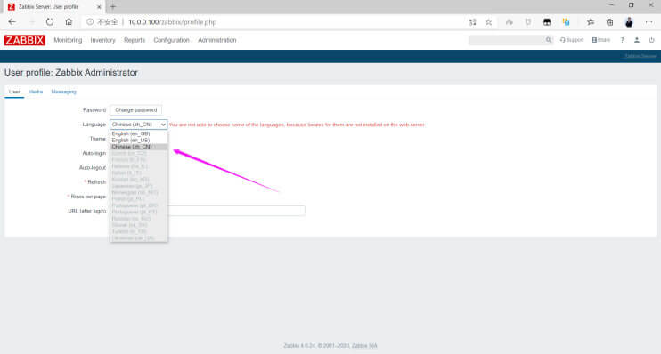</p>
<p></p>
<h4 id="解决乱码问题"><a href="#解决乱码问题" class="headerlink" title="解决乱码问题"></a>解决乱码问题</h4><p>当前系统有些监控项部分显示有乱码，是由于web界面显示为中文但是系统没有相关字体，因此需要准备相关字体文件才能正常显示，</p>
<p><br><br></p>
<figure class="highlight sh"><table><tr><td class="gutter"><pre><span class="line">1</span><br><span class="line">2</span><br><span class="line">3</span><br><span class="line">4</span><br><span class="line">5</span><br><span class="line">6</span><br><span class="line">7</span><br><span class="line">8</span><br><span class="line">9</span><br><span class="line">10</span><br><span class="line">11</span><br><span class="line">12</span><br></pre></td><td class="code"><pre><span class="line"><span class="comment">#注意: 文件名一定是小写</span></span><br><span class="line">[root@zabbix-server ~]<span class="comment"># ll /var/www/html/zabbix/assets/fonts/</span></span><br><span class="line">total 66276</span><br><span class="line">-rw-r--r-- 1 wang wang   756072 Aug 24 15:46 DejaVuSans.ttf</span><br><span class="line">-rw-r--r-- 1 root root 11787328 Mar  2  2019 simkai.ttf</span><br><span class="line">-rw-r--r-- 1 root root  6700204 May 17 13:28 simyou.ttf</span><br><span class="line"></span><br><span class="line">[root@zabbix-server ~]<span class="comment"># sed -i.bak &#x27;s/DejaVuSans/simyou/&#x27; /var/www/html/zabbix/include/defines.inc.php </span></span><br><span class="line"></span><br><span class="line"><span class="comment">#修改下面两行</span></span><br><span class="line">define(<span class="string">&#x27;ZBX_GRAPH_FONT_NAME&#x27;</span>,       <span class="string">&#x27;simyou&#x27;</span>); // font file name </span><br><span class="line">define(<span class="string">&#x27;ZBX_FONT_NAME&#x27;</span>, <span class="string">&#x27;simyou&#x27;</span>); </span><br></pre></td></tr></table></figure>

<p>再次刷新页面，乱码消失</p>
<p></p>
<h3 id="容器安装-Zabbix-Server"><a href="#容器安装-Zabbix-Server" class="headerlink" title="容器安装 Zabbix Server"></a>容器安装 Zabbix Server</h3><p>官方文档: </p>
<figure class="highlight http"><table><tr><td class="gutter"><pre><span class="line">1</span><br><span class="line">2</span><br></pre></td><td class="code"><pre><span class="line">https://www.zabbix.com/documentation/5.0/zh/manual/installation/containers</span><br><span class="line">注意:官方文档有bug</span><br></pre></td></tr></table></figure>

<p>范例: </p>
<figure class="highlight sh"><table><tr><td class="gutter"><pre><span class="line">1</span><br><span class="line">2</span><br><span class="line">3</span><br><span class="line">4</span><br><span class="line">5</span><br><span class="line">6</span><br><span class="line">7</span><br><span class="line">8</span><br><span class="line">9</span><br><span class="line">10</span><br><span class="line">11</span><br><span class="line">12</span><br><span class="line">13</span><br><span class="line">14</span><br><span class="line">15</span><br><span class="line">16</span><br><span class="line">17</span><br><span class="line">18</span><br><span class="line">19</span><br><span class="line">20</span><br><span class="line">21</span><br><span class="line">22</span><br><span class="line">23</span><br><span class="line">24</span><br><span class="line">25</span><br><span class="line">26</span><br><span class="line">27</span><br><span class="line">28</span><br><span class="line">29</span><br><span class="line">30</span><br><span class="line">31</span><br><span class="line">32</span><br><span class="line">33</span><br><span class="line">34</span><br><span class="line">35</span><br><span class="line">36</span><br><span class="line">37</span><br><span class="line">38</span><br><span class="line">39</span><br><span class="line">40</span><br><span class="line">41</span><br><span class="line">42</span><br><span class="line">43</span><br><span class="line">44</span><br><span class="line">45</span><br><span class="line">46</span><br><span class="line">47</span><br><span class="line">48</span><br><span class="line">49</span><br><span class="line">50</span><br><span class="line">51</span><br><span class="line">52</span><br><span class="line">53</span><br><span class="line">54</span><br><span class="line">55</span><br><span class="line">56</span><br><span class="line">57</span><br><span class="line">58</span><br><span class="line">59</span><br><span class="line">60</span><br><span class="line">61</span><br><span class="line">62</span><br><span class="line">63</span><br><span class="line">64</span><br><span class="line">65</span><br><span class="line">66</span><br><span class="line">67</span><br><span class="line">68</span><br><span class="line">69</span><br><span class="line">70</span><br><span class="line">71</span><br><span class="line">72</span><br></pre></td><td class="code"><pre><span class="line"><span class="comment">#先安装docker,此步略</span></span><br><span class="line"><span class="comment">#1.创建专用于Zabbix组件容器的网络：</span></span><br><span class="line">[root@ubuntu1804 ~]<span class="comment"># docker network create --subnet 172.20.0.0/16 --ip-range 172.20.240.0/20 zabbix-net</span></span><br><span class="line"></span><br><span class="line"><span class="comment">#2.启动空的MySQL服务器实例</span></span><br><span class="line"><span class="comment">#注意:此步官方文档有bug</span></span><br><span class="line">[root@ubuntu1804 ~]<span class="comment"># docker run --name mysql-server -t \</span></span><br><span class="line">      --restart=unless-stopped \</span><br><span class="line">      -e MYSQL_DATABASE=<span class="string">&quot;zabbix&quot;</span> \</span><br><span class="line">      -e MYSQL_USER=<span class="string">&quot;zabbix&quot;</span> \</span><br><span class="line">      -e MYSQL_PASSWORD=<span class="string">&quot;zabbix_pwd&quot;</span> \</span><br><span class="line">      -e MYSQL_ROOT_PASSWORD=<span class="string">&quot;root_pwd&quot;</span> \</span><br><span class="line">      --network=zabbix-net \</span><br><span class="line">      -d mysql:8.0 \</span><br><span class="line">      --character-set-server=utf8 --collation-server=utf8_bin \</span><br><span class="line">      --default-authentication-plugin=mysql_native_password</span><br><span class="line">  </span><br><span class="line"><span class="comment">#3.启动Zabbix Java gateway实例 </span></span><br><span class="line">[root@ubuntu1804 ~]<span class="comment"># docker run --name zabbix-java-gateway -t \</span></span><br><span class="line">      --network=zabbix-net \</span><br><span class="line">      --restart=unless-stopped \</span><br><span class="line">      -d zabbix/zabbix-java-gateway:alpine-5.0-latest</span><br><span class="line">      </span><br><span class="line"><span class="comment">#4.启动Zabbix server实例并将该实例与创建的MySQL服务器实例链接</span></span><br><span class="line">[root@ubuntu1804 ~]<span class="comment"># docker run --name zabbix-server-mysql -t \</span></span><br><span class="line">      -e DB_SERVER_HOST=<span class="string">&quot;mysql-server&quot;</span> \</span><br><span class="line">      -e MYSQL_DATABASE=<span class="string">&quot;zabbix&quot;</span> \</span><br><span class="line">      -e MYSQL_USER=<span class="string">&quot;zabbix&quot;</span> \</span><br><span class="line">      -e MYSQL_PASSWORD=<span class="string">&quot;zabbix_pwd&quot;</span> \</span><br><span class="line">      -e MYSQL_ROOT_PASSWORD=<span class="string">&quot;root_pwd&quot;</span> \</span><br><span class="line">      -e ZBX_JAVAGATEWAY=<span class="string">&quot;zabbix-java-gateway&quot;</span> \</span><br><span class="line">      --network=zabbix-net \</span><br><span class="line">      -p 10051:10051 \</span><br><span class="line">      --restart=unless-stopped \</span><br><span class="line">      -d zabbix/zabbix-server-mysql:alpine-5.0-latest</span><br><span class="line">      </span><br><span class="line"><span class="comment">#5.启动Zabbix Web界面，并将实例与创建的MySQL服务器和Zabbix server实例链接</span></span><br><span class="line">[root@ubuntu1804 ~]<span class="comment"># docker run --name zabbix-web-nginx-mysql -t \</span></span><br><span class="line">      -e ZBX_SERVER_HOST=<span class="string">&quot;zabbix-server-mysql&quot;</span> \</span><br><span class="line">      -e DB_SERVER_HOST=<span class="string">&quot;mysql-server&quot;</span> \</span><br><span class="line">      -e MYSQL_DATABASE=<span class="string">&quot;zabbix&quot;</span> \</span><br><span class="line">      -e MYSQL_USER=<span class="string">&quot;zabbix&quot;</span> \</span><br><span class="line">      -e MYSQL_PASSWORD=<span class="string">&quot;zabbix_pwd&quot;</span> \</span><br><span class="line">      -e MYSQL_ROOT_PASSWORD=<span class="string">&quot;root_pwd&quot;</span> \</span><br><span class="line">      --network=zabbix-net \</span><br><span class="line">      -p 80:8080 \</span><br><span class="line">      --restart=unless-stopped \</span><br><span class="line">      -d zabbix/zabbix-web-nginx-mysql:alpine-5.0-latest</span><br><span class="line">     </span><br><span class="line">[root@ubuntu1804 ~]<span class="comment"># docker ps  </span></span><br><span class="line">72a464ea73a8       zabbix/zabbix-web-nginx-mysql:alpine-5.0-latest   <span class="string">&quot;docker-entrypoint.sh&quot;</span>   5 minutes ago       Up 5 minutes        8443/tcp, 0.0.0.0:80-&gt;8080/tcp   zabbix-web-nginx-mysql</span><br><span class="line">9d239229ebfe       mysql:8.0                                         <span class="string">&quot;docker-entrypoint.s…&quot;</span>   6 minutes ago       Up 6 minutes        3306/tcp, 33060/tcp              mysql-server</span><br><span class="line">6d05971c8622       zabbix/zabbix-server-mysql:alpine-5.0-latest      <span class="string">&quot;/sbin/tini-- /usr/…&quot;</span>   8 minutes ago       Up 8 minutes        0.0.0.0:10051-&gt;10051/tcp           zabbix-server-mysql</span><br><span class="line">dc77a1cf1ca0       zabbix/zabbix-java-gateway:alpine-5.0-latest      <span class="string">&quot;docker-entrypoint.s…&quot;</span>   19 minutes ago     Up 19 minutes       10052/tcp               </span><br><span class="line">        zabbix-java-gateway</span><br><span class="line">        </span><br><span class="line">[root@ubuntu1804 ~]<span class="comment"># docker images</span></span><br><span class="line">zabbix/zabbix-web-nginx-mysql   alpine-5.0-latest   a3fb50be95b6        </span><br><span class="line">zabbix/zabbix-java-gateway      alpine-5.0-latest   0814670cd5ac        </span><br><span class="line">mysql                           8.0                 c60d96bd2b77        </span><br><span class="line">zabbix/zabbix-server-mysql      alpine-5.0-latest   6c3836e6aa39</span><br><span class="line"></span><br><span class="line"><span class="comment">#6.启动Zabbix agent</span></span><br><span class="line">docker run --name zabbix-agent       \</span><br><span class="line">      -e ZBX_HOSTNAME=<span class="string">&quot;Zabbix server&quot;</span>   \</span><br><span class="line">      -e ZBX_SERVER_HOST=<span class="string">&quot;127.0.0.1&quot;</span>   \</span><br><span class="line">      --network container:zabbix-server-mysql       \</span><br><span class="line">      --restart=unless-stopped   \</span><br><span class="line">      -d zabbix/zabbix-agent:<span class="variable">$&#123;TAG&#125;</span></span><br><span class="line">  </span><br><span class="line"><span class="comment">#访问本机的http服务即可，默认用户Admin,密码:zabbix,直接登录无需初始化过程</span></span><br><span class="line">http://zabbix-server-ip/</span><br></pre></td></tr></table></figure>

<p><br>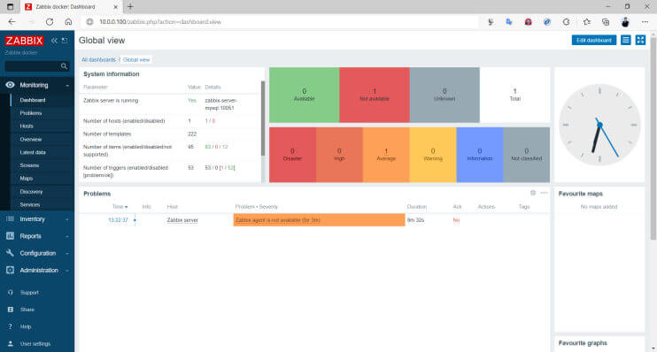</p>
<h2 id="安装-Zabbix-Agent"><a href="#安装-Zabbix-Agent" class="headerlink" title="安装 Zabbix Agent"></a>安装 Zabbix Agent</h2><p>Zabbix Agent 需要安装到被监控的主机上，它负责定期收集各项数据，并发送到zabbix server端，</p>
<p>zabbix server将数据存储到数据库中，zabbix web 访问数据库在前端进行展现和绘图。</p>
<p></p>
<p>安装Zabbix Agent 有三种方式</p>
<ul>
<li>包安装</li>
<li>二进制安装</li>
<li>编译安装</li>
</ul>
<h3 id="包安装-Zabbix-Agent"><a href="#包安装-Zabbix-Agent" class="headerlink" title="包安装 Zabbix Agent"></a>包安装 Zabbix Agent</h3><h4 id="Linux-安装-Zabbix-Agent"><a href="#Linux-安装-Zabbix-Agent" class="headerlink" title="Linux 安装 Zabbix Agent"></a>Linux 安装 Zabbix Agent</h4><p>可以从官方或国内镜像站点下载</p>
<figure class="highlight http"><table><tr><td class="gutter"><pre><span class="line">1</span><br><span class="line">2</span><br><span class="line">3</span><br></pre></td><td class="code"><pre><span class="line">https://repo.zabbix.com/zabbix/</span><br><span class="line">https://mirrors.aliyun.com/zabbix/zabbix/</span><br><span class="line">https://mirror.tuna.tsinghua.edu.cn/zabbix/zabbix/</span><br></pre></td></tr></table></figure>

<p>范例：在ubuntu22.04 安装 Zabbix Agent2 6.0</p>
<figure class="highlight sh"><table><tr><td class="gutter"><pre><span class="line">1</span><br><span class="line">2</span><br><span class="line">3</span><br><span class="line">4</span><br><span class="line">5</span><br><span class="line">6</span><br><span class="line">7</span><br><span class="line">8</span><br><span class="line">9</span><br><span class="line">10</span><br><span class="line">11</span><br></pre></td><td class="code"><pre><span class="line">[root@ubuntu2204 ~]<span class="comment"># wget https://repo.zabbix.com/zabbix/6.0/ubuntu/pool/main/z/zabbix-release/zabbix-release_6.0-4%2Bubuntu22.04_all.deb</span></span><br><span class="line">[root@ubuntu2204 ~]<span class="comment"># dpkg -i zabbix-release_6.0-4+ubuntu22.04_all.deb</span></span><br><span class="line">[root@ubuntu2204 ~]<span class="comment"># apt update</span></span><br><span class="line">[root@ubuntu2204 ~]<span class="comment"># apt install zabbix-agent2 zabbix-agent2-plugin-*</span></span><br><span class="line"></span><br><span class="line"><span class="comment">#修改配置</span></span><br><span class="line">[root@ubuntu2204 ~]<span class="comment"># vim /etc/zabbix/zabbix_agent2.conf</span></span><br><span class="line">Server=zabbix.wang.org</span><br><span class="line"></span><br><span class="line">[root@ubuntu2204 ~]<span class="comment"># systemctl restart zabbix-agent2</span></span><br><span class="line">[root@ubuntu2204 ~]<span class="comment"># systemctl enable zabbix-agent2</span></span><br></pre></td></tr></table></figure>

<p>范例: 在ubuntu20.04 安装 Zabbix Agent2 6.0</p>
<figure class="highlight sh"><table><tr><td class="gutter"><pre><span class="line">1</span><br><span class="line">2</span><br><span class="line">3</span><br><span class="line">4</span><br><span class="line">5</span><br><span class="line">6</span><br><span class="line">7</span><br><span class="line">8</span><br><span class="line">9</span><br><span class="line">10</span><br><span class="line">11</span><br><span class="line">12</span><br><span class="line">13</span><br><span class="line">14</span><br><span class="line">15</span><br><span class="line">16</span><br><span class="line">17</span><br></pre></td><td class="code"><pre><span class="line">[root@ubuntu2004 ~]<span class="comment"># wget https://repo.zabbix.com/zabbix/6.0/ubuntu/pool/main/z/zabbix-release/zabbix-release_6.0-1+ubuntu20.04_all.deb</span></span><br><span class="line">[root@ubuntu2004 ~]<span class="comment"># dpkg -i zabbix-release_6.0-1+ubuntu20.04_all.deb</span></span><br><span class="line">[root@ubuntu2004 ~]<span class="comment"># apt update</span></span><br><span class="line"></span><br><span class="line"><span class="comment">#安装agent2</span></span><br><span class="line">[root@ubuntu2004 ~]<span class="comment"># apt install zabbix-agent2</span></span><br><span class="line"></span><br><span class="line"><span class="comment">#修改配置</span></span><br><span class="line">[root@ubuntu2004 ~]<span class="comment"># vim /etc/zabbix/zabbix_agent2.conf</span></span><br><span class="line">Server=zabbix.wang.org</span><br><span class="line"></span><br><span class="line">[root@ubuntu2004 ~]<span class="comment"># systemctl restart zabbix-agent2.service </span></span><br><span class="line">                             </span><br><span class="line">[root@ubuntu2004 ~]<span class="comment"># ss -ntlp|grep zabbix</span></span><br><span class="line">LISTEN 0      128               *:10050           *:*   <span class="built_in">users</span>:((&quot;zabbix_agent2&quot;,pid=<span class="number">1317</span>,fd=<span class="number">8</span>))</span><br><span class="line"></span><br><span class="line"><span class="comment">#注意: 后续还需要在Zabbix Server 添加此主机才能实现监控</span></span><br></pre></td></tr></table></figure>

<p>范例: 在Rocky8上安装直接安装Zabbix agent 2包</p>
<figure class="highlight sh"><table><tr><td class="gutter"><pre><span class="line">1</span><br><span class="line">2</span><br><span class="line">3</span><br><span class="line">4</span><br><span class="line">5</span><br><span class="line">6</span><br><span class="line">7</span><br><span class="line">8</span><br><span class="line">9</span><br><span class="line">10</span><br><span class="line">11</span><br><span class="line">12</span><br></pre></td><td class="code"><pre><span class="line">[root@rocky8 ~]<span class="comment"># rpm -ivh https://mirrors.aliyun.com/zabbix/zabbix/6.0/rhel/8/x86_64/zabbix-agent2-6.0.5-1.el8.x86_64.rpm</span></span><br><span class="line"></span><br><span class="line"><span class="comment">#修改配置</span></span><br><span class="line">[root@rocky8 ~]<span class="comment"># vim /etc/zabbix/zabbix_agent2.conf</span></span><br><span class="line">Server=zabbix.wang.org</span><br><span class="line"></span><br><span class="line">[root@rocky8 ~]<span class="comment"># systemctl restart zabbix-agent2.service </span></span><br><span class="line">                             </span><br><span class="line">[root@rocky8 ~]<span class="comment"># ss -ntlp|grep zabbix</span></span><br><span class="line">LISTEN 0      128               *:10050           *:*   <span class="built_in">users</span>:((&quot;zabbix_agent2&quot;,pid=<span class="number">1317</span>,fd=<span class="number">8</span>))</span><br><span class="line"></span><br><span class="line"><span class="comment">#注意: 后续还需要在Zabbix Server 添加此主机才能实现监控</span></span><br></pre></td></tr></table></figure>

<p>范例: Rocky8 通过配置仓库进行安装</p>
<figure class="highlight sh"><table><tr><td class="gutter"><pre><span class="line">1</span><br><span class="line">2</span><br><span class="line">3</span><br><span class="line">4</span><br><span class="line">5</span><br><span class="line">6</span><br><span class="line">7</span><br><span class="line">8</span><br><span class="line">9</span><br><span class="line">10</span><br><span class="line">11</span><br><span class="line">12</span><br><span class="line">13</span><br><span class="line">14</span><br><span class="line">15</span><br><span class="line">16</span><br><span class="line">17</span><br><span class="line">18</span><br><span class="line">19</span><br><span class="line">20</span><br><span class="line">21</span><br><span class="line">22</span><br><span class="line">23</span><br><span class="line">24</span><br><span class="line">25</span><br><span class="line">26</span><br><span class="line">27</span><br><span class="line">28</span><br><span class="line">29</span><br><span class="line">30</span><br><span class="line">31</span><br><span class="line">32</span><br><span class="line">33</span><br><span class="line">34</span><br><span class="line">35</span><br><span class="line">36</span><br><span class="line">37</span><br><span class="line">38</span><br><span class="line">39</span><br><span class="line">40</span><br><span class="line">41</span><br><span class="line">42</span><br><span class="line">43</span><br><span class="line">44</span><br><span class="line">45</span><br><span class="line">46</span><br><span class="line">47</span><br><span class="line">48</span><br><span class="line">49</span><br><span class="line">50</span><br><span class="line">51</span><br><span class="line">52</span><br><span class="line">53</span><br><span class="line">54</span><br><span class="line">55</span><br><span class="line">56</span><br><span class="line">57</span><br><span class="line">58</span><br><span class="line">59</span><br><span class="line">60</span><br><span class="line">61</span><br><span class="line">62</span><br><span class="line">63</span><br></pre></td><td class="code"><pre><span class="line">[root@rocky8 ~]<span class="comment"># rpm -Uvh https://repo.zabbix.com/zabbix/6.0/rhel/8/x86_64/zabbix-release-6.0-1.el8.noarch.rpm</span></span><br><span class="line">[root@centos8 ~]<span class="comment"># rpm -Uvh https://repo.zabbix.com/zabbix/5.0/rhel/8/x86_64/zabbix-release-5.0-1.el8.noarch.rpm</span></span><br><span class="line">[root@centos8 ~]<span class="comment"># rpm -Uvh https://repo.zabbix.com/zabbix/4.0/rhel/8/x86_64/zabbix-release-4.0-2.el8.noarch.rpm</span></span><br><span class="line"></span><br><span class="line"><span class="comment">#修改为阿里云源</span></span><br><span class="line">[root@zabbix-server ~]<span class="comment"># vim /etc/yum.repos.d/zabbix.repo</span></span><br><span class="line">[zabbix]</span><br><span class="line">name=Zabbix Official Repository - <span class="variable">$basearch</span></span><br><span class="line">baseurl=https://mirrors.aliyun.com/zabbix/zabbix/4.0/rhel/8/x86_64/        </span><br><span class="line">enabled=1</span><br><span class="line">gpgcheck=1</span><br><span class="line">gpgkey=file:///etc/pki/rpm-gpg/RPM-GPG-KEY-ZABBIX-A14FE591</span><br><span class="line"></span><br><span class="line"><span class="comment">#或者sed修改</span></span><br><span class="line">[root@centos8 ~]<span class="comment"># sed -i.bak &#x27;s#http://repo.zabbix.com#https://mirrors.aliyun.com/zabbix#&#x27;  /etc/yum.repos.d/zabbix.repo</span></span><br><span class="line">[root@centos8 ~]<span class="comment"># yum -y install zabbix-agent</span></span><br><span class="line">[root@centos8 ~]<span class="comment"># rpm -ql zabbix-agent</span></span><br><span class="line">/etc/logrotate.d/zabbix-agent</span><br><span class="line">/etc/zabbix/zabbix_agentd.conf</span><br><span class="line">/etc/zabbix/zabbix_agentd.d</span><br><span class="line">/etc/zabbix/zabbix_agentd.d/userparameter_mysql.conf</span><br><span class="line">/usr/lib/.build-id</span><br><span class="line">/usr/lib/.build-id/0e</span><br><span class="line">/usr/lib/.build-id/0e/5b09aaf28432877d1fb9885bb527d6215463d3</span><br><span class="line">/usr/lib/systemd/system/zabbix-agent.service</span><br><span class="line">/usr/lib/tmpfiles.d/zabbix-agent.conf</span><br><span class="line">/usr/sbin/zabbix_agentd</span><br><span class="line">/usr/share/doc/zabbix-agent</span><br><span class="line">/usr/share/doc/zabbix-agent/AUTHORS</span><br><span class="line">/usr/share/doc/zabbix-agent/COPYING</span><br><span class="line">/usr/share/doc/zabbix-agent/ChangeLog</span><br><span class="line">/usr/share/doc/zabbix-agent/NEWS</span><br><span class="line">/usr/share/doc/zabbix-agent/README</span><br><span class="line">/usr/share/man/man8/zabbix_agentd.8.gz</span><br><span class="line">/var/log/zabbix</span><br><span class="line">/var/run/zabbix</span><br><span class="line"></span><br><span class="line"><span class="comment">#修改配置</span></span><br><span class="line">[root@centos8 ~]<span class="comment"># vim /etc/zabbix/zabbix_agentd.conf</span></span><br><span class="line">[root@centos8 ~]<span class="comment"># grep &#x27;^[^#]&#x27; /etc/zabbix/zabbix_agentd.conf</span></span><br><span class="line">PidFile=/var/run/zabbix/zabbix_agentd.pid</span><br><span class="line">LogFile=/var/log/zabbix/zabbix_agentd.log</span><br><span class="line">LogFileSize=0</span><br><span class="line">Server=10.0.0.100      <span class="comment">#必须指向Zabbix Server,此为必须项</span></span><br><span class="line">ServerActive=127.0.0.1 <span class="comment">#主动模式才需要指向Zabbix Server,此处无需修改</span></span><br><span class="line">Hostname=10.0.0.104    <span class="comment">#修改为当前主机的IP,主动模式才需要，此处可选</span></span><br><span class="line">Timeout=30             <span class="comment">#建议修改此值</span></span><br><span class="line">Include=/etc/zabbix/zabbix_agentd.d/*.conf</span><br><span class="line"></span><br><span class="line">[root@centos8 ~]<span class="comment"># systemctl enable --now zabbix-agent.service </span></span><br><span class="line">[root@centos8 ~]<span class="comment"># ss -ntl</span></span><br><span class="line">State               Recv-Q   Send-Q Local Address:Port   Peer Address:Port</span><br><span class="line">LISTEN               0         128           0.0.0.0:22           0.0.0.0:*</span><br><span class="line">LISTEN               0         100         127.0.0.1:25           0.0.0.0:*</span><br><span class="line">LISTEN               0         128           0.0.0.0:10050        0.0.0.0:* </span><br><span class="line">LISTEN               0         128              [::]:22              [::]:*  </span><br><span class="line">LISTEN               0         100             [::1]:25              [::]:*  </span><br><span class="line">LISTEN               0         128              [::]:10050           [::]:* </span><br><span class="line"></span><br><span class="line"><span class="comment">#查看版本</span></span><br><span class="line">[root@centos8 ~]<span class="comment"># zabbix_agentd -V</span></span><br><span class="line">zabbix_agentd (daemon) (Zabbix) 5.0.14</span><br><span class="line">Revision 892ce506db 16 July 2021, compilation time: Jul 19 2021 10:33:38</span><br></pre></td></tr></table></figure>

<h4 id="Windows-上安装-Agent2"><a href="#Windows-上安装-Agent2" class="headerlink" title="Windows 上安装 Agent2"></a>Windows 上安装 Agent2</h4><p>官方下载链接</p>
<figure class="highlight http"><table><tr><td class="gutter"><pre><span class="line">1</span><br></pre></td><td class="code"><pre><span class="line">https://www.zabbix.com/cn/download_agents?version=6.0+LTS&amp;release=6.0.5&amp;os=Windows&amp;os_version=Any&amp;hardware=amd64&amp;encryption=OpenSSL&amp;packaging=MSI&amp;show_legacy=0</span><br></pre></td></tr></table></figure>

<p><br><br><br><br><br><br><br></p>
<p>验证端口</p>
<figure class="highlight sh"><table><tr><td class="gutter"><pre><span class="line">1</span><br><span class="line">2</span><br><span class="line">3</span><br></pre></td><td class="code"><pre><span class="line">C:\Users\lbtoo&gt;netstat -an| find <span class="string">&quot;10050&quot;</span></span><br><span class="line"> TCP   0.0.0.0:10050         0.0.0.0:0             LISTENING</span><br><span class="line"> TCP   [::]:10050             [::]:0               LISTENING</span><br></pre></td></tr></table></figure>

<h3 id="二进制安装-Zabbix-Agent"><a href="#二进制安装-Zabbix-Agent" class="headerlink" title="二进制安装 Zabbix Agent"></a>二进制安装 Zabbix Agent</h3><p>官方提供了针对不同的OS编译好的程序，进行配置后即可直接使用</p>
<p>注意: 此方式在CentOS 8 上存在问题</p>
<p>官方下载链接:</p>
<figure class="highlight http"><table><tr><td class="gutter"><pre><span class="line">1</span><br></pre></td><td class="code"><pre><span class="line">https://www.zabbix.com/download_agents?version=4.0+LTS&amp;release=4.0.24&amp;os=Linux&amp;os_version=3.0&amp;hardware=amd64&amp;encryption=No+encryption&amp;packaging=Archive</span><br></pre></td></tr></table></figure>

<p></p>
<figure class="highlight sh"><table><tr><td class="gutter"><pre><span class="line">1</span><br><span class="line">2</span><br><span class="line">3</span><br><span class="line">4</span><br><span class="line">5</span><br><span class="line">6</span><br><span class="line">7</span><br><span class="line">8</span><br><span class="line">9</span><br><span class="line">10</span><br><span class="line">11</span><br><span class="line">12</span><br><span class="line">13</span><br><span class="line">14</span><br><span class="line">15</span><br><span class="line">16</span><br><span class="line">17</span><br><span class="line">18</span><br><span class="line">19</span><br><span class="line">20</span><br><span class="line">21</span><br><span class="line">22</span><br><span class="line">23</span><br><span class="line">24</span><br><span class="line">25</span><br><span class="line">26</span><br><span class="line">27</span><br><span class="line">28</span><br><span class="line">29</span><br><span class="line">30</span><br><span class="line">31</span><br><span class="line">32</span><br><span class="line">33</span><br><span class="line">34</span><br><span class="line">35</span><br><span class="line">36</span><br><span class="line">37</span><br><span class="line">38</span><br><span class="line">39</span><br><span class="line">40</span><br><span class="line">41</span><br><span class="line">42</span><br><span class="line">43</span><br><span class="line">44</span><br><span class="line">45</span><br><span class="line">46</span><br><span class="line">47</span><br><span class="line">48</span><br><span class="line">49</span><br><span class="line">50</span><br><span class="line">51</span><br><span class="line">52</span><br><span class="line">53</span><br><span class="line">54</span><br><span class="line">55</span><br><span class="line">56</span><br><span class="line">57</span><br><span class="line">58</span><br><span class="line">59</span><br><span class="line">60</span><br><span class="line">61</span><br><span class="line">62</span><br><span class="line">63</span><br><span class="line">64</span><br><span class="line">65</span><br></pre></td><td class="code"><pre><span class="line">[root@centos7 ~]<span class="comment"># wget https://cdn.zabbix.com/zabbix/binaries/stable/5.0/5.0.14/zabbix_agent-5.0.14-linux-3.0-amd64-static.tar.gz</span></span><br><span class="line">[root@centos7 ~]<span class="comment"># wget https://www.zabbix.com/downloads/4.0.24/zabbix_agent-4.0.24-linux-3.0-amd64-static.tar.gz</span></span><br><span class="line">[root@centos7 ~]<span class="comment"># mkdir -p /apps/zabbix_agent</span></span><br><span class="line">[root@centos7 ~]<span class="comment"># tar xf zabbix_agent-4.0.24-linux-3.0-amd64-static.tar.gz -C /apps/zabbix_agent/</span></span><br><span class="line">[root@centos7 ~]<span class="comment"># tree /apps/zabbix_agent/</span></span><br><span class="line">/apps/zabbix_agent/</span><br><span class="line">├── bin</span><br><span class="line">│   ├── zabbix_get</span><br><span class="line">│   └── zabbix_sender</span><br><span class="line">├── conf</span><br><span class="line">│   ├── zabbix_agentd</span><br><span class="line">│   │   ├── userparameter_examples.conf</span><br><span class="line">│   │   └── userparameter_mysql.conf</span><br><span class="line">│   └── zabbix_agentd.conf</span><br><span class="line">└── sbin</span><br><span class="line">   └── zabbix_agentd</span><br><span class="line">4 directories, 6 files</span><br><span class="line"></span><br><span class="line">[root@centos7 ~]<span class="comment"># echo &#x27;PATH=/apps/zabbix_agent/bin:/apps/zabbix_agent/sbin:$PATH&#x27; &gt; /etc/profile.d/zabbix_agent.sh</span></span><br><span class="line">[root@centos7 ~]<span class="comment"># . /etc/profile.d/zabbix_agent.sh</span></span><br><span class="line"></span><br><span class="line"><span class="comment">#修改配置</span></span><br><span class="line">[root@centos7 ~]<span class="comment"># HOST=`hostname -I`</span></span><br><span class="line">[root@centos7 ~]<span class="comment"># sed -i.bak -e &quot;s/Server=127.0.0.1/Server=10.0.0.100/&quot; \</span></span><br><span class="line">-e <span class="string">&quot;s/Hostname=Zabbix server/Hostname=<span class="variable">$HOST</span>/&quot;</span> /apps/zabbix_agent/etc/zabbix_agentd.conf</span><br><span class="line"></span><br><span class="line"><span class="comment">#启动服务</span></span><br><span class="line">[root@centos7 ~]<span class="comment"># /apps/zabbix_agent/sbin/zabbix_agentd -c /apps/zabbix_agent/conf/zabbix_agentd.conf</span></span><br><span class="line">zabbix_agentd [1370]: user zabbix does not exist</span><br><span class="line">zabbix_agentd [1370]: cannot run as root!</span><br><span class="line"></span><br><span class="line">[root@centos7 ~]<span class="comment"># useradd zabbix</span></span><br><span class="line">[wang@centos7 ~]$ /apps/zabbix_agent/sbin/zabbix_agentd -c /apps/zabbix_agent/conf/zabbix_agentd.conf</span><br><span class="line"></span><br><span class="line">[root@centos7 ~]<span class="comment"># ss -ntl</span></span><br><span class="line">State     Recv-Q Send-Q   Local Address:Port           Peer Address:Port </span><br><span class="line">LISTEN     0      128                 *:22                        *:*   </span><br><span class="line">LISTEN     0      100         127.0.0.1:25                        *:* </span><br><span class="line">LISTEN     0      128                 *:10050                     *:*           </span><br><span class="line">LISTEN     0      128              [::]:22                     [::]:* </span><br><span class="line">LISTEN     0      100             [::1]:25                     [::]:*  </span><br><span class="line"></span><br><span class="line">[root@centos7 ~]<span class="comment"># killall zabbix_agentd</span></span><br><span class="line">[root@centos7 ~]<span class="comment"># vim /lib/systemd/system/zabbix-agent.service </span></span><br><span class="line">[Unit]</span><br><span class="line">Description=Zabbix Agent</span><br><span class="line">After=syslog.target</span><br><span class="line">After=network.target</span><br><span class="line"></span><br><span class="line">[Service]</span><br><span class="line">Type=forking</span><br><span class="line">Restart=on-failure</span><br><span class="line">PIDFile=/tmp/zabbix_agentd.pid</span><br><span class="line">KillMode=control-group</span><br><span class="line">ExecStart=/apps/zabbix_agent/sbin/zabbix_agentd -c /apps/zabbix_agent/conf/zabbix_agentd.conf </span><br><span class="line">ExecStop=/bin/kill -SIGTERM <span class="variable">$MAINPID</span></span><br><span class="line">RestartSec=10s</span><br><span class="line">User=zabbix</span><br><span class="line">Group=zabbix</span><br><span class="line"></span><br><span class="line">[Install]</span><br><span class="line">WantedBy=multi-user.target</span><br><span class="line"></span><br><span class="line">[root@zabbix-server ~]<span class="comment"># systemctl daemon-reload </span></span><br><span class="line">[root@zabbix-server ~]<span class="comment"># systemctl enable --now zabbix-agent.service</span></span><br></pre></td></tr></table></figure>

<h3 id="编译安装-Zabbix-Agent"><a href="#编译安装-Zabbix-Agent" class="headerlink" title="编译安装 Zabbix Agent"></a>编译安装 Zabbix Agent</h3><p>编译安装 zabbix agent 和 zabbix server 是同一个源码包，只需指定不同的编译选项即可</p>
<figure class="highlight sh"><table><tr><td class="gutter"><pre><span class="line">1</span><br><span class="line">2</span><br><span class="line">3</span><br><span class="line">4</span><br><span class="line">5</span><br><span class="line">6</span><br><span class="line">7</span><br><span class="line">8</span><br><span class="line">9</span><br><span class="line">10</span><br><span class="line">11</span><br><span class="line">12</span><br><span class="line">13</span><br><span class="line">14</span><br><span class="line">15</span><br><span class="line">16</span><br><span class="line">17</span><br><span class="line">18</span><br><span class="line">19</span><br><span class="line">20</span><br><span class="line">21</span><br><span class="line">22</span><br><span class="line">23</span><br><span class="line">24</span><br><span class="line">25</span><br><span class="line">26</span><br><span class="line">27</span><br><span class="line">28</span><br><span class="line">29</span><br><span class="line">30</span><br><span class="line">31</span><br><span class="line">32</span><br><span class="line">33</span><br><span class="line">34</span><br><span class="line">35</span><br><span class="line">36</span><br><span class="line">37</span><br><span class="line">38</span><br><span class="line">39</span><br><span class="line">40</span><br><span class="line">41</span><br><span class="line">42</span><br><span class="line">43</span><br><span class="line">44</span><br><span class="line">45</span><br><span class="line">46</span><br><span class="line">47</span><br><span class="line">48</span><br><span class="line">49</span><br><span class="line">50</span><br><span class="line">51</span><br><span class="line">52</span><br><span class="line">53</span><br><span class="line">54</span><br><span class="line">55</span><br><span class="line">56</span><br><span class="line">57</span><br><span class="line">58</span><br><span class="line">59</span><br><span class="line">60</span><br><span class="line">61</span><br><span class="line">62</span><br><span class="line">63</span><br></pre></td><td class="code"><pre><span class="line">[root@centos8 ~]<span class="comment"># yum -y install gcc pcre-devel</span></span><br><span class="line">[root@centos8 ~]<span class="comment"># useradd zabbix </span></span><br><span class="line">[root@centos8 ~]<span class="comment"># wget https://cdn.zabbix.com/zabbix/sources/stable/4.0/zabbix-4.0.24.tar.gz</span></span><br><span class="line">[root@centos8 ~]<span class="comment"># tar xf zabbix-4.0.24.tar.gz</span></span><br><span class="line">[root@centos8 ~]<span class="comment"># cd zabbix-4.0.24/</span></span><br><span class="line">[root@centos8 zabbix-4.0.24]<span class="comment"># ./configure --prefix=/apps/zabbix_agent --enableagent </span></span><br><span class="line">[root@centos8 zabbix-4.0.24]<span class="comment"># make &amp;&amp; make install</span></span><br><span class="line">[root@centos8 zabbix-4.0.24]<span class="comment"># tree /apps/zabbix_agent/</span></span><br><span class="line">/apps/zabbix_agent/</span><br><span class="line">├── bin</span><br><span class="line">│   ├── zabbix_get</span><br><span class="line">│   └── zabbix_sender</span><br><span class="line">├── etc</span><br><span class="line">│   ├── zabbix_agentd.conf</span><br><span class="line">│   └── zabbix_agentd.conf.d</span><br><span class="line">├── lib</span><br><span class="line">│   └── modules</span><br><span class="line">├── sbin</span><br><span class="line">│   └── zabbix_agentd</span><br><span class="line">└── share</span><br><span class="line">   └── man</span><br><span class="line">       ├── man1</span><br><span class="line">       │   ├── zabbix_get.1</span><br><span class="line">       │   └── zabbix_sender.1</span><br><span class="line">       └── man8</span><br><span class="line">           └── zabbix_agentd.8</span><br><span class="line">10 directories, 7 files</span><br><span class="line"></span><br><span class="line"><span class="comment">#修改配置</span></span><br><span class="line">[root@centos8 ~]<span class="comment"># HOST=`hostname -I`</span></span><br><span class="line">[root@centos8 ~]<span class="comment"># sed -i.bak -e &quot;s/Server=127.0.0.1/Server=10.0.0.100/&quot; \</span></span><br><span class="line">-e <span class="string">&quot;s/Hostname=Zabbix server/Hostname=<span class="variable">$HOST</span>/&quot;</span> /apps/zabbix_agent/etc/zabbix_agentd.conf</span><br><span class="line"></span><br><span class="line"><span class="comment">#创建service文件</span></span><br><span class="line">[root@centos8 ~]<span class="comment"># vim /lib/systemd/system/zabbix-agent.service </span></span><br><span class="line">[Unit]</span><br><span class="line">Description=Zabbix Agent</span><br><span class="line">After=syslog.target</span><br><span class="line">After=network.target</span><br><span class="line"></span><br><span class="line">[Service]</span><br><span class="line">Type=forking</span><br><span class="line">Restart=on-failure</span><br><span class="line">PIDFile=/tmp/zabbix_agentd.pid</span><br><span class="line">KillMode=control-group</span><br><span class="line">ExecStart=/apps/zabbix_agent/sbin/zabbix_agentd -c /apps/zabbix_agent/etc/zabbix_agentd.conf </span><br><span class="line">ExecStop=/bin/kill -SIGTERM <span class="variable">$MAINPID</span></span><br><span class="line">RestartSec=10s</span><br><span class="line">User=zabbix</span><br><span class="line">Group=zabbix</span><br><span class="line"></span><br><span class="line">[Install]</span><br><span class="line">WantedBy=multi-user.target</span><br><span class="line"></span><br><span class="line">[root@centos8 ~]<span class="comment"># systemctl daemon-reload </span></span><br><span class="line">[root@centos8 ~]<span class="comment"># systemctl enable --now zabbix-agent.service           </span></span><br><span class="line">[root@centos8 ~]<span class="comment"># ss -ntl</span></span><br><span class="line">State               Recv-Q   Send-Q         Local Address:Port     Peer Address:Port</span><br><span class="line">LISTEN               0        128                   0.0.0.0:22           0.0.0.0:*</span><br><span class="line">LISTEN               0        100                 127.0.0.1:25           0.0.0.0:*  </span><br><span class="line">LISTEN               0        128                   0.0.0.0:10050        0.0.0.0:* </span><br><span class="line">LISTEN               0        128                      [::]:22              [::]:*  </span><br><span class="line">LISTEN               0        100                     [::1]:25              [::]:*  </span><br></pre></td></tr></table></figure>

<h3 id="一键编译安装-Zabbix-Agent-脚本"><a href="#一键编译安装-Zabbix-Agent-脚本" class="headerlink" title="一键编译安装 Zabbix Agent 脚本"></a>一键编译安装 Zabbix Agent 脚本</h3><p>范例1: CentOS和Ubuntu 通用</p>
<figure class="highlight sh"><table><tr><td class="gutter"><pre><span class="line">1</span><br><span class="line">2</span><br><span class="line">3</span><br><span class="line">4</span><br><span class="line">5</span><br><span class="line">6</span><br><span class="line">7</span><br><span class="line">8</span><br><span class="line">9</span><br><span class="line">10</span><br><span class="line">11</span><br><span class="line">12</span><br><span class="line">13</span><br><span class="line">14</span><br><span class="line">15</span><br><span class="line">16</span><br><span class="line">17</span><br><span class="line">18</span><br><span class="line">19</span><br><span class="line">20</span><br><span class="line">21</span><br><span class="line">22</span><br><span class="line">23</span><br><span class="line">24</span><br><span class="line">25</span><br><span class="line">26</span><br><span class="line">27</span><br><span class="line">28</span><br><span class="line">29</span><br><span class="line">30</span><br><span class="line">31</span><br><span class="line">32</span><br><span class="line">33</span><br><span class="line">34</span><br><span class="line">35</span><br><span class="line">36</span><br><span class="line">37</span><br><span class="line">38</span><br><span class="line">39</span><br><span class="line">40</span><br><span class="line">41</span><br><span class="line">42</span><br><span class="line">43</span><br><span class="line">44</span><br><span class="line">45</span><br><span class="line">46</span><br><span class="line">47</span><br><span class="line">48</span><br><span class="line">49</span><br><span class="line">50</span><br><span class="line">51</span><br><span class="line">52</span><br><span class="line">53</span><br><span class="line">54</span><br><span class="line">55</span><br><span class="line">56</span><br><span class="line">57</span><br><span class="line">58</span><br><span class="line">59</span><br><span class="line">60</span><br><span class="line">61</span><br><span class="line">62</span><br><span class="line">63</span><br><span class="line">64</span><br><span class="line">65</span><br><span class="line">66</span><br><span class="line">67</span><br><span class="line">68</span><br><span class="line">69</span><br><span class="line">70</span><br><span class="line">71</span><br><span class="line">72</span><br><span class="line">73</span><br><span class="line">74</span><br><span class="line">75</span><br><span class="line">76</span><br><span class="line">77</span><br><span class="line">78</span><br><span class="line">79</span><br><span class="line">80</span><br><span class="line">81</span><br><span class="line">82</span><br><span class="line">83</span><br><span class="line">84</span><br><span class="line">85</span><br><span class="line">86</span><br><span class="line">87</span><br><span class="line">88</span><br><span class="line">89</span><br><span class="line">90</span><br><span class="line">91</span><br><span class="line">92</span><br></pre></td><td class="code"><pre><span class="line">[root@ubuntu1804 ~]<span class="comment"># cat install_zabbix_agent_src.sh </span></span><br><span class="line"><span class="comment">#!/bin/bash</span></span><br><span class="line">ZABBIX_VER=5.0.13</span><br><span class="line">FILE=zabbix-<span class="variable">$&#123;ZABBIX_VER&#125;</span>.tar.gz</span><br><span class="line">INSTALL_DIR=/apps/zabbix_agent</span><br><span class="line">SERVER=10.0.0.100</span><br><span class="line">HOST=`hostname -I`</span><br><span class="line">. /etc/os-release</span><br><span class="line"></span><br><span class="line"><span class="function"><span class="title">color</span></span> () &#123;</span><br><span class="line">    RES_COL=60</span><br><span class="line">    MOVE_TO_COL=<span class="string">&quot;echo -en \\033[<span class="variable">$&#123;RES_COL&#125;</span>G&quot;</span></span><br><span class="line">    SETCOLOR_SUCCESS=<span class="string">&quot;echo -en \\033[1;32m&quot;</span></span><br><span class="line">    SETCOLOR_FAILURE=<span class="string">&quot;echo -en \\033[1;31m&quot;</span></span><br><span class="line">    SETCOLOR_WARNING=<span class="string">&quot;echo -en \\033[1;33m&quot;</span></span><br><span class="line">    SETCOLOR_NORMAL=<span class="string">&quot;echo -en \E[0m&quot;</span></span><br><span class="line">    <span class="built_in">echo</span> -n <span class="string">&quot;<span class="variable">$1</span>&quot;</span> &amp;&amp; <span class="variable">$MOVE_TO_COL</span></span><br><span class="line">    <span class="built_in">echo</span> -n <span class="string">&quot;[&quot;</span></span><br><span class="line">    <span class="keyword">if</span> [ <span class="variable">$2</span> = <span class="string">&quot;success&quot;</span> -o <span class="variable">$2</span> = <span class="string">&quot;0&quot;</span> ] ;<span class="keyword">then</span></span><br><span class="line">        <span class="variable">$&#123;SETCOLOR_SUCCESS&#125;</span></span><br><span class="line">        <span class="built_in">echo</span> -n $<span class="string">&quot; OK &quot;</span>    </span><br><span class="line">    <span class="keyword">elif</span> [ <span class="variable">$2</span> = <span class="string">&quot;failure&quot;</span> -o <span class="variable">$2</span> = <span class="string">&quot;1&quot;</span> ] ;<span class="keyword">then</span> </span><br><span class="line">        <span class="variable">$&#123;SETCOLOR_FAILURE&#125;</span></span><br><span class="line">        <span class="built_in">echo</span> -n $<span class="string">&quot;FAILED&quot;</span></span><br><span class="line">    <span class="keyword">else</span></span><br><span class="line">        <span class="variable">$&#123;SETCOLOR_WARNING&#125;</span></span><br><span class="line">        <span class="built_in">echo</span> -n $<span class="string">&quot;WARNING&quot;</span></span><br><span class="line">    <span class="keyword">fi</span></span><br><span class="line">    <span class="variable">$&#123;SETCOLOR_NORMAL&#125;</span></span><br><span class="line">    <span class="built_in">echo</span> -n <span class="string">&quot;]&quot;</span></span><br><span class="line">    <span class="built_in">echo</span></span><br><span class="line">&#125;</span><br><span class="line"></span><br><span class="line"><span class="function"><span class="title">check</span></span>()&#123;</span><br><span class="line">    wget https://cdn.zabbix.com/zabbix/sources/stable/<span class="variable">$&#123;ZABBIX_VER%.*&#125;</span>/zabbix-<span class="variable">$ZABBIX_VER</span>.tar.gz</span><br><span class="line">    [ -e <span class="variable">$&#123;FILE&#125;</span> ] || &#123; color <span class="string">&quot;<span class="variable">$FILE</span> 文件不存在,请检查&quot;</span> 1 ; <span class="built_in">exit</span> 1; &#125;</span><br><span class="line">&#125;</span><br><span class="line"></span><br><span class="line"><span class="function"><span class="title">prepare</span></span> ()&#123;</span><br><span class="line">    <span class="keyword">if</span> [ <span class="variable">$ID</span> = <span class="string">&quot;centos&quot;</span> <span class="variable">$ID</span> = <span class="string">&quot;rocky&quot;</span> ];<span class="keyword">then</span> </span><br><span class="line">        yum -y install gcc make pcre-devel || &#123; color <span class="string">&quot;zabbix agent 相关包安装失败,请检查&quot;</span> 1 ;<span class="built_in">exit</span>; &#125;</span><br><span class="line">    <span class="keyword">else</span></span><br><span class="line">        apt -y install gcc make || &#123; color <span class="string">&quot;zabbix agent 相关包安装失败,请检查&quot;</span> 1 ;<span class="built_in">exit</span>; &#125;</span><br><span class="line">    <span class="keyword">fi</span></span><br><span class="line">    <span class="built_in">id</span> zabbix &amp;&gt; /dev/null || useradd -r zabbix</span><br><span class="line">&#125;</span><br><span class="line"></span><br><span class="line"><span class="function"><span class="title">install</span></span>() &#123;</span><br><span class="line">    tar xf <span class="variable">$FILE</span></span><br><span class="line">    <span class="built_in">cd</span> zabbix-<span class="variable">$ZABBIX_VER</span></span><br><span class="line">    ./configure --prefix=<span class="variable">$&#123;INSTALL_DIR&#125;</span> --enable-agent</span><br><span class="line">    make &amp;&amp; make install</span><br><span class="line">&#125;</span><br><span class="line"></span><br><span class="line"><span class="function"><span class="title">config</span></span> () &#123;</span><br><span class="line">    sed -i.bak -e <span class="string">&quot;s/Server=127.0.0.1/Server=<span class="variable">$SERVER</span>/&quot;</span>  -e <span class="string">&quot;s/Hostname=Zabbix server/Hostname=<span class="variable">$HOST</span>/&quot;</span> <span class="variable">$&#123;INSTALL_DIR&#125;</span>/etc/zabbix_agentd.conf</span><br><span class="line">    <span class="built_in">echo</span> <span class="string">&#x27;PATH=$&#123;INSTALL_DIR&#125;/bin/:$&#123;INSTALL_DIR&#125;/sbin/:$PATH&#x27;</span> &gt; /etc/profile.d/zabbix_agent.sh</span><br><span class="line">&#125;</span><br><span class="line"></span><br><span class="line"><span class="function"><span class="title">service</span></span> ()&#123;</span><br><span class="line">    <span class="built_in">cat</span> &gt; /lib/systemd/system/zabbix-agent.service &lt;&lt; -EOF</span><br><span class="line">[Unit]</span><br><span class="line">Description=Zabbix Agent</span><br><span class="line">After=syslog.target</span><br><span class="line">After=network.target</span><br><span class="line"></span><br><span class="line">[Service]</span><br><span class="line">Type=forking</span><br><span class="line">Restart=on-failure</span><br><span class="line">PIDFile=/tmp/zabbix_agentd.pid</span><br><span class="line">KillMode=control-group</span><br><span class="line">ExecStart=<span class="variable">$&#123;INSTALL_DIR&#125;</span>/sbin/zabbix_agentd -c <span class="variable">$&#123;INSTALL_DIR&#125;</span>/etc/zabbix_agentd.conf </span><br><span class="line">ExecStop=/bin/kill -SIGTERM <span class="variable">$MAINPID</span></span><br><span class="line">RestartSec=10s</span><br><span class="line">User=zabbix</span><br><span class="line">Group=zabbix</span><br><span class="line"></span><br><span class="line">[Install]</span><br><span class="line">WantedBy=multi-user.target</span><br><span class="line"></span><br><span class="line">EOF</span><br><span class="line"></span><br><span class="line">   systemctl daemon-reload </span><br><span class="line">   systemctl <span class="built_in">enable</span> --now zabbix-agent.service </span><br><span class="line">   systemctl is-active zabbix-agent.service &amp;&amp; color <span class="string">&quot;Zabbix Agent 安装完成并启动&quot;</span> 0</span><br><span class="line">&#125;</span><br><span class="line"></span><br><span class="line">check</span><br><span class="line">prepare</span><br><span class="line">install</span><br><span class="line">config</span><br><span class="line">service</span><br></pre></td></tr></table></figure>

<p>范例2: 只针对CentOS系统</p>
<figure class="highlight sh"><table><tr><td class="gutter"><pre><span class="line">1</span><br><span class="line">2</span><br><span class="line">3</span><br><span class="line">4</span><br><span class="line">5</span><br><span class="line">6</span><br><span class="line">7</span><br><span class="line">8</span><br><span class="line">9</span><br><span class="line">10</span><br><span class="line">11</span><br><span class="line">12</span><br><span class="line">13</span><br><span class="line">14</span><br><span class="line">15</span><br><span class="line">16</span><br><span class="line">17</span><br><span class="line">18</span><br><span class="line">19</span><br><span class="line">20</span><br><span class="line">21</span><br><span class="line">22</span><br><span class="line">23</span><br><span class="line">24</span><br><span class="line">25</span><br><span class="line">26</span><br><span class="line">27</span><br><span class="line">28</span><br><span class="line">29</span><br><span class="line">30</span><br><span class="line">31</span><br><span class="line">32</span><br><span class="line">33</span><br><span class="line">34</span><br><span class="line">35</span><br><span class="line">36</span><br><span class="line">37</span><br><span class="line">38</span><br><span class="line">39</span><br><span class="line">40</span><br><span class="line">41</span><br><span class="line">42</span><br><span class="line">43</span><br><span class="line">44</span><br><span class="line">45</span><br><span class="line">46</span><br><span class="line">47</span><br><span class="line">48</span><br><span class="line">49</span><br><span class="line">50</span><br><span class="line">51</span><br><span class="line">52</span><br><span class="line">53</span><br><span class="line">54</span><br><span class="line">55</span><br><span class="line">56</span><br><span class="line">57</span><br><span class="line">58</span><br><span class="line">59</span><br><span class="line">60</span><br><span class="line">61</span><br><span class="line">62</span><br><span class="line">63</span><br></pre></td><td class="code"><pre><span class="line">[root@centos8 ~]<span class="comment"># cat install_zabbix_agent_for_centos.sh </span></span><br><span class="line"><span class="comment">#!/bin/bash</span></span><br><span class="line">. /etc/init.d/functions</span><br><span class="line">VERSION=zabbix-4.0.24</span><br><span class="line">FILE=<span class="variable">$&#123;VERSION&#125;</span>.tar.gz</span><br><span class="line">SERVER=10.0.0.100</span><br><span class="line">HOST=`hostname -I`</span><br><span class="line"></span><br><span class="line"><span class="function"><span class="title">check</span></span>()&#123;</span><br><span class="line">    [ -e <span class="variable">$&#123;FILE&#125;</span> ] || &#123; action <span class="string">&quot;<span class="variable">$FILE</span> 文件不存在,请检查&quot;</span> <span class="literal">false</span> ; <span class="built_in">exit</span> 1; &#125;</span><br><span class="line">&#125;</span><br><span class="line"></span><br><span class="line"><span class="function"><span class="title">prepare</span></span> ()&#123;</span><br><span class="line">    yum -y install gcc pcre-devel || &#123; action <span class="string">&quot;zabbix agent 相关包安装失败,请检查&quot;</span> <span class="literal">false</span> ;<span class="built_in">exit</span>; &#125;</span><br><span class="line">    <span class="built_in">id</span> zabbix &amp;&gt; /dev/null || useradd -r zabbix</span><br><span class="line">&#125;</span><br><span class="line"></span><br><span class="line"><span class="function"><span class="title">install</span></span>() &#123;</span><br><span class="line">    tar xf <span class="variable">$FILE</span></span><br><span class="line">    <span class="built_in">cd</span> <span class="variable">$VERSION</span></span><br><span class="line">    ./configure --prefix=/apps/zabbix_agent --enable-agent</span><br><span class="line">    make &amp;&amp; make install</span><br><span class="line">&#125;</span><br><span class="line"></span><br><span class="line"><span class="function"><span class="title">config</span></span> () &#123;</span><br><span class="line">    sed -i.bak -e <span class="string">&quot;s/Server=127.0.0.1/Server=<span class="variable">$SERVER</span>/&quot;</span> -e <span class="string">&quot;s/Hostname=Zabbix server/Hostname=<span class="variable">$HOST</span>/&quot;</span> /apps/zabbix_agent/etc/zabbix_agentd.conf</span><br><span class="line">&#125;</span><br><span class="line"></span><br><span class="line"><span class="function"><span class="title">service</span></span> ()&#123;</span><br><span class="line">    <span class="built_in">cat</span> &gt; /lib/systemd/system/zabbix-agent.service &lt;&lt;-<span class="string">EOF</span></span><br><span class="line"><span class="string">[Unit]</span></span><br><span class="line"><span class="string">Description=Zabbix Agent</span></span><br><span class="line"><span class="string">After=syslog.target</span></span><br><span class="line"><span class="string">After=network.target</span></span><br><span class="line"><span class="string"></span></span><br><span class="line"><span class="string">[Service]</span></span><br><span class="line"><span class="string">Type=forking</span></span><br><span class="line"><span class="string">Restart=on-failure</span></span><br><span class="line"><span class="string">PIDFile=/tmp/zabbix_agentd.pid</span></span><br><span class="line"><span class="string">KillMode=control-group</span></span><br><span class="line"><span class="string">ExecStart=/apps/zabbix_agent/sbin/zabbix_agentd -c /apps/zabbix_agent/etc/zabbix_agentd.conf </span></span><br><span class="line"><span class="string">ExecStop=/bin/kill -SIGTERM $MAINPID</span></span><br><span class="line"><span class="string">RestartSec=10s</span></span><br><span class="line"><span class="string">User=zabbix</span></span><br><span class="line"><span class="string">Group=zabbix</span></span><br><span class="line"><span class="string"></span></span><br><span class="line"><span class="string">[Install]</span></span><br><span class="line"><span class="string">WantedBy=multi-user.target</span></span><br><span class="line"><span class="string">EOF</span></span><br><span class="line">    systemctl daemon-reload </span><br><span class="line">    systemctl <span class="built_in">enable</span> --now zabbix-agent.service &amp;&amp; action <span class="string">&quot;Zabbix Agent 安装完成并启动&quot;</span></span><br><span class="line">&#125;</span><br><span class="line"></span><br><span class="line"><span class="function"><span class="title">env</span></span>()&#123;</span><br><span class="line">     <span class="built_in">echo</span> <span class="string">&#x27;PATH=/apps/zabbix_agent/bin/:/apps/zabbix_agent/sbin/:$PATH&#x27;</span> &gt; /etc/profile.d/zabbix_agent.sh</span><br><span class="line">&#125;</span><br><span class="line"></span><br><span class="line">check</span><br><span class="line">prepare</span><br><span class="line">install</span><br><span class="line">config</span><br><span class="line">service</span><br><span class="line"><span class="built_in">env</span></span><br></pre></td></tr></table></figure>

<h3 id="利用-Ansible-批量部署-Zabbix-Agent"><a href="#利用-Ansible-批量部署-Zabbix-Agent" class="headerlink" title="利用 Ansible 批量部署 Zabbix Agent"></a>利用 Ansible 批量部署 Zabbix Agent</h3><p>范例: 部署Zabbix agent2</p>
<figure class="highlight yaml"><table><tr><td class="gutter"><pre><span class="line">1</span><br><span class="line">2</span><br><span class="line">3</span><br><span class="line">4</span><br><span class="line">5</span><br><span class="line">6</span><br><span class="line">7</span><br><span class="line">8</span><br><span class="line">9</span><br><span class="line">10</span><br><span class="line">11</span><br><span class="line">12</span><br><span class="line">13</span><br><span class="line">14</span><br><span class="line">15</span><br><span class="line">16</span><br><span class="line">17</span><br><span class="line">18</span><br><span class="line">19</span><br><span class="line">20</span><br><span class="line">21</span><br><span class="line">22</span><br><span class="line">23</span><br><span class="line">24</span><br><span class="line">25</span><br><span class="line">26</span><br><span class="line">27</span><br><span class="line">28</span><br><span class="line">29</span><br><span class="line">30</span><br><span class="line">31</span><br><span class="line">32</span><br><span class="line">33</span><br><span class="line">34</span><br><span class="line">35</span><br><span class="line">36</span><br><span class="line">37</span><br><span class="line">38</span><br><span class="line">39</span><br><span class="line">40</span><br><span class="line">41</span><br><span class="line">42</span><br><span class="line">43</span><br><span class="line">44</span><br><span class="line">45</span><br><span class="line">46</span><br><span class="line">47</span><br><span class="line">48</span><br><span class="line">49</span><br><span class="line">50</span><br><span class="line">51</span><br><span class="line">52</span><br><span class="line">53</span><br><span class="line">54</span><br><span class="line">55</span><br><span class="line">56</span><br><span class="line">57</span><br><span class="line">58</span><br><span class="line">59</span><br><span class="line">60</span><br><span class="line">61</span><br><span class="line">62</span><br><span class="line">63</span><br><span class="line">64</span><br><span class="line">65</span><br><span class="line">66</span><br></pre></td><td class="code"><pre><span class="line">[<span class="string">root@ubuntu2004</span> <span class="string">~</span>]<span class="comment"># cat install_zabbix_agent2.yaml</span></span><br><span class="line"><span class="meta">---</span></span><br><span class="line"><span class="bullet">-</span> <span class="attr">name:</span> <span class="string">install</span> <span class="string">zabbix_agent2</span></span><br><span class="line">  <span class="attr">hosts:</span> <span class="string">all</span> </span><br><span class="line">  <span class="attr">serial:</span> <span class="number">2</span></span><br><span class="line">  <span class="attr">vars:</span></span><br><span class="line">    <span class="bullet">-</span> <span class="attr">ZX_SERVER:</span> <span class="string">&quot;zabbix.wang.org&quot;</span></span><br><span class="line">    <span class="bullet">-</span> <span class="attr">ZX_VER:</span> <span class="string">&quot;5.0&quot;</span></span><br><span class="line">    <span class="bullet">-</span> <span class="attr">ZX_URL:</span> <span class="string">&quot;https://mirror.tuna.tsinghua.edu.cn/zabbix&quot;</span></span><br><span class="line">  <span class="attr">tasks:</span> </span><br><span class="line">    <span class="bullet">-</span> <span class="attr">name:</span> <span class="string">rocky8</span></span><br><span class="line">      <span class="attr">block:</span></span><br><span class="line">        <span class="bullet">-</span> <span class="attr">name:</span> <span class="string">rocky</span> <span class="string">repo</span></span><br><span class="line">          <span class="attr">shell:</span> <span class="string">&quot;rpm -Uvh <span class="template-variable">&#123;&#123; ZX_URL &#125;&#125;</span>/zabbix/<span class="template-variable">&#123;&#123; ZX_VER &#125;&#125;</span>/rhel/8/x86_64/zabbix-release-<span class="template-variable">&#123;&#123; ZX_VER &#125;&#125;</span>-1.el8.noarch.rpm&quot;</span></span><br><span class="line">          <span class="attr">ignore_errors:</span> <span class="literal">yes</span></span><br><span class="line">        <span class="bullet">-</span> <span class="attr">name:</span> <span class="string">replace</span> <span class="string">uri</span></span><br><span class="line">          <span class="attr">replace:</span> </span><br><span class="line">            <span class="attr">path:</span> <span class="string">/etc/yum.repos.d/zabbix.repo</span></span><br><span class="line">            <span class="attr">regexp:</span> <span class="string">&quot;http://repo.zabbix.com&quot;</span></span><br><span class="line">            <span class="attr">replace:</span> <span class="string">&quot;<span class="template-variable">&#123;&#123; ZX_URL &#125;&#125;</span>&quot;</span></span><br><span class="line">        <span class="bullet">-</span> <span class="attr">name:</span> <span class="string">rocky</span> <span class="string">install</span> </span><br><span class="line">          <span class="attr">yum:</span> </span><br><span class="line">            <span class="attr">name:</span> <span class="string">zabbix-agent2</span></span><br><span class="line">            <span class="attr">state:</span> <span class="string">present</span></span><br><span class="line">      <span class="attr">when:</span> <span class="string">ansible_distribution_file_variety</span> <span class="string">==</span> <span class="string">&quot;RedHat&quot;</span></span><br><span class="line">    <span class="bullet">-</span> <span class="attr">name:</span> <span class="string">ubuntu2004</span>  </span><br><span class="line">      <span class="attr">block:</span></span><br><span class="line">        <span class="bullet">-</span> <span class="attr">name:</span> <span class="string">ubuntu</span> <span class="string">apt</span></span><br><span class="line">          <span class="attr">shell:</span> <span class="string">&quot;wget <span class="template-variable">&#123;&#123; ZX_URL &#125;&#125;</span>/zabbix/<span class="template-variable">&#123;&#123; ZX_VER &#125;&#125;</span>/ubuntu/pool/main/z/zabbix-release/zabbix-release_<span class="template-variable">&#123;&#123; ZX_VER &#125;&#125;</span>-1+focal_all.deb&quot;</span></span><br><span class="line">        <span class="bullet">-</span> <span class="attr">name:</span> <span class="string">dpkg</span></span><br><span class="line">          <span class="attr">shell:</span> <span class="string">&quot;dpkg -i zabbix-release_<span class="template-variable">&#123;&#123; ZX_VER &#125;&#125;</span>-1+focal_all.deb&quot;</span></span><br><span class="line">        <span class="bullet">-</span> <span class="attr">name:</span> <span class="string">replace</span> <span class="string">uri</span></span><br><span class="line">          <span class="attr">replace:</span></span><br><span class="line">            <span class="attr">path:</span> <span class="string">/etc/apt/sources.list.d/zabbix.list</span></span><br><span class="line">            <span class="attr">regexp:</span> <span class="string">&quot;http://repo.zabbix.com&quot;</span></span><br><span class="line">            <span class="attr">replace:</span> <span class="string">&quot;<span class="template-variable">&#123;&#123; ZX_URL &#125;&#125;</span>&quot;</span></span><br><span class="line">        <span class="bullet">-</span> <span class="attr">name:</span> <span class="string">apt</span></span><br><span class="line">          <span class="attr">apt:</span></span><br><span class="line">            <span class="attr">update_cache:</span> <span class="literal">yes</span></span><br><span class="line">            <span class="attr">name:</span> <span class="string">zabbix-agent2</span></span><br><span class="line">            <span class="attr">state:</span> <span class="string">present</span></span><br><span class="line">      <span class="attr">when:</span> <span class="string">ansible_distribution_file_variety</span> <span class="string">==</span> <span class="string">&quot;Debian&quot;</span></span><br><span class="line">    <span class="bullet">-</span> <span class="attr">name:</span> <span class="string">config</span> <span class="string">hostname</span></span><br><span class="line">      <span class="attr">replace:</span> </span><br><span class="line">        <span class="attr">path:</span> <span class="string">/etc/zabbix/zabbix_agent2.conf</span></span><br><span class="line">        <span class="attr">regexp:</span> <span class="string">&quot;Hostname=Zabbix server&quot;</span></span><br><span class="line">        <span class="attr">replace:</span> <span class="string">&quot;Hostname=<span class="template-variable">&#123;&#123; ansible_eth0.ipv4.address &#125;&#125;</span>&quot;</span></span><br><span class="line">      <span class="attr">notify:</span></span><br><span class="line">        <span class="bullet">-</span> <span class="string">restart</span> <span class="string">agent2</span></span><br><span class="line">    <span class="bullet">-</span> <span class="attr">name:</span> <span class="string">config</span> <span class="string">Server</span></span><br><span class="line">      <span class="attr">replace:</span></span><br><span class="line">        <span class="attr">path:</span> <span class="string">/etc/zabbix/zabbix_agent2.conf</span></span><br><span class="line">        <span class="attr">regexp:</span> <span class="string">&quot;Server=127.0.0.1&quot;</span></span><br><span class="line">        <span class="attr">replace:</span> <span class="string">&quot;Server=<span class="template-variable">&#123;&#123; ZX_SERVER &#125;&#125;</span>&quot;</span></span><br><span class="line">      <span class="attr">notify:</span></span><br><span class="line">        <span class="bullet">-</span> <span class="string">restart</span> <span class="string">agent2</span></span><br><span class="line">    <span class="bullet">-</span> <span class="attr">name:</span> <span class="string">service</span></span><br><span class="line">      <span class="attr">service:</span> </span><br><span class="line">        <span class="attr">name:</span> <span class="string">zabbix-agent2.service</span></span><br><span class="line">        <span class="attr">state:</span> <span class="string">started</span></span><br><span class="line">        <span class="attr">enabled:</span> <span class="literal">yes</span></span><br><span class="line">  <span class="attr">handlers:</span></span><br><span class="line">    <span class="bullet">-</span> <span class="attr">name:</span> <span class="string">restart</span> <span class="string">agent2</span></span><br><span class="line">      <span class="attr">service:</span> </span><br><span class="line">        <span class="attr">name:</span> <span class="string">zabbix-agent2.service</span></span><br><span class="line">        <span class="attr">state:</span> <span class="string">restarted</span> </span><br></pre></td></tr></table></figure>

<p>范例: 部署Zabbix agent</p>
<figure class="highlight sh"><table><tr><td class="gutter"><pre><span class="line">1</span><br><span class="line">2</span><br><span class="line">3</span><br><span class="line">4</span><br><span class="line">5</span><br><span class="line">6</span><br><span class="line">7</span><br><span class="line">8</span><br><span class="line">9</span><br><span class="line">10</span><br><span class="line">11</span><br><span class="line">12</span><br><span class="line">13</span><br><span class="line">14</span><br><span class="line">15</span><br><span class="line">16</span><br><span class="line">17</span><br><span class="line">18</span><br><span class="line">19</span><br><span class="line">20</span><br><span class="line">21</span><br><span class="line">22</span><br><span class="line">23</span><br><span class="line">24</span><br><span class="line">25</span><br><span class="line">26</span><br><span class="line">27</span><br><span class="line">28</span><br><span class="line">29</span><br><span class="line">30</span><br><span class="line">31</span><br><span class="line">32</span><br><span class="line">33</span><br><span class="line">34</span><br><span class="line">35</span><br><span class="line">36</span><br><span class="line">37</span><br><span class="line">38</span><br><span class="line">39</span><br><span class="line">40</span><br><span class="line">41</span><br><span class="line">42</span><br><span class="line">43</span><br><span class="line">44</span><br><span class="line">45</span><br><span class="line">46</span><br><span class="line">47</span><br><span class="line">48</span><br><span class="line">49</span><br><span class="line">50</span><br><span class="line">51</span><br><span class="line">52</span><br><span class="line">53</span><br><span class="line">54</span><br><span class="line">55</span><br><span class="line">56</span><br><span class="line">57</span><br><span class="line">58</span><br><span class="line">59</span><br><span class="line">60</span><br><span class="line">61</span><br><span class="line">62</span><br><span class="line">63</span><br><span class="line">64</span><br><span class="line">65</span><br><span class="line">66</span><br><span class="line">67</span><br><span class="line">68</span><br><span class="line">69</span><br><span class="line">70</span><br><span class="line">71</span><br><span class="line">72</span><br><span class="line">73</span><br><span class="line">74</span><br><span class="line">75</span><br><span class="line">76</span><br><span class="line">77</span><br><span class="line">78</span><br><span class="line">79</span><br><span class="line">80</span><br><span class="line">81</span><br><span class="line">82</span><br><span class="line">83</span><br><span class="line">84</span><br><span class="line">85</span><br><span class="line">86</span><br><span class="line">87</span><br><span class="line">88</span><br><span class="line">89</span><br><span class="line">90</span><br><span class="line">91</span><br><span class="line">92</span><br><span class="line">93</span><br><span class="line">94</span><br><span class="line">95</span><br><span class="line">96</span><br><span class="line">97</span><br><span class="line">98</span><br><span class="line">99</span><br><span class="line">100</span><br><span class="line">101</span><br><span class="line">102</span><br><span class="line">103</span><br><span class="line">104</span><br><span class="line">105</span><br><span class="line">106</span><br><span class="line">107</span><br><span class="line">108</span><br><span class="line">109</span><br><span class="line">110</span><br><span class="line">111</span><br><span class="line">112</span><br><span class="line">113</span><br><span class="line">114</span><br><span class="line">115</span><br><span class="line">116</span><br><span class="line">117</span><br><span class="line">118</span><br><span class="line">119</span><br><span class="line">120</span><br><span class="line">121</span><br><span class="line">122</span><br><span class="line">123</span><br><span class="line">124</span><br><span class="line">125</span><br></pre></td><td class="code"><pre><span class="line"><span class="comment">#先实现所有被监控主机的ssh key 验证过程略</span></span><br><span class="line"><span class="comment">#由于ansible是在Ubuntu上安装，需要在所有Zabbix Agent上安装python环境</span></span><br><span class="line">[root@ubuntu1804 ~]<span class="comment"># ln -s python3 /usr/bin/python</span></span><br><span class="line">[root@centos8 ~]<span class="comment"># yum -y install python3 &amp;&amp; ln -s python3 /usr/bin/python</span></span><br><span class="line"></span><br><span class="line"><span class="comment">#安装ansible</span></span><br><span class="line">[root@zabbix-server ~]<span class="comment"># apt -y install ansible </span></span><br><span class="line">[root@zabbix-server ~]<span class="comment"># grep -Ev &quot;^$|#&quot; /etc/ansible/hosts</span></span><br><span class="line">[web]</span><br><span class="line">10.0.0.[7:9]</span><br><span class="line"></span><br><span class="line"><span class="comment">#检查环境</span></span><br><span class="line">[root@zabbix-server ~]<span class="comment"># ansible web -m ping</span></span><br><span class="line">10.0.0.7 | SUCCESS =&gt; &#123;</span><br><span class="line">    <span class="string">&quot;changed&quot;</span>: <span class="literal">false</span>, </span><br><span class="line">    <span class="string">&quot;ping&quot;</span>: <span class="string">&quot;pong&quot;</span></span><br><span class="line">&#125;</span><br><span class="line">10.0.0.8 | SUCCESS =&gt; &#123;</span><br><span class="line">    <span class="string">&quot;changed&quot;</span>: <span class="literal">false</span>, </span><br><span class="line">    <span class="string">&quot;ping&quot;</span>: <span class="string">&quot;pong&quot;</span></span><br><span class="line">&#125;</span><br><span class="line">10.0.0.9 | SUCCESS =&gt; &#123;</span><br><span class="line">    <span class="string">&quot;changed&quot;</span>: <span class="literal">false</span>, </span><br><span class="line">    <span class="string">&quot;ping&quot;</span>: <span class="string">&quot;pong&quot;</span></span><br><span class="line">&#125;</span><br><span class="line"></span><br><span class="line">[root@zabbix-server ~]<span class="comment"># ls /opt</span></span><br><span class="line">install_zabbix_agent.yml   templates</span><br><span class="line"></span><br><span class="line">[root@zabbix-server ~]<span class="comment"># grep -Ev &#x27;^$|#&#x27; /opt/templates/zabbix_agentd.conf.j2 </span></span><br><span class="line">PidFile=/var/run/zabbix/zabbix_agentd.pid</span><br><span class="line">LogFile=/var/log/zabbix/zabbix_agentd.log</span><br><span class="line">LogFileSize=0</span><br><span class="line">Server=&#123;&#123; zabbix_server &#125;&#125;</span><br><span class="line">ServerActive=&#123;&#123; zabbix_server &#125;&#125;</span><br><span class="line">Hostname=&#123;&#123; ansible_eth0.ipv4.address &#125;&#125;</span><br><span class="line">Include=/etc/zabbix/zabbix_agentd.d/*.conf</span><br><span class="line"></span><br><span class="line">[root@zabbix-server ~]<span class="comment"># cat /opt/install_zabbix_agent.yml </span></span><br><span class="line">---</span><br><span class="line"><span class="comment">#install zabbix agent</span></span><br><span class="line">- hosts: web</span><br><span class="line">  remote_user: root</span><br><span class="line">  serial: 1</span><br><span class="line">  vars:</span><br><span class="line">    zabbix_server: <span class="string">&quot;10.0.0.100&quot;</span></span><br><span class="line">    zabbix_ver: <span class="string">&quot;5.0&quot;</span></span><br><span class="line">  </span><br><span class="line">  tasks:</span><br><span class="line">    - name: install repo package <span class="keyword">for</span> CentOS 7</span><br><span class="line">      yum: </span><br><span class="line">        name: https://repo.zabbix.com/zabbix/&#123;&#123; zabbix_ver &#125;&#125;/rhel/&#123;&#123; ansible_distribution_major_version &#125;&#125;/x86_64/zabbix-release-&#123;&#123; zabbix_ver &#125;&#125;-1.el&#123;&#123; ansible_distribution_major_version &#125;&#125;.noarch.rpm</span><br><span class="line">      when:</span><br><span class="line">        - ansible_facts[<span class="string">&#x27;distribution&#x27;</span>] == <span class="string">&quot;CentOS&quot;</span></span><br><span class="line">        - ansible_facts[<span class="string">&#x27;distribution_major_version&#x27;</span>] == <span class="string">&quot;7&quot;</span></span><br><span class="line">    - name: install repo package <span class="keyword">for</span> CentOS 8</span><br><span class="line">      dnf:</span><br><span class="line">        name: https://repo.zabbix.com/zabbix/&#123;&#123; zabbix_ver &#125;&#125;/rhel/&#123;&#123; ansible_distribution_major_version &#125;&#125;/x86_64/zabbix-release-&#123;&#123; zabbix_ver &#125;&#125;-1.el&#123;&#123; ansible_distribution_major_version &#125;&#125;.noarch.rpm</span><br><span class="line">      when:</span><br><span class="line">        - ansible_facts[<span class="string">&#x27;distribution&#x27;</span>] == <span class="string">&quot;CentOS&quot;</span></span><br><span class="line">        - ansible_facts[<span class="string">&#x27;distribution_major_version&#x27;</span>] == <span class="string">&quot;8&quot;</span></span><br><span class="line">    - name: download repo package <span class="keyword">for</span> Ubuntu 18.04</span><br><span class="line">      get_url:</span><br><span class="line">        url: https://repo.zabbix.com/zabbix/&#123;&#123; zabbix_ver &#125;&#125;/ubuntu/pool/main/z/zabbix-release/zabbix-release_&#123;&#123; zabbix_ver &#125;&#125;-1+&#123;&#123; ansible_distribution_release &#125;&#125;_all.deb    </span><br><span class="line">        dest: /opt/        </span><br><span class="line">      when: </span><br><span class="line">        - ansible_facts[<span class="string">&#x27;distribution&#x27;</span>] == <span class="string">&quot;Ubuntu&quot;</span></span><br><span class="line">        - ansible_facts[<span class="string">&#x27;distribution_major_version&#x27;</span>] == <span class="string">&quot;18&quot;</span></span><br><span class="line">        </span><br><span class="line">    - name: install repo package <span class="keyword">for</span> ubuntu 18.04</span><br><span class="line">      shell: dpkg -i /opt/zabbix-release_&#123;&#123; zabbix_ver &#125;&#125;-1+&#123;&#123; ansible_distribution_release &#125;&#125;_all.deb</span><br><span class="line">      when: </span><br><span class="line">        - ansible_facts[<span class="string">&#x27;distribution&#x27;</span>] == <span class="string">&quot;Ubuntu&quot;</span></span><br><span class="line">        - ansible_facts[<span class="string">&#x27;distribution_major_version&#x27;</span>] == <span class="string">&quot;18&quot;</span></span><br><span class="line">        </span><br><span class="line">    - name: aliyun repo <span class="keyword">for</span> CentOS</span><br><span class="line">      replace:</span><br><span class="line">        path: /etc/yum.repos.d/zabbix.repo</span><br><span class="line">        regexp: <span class="string">&#x27;repo.zabbix.com&#x27;</span></span><br><span class="line">        replace: <span class="string">&#x27;mirrors.aliyun.com/zabbix&#x27;</span></span><br><span class="line">      when: ansible_facts[<span class="string">&#x27;distribution&#x27;</span>] == <span class="string">&quot;CentOS&quot;</span></span><br><span class="line">      </span><br><span class="line">    - name: aliyun repo <span class="keyword">for</span> Ubuntu 18.04</span><br><span class="line">      replace:</span><br><span class="line">        path: /etc/apt/sources.list.d/zabbix.list</span><br><span class="line">        regexp: <span class="string">&#x27;repo.zabbix.com&#x27;</span></span><br><span class="line">        replace: <span class="string">&#x27;mirrors.aliyun.com/zabbix&#x27;</span></span><br><span class="line">      when: </span><br><span class="line">        - ansible_facts[<span class="string">&#x27;distribution&#x27;</span>] == <span class="string">&quot;Ubuntu&quot;</span></span><br><span class="line">        - ansible_facts[<span class="string">&#x27;distribution_major_version&#x27;</span>] == <span class="string">&quot;18&quot;</span></span><br><span class="line">        </span><br><span class="line">    - name: install zabbix agent packages <span class="keyword">for</span> CentOS 7</span><br><span class="line">      yum: name=zabbix-agent</span><br><span class="line">      when:</span><br><span class="line">        - ansible_facts[<span class="string">&#x27;distribution&#x27;</span>] == <span class="string">&quot;CentOS&quot;</span></span><br><span class="line">        - ansible_facts[<span class="string">&#x27;distribution_major_version&#x27;</span>] == <span class="string">&quot;7&quot;</span></span><br><span class="line">    - name: install zabbix agent packages <span class="keyword">for</span> CentOS 8</span><br><span class="line">      dnf: name=zabbix-agent</span><br><span class="line">      when: </span><br><span class="line">        - ansible_facts[<span class="string">&#x27;distribution&#x27;</span>] == <span class="string">&quot;CentOS&quot;</span></span><br><span class="line">        - ansible_facts[<span class="string">&#x27;distribution_major_version&#x27;</span>] == <span class="string">&quot;8&quot;</span></span><br><span class="line">    - name: install zabbix agent packages <span class="keyword">for</span> ubuntu 18.04</span><br><span class="line">      apt: </span><br><span class="line">        name: zabbix-agent</span><br><span class="line">        update_cache: <span class="built_in">yes</span></span><br><span class="line">      when: </span><br><span class="line">        - ansible_facts[<span class="string">&#x27;distribution&#x27;</span>] == <span class="string">&quot;Ubuntu&quot;</span></span><br><span class="line">        - ansible_facts[<span class="string">&#x27;distribution_major_version&#x27;</span>] == <span class="string">&quot;18&quot;</span></span><br><span class="line">    </span><br><span class="line">    - name: zabbix agent config file </span><br><span class="line">      template: src=zabbix_agentd.conf.j2 dest=/etc/zabbix/zabbix_agentd.conf</span><br><span class="line">    </span><br><span class="line">    - name: start zabbix agent service</span><br><span class="line">      service: name=zabbix-agent state=restarted enabled=<span class="built_in">yes</span>      </span><br><span class="line"></span><br><span class="line"><span class="comment">#开始批量部署</span></span><br><span class="line">[root@zabbix-server ~]<span class="comment"># ansible-playbook /opt/install_zabbix_agent.yml</span></span><br><span class="line"></span><br><span class="line"><span class="comment">#验证安装是否成功</span></span><br><span class="line">[root@ubuntu1804 ~]<span class="comment"># zabbix_agentd -V</span></span><br><span class="line">zabbix_agentd (daemon) (Zabbix) 5.0.14</span><br><span class="line">Revision 892ce506db 16 July 2021, compilation time: Jul 16 2021 14:45:07</span><br><span class="line"></span><br><span class="line">[root@ubuntu1804 ~]<span class="comment"># systemctl is-active zabbix-agent.service</span></span><br><span class="line">active</span><br></pre></td></tr></table></figure>

<h3 id="利用-zabbix-get-工具测试-Zabbix-Agent-是否正常"><a href="#利用-zabbix-get-工具测试-Zabbix-Agent-是否正常" class="headerlink" title="利用 zabbix_get 工具测试 Zabbix Agent 是否正常"></a>利用 zabbix_get 工具测试 Zabbix Agent 是否正常</h3><p>利用 zabbix_get 工具可以测试 Zabbix Agent 是否正常</p>
<p>Zabbix Agent 内置的监控项</p>
<figure class="highlight http"><table><tr><td class="gutter"><pre><span class="line">1</span><br></pre></td><td class="code"><pre><span class="line">https://www.zabbix.com/documentation/5.0/zh/manual/config/items/itemtypes/zabbix_agent</span><br></pre></td></tr></table></figure>

<p>不同平台支持 Zabbix agent监控项:</p>
<figure class="highlight http"><table><tr><td class="gutter"><pre><span class="line">1</span><br></pre></td><td class="code"><pre><span class="line">https://www.zabbix.com/documentation/5.0/zh/manual/appendix/items/supported_by_platform</span><br></pre></td></tr></table></figure>

<p>范例: Ubuntu20.04安装 Zabbix_get </p>
<figure class="highlight sh"><table><tr><td class="gutter"><pre><span class="line">1</span><br><span class="line">2</span><br><span class="line">3</span><br><span class="line">4</span><br><span class="line">5</span><br><span class="line">6</span><br><span class="line">7</span><br></pre></td><td class="code"><pre><span class="line">[root@ubuntu2004 ~]<span class="comment"># wget wget https://repo.zabbix.com/zabbix/6.0/ubuntu/pool/main/z/zabbix-release/zabbix-release_6.0-1+ubuntu20.04_all.deb</span></span><br><span class="line">[root@ubuntu2004 ~]<span class="comment"># dpkg -i zabbix-release_6.0-1+ubuntu20.04_all.deb</span></span><br><span class="line">[root@ubuntu2004 ~]<span class="comment"># apt update</span></span><br><span class="line">[root@ubuntu2004 ~]<span class="comment"># apt -y install zabbix-get</span></span><br><span class="line">[root@ubuntu2004 ~]<span class="comment"># zabbix_get -V</span></span><br><span class="line">zabbix_get (Zabbix) 6.0.5</span><br><span class="line">Revision 8da3e1f8419 30 May 2022, compilation time: May 30 2022 06:40:36</span><br></pre></td></tr></table></figure>

<p>范例: Rocky8 安装 zabbix_get</p>
<figure class="highlight sh"><table><tr><td class="gutter"><pre><span class="line">1</span><br><span class="line">2</span><br><span class="line">3</span><br><span class="line">4</span><br></pre></td><td class="code"><pre><span class="line">[root@rocky8 ~]<span class="comment"># rpm -ivh https://mirror.tuna.tsinghua.edu.cn/zabbix/zabbix/6.0/rhel/8/x86_64/zabbix-get-6.0.5-1.el8.x86_64.rpm</span></span><br><span class="line">[root@rocky8 ~]<span class="comment"># zabbix_get -V</span></span><br><span class="line">zabbix_get (Zabbix) 6.0.5</span><br><span class="line">Revision 8da3e1f8419 30 May 2022, compilation time: May 30 2022 13:41:39</span><br></pre></td></tr></table></figure>

<p>范例： 使用zabbix_get 工具查看验证agent是否正常</p>
<figure class="highlight sh"><table><tr><td class="gutter"><pre><span class="line">1</span><br><span class="line">2</span><br><span class="line">3</span><br><span class="line">4</span><br><span class="line">5</span><br><span class="line">6</span><br><span class="line">7</span><br><span class="line">8</span><br><span class="line">9</span><br><span class="line">10</span><br><span class="line">11</span><br><span class="line">12</span><br><span class="line">13</span><br><span class="line">14</span><br><span class="line">15</span><br><span class="line">16</span><br><span class="line">17</span><br><span class="line">18</span><br><span class="line">19</span><br><span class="line">20</span><br></pre></td><td class="code"><pre><span class="line"><span class="comment">#返回1表示正常</span></span><br><span class="line">[root@zabbix-server ~]<span class="comment">#/apps/zabbix_server/bin/zabbix_get -s 10.0.0.103 -p 10050 -k &quot;agent.ping&quot;</span></span><br><span class="line">1</span><br><span class="line"></span><br><span class="line">[root@zabbix-server ~]<span class="comment">#/apps/zabbix_server/bin/zabbix_get -s 127.0.0.1 -p 10050 -k &quot;agent.ping&quot;</span></span><br><span class="line">1</span><br><span class="line"></span><br><span class="line"><span class="comment">#故障现象，可能为agent主机的网络不通导致,agent服务没有启动，配置错误如:Server错误地址,StartAgents=0等</span></span><br><span class="line">[root@zabbix-server ~]<span class="comment"># /apps/zabbix_server/bin/zabbix_get -s 10.0.0.102 -p 10050 -k &quot;agent.ping&quot;</span></span><br><span class="line">zabbix_get [9147]: Get value error: cannot connect to [[10.0.0.102]:10050]: [113] </span><br><span class="line">No route to host</span><br><span class="line"></span><br><span class="line"><span class="comment">#故障现象，一般为主标主机没有启动agent</span></span><br><span class="line">[root@zabbix-server ~]<span class="comment"># zabbix_get -s 10.0.0.7 -p 10050 -k &quot;agent.ping&quot;</span></span><br><span class="line">zabbix_get [19982]: Get value error: cannot connect to [[10.0.0.7]:10050]: [111] </span><br><span class="line">Connection refused</span><br><span class="line"></span><br><span class="line"><span class="comment">#故障现象，agent 没有将server指令指向server的地址，导致server无法获取agent的信息</span></span><br><span class="line">[root@zabbix-server ~]<span class="comment"># /apps/zabbix_server/bin/zabbix_get -s 10.0.0.100 -p 10050 -k &quot;agent.ping&quot;</span></span><br><span class="line">zabbix_get [9162]: Check access restrictions <span class="keyword">in</span> Zabbix agent configuration</span><br></pre></td></tr></table></figure>

<p>范例： 利用zabbix_get 获取指定的监控项</p>
<figure class="highlight sh"><table><tr><td class="gutter"><pre><span class="line">1</span><br><span class="line">2</span><br><span class="line">3</span><br><span class="line">4</span><br><span class="line">5</span><br><span class="line">6</span><br><span class="line">7</span><br><span class="line">8</span><br><span class="line">9</span><br><span class="line">10</span><br><span class="line">11</span><br><span class="line">12</span><br><span class="line">13</span><br><span class="line">14</span><br><span class="line">15</span><br><span class="line">16</span><br><span class="line">17</span><br><span class="line">18</span><br><span class="line">19</span><br><span class="line">20</span><br></pre></td><td class="code"><pre><span class="line">[root@zabbix-server ~]<span class="comment"># zabbix_get -s 10.0.0.8 -p 10050 -k &quot;system.hostname&quot;</span></span><br><span class="line">centos8.magedu.org</span><br><span class="line"></span><br><span class="line">[root@zabbix-server ~]<span class="comment"># zabbix_get -s 10.0.0.8 -p 10050 -k &quot;system.uname&quot;</span></span><br><span class="line">Linux centos8.magedu.org 4.18.0-240.el8.x86_64 <span class="comment">#1 SMP Fri Sep 25 19:48:47 UTC 2020 x86_64</span></span><br><span class="line"></span><br><span class="line">[root@zabbix-server ~]<span class="comment"># zabbix_get -s 10.0.0.8 -p 10050 -k &quot;system.users.num&quot;</span></span><br><span class="line">2</span><br><span class="line"></span><br><span class="line"><span class="comment">#检查端口是否打开</span></span><br><span class="line">[root@zabbix-server ~]<span class="comment"># zabbix_get -s 10.0.0.8 -p 10050 -k &quot;net.tcp.port[,22]&quot;</span></span><br><span class="line">1</span><br><span class="line"></span><br><span class="line"><span class="comment">#查看sshd进程数</span></span><br><span class="line">[root@zabbix-server ~]<span class="comment"># zabbix_get -s 10.0.0.8 -p 10050 -k &quot;proc.num[sshd,,,]&quot;</span></span><br><span class="line">3</span><br><span class="line"></span><br><span class="line"><span class="comment">#查看zabbix_agentd进程数</span></span><br><span class="line">[root@zabbix-server ~]<span class="comment"># zabbix_get -s 10.0.0.8 -p 10050 -k &#x27;proc.num[zabbix_agentd]&#x27;</span></span><br><span class="line">6</span><br></pre></td></tr></table></figure>

<p>范例: 使用Zabbix WEB 测试是否agent 正常</p>
<p></p>
<h3 id="Zabbix-Agent2-安装和配置"><a href="#Zabbix-Agent2-安装和配置" class="headerlink" title="Zabbix Agent2 安装和配置"></a>Zabbix Agent2 安装和配置</h3><p>Zabbix agent 2 是新一代的 Zabbix agent，在Zabbix 4.4的版本时已经推出. 未来可能会代替 Zabbix agent</p>
<p>官方说明</p>
<figure class="highlight http"><table><tr><td class="gutter"><pre><span class="line">1</span><br></pre></td><td class="code"><pre><span class="line">https://www.zabbix.com/documentation/5.0/manual/concepts/agent2</span><br></pre></td></tr></table></figure>

<p>Zabbix Agent2 特点</p>
<ul>
<li>减少 TCP 连接的数量</li>
<li>基于 go 开发，支持更大的并发性检查</li>
<li>插件易于扩展。插件应该能够：<ul>
<li>提供琐碎的检查，包括只有几个简单的代码行</li>
<li>提供复杂的检查，包括长期运行的脚本和独立的数据收集，并定期发回数据</li>
</ul>
</li>
<li>是 Zabbix agent 的替代版版本（因为它支持所有以前的功能） </li>
<li>agent2是多线程模式,agent是多进程模式</li>
</ul>
<p>对比 Agent和Agent2 官方链接</p>
<figure class="highlight http"><table><tr><td class="gutter"><pre><span class="line">1</span><br></pre></td><td class="code"><pre><span class="line">https://www.zabbix.com/documentation/5.0/zh/manual/appendix/agent_comparison</span><br></pre></td></tr></table></figure>

<p>Agent2 使用说明</p>
<figure class="highlight http"><table><tr><td class="gutter"><pre><span class="line">1</span><br></pre></td><td class="code"><pre><span class="line">https://www.zabbix.com/documentation/5.0/zh/manpages/zabbix_agent2</span><br></pre></td></tr></table></figure>

<p>范例: Rocky8 安装Zabbix Agent2</p>
<figure class="highlight sh"><table><tr><td class="gutter"><pre><span class="line">1</span><br><span class="line">2</span><br><span class="line">3</span><br><span class="line">4</span><br><span class="line">5</span><br><span class="line">6</span><br><span class="line">7</span><br><span class="line">8</span><br><span class="line">9</span><br><span class="line">10</span><br><span class="line">11</span><br><span class="line">12</span><br><span class="line">13</span><br><span class="line">14</span><br><span class="line">15</span><br><span class="line">16</span><br><span class="line">17</span><br><span class="line">18</span><br><span class="line">19</span><br><span class="line">20</span><br><span class="line">21</span><br><span class="line">22</span><br><span class="line">23</span><br><span class="line">24</span><br><span class="line">25</span><br><span class="line">26</span><br><span class="line">27</span><br><span class="line">28</span><br><span class="line">29</span><br><span class="line">30</span><br><span class="line">31</span><br><span class="line">32</span><br><span class="line">33</span><br><span class="line">34</span><br><span class="line">35</span><br><span class="line">36</span><br><span class="line">37</span><br><span class="line">38</span><br><span class="line">39</span><br><span class="line">40</span><br><span class="line">41</span><br><span class="line">42</span><br><span class="line">43</span><br><span class="line">44</span><br><span class="line">45</span><br></pre></td><td class="code"><pre><span class="line"><span class="comment">#从国内镜像下载</span></span><br><span class="line">[root@rocky8 ~]<span class="comment"># rpm -ivh  https://mirror.tuna.tsinghua.edu.cn/zabbix/zabbix/6.0/rhel/8/x86_64/zabbix-agent2-6.0.5-1.el8.x86_64.rpm</span></span><br><span class="line">[root@rocky8 ~]<span class="comment"># rpm -ql https://mirror.tuna.tsinghua.edu.cn/zabbix/zabbix/6.0/rhel/8/x86_64/zabbix-agent2-6.0.5-1.el8.x86_64.rpm </span></span><br><span class="line">warning: </span><br><span class="line">https://mirror.tuna.tsinghua.edu.cn/zabbix/zabbix/6.0/rhel/8/x86_64/zabbix-agent2-6.0.5-1.el8.x86_64.rpm: Header V4 RSA/SHA512 Signature, key ID a14fe591: NOKEY</span><br><span class="line">/etc/logrotate.d/zabbix-agent2</span><br><span class="line">/etc/zabbix/zabbix_agent2.conf</span><br><span class="line">/etc/zabbix/zabbix_agent2.d</span><br><span class="line">/etc/zabbix/zabbix_agent2.d/plugins.d/ceph.conf</span><br><span class="line">/etc/zabbix/zabbix_agent2.d/plugins.d/docker.conf</span><br><span class="line">/etc/zabbix/zabbix_agent2.d/plugins.d/memcached.conf</span><br><span class="line">/etc/zabbix/zabbix_agent2.d/plugins.d/modbus.conf</span><br><span class="line">/etc/zabbix/zabbix_agent2.d/plugins.d/mongodb.conf</span><br><span class="line">/etc/zabbix/zabbix_agent2.d/plugins.d/mqtt.conf</span><br><span class="line">/etc/zabbix/zabbix_agent2.d/plugins.d/mysql.conf</span><br><span class="line">/etc/zabbix/zabbix_agent2.d/plugins.d/oracle.conf</span><br><span class="line">/etc/zabbix/zabbix_agent2.d/plugins.d/postgres.conf</span><br><span class="line">/etc/zabbix/zabbix_agent2.d/plugins.d/redis.conf</span><br><span class="line">/etc/zabbix/zabbix_agent2.d/plugins.d/smart.conf</span><br><span class="line">/usr/lib/.build-id</span><br><span class="line">/usr/lib/.build-id/88</span><br><span class="line">/usr/lib/.build-id/88/e20f765be60a306e65225d3110fae01371ddee</span><br><span class="line">/usr/lib/systemd/system/zabbix-agent2.service</span><br><span class="line">/usr/lib/tmpfiles.d/zabbix_agent2.conf</span><br><span class="line">/usr/sbin/zabbix_agent2</span><br><span class="line">/usr/share/doc/zabbix-agent2</span><br><span class="line">/usr/share/doc/zabbix-agent2/AUTHORS</span><br><span class="line">/usr/share/doc/zabbix-agent2/COPYING</span><br><span class="line">/usr/share/doc/zabbix-agent2/ChangeLog</span><br><span class="line">/usr/share/doc/zabbix-agent2/NEWS</span><br><span class="line">/usr/share/doc/zabbix-agent2/README</span><br><span class="line">/usr/share/man/man8/zabbix_agent2.8.gz</span><br><span class="line">/var/log/zabbix</span><br><span class="line">/var/run/zabbix</span><br><span class="line"></span><br><span class="line">[root@rocky8 ~]<span class="comment"># vim /etc/zabbix/zabbix_agent2.conf</span></span><br><span class="line">Server=zabbix.wang.org</span><br><span class="line"></span><br><span class="line">[root@rocky8 ~]<span class="comment"># systemctl enable --now zabbix-agent2.service </span></span><br><span class="line">[root@rocky8 ~]<span class="comment"># ss -ntlp|grep zabbix</span></span><br><span class="line">LISTEN 0      128               *:10050           *:*   <span class="built_in">users</span>:((&quot;zabbix_agent2&quot;,pid=<span class="number">22792</span>,fd=<span class="number">8</span>))</span><br><span class="line"></span><br><span class="line"><span class="comment">#Zabbix Server 测试连接</span></span><br><span class="line">[root@zabbix-server ~]<span class="comment"># zabbix_get -s 10.0.0.8 -k agent.ping</span></span><br><span class="line">1</span><br></pre></td></tr></table></figure>

<p><br></p>
<p>过一会儿会变绿</p>
<p><br></p>
<p>范例: 安装和配置Zabbix agent2</p>
<figure class="highlight sh"><table><tr><td class="gutter"><pre><span class="line">1</span><br><span class="line">2</span><br><span class="line">3</span><br><span class="line">4</span><br><span class="line">5</span><br><span class="line">6</span><br><span class="line">7</span><br><span class="line">8</span><br><span class="line">9</span><br><span class="line">10</span><br><span class="line">11</span><br><span class="line">12</span><br><span class="line">13</span><br><span class="line">14</span><br><span class="line">15</span><br><span class="line">16</span><br><span class="line">17</span><br><span class="line">18</span><br><span class="line">19</span><br><span class="line">20</span><br><span class="line">21</span><br><span class="line">22</span><br><span class="line">23</span><br><span class="line">24</span><br><span class="line">25</span><br><span class="line">26</span><br><span class="line">27</span><br><span class="line">28</span><br><span class="line">29</span><br><span class="line">30</span><br><span class="line">31</span><br><span class="line">32</span><br><span class="line">33</span><br><span class="line">34</span><br><span class="line">35</span><br><span class="line">36</span><br><span class="line">37</span><br><span class="line">38</span><br><span class="line">39</span><br><span class="line">40</span><br></pre></td><td class="code"><pre><span class="line"><span class="comment">#停止agent 防止端口10050/tcp冲突</span></span><br><span class="line">[root@ubuntu1804 ~]<span class="comment"># systemctl disable --now zabbix-agent</span></span><br><span class="line"></span><br><span class="line"><span class="comment">#安装</span></span><br><span class="line">[root@ubuntu1804 ~]<span class="comment"># apt -y install zabbix-agent2</span></span><br><span class="line">[root@centos8 ~]<span class="comment"># yum -y install zabbix-agent2</span></span><br><span class="line"></span><br><span class="line"><span class="comment">#配置文件和agent相同</span></span><br><span class="line">[root@ubuntu1804 ~]<span class="comment"># grep -vE &#x27;^$|#&#x27; /etc/zabbix/zabbix_agent2.conf </span></span><br><span class="line">PidFile=/var/run/zabbix/zabbix_agent2.pid</span><br><span class="line">LogFile=/var/log/zabbix/zabbix_agent2.<span class="built_in">log</span></span><br><span class="line">LogFileSize=0</span><br><span class="line">Server=10.0.0.100         <span class="comment">#修改此行</span></span><br><span class="line">ServerActive=127.0.0.1</span><br><span class="line">Hostname=Zabbix server</span><br><span class="line">Include=/etc/zabbix/zabbix_agent2.d/*.conf</span><br><span class="line">ControlSocket=/tmp/agent.sock</span><br><span class="line"></span><br><span class="line">[root@ubuntu1804 ~]<span class="comment"># systemctl restart zabbix-agent2</span></span><br><span class="line"></span><br><span class="line"><span class="comment">#在Zabbix Server测试</span></span><br><span class="line">[root@zabbix-server ~]<span class="comment"># zabbix_get -s 10.0.0.9 -k &#x27;agent.ping&#x27;</span></span><br><span class="line">1</span><br><span class="line"></span><br><span class="line"><span class="comment">#agent2是多线程</span></span><br><span class="line">[root@rocky8 ~]<span class="comment"># pstree -p|grep zabbix_agent2</span></span><br><span class="line">           `-zabbix_agent2(1825)-+-&#123;zabbix_agent2&#125;(1826)</span><br><span class="line">                                 |-&#123;zabbix_agent2&#125;(1827)</span><br><span class="line">                                 |-&#123;zabbix_agent2&#125;(1828)</span><br><span class="line">                                 |-&#123;zabbix_agent2&#125;(1829)</span><br><span class="line">                                 |-&#123;zabbix_agent2&#125;(1830)</span><br><span class="line">                                 |-&#123;zabbix_agent2&#125;(1831)</span><br><span class="line">                                 `-&#123;zabbix_agent2&#125;(1833)</span><br><span class="line"><span class="comment">#agent是多进程</span></span><br><span class="line">[root@rocky8 ~]<span class="comment"># pstree -p | grep zabbix_agent</span></span><br><span class="line">           `-zabbix_agentd(1448)-+-zabbix_agentd(1449)</span><br><span class="line">                                 |-zabbix_agentd(1450)</span><br><span class="line">                                 |-zabbix_agentd(1451)</span><br><span class="line">                                 |-zabbix_agentd(1452)</span><br><span class="line">                                 `-zabbix_agentd(1453)</span><br></pre></td></tr></table></figure>

<h2 id="案例-将Zabbix-Server的MySQL-数据库迁移到独立的MySQL服务器"><a href="#案例-将Zabbix-Server的MySQL-数据库迁移到独立的MySQL服务器" class="headerlink" title="案例: 将Zabbix Server的MySQL 数据库迁移到独立的MySQL服务器"></a>案例: 将Zabbix Server的MySQL 数据库迁移到独立的MySQL服务器</h2><figure class="highlight sh"><table><tr><td class="gutter"><pre><span class="line">1</span><br><span class="line">2</span><br><span class="line">3</span><br><span class="line">4</span><br><span class="line">5</span><br><span class="line">6</span><br><span class="line">7</span><br><span class="line">8</span><br><span class="line">9</span><br><span class="line">10</span><br><span class="line">11</span><br><span class="line">12</span><br><span class="line">13</span><br><span class="line">14</span><br><span class="line">15</span><br><span class="line">16</span><br><span class="line">17</span><br><span class="line">18</span><br><span class="line">19</span><br><span class="line">20</span><br><span class="line">21</span><br><span class="line">22</span><br><span class="line">23</span><br><span class="line">24</span><br><span class="line">25</span><br><span class="line">26</span><br><span class="line">27</span><br><span class="line">28</span><br><span class="line">29</span><br><span class="line">30</span><br><span class="line">31</span><br><span class="line">32</span><br><span class="line">33</span><br></pre></td><td class="code"><pre><span class="line"><span class="comment">#停止 Zabbix 服务</span></span><br><span class="line">[root@zabbix-server ~]<span class="comment"># systemctl stop zabbix-server.service</span></span><br><span class="line"></span><br><span class="line"><span class="comment">#备份数据库</span></span><br><span class="line">[root@zabbix-server ~]<span class="comment"># mysqldump -uroot -A -F --single-transaction &gt; /data/all.sql</span></span><br><span class="line">[root@zabbix-server ~]<span class="comment"># systemctl disable --now mysql</span></span><br><span class="line"></span><br><span class="line"><span class="comment">#在独立数据库服务器上安装并恢复数据库</span></span><br><span class="line">[root@mysql-server ~]<span class="comment"># apt -y install mysql-server</span></span><br><span class="line">[root@mysql-server ~]<span class="comment"># vim /etc/mysql/mysql.conf.d/mysqld.cnf</span></span><br><span class="line"><span class="comment">#注释两行</span></span><br><span class="line"><span class="comment">#bind-address       = 127.0.0.1</span></span><br><span class="line"><span class="comment">#mysqlx-bind-address   = 127.0.0.1</span></span><br><span class="line"></span><br><span class="line">[root@mysql-server ~]<span class="comment"># systemctl restart mysql</span></span><br><span class="line">[root@mysql-server ~]<span class="comment"># mysql &lt; all.sql</span></span><br><span class="line"></span><br><span class="line"><span class="comment">#重新授权用户允许远程连接zabbix数据库</span></span><br><span class="line">[root@mysql-server ~]<span class="comment"># mysql </span></span><br><span class="line">mysql&gt;create user zabbix@<span class="string">&#x27;10.0.0.%&#x27;</span> identified by <span class="string">&#x27;123456&#x27;</span>;</span><br><span class="line">mysql&gt;grant all privileges on zabbix.* to zabbix@<span class="string">&#x27;10.0.0.%&#x27;</span>;</span><br><span class="line"></span><br><span class="line"><span class="comment">#将php的配置指向新的数据库服务器IP</span></span><br><span class="line">[root@zabbix-server ~]<span class="comment"># vim /usr/share/zabbix/conf/zabbix.conf.php</span></span><br><span class="line"><span class="variable">$DB</span>[<span class="string">&#x27;SERVER&#x27;</span>]           = <span class="string">&#x27;10.0.0.101&#x27;</span>;</span><br><span class="line"></span><br><span class="line"><span class="comment">#将Zabbix Server的配置指向新的数据库服务器IP</span></span><br><span class="line">[root@zabbix-server ~]<span class="comment"># vim /etc/zabbix/zabbix_server.conf</span></span><br><span class="line">DBHost=10.0.0.101</span><br><span class="line">DBPort=3306</span><br><span class="line"></span><br><span class="line"><span class="comment">#重启服务生效</span></span><br><span class="line">[root@zabbix-server ~]<span class="comment"># systemctl start zabbix-server.service</span></span><br></pre></td></tr></table></figure>

<h1 id="Zabbix-核心功能"><a href="#Zabbix-核心功能" class="headerlink" title="Zabbix 核心功能"></a>Zabbix 核心功能</h1><h2 id="使用现有模板和监控项监控主机和应用"><a href="#使用现有模板和监控项监控主机和应用" class="headerlink" title="使用现有模板和监控项监控主机和应用"></a>使用现有模板和监控项监控主机和应用</h2><p>内置模板参考链接: </p>
<figure class="highlight http"><table><tr><td class="gutter"><pre><span class="line">1</span><br></pre></td><td class="code"><pre><span class="line">https://git.zabbix.com/projects/ZBX/repos/zabbix/browse/templates</span><br></pre></td></tr></table></figure>

<p><strong>使用现有模板和监控项监控主机流程</strong></p>
<ul>
<li>在被监控的主机上安装Zabbix Agent ，建议和 Zabbix Server 同一个版本</li>
<li>配置 Zabbix agent的配置文件关键两项，并重启服务生效</li>
</ul>
<figure class="highlight http"><table><tr><td class="gutter"><pre><span class="line">1</span><br><span class="line">2</span><br></pre></td><td class="code"><pre><span class="line">Server = &lt;Zabbix_Server_IP&gt;</span><br><span class="line">Hostname=&lt;本机IP&gt;</span><br></pre></td></tr></table></figure>

<ul>
<li>在Zabbix Server 上使用 zabbix_get 工具测试是否正常连接被监控主机</li>
<li>在Zabbix Server 添加被监控主机</li>
<li>在Zabbix WEB 添加已有的模板至被监控的主机</li>
<li>在Zabbix WEB 观察是否有新数据生成</li>
</ul>
<h3 id="监控-Linux-主机"><a href="#监控-Linux-主机" class="headerlink" title="监控 Linux 主机"></a>监控 Linux 主机</h3><p>监控前先确保被监控主机已经安装好 Zabbix agent 并启动</p>
<p>LInux 主机模板参考链接：</p>
<figure class="highlight http"><table><tr><td class="gutter"><pre><span class="line">1</span><br><span class="line">2</span><br></pre></td><td class="code"><pre><span class="line">监控前先确保被监控主机已经安装好 Zabbix agent 并启动</span><br><span class="line">LInux 主机模板参考链接：</span><br></pre></td></tr></table></figure>

<h4 id="添加主机"><a href="#添加主机" class="headerlink" title="添加主机"></a>添加主机</h4><p>Zabbix Server 5.0 以上版本</p>
<p></p>
<p>Zabbix Server 4.0 以上版本</p>
<p></p>
<p></p>
<h4 id="关联内置模板"><a href="#关联内置模板" class="headerlink" title="关联内置模板"></a>关联内置模板</h4><p>模板是一些事先定义好的相关监控项的集合，直接关联模板，比一个一个加入监控项要方便很多</p>
<p>模板分为内置模板和自定义模板</p>
<p>内置模板参看:</p>
<figure class="highlight http"><table><tr><td class="gutter"><pre><span class="line">1</span><br></pre></td><td class="code"><pre><span class="line">https://git.zabbix.com/projects/ZBX/repos/zabbix/browse/templates</span><br></pre></td></tr></table></figure>

<p>内置的监控项</p>
<figure class="highlight http"><table><tr><td class="gutter"><pre><span class="line">1</span><br></pre></td><td class="code"><pre><span class="line">https://www.zabbix.com/documentation/5.0/zh/manual/config/items/itemtypes/zabbix_agent</span><br></pre></td></tr></table></figure>

<p>关联内置模板: Template OS linux</p>
<p><br><br></p>
<h4 id="确认成功"><a href="#确认成功" class="headerlink" title="确认成功"></a>确认成功</h4><p>等一会儿可以看到下面 ZBX 变绿色，表示成功</p>
<p></p>
<h4 id="查看监控数据"><a href="#查看监控数据" class="headerlink" title="查看监控数据"></a>查看监控数据</h4><p></p>
<h4 id="修改自动发现的时间间隔"><a href="#修改自动发现的时间间隔" class="headerlink" title="修改自动发现的时间间隔"></a>修改自动发现的时间间隔</h4><p>默认分区和网络的监控间隔较长，修改间隔到合适时长</p>
<p>通常生产中一个主机的监控项可能有100个左右，为了控制监控压力，在实现高可用的情况下，时间间隔也不宜太短，一般使用5分钟的时间间隔较常见</p>
<p><br><br><br><br></p>
<p>过一会可以看到磁盘的数据</p>
<p></p>
<p>可以观察到网卡的流量</p>
<p></p>
<h3 id="监控-Windows-主机"><a href="#监控-Windows-主机" class="headerlink" title="监控 Windows 主机"></a>监控 Windows 主机</h3><p>注意: 要监控 Windows 需要提前关掉 Windows 防火墙和其它防火墙软件，如火绒等，否则可能会失败</p>
<h4 id="安装-Zabbix-Agent2"><a href="#安装-Zabbix-Agent2" class="headerlink" title="安装 Zabbix Agent2"></a>安装 Zabbix Agent2</h4><figure class="highlight http"><table><tr><td class="gutter"><pre><span class="line">1</span><br></pre></td><td class="code"><pre><span class="line">https://www.zabbix.com/cn/download_agents?version=6.0+LTS&amp;release=6.0.5&amp;os=Windows&amp;os_version=Any&amp;hardware=amd64&amp;encryption=OpenSSL&amp;packaging=Archive&amp;show_legacy=0</span><br></pre></td></tr></table></figure>

<p>下载链接</p>
<figure class="highlight http"><table><tr><td class="gutter"><pre><span class="line">1</span><br><span class="line">2</span><br><span class="line">3</span><br><span class="line">4</span><br></pre></td><td class="code"><pre><span class="line">https://cdn.zabbix.com/zabbix/binaries/stable/6.0/6.0.5/zabbix_agent2-6.0.5-windows-amd64-openssl.msi</span><br><span class="line">https://cdn.zabbix.com/zabbix/binaries/stable/6.0/6.0.5/zabbix_agent2-6.0.5-windows-amd64-openssl-static.zip</span><br><span class="line">https://cdn.zabbix.com/zabbix/binaries/stable/5.0/5.0.24/zabbix_agent-5.0.24-windows-amd64-openssl.msi</span><br><span class="line">https://cdn.zabbix.com/zabbix/binaries/stable/5.0/5.0.24/zabbix_agent2-5.0.24-windows-amd64-openssl.msi</span><br></pre></td></tr></table></figure>

<p><br><br><br><br><br><br><br><br><br><br></p>
<p>验证端口</p>
<figure class="highlight sh"><table><tr><td class="gutter"><pre><span class="line">1</span><br><span class="line">2</span><br><span class="line">3</span><br></pre></td><td class="code"><pre><span class="line">C:\Users\lbtoo&gt;netstat -an| find  <span class="string">&quot;10050&quot;</span></span><br><span class="line">  TCP    0.0.0.0:10050          0.0.0.0:0              LISTENING</span><br><span class="line">  TCP    [::]:10050             [::]:0                 LISTENING</span><br></pre></td></tr></table></figure>

<p>如果下载的 Archive 包，解压缩，修改zabbix_agent2.conf</p>
<figure class="highlight sh"><table><tr><td class="gutter"><pre><span class="line">1</span><br><span class="line">2</span><br><span class="line">3</span><br><span class="line">4</span><br><span class="line">5</span><br><span class="line">6</span><br><span class="line">7</span><br><span class="line">8</span><br><span class="line">9</span><br><span class="line">10</span><br><span class="line">11</span><br><span class="line">12</span><br></pre></td><td class="code"><pre><span class="line"><span class="comment">#修改配置文件 c:\zabbix_agents2\conf\zabbix_agent2.conf</span></span><br><span class="line">...</span><br><span class="line">Server=zabbix.wang.org</span><br><span class="line">ServerActive=zabbix.wang.org</span><br><span class="line">Hostname=windows10</span><br><span class="line"></span><br><span class="line"><span class="comment">#以管理员身份运行cmd，将zabbix命令注册为服务、然后启动该服务；</span></span><br><span class="line">c:\zabbix_agent2\bin\zabbix_agentd.exe -c </span><br><span class="line">c:\zabbix_agent2\conf\zabbix_agent2.conf --install</span><br><span class="line"></span><br><span class="line"><span class="comment">#查看端口</span></span><br><span class="line">netstat -an|find <span class="string">&quot;10050&quot;</span></span><br></pre></td></tr></table></figure>

<p>在Zabbix Server 测试连接agent</p>
<figure class="highlight sh"><table><tr><td class="gutter"><pre><span class="line">1</span><br><span class="line">2</span><br></pre></td><td class="code"><pre><span class="line">[root@zabbix-server ~]<span class="comment"># zabbix_get -s 10.0.0.1 -k agent.ping</span></span><br><span class="line">1</span><br></pre></td></tr></table></figure>

<h4 id="通过Web-配置-Zabbix-Server-监控-Windows-主机"><a href="#通过Web-配置-Zabbix-Server-监控-Windows-主机" class="headerlink" title="通过Web 配置 Zabbix Server 监控 Windows 主机"></a>通过Web 配置 Zabbix Server 监控 Windows 主机</h4><p></p>
<p>关联内置模板 windows by Zabbix agent<br></p>
<p>稍等一分钟， ZBX字体变绿</p>
<p></p>
<p>查看最新数据</p>
<p></p>
<p>查看图形显示</p>
<p></p>
<h3 id="监控-Nginx-服务"><a href="#监控-Nginx-服务" class="headerlink" title="监控 Nginx 服务"></a>监控 Nginx 服务</h3><p>nginx 模板参考：</p>
<figure class="highlight http"><table><tr><td class="gutter"><pre><span class="line">1</span><br></pre></td><td class="code"><pre><span class="line">https://git.zabbix.com/projects/ZBX/repos/zabbix/browse/templates/app/nginx_http</span><br></pre></td></tr></table></figure>

<h4 id="查看-nginx-内置模板和修改宏定义"><a href="#查看-nginx-内置模板和修改宏定义" class="headerlink" title="查看 nginx 内置模板和修改宏定义"></a>查看 nginx 内置模板和修改宏定义</h4><p>使用内置模板: Template App Nginx by HTTP 或者 Nginx by Zabbix agent</p>
<p><br>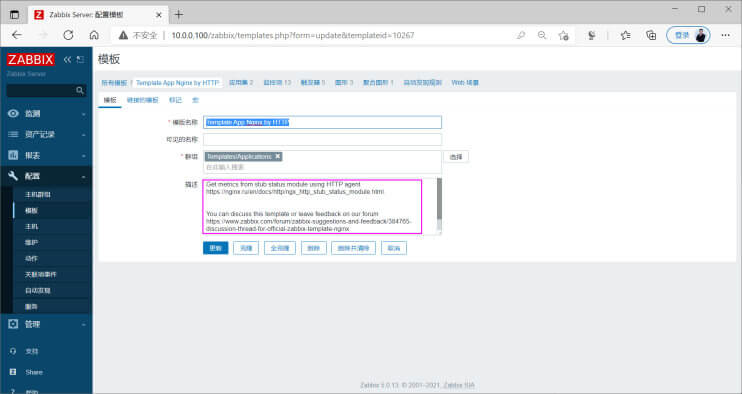<br></p>
<p>修改模板中的宏定义值status页面的URL</p>
<p></p>
<h4 id="修改模板的时间间隔"><a href="#修改模板的时间间隔" class="headerlink" title="修改模板的时间间隔"></a>修改模板的时间间隔</h4><p>为方便观察结果，修改模板中监控项的更新的时间间隔为1m</p>
<p><br><br><br></p>
<h4 id="安装和配置nginx服务"><a href="#安装和配置nginx服务" class="headerlink" title="安装和配置nginx服务"></a>安装和配置nginx服务</h4><figure class="highlight sh"><table><tr><td class="gutter"><pre><span class="line">1</span><br><span class="line">2</span><br><span class="line">3</span><br><span class="line">4</span><br><span class="line">5</span><br><span class="line">6</span><br><span class="line">7</span><br><span class="line">8</span><br><span class="line">9</span><br><span class="line">10</span><br><span class="line">11</span><br><span class="line">12</span><br><span class="line">13</span><br><span class="line">14</span><br></pre></td><td class="code"><pre><span class="line">[root@centos8 ~]<span class="comment"># yum -y install nginx </span></span><br><span class="line">[root@centos8 ~]<span class="comment"># vim /etc/nginx/nginx.conf</span></span><br><span class="line">http &#123;</span><br><span class="line">   server &#123;</span><br><span class="line">   location / &#123;</span><br><span class="line">       &#125;</span><br><span class="line">        <span class="comment">#添加下面三行，修改basic_status为/status和前面zabbix的模板定义的路径要保持一致</span></span><br><span class="line">       location = /status &#123;</span><br><span class="line">           stub_status;</span><br><span class="line">         &#125;</span><br><span class="line">     &#125;</span><br><span class="line">&#125;</span><br><span class="line"></span><br><span class="line">[root@centos8 ~]<span class="comment"># systemctl enable --now nginx</span></span><br></pre></td></tr></table></figure>

<p></p>
<h4 id="添加监控的主机并关联模板"><a href="#添加监控的主机并关联模板" class="headerlink" title="添加监控的主机并关联模板"></a>添加监控的主机并关联模板</h4><p>使用内置模板: Template App Nginx by HTTP</p>
<p><br><br><br></p>
<h4 id="查看监控数据-1"><a href="#查看监控数据-1" class="headerlink" title="查看监控数据"></a>查看监控数据</h4><p><br><br></p>
<h3 id="监控-Php-fpm-服务"><a href="#监控-Php-fpm-服务" class="headerlink" title="监控 Php-fpm 服务"></a>监控 Php-fpm 服务</h3><p>php-fpm 模板参考：</p>
<figure class="highlight http"><table><tr><td class="gutter"><pre><span class="line">1</span><br></pre></td><td class="code"><pre><span class="line">https://git.zabbix.com/projects/ZBX/repos/zabbix/browse/templates/app/php-fpm_agent</span><br></pre></td></tr></table></figure>

<h4 id="在前面nginx基础上实现php-fpm服务"><a href="#在前面nginx基础上实现php-fpm服务" class="headerlink" title="在前面nginx基础上实现php-fpm服务"></a>在前面nginx基础上实现php-fpm服务</h4><figure class="highlight sh"><table><tr><td class="gutter"><pre><span class="line">1</span><br><span class="line">2</span><br><span class="line">3</span><br><span class="line">4</span><br><span class="line">5</span><br><span class="line">6</span><br><span class="line">7</span><br><span class="line">8</span><br><span class="line">9</span><br><span class="line">10</span><br><span class="line">11</span><br><span class="line">12</span><br><span class="line">13</span><br><span class="line">14</span><br><span class="line">15</span><br><span class="line">16</span><br><span class="line">17</span><br><span class="line">18</span><br><span class="line">19</span><br><span class="line">20</span><br><span class="line">21</span><br><span class="line">22</span><br><span class="line">23</span><br><span class="line">24</span><br><span class="line">25</span><br><span class="line">26</span><br></pre></td><td class="code"><pre><span class="line">[root@centos8 ~]<span class="comment"># yum -y install php-fpm</span></span><br><span class="line">[root@centos8 ~]<span class="comment"># vim /etc/php-fpm.d/www.conf</span></span><br><span class="line">listen=127.0.0.1:9000</span><br><span class="line">pm.status_path = /php_status</span><br><span class="line">ping.path = /ping</span><br><span class="line"></span><br><span class="line">[root@centos8 ~]<span class="comment"># systemctl enable --now php-fpm.service</span></span><br><span class="line"></span><br><span class="line"><span class="comment">#修改nginx的配置</span></span><br><span class="line">[root@centos8 ~]<span class="comment"># vim /etc/nginx/nginx.conf</span></span><br><span class="line">.....</span><br><span class="line">       location / &#123;</span><br><span class="line">       &#125;</span><br><span class="line">       location = /status &#123;</span><br><span class="line">           stub_status;</span><br><span class="line">       &#125;</span><br><span class="line">       location ~ ^/(ping|php_status)$ &#123;</span><br><span class="line">           include fastcgi_params;</span><br><span class="line">           fastcgi_pass 127.0.0.1:9000;</span><br><span class="line">            <span class="comment">#fastcgi_param PATH_TRANSLATED $document_root$fastcgi_script_name;</span></span><br><span class="line">           fastcgi_param SCRIPT_FILENAME  $document_root<span class="variable">$fastcgi_script_name</span>;</span><br><span class="line">       &#125;</span><br><span class="line">.......</span><br><span class="line"></span><br><span class="line">[root@centos8 ~]<span class="comment"># systemctl restart nginx</span></span><br><span class="line"><span class="comment">#浏览器测试访问可以看到下面页面</span></span><br></pre></td></tr></table></figure>

<p><br></p>
<h4 id="修改内置模板"><a href="#修改内置模板" class="headerlink" title="修改内置模板"></a>修改内置模板</h4><p>注意： 选择正确的模板</p>
<p>使用 Zabbix 内置模板 Template App PHP-FPM by Zabbix agent</p>
<p></p>
<p>修改内置模板的监控间隔</p>
<p><br>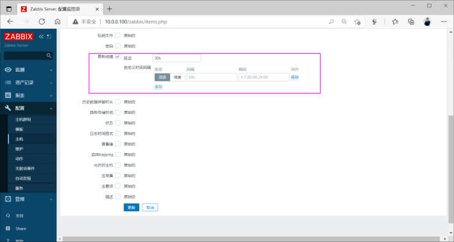</p>
<p>修改内置模板的宏定义，注意要和前面php-fpm的路径相匹配</p>
<p></p>
<h4 id="关联内置模板到监控的主机"><a href="#关联内置模板到监控的主机" class="headerlink" title="关联内置模板到监控的主机"></a>关联内置模板到监控的主机</h4><p>使用 Zabbix 内置模板 Template App PHP-FPM by Zabbix agent</p>
<p><br><br></p>
<h4 id="查看监控结果"><a href="#查看监控结果" class="headerlink" title="查看监控结果"></a>查看监控结果</h4><p>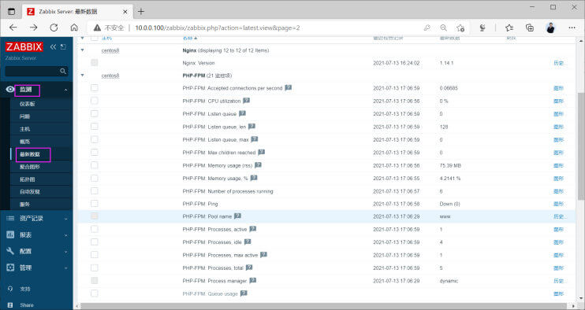<br></p>
<h2 id="自定义模板-Templates-和监控项-Items"><a href="#自定义模板-Templates-和监控项-Items" class="headerlink" title="自定义模板 Templates 和监控项 Items"></a>自定义模板 Templates 和监控项 Items</h2><p>上面对Linux系统的监控是使用系统内置模板的监控项，虽然 Zabbix 内置的模板及其包括的监控项已经很丰富</p>
<p>但是内置的监控项可能不一定适合当前环境，或者有些不需要的监控项，或者需要的监控项并没有提供</p>
<p>因此实际生产中仍可能需要通过自定义监控项来满足当前环境的监控需求</p>
<p><strong>自定义模板和监控项实现过程</strong></p>
<ul>
<li>在Zabbix 被监控主机上编写自定义监控项的取值的脚本，并加执行权限</li>
<li>在Zabbix 被监控主机上的配置文件中添加自定义监控项，指定 key 和 对 key 赋值的脚本及参数</li>
<li>在Zabbix Server 上使用 zabbix_get 工具测试是否能取到自定义监控项信息</li>
<li>在Zabbix Web 创建模板，在模板中添加自定义监控项</li>
<li>在Zabbix Web 将模板关联至被监控的主机</li>
<li>导出自定义模板可以在其它 Zabbix Server 复用</li>
</ul>
<p>除了自定义模板，也可以从zabbix网站查找适合自已的模板</p>
<figure class="highlight http"><table><tr><td class="gutter"><pre><span class="line">1</span><br></pre></td><td class="code"><pre><span class="line">https://share.zabbix.com/</span><br></pre></td></tr></table></figure>

<p></p>
<h3 id="自定义监控项"><a href="#自定义监控项" class="headerlink" title="自定义监控项"></a>自定义监控项</h3><p>系统内置的监控项如下</p>
<figure class="highlight http"><table><tr><td class="gutter"><pre><span class="line">1</span><br></pre></td><td class="code"><pre><span class="line">https://www.zabbix.com/documentation/5.0/zh/manual/config/items/itemtypes/zabbix_agent</span><br></pre></td></tr></table></figure>

<p>内置的监控项无法满足要求，可以自定义监控项</p>
<h4 id="自定义监控项配置"><a href="#自定义监控项配置" class="headerlink" title="自定义监控项配置"></a>自定义监控项配置</h4><p>监控项键值的格式</p>
<figure class="highlight http"><table><tr><td class="gutter"><pre><span class="line">1</span><br></pre></td><td class="code"><pre><span class="line">https://www.zabbix.com/documentation/5.0/zh/manual/config/items/item/key</span><br></pre></td></tr></table></figure>

<p></p>
<p>客户端可以自定义监控项，在Zabbix Agent 配置文件添加内容，格式如下</p>
<figure class="highlight sh"><table><tr><td class="gutter"><pre><span class="line">1</span><br><span class="line">2</span><br><span class="line">3</span><br><span class="line">4</span><br><span class="line">5</span><br><span class="line">6</span><br><span class="line">7</span><br><span class="line">8</span><br><span class="line">9</span><br></pre></td><td class="code"><pre><span class="line"><span class="comment">#cat /etc/zabbix/zabbix_agentd.conf</span></span><br><span class="line"><span class="comment">#cat /etc/zabbix/zabbix_agent2.conf</span></span><br><span class="line">UserParameter=&lt;key&gt;,&lt;shell <span class="built_in">command</span>&gt;</span><br><span class="line">Include=/etc/zabbix/zabbix_agentd.d/*.conf</span><br><span class="line"></span><br><span class="line"><span class="comment">#或者创建独立的自定义文件</span></span><br><span class="line"><span class="comment">#cat /etc/zabbix/zabbix_agentd.d/*.conf</span></span><br><span class="line"><span class="comment">#cat /etc/zabbix/zabbix_agent2.d/*.conf</span></span><br><span class="line">UserParameter=&lt;key&gt;,&lt;shell <span class="built_in">command</span>&gt;</span><br></pre></td></tr></table></figure>

<p>说明：</p>
<ul>
<li>key 必须整个系统唯一。注意大小写是敏感的， Key名允许的字符如下</li>
</ul>
<figure class="highlight sh"><table><tr><td class="gutter"><pre><span class="line">1</span><br></pre></td><td class="code"><pre><span class="line">0-9a-zA-Z_-.</span><br></pre></td></tr></table></figure>

<p>key使用 [*] 用于定义该key接受括号内的参数。参数需在配置监控项时给出；参数禁止使用下列字符：\ ’ ” ` * ? [ ] { } ~ $ ! &amp; ; ( ) &lt;&gt;</p>
<ul>
<li>Command：命令用于生成key对应的值。可以在命令中使用位置引用$1 … $9来引用监控项Key中的相应参数。Zabbix解析监控项Key的[]中包含的参数，并相应地替换$1，…，$9。$0会替换为完整的原始命令（在对$0，…，$9执行替换之前的命令）运行。不管位置参数（$0,…,$9)是用双引号( “ )还是单引号( ’ )括起来，都会解析位置引用</li>
</ul>
<p><strong>测试监控项</strong></p>
<p>在Zabbix Agent 上执行测试</p>
<figure class="highlight sh"><table><tr><td class="gutter"><pre><span class="line">1</span><br><span class="line">2</span><br><span class="line">3</span><br></pre></td><td class="code"><pre><span class="line"><span class="comment">#不需要重启服务：</span></span><br><span class="line">zabbix_agent -t  <span class="string">&quot;在客户端定义的key名[arg1,arg2,...]&quot;</span></span><br><span class="line">zabbix_agent2 -t <span class="string">&quot;在客户端定义的key名[arg1,arg2,...]&quot;</span></span><br></pre></td></tr></table></figure>

<p>在Zabbix Server上可以使用zabbix_get工具获取自定义监控项</p>
<figure class="highlight sh"><table><tr><td class="gutter"><pre><span class="line">1</span><br><span class="line">2</span><br></pre></td><td class="code"><pre><span class="line"><span class="comment">#需要重启服务：systemctl restart zabbix-agent2.service</span></span><br><span class="line">zabbix_get -s 客户端IP -p 10050 -k <span class="string">&quot;在客户端定义的key名[arg1,arg2,...]&quot;</span></span><br></pre></td></tr></table></figure>

<p>注意: </p>
<ul>
<li>如果用脚本实现首行必须加shebang机制</li>
<li>如果编译安装的程序，需要写程序的完整路径</li>
</ul>
<h4 id="宏Macros"><a href="#宏Macros" class="headerlink" title="宏Macros"></a>宏Macros</h4><p>另外Zabbix 支持用户自定义宏，即支持变量定义</p>
<p>自定义宏格式为: {$macrosz_name}</p>
<p>官方文档</p>
<figure class="highlight http"><table><tr><td class="gutter"><pre><span class="line">1</span><br></pre></td><td class="code"><pre><span class="line">https://www.zabbix.com/documentation/5.0/zh/manual/appendix/macros</span><br></pre></td></tr></table></figure>

<h4 id="自定义监控项配置案例"><a href="#自定义监控项配置案例" class="headerlink" title="自定义监控项配置案例"></a>自定义监控项配置案例</h4><p>范例：取根文件系统的空间利用率</p>
<figure class="highlight sh"><table><tr><td class="gutter"><pre><span class="line">1</span><br><span class="line">2</span><br><span class="line">3</span><br><span class="line">4</span><br><span class="line">5</span><br><span class="line">6</span><br><span class="line">7</span><br><span class="line">8</span><br><span class="line">9</span><br><span class="line">10</span><br><span class="line">11</span><br><span class="line">12</span><br><span class="line">13</span><br><span class="line">14</span><br><span class="line">15</span><br></pre></td><td class="code"><pre><span class="line">[root@centos8 ~]<span class="comment"># cat /etc/zabbix/zabbix_agentd.d/test.conf</span></span><br><span class="line">[root@centos8 ~]<span class="comment"># cat /etc/zabbix/zabbix_agent2.d/test.conf</span></span><br><span class="line">UserParameter=root_filesystem_use,<span class="built_in">df</span>|awk -F<span class="string">&#x27; +|%&#x27;</span> <span class="string">&#x27;$7 == &quot;/&quot; &#123;print $5 &#125;&#x27;</span></span><br><span class="line"></span><br><span class="line"><span class="comment">#客户端测试</span></span><br><span class="line">[root@centos8 ~]<span class="comment"># zabbix_agent -t root_filesystem_use</span></span><br><span class="line">[root@centos8 ~]<span class="comment"># zabbix_agent2 -t root_filesystem_use</span></span><br><span class="line"></span><br><span class="line"><span class="comment">#重启服务后服务器端才能获取数据</span></span><br><span class="line">[root@centos8 ~]<span class="comment"># systemctl restart zabbix-agent.service</span></span><br><span class="line"></span><br><span class="line"><span class="comment">#服务器端测试</span></span><br><span class="line">[root@zabbix-server ~]<span class="comment"># yum -y install zabbix-get</span></span><br><span class="line">[root@zabbix-server ~]<span class="comment"># apt -y install zabbix-get</span></span><br><span class="line">[root@zabbix-server ~]<span class="comment"># zabbix_get -s 10.0.0.38 -p 10050 -k &quot;root_filesystem_use&quot;</span></span><br></pre></td></tr></table></figure>

<p>范例：自定义监控项实现连接数</p>
<figure class="highlight sh"><table><tr><td class="gutter"><pre><span class="line">1</span><br><span class="line">2</span><br><span class="line">3</span><br><span class="line">4</span><br><span class="line">5</span><br><span class="line">6</span><br></pre></td><td class="code"><pre><span class="line">[root@centos8 ~]<span class="comment"># cat /etc/zabbix/zabbix_agentd.d/test.conf</span></span><br><span class="line">UserParameter=tcp_state_estab,ss -ant|grep -c ESTAB</span><br><span class="line"></span><br><span class="line">[root@centos8 ~]<span class="comment"># systemctl restart zabbix-agent.service </span></span><br><span class="line">[root@zabbix-server ~]<span class="comment"># zabbix_get -s 10.0.0.38 -p 10050 -k &quot;tcp_state_estab&quot;</span></span><br><span class="line">5</span><br></pre></td></tr></table></figure>

<p>范例：实现自定义监控项的参数</p>
<figure class="highlight sh"><table><tr><td class="gutter"><pre><span class="line">1</span><br><span class="line">2</span><br><span class="line">3</span><br><span class="line">4</span><br><span class="line">5</span><br><span class="line">6</span><br></pre></td><td class="code"><pre><span class="line">[root@centos8 ~]<span class="comment"># cat /etc/zabbix/zabbix_agentd.d/test.conf</span></span><br><span class="line">UserParameter=<span class="built_in">test</span>[*],<span class="built_in">echo</span> <span class="variable">$1</span></span><br><span class="line"></span><br><span class="line">[root@centos8 ~]<span class="comment"># systemctl restart zabbix-agent.service </span></span><br><span class="line">[root@zabbix-server ~]<span class="comment"># zabbix_get -s 10.0.0.38 -p 10050 -k &quot;test[This is a test item]&quot;</span></span><br><span class="line">This is a <span class="built_in">test</span> item</span><br></pre></td></tr></table></figure>

<p>范例：利用自定义监控项的参数功能监控MySQL的存活状态</p>
<figure class="highlight sh"><table><tr><td class="gutter"><pre><span class="line">1</span><br><span class="line">2</span><br><span class="line">3</span><br><span class="line">4</span><br><span class="line">5</span><br><span class="line">6</span><br><span class="line">7</span><br><span class="line">8</span><br><span class="line">9</span><br><span class="line">10</span><br><span class="line">11</span><br><span class="line">12</span><br><span class="line">13</span><br><span class="line">14</span><br><span class="line">15</span><br><span class="line">16</span><br><span class="line">17</span><br><span class="line">18</span><br><span class="line">19</span><br><span class="line">20</span><br></pre></td><td class="code"><pre><span class="line">[root@centos8 ~]<span class="comment"># yum -y install mysql-server</span></span><br><span class="line">[root@centos8 ~]<span class="comment"># systemctl enable --now mysqld</span></span><br><span class="line"></span><br><span class="line">[root@centos8 ~]<span class="comment"># mysql</span></span><br><span class="line">mysql&gt; create user <span class="built_in">test</span>@<span class="string">&#x27;localhost&#x27;</span> identified by <span class="string">&#x27;123456&#x27;</span>;</span><br><span class="line"></span><br><span class="line">[root@centos8 ~]<span class="comment"># mysqladmin -utest -p123456 ping</span></span><br><span class="line">mysqladmin: [Warning] Using a password on the <span class="built_in">command</span> line interface can be insecure.</span><br><span class="line">mysqld is alive</span><br><span class="line"></span><br><span class="line">[root@centos8 ~]<span class="comment"># cat /etc/zabbix/zabbix_agentd.d/test.conf</span></span><br><span class="line">UserParameter=mysql.ping[*],mysqladmin -u<span class="variable">$1</span> -p<span class="variable">$2</span> ping 2&gt;/dev/null| grep -c alive</span><br><span class="line"></span><br><span class="line">[root@centos8 ~]<span class="comment"># systemctl restart zabbix-agent.service </span></span><br><span class="line">[root@zabbix-server ~]<span class="comment"># zabbix_get -s 10.0.0.38 -p 10050 -k &quot;mysql.ping[test,123456]&quot;</span></span><br><span class="line">1</span><br><span class="line"></span><br><span class="line">[root@centos8 ~]<span class="comment"># systemctl stop mysqld</span></span><br><span class="line">[root@zabbix-server ~]<span class="comment"># zabbix_get -s 10.0.0.38 -p 10050 -k &quot;mysql.ping[test,123456]&quot;</span></span><br><span class="line">0</span><br></pre></td></tr></table></figure>

<h3 id="自定义模板"><a href="#自定义模板" class="headerlink" title="自定义模板"></a>自定义模板</h3><h4 id="什么是模板"><a href="#什么是模板" class="headerlink" title="什么是模板"></a>什么是模板</h4><p>所谓模板，就是一些相关的监控项的集合，还可以在模板中包括图形，触发器等</p>
<p>为什么需要模板?</p>
<ul>
<li>为每个主机单独添加相同的一组监控项比较麻烦，例如:100台主机增加一个tcp80的监控项</li>
<li>修改监控项比较麻烦，例如:100台服务器的监控项将80改成8080</li>
<li>删除每个主机的同一组监控项，例如:100台服务器的监控项删除</li>
<li>删除主机会连同主机的监控项一起被删除；不能复用监控项</li>
</ul>
<p>所以可以使用模板的方式，来解决上述的一些问题</p>
<h4 id="自定义模板使用流程"><a href="#自定义模板使用流程" class="headerlink" title="自定义模板使用流程"></a>自定义模板使用流程</h4><ul>
<li>创建模板，模板必须属于某个主机组(一般属于主机组Templates)</li>
<li>在模板中创建监控项、图形、触发器</li>
<li>创建需要监控的主机，然后关联对应的模板</li>
<li>更改模板的监控项目，所以使用模板的都会自动更改</li>
<li>导出模板，后期可以至其他系统继续使用</li>
</ul>
<h2 id="监控项的值映射-Value-mapping"><a href="#监控项的值映射-Value-mapping" class="headerlink" title="监控项的值映射 Value mapping"></a>监控项的值映射 Value mapping</h2><figure class="highlight http"><table><tr><td class="gutter"><pre><span class="line">1</span><br><span class="line">2</span><br></pre></td><td class="code"><pre><span class="line">https://www.zabbix.com/documentation/6.0/zh/manual/config/items/mapping?hl=%E5%80%BC%E6%98%A0%E5%B0%84</span><br><span class="line">https://www.zabbix.com/documentation/5.0/zh/manual/config/items/mapping?hl=%E5%80%BC%E6%98%A0%E5%B0%84</span><br></pre></td></tr></table></figure>

<h3 id="什么是值映射"><a href="#什么是值映射" class="headerlink" title="什么是值映射"></a>什么是值映射</h3><p>为了接收到的值能更“人性化”的显示，可以通过值映射方式，将数值与字符串之间进行关系绑定</p>
<p>示例: </p>
<p>http 响应码</p>
<p>‘200’ → ‘OK’</p>
<p>‘403’ → ‘Forbidden’</p>
<p>‘404’ → ‘Not Found’</p>
<h3 id="创建值映射"><a href="#创建值映射" class="headerlink" title="创建值映射"></a>创建值映射</h3><p>Zabbix 6.0 配置</p>
<p>要定义一个值映射:</p>
<ul>
<li>打开主机或者模板配置表单</li>
<li>前往 值映射 标签</li>
<li>点击 增加 来增加一个新映射</li>
<li>点击一个已存在的值映射名字来进行编辑</li>
</ul>
<p>要定义值映射： 管理 — 一般 — 界面设置的从下拉列表中选择— 值映射</p>
<p><br></p>
<p>点击右上角的创建值映射</p>
<p><br></p>
<h3 id="使用值映射"><a href="#使用值映射" class="headerlink" title="使用值映射"></a>使用值映射</h3><p>添加监控项时，在查看值处选中上面创建的值映射名称</p>
<p></p>
<p>查看结果</p>
<p><br>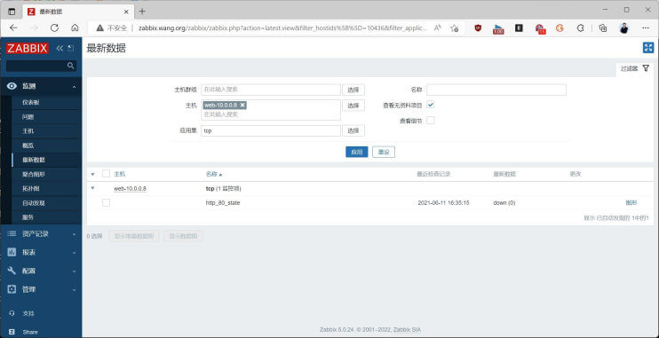</p>
<h2 id="触发器-Triggers"><a href="#触发器-Triggers" class="headerlink" title="触发器 Triggers"></a>触发器 Triggers</h2><h3 id="触发器介绍"><a href="#触发器介绍" class="headerlink" title="触发器介绍"></a>触发器介绍</h3><p>触发器是条件的定义，一个触发器是根据一个监控项的返回值，将之对比预先设置的阈值，当监控项返回了不符合预定义的值范围后，就进行触发下一步操作的警戒线，一般要对创建的监控项设置触发器以及触发方式和值的大小</p>
<p>可以在指定主机上创建触发器，只是针对指定主机有效</p>
<p>也可以在指定模板上创建触发器，则使用此模板的所有主机都有效，一个模板中可以有多触发器</p>
<p>触发器中使用的表达式是非常灵活的。你可以使用它们去创建关于监控统计的复杂逻辑测试。</p>
<h3 id="触发器严重性"><a href="#触发器严重性" class="headerlink" title="触发器严重性"></a>触发器严重性</h3><p>触发器严重性表示触发器的重要程度</p>
<p>Zabbix支持下列6种触发器的严重程度：</p>
<table>
<thead>
<tr>
<th>严重性</th>
<th>颜色</th>
</tr>
</thead>
<tbody><tr>
<td>未分类</td>
<td>灰色</td>
</tr>
<tr>
<td>信息</td>
<td>浅蓝色</td>
</tr>
<tr>
<td>警告</td>
<td>黄色</td>
</tr>
<tr>
<td>一般严重</td>
<td>橙色</td>
</tr>
<tr>
<td>严重</td>
<td>浅红色</td>
</tr>
<tr>
<td>灾难</td>
<td>红色</td>
</tr>
</tbody></table>
<p>严重性功能</p>
<ul>
<li>通过不同的颜色区分不同的严重程度</li>
<li>报警音频，不同的音频代表不同的严重程度</li>
<li>用户媒介，不同的用户媒介（通知渠道）代表不同的严重程度。例如，短信 - 高严重性，email - 其他。</li>
<li>不同的严重性通过触发器执行对应的条件动作</li>
</ul>
<h3 id="触发器表达式格式"><a href="#触发器表达式格式" class="headerlink" title="触发器表达式格式"></a>触发器表达式格式</h3><p>一个简单的表达式格式：</p>
<figure class="highlight http"><table><tr><td class="gutter"><pre><span class="line">1</span><br></pre></td><td class="code"><pre><span class="line">&#123;&lt;server|template&gt;:&lt;key&gt;.&lt;function&gt;(&lt;parameter&gt;)&#125;&lt;operator&gt;&lt;constant&gt;</span><br></pre></td></tr></table></figure>

<p>触发器官方文档</p>
<figure class="highlight http"><table><tr><td class="gutter"><pre><span class="line">1</span><br></pre></td><td class="code"><pre><span class="line">https://www.zabbix.com/documentation/5.0/zh/manual/config/triggers/expression</span><br></pre></td></tr></table></figure>

<p>函数官方文档</p>
<figure class="highlight http"><table><tr><td class="gutter"><pre><span class="line">1</span><br><span class="line">2</span><br></pre></td><td class="code"><pre><span class="line">https://www.zabbix.com/documentation/5.0/zh/manual/appendix/triggers/functions</span><br><span class="line">https://www.zabbix.com/documentation/5.0/manual/appendix/triggers/functions</span><br></pre></td></tr></table></figure>

<p>触发器表达式常用函数</p>
<table>
<thead>
<tr>
<th>函数名称</th>
<th>说明</th>
<th>范例</th>
</tr>
</thead>
<tbody><tr>
<td>avg()</td>
<td>监控项的平均值</td>
<td>avg(#5) → 最新5个值的平均值<br />avg(1h) → 最近一小时的平均值<br />avg(1h,1d) → 一天前的一小时内的平均值</td>
</tr>
<tr>
<td>min()</td>
<td>监控项的最小值</td>
<td>CPU使用率最近5分钟的最小值大于6<br />system.cpu.load.min(5m)&gt;6<br />CPU最近5次最小的值大于2<br />system.cpu.load.min(#5)&gt;2</td>
</tr>
<tr>
<td>max()</td>
<td>监控项的最大值</td>
<td>max(#5) → 最新5个值的最大值<br />max(1h) → 最近一小时的最大值</td>
</tr>
<tr>
<td>last()</td>
<td>最后的第几个值</td>
<td>注意last的 #num 参数和在其它函数中的作用不同<br />例如:返回值 3, 7, 2, 6, 9<br />last() 通常等同于 last(#1)<br />last(#5) - 第五个最新值 ,注意:不是五个最新值<br />last(#2)将返回值为7，last(#5)返回值为9<br />last(#10,30) 表示每隔30s采样一次,取倒数第10个值</td>
</tr>
<tr>
<td>diff()</td>
<td>比对上一次文件的内容</td>
<td>返回值为1,表示发生变化,返回值为0,表示没有变化</td>
</tr>
<tr>
<td>nodata()</td>
<td>监控一段时间内是否返回数据</td>
<td>时间不少于30秒，因为timer处理器每30秒调用一次<br />返回1 - 指定评估期没有接收到数据<br />返回0 - 其它</td>
</tr>
</tbody></table>
<p><strong>官方触发器示例</strong></p>
<figure class="highlight http"><table><tr><td class="gutter"><pre><span class="line">1</span><br></pre></td><td class="code"><pre><span class="line">https://www.zabbix.com/documentation/5.0/zh/manual/config/triggers/expression</span><br></pre></td></tr></table></figure>

<figure class="highlight sh"><table><tr><td class="gutter"><pre><span class="line">1</span><br><span class="line">2</span><br><span class="line">3</span><br><span class="line">4</span><br><span class="line">5</span><br><span class="line">6</span><br><span class="line">7</span><br><span class="line">8</span><br><span class="line">9</span><br><span class="line">10</span><br><span class="line">11</span><br><span class="line">12</span><br><span class="line">13</span><br><span class="line">14</span><br><span class="line">15</span><br><span class="line">16</span><br><span class="line">17</span><br><span class="line">18</span><br><span class="line">19</span><br><span class="line">20</span><br><span class="line">21</span><br><span class="line">22</span><br><span class="line">23</span><br><span class="line">24</span><br><span class="line">25</span><br><span class="line">26</span><br><span class="line">27</span><br><span class="line">28</span><br><span class="line">29</span><br><span class="line">30</span><br><span class="line">31</span><br><span class="line">32</span><br><span class="line">33</span><br><span class="line">34</span><br><span class="line">35</span><br><span class="line">36</span><br><span class="line">37</span><br><span class="line">38</span><br><span class="line">39</span><br><span class="line">40</span><br><span class="line">41</span><br><span class="line">42</span><br><span class="line">43</span><br><span class="line">44</span><br><span class="line">45</span><br><span class="line">46</span><br><span class="line">47</span><br><span class="line">48</span><br><span class="line">49</span><br><span class="line">50</span><br><span class="line">51</span><br><span class="line">52</span><br><span class="line">53</span><br><span class="line">54</span><br><span class="line">55</span><br><span class="line">56</span><br><span class="line">57</span><br><span class="line">58</span><br><span class="line">59</span><br><span class="line">60</span><br><span class="line">61</span><br><span class="line">62</span><br><span class="line">63</span><br><span class="line">64</span><br><span class="line">65</span><br><span class="line">66</span><br><span class="line">67</span><br><span class="line">68</span><br><span class="line">69</span><br><span class="line">70</span><br><span class="line">71</span><br><span class="line">72</span><br><span class="line">73</span><br><span class="line">74</span><br><span class="line">75</span><br><span class="line">76</span><br><span class="line">77</span><br><span class="line">78</span><br><span class="line">79</span><br><span class="line">80</span><br><span class="line">81</span><br><span class="line">82</span><br><span class="line">83</span><br><span class="line">84</span><br><span class="line">85</span><br><span class="line">86</span><br><span class="line">87</span><br><span class="line">88</span><br><span class="line">89</span><br><span class="line">90</span><br><span class="line">91</span><br><span class="line">92</span><br><span class="line">93</span><br><span class="line">94</span><br><span class="line">95</span><br><span class="line">96</span><br><span class="line">97</span><br><span class="line">98</span><br><span class="line">99</span><br><span class="line">100</span><br><span class="line">101</span><br><span class="line">102</span><br><span class="line">103</span><br><span class="line">104</span><br><span class="line">105</span><br></pre></td><td class="code"><pre><span class="line"><span class="comment">#示例</span></span><br><span class="line">www.zabbix.com 主机的处理器负载过高</span><br><span class="line"></span><br><span class="line">&#123;www.zabbix.com:system.cpu.load[all,avg1].last()&#125;&gt;5</span><br><span class="line"><span class="string">&#x27;www.zabbix.com:system.cpu.load[all,avg1]&#x27;</span> 给出了被监控参数的简短名称。它指定了服务器</span><br><span class="line">是“www.zabbix.com”，监控项的键值是“system.cpu.load[all,avg1]”。通过使用函数“last()”获取</span><br><span class="line">最新的值。最后，“&gt;5”意味着当www.zabbix.com最新获取的处理器负载值大于5时触发器就会处于异常状态。</span><br><span class="line"></span><br><span class="line"><span class="comment">#示例</span></span><br><span class="line">www.zabbix.com is overloaded</span><br><span class="line"></span><br><span class="line">&#123;www.zabbix.com:system.cpu.load[all,avg1].last()&#125;&gt;5 or </span><br><span class="line">&#123;www.zabbix.com:system.cpu.load[all,avg1].min(10m)&#125;&gt;2 </span><br><span class="line">当前处理器负载大于5或者最近10分钟内最小值大于2，表达式为<span class="literal">true</span>。</span><br><span class="line"></span><br><span class="line"><span class="comment">#示例</span></span><br><span class="line">/etc/passwd文件被修改</span><br><span class="line"></span><br><span class="line">使用函数diff：</span><br><span class="line"></span><br><span class="line">&#123;www.zabbix.com:vfs.file.cksum[/etc/passwd].diff()&#125;=1</span><br><span class="line">当文件/etc/passwd的checksum值与最近的值不同时，表达式为<span class="literal">true</span>。</span><br><span class="line"></span><br><span class="line">类似的，表达式可以用于监控重要文件的修改， 如/etc/passwd, /etc/inetd.conf, /kernel等</span><br><span class="line"></span><br><span class="line"><span class="comment">#示例</span></span><br><span class="line">有用户正在从互联网上下载一个大文件</span><br><span class="line"></span><br><span class="line">使用min函数:</span><br><span class="line"></span><br><span class="line">&#123;www.zabbix.com:net.if.in[eth0,bytes].min(5m)&#125;&gt;100K</span><br><span class="line">在过去5分钟内，eth0上接收字节数大于100kb时，表达式为<span class="literal">true</span>。</span><br><span class="line"></span><br><span class="line"><span class="comment">#示例</span></span><br><span class="line">SMTP服务群集的两个节点都停止。 注意在一个表达式中使用两个不同的主机:</span><br><span class="line"></span><br><span class="line">&#123;smtp1.zabbix.com:net.tcp.service[smtp].last()&#125;=0 and </span><br><span class="line">&#123;smtp2.zabbix.com:net.tcp.service[smtp].last()&#125;=0</span><br><span class="line">当SMTP服务器smtp1.zabbix.com和smtp2.zabbix.com都停止，表达式为<span class="literal">true</span></span><br><span class="line"></span><br><span class="line"><span class="comment">#示例</span></span><br><span class="line">Zabbix agent需要升级</span><br><span class="line"></span><br><span class="line">使用str()函数:</span><br><span class="line"></span><br><span class="line">&#123;www.zabbix.com:agent.version.str(<span class="string">&quot;beta8&quot;</span>)&#125;=1</span><br><span class="line">如果Zabbix agent版本是beta8（可能是1.0beta8），则表达式为真。</span><br><span class="line"></span><br><span class="line"><span class="comment">#示例</span></span><br><span class="line">服务器无法访问</span><br><span class="line"></span><br><span class="line">&#123;www.zabbix.com:icmpping.count(30m,0)&#125;&gt;5</span><br><span class="line">当主机“www.zabbix.com”在30分钟内超过5次不可达，则表达式为真。</span><br><span class="line"></span><br><span class="line"><span class="comment">#示例</span></span><br><span class="line">3分钟内没有心跳检查</span><br><span class="line"></span><br><span class="line">使用nodata()函数:</span><br><span class="line"></span><br><span class="line">&#123;www.zabbix.com:tick.nodata(3m)&#125;=1</span><br><span class="line">要使用这个触发器，<span class="string">&#x27;tick&#x27;</span>必须定义成一个</span><br><span class="line">Zabbix[:manual/config/items/itemtypes/trapper|trapper]]监控项。主机应该使用</span><br><span class="line">zabbix_sender定期发送这个监控项的数据。</span><br><span class="line"></span><br><span class="line">如果在180秒内没有接收到数据，则触发值变为异常状态。</span><br><span class="line"></span><br><span class="line">注意:nodata可以在任何类型的监控项中使用。</span><br><span class="line"></span><br><span class="line"><span class="comment">#示例</span></span><br><span class="line">夜间的CPU负载</span><br><span class="line"></span><br><span class="line">使用time()函数:</span><br><span class="line"></span><br><span class="line">&#123;zabbix:system.cpu.load[all,avg1].min(5m)&#125;&gt;2 and </span><br><span class="line">&#123;zabbix:system.cpu.load[all,avg1].time()&#125;&gt;000000 and </span><br><span class="line">&#123;zabbix:system.cpu.load[all,avg1].time()&#125;&lt;060000</span><br><span class="line">仅在夜间(00:00-06:00)，触发器状态变可以变为真。</span><br><span class="line"></span><br><span class="line"><span class="comment">#示例</span></span><br><span class="line">检查客户端本地时间是否与Zabbix服务器时间同步</span><br><span class="line"></span><br><span class="line">使用fuzzytime()函数:</span><br><span class="line"></span><br><span class="line">&#123;MySQL_DB:system.localtime.fuzzytime(10)&#125;=0</span><br><span class="line">当MySQL_DB服务器的本地时间与Zabbix server之间的时间相差超过10秒，触发器将变为异常状态。</span><br><span class="line"></span><br><span class="line"><span class="comment">#示例</span></span><br><span class="line">比较今天的平均负载和昨天同一时间的平均负载（使用第二个“时间偏移”参数）。</span><br><span class="line"></span><br><span class="line">&#123;server:system.cpu.load.avg(1h)&#125;/&#123;server:system.cpu.load.avg(1h,1d)&#125;&gt;2</span><br><span class="line">如果最近一小时平均负载超过昨天相同小时负载的2倍，触发器将触发。</span><br><span class="line"></span><br><span class="line"><span class="comment">#示例</span></span><br><span class="line">使用了另一个监控项的值来获得触发器的阈值：</span><br><span class="line"></span><br><span class="line">&#123;Template PfSense:hrStorageFree[&#123;<span class="comment">#SNMPVALUE&#125;].last()&#125;&lt;&#123;Template PfSense:hrStorageSize[&#123;#SNMPVALUE&#125;].last()&#125;*0.1</span></span><br><span class="line">如果剩余存储量下降到10%以下，触发器将触发。</span><br><span class="line"></span><br><span class="line"><span class="comment">#示例</span></span><br><span class="line">使用评估结果获取超过阈值的触发器数量:</span><br><span class="line"></span><br><span class="line">(&#123;server1:system.cpu.load[all,avg1].last()&#125;&gt;5) +</span><br><span class="line">(&#123;server2:system.cpu.load[all,avg1].last()&#125;&gt;5) +</span><br><span class="line">(&#123;server3:system.cpu.load[all,avg1].last()&#125;&gt;5)&gt;=2</span><br><span class="line">如果表达式中至少有两个触发器大于5，触发器将触发。</span><br></pre></td></tr></table></figure>

<h3 id="滞后"><a href="#滞后" class="headerlink" title="滞后"></a>滞后</h3><p>有时我们需要一个OK和问题状态之间的区间值，而不是一个简单的阈值。</p>
<p>例如，我们希望定义一个触发器，当机房温度超过20C时，触发器会出现异常，我们希望它保持在那种状态，直到温度下降到15C以下。</p>
<p>为了做到这一点，我们首先定义问题事件的触发器表达式。然后在事件成功迭代中选择‘恢复表达式’，并为OK事件输入恢复表达式。</p>
<p>注意，只有首先解决问题事件才会评估恢复表达式。如果问题条件仍然存在，则不能通过恢复表达式来解决问题。</p>
<p>示例 1</p>
<p>机房温度过高。</p>
<p>问题表达式:</p>
<figure class="highlight sh"><table><tr><td class="gutter"><pre><span class="line">1</span><br></pre></td><td class="code"><pre><span class="line">&#123;server:temp.last()&#125;&gt;20</span><br></pre></td></tr></table></figure>

<p>恢复表达式:</p>
<figure class="highlight sh"><table><tr><td class="gutter"><pre><span class="line">1</span><br></pre></td><td class="code"><pre><span class="line">&#123;server:temp.last()&#125;&lt;=15</span><br></pre></td></tr></table></figure>

<p>示例 2</p>
<p>磁盘剩余空间过低。</p>
<p>问题表达式: it is less than 10GB for last 5 minutes</p>
<figure class="highlight sh"><table><tr><td class="gutter"><pre><span class="line">1</span><br></pre></td><td class="code"><pre><span class="line">&#123;server:vfs.fs.size[/,free].max(5m)&#125;&lt;10G</span><br></pre></td></tr></table></figure>

<p>恢复表达式: it is more than 40GB for last 10 minutes</p>
<figure class="highlight sh"><table><tr><td class="gutter"><pre><span class="line">1</span><br></pre></td><td class="code"><pre><span class="line">&#123;server:vfs.fs.size[/,free].min(10m)&#125;&gt;40G</span><br></pre></td></tr></table></figure>

<h3 id="开启-Zabbix-Server的声音提示"><a href="#开启-Zabbix-Server的声音提示" class="headerlink" title="开启 Zabbix Server的声音提示"></a>开启 Zabbix Server的声音提示</h3><p></p>
<h3 id="自定义触发器"><a href="#自定义触发器" class="headerlink" title="自定义触发器"></a>自定义触发器</h3><h4 id="配置单条件触发器"><a href="#配置单条件触发器" class="headerlink" title="配置单条件触发器"></a>配置单条件触发器</h4><p>自定义单条件触发器：设置内存低于 30% 进行告警，点击对应主机→ 创建触发器获取内存还剩余的百分比：</p>
<p>剩余 30% 可用，则需要告警通知；剩余 50% 可用，就算恢复；</p>
<p>编辑触发器表达式</p>
<figure class="highlight sh"><table><tr><td class="gutter"><pre><span class="line">1</span><br><span class="line">2</span><br><span class="line">3</span><br><span class="line">4</span><br><span class="line">5</span><br><span class="line">6</span><br><span class="line">7</span><br><span class="line">8</span><br></pre></td><td class="code"><pre><span class="line"><span class="comment">#问题表达式: </span></span><br><span class="line">&#123;Webserverb:mem_use_percent.last()&#125;&lt;30</span><br><span class="line"></span><br><span class="line"><span class="comment">#恢复表达式: </span></span><br><span class="line">&#123;Webserver:mem.use_percent.last()&#125;&gt;60</span><br><span class="line"></span><br><span class="line"><span class="comment">#测试内存</span></span><br><span class="line"><span class="built_in">dd</span> <span class="keyword">if</span>=/dev/zero of=/dev/null bs=1000M count=1024</span><br></pre></td></tr></table></figure>

<h4 id="配置多条件触发器"><a href="#配置多条件触发器" class="headerlink" title="配置多条件触发器"></a>配置多条件触发器</h4><p>自定义多条件触发器：设置空闲内存低于 30%并且swap使用大于1% 进行告警</p>
<figure class="highlight sh"><table><tr><td class="gutter"><pre><span class="line">1</span><br><span class="line">2</span><br><span class="line">3</span><br><span class="line">4</span><br><span class="line">5</span><br><span class="line">6</span><br><span class="line">7</span><br><span class="line">8</span><br><span class="line">9</span><br><span class="line">10</span><br><span class="line">11</span><br><span class="line">12</span><br><span class="line">13</span><br><span class="line">14</span><br><span class="line">15</span><br><span class="line">16</span><br></pre></td><td class="code"><pre><span class="line"><span class="comment">#增加swap的自定义监控项</span></span><br><span class="line">UserParameter=swap_use,free |awk <span class="string">&#x27;/^Swap/&#123;print $3*100/$2&#125;&#x27;</span></span><br><span class="line"></span><br><span class="line"><span class="comment">#编辑触发器表达式</span></span><br><span class="line"><span class="comment">#问题表达式：</span></span><br><span class="line">&#123;Webserver:mem_unuse_percent.last()&#125;&lt;=30 and &#123;Web:swap_use.last()&#125;&gt;=1</span><br><span class="line"></span><br><span class="line"><span class="comment">#恢复表达式：</span></span><br><span class="line">&#123;Webserver:mem_unuse_percent.last()&#125;&gt;=50</span><br><span class="line"></span><br><span class="line"><span class="comment">#使用命令压测</span></span><br><span class="line"><span class="built_in">dd</span> <span class="keyword">if</span>=/dev/zero of=/dev/null bs=500M count=1024</span><br><span class="line"><span class="comment">#只满足内存低于30%，所以不会警告</span></span><br><span class="line"></span><br><span class="line"><span class="built_in">dd</span> <span class="keyword">if</span>=/dev/zero of=/dev/null bs=1000M count=1024</span><br><span class="line"><span class="comment">#内存低于30%，并且swap使用超过1%</span></span><br></pre></td></tr></table></figure>

<h3 id="触发器依赖关系"><a href="#触发器依赖关系" class="headerlink" title="触发器依赖关系"></a>触发器依赖关系</h3><h4 id="什么是触发器依赖"><a href="#什么是触发器依赖" class="headerlink" title="什么是触发器依赖"></a>什么是触发器依赖</h4><p>有时候一台主机的可用性依赖于另一台主机。如果一台路由器宕机，则路由器后端的服务器将变得不可用。</p>
<p>如果这两者都设置了触发器，你可能会收到关于两个主机宕机的通知，然而只有路由器是真正故障的。</p>
<p>这就是主机之间某些依赖关系可能有用的地方，设置依赖关系的通知会被抑制，而只发送根本问题的通知。</p>
<p>触发器依赖关系示例</p>
<p>例如，主机位于路由器2后面，路由器2在路由器1后面。</p>
<figure class="highlight sh"><table><tr><td class="gutter"><pre><span class="line">1</span><br></pre></td><td class="code"><pre><span class="line">Zabbix - 路由器1 - 路由器2 - 主机</span><br></pre></td></tr></table></figure>

<p>如果路由器1宕机，显然主机和路由器2也不可达，然而我们不想收到主机、路由器1和路由器2都宕机的3条通知。 </p>
<p>因此，在这种情况下我们定义了两个依赖关系：</p>
<figure class="highlight sh"><table><tr><td class="gutter"><pre><span class="line">1</span><br><span class="line">2</span><br></pre></td><td class="code"><pre><span class="line"><span class="string">&#x27;主机宕机&#x27;</span> 触发器依赖于 <span class="string">&#x27;路由器2宕机&#x27;</span> 触发器</span><br><span class="line"><span class="string">&#x27;路由器2宕机&#x27;</span> 触发器依赖于 <span class="string">&#x27;路由器1宕机&#x27;</span> 触发器</span><br></pre></td></tr></table></figure>

<h4 id="触发器依赖案例"><a href="#触发器依赖案例" class="headerlink" title="触发器依赖案例"></a>触发器依赖案例</h4><h5 id="依赖场景环境说明"><a href="#依赖场景环境说明" class="headerlink" title="依赖场景环境说明"></a>依赖场景环境说明</h5><p>假设:充当R 路由节点，H 充当主机节点</p>
<ul>
<li>模拟当H节点的80端口如果不存活，需要检查R节点的80端口是否存活</li>
<li>如果R路由节点的80端口存活，则触发H主机节点的80端口不存活警告</li>
<li>如果R路由节点的80端口不存活，则仅触发路由节点的警告，而不触发主机节点的警告</li>
</ul>
<h5 id="定义触发器表达式"><a href="#定义触发器表达式" class="headerlink" title="定义触发器表达式"></a>定义触发器表达式</h5><p>R路由节点：定义监控项，配置触发器</p>
<p>H主机节点：定义监控项，配置触发器</p>
<h5 id="模拟路由与主机故障"><a href="#模拟路由与主机故障" class="headerlink" title="模拟路由与主机故障"></a>模拟路由与主机故障</h5><p>模拟R路由器、H主机节点同时障时，会同时收到两个告警，显然不符合预期效果</p>
<h5 id="配置触发器依赖关系"><a href="#配置触发器依赖关系" class="headerlink" title="配置触发器依赖关系"></a>配置触发器依赖关系</h5><p>在H服务器节点上对应的触发器上配置依赖关系，依赖R路由节点对应的触发器</p>
<h5 id="再次模拟路由与节点故障"><a href="#再次模拟路由与节点故障" class="headerlink" title="再次模拟路由与节点故障"></a>再次模拟路由与节点故障</h5><ul>
<li>关闭 “路由器” 80端口，以及主机节点80端口；此时只有路由节点会警告</li>
<li>启用 “路由器” 80端口，关闭主机节点80端口，此时只有主机节点会警告</li>
</ul>
<h2 id="图形-Graphs"><a href="#图形-Graphs" class="headerlink" title="图形 Graphs"></a>图形 Graphs</h2><h3 id="什么是图形"><a href="#什么是图形" class="headerlink" title="什么是图形"></a>什么是图形</h3><p>随着时间的推移,Zabbix采集到大量监控数据，对于用户而言，如果可以通过可视化图形方式查看历史数据，而不仅仅是看到当前数字，那会更容易了解发生了什么事情以及发展的趋势.</p>
<h3 id="自定义图形"><a href="#自定义图形" class="headerlink" title="自定义图形"></a>自定义图形</h3><p>Zabbix 本身提供了一些图形，但用户也可以自定义图形</p>
<p>自定义图表，顾名思义，就是提供自定义定制的功能。</p>
<p>自定义图表需要人为配置，可以为某台主机、多台主机、某个模板创建自定义图表。</p>
<h3 id="案例"><a href="#案例" class="headerlink" title="案例"></a>案例</h3><h4 id="在模板中创建图形"><a href="#在模板中创建图形" class="headerlink" title="在模板中创建图形"></a>在模板中创建图形</h4><p></p>
<p>创建图形</p>
<p><br></p>
<p>选中所有监控项</p>
<p><br><br><br></p>
<h4 id="模板关联至主机"><a href="#模板关联至主机" class="headerlink" title="模板关联至主机"></a>模板关联至主机</h4><p></p>
<h4 id="查看图形"><a href="#查看图形" class="headerlink" title="查看图形"></a>查看图形</h4><p></p>
<p>过滤图形只显示自定义的图形</p>
<p><br><br><br></p>
<h2 id="聚合图形-Screens"><a href="#聚合图形-Screens" class="headerlink" title="聚合图形 Screens"></a>聚合图形 Screens</h2><p>Zabbix中一个图形只是包括相关监控项的一张图</p>
<p>如果想在一个界面里显示包含多组监控项的多个图形可以使用聚合图形</p>
<p>默认Zabbix 中已有的聚合图形如下</p>
<p></p>
<p>用户也可以自定义聚合图形</p>
<h3 id="创建聚合图形"><a href="#创建聚合图形" class="headerlink" title="创建聚合图形"></a>创建聚合图形</h3><h4 id="方法1"><a href="#方法1" class="headerlink" title="方法1"></a>方法1</h4><p>如果想将多个主机或不同模板的相关图形放在同一个聚合图形中，则执行下面执行操作</p>
<p>监测–聚合图形–创建聚合图形，此方式比更灵活</p>
<p></p>
<p><br></p>
<h4 id="方法2"><a href="#方法2" class="headerlink" title="方法2"></a>方法2</h4><p>如果想将同一个主机的多个监控项图形放在一个聚合图形，则执行下面操作</p>
<p>配置–模板–在指定的模板–聚合图形，此方式比较有局限性</p>
<p></p>
<p>创建聚合图形</p>
<p></p>
<p>指定名称和图形的个数</p>
<p></p>
<h3 id="添加监控项相关的图形"><a href="#添加监控项相关的图形" class="headerlink" title="添加监控项相关的图形"></a>添加监控项相关的图形</h3><p>选择<code>构造函数</code></p>
<p><br></p>
<p>添加多个图形到此聚合图形中</p>
<p></p>
<h3 id="查看聚合图形"><a href="#查看聚合图形" class="headerlink" title="查看聚合图形"></a>查看聚合图形</h3><p>监测–模板关联的主机–聚合图形</p>
<p></p>
<p>右上角选中创建的聚合图形</p>
<p><br><br><br>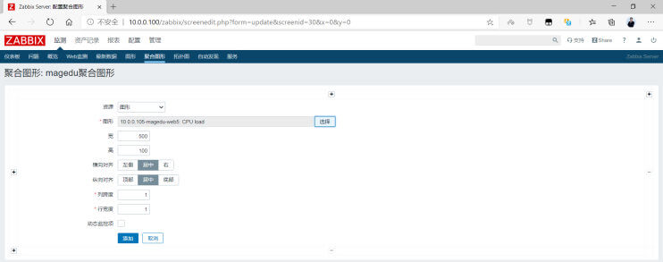<br><br><br><br><br><br>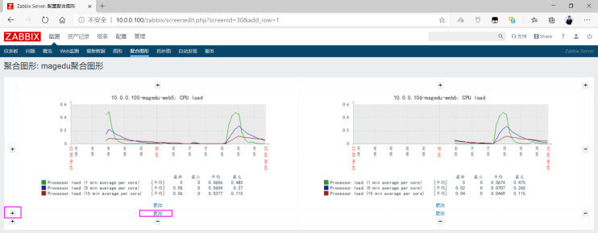<br><br><br><br></p>
<h3 id="创建多个聚合图形"><a href="#创建多个聚合图形" class="headerlink" title="创建多个聚合图形"></a>创建多个聚合图形</h3><p>复重上面过程，创建多个聚合图形</p>
<p><br></p>
<h3 id="利用多个聚合图形实现幻灯片功能-轮播图"><a href="#利用多个聚合图形实现幻灯片功能-轮播图" class="headerlink" title="利用多个聚合图形实现幻灯片功能(轮播图)"></a>利用多个聚合图形实现幻灯片功能(轮播图)</h3><h4 id="创建幻灯片-Slide-shows"><a href="#创建幻灯片-Slide-shows" class="headerlink" title="创建幻灯片 Slide shows"></a>创建幻灯片 Slide shows</h4><p>监测–聚合图形 –Zabbix 5.0 版在左上角的幻灯片演示</p>
<p><br></p>
<p>Zabbix 4.0 版在右上角</p>
<p></p>
<h4 id="添加聚合图形"><a href="#添加聚合图形" class="headerlink" title="添加聚合图形"></a>添加聚合图形</h4><p>5.0 版本界面</p>
<p><br>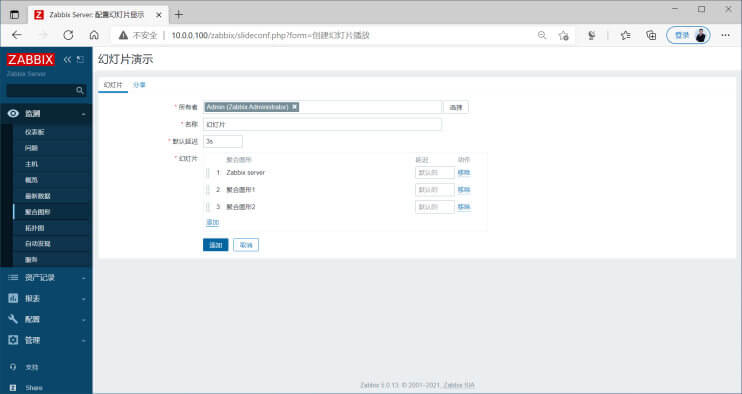<br></p>
<p>4.0版本界面</p>
<p><br><br><br></p>
<h4 id="验证幻灯片"><a href="#验证幻灯片" class="headerlink" title="验证幻灯片"></a>验证幻灯片</h4><p>Zabbix 5.0版本如下</p>
<p></p>
<p>选择上面创建的幻灯片名称</p>
<p></p>
<p>可以观察到每隔3s就会轮播各个聚合图形</p>
<p></p>
<p>Zabbix 4.0版本如下</p>
<p><br></p>
<h2 id="用户-Users-和组-Groups-管理"><a href="#用户-Users-和组-Groups-管理" class="headerlink" title="用户 Users 和组 Groups 管理"></a>用户 Users 和组 Groups 管理</h2><h3 id="用户管理"><a href="#用户管理" class="headerlink" title="用户管理"></a>用户管理</h3><p>系统默认有Admin和guest两个用户，其中guest，密码为空，默认被禁用</p>
<p>创建新用户</p>
<p>管理 — 用户</p>
<p>创建新用户，指定群组</p>
<p><br>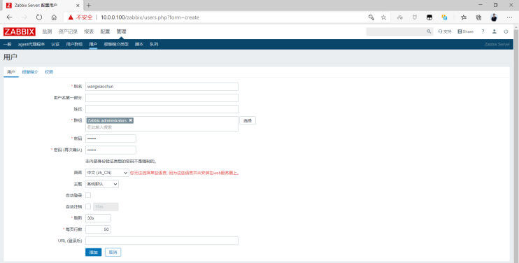<br><br></p>
<h3 id="组管理"><a href="#组管理" class="headerlink" title="组管理"></a>组管理</h3><p>管理 — 用户组群</p>
<p><br><br></p>
<h2 id="告警通知"><a href="#告警通知" class="headerlink" title="告警通知"></a>告警通知</h2><p>生产环境中，通常当达到一定的指标，比如硬盘使用率为80%左右时，会触发触发器的条件，而触发器可以再触发动作，实现事件通知告警或执行指定命令等.要实现事件通知告警，就需要一个中间介质来发送告警消息给运维</p>
<p>Zabbix 有如下常见报警介质:</p>
<ul>
<li>E-mail</li>
<li>微信</li>
<li>短信</li>
</ul>
<h3 id="邮件告警"><a href="#邮件告警" class="headerlink" title="邮件告警"></a>邮件告警</h3><h4 id="邮箱开启-SMTP-功能"><a href="#邮箱开启-SMTP-功能" class="headerlink" title="邮箱开启 SMTP 功能"></a>邮箱开启 SMTP 功能</h4><p>在邮箱上开启SMTP功能，利用此邮箱实现发送报警邮件</p>
<h5 id="QQ邮箱开启邮件通知功能"><a href="#QQ邮箱开启邮件通知功能" class="headerlink" title="QQ邮箱开启邮件通知功能"></a>QQ邮箱开启邮件通知功能</h5><p><br></p>
<p><strong>获取授权码</strong></p>
<p></p>
<h5 id="网易邮箱开启邮件通知功能"><a href="#网易邮箱开启邮件通知功能" class="headerlink" title="网易邮箱开启邮件通知功能"></a>网易邮箱开启邮件通知功能</h5><p><br><br></p>
<h4 id="创建报警媒介类型实现发信人功能"><a href="#创建报警媒介类型实现发信人功能" class="headerlink" title="创建报警媒介类型实现发信人功能"></a>创建报警媒介类型实现发信人功能</h4><p>报警媒介类型是一种给运维工程师发送消息通知的渠道，即当zabbix的触发器触发一个事件后，怎么才能把这个事件通过某些方式通知给运维工程师呢? 媒介类型就起到此作用，如果想要实现邮件告警功能，那么对应的媒介类型就是配置用来发送告警邮件的发件人邮箱。</p>
<p>管理–&gt;报警媒介类型–&gt;创建报警媒介类型</p>
<p></p>
<p>结合上一小节邮箱的配置输入以下内容</p>
<h5 id="QQ-邮箱配置"><a href="#QQ-邮箱配置" class="headerlink" title="QQ 邮箱配置"></a>QQ 邮箱配置</h5><p></p>
<p>添加消息模板用于发送信息</p>
<p></p>
<figure class="highlight sh"><table><tr><td class="gutter"><pre><span class="line">1</span><br><span class="line">2</span><br><span class="line">3</span><br><span class="line">4</span><br><span class="line">5</span><br><span class="line">6</span><br><span class="line">7</span><br><span class="line">8</span><br><span class="line">9</span><br><span class="line">10</span><br><span class="line">11</span><br><span class="line">12</span><br><span class="line">13</span><br><span class="line">14</span><br><span class="line">15</span><br></pre></td><td class="code"><pre><span class="line"><span class="comment">#可以修改两个消息模板</span></span><br><span class="line"><span class="comment"># 问题</span></span><br><span class="line">主题: 告警: &#123;EVENT.NAME&#125;</span><br><span class="line">告警主机：&#123;HOST.NAME1&#125;</span><br><span class="line">告警服务: &#123;ITEM.NAME1&#125;</span><br><span class="line">告警Key1: &#123;ITEM.KEY1&#125;：&#123;ITEM.VALUE1&#125;</span><br><span class="line">告警Key2: &#123;ITEM.KEY2&#125;：&#123;ITEM.VALUE2&#125;</span><br><span class="line">严重级别: &#123;TRIGGER.SEVERITY&#125;</span><br><span class="line"></span><br><span class="line"><span class="comment"># 恢复 Problem Recovery</span></span><br><span class="line">主题: 恢复: &#123;EVENT.DURATION&#125;: &#123;EVENT.NAME&#125;</span><br><span class="line">恢复主机：&#123;HOST.NAME1&#125;</span><br><span class="line">恢复服务： &#123;ITEM.NAME1&#125;</span><br><span class="line">恢复Key1：&#123;ITEM.KEY1&#125;：&#123;ITEM.VALUE1&#125;</span><br><span class="line">恢复Key2: &#123;ITEM.KEY2&#125;：&#123;ITEM.VALUE2&#125;</span><br></pre></td></tr></table></figure>

<p>创建完成，可以看到下面信息</p>
<p>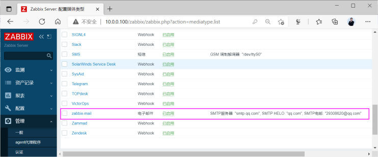</p>
<p>测试是否邮件正常，有时QQ邮箱不成功，可以尝试其它邮箱，如163邮箱</p>
<p></p>
<p>成功可以收下邮件和提示</p>
<p></p>
<p>zabbix4.0版本界面如下:</p>
<p><br></p>
<h5 id="网易邮箱配置"><a href="#网易邮箱配置" class="headerlink" title="网易邮箱配置"></a>网易邮箱配置</h5><p></p>
<p>Zabbix 4.0 界面</p>
<p></p>
<p></p>
<h4 id="给指定用户添加报警媒介实现收件人功能"><a href="#给指定用户添加报警媒介实现收件人功能" class="headerlink" title="给指定用户添加报警媒介实现收件人功能"></a>给指定用户添加报警媒介实现收件人功能</h4><p>媒介类型创建好之后，还需要在每个zabbix账户里面添加相应的收件配置，比如邮件类型的媒介类型要给zabbix账户添加邮箱，如果是微信类型的媒介类型那么就要在zabbix账户设置微信号，短信类型的媒介类型那就得给zabbix账户设置手机号用于接收报警消息内容。</p>
<p>在zabbix用户中添加报警媒介时，需要指定告警信息的收件人的邮件地址</p>
<p><br><br></p>
<p>zabbix 4.0 界面如下</p>
<p><br><br></p>
<p><strong>注意：下面图中一定要点击“更新”才能生效</strong></p>
<p></p>
<h4 id="创建和配置动作"><a href="#创建和配置动作" class="headerlink" title="创建和配置动作"></a>创建和配置动作</h4><p>动作可以实现当触发器被触发后可以执行哪些操作，一般可以是发送告警或执行命令</p>
<p>关于宏，即一些在Zabbix 中可以调用的变量</p>
<p>宏分为三种</p>
<ul>
<li>系统内置的宏变量: <code>&#123;MACRO&#125;</code></li>
<li>用户自定义的宏变量: <code>&#123;$MACRO&#125;</code></li>
<li>低级别自动发现宏变量: <code>&#123;#MACRO&#125;</code></li>
</ul>
<h5 id="创建动作"><a href="#创建动作" class="headerlink" title="创建动作"></a>创建动作</h5><p>指定动作即条件为事件的严重度为信息时就触发动作</p>
<p></p>
<p>Zabbix 4.0 界面如下</p>
<p></p>
<h5 id="配置操作"><a href="#配置操作" class="headerlink" title="配置操作"></a>配置操作</h5><p>官方宏参考:</p>
<figure class="highlight http"><table><tr><td class="gutter"><pre><span class="line">1</span><br><span class="line">2</span><br></pre></td><td class="code"><pre><span class="line">https://www.zabbix.com/documentation/5.0/zh/manual/appendix/macros/supported_by_location</span><br><span class="line">https://www.zabbix.com/documentation/4.0/zh/manual/appendix/macros/supported_by_location</span><br></pre></td></tr></table></figure>

<p>范例: 操作和恢复操作的定制消息主题和和内容</p>
<figure class="highlight sh"><table><tr><td class="gutter"><pre><span class="line">1</span><br><span class="line">2</span><br><span class="line">3</span><br><span class="line">4</span><br><span class="line">5</span><br><span class="line">6</span><br><span class="line">7</span><br><span class="line">8</span><br><span class="line">9</span><br><span class="line">10</span><br><span class="line">11</span><br><span class="line">12</span><br><span class="line">13</span><br><span class="line">14</span><br><span class="line">15</span><br><span class="line">16</span><br><span class="line">17</span><br><span class="line">18</span><br><span class="line">19</span><br><span class="line">20</span><br><span class="line">21</span><br><span class="line">22</span><br><span class="line">23</span><br><span class="line">24</span><br><span class="line">25</span><br><span class="line">26</span><br><span class="line">27</span><br></pre></td><td class="code"><pre><span class="line"><span class="comment">#操作主题</span></span><br><span class="line">故障:&#123;TRIGGER.STATUS&#125; 服务器:&#123;HOSTNAME1&#125; 事件:&#123;TRIGGER.NAME&#125;故障!</span><br><span class="line"></span><br><span class="line"><span class="comment">#消息内容</span></span><br><span class="line">告警主机:&#123;HOSTNAME1&#125; </span><br><span class="line">告警时间:&#123;EVENT.DATE&#125; &#123;EVENT.TIME&#125; </span><br><span class="line">告警等级:&#123;TRIGGER.SEVERITY&#125; </span><br><span class="line">告警信息:&#123;TRIGGER.NAME&#125; </span><br><span class="line">告警项目:&#123;TRIGGER.KEY1&#125; </span><br><span class="line">问题详情:&#123;ITEM.NAME&#125;:&#123;ITEM.VALUE&#125; </span><br><span class="line">当前状态:&#123;TRIGGER.STATUS&#125;:&#123;ITEM.VALUE1&#125; </span><br><span class="line">事件ID:&#123;EVENT.ID&#125;</span><br><span class="line"></span><br><span class="line"><span class="comment">#恢复操作主题</span></span><br><span class="line">恢复:&#123;TRIGGER.STATUS&#125; 服务器:&#123;HOSTNAME1&#125; 事件:&#123;TRIGGER.NAME&#125;已恢复!</span><br><span class="line"></span><br><span class="line"><span class="comment">#恢复消息内容</span></span><br><span class="line">告警主机:&#123;HOSTNAME1&#125; </span><br><span class="line">告警时间:&#123;EVENT.DATE&#125; &#123;EVENT.TIME&#125; </span><br><span class="line">故障持续时间:&#123;EVENT.AGE&#125; </span><br><span class="line">恢复时间:&#123;EVENT.RECOVERY.TIME&#125; </span><br><span class="line">告警等级:&#123;TRIGGER.SEVERITY&#125; </span><br><span class="line">告警信息:&#123;TRIGGER.NAME&#125; </span><br><span class="line">告警项目:&#123;TRIGGER.KEY1&#125; </span><br><span class="line">问题详情:&#123;ITEM.NAME&#125;:&#123;ITEM.VALUE&#125; </span><br><span class="line">当前状态:&#123;TRIGGER.STATUS&#125;:&#123;ITEM.VALUE1&#125; </span><br><span class="line">事件ID:&#123;EVENT.ID&#125;</span><br></pre></td></tr></table></figure>

<p><strong>故障邮件内容</strong></p>
<p></p>
<p><strong>恢复邮件内容</strong></p>
<p></p>
<p><strong>范例</strong>: 配置操作</p>
<p>操作内容</p>
<figure class="highlight http"><table><tr><td class="gutter"><pre><span class="line">1</span><br><span class="line">2</span><br></pre></td><td class="code"><pre><span class="line">默认标题:业务报警 &#123;EVENT.NAME&#125;</span><br><span class="line">消息内容:业务报警服务器:&#123;HOST.NAME&#125;,IP:&#123;HOST.IP&#125;,详情:&#123;ITEM.NAME&#125;:&#123;ITEM.VALUE&#125;</span><br></pre></td></tr></table></figure>

<p><strong>步骤设为0时</strong>，表示会不停的持续发送警报，一般建议1到3表示执行三次。</p>
<p><strong>步骤持续时间</strong>表示如果有后续步骤执行时的间隔时长，默认为0表示使用默认时间1h后才会执行后续步骤，此值最低不能低于60s,最大不能超过604800s，可以设为1到5m(分钟)比较合适</p>
<p></p>
<p>zabbix 4.0 界面如下</p>
<p><br></p>
<h5 id="配置故障恢复信息"><a href="#配置故障恢复信息" class="headerlink" title="配置故障恢复信息"></a>配置故障恢复信息</h5><p>恢复操作内容</p>
<figure class="highlight http"><table><tr><td class="gutter"><pre><span class="line">1</span><br><span class="line">2</span><br></pre></td><td class="code"><pre><span class="line">默认标题:业务恢复</span><br><span class="line">信息内容:业务恢复服务器:&#123;HOST.NAME&#125;,IP:&#123;HOSTNAME1&#125;,详情:&#123;ITEM.NAME&#125;:&#123;ITEM.VALUE&#125;</span><br></pre></td></tr></table></figure>

<p><br></p>
<p>zabbix4.0 版本如下界面</p>
<p><br><br><br><br></p>
<h4 id="模拟故障验证邮件通知"><a href="#模拟故障验证邮件通知" class="headerlink" title="模拟故障验证邮件通知"></a>模拟故障验证邮件通知</h4><p>利用之前创建的触发器实现邮件通知</p>
<p>停止nginx服务，触发邮件报警</p>
<figure class="highlight sh"><table><tr><td class="gutter"><pre><span class="line">1</span><br></pre></td><td class="code"><pre><span class="line">[root@centos8 ~]<span class="comment"># systemctl stop nginx</span></span><br></pre></td></tr></table></figure>

<p>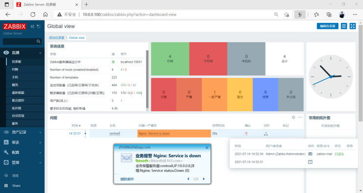<br></p>
<p>恢复nginx服务也会触发邮件报警</p>
<figure class="highlight sh"><table><tr><td class="gutter"><pre><span class="line">1</span><br></pre></td><td class="code"><pre><span class="line">[root@centos8 ~]<span class="comment"># systemctl start nginx</span></span><br></pre></td></tr></table></figure>

<p><br></p>
<p>在报表中可以看到动作日志如下面信息</p>
<p></p>
<p>zabbix 4.0 界面如下</p>
<p><br><br><br></p>
<h4 id="分级告警"><a href="#分级告警" class="headerlink" title="分级告警"></a>分级告警</h4><p>当出现报警后，一般会根据组织的重要级别，按时间逐级分层向上报警，如下面常见分层报警</p>
<figure class="highlight http"><table><tr><td class="gutter"><pre><span class="line">1</span><br></pre></td><td class="code"><pre><span class="line">初级运维/指定运维组--高级运维工程师/业务运维-—-&gt;架构师---&gt;总监/CTO</span><br></pre></td></tr></table></figure>

<p>要实现分级告警，必须确保有多个用户，并分别指定不同的邮箱</p>
<h5 id="配置Admin用户的邮箱"><a href="#配置Admin用户的邮箱" class="headerlink" title="配置Admin用户的邮箱"></a>配置Admin用户的邮箱</h5><p><br></p>
<h5 id="另一个用户wang使用不同的邮箱"><a href="#另一个用户wang使用不同的邮箱" class="headerlink" title="另一个用户wang使用不同的邮箱"></a>另一个用户wang使用不同的邮箱</h5><p><br><br></p>
<p>Zabbix4.0版本界面如下</p>
<p><br><br><br></p>
<h5 id="配置操作指定不同的步骤发邮件给不同的用户"><a href="#配置操作指定不同的步骤发邮件给不同的用户" class="headerlink" title="配置操作指定不同的步骤发邮件给不同的用户"></a>配置操作指定不同的步骤发邮件给不同的用户</h5><p>在原来操作基础上添加新的操作</p>
<p></p>
<p>添加操作，发送消息给上级领导的邮箱</p>
<p>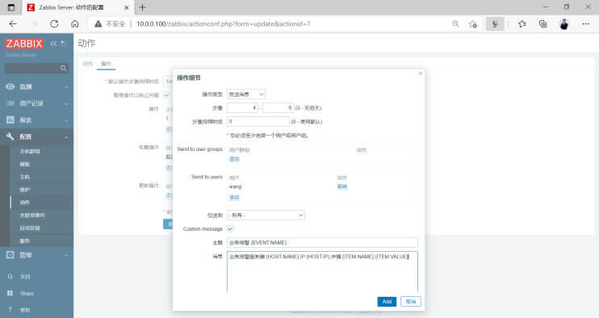</p>
<figure class="highlight http"><table><tr><td class="gutter"><pre><span class="line">1</span><br><span class="line">2</span><br><span class="line">3</span><br><span class="line">4</span><br><span class="line">5</span><br><span class="line">6</span><br><span class="line">7</span><br><span class="line">8</span><br><span class="line">9</span><br><span class="line">10</span><br></pre></td><td class="code"><pre><span class="line">&#123;ESC.HISTORY&#125; 宏放在在自定义消息里</span><br><span class="line">该宏将包含关于此升级之前执行的所有步骤的信息，例如:发送的通知和执行的命令。</span><br><span class="line">自定义消息如下示例:</span><br><span class="line">主题：Problem:&#123;EVENT.NAME&#125;</span><br><span class="line">告警主机：&#123;HOST.NAME1&#125;</span><br><span class="line">告警服务: &#123;ITEM.NAME1&#125;</span><br><span class="line">告警Key1: &#123;ITEM.KEY1&#125;：&#123;ITEM.VALUE1&#125;</span><br><span class="line">告警Key2: &#123;ITEM.KEY2&#125;：&#123;ITEM.VALUE2&#125;</span><br><span class="line">严重级别: &#123;TRIGGER.SEVERITY&#125;</span><br><span class="line">此前步骤：&#123;ESC.HISTORY&#125;</span><br></pre></td></tr></table></figure>

<p></p>
<p>确认动作更新</p>
<p></p>
<p>Zabbix4.0版本如下界面</p>
<p><br></p>
<h5 id="模拟故障测试验证分级告警"><a href="#模拟故障测试验证分级告警" class="headerlink" title="模拟故障测试验证分级告警"></a>模拟故障测试验证分级告警</h5><p>停止 nginx 服务，查看结果</p>
<figure class="highlight sh"><table><tr><td class="gutter"><pre><span class="line">1</span><br></pre></td><td class="code"><pre><span class="line">[root@centos8 ~]<span class="comment"># systemctl stop nginx</span></span><br></pre></td></tr></table></figure>

<p><br></p>
<p>Admin收到三封告警邮件</p>
<p></p>
<p>wang用户邮件也是三封告警邮件</p>
<p><br></p>
<p>调整操作的持续时间如下，第一个操作为2m,第二个操作为3m</p>
<p></p>
<p>最终可以看到邮件发送的时间间隔如下</p>
<p></p>
<h4 id="邮件告警方法2"><a href="#邮件告警方法2" class="headerlink" title="邮件告警方法2"></a>邮件告警方法2</h4><p>也可以利用脚本方式进行邮件告警</p>
<h5 id="安装邮件相关软件和配置邮件"><a href="#安装邮件相关软件和配置邮件" class="headerlink" title="安装邮件相关软件和配置邮件"></a>安装邮件相关软件和配置邮件</h5><p>范例: 利用 sendemail 工具实现邮件脚本</p>
<figure class="highlight sh"><table><tr><td class="gutter"><pre><span class="line">1</span><br><span class="line">2</span><br><span class="line">3</span><br><span class="line">4</span><br><span class="line">5</span><br><span class="line">6</span><br><span class="line">7</span><br><span class="line">8</span><br><span class="line">9</span><br><span class="line">10</span><br><span class="line">11</span><br><span class="line">12</span><br><span class="line">13</span><br><span class="line">14</span><br><span class="line">15</span><br><span class="line">16</span><br><span class="line">17</span><br><span class="line">18</span><br><span class="line">19</span><br><span class="line">20</span><br><span class="line">21</span><br><span class="line">22</span><br><span class="line">23</span><br><span class="line">24</span><br><span class="line">25</span><br><span class="line">26</span><br><span class="line">27</span><br><span class="line">28</span><br><span class="line">29</span><br><span class="line">30</span><br><span class="line">31</span><br><span class="line">32</span><br><span class="line">33</span><br><span class="line">34</span><br><span class="line">35</span><br><span class="line">36</span><br><span class="line">37</span><br><span class="line">38</span><br><span class="line">39</span><br><span class="line">40</span><br><span class="line">41</span><br><span class="line">42</span><br><span class="line">43</span><br><span class="line">44</span><br><span class="line">45</span><br><span class="line">46</span><br><span class="line">47</span><br><span class="line">48</span><br><span class="line">49</span><br><span class="line">50</span><br><span class="line">51</span><br><span class="line">52</span><br><span class="line">53</span><br><span class="line">54</span><br><span class="line">55</span><br><span class="line">56</span><br><span class="line">57</span><br><span class="line">58</span><br><span class="line">59</span><br><span class="line">60</span><br><span class="line">61</span><br><span class="line">62</span><br><span class="line">63</span><br><span class="line">64</span><br><span class="line">65</span><br><span class="line">66</span><br><span class="line">67</span><br><span class="line">68</span><br><span class="line">69</span><br></pre></td><td class="code"><pre><span class="line">[root@zabbix-server ~]<span class="comment"># cat /usr/lib/zabbix/alertscripts/mail.sh</span></span><br><span class="line"><span class="comment">#!/bin/bash</span></span><br><span class="line"></span><br><span class="line">email_send=<span class="string">&#x27;29308620@qq.com&#x27;</span></span><br><span class="line">email_passwd=<span class="string">&#x27;dgezyimkdswwbhea&#x27;</span></span><br><span class="line">email_smtp_server=<span class="string">&#x27;smtp.qq.com&#x27;</span></span><br><span class="line">. /etc/os-release</span><br><span class="line"><span class="function"><span class="title">msg_error</span></span>() &#123;</span><br><span class="line">  <span class="built_in">echo</span> -e <span class="string">&quot;\033[1;31m<span class="variable">$1</span>\033[0m&quot;</span></span><br><span class="line">&#125;</span><br><span class="line"><span class="function"><span class="title">msg_info</span></span>() &#123;</span><br><span class="line">  <span class="built_in">echo</span> -e <span class="string">&quot;\033[1;32m<span class="variable">$1</span>\033[0m&quot;</span></span><br><span class="line">&#125;</span><br><span class="line"><span class="function"><span class="title">msg_warn</span></span>() &#123;</span><br><span class="line">  <span class="built_in">echo</span> -e <span class="string">&quot;\033[1;33m<span class="variable">$1</span>\033[0m&quot;</span></span><br><span class="line">&#125;</span><br><span class="line"><span class="function"><span class="title">color</span></span> () &#123;</span><br><span class="line">    RES_COL=60</span><br><span class="line">    MOVE_TO_COL=<span class="string">&quot;echo -en \\033[<span class="variable">$&#123;RES_COL&#125;</span>G&quot;</span></span><br><span class="line">    SETCOLOR_SUCCESS=<span class="string">&quot;echo -en \\033[1;32m&quot;</span></span><br><span class="line">    SETCOLOR_FAILURE=<span class="string">&quot;echo -en \\033[1;31m&quot;</span></span><br><span class="line">    SETCOLOR_WARNING=<span class="string">&quot;echo -en \\033[1;33m&quot;</span></span><br><span class="line">    SETCOLOR_NORMAL=<span class="string">&quot;echo -en \E[0m&quot;</span></span><br><span class="line">    <span class="built_in">echo</span> -n <span class="string">&quot;<span class="variable">$1</span>&quot;</span> &amp;&amp; <span class="variable">$MOVE_TO_COL</span></span><br><span class="line">    <span class="built_in">echo</span> -n <span class="string">&quot;[&quot;</span></span><br><span class="line">    <span class="keyword">if</span> [ <span class="variable">$2</span> = <span class="string">&quot;success&quot;</span> -o <span class="variable">$2</span> = <span class="string">&quot;0&quot;</span> ] ;<span class="keyword">then</span></span><br><span class="line">        <span class="variable">$&#123;SETCOLOR_SUCCESS&#125;</span></span><br><span class="line">        <span class="built_in">echo</span> -n $<span class="string">&quot; OK &quot;</span>    </span><br><span class="line">    <span class="keyword">elif</span> [ <span class="variable">$2</span> = <span class="string">&quot;failure&quot;</span> -o <span class="variable">$2</span> = <span class="string">&quot;1&quot;</span> ] ;<span class="keyword">then</span> </span><br><span class="line">        <span class="variable">$&#123;SETCOLOR_FAILURE&#125;</span></span><br><span class="line">        <span class="built_in">echo</span> -n $<span class="string">&quot;FAILED&quot;</span></span><br><span class="line">    <span class="keyword">else</span></span><br><span class="line">        <span class="variable">$&#123;SETCOLOR_WARNING&#125;</span></span><br><span class="line">        <span class="built_in">echo</span> -n $<span class="string">&quot;WARNING&quot;</span></span><br><span class="line">    <span class="keyword">fi</span></span><br><span class="line">    <span class="variable">$&#123;SETCOLOR_NORMAL&#125;</span></span><br><span class="line">    <span class="built_in">echo</span> -n <span class="string">&quot;]&quot;</span></span><br><span class="line">    <span class="built_in">echo</span></span><br><span class="line">&#125;</span><br><span class="line"></span><br><span class="line"><span class="function"><span class="title">install_sendemail</span></span> () &#123;</span><br><span class="line">    <span class="keyword">if</span> [[ <span class="variable">$ID</span> =~ rhel|centos|rocky ]];<span class="keyword">then</span></span><br><span class="line">       rpm -q sendemail &amp;&gt; /dev/null || yum install -y sendemail</span><br><span class="line">    <span class="keyword">elif</span> [ <span class="variable">$ID</span> = <span class="string">&#x27;ubuntu&#x27;</span> ];<span class="keyword">then</span></span><br><span class="line">       dpkg -l |grep -q sendemail || &#123; apt update; apt install -y libio-socket-ssl-perl libnet-ssleay-perl sendemail ; &#125; </span><br><span class="line">    <span class="keyword">else</span></span><br><span class="line">        color <span class="string">&quot;不支持此操作系统，退出!&quot;</span> 1</span><br><span class="line">        <span class="built_in">exit</span></span><br><span class="line">    <span class="keyword">fi</span></span><br><span class="line">&#125;</span><br><span class="line"></span><br><span class="line"><span class="function"><span class="title">send_email</span></span> () &#123;</span><br><span class="line">   <span class="built_in">local</span> email_receive=<span class="string">&quot;<span class="variable">$1</span>&quot;</span></span><br><span class="line">   <span class="built_in">local</span> email_subject=<span class="string">&quot;<span class="variable">$2</span>&quot;</span></span><br><span class="line">   <span class="built_in">local</span> email_message=<span class="string">&quot;<span class="variable">$3</span>&quot;</span></span><br><span class="line">   sendemail -f <span class="variable">$email_send</span> -t <span class="variable">$email_receive</span> -u <span class="variable">$email_subject</span> -m <span class="variable">$email_message</span> -s <span class="variable">$email_smtp_server</span> -o message-charset=utf-8 -o tls=<span class="built_in">yes</span> -xu <span class="variable">$email_send</span> -xp <span class="variable">$email_passwd</span></span><br><span class="line">   [ $? -eq 0 ] &amp;&amp; color <span class="string">&quot;邮件发送成功!&quot;</span> 0 || color <span class="string">&quot;邮件发送失败!&quot;</span> 1</span><br><span class="line">&#125;</span><br><span class="line"></span><br><span class="line"><span class="keyword">if</span> [ <span class="variable">$#</span> -ne 3 ];<span class="keyword">then</span> </span><br><span class="line">   color <span class="string">&quot;脚本参数不正确!&quot;</span> 1</span><br><span class="line">   msg_info <span class="string">&quot;Usage: `basename <span class="variable">$0</span>` &lt;mail_address&gt; &lt;subject&gt; &lt;message&gt;&quot;</span></span><br><span class="line">    <span class="built_in">exit</span> 1</span><br><span class="line"><span class="keyword">fi</span></span><br><span class="line"></span><br><span class="line">install_sendemail </span><br><span class="line">send_email <span class="string">&quot;<span class="variable">$1</span>&quot;</span> <span class="string">&quot;<span class="variable">$2</span>&quot;</span> <span class="string">&quot;<span class="variable">$3</span>&quot;</span></span><br><span class="line"></span><br><span class="line">[root@zabbix-server ~]<span class="comment"># chmod +x /usr/lib/zabbix/alertscripts/mail.sh</span></span><br></pre></td></tr></table></figure>

<p>范例: 利用 mutt工具实现邮件发送</p>
<figure class="highlight sh"><table><tr><td class="gutter"><pre><span class="line">1</span><br><span class="line">2</span><br><span class="line">3</span><br><span class="line">4</span><br><span class="line">5</span><br><span class="line">6</span><br><span class="line">7</span><br><span class="line">8</span><br><span class="line">9</span><br><span class="line">10</span><br><span class="line">11</span><br><span class="line">12</span><br><span class="line">13</span><br><span class="line">14</span><br><span class="line">15</span><br><span class="line">16</span><br><span class="line">17</span><br><span class="line">18</span><br><span class="line">19</span><br><span class="line">20</span><br><span class="line">21</span><br><span class="line">22</span><br><span class="line">23</span><br><span class="line">24</span><br><span class="line">25</span><br><span class="line">26</span><br><span class="line">27</span><br><span class="line">28</span><br><span class="line">29</span><br><span class="line">30</span><br><span class="line">31</span><br><span class="line">32</span><br><span class="line">33</span><br><span class="line">34</span><br><span class="line">35</span><br><span class="line">36</span><br><span class="line">37</span><br><span class="line">38</span><br></pre></td><td class="code"><pre><span class="line"><span class="comment">#Ubuntu18.04系统的配置邮件信息</span></span><br><span class="line">[root@zabbix-server ~]<span class="comment"># apt -y install mutt msmtp</span></span><br><span class="line"></span><br><span class="line">[root@zabbix-server ~]<span class="comment"># getent passwd zabbix</span></span><br><span class="line">zabbix:x:112:116::/var/lib/zabbix/:/usr/sbin/nologin</span><br><span class="line"></span><br><span class="line">[root@zabbix-server ~]<span class="comment"># mkdir /var/lib/zabbix</span></span><br><span class="line">[root@zabbix-server ~]<span class="comment"># vim /var/lib/zabbix/.msmtprc </span></span><br><span class="line">account default</span><br><span class="line">host smtp.163.com</span><br><span class="line">from lbtooth@163.com</span><br><span class="line">auth plain</span><br><span class="line">user lbtooth@163.com</span><br><span class="line">password QXFIOQXEJNSVSDMW</span><br><span class="line">logfile ~/.msmtp.log</span><br><span class="line"></span><br><span class="line">[root@zabbix-server ~]<span class="comment"># chmod 600 /var/lib/zabbix/.msmtprc </span></span><br><span class="line">[root@zabbix-server ~]<span class="comment"># touch /var/lib/zabbix/.msmtp.log</span></span><br><span class="line">[root@zabbix-server ~]<span class="comment"># chown -R zabbix.zabbix /var/lib/zabbix</span></span><br><span class="line">[root@zabbix-server ~]<span class="comment"># vim /etc/Muttrc</span></span><br><span class="line"><span class="built_in">source</span> /usr/lib/mutt/source-muttrc.d|</span><br><span class="line"><span class="comment">#文件最后添加下面行</span></span><br><span class="line"><span class="built_in">set</span> sendmail=<span class="string">&quot;/usr/bin/msmtp&quot;</span></span><br><span class="line"><span class="built_in">set</span> use_from=<span class="built_in">yes</span></span><br><span class="line"><span class="built_in">set</span> realname=<span class="string">&quot;lbtooth&quot;</span></span><br><span class="line"><span class="built_in">set</span> from=lbtooth@163.com</span><br><span class="line"><span class="built_in">set</span> envelope_from=<span class="built_in">yes</span></span><br><span class="line"></span><br><span class="line"><span class="comment">#邮件发送邮件的脚本</span></span><br><span class="line">[root@zabbix-server ~]<span class="comment"># cat /usr/lib/zabbix/alertscripts/mail.sh</span></span><br><span class="line"><span class="comment">#!/bin/bash</span></span><br><span class="line">SENDTO=<span class="variable">$1</span></span><br><span class="line">SUBJECT=<span class="variable">$2</span></span><br><span class="line">MAIL=<span class="variable">$3</span></span><br><span class="line"></span><br><span class="line"><span class="built_in">echo</span> <span class="string">&quot;<span class="variable">$MAIL</span>&quot;</span> | mutt -s <span class="string">&quot;<span class="variable">$SUBJECT</span>&quot;</span> <span class="variable">$SENDTO</span></span><br><span class="line"></span><br><span class="line">[root@zabbix-server ~]<span class="comment"># chmod +x /usr/lib/zabbix/alertscripts/mail.sh</span></span><br></pre></td></tr></table></figure>

<h5 id="创建邮件报警媒介类型"><a href="#创建邮件报警媒介类型" class="headerlink" title="创建邮件报警媒介类型"></a>创建邮件报警媒介类型</h5><p>脚本参数如下: </p>
<figure class="highlight http"><table><tr><td class="gutter"><pre><span class="line">1</span><br><span class="line">2</span><br><span class="line">3</span><br></pre></td><td class="code"><pre><span class="line">&#123;ALERT.SENDTO&#125;</span><br><span class="line">&#123;ALERT.SUBJECT&#125;</span><br><span class="line">&#123;ALERT.MESSAGE&#125;</span><br></pre></td></tr></table></figure>

<p></p>
<h5 id="将报警媒介关联用户"><a href="#将报警媒介关联用户" class="headerlink" title="将报警媒介关联用户"></a>将报警媒介关联用户</h5><p><br></p>
<h5 id="创建动作和操作"><a href="#创建动作和操作" class="headerlink" title="创建动作和操作"></a>创建动作和操作</h5><p><br><br></p>
<h5 id="验证邮件告警"><a href="#验证邮件告警" class="headerlink" title="验证邮件告警"></a>验证邮件告警</h5><p>测试故障</p>
<figure class="highlight sh"><table><tr><td class="gutter"><pre><span class="line">1</span><br></pre></td><td class="code"><pre><span class="line">[root@centos8 ~]<span class="comment"># systemctl stop nginx</span></span><br></pre></td></tr></table></figure>

<p></p>
<p>测试故障恢复</p>
<figure class="highlight sh"><table><tr><td class="gutter"><pre><span class="line">1</span><br></pre></td><td class="code"><pre><span class="line">[root@centos8 ~]<span class="comment"># systemctl start nginx</span></span><br></pre></td></tr></table></figure>

<p></p>
<h3 id="微信告警"><a href="#微信告警" class="headerlink" title="微信告警"></a>微信告警</h3><h4 id="注册企业微信"><a href="#注册企业微信" class="headerlink" title="注册企业微信"></a>注册企业微信</h4><p>微信告警首先得注册一个企业微信，然后才能实现微信告警。</p>
<p>浏览器访问下面链接，注册企业微信</p>
<figure class="highlight http"><table><tr><td class="gutter"><pre><span class="line">1</span><br></pre></td><td class="code"><pre><span class="line">https://work.weixin.qq.com/</span><br></pre></td></tr></table></figure>

<p><br><br></p>
<p>用浏览器进入管理后台</p>
<p></p>
<p>或者安装企业微信的PC端登录</p>
<p></p>
<h4 id="创建部门和人员"><a href="#创建部门和人员" class="headerlink" title="创建部门和人员"></a>创建部门和人员</h4><h5 id="创建部门"><a href="#创建部门" class="headerlink" title="创建部门"></a>创建部门</h5><p></p>
<h5 id="加入人员"><a href="#加入人员" class="headerlink" title="加入人员"></a>加入人员</h5><p>方法1: 直接微信邀请，让相关人员自行扫码加入</p>
<p><br></p>
<p>方法2 手动添加人员</p>
<p><br></p>
<h4 id="将微信应用中添加相关的部门或人员"><a href="#将微信应用中添加相关的部门或人员" class="headerlink" title="将微信应用中添加相关的部门或人员"></a>将微信应用中添加相关的部门或人员</h4><p></p>
<p>也可以只加特定用户</p>
<p></p>
<h4 id="将个人微信关联企业微信插件"><a href="#将个人微信关联企业微信插件" class="headerlink" title="将个人微信关联企业微信插件"></a>将个人微信关联企业微信插件</h4><p>可以使用手机号或邮箱邀请对应的员工加入此企业微信组织，之后员工用自已的微信扫下面的二维码就</p>
<p>可用微信接收企业微信的消息</p>
<p>下面界面扫二维码可以将个人微信关联企业微信</p>
<p></p>
<p>如果前面还没同意加入企业，则个人微信扫码后，看到下面图示</p>
<p></p>
<p>输入相关信息，进行验证才能加入企业微信</p>
<p></p>
<p>输入相关信息，进行验证才能加入企业微信</p>
<p></p>
<p>下一步会发信邮件或短信进行验证</p>
<p></p>
<p>输入上面收到的验证码</p>
<p></p>
<p>验证成功后可以在个人微信中看到下面提示</p>
<p></p>
<h4 id="创建微信应用并授权可信IP"><a href="#创建微信应用并授权可信IP" class="headerlink" title="创建微信应用并授权可信IP"></a>创建微信应用并授权可信IP</h4><p></p>
<p>上传Logo和指定应用名称，并选择范围</p>
<p></p>
<p>注意记下以下信息：</p>
<figure class="highlight http"><table><tr><td class="gutter"><pre><span class="line">1</span><br><span class="line">2</span><br></pre></td><td class="code"><pre><span class="line">应用的 AgentId值1000003</span><br><span class="line">应用的 Secret的值ga621_Y3iMMDW61gm-2iUmTia6RayBbH4gTH0CrJyD8</span><br></pre></td></tr></table></figure>

<p></p>
<figure class="highlight http"><table><tr><td class="gutter"><pre><span class="line">1</span><br></pre></td><td class="code"><pre><span class="line">查看到企业ID的值为 ww644a0d95807e476b</span><br></pre></td></tr></table></figure>

<p></p>
<p><strong>在应用中添加 企业可信IP</strong> (最近添加的功能，必须配置IP白名单才能发微信，否则会出错)</p>
<p></p>
<h4 id="测试发送微信消息"><a href="#测试发送微信消息" class="headerlink" title="测试发送微信消息"></a>测试发送微信消息</h4><p>可以给加入的员工发送微信消息</p>
<p><br><br></p>
<p>员工个人微信可以收到以下信息</p>
<p></p>
<p>企业微信也可以收到信息</p>
<p></p>
<p></p>
<h4 id="测试API"><a href="#测试API" class="headerlink" title="测试API"></a>测试API</h4><p>访问企业微信接口调试工具，输入corpid和和corpsecret 可以测试请求参数是否正确 </p>
<p>访问下面地址</p>
<figure class="highlight http"><table><tr><td class="gutter"><pre><span class="line">1</span><br><span class="line">2</span><br></pre></td><td class="code"><pre><span class="line">https://open.work.weixin.qq.com/wwopen/devtool/interface/combine</span><br><span class="line">https://work.weixin.qq.com/api/devtools/devtool.php</span><br></pre></td></tr></table></figure>

<p>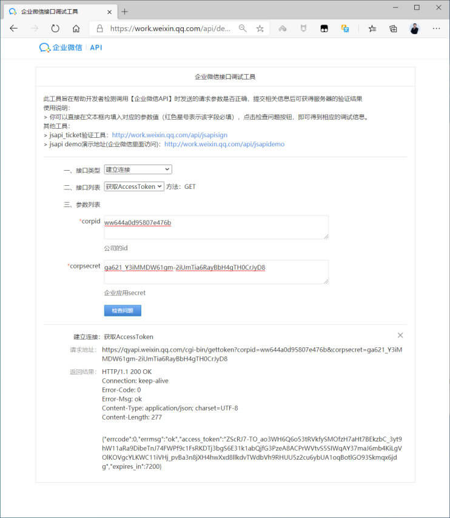</p>
<h4 id="创建发送微信脚本"><a href="#创建发送微信脚本" class="headerlink" title="创建发送微信脚本"></a>创建发送微信脚本</h4><p>官方微信教程</p>
<figure class="highlight http"><table><tr><td class="gutter"><pre><span class="line">1</span><br></pre></td><td class="code"><pre><span class="line">https://work.weixin.qq.com/api/doc/90000/90003/90487</span><br></pre></td></tr></table></figure>

<p></p>
<p>官方微信API参考文档</p>
<figure class="highlight http"><table><tr><td class="gutter"><pre><span class="line">1</span><br></pre></td><td class="code"><pre><span class="line">https://work.weixin.qq.com/api/doc/90000/90135/91039</span><br></pre></td></tr></table></figure>

<p></p>
<p>发送微信可以使用各种语言，下面使用shell脚本实现</p>
<figure class="highlight sh"><table><tr><td class="gutter"><pre><span class="line">1</span><br><span class="line">2</span><br><span class="line">3</span><br><span class="line">4</span><br><span class="line">5</span><br><span class="line">6</span><br><span class="line">7</span><br><span class="line">8</span><br><span class="line">9</span><br><span class="line">10</span><br><span class="line">11</span><br><span class="line">12</span><br><span class="line">13</span><br><span class="line">14</span><br><span class="line">15</span><br><span class="line">16</span><br><span class="line">17</span><br><span class="line">18</span><br><span class="line">19</span><br><span class="line">20</span><br><span class="line">21</span><br><span class="line">22</span><br><span class="line">23</span><br><span class="line">24</span><br><span class="line">25</span><br><span class="line">26</span><br><span class="line">27</span><br><span class="line">28</span><br><span class="line">29</span><br><span class="line">30</span><br><span class="line">31</span><br><span class="line">32</span><br><span class="line">33</span><br><span class="line">34</span><br><span class="line">35</span><br><span class="line">36</span><br><span class="line">37</span><br><span class="line">38</span><br><span class="line">39</span><br><span class="line">40</span><br><span class="line">41</span><br><span class="line">42</span><br><span class="line">43</span><br></pre></td><td class="code"><pre><span class="line"><span class="comment">#查看zabbix server的配置文件</span></span><br><span class="line">[root@zabbix-server ~]<span class="comment"># grep AlertScriptsPath /etc/zabbix/zabbix_server.conf</span></span><br><span class="line"><span class="comment">### Option: AlertScriptsPath</span></span><br><span class="line"><span class="comment"># AlertScriptsPath=$&#123;datadir&#125;/zabbix/alertscripts</span></span><br><span class="line">AlertScriptsPath=/usr/lib/zabbix/alertscripts</span><br><span class="line"></span><br><span class="line"><span class="comment">#实现发信微信的脚本</span></span><br><span class="line">[root@zabbix-server alertscripts]<span class="comment"># pwd</span></span><br><span class="line">/usr/lib/zabbix/alertscripts</span><br><span class="line">[root@zabbix-server alertscripts]<span class="comment"># cat wechat.sh </span></span><br><span class="line"><span class="comment">#!/bin/bash</span></span><br><span class="line">CorpID=<span class="string">&quot;ww644a0d95807e476b&quot;</span>                             <span class="comment">#我的企业下面的CorpID</span></span><br><span class="line">Secret=<span class="string">&quot;cGp4gHUpHLL1KQZY5abM3panGp-uCrEZyrgDvOT0OZA&quot;</span>    <span class="comment">#创建的应用那里的Secret</span></span><br><span class="line">agentid=1000003                                         <span class="comment">#改为 AgentId 在创建的应用可以查看</span></span><br><span class="line"><span class="comment">#PartyID=1                                              #通讯录中的部门ID,可选项</span></span><br><span class="line">GURL=<span class="string">&quot;https://qyapi.weixin.qq.com/cgi-bin/gettoken?</span></span><br><span class="line"><span class="string">corpid=<span class="variable">$CorpID</span>&amp;corpsecret=<span class="variable">$Secret</span>&quot;</span></span><br><span class="line">Token=$(/usr/bin/curl -s -G <span class="variable">$GURL</span> |awk -F\&quot;: <span class="string">&#x27;&#123;print $4&#125;&#x27;</span>|awk -F\&quot; <span class="string">&#x27;&#123;print $2&#125;&#x27;</span>)</span><br><span class="line"><span class="comment">#echo $Token</span></span><br><span class="line">PURL=<span class="string">&quot;https://qyapi.weixin.qq.com/cgi-bin/message/send?access_token=<span class="variable">$Token</span>&quot;</span></span><br><span class="line"><span class="keyword">function</span> <span class="function"><span class="title">body</span></span>()&#123;</span><br><span class="line">   <span class="built_in">local</span> userid=<span class="variable">$1</span>                                 <span class="comment">#脚本的第1个参数为接收微信的企业用户帐号，在通讯录中可以查看</span></span><br><span class="line">    <span class="comment">#local partyid=$PartyID          </span></span><br><span class="line">   <span class="built_in">local</span> subject=<span class="variable">$2</span>                                <span class="comment">#脚本的第2个参数，表示消息主题</span></span><br><span class="line">   <span class="built_in">local</span> msg=$(<span class="built_in">echo</span> <span class="string">&quot;<span class="variable">$@</span>&quot;</span> | <span class="built_in">cut</span> -d<span class="string">&quot; &quot;</span> -f3-)         <span class="comment">#脚本的第3个参数，表示消息正文</span></span><br><span class="line">   <span class="built_in">printf</span> <span class="string">&#x27;&#123;\n&#x27;</span></span><br><span class="line">   <span class="built_in">printf</span> <span class="string">&#x27;\t&quot;touser&quot;: &quot;&#x27;</span><span class="string">&quot;<span class="variable">$userid</span>&quot;</span>\&quot;<span class="string">&quot;,\n&quot;</span></span><br><span class="line">    <span class="comment">#printf &#x27;\t&quot;toparty&quot;: &quot;&#x27;&quot;$PartyID&quot;\&quot;&quot;,\n&quot;</span></span><br><span class="line">   <span class="built_in">printf</span> <span class="string">&#x27;\t&quot;msgtype&quot;: &quot;text&quot;,\n&#x27;</span></span><br><span class="line">   <span class="built_in">printf</span> <span class="string">&#x27;\t&quot;agentid&quot;: &quot;&#x27;</span><span class="string">&quot;<span class="variable">$agentid</span>&quot;</span>\&quot;<span class="string">&quot;,\n&quot;</span></span><br><span class="line">   <span class="built_in">printf</span> <span class="string">&#x27;\t&quot;text&quot;: &#123;\n&#x27;</span></span><br><span class="line">   <span class="built_in">printf</span> <span class="string">&#x27;\t\t&quot;content&quot;: &quot;&#x27;</span><span class="string">&quot;<span class="variable">$subject</span>\n\n<span class="variable">$msg</span>&quot;</span>\&quot;<span class="string">&quot;\n&quot;</span></span><br><span class="line">   <span class="built_in">printf</span> <span class="string">&#x27;\t&#125;,\n&#x27;</span></span><br><span class="line">   <span class="built_in">printf</span> <span class="string">&#x27;\t&quot;safe&quot;:&quot;0&quot;\n&#x27;</span></span><br><span class="line">   <span class="built_in">printf</span> <span class="string">&#x27;&#125;\n&#x27;</span></span><br><span class="line">&#125;</span><br><span class="line">/usr/bin/curl --data-ascii <span class="string">&quot;<span class="subst">$(body $*)</span>&quot;</span> <span class="variable">$PURL</span></span><br><span class="line"></span><br><span class="line"><span class="comment">#添加执行权限</span></span><br><span class="line">[root@zabbix-server alertscripts]<span class="comment"># chmod +x wechat.sh</span></span><br><span class="line"></span><br><span class="line"><span class="comment">#发送测试微信，其中wangxiaochun为企业微信的帐号，并且不区分大小写，在通讯录的用户成员详情中可以看到帐号</span></span><br><span class="line">[root@zabbix-server alertscripts]<span class="comment"># ./wechat.sh wangxiaochun 微信告警测试标题 告警测试信息</span></span><br></pre></td></tr></table></figure>

<p></p>
<p>在手机企业微信APP中可以收到下面提示</p>
<p></p>
<h4 id="创建微信报警媒介类型"><a href="#创建微信报警媒介类型" class="headerlink" title="创建微信报警媒介类型"></a>创建微信报警媒介类型</h4><p></p>
<p>报警媒介类型为脚本，脚本参数为以下三项</p>
<figure class="highlight http"><table><tr><td class="gutter"><pre><span class="line">1</span><br><span class="line">2</span><br><span class="line">3</span><br></pre></td><td class="code"><pre><span class="line">&#123;ALERT.SENDTO&#125;--收件人媒介</span><br><span class="line">&#123;ALERT.SUBJECT&#125;--通知主题，因为微信没有主题，此项无效，可以不填写</span><br><span class="line">&#123;ALERT.MESSAGE&#125;--通知内容</span><br></pre></td></tr></table></figure>

<p>官方宏参考:</p>
<figure class="highlight http"><table><tr><td class="gutter"><pre><span class="line">1</span><br><span class="line">2</span><br></pre></td><td class="code"><pre><span class="line">https://www.zabbix.com/documentation/5.0/zh/manual/appendix/macros/supported_by_location</span><br><span class="line">https://www.zabbix.com/documentation/4.0/zh/manual/appendix/macros/supported_by_location</span><br></pre></td></tr></table></figure>

<p></p>
<p><strong>注意: 此处可以只填写 {ALERT.SENDTO} 和 {ALERT.MESSAGE} 即可</strong></p>
<p><br></p>
<p>修改 Message Templates</p>
<figure class="highlight sh"><table><tr><td class="gutter"><pre><span class="line">1</span><br><span class="line">2</span><br><span class="line">3</span><br><span class="line">4</span><br><span class="line">5</span><br><span class="line">6</span><br><span class="line">7</span><br><span class="line">8</span><br><span class="line">9</span><br><span class="line">10</span><br><span class="line">11</span><br><span class="line">12</span><br><span class="line">13</span><br><span class="line">14</span><br><span class="line">15</span><br></pre></td><td class="code"><pre><span class="line"><span class="comment">#可以添加两个消息类型</span></span><br><span class="line"><span class="comment"># 问题</span></span><br><span class="line">主题: 告警: &#123;EVENT.NAME&#125;</span><br><span class="line">告警主机：&#123;HOST.NAME1&#125;</span><br><span class="line">告警服务: &#123;ITEM.NAME1&#125;</span><br><span class="line">告警Key1: &#123;ITEM.KEY1&#125;：&#123;ITEM.VALUE1&#125;</span><br><span class="line">告警Key2: &#123;ITEM.KEY2&#125;：&#123;ITEM.VALUE2&#125;</span><br><span class="line">严重级别: &#123;TRIGGER.SEVERITY&#125;</span><br><span class="line"></span><br><span class="line"><span class="comment"># 恢复 Problem Recovery</span></span><br><span class="line">主题: 恢复: &#123;EVENT.DURATION&#125;: &#123;EVENT.NAME&#125;</span><br><span class="line">恢复主机：&#123;HOST.NAME1&#125;</span><br><span class="line">恢复服务： &#123;ITEM.NAME1&#125;</span><br><span class="line">恢复Key1：&#123;ITEM.KEY1&#125;：&#123;ITEM.VALUE1&#125;</span><br><span class="line">恢复Key2: &#123;ITEM.KEY2&#125;：&#123;ITEM.VALUE2&#125;</span><br></pre></td></tr></table></figure>

<p></p>
<p>测试发微信消息</p>
<p></p>
<p>发送成功可以看到下面提示信息</p>
<p></p>
<p>可以在个人微信收到下面信息</p>
<p></p>
<p>zabbix4.0版本界面如下</p>
<p><br></p>
<h4 id="给Zabbix用户添加报警媒介"><a href="#给Zabbix用户添加报警媒介" class="headerlink" title="给Zabbix用户添加报警媒介"></a>给Zabbix用户添加报警媒介</h4><p>对现在用户Admin编辑</p>
<p></p>
<p>添加微信报警媒介</p>
<p>注意: 此处的收件人是一个微信帐号，但实际上发送给应用的可见范围的所有用户</p>
<p></p>
<p>zabbix4.0版本界面如下</p>
<p><br><br></p>
<h4 id="创建动作-1"><a href="#创建动作-1" class="headerlink" title="创建动作"></a>创建动作</h4><h5 id="编辑已有动作"><a href="#编辑已有动作" class="headerlink" title="编辑已有动作"></a>编辑已有动作</h5><p>如果已经创建动作，可以修改已有动作，如下所</p>
<p><br><br><br></p>
<h5 id="创建动作-2"><a href="#创建动作-2" class="headerlink" title="创建动作"></a>创建动作</h5><p>如果之前没有动作，新创建动作，以下为Zabbix4.0的操作界面</p>
<p><br><br><br><br><br></p>
<h4 id="测试微信报警"><a href="#测试微信报警" class="headerlink" title="测试微信报警"></a>测试微信报警</h4><figure class="highlight sh"><table><tr><td class="gutter"><pre><span class="line">1</span><br><span class="line">2</span><br></pre></td><td class="code"><pre><span class="line"><span class="comment">#模拟故障</span></span><br><span class="line">[root@centos8 ~]<span class="comment"># systemctl stop nginx</span></span><br></pre></td></tr></table></figure>

<p></p>
<p>同时个人微信可以看到下面提示</p>
<p></p>
<p>恢复服务后</p>
<figure class="highlight sh"><table><tr><td class="gutter"><pre><span class="line">1</span><br></pre></td><td class="code"><pre><span class="line">[root@centos8 ~]<span class="comment"># systemctl start nginx</span></span><br></pre></td></tr></table></figure>

<p>个人微信可以收到下面的提示</p>
<p></p>
<p>以下为Zabbix4.0版本的界面提示</p>
<p>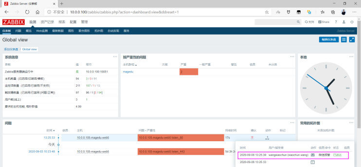</p>
<p>在手机企业微信APP中可以收到下面提示</p>
<p></p>
<figure class="highlight sh"><table><tr><td class="gutter"><pre><span class="line">1</span><br><span class="line">2</span><br></pre></td><td class="code"><pre><span class="line"><span class="comment">#模拟故障恢复，观察微信是否收到恢复消息</span></span><br><span class="line">[root@centos8 ~]<span class="comment"># systemctl start nginx</span></span><br></pre></td></tr></table></figure>

<p>在手机企业微信APP中可以收到下面提示</p>
<p></p>
<h3 id="短信告警"><a href="#短信告警" class="headerlink" title="短信告警"></a>短信告警</h3><h4 id="确定短信服务商和短信服务相关信息"><a href="#确定短信服务商和短信服务相关信息" class="headerlink" title="确定短信服务商和短信服务相关信息"></a>确定短信服务商和短信服务相关信息</h4><h5 id="确定短信服务商"><a href="#确定短信服务商" class="headerlink" title="确定短信服务商"></a>确定短信服务商</h5><p>先确定一家短信服务平台，比如：阿里大于，腾讯云等</p>
<figure class="highlight http"><table><tr><td class="gutter"><pre><span class="line">1</span><br><span class="line">2</span><br><span class="line">3</span><br></pre></td><td class="code"><pre><span class="line">https://www.aliyun.com/product/sms</span><br><span class="line">https://cloud.tencent.com/act/pro/csms</span><br><span class="line">https://www.yunpian.com/</span><br></pre></td></tr></table></figure>

<p>注意：一般的短信平台会需要注册用户帐号后实名认证，可能还会要求提交企业营业执照，个人身份证，网站备案信息等信息</p>
<p>以阿里云为例</p>
<figure class="highlight http"><table><tr><td class="gutter"><pre><span class="line">1</span><br><span class="line">2</span><br></pre></td><td class="code"><pre><span class="line">#服务文档</span><br><span class="line">https://help.aliyun.com/document_detail/59210.html?spm=a2c4g.11174283.2.21.6b394c07W3s6kB</span><br></pre></td></tr></table></figure>

<p><strong>短信服务流程</strong></p>
<p></p>
<h5 id="购买短信服务"><a href="#购买短信服务" class="headerlink" title="购买短信服务"></a>购买短信服务</h5><p>到注册阿里云并且购买短信服务<a target="_blank" rel="noopener" href="https://www.aliyun.com/product/sms">https://www.aliyun.com/product/sms</a></p>
<p></p>
<h5 id="创建-AccessKey"><a href="#创建-AccessKey" class="headerlink" title="创建 AccessKey"></a>创建 AccessKey</h5><p>可以使用AccessKey构造一个API请求（或者使用云服务SDK）来操作资源。AccessKey包括AccessKey ID和AccessKey Secret。</p>
<ul>
<li>AccessKey ID用于标识用户。</li>
<li>AccessKey Secret是用来验证用户的密钥。AccessKey Secret必须保密</li>
</ul>
<p>在阿里云基于安全目的，建议先创建RAM帐号（子帐号），生成AccessKey </p>
<p><strong>操作步骤</strong></p>
<ol>
<li>使用云账号登录RAM控制台： <a target="_blank" rel="noopener" href="https://ram.console.aliyun.com/overview">https://ram.console.aliyun.com/overview</a> </li>
<li>在左侧导航栏的人员管理菜单下，单击用户。</li>
<li>在用户登录名称/显示名称列表下，单击目标RAM用户名称</li>
<li>在用户AccessKey区域下，单击创建AccessKey</li>
</ol>
<p>创建用户及相关的AccessKey</p>
<p></p>
<p>对生成的RAM用户进行授权</p>
<p><br></p>
<h5 id="创建短信签名"><a href="#创建短信签名" class="headerlink" title="创建短信签名"></a>创建短信签名</h5><figure class="highlight http"><table><tr><td class="gutter"><pre><span class="line">1</span><br></pre></td><td class="code"><pre><span class="line">https://help.aliyun.com/document_detail/108072.html?spm=a2c4g.11186623.2.20.245e4be5IFMXEF</span><br></pre></td></tr></table></figure>

<p>注意：签名名称要和网站或公司名称相同，否则可能不能通过审核</p>
<p><br><br></p>
<h5 id="创建短信模板"><a href="#创建短信模板" class="headerlink" title="创建短信模板"></a>创建短信模板</h5><figure class="highlight http"><table><tr><td class="gutter"><pre><span class="line">1</span><br></pre></td><td class="code"><pre><span class="line">https://help.aliyun.com/document_detail/108086.html?spm=a2c4g.11186623.6.574.3ca821f24wFBe7</span><br></pre></td></tr></table></figure>

<p>创建两个模板:故障通知和恢复通知模板</p>
<p>注意:阿里云模板中的变量有较高的要求，比如一个变量不能存超过25个字节的内容等</p>
<p>创建故障通知模</p>
<p></p>
<p>创建恢复通知模板</p>
<p></p>
<p></p>
<h4 id="创建发送短信脚本"><a href="#创建发送短信脚本" class="headerlink" title="创建发送短信脚本"></a>创建发送短信脚本</h4><p>参考帮助实现短信脚本</p>
<figure class="highlight http"><table><tr><td class="gutter"><pre><span class="line">1</span><br></pre></td><td class="code"><pre><span class="line">https://help.aliyun.com/document_detail/112147.html?spm=a2c4g.11186623.6.672.2f7a5d1cf0jhs1</span><br></pre></td></tr></table></figure>

<p></p>
<p>短信SDK</p>
<figure class="highlight http"><table><tr><td class="gutter"><pre><span class="line">1</span><br></pre></td><td class="code"><pre><span class="line">https://help.aliyun.com/document_detail/55359.html?spm=a2c4g.11186623.2.26.464e57cfuNqIcX</span><br></pre></td></tr></table></figure>

<p>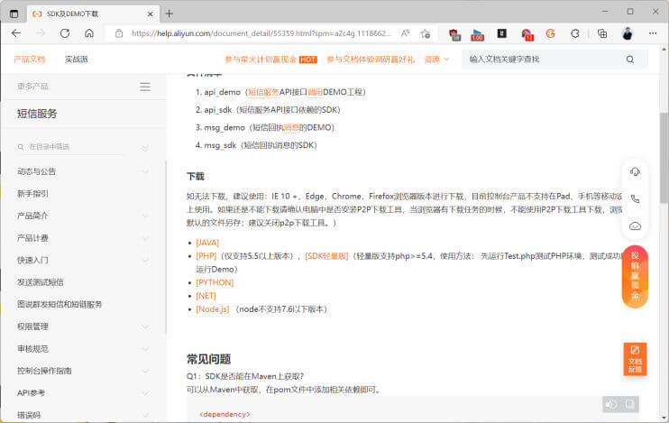</p>
<figure class="highlight sh"><table><tr><td class="gutter"><pre><span class="line">1</span><br><span class="line">2</span><br><span class="line">3</span><br><span class="line">4</span><br><span class="line">5</span><br><span class="line">6</span><br><span class="line">7</span><br><span class="line">8</span><br><span class="line">9</span><br><span class="line">10</span><br><span class="line">11</span><br><span class="line">12</span><br><span class="line">13</span><br><span class="line">14</span><br><span class="line">15</span><br><span class="line">16</span><br><span class="line">17</span><br><span class="line">18</span><br><span class="line">19</span><br><span class="line">20</span><br><span class="line">21</span><br><span class="line">22</span><br><span class="line">23</span><br><span class="line">24</span><br><span class="line">25</span><br><span class="line">26</span><br><span class="line">27</span><br><span class="line">28</span><br><span class="line">29</span><br><span class="line">30</span><br><span class="line">31</span><br><span class="line">32</span><br><span class="line">33</span><br><span class="line">34</span><br><span class="line">35</span><br><span class="line">36</span><br><span class="line">37</span><br><span class="line">38</span><br><span class="line">39</span><br><span class="line">40</span><br><span class="line">41</span><br><span class="line">42</span><br><span class="line">43</span><br><span class="line">44</span><br><span class="line">45</span><br><span class="line">46</span><br><span class="line">47</span><br><span class="line">48</span><br><span class="line">49</span><br><span class="line">50</span><br><span class="line">51</span><br><span class="line">52</span><br><span class="line">53</span><br><span class="line">54</span><br><span class="line">55</span><br><span class="line">56</span><br><span class="line">57</span><br><span class="line">58</span><br><span class="line">59</span><br><span class="line">60</span><br><span class="line">61</span><br><span class="line">62</span><br><span class="line">63</span><br><span class="line">64</span><br><span class="line">65</span><br><span class="line">66</span><br><span class="line">67</span><br><span class="line">68</span><br><span class="line">69</span><br><span class="line">70</span><br><span class="line">71</span><br><span class="line">72</span><br><span class="line">73</span><br><span class="line">74</span><br></pre></td><td class="code"><pre><span class="line"><span class="comment">#CentOS8</span></span><br><span class="line">[root@zabbix-server ~]<span class="comment"># yum -y install python3</span></span><br><span class="line"></span><br><span class="line"><span class="comment">#ubuntu18.04</span></span><br><span class="line">[root@zabbix-server ~]<span class="comment"># apt -y install python3 python3-pip</span></span><br><span class="line"></span><br><span class="line"><span class="comment">#安装相关库</span></span><br><span class="line">[root@zabbix-server ~]<span class="comment"># pip3 install --upgrade pip</span></span><br><span class="line">[root@zabbix-server ~]<span class="comment"># pip3 install aliyun-python-sdk-core-v3</span></span><br><span class="line">[root@zabbix-server ~]<span class="comment"># cd /usr/lib/zabbix/alertscripts</span></span><br><span class="line">[root@zabbix-server alertscripts]<span class="comment"># cat send_sms.py </span></span><br><span class="line"><span class="comment">#!/usr/bin/env python3</span></span><br><span class="line"><span class="comment">#coding=utf-8</span></span><br><span class="line">import sys</span><br><span class="line">import const</span><br><span class="line">from aliyunsdkcore.client import AcsClient</span><br><span class="line">from aliyunsdkcore.request import CommonRequest</span><br><span class="line">client = AcsClient(const.ACCESS_KEY_ID, const.ACCESS_KEY_SECRET, <span class="string">&#x27;ap-northeast-1&#x27;</span>)</span><br><span class="line"></span><br><span class="line">request = CommonRequest()</span><br><span class="line">request.set_accept_format(<span class="string">&#x27;json&#x27;</span>)</span><br><span class="line">request.set_domain(<span class="string">&#x27;dysmsapi.aliyuncs.com&#x27;</span>)</span><br><span class="line">request.set_method(<span class="string">&#x27;POST&#x27;</span>)</span><br><span class="line">request.set_protocol_type(<span class="string">&#x27;https&#x27;</span>) <span class="comment"># https | http</span></span><br><span class="line">request.set_version(<span class="string">&#x27;2017-05-25&#x27;</span>)</span><br><span class="line">request.set_action_name(<span class="string">&#x27;SendSms&#x27;</span>)</span><br><span class="line"></span><br><span class="line">phone_number = sys.argv[1]</span><br><span class="line">templatecode = sys.argv[2]</span><br><span class="line">string = sys.argv[3]</span><br><span class="line"></span><br><span class="line">message = string.split(<span class="string">&quot;;&quot;</span>)</span><br><span class="line"><span class="built_in">print</span>(message)</span><br><span class="line"></span><br><span class="line"><span class="comment">#用分号将第三个短信参数分隔为多个字符串</span></span><br><span class="line">message = string.split(<span class="string">&quot;;&quot;</span>)</span><br><span class="line"><span class="built_in">print</span>(message)</span><br><span class="line"></span><br><span class="line">sms_dict = &#123; &#125;</span><br><span class="line"><span class="comment">#分号分隔的第1个字符串为时间</span></span><br><span class="line">sms_dict[<span class="string">&#x27;time&#x27;</span>] = message[0][0:24]</span><br><span class="line"><span class="comment">#分号分隔的第2个字符串为告警内容</span></span><br><span class="line">sms_dict[<span class="string">&#x27;item&#x27;</span>] = message[1][0:24]</span><br><span class="line"><span class="comment">#分号分隔的第3个字符串为事件ID</span></span><br><span class="line">sms_dict[<span class="string">&#x27;item_id&#x27;</span>] = message[2][0:24]</span><br><span class="line"></span><br><span class="line">request.add_query_param(<span class="string">&#x27;PhoneNumbers&#x27;</span>, phone_number) </span><br><span class="line">request.add_query_param(<span class="string">&#x27;SignName&#x27;</span>, <span class="string">&quot;IT技术分享&quot;</span>)  </span><br><span class="line">request.add_query_param(<span class="string">&#x27;TemplateCode&#x27;</span>, templatecode)</span><br><span class="line">request.add_query_param(<span class="string">&#x27;TemplateParam&#x27;</span>, sms_dict)</span><br><span class="line"></span><br><span class="line">response = client.do_action(request)</span><br><span class="line"><span class="built_in">print</span>(str(response, encoding = <span class="string">&#x27;utf-8&#x27;</span>))</span><br><span class="line"></span><br><span class="line">[root@zabbix-server alertscripts]<span class="comment"># chmod +x send_sms.py</span></span><br><span class="line"></span><br><span class="line"><span class="comment">#将AccessKey存放在独立文件中，比较安全</span></span><br><span class="line">[root@zabbix-server alertscripts]<span class="comment"># cat const.py </span></span><br><span class="line">ACCESS_KEY_ID = <span class="string">&#x27;xxxxxxxxxxxxxxxxx&#x27;</span></span><br><span class="line">ACCESS_KEY_SECRET =<span class="string">&#x27;yyyyyyyyyyyyyyyyyy&#x27;</span></span><br><span class="line">[root@zabbix-server alertscripts]<span class="comment"># chmod 600 const.py</span></span><br><span class="line">[root@zabbix-server alertscripts]<span class="comment"># chown zabbix.zabbix const.py</span></span><br><span class="line"></span><br><span class="line"><span class="comment">#测试执行脚本实现故障通知告警，第一个参数是手机号，第二个参数是模板code,第三个参数是短信内容</span></span><br><span class="line">[root@zabbix-server alertscripts]<span class="comment"># ./send_sms.py 18600123456 SMS_220620057 </span></span><br><span class="line"><span class="string">&#x27;test&#x27;</span></span><br><span class="line">[<span class="string">&#x27;test&#x27;</span>]</span><br><span class="line">&#123;<span class="string">&quot;RequestId&quot;</span>:<span class="string">&quot;A9A1F98C-6F99-42F0-A688-78480DD845C0&quot;</span>,<span class="string">&quot;Message&quot;</span>:<span class="string">&quot;OK&quot;</span>,<span class="string">&quot;BizId&quot;</span>:<span class="string">&quot;172222827010849369^0&quot;</span>,<span class="string">&quot;Code&quot;</span>:<span class="string">&quot;OK&quot;</span>&#125;</span><br><span class="line"></span><br><span class="line"><span class="comment">#测试执行脚本实现恢复通知告警</span></span><br><span class="line">[root@zabbix-server alertscripts]<span class="comment"># ./send_sms.py   18600123456 SMS_220620137 </span></span><br><span class="line"><span class="string">&#x27;test&#x27;</span></span><br><span class="line">[<span class="string">&#x27;test&#x27;</span>]</span><br><span class="line">&#123;<span class="string">&quot;RequestId&quot;</span>:<span class="string">&quot;29D0783B-CCCA-4E9B-87E3-76FC76EC6480&quot;</span>,<span class="string">&quot;Message&quot;</span>:<span class="string">&quot;OK&quot;</span>,<span class="string">&quot;BizId&quot;</span>:<span class="string">&quot;768401427010885196^0&quot;</span>,<span class="string">&quot;Code&quot;</span>:<span class="string">&quot;OK&quot;</span>&#125;</span><br></pre></td></tr></table></figure>

<p><br></p>
<h4 id="创建短信媒介类型"><a href="#创建短信媒介类型" class="headerlink" title="创建短信媒介类型"></a>创建短信媒介类型</h4><p></p>
<p>脚本参数为以下两项</p>
<figure class="highlight http"><table><tr><td class="gutter"><pre><span class="line">1</span><br><span class="line">2</span><br><span class="line">3</span><br></pre></td><td class="code"><pre><span class="line">&#123;ALERT.SENDTO&#125;</span><br><span class="line">&#123;ALERT.SUBJECT&#125;</span><br><span class="line">&#123;ALERT.MESSAGE&#125;</span><br></pre></td></tr></table></figure>

<p>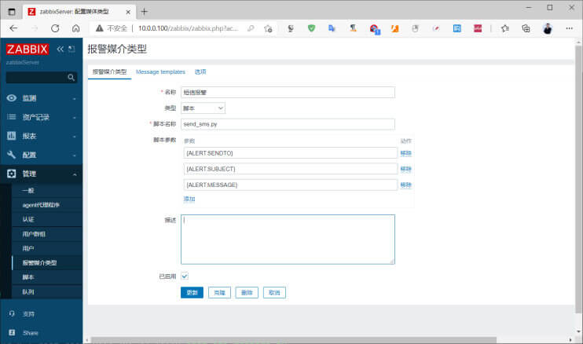</p>
<h4 id="给Zabbix用户添加报警媒介-1"><a href="#给Zabbix用户添加报警媒介-1" class="headerlink" title="给Zabbix用户添加报警媒介"></a>给Zabbix用户添加报警媒介</h4><p><br><br></p>
<h4 id="配置动作"><a href="#配置动作" class="headerlink" title="配置动作"></a>配置动作</h4><p>创建新动作或修改原有动作</p>
<p></p>
<p>配置动作对应的触发条件如下</p>
<p></p>
<p>创建异常操作</p>
<p>示例1：加一个字段</p>
<figure class="highlight http"><table><tr><td class="gutter"><pre><span class="line">1</span><br></pre></td><td class="code"><pre><span class="line">&#123;ITEM.NAME&#125;</span><br></pre></td></tr></table></figure>

<p></p>
<p>示例2：加多个字段</p>
<figure class="highlight http"><table><tr><td class="gutter"><pre><span class="line">1</span><br></pre></td><td class="code"><pre><span class="line">&#123;EVENT.DATE&#125; &#123;EVENT.TIME&#125;;&#123;TRIGGER.NAME&#125;;&#123;EVENT.ID&#125;</span><br></pre></td></tr></table></figure>

<p><br></p>
<p>创建恢复操作</p>
<p></p>
<p>多字段</p>
<figure class="highlight http"><table><tr><td class="gutter"><pre><span class="line">1</span><br></pre></td><td class="code"><pre><span class="line">&#123;EVENT.DATE&#125; &#123;EVENT.TIME&#125;;&#123;TRIGGER.NAME&#125;;&#123;EVENT.ID&#125;</span><br></pre></td></tr></table></figure>

<p><br></p>
<p>总体配置如下</p>
<p></p>
<h4 id="测试短信报警"><a href="#测试短信报警" class="headerlink" title="测试短信报警"></a>测试短信报警</h4><p>停止服务 模拟故障</p>
<figure class="highlight sh"><table><tr><td class="gutter"><pre><span class="line">1</span><br></pre></td><td class="code"><pre><span class="line">[root@centos8 ~]<span class="comment"># systemctl stop nginx</span></span><br></pre></td></tr></table></figure>

<p></p>
<p>查看到手机收到短信</p>
<p></p>
<p>启动服务 模拟恢复故障</p>
<figure class="highlight sh"><table><tr><td class="gutter"><pre><span class="line">1</span><br></pre></td><td class="code"><pre><span class="line">[root@centos8 ~]<span class="comment"># systemctl start nginx</span></span><br></pre></td></tr></table></figure>

<p></p>
<p>查看到手机收到短信</p>
<p></p>
<p>查看zabbix Serve服务器日志，可以看到下面信息</p>
<figure class="highlight sh"><table><tr><td class="gutter"><pre><span class="line">1</span><br><span class="line">2</span><br><span class="line">3</span><br><span class="line">4</span><br><span class="line">5</span><br><span class="line">6</span><br><span class="line">7</span><br><span class="line">8</span><br><span class="line">9</span><br><span class="line">10</span><br><span class="line">11</span><br><span class="line">12</span><br><span class="line">13</span><br><span class="line">14</span><br><span class="line">15</span><br><span class="line">16</span><br><span class="line">17</span><br><span class="line">18</span><br></pre></td><td class="code"><pre><span class="line"><span class="comment">#注意需要修改日志级别才会看到下面日志</span></span><br><span class="line">[root@zabbix-server ~]<span class="comment"># grep ^DebugLevel /etc/zabbix/zabbix_server.conf</span></span><br><span class="line">DebugLevel=4</span><br><span class="line"></span><br><span class="line">[root@zabbix-server ~]<span class="comment"># grep -A 3 sms /var/log/zabbix/zabbix_server.log</span></span><br><span class="line">--</span><br><span class="line">  1818:20210723:120953.133 /usr/lib/zabbix/alertscripts/send_sms.py </span><br><span class="line"><span class="string">&#x27;18600123680&#x27;</span> <span class="string">&#x27;SMS_220620057&#x27;</span> <span class="string">&#x27;Nginx: Number of processes running&#x27;</span> output:</span><br><span class="line">[<span class="string">&#x27;Nginx: Number of processes running&#x27;</span>]</span><br><span class="line">&#123;<span class="string">&quot;RequestId&quot;</span>:<span class="string">&quot;267B0BA1-0C87-4CED-8D45-</span></span><br><span class="line"><span class="string">3FE03B1F6398&quot;</span>,<span class="string">&quot;Message&quot;</span>:<span class="string">&quot;OK&quot;</span>,<span class="string">&quot;BizId&quot;</span>:<span class="string">&quot;481300427013392932^0&quot;</span>,<span class="string">&quot;Code&quot;</span>:<span class="string">&quot;OK&quot;</span>&#125;</span><br><span class="line">--</span><br><span class="line">  1817:20210723:121248.947 In zbx_popen() </span><br><span class="line"><span class="built_in">command</span>:<span class="string">&#x27;/usr/lib/zabbix/alertscripts/send_sms.py &#x27;</span>18600123680<span class="string">&#x27; &#x27;</span>SMS_220620137<span class="string">&#x27; </span></span><br><span class="line"><span class="string">&#x27;</span>Nginx: Number of processes running<span class="string">&#x27;&#x27;</span></span><br><span class="line">  1817:20210723:121248.947 End of zbx_popen():10</span><br><span class="line">  1828:20210723:121248.947 End of zbx_ipc_socket_read():SUCCEED</span><br><span class="line">  1828:20210723:121248.947 End of am_db_flush_results() flushed:0</span><br></pre></td></tr></table></figure>

<h2 id="实现故障自愈功能"><a href="#实现故障自愈功能" class="headerlink" title="实现故障自愈功能"></a>实现故障自愈功能</h2><p>当zabbix服务监控到指定的监控项异常时，可以通过指定的操作使故障自动恢复</p>
<p>以nginx服务为例，当nginx服务停止时，自动重启服务，实现故障自愈功能</p>
<p></p>
<h3 id="Zabbix-Agent-开启远程命令功能"><a href="#Zabbix-Agent-开启远程命令功能" class="headerlink" title="Zabbix Agent 开启远程命令功能"></a>Zabbix Agent 开启远程命令功能</h3><p>配置远程命令的操作类似于发送消息，区别在于一个执行命令，一个发送消息</p>
<p>远程命令可以直接在ZabbixServer, ZabbixProxy和ZabbixAgent上执行。</p>
<p>但在Zabbix agent和Zabbix proxy上，远程命令默认是不开启的，它们可以通过以下方式启用：</p>
<figure class="highlight sh"><table><tr><td class="gutter"><pre><span class="line">1</span><br><span class="line">2</span><br></pre></td><td class="code"><pre><span class="line">在agent配置中添加AllowKey=system.run[*]、UnsafeUserParameters=1参数</span><br><span class="line">在proxy配置中，将enableremotecommands参数设置为1</span><br></pre></td></tr></table></figure>

<p>范例: 在故障自愈的客户端主机开启 Zabbix Agent 远程命令功能</p>
<figure class="highlight sh"><table><tr><td class="gutter"><pre><span class="line">1</span><br><span class="line">2</span><br><span class="line">3</span><br><span class="line">4</span><br><span class="line">5</span><br><span class="line">6</span><br><span class="line">7</span><br><span class="line">8</span><br><span class="line">9</span><br><span class="line">10</span><br><span class="line">11</span><br><span class="line">12</span><br></pre></td><td class="code"><pre><span class="line"><span class="comment">#编译安装路径</span></span><br><span class="line">[root@centos8 ~]<span class="comment"># vim /apps/zabbix_agent/etc/zabbix_agentd.conf</span></span><br><span class="line"></span><br><span class="line"><span class="comment">#包安装路径</span></span><br><span class="line">[root@centos8 ~]<span class="comment"># vim /etc/zabbix/zabbix_agentd.conf </span></span><br><span class="line">AllowKey=system.run[*] <span class="comment">#此项适合zabbix5.0版本以上，用于代替早期版本的中EnableRemoteCommands,agent2默认没有，需手工加入</span></span><br><span class="line"><span class="comment">#EnableRemoteCommands=1 #开启远程执行命令，此指令在zabbix5.0版本以上淘汰</span></span><br><span class="line">AllowRoot=1  <span class="comment">#开启此项，直接使用root进行远程管理，而无须对zabbix用户授权sudo权限</span></span><br><span class="line"></span><br><span class="line">UnsafeUserParameters=1  <span class="comment">#允许远程执行命令的时候使用不安全的参数(特殊字符串，如: \ &#x27; * ? [] &#123;&#125; ~ $ ! &amp; ; ( ) &lt; &gt; 等 )</span></span><br><span class="line"></span><br><span class="line">[root@centos8 ~]<span class="comment"># systemctl restart zabbix-agent.service</span></span><br></pre></td></tr></table></figure>

<h3 id="Zabbix-Agent-对-Zabbix-用户授权管理权限"><a href="#Zabbix-Agent-对-Zabbix-用户授权管理权限" class="headerlink" title="Zabbix Agent 对 Zabbix 用户授权管理权限"></a>Zabbix Agent 对 Zabbix 用户授权管理权限</h3><p>默认zabbix agent是使用zabbix用户启动的，有些特权命令zabbix用户是没有权限执行，会导致定义好的自治愈策略因为权限拒绝为执行失败，所以需要事先对zabbix用户进行授权. </p>
<p>范例: 在 zabbix 用户进行 sudo 授权</p>
<figure class="highlight sh"><table><tr><td class="gutter"><pre><span class="line">1</span><br><span class="line">2</span><br><span class="line">3</span><br><span class="line">4</span><br><span class="line">5</span><br><span class="line">6</span><br><span class="line">7</span><br><span class="line">8</span><br></pre></td><td class="code"><pre><span class="line">[root@centos8 ~]<span class="comment"># vim /etc/sudoers</span></span><br><span class="line">zabbix ALL=(ALL)   NOPASSWD: ALL</span><br><span class="line"></span><br><span class="line"><span class="comment">#检查语法</span></span><br><span class="line">[root@centos8 ~]<span class="comment"># visudo -c  </span></span><br><span class="line"></span><br><span class="line"><span class="comment">#测试是否成功</span></span><br><span class="line">[root@ubuntu2004 ~]<span class="comment"># su -s /bin/bash   zabbix -c &quot;sudo systemctl restart mysql&quot;</span></span><br></pre></td></tr></table></figure>

<h3 id="查看内置的模板及相关触发器"><a href="#查看内置的模板及相关触发器" class="headerlink" title="查看内置的模板及相关触发器"></a>查看内置的模板及相关触发器</h3><p><br></p>
<h3 id="使用内置的版本关联需要监控的主机"><a href="#使用内置的版本关联需要监控的主机" class="headerlink" title="使用内置的版本关联需要监控的主机"></a>使用内置的版本关联需要监控的主机</h3><p>使用内置模板 <code>Template App Nginx by HTTP</code></p>
<p></p>
<h3 id="创建动作-3"><a href="#创建动作-3" class="headerlink" title="创建动作"></a>创建动作</h3><p></p>
<p>添加动作的条件，用于指定动作关联的条件，即只有特定的触发器发生才会执行动作</p>
<p></p>
<p>选中Nginx Service is down 的触发器</p>
<p><br></p>
<p>步骤为1和1表示只执行一次</p>
<p>步骤持续时间表示如果有多个步骤执行时的时间间隔，0表示使用默认步骤持续时间间隔</p>
<p><br></p>
<p>动作创建完成</p>
<p></p>
<h3 id="停止监控主机的服务测试自愈功能"><a href="#停止监控主机的服务测试自愈功能" class="headerlink" title="停止监控主机的服务测试自愈功能"></a>停止监控主机的服务测试自愈功能</h3><p>停止nginx服务</p>
<figure class="highlight sh"><table><tr><td class="gutter"><pre><span class="line">1</span><br></pre></td><td class="code"><pre><span class="line">[root@centos8 ~]<span class="comment"># systemctl stop nginx</span></span><br></pre></td></tr></table></figure>

<p>在监测页面可以看到动作执行</p>
<p><br></p>
<figure class="highlight sh"><table><tr><td class="gutter"><pre><span class="line">1</span><br><span class="line">2</span><br><span class="line">3</span><br><span class="line">4</span><br><span class="line">5</span><br><span class="line">6</span><br><span class="line">7</span><br><span class="line">8</span><br><span class="line">9</span><br></pre></td><td class="code"><pre><span class="line"><span class="comment">#可以看到nginx服务被重新启动</span></span><br><span class="line">[root@centos8 ~]<span class="comment"># systemctl is-active nginx</span></span><br><span class="line">active</span><br><span class="line"></span><br><span class="line"><span class="comment">#可以看到Zabbix Agent日志中提示执行命令，注意需要打开DebugLevel=4 才能看到下面信息</span></span><br><span class="line">[root@centos8 ~]<span class="comment"># cat /var/log/zabbix/zabbix_agentd.log</span></span><br><span class="line">32381:20210713:003002.019 zbx_setproctitle() title:<span class="string">&#x27;listener #2 [processing request]&#x27;</span></span><br><span class="line">32381:20210713:003002.019 Requested [system.run[sudo systemctl restart nginx,nowait]]</span><br><span class="line">32381:20210713:003002.019 Executing <span class="built_in">command</span> <span class="string">&#x27;sudo systemctl restart nginx&#x27;</span></span><br></pre></td></tr></table></figure>

<h2 id="Zabbix-主动与被动模式"><a href="#Zabbix-主动与被动模式" class="headerlink" title="Zabbix 主动与被动模式"></a>Zabbix 主动与被动模式</h2><p>Zabbix 有两种工作模式: 主动和被动模式</p>
<p>无论是模式还是被动模式，都是站在zabbix agent 角度来说的工作模式</p>
<h3 id="Zabbix-的主动和被动模式工作原理"><a href="#Zabbix-的主动和被动模式工作原理" class="headerlink" title="Zabbix 的主动和被动模式工作原理"></a>Zabbix 的主动和被动模式工作原理</h3><p></p>
<p>Zabbix 监控流程中 Agent 收集数据分为主动和被动两种模式</p>
<p><strong>主动模式和被动模式都是相对 zabbix agent而言的</strong></p>
<p>Zabbix默认是被动模式，如果有100个监控项，被动模式需要 Zabbix Server找 Zabbix Agent要100次</p>
<p>主动模式是Zabbix Server给 Zabbix Agent发送一个包括100个监控项的任务清单，Zabbix Agent根据任务清单，采集好100个监控项的值，主动汇报给 Zabbix Server这100个监控项，Zabbix Agent主动模式只需要发送一次数据，大大提高了传输效率。</p>
<ul>
<li>被动模式: Server 向 Agent 请求获取监控项的数据，Agent返回数据。此为默认模式，如果有100个监控项，则需要100次交互</li>
<li>主动模式: Agent 请求 Server 获取主动的监控项列表，并主动将监控项内需要检测的数据提交给server/proxy,如有100个监控项，只需要1次交互即可</li>
</ul>
<p>注意: 两种模式可以在Zabbix Server上同时存在，可以将一部分监控项设为主动，其它设为被动模式</p>
<p><strong>被动监测通信过程如下:</strong></p>
<figure class="highlight http"><table><tr><td class="gutter"><pre><span class="line">1</span><br><span class="line">2</span><br><span class="line">3</span><br><span class="line">4</span><br><span class="line">5</span><br><span class="line">6</span><br></pre></td><td class="code"><pre><span class="line">Server打开一个TCP连接</span><br><span class="line">Server发送请求agent.ping</span><br><span class="line">Agent接收到请求并且响应&lt;HEADER&gt;&lt;DATALEN&gt;</span><br><span class="line">Server处理接收到的数据</span><br><span class="line">关闭TCP连接</span><br><span class="line">被动模式每获取一个监控项都需要打开一个tcp连接，这样当监控项越来越多时，Zabbix Server会打开很多端口，就会出现server端性能瓶颈问题。</span><br></pre></td></tr></table></figure>

<p><strong>主动模式监测通信过程如下:</strong></p>
<figure class="highlight http"><table><tr><td class="gutter"><pre><span class="line">1</span><br><span class="line">2</span><br><span class="line">3</span><br></pre></td><td class="code"><pre><span class="line">zabbix agent 首先向ServerActive配置的IP请求获取active items，获取并提交active items数据值给server或者proxy。</span><br><span class="line">zabbix多久获取一次active items？</span><br><span class="line">它会根据agent的配置文件中的RefreshActiveChecks的频率进行，如果获取失败，那么将会在60秒之后重试。</span><br></pre></td></tr></table></figure>

<p><strong>主动模式的流程分两个部分:</strong></p>
<ul>
<li>获取ACTIVE ITEMS列表</li>
</ul>
<figure class="highlight http"><table><tr><td class="gutter"><pre><span class="line">1</span><br><span class="line">2</span><br><span class="line">3</span><br><span class="line">4</span><br><span class="line">5</span><br><span class="line">6</span><br></pre></td><td class="code"><pre><span class="line">Agent主动打开一个TCP连接（主动检测变成Agent打开）</span><br><span class="line">Agent请求items检测列表</span><br><span class="line">Server返回items列表</span><br><span class="line">Agent 处理响应</span><br><span class="line">关闭TCP连接</span><br><span class="line">Agent开始收集数据</span><br></pre></td></tr></table></figure>

<ul>
<li>主动检测提交数据过程</li>
</ul>
<figure class="highlight http"><table><tr><td class="gutter"><pre><span class="line">1</span><br><span class="line">2</span><br><span class="line">3</span><br><span class="line">4</span><br></pre></td><td class="code"><pre><span class="line">Agent建立TCP连接</span><br><span class="line">Agent批量提交items列表收集的所有监控项数据</span><br><span class="line">Server处理数据，并返回响应状态</span><br><span class="line">关闭TCP连接</span><br></pre></td></tr></table></figure>

<h3 id="被动模式"><a href="#被动模式" class="headerlink" title="被动模式"></a>被动模式</h3><p>被动模式是指 zabbix agent 被动的接受zabbix server(或者Zabbix Proxy)周期性发送过来的数据收集指令</p>
<p>此为默认的工作方式。</p>
<p>在被动模式之下，zabbix server会根据主机关联的模板中的监控项和数据采集间隔时间，周期性的打开随机端口并向zabbix agent服务器的10050端口发起tcp连接，然后发送获取监控项数据的指令，即zabbix server发送什么指令那么zabbix agent就收集什么数据，zabbix server什么时候发送指令，zabbix agent就什么时候采集，zabbix server不发送指令，zabbix agent就一直不响应，所以zabbix agent也不用关心其监控项和数据采集周期间隔时间。</p>
<p>被动模式的优点就是配置简单，安装后即可使用，因此也成为zabbix的默认工作模式，但是被动模式的最大问题就是会加大zabbix server的负载，在数百甚至数千台服务器的环境下会导致zabbix server需要轮训向每个zabbix agent发送数据采集指令，如果zabbix server负载过高还会导致不能及时获取到最 新数据</p>
<p>被动模式因为性能的原因，一台 Zabbix Server 一般只能监控500台以下的主机，更多的主机建议使用主动模式</p>
<p>Zabbix Server 通过Poller进程实现被动模式</p>
<figure class="highlight sh"><table><tr><td class="gutter"><pre><span class="line">1</span><br><span class="line">2</span><br><span class="line">3</span><br><span class="line">4</span><br><span class="line">5</span><br><span class="line">6</span><br><span class="line">7</span><br><span class="line">8</span><br><span class="line">9</span><br><span class="line">10</span><br><span class="line">11</span><br><span class="line">12</span><br><span class="line">13</span><br><span class="line">14</span><br><span class="line">15</span><br></pre></td><td class="code"><pre><span class="line">[root@zabbix-server ~]<span class="comment"># grep StartPollers /etc/zabbix/zabbix_server.conf </span></span><br><span class="line"><span class="comment">#此数量可以适当进行调整</span></span><br><span class="line"><span class="comment"># StartPollers=5</span></span><br><span class="line"></span><br><span class="line">[root@zabbix-server ~]<span class="comment"># ps ax|grep poller</span></span><br><span class="line">    48 ?       I&lt;     0:00 [edac-poller]</span><br><span class="line">  1115 ?       S      0:03 /usr/sbin/zabbix_server: http poller <span class="comment">#1 [got 0 values in 0.000622 sec, idle 5 sec]</span></span><br><span class="line">  1246 ?       S      0:01 /usr/sbin/zabbix_server: proxy poller <span class="comment">#1 [exchanged data with 0 proxies in 0.000036 sec, idle 5 sec]</span></span><br><span class="line">  1249 ?       S      0:19 /usr/sbin/zabbix_server: poller <span class="comment">#1 [got 0 values in 0.000020 sec, idle 1 sec]</span></span><br><span class="line">  1250 ?       S      0:19 /usr/sbin/zabbix_server: poller <span class="comment">#2 [got 1 values in 0.003333 sec, idle 1 sec]</span></span><br><span class="line">  1251 ?       S      0:19 /usr/sbin/zabbix_server: poller <span class="comment">#3 [got 1 values in 0.001767 sec, idle 1 sec]</span></span><br><span class="line">  1252 ?       S      0:19 /usr/sbin/zabbix_server: poller <span class="comment">#4 [got 3 values in 0.002736 sec, idle 1 sec]</span></span><br><span class="line">  1253 ?       S      0:19 /usr/sbin/zabbix_server: poller <span class="comment">#5 [got 0 values in 0.000043 sec, idle 1 sec]</span></span><br><span class="line">  1255 ?       S      0:02 /usr/sbin/zabbix_server: unreachable poller <span class="comment">#1 [got 0 values in 0.000048 sec, idle 5 sec]</span></span><br><span class="line">24305 pts/2   S+     0:00 grep --color=auto poller</span><br></pre></td></tr></table></figure>

<p>范例: 查看被动模式下 Zabbix agent 进程和端口打开情况</p>
<figure class="highlight sh"><table><tr><td class="gutter"><pre><span class="line">1</span><br><span class="line">2</span><br><span class="line">3</span><br><span class="line">4</span><br><span class="line">5</span><br><span class="line">6</span><br><span class="line">7</span><br><span class="line">8</span><br><span class="line">9</span><br><span class="line">10</span><br><span class="line">11</span><br><span class="line">12</span><br><span class="line">13</span><br><span class="line">14</span><br><span class="line">15</span><br><span class="line">16</span><br><span class="line">17</span><br><span class="line">18</span><br><span class="line">19</span><br><span class="line">20</span><br><span class="line">21</span><br><span class="line">22</span><br><span class="line">23</span><br><span class="line">24</span><br><span class="line">25</span><br><span class="line">26</span><br><span class="line">27</span><br><span class="line">28</span><br><span class="line">29</span><br><span class="line">30</span><br><span class="line">31</span><br><span class="line">32</span><br><span class="line">33</span><br><span class="line">34</span><br><span class="line">35</span><br><span class="line">36</span><br><span class="line">37</span><br><span class="line">38</span><br><span class="line">39</span><br><span class="line">40</span><br><span class="line">41</span><br><span class="line">42</span><br><span class="line">43</span><br><span class="line">44</span><br><span class="line">45</span><br><span class="line">46</span><br><span class="line">47</span><br><span class="line">48</span><br></pre></td><td class="code"><pre><span class="line">[root@centos8 ~]<span class="comment"># grep StartAgents /etc/zabbix/zabbix_agentd.conf </span></span><br><span class="line"><span class="comment"># StartAgents=3                 #被动模式的进程数量，默认为3个，可以适当修改</span></span><br><span class="line"></span><br><span class="line">[root@centos8 ~]<span class="comment"># ps ax|grep zabbix</span></span><br><span class="line">   1793 ?       S      0:00 /usr/sbin/zabbix_agentd -c /etc/zabbix/zabbix_agentd.conf</span><br><span class="line">   1794 ?       S      2:44 /usr/sbin/zabbix_agentd: collector [idle 1 sec]</span><br><span class="line">   1795 ?       S      0:12 /usr/sbin/zabbix_agentd: listener <span class="comment">#1 [waiting for connection]</span></span><br><span class="line">   1796 ?       S      0:12 /usr/sbin/zabbix_agentd: listener <span class="comment">#2 [waiting for connection]</span></span><br><span class="line">   1797 ?       S      0:12 /usr/sbin/zabbix_agentd: listener <span class="comment">#3 [waiting for connection]</span></span><br><span class="line">   1798 ?       S      0:10 /usr/sbin/zabbix_agentd: active checks <span class="comment">#1 [idle 1 sec]</span></span><br><span class="line">  21213 pts/1   S+     0:00 vim /etc/zabbix/zabbix_agentd.conf</span><br><span class="line">  24150 pts/0   S+     0:00 grep --color=auto zabbix</span><br><span class="line">  </span><br><span class="line">[root@centos8 ~]<span class="comment"># ss -nta|grep 10050</span></span><br><span class="line">LISTEN      0        128               0.0.0.0:10050            0.0.0.0:*       </span><br><span class="line">TIME-WAIT   0        0              10.0.0.103:10050         10.0.0.100:48786   </span><br><span class="line">TIME-WAIT   0        0              10.0.0.103:10050         10.0.0.100:48790   </span><br><span class="line">TIME-WAIT   0        0              10.0.0.103:10050         10.0.0.100:48866   </span><br><span class="line">TIME-WAIT   0        0              10.0.0.103:10050         10.0.0.100:48884   </span><br><span class="line">TIME-WAIT   0        0              10.0.0.103:10050         10.0.0.100:48860   </span><br><span class="line">TIME-WAIT   0        0              10.0.0.103:10050         10.0.0.100:48848   </span><br><span class="line">TIME-WAIT   0        0              10.0.0.103:10050         10.0.0.100:48846   </span><br><span class="line">TIME-WAIT   0        0              10.0.0.103:10050         10.0.0.100:48826   </span><br><span class="line">TIME-WAIT   0        0              10.0.0.103:10050         10.0.0.100:48774   </span><br><span class="line">TIME-WAIT   0        0              10.0.0.103:10050         10.0.0.100:48808   </span><br><span class="line">TIME-WAIT   0        0              10.0.0.103:10050         10.0.0.100:48836   </span><br><span class="line">TIME-WAIT   0        0              10.0.0.103:10050         10.0.0.100:48824   </span><br><span class="line">TIME-WAIT   0        0              10.0.0.103:10050         10.0.0.100:48772   </span><br><span class="line">TIME-WAIT   0        0              10.0.0.103:10050         10.0.0.100:48840   </span><br><span class="line">TIME-WAIT   0        0              10.0.0.103:10050         10.0.0.100:48820   </span><br><span class="line">TIME-WAIT   0        0              10.0.0.103:10050         10.0.0.100:48886   </span><br><span class="line">........</span><br><span class="line"></span><br><span class="line"><span class="comment">#被动模式下agent主机的日志中会提示以下错误</span></span><br><span class="line">[root@centos8 ~]<span class="comment"># tail /var/log/zabbix/zabbix_agentd.log </span></span><br><span class="line">  1414:20200830:180435.723 TLS support:           YES</span><br><span class="line">  1414:20200830:180435.723 **************************</span><br><span class="line">  1414:20200830:180435.723 using configuration file: </span><br><span class="line">/etc/zabbix/zabbix_agentd.conf</span><br><span class="line">  1414:20200830:180435.724 agent <span class="comment">#0 started [main process]</span></span><br><span class="line">  1415:20200830:180435.724 agent <span class="comment">#1 started [collector]</span></span><br><span class="line">  1416:20200830:180435.725 agent <span class="comment">#2 started [listener #1]</span></span><br><span class="line">  1419:20200830:180435.725 agent <span class="comment">#4 started [listener #3]</span></span><br><span class="line">  1420:20200830:180435.726 agent <span class="comment">#5 started [active checks #1]</span></span><br><span class="line">  1418:20200830:180435.726 agent <span class="comment">#3 started [listener #2]</span></span><br><span class="line">  1420:20200830:180435.727 active check configuration update from </span><br><span class="line">[127.0.0.1:10051] started to fail (cannot connect to [[127.0.0.1]:10051]: [111] </span><br><span class="line">Connection refused)</span><br></pre></td></tr></table></figure>

<h3 id="主动模式"><a href="#主动模式" class="headerlink" title="主动模式"></a>主动模式</h3><h4 id="主动模式介绍"><a href="#主动模式介绍" class="headerlink" title="主动模式介绍"></a>主动模式介绍</h4><p>主动模式是由每个zabbix agent 打开本机的随机端口， 主动向 Zabbix Server (或者Zabbix Proxy)的10051端口发起tcp连接请求</p>
<p>主动模式下必须在zabbix agent配置文件中指定zabbix server的IP或者主机名(必须可以被解析为IP地址)，在连接到zabbix server之前zabbix agent是不知道自己要采集那些数据以及间隔多久采集一次数据的，然后在连接到zabbix server以后获取到自己的监控项和数据采集间隔周期时间，然后再根据监控项采集数据并返回给zabbix server，在主动模式下不再需要zabbix serve向zabbix agent发起连接请求，因此主动模式在一定程度上可减轻zabbix server打开的本地随机端口和进程数，在一定程度就减轻了zabbix server的压力。经过优化后可以轻松监控2000台，甚至5000以上的主机</p>
<p>以下场景下生产推荐使用主动模式</p>
<ul>
<li>Zabbix Server 出现性能瓶颈， 监控队列出现大量延迟的监控项，告警不及时</li>
<li>监控主机超过 500 台以上</li>
</ul>
<h4 id="Zabbix-Agent-实现主动模式"><a href="#Zabbix-Agent-实现主动模式" class="headerlink" title="Zabbix Agent 实现主动模式"></a>Zabbix Agent 实现主动模式</h4><p><strong>注意: 下面使用Agent实现测试， 方便查看并行效果，使用Agent2看不到并行采集效果</strong> </p>
<p>在Zabbix Agent 实现主动模式流程</p>
<ul>
<li>在 Zabbix Agent 配置主机模式相关配置</li>
<li>在 Zabbix Server 创建配置有主动模式监控项的模板</li>
<li>关联主动模板至支持主动模式的 Agent 主机</li>
</ul>
<p><strong>注意: 基于原被动模板克隆生成的主动模式模板，不是所有监控项都能改为主动模式，比如agent.ping 监控项如果改为主动模式， ZBX 提示将无法变绿</strong></p>
<h5 id="在-Zabbix-Agent-配置主动模式"><a href="#在-Zabbix-Agent-配置主动模式" class="headerlink" title="在 Zabbix Agent 配置主动模式"></a>在 Zabbix Agent 配置主动模式</h5><p>Zabbix Server 主动和被动模式无需配置即可支持，还可以支持多个主动和被动模式的Zabbix Agent 同时存在</p>
<p>Zabbix Server 通过 trapper 进程实现主动模式</p>
<figure class="highlight sh"><table><tr><td class="gutter"><pre><span class="line">1</span><br><span class="line">2</span><br><span class="line">3</span><br><span class="line">4</span><br><span class="line">5</span><br><span class="line">6</span><br><span class="line">7</span><br><span class="line">8</span><br><span class="line">9</span><br><span class="line">10</span><br><span class="line">11</span><br></pre></td><td class="code"><pre><span class="line">[root@zabbix-server ~]<span class="comment"># grep StartTrappers /etc/zabbix/zabbix_server.conf </span></span><br><span class="line"><span class="comment">#进程数可以适当调整</span></span><br><span class="line"><span class="comment"># StartTrappers=5</span></span><br><span class="line"></span><br><span class="line">[root@zabbix-server ~]<span class="comment"># ps ax|grep trapper</span></span><br><span class="line">  1256 ?       S      0:00 /usr/sbin/zabbix_server: trapper <span class="comment">#1 [processed data in 0.000558 sec, waiting for connection]</span></span><br><span class="line">  1257 ?       S      0:00 /usr/sbin/zabbix_server: trapper <span class="comment">#2 [processed data in 0.000241 sec, waiting for connection]</span></span><br><span class="line">  1258 ?       S      0:00 /usr/sbin/zabbix_server: trapper <span class="comment">#3 [processed data in 0.000323 sec, waiting for connection]</span></span><br><span class="line">  1259 ?       S      0:00 /usr/sbin/zabbix_server: trapper <span class="comment">#4 [processed data in 0.000312 sec, waiting for connection]</span></span><br><span class="line">  1260 ?       S      0:00 /usr/sbin/zabbix_server: trapper <span class="comment">#5 [processed data in 0.000211 sec, waiting for connection]</span></span><br><span class="line">24371 pts/2   S+     0:00 grep --color=auto trapper</span><br></pre></td></tr></table></figure>

<p>Zabbix Agent 默认是被动模式，需要修改配置才能支持主动模式</p>
<p>Zabbix Agent 的关健配置有下面三项</p>
<figure class="highlight sh"><table><tr><td class="gutter"><pre><span class="line">1</span><br><span class="line">2</span><br><span class="line">3</span><br></pre></td><td class="code"><pre><span class="line">Server=&lt;Zabbix Server&gt;          <span class="comment">#被动模式指向 Zabbix Server的IP或FQDN,默认模式</span></span><br><span class="line">ServerActive=&lt;Zabbix Server&gt;    <span class="comment">#主动模式指向 Zabbix Server的IP或FQDN</span></span><br><span class="line">Hostname=&lt;当前主机IP&gt;            <span class="comment">#当前主机的IP,此项必须和Zabbix Server中设置的主机名称相同</span></span><br></pre></td></tr></table></figure>

<p>范例: Zabbix Agent配置主动模式配置</p>
<figure class="highlight sh"><table><tr><td class="gutter"><pre><span class="line">1</span><br><span class="line">2</span><br><span class="line">3</span><br><span class="line">4</span><br><span class="line">5</span><br><span class="line">6</span><br><span class="line">7</span><br><span class="line">8</span><br><span class="line">9</span><br><span class="line">10</span><br><span class="line">11</span><br><span class="line">12</span><br><span class="line">13</span><br><span class="line">14</span><br><span class="line">15</span><br><span class="line">16</span><br><span class="line">17</span><br><span class="line">18</span><br><span class="line">19</span><br><span class="line">20</span><br><span class="line">21</span><br><span class="line">22</span><br><span class="line">23</span><br><span class="line">24</span><br><span class="line">25</span><br><span class="line">26</span><br><span class="line">27</span><br><span class="line">28</span><br><span class="line">29</span><br><span class="line">30</span><br><span class="line">31</span><br><span class="line">32</span><br><span class="line">33</span><br><span class="line">34</span><br><span class="line">35</span><br><span class="line">36</span><br><span class="line">37</span><br><span class="line">38</span><br><span class="line">39</span><br><span class="line">40</span><br><span class="line">41</span><br><span class="line">42</span><br><span class="line">43</span><br><span class="line">44</span><br><span class="line">45</span><br><span class="line">46</span><br><span class="line">47</span><br><span class="line">48</span><br><span class="line">49</span><br></pre></td><td class="code"><pre><span class="line">[root@centos8 ~]<span class="comment"># grep &#x27;^[^#]&#x27; /etc/zabbix/zabbix_agentd.conf</span></span><br><span class="line">PidFile=/var/run/zabbix/zabbix_agentd.pid</span><br><span class="line">LogFile=/var/log/zabbix/zabbix_agentd.log</span><br><span class="line">LogFileSize=0</span><br><span class="line">Server=10.0.0.100 <span class="comment">#被动模式指向 Zabbix Server的IP或FQDN</span></span><br><span class="line">ServerActive=10.0.0.100         <span class="comment">#主动模式指向 Zabbix Server的IP或FQDN</span></span><br><span class="line">Hostname=10.0.0.104             <span class="comment">#当前主机的IP,此项必须和Zabbix Server中设置的主机名称相同</span></span><br><span class="line">Timeout=30                      <span class="comment">#建议修改</span></span><br><span class="line">Include=/etc/zabbix/zabbix_agentd.d/*.conf</span><br><span class="line"></span><br><span class="line">[root@centos8 ~]<span class="comment"># systemctl restart zabbix-agent.service </span></span><br><span class="line">[root@centos8 ~]<span class="comment"># ss -ntl</span></span><br><span class="line">State               Recv-Q Send-Q     Local Address:Port     Peer Address:Port </span><br><span class="line">LISTEN               0       128              0.0.0.0:22             0.0.0.0:*  </span><br><span class="line">LISTEN               0       100            127.0.0.1:25             0.0.0.0:*</span><br><span class="line">LISTEN               0       128              0.0.0.0:10050          0.0.0.0:* </span><br><span class="line">LISTEN               0       128                 [::]:22                [::]:* </span><br><span class="line">LISTEN               0       100                [::1]:25                [::]:* </span><br><span class="line">LISTEN               0       128                 [::]:10050             [::]:* </span><br><span class="line"></span><br><span class="line"><span class="comment">#Zabbix agent主动模式对应的进程数量只有1个，不能调整</span></span><br><span class="line"><span class="comment">#Zabbix agent被动模式对应的进程数量默认3个，可以调整</span></span><br><span class="line"></span><br><span class="line">[root@centos8 ~]<span class="comment"># ps ax|grep zabbix</span></span><br><span class="line">   1793 ?       S      0:00 /usr/sbin/zabbix_agentd -c /etc/zabbix/zabbix_agentd.conf</span><br><span class="line">   1794 ?       S      2:44 /usr/sbin/zabbix_agentd: collector [idle 1 sec]</span><br><span class="line">   1795 ?       S      0:12 /usr/sbin/zabbix_agentd: listener <span class="comment">#1 [waiting for connection]</span></span><br><span class="line">   1796 ?       S      0:12 /usr/sbin/zabbix_agentd: listener <span class="comment">#2 [waiting for connection]</span></span><br><span class="line">   1797 ?       S      0:12 /usr/sbin/zabbix_agentd: listener <span class="comment">#3 [waiting for connection]</span></span><br><span class="line">   1798 ?       S      0:10 /usr/sbin/zabbix_agentd: active checks <span class="comment">#1 [idle 1 sec]</span></span><br><span class="line">  21213 pts/1   S+     0:00 vim /etc/zabbix/zabbix_agentd.conf</span><br><span class="line">  24150 pts/0   S+     0:00 grep --color=auto zabbix</span><br><span class="line">  </span><br><span class="line"><span class="comment">#观察日志可以看到以下信息</span></span><br><span class="line">[root@centos8 ~]<span class="comment"># tail /var/log/zabbix/zabbix_agentd.log</span></span><br><span class="line">  1414:20200830:183505.571 Got signal [signal:15(SIGTERM),sender_pid:1630,sender_uid:993,reason:0]. Exiting ...</span><br><span class="line">  1414:20200830:183505.572 Zabbix Agent stopped. Zabbix 4.0.24 (revision 95be642769).</span><br><span class="line">  1634:20200830:183505.584 Starting Zabbix Agent [10.0.0.104]. Zabbix 4.0.24 (revision 95be642769).</span><br><span class="line">  1634:20200830:183505.584 **** Enabled features ****</span><br><span class="line">  1634:20200830:183505.584 IPv6 support:         YES</span><br><span class="line">  1634:20200830:183505.584 TLS support:           YES</span><br><span class="line">  1634:20200830:183505.584 **************************</span><br><span class="line">  1634:20200830:183505.584 using configuration file: /etc/zabbix/zabbix_agentd.conf</span><br><span class="line">  1634:20200830:183505.584 agent <span class="comment">#0 started [main process]</span></span><br><span class="line">  1638:20200830:183505.586 agent <span class="comment">#4 started [listener #3]</span></span><br><span class="line">  1637:20200830:183505.588 agent <span class="comment">#3 started [listener #2]</span></span><br><span class="line">  1636:20200830:183505.589 agent <span class="comment">#2 started [listener #1]</span></span><br><span class="line">  1639:20200830:183505.590 agent <span class="comment">#5 started [active checks #1]</span></span><br><span class="line">  1635:20200830:183505.591 agent <span class="comment">#1 started [collector]</span></span><br></pre></td></tr></table></figure>

<h5 id="基于现有模板将包含的监控项修改为主动模式的监控项"><a href="#基于现有模板将包含的监控项修改为主动模式的监控项" class="headerlink" title="基于现有模板将包含的监控项修改为主动模式的监控项"></a>基于现有模板将包含的监控项修改为主动模式的监控项</h5><p>注意: Zabbix 5.0 内置了主动模式的模板 Template OS Linux by Zabbix agent active 无需修改</p>
<p>Zabbix4.0 之前没有主动模式的模板，需要自行修改</p>
<p>以下操作为Zabbix 4.0上实现</p>
<p><br>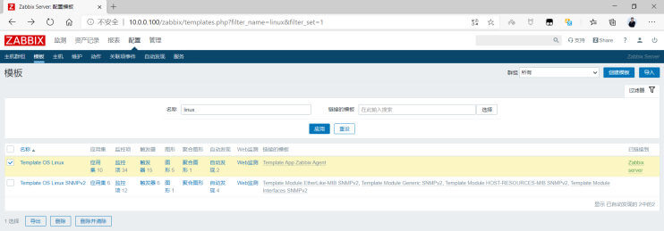</p>
<p>选择全克隆，包括应用集，监控项，触发器，图形，聚合图形等</p>
<p></p>
<p>指定模板的名称</p>
<p></p>
<p>将新生成的模板的监控项修改为主动模式</p>
<p></p>
<p>选中新模板的监控项</p>
<p><strong>提示: 建议将类型为zabbix客户端的监控项进行修改，其它类型如相关项目不建议修改为主动式</strong></p>
<p></p>
<p>批量更新所有监控项</p>
<p>注意:此方式只是修改了大部分监控项为主动式，还有部分监控项，比如agent.ping 仍为被动式，保留即可，否则状态会有颜色异常</p>
<p></p>
<p>修改为主动式</p>
<p></p>
<p>修改更新间隔，此步非必须</p>
<p></p>
<p>确保新生成的模板中的自动发现规则中的类型也是主动式，此步非必须</p>
<p><br><br><br><br></p>
<p>修改每一个监控项</p>
<p><br></p>
<h5 id="将主动模板关联到需要监控的主机"><a href="#将主动模板关联到需要监控的主机" class="headerlink" title="将主动模板关联到需要监控的主机"></a>将主动模板关联到需要监控的主机</h5><p>可以通过克隆当前已添加的主机，实现快速添加需要监控的主机</p>
<p><br><br></p>
<h5 id="验证结果和查看日志"><a href="#验证结果和查看日志" class="headerlink" title="验证结果和查看日志"></a>验证结果和查看日志</h5><p>被动模式的监控项采集时间是串行的</p>
<p></p>
<p>主动模式的监控项采集时间是并行的</p>
<p></p>
<p>注意: 观察和对比两种不同模式下最新数据中每个监控项的最近检查记录显示的时间</p>
<figure class="highlight sh"><table><tr><td class="gutter"><pre><span class="line">1</span><br><span class="line">2</span><br><span class="line">3</span><br><span class="line">4</span><br><span class="line">5</span><br><span class="line">6</span><br><span class="line">7</span><br><span class="line">8</span><br><span class="line">9</span><br><span class="line">10</span><br><span class="line">11</span><br><span class="line">12</span><br><span class="line">13</span><br><span class="line">14</span><br><span class="line">15</span><br><span class="line">16</span><br><span class="line">17</span><br><span class="line">18</span><br><span class="line">19</span><br><span class="line">20</span><br><span class="line">21</span><br><span class="line">22</span><br><span class="line">23</span><br><span class="line">24</span><br><span class="line">25</span><br><span class="line">26</span><br><span class="line">27</span><br><span class="line">28</span><br><span class="line">29</span><br><span class="line">30</span><br><span class="line">31</span><br><span class="line">32</span><br><span class="line">33</span><br><span class="line">34</span><br><span class="line">35</span><br><span class="line">36</span><br><span class="line">37</span><br><span class="line">38</span><br><span class="line">39</span><br><span class="line">40</span><br><span class="line">41</span><br><span class="line">42</span><br><span class="line">43</span><br><span class="line">44</span><br><span class="line">45</span><br><span class="line">46</span><br><span class="line">47</span><br><span class="line">48</span><br><span class="line">49</span><br><span class="line">50</span><br><span class="line">51</span><br></pre></td><td class="code"><pre><span class="line"><span class="comment">#打开日志debug的功能</span></span><br><span class="line">[root@centos8 ~]<span class="comment"># vim /etc/zabbix/zabbix_agentd.conf</span></span><br><span class="line"><span class="comment">### Option: DebugLevel</span></span><br><span class="line"><span class="comment">#   Specifies debug level:</span></span><br><span class="line"><span class="comment">#   0 - basic information about starting and stopping of Zabbix processes</span></span><br><span class="line"><span class="comment">#   1 - critical information</span></span><br><span class="line"><span class="comment">#   2 - error information</span></span><br><span class="line"><span class="comment">#   3 - warnings</span></span><br><span class="line"><span class="comment">#   4 - for debugging (produces lots of information)</span></span><br><span class="line"><span class="comment">#   5 - extended debugging (produces even more information)</span></span><br><span class="line"><span class="comment">#</span></span><br><span class="line"><span class="comment"># Mandatory: no</span></span><br><span class="line"><span class="comment"># Range: 0-5</span></span><br><span class="line"><span class="comment"># Default:</span></span><br><span class="line"><span class="comment"># DebugLevel=3</span></span><br><span class="line">DebugLevel=4   <span class="comment">#修改为4</span></span><br><span class="line"></span><br><span class="line">[root@centos8 ~]<span class="comment"># systemctl daemon-reload </span></span><br><span class="line">[root@centos8 ~]<span class="comment"># systemctl restart zabbix-agent.service</span></span><br><span class="line"></span><br><span class="line"><span class="comment">#观察日志</span></span><br><span class="line">[root@centos8 ~]<span class="comment"># tail /var/log/zabbix/zabbix_agentd.log </span></span><br><span class="line">  1995:20200830:190815.836 In send_buffer() host:<span class="string">&#x27;10.0.0.100&#x27;</span> port:10051 entries:0/100</span><br><span class="line">  1995:20200830:190815.836 End of send_buffer():SUCCEED</span><br><span class="line">  1995:20200830:190815.836 __zbx_zbx_setproctitle() title:<span class="string">&#x27;active checks #1 [idle 1 sec]&#x27;</span></span><br><span class="line">  1991:20200830:190816.756 __zbx_zbx_setproctitle() title:<span class="string">&#x27;collector [processing data]&#x27;</span></span><br><span class="line">  1991:20200830:190816.756 In update_cpustats()</span><br><span class="line">  1991:20200830:190816.756 End of update_cpustats()</span><br><span class="line">  1991:20200830:190816.756 __zbx_zbx_setproctitle() title:<span class="string">&#x27;collector [idle 1 sec]&#x27;</span></span><br><span class="line">  1995:20200830:190816.837 In send_buffer() host:<span class="string">&#x27;10.0.0.100&#x27;</span> port:10051 entries:0/100</span><br><span class="line">  1995:20200830:190816.837 End of send_buffer():SUCCEED</span><br><span class="line">  1995:20200830:190816.837 __zbx_zbx_setproctitle() title:<span class="string">&#x27;active checks #1 [idle 1 sec]&#x27;</span></span><br><span class="line"></span><br><span class="line"><span class="comment">#利用zabbix_get测试zabbix agent是否正常</span></span><br><span class="line">[root@zabbix-server ~]<span class="comment"># /apps/zabbix_server/bin/zabbix_get -s 10.0.0.104 -p 10050 -k &quot;agent.ping&quot;</span></span><br><span class="line">1</span><br><span class="line"></span><br><span class="line"><span class="comment">#同时会观察JSON相关的日志</span></span><br><span class="line">[root@centos8 ~]<span class="comment"># tail /var/log/zabbix/zabbix_agentd.log </span></span><br><span class="line">  1995:20200830:191801.051 In send_buffer() host:<span class="string">&#x27;10.0.0.100&#x27;</span> port:10051 entries:47/100</span><br><span class="line">  1995:20200830:191801.052 JSON before sending [&#123;<span class="string">&quot;request&quot;</span>:<span class="string">&quot;agent data&quot;</span>,<span class="string">&quot;session&quot;</span>:<span class="string">&quot;5c6722cd2fc24994ed6464c14a97caf8&quot;</span>,<span class="string">&quot;data&quot;</span>:</span><br><span class="line">[&#123;<span class="string">&quot;host&quot;</span>:<span class="string">&quot;10.0.0.104&quot;</span>,<span class="string">&quot;key&quot;</span>:<span class="string">&quot;kernel.maxproc&quot;</span>,<span class="string">&quot;value&quot;</span>:<span class="string">&quot;4194304&quot;</span>,<span class="string">&quot;id&quot;</span>:794,<span class="string">&quot;clock&quot;</span>:1598786276,<span class="string">&quot;ns&quot;</span>:9997483&#125;,</span><br><span class="line">&#123;<span class="string">&quot;host&quot;</span>:<span class="string">&quot;10.0.0.104&quot;</span>,<span class="string">&quot;key&quot;</span>:<span class="string">&quot;net.if.in[eth0]&quot;</span>,<span class="string">&quot;value&quot;</span>:<span class="string">&quot;10196965&quot;</span>,<span class="string">&quot;id&quot;</span>:795,<span class="string">&quot;clock&quot;</span>:1598786276,<span class="string">&quot;ns&quot;</span>:10330367&#125;,</span><br><span class="line">&#123;<span class="string">&quot;host&quot;</span>:<span class="string">&quot;10.0.0.104&quot;</span>,<span class="string">&quot;key&quot;</span>:<span class="string">&quot;net.if.out[eth0]&quot;</span>,<span class="string">&quot;value&quot;</span>:<span class="string">&quot;2236200&quot;</span>,<span class="string">&quot;id&quot;</span>:796,<span class="string">&quot;clock&quot;</span>:1598786276,<span class="string">&quot;ns&quot;</span>:10582720&#125;,</span><br><span class="line">&#123;<span class="string">&quot;host&quot;</span>:<span class="string">&quot;10.0.0.104&quot;</span>,<span class="string">&quot;key&quot;</span>:<span class="string">&quot;proc.num[,,run]&quot;</span>,<span class="string">&quot;value&quot;</span>:<span class="string">&quot;1&quot;</span>,<span class="string">&quot;id&quot;</span>:797,<span class="string">&quot;clock&quot;</span>:1598786276,<span class="string">&quot;ns&quot;</span>:13785681&#125;,</span><br><span class="line">&#123;<span class="string">&quot;host&quot;</span>:<span class="string">&quot;10.0.0.104&quot;</span>,<span class="string">&quot;key&quot;</span>:<span class="string">&quot;proc.num[]&quot;</span>,<span class="string">&quot;value&quot;</span>:<span class="string">&quot;151&quot;</span>,<span class="string">&quot;id&quot;</span>:798,<span class="string">&quot;clock&quot;</span>:1598786276,<span class="string">&quot;ns&quot;</span>:15500404&#125;,</span><br><span class="line">&#123;<span class="string">&quot;host&quot;</span>:<span class="string">&quot;10.0.0.104&quot;</span>,<span class="string">&quot;key&quot;</span>:<span class="string">&quot;system.boottime&quot;</span>,<span class="string">&quot;value&quot;</span>:<span class="string">&quot;1598780878&quot;</span>,<span class="string">&quot;id&quot;</span>:799,<span class="string">&quot;clock&quot;</span>:1598786276,<span class="string">&quot;ns&quot;</span>:15819081&#125;,</span><br><span class="line">&#123;<span class="string">&quot;host&quot;</span>:<span class="string">&quot;10.0.0.104&quot;</span>,<span class="string">&quot;key&quot;</span>:<span class="string">&quot;system.cpu.intr&quot;</span>,<span class="string">&quot;value&quot;</span>:<span class="string">&quot;649108&quot;</span>,<span class="string">&quot;id&quot;</span>:800,<span class="string">&quot;clock&quot;</span>:1598786276,<span class="string">&quot;ns&quot;</span>:16113042&#125;,</span><br><span class="line">&#123;<span class="string">&quot;host&quot;</span>:<span class="string">&quot;10.0.0.104&quot;</span>,<span class="string">&quot;key&quot;</span>:<span class="string">&quot;system.cpu.load[percpu,avg15]&quot;</span>,<span class="string">&quot;value&quot;</span>:<span class="string">&quot;0.000000&quot;</span>,<span class="string">&quot;id&quot;</span>:801,<span class="string">&quot;clock&quot;</span>:1598786276,<span class="string">&quot;ns&quot;</span>:16340118&#125;,</span><br><span class="line">&#123;<span class="string">&quot;host&quot;</span>:<span class="string">&quot;10.0.0.104&quot;</span>,<span class="string">&quot;key&quot;</span>:<span class="string">&quot;system.cpu.load[percpu,avg1]&quot;</span>,<span class="string">&quot;value&quot;</span>:<span class="string">&quot;0.000000&quot;</span>,<span class="string">&quot;id&quot;</span>:802,<span class="string">&quot;clock&quot;</span>:1598786276,<span class="string">&quot;ns&quot;</span>:16527639&#125;,</span><br><span class="line">......</span><br></pre></td></tr></table></figure>

<h2 id="监控-JAVA-程序"><a href="#监控-JAVA-程序" class="headerlink" title="监控 JAVA 程序"></a>监控 JAVA 程序</h2><h3 id="Zabbix-Java-Gateway-介绍"><a href="#Zabbix-Java-Gateway-介绍" class="headerlink" title="Zabbix Java Gateway 介绍"></a>Zabbix Java Gateway 介绍</h3><p>Zabbix 不支持直接监控JAVA应用</p>
<p>如果要监控JAVA程序比如Tomcat等，需要使用 Java gateway 做为代理，才能从JAVA应用中获取数据</p>
<p>Zabbix Java gateway 能过监听10052/tcp 端口实现监控JAVA应用</p>
<p></p>
<p><strong>Zabbix 监控JVM流程</strong></p>
<ul>
<li>zabbix-server 通知 zabbix-Java-Gateway需要获取监控主机的哪些监控项</li>
<li>Zabbix-Java-Gateway 通过 JMX 协议请求采集 Java进程数据</li>
<li>Java程序通过 JMX 协议返回数据给 zabbix-Java-Gateway</li>
<li>zabbix-Java-Gateway 最终返回数据给 zabbix-server</li>
<li>zabbix-server 将采集的JAVA 数据存储至数据库，然后进行 Web 展示</li>
</ul>
<p><strong>Zabbix Java Gateway 架构</strong></p>
<p></p>
<h3 id="实战案例-监控-Java-应用-Tomcat-服务"><a href="#实战案例-监控-Java-应用-Tomcat-服务" class="headerlink" title="实战案例: 监控 Java 应用 Tomcat 服务"></a>实战案例: 监控 Java 应用 Tomcat 服务</h3><h4 id="部署-tomcat-服务并开启-JMX-功能"><a href="#部署-tomcat-服务并开启-JMX-功能" class="headerlink" title="部署 tomcat 服务并开启 JMX 功能"></a>部署 tomcat 服务并开启 JMX 功能</h4><h5 id="安装-tomcat"><a href="#安装-tomcat" class="headerlink" title="安装 tomcat"></a>安装 tomcat</h5><p>范例: 安装tomcat脚本</p>
<figure class="highlight sh"><table><tr><td class="gutter"><pre><span class="line">1</span><br><span class="line">2</span><br><span class="line">3</span><br><span class="line">4</span><br><span class="line">5</span><br><span class="line">6</span><br><span class="line">7</span><br><span class="line">8</span><br><span class="line">9</span><br><span class="line">10</span><br><span class="line">11</span><br><span class="line">12</span><br><span class="line">13</span><br><span class="line">14</span><br><span class="line">15</span><br><span class="line">16</span><br><span class="line">17</span><br><span class="line">18</span><br><span class="line">19</span><br><span class="line">20</span><br><span class="line">21</span><br><span class="line">22</span><br><span class="line">23</span><br><span class="line">24</span><br><span class="line">25</span><br><span class="line">26</span><br><span class="line">27</span><br><span class="line">28</span><br><span class="line">29</span><br><span class="line">30</span><br><span class="line">31</span><br><span class="line">32</span><br><span class="line">33</span><br><span class="line">34</span><br><span class="line">35</span><br><span class="line">36</span><br><span class="line">37</span><br><span class="line">38</span><br><span class="line">39</span><br><span class="line">40</span><br><span class="line">41</span><br><span class="line">42</span><br><span class="line">43</span><br><span class="line">44</span><br><span class="line">45</span><br><span class="line">46</span><br><span class="line">47</span><br><span class="line">48</span><br><span class="line">49</span><br><span class="line">50</span><br><span class="line">51</span><br><span class="line">52</span><br><span class="line">53</span><br><span class="line">54</span><br><span class="line">55</span><br><span class="line">56</span><br><span class="line">57</span><br><span class="line">58</span><br><span class="line">59</span><br><span class="line">60</span><br><span class="line">61</span><br><span class="line">62</span><br><span class="line">63</span><br><span class="line">64</span><br><span class="line">65</span><br><span class="line">66</span><br><span class="line">67</span><br><span class="line">68</span><br><span class="line">69</span><br><span class="line">70</span><br><span class="line">71</span><br><span class="line">72</span><br><span class="line">73</span><br><span class="line">74</span><br><span class="line">75</span><br><span class="line">76</span><br><span class="line">77</span><br><span class="line">78</span><br><span class="line">79</span><br><span class="line">80</span><br><span class="line">81</span><br><span class="line">82</span><br><span class="line">83</span><br><span class="line">84</span><br><span class="line">85</span><br><span class="line">86</span><br><span class="line">87</span><br><span class="line">88</span><br><span class="line">89</span><br><span class="line">90</span><br><span class="line">91</span><br><span class="line">92</span><br><span class="line">93</span><br><span class="line">94</span><br><span class="line">95</span><br><span class="line">96</span><br><span class="line">97</span><br><span class="line">98</span><br><span class="line">99</span><br><span class="line">100</span><br><span class="line">101</span><br><span class="line">102</span><br><span class="line">103</span><br><span class="line">104</span><br><span class="line">105</span><br><span class="line">106</span><br><span class="line">107</span><br><span class="line">108</span><br></pre></td><td class="code"><pre><span class="line">[root@tomcat ~]<span class="comment"># cat install_tomcat.sh </span></span><br><span class="line"><span class="comment">#!/bin/bash</span></span><br><span class="line"></span><br><span class="line">DIR=`<span class="built_in">pwd</span>`</span><br><span class="line">JDK_FILE=<span class="string">&quot;jdk-8u291-linux-x64.tar.gz&quot;</span></span><br><span class="line">TOMCAT_FILE=<span class="string">&quot;apache-tomcat-9.0.48.tar.gz&quot;</span></span><br><span class="line">JDK_DIR=<span class="string">&quot;/usr/local&quot;</span></span><br><span class="line">TOMCAT_DIR=<span class="string">&quot;/usr/local&quot;</span></span><br><span class="line"><span class="function"><span class="title">color</span></span> () &#123;</span><br><span class="line">    RES_COL=60</span><br><span class="line">    MOVE_TO_COL=<span class="string">&quot;echo -en \\033[<span class="variable">$&#123;RES_COL&#125;</span>G&quot;</span></span><br><span class="line">    SETCOLOR_SUCCESS=<span class="string">&quot;echo -en \\033[1;32m&quot;</span></span><br><span class="line">    SETCOLOR_FAILURE=<span class="string">&quot;echo -en \\033[1;31m&quot;</span></span><br><span class="line">    SETCOLOR_WARNING=<span class="string">&quot;echo -en \\033[1;33m&quot;</span></span><br><span class="line">    SETCOLOR_NORMAL=<span class="string">&quot;echo -en \E[0m&quot;</span></span><br><span class="line">    <span class="built_in">echo</span> -n <span class="string">&quot;<span class="variable">$2</span>&quot;</span> &amp;&amp; <span class="variable">$MOVE_TO_COL</span></span><br><span class="line">    <span class="built_in">echo</span> -n <span class="string">&quot;[&quot;</span></span><br><span class="line">    <span class="keyword">if</span> [ <span class="variable">$1</span> = <span class="string">&quot;success&quot;</span> -o <span class="variable">$1</span> = <span class="string">&quot;0&quot;</span> ] ;<span class="keyword">then</span></span><br><span class="line">        <span class="variable">$&#123;SETCOLOR_SUCCESS&#125;</span></span><br><span class="line">        <span class="built_in">echo</span> -n $<span class="string">&quot; OK &quot;</span>    </span><br><span class="line">    <span class="keyword">elif</span> [ <span class="variable">$1</span> = <span class="string">&quot;failure&quot;</span> -o <span class="variable">$1</span> = <span class="string">&quot;1&quot;</span> ] ;<span class="keyword">then</span></span><br><span class="line">        <span class="variable">$&#123;SETCOLOR_FAILURE&#125;</span></span><br><span class="line">        <span class="built_in">echo</span> -n $<span class="string">&quot;FAILED&quot;</span></span><br><span class="line">    <span class="keyword">else</span></span><br><span class="line">        <span class="variable">$&#123;SETCOLOR_WARNING&#125;</span></span><br><span class="line">        <span class="built_in">echo</span> -n $<span class="string">&quot;WARNING&quot;</span></span><br><span class="line">    <span class="keyword">fi</span></span><br><span class="line">    <span class="variable">$&#123;SETCOLOR_NORMAL&#125;</span></span><br><span class="line">    <span class="built_in">echo</span> -n <span class="string">&quot;]&quot;</span></span><br><span class="line">    <span class="built_in">echo</span>                                                                                              </span><br><span class="line">&#125;</span><br><span class="line"><span class="function"><span class="title">install_jdk</span></span>()&#123;</span><br><span class="line"><span class="keyword">if</span> ! [  -f <span class="string">&quot;<span class="variable">$DIR</span>/<span class="variable">$JDK_FILE</span>&quot;</span> ];<span class="keyword">then</span></span><br><span class="line">    color 1 <span class="string">&quot;<span class="variable">$JDK_FILE</span> 文件不存在&quot;</span></span><br><span class="line">    <span class="built_in">exit</span>; </span><br><span class="line"><span class="keyword">elif</span> [ -d <span class="variable">$JDK_DIR</span>/jdk ];<span class="keyword">then</span></span><br><span class="line">    color 1  <span class="string">&quot;JDK 已经安装&quot;</span></span><br><span class="line">    <span class="built_in">exit</span></span><br><span class="line"><span class="keyword">else</span></span><br><span class="line">    [ -d <span class="string">&quot;<span class="variable">$JDK_DIR</span>&quot;</span> ] || <span class="built_in">mkdir</span> -pv <span class="variable">$JDK_DIR</span></span><br><span class="line"><span class="keyword">fi</span></span><br><span class="line"></span><br><span class="line">tar xvf <span class="variable">$DIR</span>/<span class="variable">$JDK_FILE</span>  -C <span class="variable">$JDK_DIR</span></span><br><span class="line"><span class="built_in">cd</span>  <span class="variable">$JDK_DIR</span> &amp;&amp; <span class="built_in">ln</span> -s jdk1.8.* jdk </span><br><span class="line"><span class="built_in">cat</span> &gt; /etc/profile.d/jdk.sh &lt;&lt;<span class="string">EOF</span></span><br><span class="line"><span class="string">export JAVA_HOME=$JDK_DIR/jdk</span></span><br><span class="line"><span class="string">export JRE_HOME=\$JAVA_HOME/jre</span></span><br><span class="line"><span class="string">export CLASSPATH=\$JAVA_HOME/lib/:\$JRE_HOME/lib/</span></span><br><span class="line"><span class="string">export PATH=\$PATH:\$JAVA_HOME/bin</span></span><br><span class="line"><span class="string">EOF</span></span><br><span class="line"></span><br><span class="line">. /etc/profile.d/jdk.sh</span><br><span class="line">java -version &amp;&amp; color 0 <span class="string">&quot;JDK 安装完成&quot;</span> || &#123; color 1  <span class="string">&quot;JDK 安装失败&quot;</span> ; <span class="built_in">exit</span>; &#125;</span><br><span class="line">&#125;</span><br><span class="line"></span><br><span class="line"><span class="function"><span class="title">install_tomcat</span></span>()&#123;</span><br><span class="line"><span class="keyword">if</span> ! [ -f <span class="string">&quot;<span class="variable">$DIR</span>/<span class="variable">$TOMCAT_FILE</span>&quot;</span> ];<span class="keyword">then</span></span><br><span class="line">    color 1 <span class="string">&quot;<span class="variable">$TOMCAT_FILE</span> 文件不存在&quot;</span></span><br><span class="line">    <span class="built_in">exit</span>; </span><br><span class="line"><span class="keyword">elif</span> [ -d <span class="variable">$TOMCAT_DIR</span>/tomcat ];<span class="keyword">then</span></span><br><span class="line">    color 1 <span class="string">&quot;TOMCAT 已经安装&quot;</span></span><br><span class="line">    <span class="built_in">exit</span></span><br><span class="line"><span class="keyword">else</span></span><br><span class="line">    [ -d <span class="string">&quot;<span class="variable">$TOMCAT_DIR</span>&quot;</span> ] || <span class="built_in">mkdir</span> -pv <span class="variable">$TOMCAT_DIR</span></span><br><span class="line"><span class="keyword">fi</span></span><br><span class="line">tar xf <span class="variable">$DIR</span>/<span class="variable">$TOMCAT_FILE</span> -C <span class="variable">$TOMCAT_DIR</span></span><br><span class="line"><span class="built_in">cd</span>  <span class="variable">$TOMCAT_DIR</span> &amp;&amp; <span class="built_in">ln</span> -s apache-tomcat-*/ tomcat</span><br><span class="line"><span class="built_in">echo</span> <span class="string">&quot;PATH=<span class="variable">$TOMCAT_DIR</span>/tomcat/bin:&quot;</span><span class="string">&#x27;$PATH&#x27;</span> &gt;  etc/profile.d/tomcat.sh</span><br><span class="line"><span class="built_in">id</span> tomcat &amp;&gt; /dev/null || useradd -r -s /sbin/nologin tomcat</span><br><span class="line"><span class="built_in">cat</span> &gt; <span class="variable">$TOMCAT_DIR</span>/tomcat/conf/tomcat.conf &lt;&lt;<span class="string">EOF</span></span><br><span class="line"><span class="string">JAVA_HOME=$JDK_DIR/jdk</span></span><br><span class="line"><span class="string">EOF</span></span><br><span class="line"><span class="built_in">chown</span> -R tomcat.tomcat <span class="variable">$TOMCAT_DIR</span>/tomcat/</span><br><span class="line"><span class="built_in">cat</span> &gt; /lib/systemd/system/tomcat.service &lt;&lt;<span class="string">EOF</span></span><br><span class="line"><span class="string">[Unit]</span></span><br><span class="line"><span class="string">Description=Tomcat</span></span><br><span class="line"><span class="string">#After=syslog.target network.target remote-fs.target nss-lookup.target</span></span><br><span class="line"><span class="string">After=syslog.target network.target </span></span><br><span class="line"><span class="string">[Service]</span></span><br><span class="line"><span class="string">Type=forking</span></span><br><span class="line"><span class="string">EnvironmentFile=$TOMCAT_DIR/tomcat/conf/tomcat.conf</span></span><br><span class="line"><span class="string">ExecStart=$TOMCAT_DIR/tomcat/bin/startup.sh</span></span><br><span class="line"><span class="string">ExecStop=$TOMCAT_DIR/tomcat/bin/shutdown.sh</span></span><br><span class="line"><span class="string">RestartSec=3</span></span><br><span class="line"><span class="string">PrivateTmp=true</span></span><br><span class="line"><span class="string">User=tomcat</span></span><br><span class="line"><span class="string">Group=tomcat</span></span><br><span class="line"><span class="string">[Install]</span></span><br><span class="line"><span class="string">WantedBy=multi-user.target</span></span><br><span class="line"><span class="string">EOF</span></span><br><span class="line"></span><br><span class="line">systemctl daemon-reload</span><br><span class="line">systemctl <span class="built_in">enable</span> --now tomcat.service &amp;&gt; /dev/null</span><br><span class="line">systemctl is-active tomcat.service &amp;&gt; /dev/null &amp;&amp; color 0 <span class="string">&quot;TOMCAT 安装完成&quot;</span> || &#123; color 1 <span class="string">&quot;TOMCAT 安装失败&quot;</span> ; <span class="built_in">exit</span>; &#125;</span><br><span class="line">&#125;</span><br><span class="line"></span><br><span class="line">install_jdk </span><br><span class="line">install_tomcat</span><br><span class="line"></span><br><span class="line">[root@tomcat ~]<span class="comment"># bash install_tomcat.sh </span></span><br><span class="line">[root@tomcat ~]<span class="comment"># systemctl status tomcat</span></span><br><span class="line">● tomcat.service - Tomcat</span><br><span class="line">   Loaded: loaded (/usr/lib/systemd/system/tomcat.service; enabled; vendor preset: disabled)</span><br><span class="line">   Active: active (running) since Thu 2021-05-27 17:43:42 CST; 48s ago</span><br><span class="line">   </span><br><span class="line">[root@tomcat ~]<span class="comment"># ss -ntl</span></span><br><span class="line">LISTEN              0         1           ::ffff:127.0.0.1]:8005             *:*       </span><br><span class="line">LISTEN              0         100                         *:8080             *:*</span><br></pre></td></tr></table></figure>

<h5 id="开启-JMX-监控"><a href="#开启-JMX-监控" class="headerlink" title="开启 JMX 监控"></a>开启 JMX 监控</h5><p>JMX（Java Management Extensions，即Java管理扩展）是一个为应用程序、设备、系统等植入管理功能的框架。JMX可以跨越一系列异构操作系统平台、系统体系结构和网络传输协议，灵活的开发无缝集成的系统、网络和服务管理应用。</p>
<p>JMX在Java编程语言中定义了应用程序以及网络管理和监控的体系结构、设计模式、应用程序接口以及服务。通常使用JMX来监控系统的运行状态或管理系统的某些方面，比如清空缓存、重新加载配置文件等</p>
<p>tomcat 开启远程 JMX 环境配置</p>
<figure class="highlight sh"><table><tr><td class="gutter"><pre><span class="line">1</span><br><span class="line">2</span><br><span class="line">3</span><br><span class="line">4</span><br><span class="line">5</span><br><span class="line">6</span><br><span class="line">7</span><br></pre></td><td class="code"><pre><span class="line">vim /usr/local/tomcat/bin/catalina.sh</span><br><span class="line">CATALINA_OPTS=<span class="string">&quot;<span class="variable">$CATALINA__OPTS</span></span></span><br><span class="line"><span class="string">-Dcom.sun.management.jmxremote                     #启用远程监控JMX </span></span><br><span class="line"><span class="string">-Djava.rmi.server.hostname=&lt;JAVA主机IP&gt;             #是tomcat主机的IP地址，不是zabbix服务器地址</span></span><br><span class="line"><span class="string">-Dcom.sun.management.jmxremote.port=XXXXX          #默认启动的JMX端口号</span></span><br><span class="line"><span class="string">-Dcom.sun.management.jmxremote.authenticate=false  #不使用用户名密码</span></span><br><span class="line"><span class="string">-Dcom.sun.management.jmxremote.ssl=false&quot;</span>          <span class="comment">#不使用ssl认证</span></span><br></pre></td></tr></table></figure>

<p>范例: Tomcat 开启 JMX 功能</p>
<figure class="highlight sh"><table><tr><td class="gutter"><pre><span class="line">1</span><br><span class="line">2</span><br><span class="line">3</span><br><span class="line">4</span><br><span class="line">5</span><br><span class="line">6</span><br><span class="line">7</span><br><span class="line">8</span><br><span class="line">9</span><br><span class="line">10</span><br><span class="line">11</span><br><span class="line">12</span><br><span class="line">13</span><br><span class="line">14</span><br><span class="line">15</span><br><span class="line">16</span><br><span class="line">17</span><br><span class="line">18</span><br><span class="line">19</span><br><span class="line">20</span><br><span class="line">21</span><br><span class="line">22</span><br><span class="line">23</span><br><span class="line">24</span><br></pre></td><td class="code"><pre><span class="line">[root@tomcat ~]<span class="comment"># vim /usr/local/tomcat/bin/catalina.sh</span></span><br><span class="line">.......</span><br><span class="line"><span class="comment"># -----------------------------------------------------------------------------</span></span><br><span class="line"><span class="comment">#添加下一行</span></span><br><span class="line">CATALINA_OPTS=<span class="string">&quot;<span class="variable">$CATALINA__OPTS</span> -Dcom.sun.management.jmxremote -</span></span><br><span class="line"><span class="string">Dcom.sun.management.jmxremote.port=12345 -</span></span><br><span class="line"><span class="string">Dcom.sun.management.jmxremote.authenticate=false -</span></span><br><span class="line"><span class="string">Dcom.sun.management.jmxremote.ssl=false -Djava.rmi.server.hostname=10.0.0.106&quot;</span></span><br><span class="line"><span class="comment"># OS specific support. $var _must_ be set to either true or false.</span></span><br><span class="line">.......</span><br><span class="line"></span><br><span class="line"><span class="comment">#查看端口12345是否打开</span></span><br><span class="line">[root@tomcat ~]<span class="comment"># systemctl restart tomcat</span></span><br><span class="line">[root@tomcat ~]<span class="comment"># ss -ntl</span></span><br><span class="line">State               Recv-Q             Send-Q       Local Address:Port   Peer Address:Port</span><br><span class="line">LISTEN              0                   128               0.0.0.0:22          0.0.0.0:* </span><br><span class="line">LISTEN              0                   100             127.0.0.1:25          0.0.0.0:* </span><br><span class="line">LISTEN              0                   128                  [::]:22             [::]:*</span><br><span class="line">LISTEN              0                   50                      *:12345             *:* </span><br><span class="line">LISTEN              0                   100                 [::1]:25             [::]:* </span><br><span class="line">LISTEN              0                   50                      *:38563             *:* </span><br><span class="line">LISTEN              0                   1      [::ffff:127.0.0.1]:8005              *:* </span><br><span class="line">LISTEN              0                   50                      *:40613             *:* </span><br><span class="line">LISTEN              0                   100                     *:8080              *:* </span><br></pre></td></tr></table></figure>

<h5 id="测试通过java工具-jconsole-进行-JMX-监控"><a href="#测试通过java工具-jconsole-进行-JMX-监控" class="headerlink" title="测试通过java工具 jconsole 进行 JMX 监控"></a>测试通过java工具 jconsole 进行 JMX 监控</h5><p><br><br><br></p>
<h5 id="使用-java-客户端获取-JMX-信息"><a href="#使用-java-客户端获取-JMX-信息" class="headerlink" title="使用 java 客户端获取 JMX 信息"></a>使用 java 客户端获取 JMX 信息</h5><p>cmdline-jmxclient-0.10.3.jar 是一个开源jar包，在zabbix 中常用于测试的一个工具，可以用来测试 jmx  是否配置正确。在监控方面后还可以对Tomcat各种属性进行监控。下面使用java客户端cmdline-jmxclient进行测试</p>
<p>下载链接</p>
<figure class="highlight http"><table><tr><td class="gutter"><pre><span class="line">1</span><br></pre></td><td class="code"><pre><span class="line">https://github.com/qiueer/zabbix/blob/master/Tomcat/cmdline-jmxclient-0.10.3.jar</span><br></pre></td></tr></table></figure>

<p>范例: 测试能否获取到java当前线程数和最大线程数</p>
<figure class="highlight sh"><table><tr><td class="gutter"><pre><span class="line">1</span><br><span class="line">2</span><br><span class="line">3</span><br><span class="line">4</span><br><span class="line">5</span><br><span class="line">6</span><br><span class="line">7</span><br><span class="line">8</span><br><span class="line">9</span><br><span class="line">10</span><br><span class="line">11</span><br><span class="line">12</span><br><span class="line">13</span><br><span class="line">14</span><br></pre></td><td class="code"><pre><span class="line"><span class="comment">#先下载cmdline-jmxclient-0.10.3.jar文件</span></span><br><span class="line">[root@zabbix-server ~]<span class="comment"># ll cmdline-jmxclient-0.10.3.jar </span></span><br><span class="line">-rw-r--r-- 1 root root 20124 Aug 23 22:41 cmdline-jmxclient-0.10.3.jar</span><br><span class="line"></span><br><span class="line"><span class="comment">#测试能否获取到java当前线程数和最大线程数:</span></span><br><span class="line">[root@zabbix-server ~]<span class="comment"># yum -y install java</span></span><br><span class="line"><span class="comment">#Ubuntu安装下面包</span></span><br><span class="line">[root@zabbix-server ~]<span class="comment"># apt install openjdk-8-jdk -y</span></span><br><span class="line">[root@zabbix-server ~]<span class="comment"># java -jar cmdline-jmxclient-0.10.3.jar - 10.0.0.106:12345 &#x27;Catalina:name=&quot;http-nio-8080&quot;,type=ThreadPool&#x27; currentThreadCount</span></span><br><span class="line">08/30/2020 13:27:07 +0800 org.archive.jmx.Client currentThreadCount: 10</span><br><span class="line"></span><br><span class="line"><span class="comment">#测试能否获取到java最大线程数:</span></span><br><span class="line">[root@zabbix-server ~]<span class="comment"># java -jar cmdline-jmxclient-0.10.3.jar - 10.0.0.106:12345 &#x27;Catalina:name=&quot;http-nio-8080&quot;,type=ThreadPool&#x27; maxThreads</span></span><br><span class="line">08/30/2020 13:27:33 +0800 org.archive.jmx.Client maxThreads: 200</span><br></pre></td></tr></table></figure>

<h4 id="部署-Java-gateway-服务器"><a href="#部署-Java-gateway-服务器" class="headerlink" title="部署 Java gateway 服务器"></a>部署 Java gateway 服务器</h4><p>Java gateway 是一个独立于zabbix server和 zabbix agent的组件，默认使用端口10052/tcp, 所以java gateway可以是单独的一台服务器，但是也可以和zabbix server或者zabbix agent 共用一台服务器</p>
<p>Java gatway 可以用两种方法安装</p>
<ul>
<li>包安装</li>
<li>编译安装</li>
</ul>
<p><strong>注意： Java gateway和Zabbix Server都无需安装 JDK</strong></p>
<h5 id="包安装-Java-gateway"><a href="#包安装-Java-gateway" class="headerlink" title="包安装 Java gateway"></a>包安装 Java gateway</h5><p>范例: Ubuntu 安装</p>
<figure class="highlight sh"><table><tr><td class="gutter"><pre><span class="line">1</span><br><span class="line">2</span><br><span class="line">3</span><br><span class="line">4</span><br><span class="line">5</span><br><span class="line">6</span><br><span class="line">7</span><br><span class="line">8</span><br><span class="line">9</span><br><span class="line">10</span><br><span class="line">11</span><br><span class="line">12</span><br><span class="line">13</span><br><span class="line">14</span><br><span class="line">15</span><br><span class="line">16</span><br><span class="line">17</span><br><span class="line">18</span><br><span class="line">19</span><br><span class="line">20</span><br><span class="line">21</span><br><span class="line">22</span><br><span class="line">23</span><br><span class="line">24</span><br><span class="line">25</span><br><span class="line">26</span><br><span class="line">27</span><br><span class="line">28</span><br><span class="line">29</span><br><span class="line">30</span><br><span class="line">31</span><br><span class="line">32</span><br><span class="line">33</span><br><span class="line">34</span><br></pre></td><td class="code"><pre><span class="line">[root@ubuntu1804 ~]<span class="comment"># wget https://repo.zabbix.com/zabbix/5.0/ubuntu/pool/main/z/zabbix-release/zabbix-release_5.0-1+bionic_all.deb</span></span><br><span class="line">[root@ubuntu1804 ~]<span class="comment"># dpkg -i zabbix-release_5.0-1+bionic_all.deb</span></span><br><span class="line">[root@ubuntu1804 ~]<span class="comment"># sed -i &#x27;s#http://repo.zabbix.com#https://mirrors.aliyun.com/zabbix#&#x27; /etc/apt/sources.list.d/zabbix.list</span></span><br><span class="line">[root@ubuntu1804 ~]<span class="comment"># apt update</span></span><br><span class="line"></span><br><span class="line"><span class="comment">#安装依赖JDK会自动安装</span></span><br><span class="line">[root@ubuntu1804 ~]<span class="comment"># apt -y install zabbix-java-gateway</span></span><br><span class="line"></span><br><span class="line"><span class="comment">#可以开启自身的JMX功能实现自身的监控(可选)</span></span><br><span class="line">[root@ubuntu1804 ~]<span class="comment"># vim /etc/zabbix/zabbix_java_gateway.conf</span></span><br><span class="line"><span class="comment"># uncomment to enable remote monitoring of the standard JMX objects on the Zabbix Java Gateway itself</span></span><br><span class="line">JAVA_OPTIONS=<span class="string">&quot;<span class="variable">$JAVA_OPTIONS</span> -Dcom.sun.management.jmxremote -Dcom.sun.management.jmxremote.port=12345  -Dcom.sun.management.jmxremote.authenticate=false -Dcom.sun.management.jmxremote.ssl=false  -Dcom.sun.management.jmxremote.registry.ssl=false&quot;</span> </span><br><span class="line">    </span><br><span class="line"><span class="comment">#Ubuntu安装后会自动启动服务并打开监听10052/tcp端口</span></span><br><span class="line">[root@ubuntu1804 ~]<span class="comment"># ss -ntl</span></span><br><span class="line">State     Recv-Q Send-Q Local Address:Port Peer Address:Port               </span><br><span class="line">LISTEN    0       128     127.0.0.53%lo:53         0.0.0.0:*                  </span><br><span class="line">LISTEN    0       128           0.0.0.0:22         0.0.0.0:*                  </span><br><span class="line">LISTEN    0       128         127.0.0.1:6010       0.0.0.0:*                  </span><br><span class="line">LISTEN    0       128             [::]:22           [::]:*</span><br><span class="line">LISTEN    0       50                 *:12345           *:* </span><br><span class="line">LISTEN    0       128             [::1]:6010         [::]:*                  </span><br><span class="line">LISTEN    0       50                 *:10052           *:*</span><br><span class="line"></span><br><span class="line">[root@ubuntu1804 ~]<span class="comment"># ps aux|grep java</span></span><br><span class="line">zabbix      791  1.8  4.4 3131380 89620 ?       Sl   18:59   0:03 java -server -</span><br><span class="line">Dcom.sun.management.jmxremote -Dcom.sun.management.jmxremote.port=12345 -</span><br><span class="line">Dcom.sun.management.jmxremote.authenticate=<span class="literal">false</span> -</span><br><span class="line">Dcom.sun.management.jmxremote.ssl=<span class="literal">false</span> -</span><br><span class="line">Dcom.sun.management.jmxremote.registry.ssl=<span class="literal">false</span> -</span><br><span class="line">Dlogback.configurationFile=/etc/zabbix/zabbix_java_gateway_logback.xml -</span><br><span class="line">classpath lib:lib/android-json-4.3_r3.1.jar:lib/logback-classic-1.2.3.jar:lib/logback-core-1.2.3.jar:lib/slf4j-api-1.7.30.jar:bin/zabbix-java-gateway-5.0.14.jar -Dzabbix.pidFile=/var/run/zabbix/zabbix_java_gateway.pid -</span><br><span class="line">Dsun.rmi.transport.tcp.responseTimeout=3000 com.zabbix.gateway.JavaGateway</span><br><span class="line">root       1235  0.0  0.0  14436  1120 pts/0   S+   19:02   0:00 grep --color=auto java</span><br></pre></td></tr></table></figure>

<p>范例: CentOS安装</p>
<figure class="highlight sh"><table><tr><td class="gutter"><pre><span class="line">1</span><br><span class="line">2</span><br><span class="line">3</span><br><span class="line">4</span><br><span class="line">5</span><br><span class="line">6</span><br><span class="line">7</span><br><span class="line">8</span><br><span class="line">9</span><br><span class="line">10</span><br><span class="line">11</span><br><span class="line">12</span><br><span class="line">13</span><br><span class="line">14</span><br><span class="line">15</span><br><span class="line">16</span><br><span class="line">17</span><br><span class="line">18</span><br><span class="line">19</span><br><span class="line">20</span><br><span class="line">21</span><br><span class="line">22</span><br><span class="line">23</span><br><span class="line">24</span><br><span class="line">25</span><br><span class="line">26</span><br><span class="line">27</span><br><span class="line">28</span><br><span class="line">29</span><br><span class="line">30</span><br><span class="line">31</span><br><span class="line">32</span><br><span class="line">33</span><br><span class="line">34</span><br><span class="line">35</span><br><span class="line">36</span><br><span class="line">37</span><br><span class="line">38</span><br><span class="line">39</span><br><span class="line">40</span><br><span class="line">41</span><br><span class="line">42</span><br><span class="line">43</span><br><span class="line">44</span><br><span class="line">45</span><br><span class="line">46</span><br><span class="line">47</span><br><span class="line">48</span><br><span class="line">49</span><br><span class="line">50</span><br><span class="line">51</span><br></pre></td><td class="code"><pre><span class="line">[root@centos8 ~]<span class="comment"># rpm -Uvh https://repo.zabbix.com/zabbix/5.0/rhel/8/x86_64/zabbix-release-5.0-1.el8.noarch.rpm</span></span><br><span class="line">[root@centos8 ~]<span class="comment"># rpm -Uvh https://repo.zabbix.com/zabbix/4.0/rhel/8/x86_64/zabbix-release-4.0-2.el8.noarch.rpm</span></span><br><span class="line"></span><br><span class="line"><span class="comment">#修改为阿里云源</span></span><br><span class="line">[root@centos8 ~]<span class="comment"># vim /etc/yum.repos.d/zabbix.repo</span></span><br><span class="line">[zabbix]</span><br><span class="line">name=Zabbix Official Repository - <span class="variable">$basearch</span></span><br><span class="line">baseurl=https://mirrors.aliyun.com/zabbix/zabbix/4.0/rhel/8/x86_64/        </span><br><span class="line">enabled=1</span><br><span class="line">gpgcheck=1</span><br><span class="line">gpgkey=file:///etc/pki/rpm-gpg/RPM-GPG-KEY-ZABBIX-A14FE591</span><br><span class="line"></span><br><span class="line"><span class="comment">#或者sed修改</span></span><br><span class="line">[root@centos8 ~]<span class="comment"># sed -i.bak &#x27;s/repo.zabbix.com/mirrors.aliyun.com\/zabbix/&#x27; /etc/yum.repos.d/zabbix.repo</span></span><br><span class="line"></span><br><span class="line"><span class="comment">#安装</span></span><br><span class="line">[root@centos8 ~]<span class="comment"># yum -y install zabbix-java-gateway</span></span><br><span class="line"></span><br><span class="line"><span class="comment">#查看包文件列表</span></span><br><span class="line">[root@centos8 ~]<span class="comment"># rpm -ql zabbix-java-gateway</span></span><br><span class="line">/etc/zabbix/zabbix_java_gateway.conf</span><br><span class="line">/etc/zabbix/zabbix_java_gateway_logback.xml</span><br><span class="line">/usr/lib/systemd/system/zabbix-java-gateway.service</span><br><span class="line">/usr/lib/tmpfiles.d/zabbix-java-gateway.conf</span><br><span class="line">/usr/sbin/zabbix_java_gateway</span><br><span class="line">/usr/share/doc/zabbix-java-gateway</span><br><span class="line">/usr/share/doc/zabbix-java-gateway/AUTHORS</span><br><span class="line">/usr/share/doc/zabbix-java-gateway/COPYING</span><br><span class="line">/usr/share/doc/zabbix-java-gateway/ChangeLog</span><br><span class="line">/usr/share/doc/zabbix-java-gateway/NEWS</span><br><span class="line">/usr/share/doc/zabbix-java-gateway/README</span><br><span class="line"></span><br><span class="line"><span class="comment">#默认的配置文件可不做修改</span></span><br><span class="line">[root@centos8 ~]<span class="comment"># grep &#x27;^[^#]&#x27; /etc/zabbix/zabbix_java_gateway.conf</span></span><br><span class="line">PID_FILE=<span class="string">&quot;/var/run/zabbix/zabbix_java.pid&quot;</span></span><br><span class="line">START_POLLERS=5   <span class="comment">#指定线程个数，根据JAVA JXM客户端数量适当调大，比如:50</span></span><br><span class="line"></span><br><span class="line"><span class="comment">#启动</span></span><br><span class="line">[root@centos8 ~]<span class="comment"># systemctl enable --now zabbix-java-gateway.service </span></span><br><span class="line">[root@centos8 ~]<span class="comment"># ps -ef|grep java</span></span><br><span class="line">zabbix     25041       1  0 10:27 ?        00:00:00 java</span><br><span class="line">......</span><br><span class="line"></span><br><span class="line"><span class="comment">#查看是否打开端口10052/tcp</span></span><br><span class="line">[root@centos8 ~]<span class="comment"># ss -ntl</span></span><br><span class="line">State   Recv-Q Send-Q Local Address:Port Peer Address:Port  </span><br><span class="line">LISTEN   0       128          0.0.0.0:22         0.0.0.0:*</span><br><span class="line">LISTEN   0       100        127.0.0.1:25         0.0.0.0:*</span><br><span class="line">LISTEN   0       128             [::]:22            [::]:*</span><br><span class="line">LISTEN   0       100            [::1]:25            [::]:*</span><br><span class="line">LISTEN   0       50                 *:10052            *:*   </span><br></pre></td></tr></table></figure>

<h5 id="编译安装-Java-gateway"><a href="#编译安装-Java-gateway" class="headerlink" title="编译安装 Java gateway"></a>编译安装 Java gateway</h5><p>编译安装使用的是zabbix agent，zabbix server 是同一个源码包，只需指定相关的编译选项即可</p>
<p>范例： 编译安装 zabbix java gateway 5.0</p>
<figure class="highlight sh"><table><tr><td class="gutter"><pre><span class="line">1</span><br><span class="line">2</span><br><span class="line">3</span><br><span class="line">4</span><br><span class="line">5</span><br><span class="line">6</span><br><span class="line">7</span><br><span class="line">8</span><br><span class="line">9</span><br><span class="line">10</span><br><span class="line">11</span><br><span class="line">12</span><br><span class="line">13</span><br><span class="line">14</span><br><span class="line">15</span><br><span class="line">16</span><br><span class="line">17</span><br><span class="line">18</span><br></pre></td><td class="code"><pre><span class="line">[root@centos8 ~]<span class="comment"># tar xf zabbix-5.0.13.tar.gz</span></span><br><span class="line">[root@centos8 ~]<span class="comment"># wget https://cdn.zabbix.com/zabbix/sources/stable/5.0/zabbix5.0.13.tar.gz</span></span><br><span class="line">[root@centos8 ~]<span class="comment"># cd zabbix-5.0.13/</span></span><br><span class="line">[root@centos8 zabbix-5.0.13]<span class="comment"># ./configure --prefix=/apps/zabbix_java_gateway --enable-java --with-net-snmp --with-mysql -with-ssh2</span></span><br><span class="line">[root@centos8 zabbix-5.0.13]<span class="comment"># make &amp;&amp; make install</span></span><br><span class="line">[root@centos8 zabbix-5.0.13]<span class="comment"># /apps/zabbix_java_gateway/sbin/zabbix_java/startup.sh</span></span><br><span class="line">[root@centos8 ~]<span class="comment"># ss -ntl</span></span><br><span class="line">State     Recv-Q   Send-Q Local Address:Port     Peer Address:Port            </span><br><span class="line">LISTEN     0        100         127.0.0.1:25            0.0.0.0:*               </span><br><span class="line">LISTEN     0        128           0.0.0.0:22            0.0.0.0:*               </span><br><span class="line">LISTEN     0        100             [::1]:25               [::]:*                </span><br><span class="line">LISTEN     0        50                  *:10052               *:*                </span><br><span class="line">LISTEN     0        128              [::]:22               [::]:*  </span><br><span class="line"></span><br><span class="line">[root@centos8 ~]<span class="comment"># ps aux|grep java</span></span><br><span class="line">root        9253  2.1  2.9 2570612 54684 pts/1   Sl   09:29   0:00 java -server</span><br><span class="line">-classpath lib:lib/android-json-4.3_r3.1.jar:lib/logback-classic</span><br><span class="line">......</span><br></pre></td></tr></table></figure>

<p>范例： 编译安装 zabbix java gateway 4.0</p>
<figure class="highlight sh"><table><tr><td class="gutter"><pre><span class="line">1</span><br><span class="line">2</span><br><span class="line">3</span><br><span class="line">4</span><br><span class="line">5</span><br><span class="line">6</span><br><span class="line">7</span><br><span class="line">8</span><br><span class="line">9</span><br><span class="line">10</span><br><span class="line">11</span><br><span class="line">12</span><br><span class="line">13</span><br><span class="line">14</span><br><span class="line">15</span><br><span class="line">16</span><br><span class="line">17</span><br><span class="line">18</span><br><span class="line">19</span><br><span class="line">20</span><br><span class="line">21</span><br><span class="line">22</span><br><span class="line">23</span><br><span class="line">24</span><br><span class="line">25</span><br><span class="line">26</span><br><span class="line">27</span><br><span class="line">28</span><br><span class="line">29</span><br></pre></td><td class="code"><pre><span class="line">[root@centos8 ~]<span class="comment"># yum -y install gcc java-1.8.0-openjdk-devel</span></span><br><span class="line">[root@centos8 ~]<span class="comment"># wget https://cdn.zabbix.com/zabbix/sources/stable/4.0/zabbix-4.0.24.tar.gz</span></span><br><span class="line"></span><br><span class="line">[root@centos8 ~]<span class="comment"># tar xf zabbix-4.0.24.tar.gz</span></span><br><span class="line">[root@centos8 ~]<span class="comment"># cd zabbix-4.0.24/</span></span><br><span class="line">[root@centos8 zabbix-4.0.24]<span class="comment"># ./configure --prefix=/usr/local/zabbix --enable-java --with-net-snmp --with-mysql -with-ssh2</span></span><br><span class="line">[root@centos8 zabbix-4.0.24]<span class="comment"># make &amp;&amp; make install</span></span><br><span class="line">[root@centos8 ~]<span class="comment"># tree /usr/local/zabbix/</span></span><br><span class="line">/usr/local/zabbix/</span><br><span class="line">└── sbin</span><br><span class="line">   └── zabbix_java</span><br><span class="line">       ├── bin</span><br><span class="line">       │   └── zabbix-java-gateway-4.0.24.jar</span><br><span class="line">       ├── lib</span><br><span class="line">       │   ├── android-json-4.3_r3.1.jar</span><br><span class="line">       │   ├── logback-classic-0.9.27.jar</span><br><span class="line">       │   ├── logback-console.xml</span><br><span class="line">       │   ├── logback-core-0.9.27.jar</span><br><span class="line">       │   ├── logback.xml</span><br><span class="line">       │   └── slf4j-api-1.6.1.jar</span><br><span class="line">       ├── settings.sh</span><br><span class="line">       ├── shutdown.sh</span><br><span class="line">       └── startup.sh</span><br><span class="line">4 directories, 10 files</span><br><span class="line">[root@centos8 ~]<span class="comment"># /usr/local/zabbix/sbin/zabbix_java/startup.sh </span></span><br><span class="line">[root@centos8 ~]<span class="comment"># ss -ntl</span></span><br><span class="line">LISTEN     0        50                  *:10052               *:*</span><br><span class="line"></span><br><span class="line">[root@centos8 ~]<span class="comment"># ps -ef|grep java</span></span><br></pre></td></tr></table></figure>

<h4 id="配置-Zabbix-Server-支持-Java-gateway"><a href="#配置-Zabbix-Server-支持-Java-gateway" class="headerlink" title="配置 Zabbix Server 支持 Java gateway"></a>配置 Zabbix Server 支持 Java gateway</h4><h5 id="Zabbix-Server-开启-Java-gateway-功能"><a href="#Zabbix-Server-开启-Java-gateway-功能" class="headerlink" title="Zabbix Server 开启 Java gateway 功能"></a>Zabbix Server 开启 Java gateway 功能</h5><p>默认有关java的监控项是不支持的，如下图</p>
<p></p>
<p>配置下面后，上面相关监控项会支持</p>
<figure class="highlight sh"><table><tr><td class="gutter"><pre><span class="line">1</span><br><span class="line">2</span><br><span class="line">3</span><br><span class="line">4</span><br><span class="line">5</span><br><span class="line">6</span><br><span class="line">7</span><br><span class="line">8</span><br><span class="line">9</span><br><span class="line">10</span><br><span class="line">11</span><br><span class="line">12</span><br><span class="line">13</span><br><span class="line">14</span><br><span class="line">15</span><br><span class="line">16</span><br><span class="line">17</span><br><span class="line">18</span><br><span class="line">19</span><br><span class="line">20</span><br><span class="line">21</span><br><span class="line">22</span><br><span class="line">23</span><br></pre></td><td class="code"><pre><span class="line"><span class="comment">#包安装zabbix server</span></span><br><span class="line">[root@zabbix-server ~]<span class="comment"># vim /etc/zabbix/zabbix_server.conf </span></span><br><span class="line"><span class="comment">#编译安装zabbix server</span></span><br><span class="line">[root@zabbix-server ~]<span class="comment"># vim /apps/zabbix_server/etc/zabbix_server.conf</span></span><br><span class="line">JavaGateway=10.0.0.105   <span class="comment">#指向JAVA gateway主机</span></span><br><span class="line">StartJavaPollers=10      <span class="comment">#指定开启的进程数，默认为0，即不开启，所以必须修改此行</span></span><br><span class="line">JavaGatewayPort=10052    <span class="comment">#指定端口，此为默认值，可不修改</span></span><br><span class="line"></span><br><span class="line">[root@zabbix-server ~]<span class="comment"># systemctl restart zabbix-server.service</span></span><br><span class="line"></span><br><span class="line"><span class="comment">#查看进程</span></span><br><span class="line">[root@zabbix-server ~]<span class="comment"># ps -ef|grep java</span></span><br><span class="line">zabbix      2529    2518  0 12:21 ?        00:00:00 /apps/zabbix_server/sbin/zabbix_server: java poller <span class="comment">#1 [got 0 values in 0.000011 sec, idle 5 sec]</span></span><br><span class="line">zabbix      2530    2518  0 12:21 ?        00:00:00 /apps/zabbix_server/sbin/zabbix_server: java poller <span class="comment">#2 [got 0 values in 0.000011 sec, idle 5 sec]</span></span><br><span class="line">zabbix      2531    2518  0 12:21 ?        00:00:00 /apps/zabbix_server/sbin/zabbix_server: java poller <span class="comment">#3 [got 0 values in 0.000025 sec, idle 5 sec]</span></span><br><span class="line">zabbix      2532    2518  0 12:21 ?        00:00:00 /apps/zabbix_server/sbin/zabbix_server: java poller <span class="comment">#4 [got 0 values in 0.000026 sec, idle 5 sec]</span></span><br><span class="line">zabbix      2533    2518  0 12:21 ?        00:00:00 /apps/zabbix_server/sbin/zabbix_server: java poller <span class="comment">#5 [got 0 values in 0.000014 sec, idle 5 sec]</span></span><br><span class="line">zabbix      2534    2518  0 12:21 ?        00:00:00 /apps/zabbix_server/sbin/zabbix_server: java poller <span class="comment">#6 [got 0 values in 0.000034 sec, idle 5 sec]</span></span><br><span class="line">zabbix      2535    2518  0 12:21 ?        00:00:00 /apps/zabbix_server/sbin/zabbix_server: java poller <span class="comment">#7 [got 0 values in 0.000012 sec, idle 5 sec]</span></span><br><span class="line">zabbix      2536    2518  0 12:21 ?        00:00:00 /apps/zabbix_server/sbin/zabbix_server: java poller <span class="comment">#8 [got 0 values in 0.000020 sec, idle 5 sec]</span></span><br><span class="line">zabbix      2537    2518  0 12:21 ?        00:00:00 /apps/zabbix_server/sbin/zabbix_server: java poller <span class="comment">#9 [got 0 values in 0.000033 sec, idle 5 sec]</span></span><br><span class="line">zabbix      2538    2518  0 12:21 ?        00:00:00 /apps/zabbix_server/sbin/zabbix_server: java poller <span class="comment">#10 [got 0 values in 0.000046 sec, idle 5 sec]</span></span><br><span class="line">root        2571    2334  0 12:22 pts/1    00:00:00 grep --color=auto java</span><br></pre></td></tr></table></figure>

<h5 id="使用系统内置模板监控-tomcat-主机"><a href="#使用系统内置模板监控-tomcat-主机" class="headerlink" title="使用系统内置模板监控 tomcat 主机"></a>使用系统内置模板监控 tomcat 主机</h5><p><strong>如果 Java gateway 开启JMX功能，也可以直接监控 java gateway 自身</strong></p>
<p></p>
<p><strong>添加需要监控的java服务器，指定通过JMX接口实现</strong></p>
<p></p>
<p>**选中系统内置的模板: **</p>
<p>**Template App Generic Java JMX **</p>
<p>**Template App Apache Tomcat JMX **</p>
<p><strong>注意: Template App Apache Tomcat 只支持老版本的tomcat,所以此处不选择它</strong></p>
<p><br></p>
<p>查看到 JMX 数据</p>
<p></p>
<h5 id="导入自定义模板"><a href="#导入自定义模板" class="headerlink" title="导入自定义模板"></a>导入自定义模板</h5><p>通过自定义的 JMX 模板，可以定制生产所需的监控项和阈值</p>
<p><br><br></p>
<h5 id="将自定义的模板关联到监控的tomcat主机"><a href="#将自定义的模板关联到监控的tomcat主机" class="headerlink" title="将自定义的模板关联到监控的tomcat主机"></a>将自定义的模板关联到监控的tomcat主机</h5><p><br></p>
<p>取消之前关联的模板</p>
<p></p>
<p>注意: 主机的 JMX 标识正常情况下会变绿</p>
<p></p>
<h5 id="验证使用自定义模板监控结果"><a href="#验证使用自定义模板监控结果" class="headerlink" title="验证使用自定义模板监控结果"></a>验证使用自定义模板监控结果</h5><p></p>
<h2 id="监控网络设备-SNMP"><a href="#监控网络设备-SNMP" class="headerlink" title="监控网络设备 SNMP"></a>监控网络设备 SNMP</h2><h3 id="SNMP-介绍和组成"><a href="#SNMP-介绍和组成" class="headerlink" title="SNMP 介绍和组成"></a>SNMP 介绍和组成</h3><h4 id="SNMP-介绍"><a href="#SNMP-介绍" class="headerlink" title="SNMP 介绍"></a>SNMP 介绍</h4><p></p>
<p>SNMP 即 Simple Network Management Protocol 简单网络管理协议，属于TCP/IP五层协议中的应用层协议，用于网络管理的协议，SNMP主要用于网络设备的管理。</p>
<p>SNMP的基本思想:为不同种类的设备、不同厂家生产的设备、不同型号的设备，定义为一个统一的接口和协议，使得管理员可以是使用统一的外观面对这些需要管理的网络设备进行管理。通过网络，管理员可以管理位于不同物理空间的设备，从而大大提高网络管理的效率，简化网络管理员的工作。</p>
<p>通常一线的网络硬件厂商的设备都支持SNMP协议，如:华为，华三，思科，锐捷等，另外 Linux,Unix,Windows,MacOS等也都支持</p>
<p>SNMP协议在1988年被制定，并被Internet体系结构委员会(IAB，Internet Architecture Board）采纳作为一个短期的网络管理解决方案，由于SNMP的简单性，在Internet时代得到了蓬勃的发展，1992年发布了SNMPv2版本，以增强SNMPv1的安全性和功能，SNMP的协议版本目前有SNMP v1、SNMPV 2c 和 SNMP v3三种版本，其具体差别如下: </p>
<p>SNMP v1采用团体名(Community Name)认证，团体名用来定义SNMP NMS和SNMP Agent的关系，如果SNMP报文携带的团体名没有得到设备的认可，该报文将被丢弃，团体名起到了类似于密码的作用，用来限制SNMP NMS对SNMP Agent的访问</p>
<p>SNMP v2c也采用团体名认证，它在兼容SNMP v1的同时又扩充了SNMP v1的功能，它提供了更多的操作类型（批量获取GetBulk和通知请求InformRequest)、支持更多的数据类型(Counter64等)、提供了更丰富的错误代码且能够更细致地区分错误。此版本使用较多.</p>
<p>SNMP v3提供了基于用户的安全模型(USM,User-Based Security Model)的认证机制，用户可以设置认证和加密功能，认证用于验证报文发送方的合法性，避免非法用户的访问，加密则是对NMS和Agent之间的传输报文进行加密，以免被窃听。通过有无认证和有无加密等功能组合，可以为SNMP NMS和SNMP Agent之间的通信提供更高的安全性。此版本安全性高，但效率不高.</p>
<h4 id="SNMP-工作原理"><a href="#SNMP-工作原理" class="headerlink" title="SNMP 工作原理"></a>SNMP 工作原理</h4><p>SNMP网络设备分为NMS和Agent两种:</p>
<ul>
<li>NMS(Network Management Station，网络管理站)是SNMP网络的管理者,NMS是运行SNMP客户端管理程序的工作站，能够提供友好的人机交互界面，方便网络管理员完成绝大多数的网络管理工作。</li>
<li>Agent是SNMP网络的被管理者。Agent是驻留在设备上的一个进程，负责接收、处理来自NMS的请求报文。在一些紧急情况下，如接口状态发生改变等，Agent也会主动通知NMS。</li>
<li>NMS和Agent之间通过SNMP协议来交互管理信息。 </li>
</ul>
<p>SNMP管理进程与代理进程之前为了交互信息，定义了5种报文:</p>
<figure class="highlight http"><table><tr><td class="gutter"><pre><span class="line">1</span><br><span class="line">2</span><br><span class="line">3</span><br><span class="line">4</span><br><span class="line">5</span><br></pre></td><td class="code"><pre><span class="line">get-request操作:这个操作是由管理进程发起，向代理进程处请求提取一个或多个参数值。</span><br><span class="line">get-next-request操作:这个操作是由管理进程发起，向从代理进程处提取一个或多个参数的下一个参数值。</span><br><span class="line">get-response操作:这个操作是由代理进程发出的，向管理进程返回的一个或多个参数值。</span><br><span class="line">set-request操作:这个操作是由管理进程发起，对代理进程设置一个或多个参数值。</span><br><span class="line">trap操作:这个操作是由代理进程主动发出的报文，通知管理进程有某些事情发生。</span><br></pre></td></tr></table></figure>

<p></p>
<h4 id="SNMP-组成"><a href="#SNMP-组成" class="headerlink" title="SNMP 组成"></a>SNMP 组成</h4><p>基于TCP/IP的SNMP网络管理包含以下组成部分: </p>
<ul>
<li><p>管理信息库MIB（Management Information Base）: 管理信息库包含所有代理进程的所有可被查询和修改的参数。RFC 1213 [McCloghrie and Rose 1991]定义了第二版的MIB，叫做MIB-II。</p>
<p>OID（object identifiers）: 是与对象相关联的用来无歧义地标识对象的全局唯一的值，一个OID是一个唯一的键值对，用于标识具体某一个设备的某个具体信息(对象标识)，如端口信息、设备名称等。即一个OID就是网络通信中对象的身份证。 </p>
</li>
<li><p>管理信息结构SMI（Structure of Management Information）: 关于MIB的一套公用的结构和表示符号。这个在RFC 1155 [Rose and McCloghrie 1990]中定义。SMI 是一种语言，是为了确保网络管理数据的语法和语义明确和无二义性而定义的语言。</p>
<p>它是定义被管理网络实体中特定数据的语 言。 它定义了数据类型、对象模型，以及写入和修改管理信息的规则。比如: 支持INTEGER,OCTER  STRING,DisplayString,IpAddress等数据类型</p>
</li>
<li><p>SNMP（Simple Network Management Protocol）: 管理进程和代理进程之间的通信协议，叫做简单网络管理协议。在RFC 1157 [Case et al.1990]中定义。SNMP包括数据报交换的格式等。尽管可以在运输层采用各种各样的协议，但是在SNMP中，用得最多的协议还是UDP。 </p>
</li>
</ul>
<p>上述三部分相互独立，每部分都定义了单独标准（RFC）。SNMP定义通信的方式和格式，但不指明具体设备上的具体数据，每种设备的数据细节在MIB中定义，这样做达到了“控制与数据相分离”的目的，能提供很好的兼容性和可扩展性。而SMI又为保持MIB的简单性和可扩展性提供了很好的支持。</p>
<h4 id="MIB-和-OID"><a href="#MIB-和-OID" class="headerlink" title="MIB 和 OID"></a>MIB 和 OID</h4><p>管理信息库MIB可以分为公有MIB和私有MIB两种</p>
<ul>
<li>公有MIB：一般由RFC定义，主要用来对各种公有协议进行结构化设计和接口标准化处理。例如：OSPF-MIB（RFC1850）/BGP4-MIB（RFC1657）都是典型的公有MIB。大多数的设备制造商都需要按照RFC的定义来提供SNMP接口。</li>
<li>私有MIB：是公有MIB的必要补充，当公司自行开发私有协议或者特有功能时，可以利用私有MIB来完善SNMP接口的管理功能，同时对第三方网管软件管理存在私有协议或特有功能的设备提供支持。 </li>
</ul>
<p>MIB中存放了对每个对象都指定唯 一的对象标识OID, OID是一种数据类型，它指明一种“授权”命名的对象。“授权”的意思就是这些标识不是随便分配的，它是由一些权威机构进行管理和分配的。对象标识是一个整数序列，以点（“.”）分隔。这些整数构成一个树型结构，类似于DNS或Unix的文件系统。对象标识从树的顶部开始，顶部没有标识，以root表示</p>
<p>树上的每个结点同时还有一个文字名。例如标识 .1.3.6.1.2.1和iso.org.dod.internet.memt.mib对应。这主要是为了人们阅读方便。在实际应用中，也就是说在管理进程和代理进程进行数据报交互时，MIB变量名是以对象标识来标识的，都是以1.3.6.1.2.1开头的。</p>
<p>一般情况下（如交换机、防火墙、PC）使用的路径如图中所示，iso–&gt;org–&gt;dod–&gt;internet，所以这些设备信息的oid必然以1.3.6.1开头，之后mgmt为公有库，包含了一些设备共同具备的信息，例如1.3.6.1.2.1.1.5为主机名，而private为私有库，再根据不同的公司，MIB树继续扩展下去，最后到每一个具体值的叶子节点，例如1.3.6.1.4.1.2021.4.3.0为Linux操作系统的交换区大小</p>
<p>下图显示了在SNMP中用到的这种树型结构。所有的MIB变量都从 .1.3.6.1.2.1这个标识开始。</p>
<p></p>
<h4 id="常见-OID"><a href="#常见-OID" class="headerlink" title="常见 OID"></a>常见 OID</h4><p>oid-info是一个内容丰富的网站，包含了大量公有或私有的MIB信息，在知道部分OID的情况，可以方便的进行节点具体信息的查看。但是树太过庞大，仅仅从网站上查看效率十分低下，直接从设备商处获取mib库是最方便的做法。</p>
<p>参考链接:</p>
<figure class="highlight http"><table><tr><td class="gutter"><pre><span class="line">1</span><br><span class="line">2</span><br></pre></td><td class="code"><pre><span class="line">http://www.oid-info.com/index.htm</span><br><span class="line">#注意:查询时无需输入最前面的.</span><br></pre></td></tr></table></figure>

<p>系统信息:</p>
<figure class="highlight http"><table><tr><td class="gutter"><pre><span class="line">1</span><br><span class="line">2</span><br><span class="line">3</span><br><span class="line">4</span><br><span class="line">5</span><br></pre></td><td class="code"><pre><span class="line">sysDescr .1.3.6.1.2.1.1.1</span><br><span class="line">sysobjectID .1.3.6.1.2.1.1.2</span><br><span class="line">sysUpTime .1.3.6.1.2.1.1.3</span><br><span class="line">syscontact .1.3.6.1.2.1.1.4</span><br><span class="line">sysName .1.3.6.1.2.1.1.5</span><br></pre></td></tr></table></figure>

<p>CPU负载:</p>
<figure class="highlight http"><table><tr><td class="gutter"><pre><span class="line">1</span><br><span class="line">2</span><br><span class="line">3</span><br></pre></td><td class="code"><pre><span class="line">l minute Load: .1.3.6.1.4.1.2021.10.1.3.1</span><br><span class="line">5 minute Load: .1.3.6.1.4.1.2021.10.1.3.2</span><br><span class="line">15minute Load: .1.3.6.1.4.1.2021.10.1.3.3</span><br></pre></td></tr></table></figure>

<p>CPU信息:</p>
<figure class="highlight http"><table><tr><td class="gutter"><pre><span class="line">1</span><br><span class="line">2</span><br><span class="line">3</span><br><span class="line">4</span><br><span class="line">5</span><br><span class="line">6</span><br><span class="line">7</span><br></pre></td><td class="code"><pre><span class="line">percentage of user Cpu time: .1.3.6.1.4.1.2021.11.9.0</span><br><span class="line">raw user cpu time: .1.3.6.1.4.1.2021.11.50.0</span><br><span class="line">percentages of system Cpu time: .1.3.6.1.4.1.2021.11.10.0</span><br><span class="line">raw system cpu time: .1.3.6.1.4.1.2021.11.52.0</span><br><span class="line">percentages of idle Cpu time:.1.3.6.1.4.1.2021.11.11.0</span><br><span class="line">raw idle cpu time:.1.3.6.1.4.1.2021.11.53.0</span><br><span class="line">raw nice cpu time: .1.3.6.1.4.1.2021.11.51.0</span><br></pre></td></tr></table></figure>

<p>内存使用:</p>
<figure class="highlight http"><table><tr><td class="gutter"><pre><span class="line">1</span><br><span class="line">2</span><br><span class="line">3</span><br><span class="line">4</span><br><span class="line">5</span><br><span class="line">6</span><br><span class="line">7</span><br><span class="line">8</span><br></pre></td><td class="code"><pre><span class="line">Total swap size:.1.3.6.1.4.1.2021.4.3.0</span><br><span class="line">Available swap Space: .1.3.6.1.4.1.2021.4.4.0</span><br><span class="line">Total RAM in machine: .1.3.6.1.4.1.2021.4.5.0</span><br><span class="line">Total RAM used: .1.3.6.1.4.1.2021.4.6.0</span><br><span class="line">Total RAMFree: .1.3.6.1.4.1.2021.4.11.0</span><br><span class="line">Total RAM Shared: .1.3.6.1.4.1.2021.4.13.0</span><br><span class="line">Tota7 RAM Buffered: .1.3.6.1.4.1.2021.4.14.0</span><br><span class="line">Total cached Memory: .1.3.6.1.4.1.2021.4.15.0</span><br></pre></td></tr></table></figure>

<p>硬盘使用:</p>
<figure class="highlight http"><table><tr><td class="gutter"><pre><span class="line">1</span><br><span class="line">2</span><br><span class="line">3</span><br><span class="line">4</span><br><span class="line">5</span><br><span class="line">6</span><br><span class="line">7</span><br></pre></td><td class="code"><pre><span class="line">Path where the disk is mounted: .1.3.6.1.4.1.2021.9.1.2.1</span><br><span class="line">Path of the device for the partition: .1.3.6.1.4.1.2021.9.1.3.1</span><br><span class="line">Total size of the disk/partion (kBytes): .1.3.6.1.4.1.2021.9.1.6.1</span><br><span class="line">Available space on the disk: .1.3.6.1.4.1.2021.9.1.7.1</span><br><span class="line">Used space on the disk: .1.3.6.1.4.1.2021.9.1.8.1</span><br><span class="line">Percentage of space used on disk: .1.3.6.1.4.1.2021.9.1.9.1</span><br><span class="line">Percentage of inodes used on disk: .1.3.6.1.4.1.2021.9.1.10.1</span><br></pre></td></tr></table></figure>

<h3 id="使用-SNMP工具监控网络设备"><a href="#使用-SNMP工具监控网络设备" class="headerlink" title="使用 SNMP工具监控网络设备"></a>使用 SNMP工具监控网络设备</h3><h4 id="开启设备的SNMP"><a href="#开启设备的SNMP" class="headerlink" title="开启设备的SNMP"></a>开启设备的SNMP</h4><p></p>
<p>设置团体名，默认可以使用 Public </p>
<p><br></p>
<h4 id="配置-Zabbix-Web-监控"><a href="#配置-Zabbix-Web-监控" class="headerlink" title="配置 Zabbix Web 监控"></a>配置 Zabbix Web 监控</h4><p>配置–&gt;主机–&gt;添加主机–&gt;选择类型为SNMP，输入路由器设备的IP地址</p>
<p><br><br></p>
<p>关联以下三个模板</p>
<figure class="highlight http"><table><tr><td class="gutter"><pre><span class="line">1</span><br><span class="line">2</span><br><span class="line">3</span><br></pre></td><td class="code"><pre><span class="line">Template Module EtherLike-MIB SNMP</span><br><span class="line">Template Module Generic SNMP</span><br><span class="line">Template Module Interfaces SNMP</span><br></pre></td></tr></table></figure>

<h4 id="查看网络设备的监测结果"><a href="#查看网络设备的监测结果" class="headerlink" title="查看网络设备的监测结果"></a>查看网络设备的监测结果</h4><p>监测–&gt;主机–&gt;图形</p>
<p><br>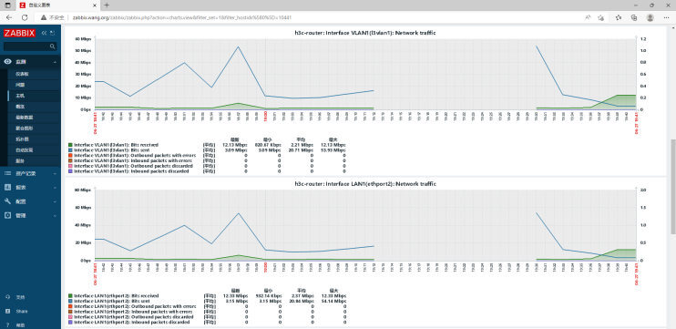</p>
<h3 id="利用-Zabbix-监控-Linux-主机"><a href="#利用-Zabbix-监控-Linux-主机" class="headerlink" title="利用 Zabbix 监控 Linux 主机"></a>利用 Zabbix 监控 Linux 主机</h3><h4 id="在-Zabbix-Agent-安装-SNMP-协议并配置"><a href="#在-Zabbix-Agent-安装-SNMP-协议并配置" class="headerlink" title="在 Zabbix Agent 安装 SNMP 协议并配置"></a>在 Zabbix Agent 安装 SNMP 协议并配置</h4><p>范例： Ubuntu 系统实现 SNMP</p>
<figure class="highlight sh"><table><tr><td class="gutter"><pre><span class="line">1</span><br><span class="line">2</span><br><span class="line">3</span><br><span class="line">4</span><br><span class="line">5</span><br><span class="line">6</span><br><span class="line">7</span><br><span class="line">8</span><br><span class="line">9</span><br><span class="line">10</span><br><span class="line">11</span><br><span class="line">12</span><br><span class="line">13</span><br><span class="line">14</span><br><span class="line">15</span><br><span class="line">16</span><br><span class="line">17</span><br><span class="line">18</span><br><span class="line">19</span><br><span class="line">20</span><br><span class="line">21</span><br><span class="line">22</span><br><span class="line">23</span><br><span class="line">24</span><br><span class="line">25</span><br><span class="line">26</span><br><span class="line">27</span><br><span class="line">28</span><br><span class="line">29</span><br><span class="line">30</span><br><span class="line">31</span><br><span class="line">32</span><br><span class="line">33</span><br><span class="line">34</span><br><span class="line">35</span><br><span class="line">36</span><br><span class="line">37</span><br><span class="line">38</span><br></pre></td><td class="code"><pre><span class="line"><span class="comment">#Ubuntu20.04</span></span><br><span class="line"><span class="comment">#在被监控端Ubuntu安装SNMP协议</span></span><br><span class="line">[root@ubuntu2004 ~]<span class="comment"># apt -y install snmpd</span></span><br><span class="line">[root@ubuntu2004 ~]<span class="comment"># snmpd -v</span></span><br><span class="line">NET-SNMP version:  5.8</span><br><span class="line">Web:               http://www.net-snmp.org/</span><br><span class="line">Email:             net-snmp-coders@lists.sourceforge.net</span><br><span class="line"></span><br><span class="line">[root@ubuntu2004 ~]<span class="comment"># vim /etc/snmp/snmpd.conf</span></span><br><span class="line">agentaddress  0.0.0.0  <span class="comment">#修改此行</span></span><br><span class="line">view   systemonly included   .1.3.6.1.2.1.1</span><br><span class="line">view   systemonly included   .1.3.6.1.2.1.25.1</span><br><span class="line">view   systemonly included   .1           <span class="comment">#加此行</span></span><br><span class="line"></span><br><span class="line"><span class="comment">#如果将社区名称public修改为123456，如下即可</span></span><br><span class="line">rocommunity  123456 default -V systemonly</span><br><span class="line">rocommunity6 123456 default -V systemonly</span><br><span class="line"><span class="comment">#rocommunity public default -V systemonly</span></span><br><span class="line"><span class="comment">#rocommunity6 public default -V systemonly</span></span><br><span class="line"></span><br><span class="line">[root@ubuntu2004 ~]<span class="comment"># systemctl restart snmpd.service</span></span><br><span class="line">[root@ubuntu2004 ~]<span class="comment"># ss -ntulp|grep snmp</span></span><br><span class="line">udp   UNCONN  0       0                   0.0.0.0:161            0.0.0.0:*     <span class="built_in">users</span>:((&quot;snmpd&quot;,pid=<span class="number">24871</span>,fd=<span class="number">6</span>))</span><br><span class="line"></span><br><span class="line"><span class="comment">#Ubuntu18.04</span></span><br><span class="line"><span class="comment">#在被监控端Ubuntu安装SNMP协议</span></span><br><span class="line">[root@ubuntu1804 ~]<span class="comment"># apt -y install snmpd</span></span><br><span class="line">[root@ubuntu1804 ~]<span class="comment"># snmpd -v</span></span><br><span class="line">NET-SNMP version:  5.7.3</span><br><span class="line">Web:               http://www.net-snmp.org/</span><br><span class="line">Email:             net-snmp-coders@lists.sourceforge.net</span><br><span class="line"></span><br><span class="line">[root@ubuntu1804 ~]<span class="comment"># vi /etc/snmp/snmpd.conf </span></span><br><span class="line">agentAddress udp:0.0.0.0:161</span><br><span class="line"></span><br><span class="line">[root@ubuntu1804 ~]<span class="comment"># systemctl restart snmpd.service</span></span><br><span class="line">[root@ubuntu1804 ~]<span class="comment"># ss -ntulp|grep snmp</span></span><br><span class="line">udp   UNCONN  0       0                   0.0.0.0:161            0.0.0.0:*     <span class="built_in">users</span>:((&quot;snmpd&quot;,pid=<span class="number">24871</span>,fd=<span class="number">6</span>))</span><br></pre></td></tr></table></figure>

<p>范例： 红帽系统实现SNMP</p>
<figure class="highlight sh"><table><tr><td class="gutter"><pre><span class="line">1</span><br><span class="line">2</span><br><span class="line">3</span><br><span class="line">4</span><br><span class="line">5</span><br><span class="line">6</span><br><span class="line">7</span><br><span class="line">8</span><br><span class="line">9</span><br><span class="line">10</span><br><span class="line">11</span><br><span class="line">12</span><br><span class="line">13</span><br><span class="line">14</span><br><span class="line">15</span><br><span class="line">16</span><br><span class="line">17</span><br><span class="line">18</span><br><span class="line">19</span><br><span class="line">20</span><br><span class="line">21</span><br><span class="line">22</span><br><span class="line">23</span><br><span class="line">24</span><br><span class="line">25</span><br><span class="line">26</span><br><span class="line">27</span><br><span class="line">28</span><br><span class="line">29</span><br><span class="line">30</span><br></pre></td><td class="code"><pre><span class="line"><span class="comment">#在被监控端CentOS安装SNMP服务器包</span></span><br><span class="line">[root@centos8 ~]<span class="comment"># yum -y install net-snmp</span></span><br><span class="line">[root@centos8 ~]<span class="comment"># snmpd -v</span></span><br><span class="line">NET-SNMP version:  5.8</span><br><span class="line">Web:               http://www.net-snmp.org/</span><br><span class="line">Email:             net-snmp-coders@lists.sourceforge.net</span><br><span class="line"></span><br><span class="line">[root@centos8 ~]<span class="comment"># vim /etc/snmp/snmpd.conf</span></span><br><span class="line">[root@centos8 ~]<span class="comment"># grep &#x27;^[^#]&#x27; /etc/snmp/snmpd.conf</span></span><br><span class="line">com2sec notConfigUser default       123456  <span class="comment">#修改此行，设置团体密码，默认为public,此处改为123456</span></span><br><span class="line">group   notConfigGroup v1           notConfigUser</span><br><span class="line">group   notConfigGroup v2c          notConfigUser </span><br><span class="line">view   systemview   included   .1.3.6.1.2.1.1</span><br><span class="line">view   systemview   included   .1.3.6.1.2.1.25.1.1</span><br><span class="line">view   systemview   included   .1.              <span class="comment">#添加此行，自定义授权，否则 zabbix 无法获取数据</span></span><br><span class="line">access notConfigGroup <span class="string">&quot;&quot;</span>     any       noauth   exact systemview none none</span><br><span class="line">syslocation Unknown (edit /etc/snmp/snmpd.conf)</span><br><span class="line">syscontact Root &lt;root@localhost&gt; (configure /etc/snmp/snmp.local.conf)</span><br><span class="line">dontLogTCPWrappersConnects <span class="built_in">yes</span></span><br><span class="line"></span><br><span class="line"><span class="comment">#验证开启161/UDP端口</span></span><br><span class="line">[root@centos8 ~]<span class="comment"># ss -uln</span></span><br><span class="line">State       Recv-Q               Send-Q   Local Address:Port     Peer Address:Port       </span><br><span class="line">UNCONN        0                    0               0.0.0.0:161           0.0.0.0:* </span><br><span class="line">UNCONN        0                    0             127.0.0.1:323           0.0.0.0:* </span><br><span class="line">UNCONN        0                    0                 [::1]:323              [::]:*</span><br><span class="line"></span><br><span class="line">[root@centos8 ~]<span class="comment"># ss -ntulp|grep snmp</span></span><br><span class="line">udp     UNCONN   0        0        0.0.0.0:161            0.0.0.0:*     <span class="built_in">users</span>:((&quot;snmpd&quot;,pid=<span class="number">9962</span>,fd=<span class="number">9</span>))      </span><br><span class="line">tcp     LISTEN   0        128    127.0.0.1:199            0.0.0.0:*     <span class="built_in">users</span>:((&quot;snmpd&quot;,pid=<span class="number">9962</span>,fd=<span class="number">10</span>)) </span><br></pre></td></tr></table></figure>

<h4 id="测试-SNMP-是否可以访问"><a href="#测试-SNMP-是否可以访问" class="headerlink" title="测试 SNMP 是否可以访问"></a>测试 SNMP 是否可以访问</h4><p>在 Zabbix Server (也可以在其它主机上)安装 SNMP工具 net-snmp-utils</p>
<p>此工具可以测试是否可以获取Zabbix Agent的SNMP数据</p>
<p>注意: 在实际生产环境中Zabbix Server 在进行 SNMP 监测时，无需在 Zabbix Server 安装此工具</p>
<p>snmpwalk 命令格式</p>
<figure class="highlight sh"><table><tr><td class="gutter"><pre><span class="line">1</span><br><span class="line">2</span><br><span class="line">3</span><br><span class="line">4</span><br><span class="line">5</span><br><span class="line">6</span><br><span class="line">7</span><br><span class="line">8</span><br><span class="line">9</span><br><span class="line">10</span><br></pre></td><td class="code"><pre><span class="line">USAGE:snmpwalk[OPTIONS]AGENT[OID]</span><br><span class="line">-h:显示帮助。</span><br><span class="line">-v:指定snmp的版本，1或者2c或者3。</span><br><span class="line">-c:指定连接设备SNMP密码。</span><br><span class="line">—r:指定重次次数.默认为0次</span><br><span class="line">-l:指定安全级别: noAuthNoPriv|authNoPriv|authPriv。</span><br><span class="line">-a:验证协议:MD5|SHA。只有-l指定为authNoPriv或authPriv时才需要。</span><br><span class="line">-A∶验证字符串。只有-1指定为authNoPriv或authPriv时才需要</span><br><span class="line">-x:加密协议:DES。只有-l指定为authPriv时才需要</span><br><span class="line">-x:加密字符串。只有-l指定为authPriv时才需要</span><br></pre></td></tr></table></figure>

<p>范例: snmpwalk 获取 SNMP代理端的信息</p>
<figure class="highlight sh"><table><tr><td class="gutter"><pre><span class="line">1</span><br><span class="line">2</span><br><span class="line">3</span><br><span class="line">4</span><br><span class="line">5</span><br><span class="line">6</span><br><span class="line">7</span><br><span class="line">8</span><br><span class="line">9</span><br><span class="line">10</span><br><span class="line">11</span><br><span class="line">12</span><br><span class="line">13</span><br><span class="line">14</span><br><span class="line">15</span><br><span class="line">16</span><br><span class="line">17</span><br><span class="line">18</span><br><span class="line">19</span><br><span class="line">20</span><br><span class="line">21</span><br><span class="line">22</span><br><span class="line">23</span><br><span class="line">24</span><br><span class="line">25</span><br><span class="line">26</span><br><span class="line">27</span><br><span class="line">28</span><br><span class="line">29</span><br><span class="line">30</span><br><span class="line">31</span><br><span class="line">32</span><br><span class="line">33</span><br><span class="line">34</span><br><span class="line">35</span><br><span class="line">36</span><br><span class="line">37</span><br><span class="line">38</span><br><span class="line">39</span><br><span class="line">40</span><br><span class="line">41</span><br><span class="line">42</span><br><span class="line">43</span><br><span class="line">44</span><br><span class="line">45</span><br><span class="line">46</span><br><span class="line">47</span><br><span class="line">48</span><br><span class="line">49</span><br><span class="line">50</span><br></pre></td><td class="code"><pre><span class="line"><span class="comment">#如果是CentOS安装SNMP工具包</span></span><br><span class="line">[root@zabbix-server ~]<span class="comment"># yum -y install net-snmp-utils</span></span><br><span class="line"></span><br><span class="line"><span class="comment">#如果是Ubuntu安装下面包</span></span><br><span class="line">[root@zabbix-server ~]<span class="comment"># apt -y install snmp</span></span><br><span class="line"></span><br><span class="line"><span class="comment">#获取主机名</span></span><br><span class="line">[root@zabbix-server ~]<span class="comment"># snmpwalk -v 2c -c123456 10.0.0.8 .1.3.6.1.2.1.1.5.0</span></span><br><span class="line">SNMPv2-MIB::sysName.0 = STRING: centos8.wang.org</span><br><span class="line"></span><br><span class="line"><span class="comment">#获取系统信息</span></span><br><span class="line">[root@zabbix-server ~]<span class="comment"># snmpwalk -v 2c -c123456 10.0.0.8 1.3.6.1.2.1.1.1</span></span><br><span class="line">SNMPv2-MIB::sysDescr.0 = STRING: Linux centos8.wang.org 4.18.0-240.el8.x86_64 <span class="comment">#1 </span></span><br><span class="line">SMP Fri Sep 25 19:48:47 UTC 2020 x86_64</span><br><span class="line"></span><br><span class="line"><span class="comment">#获取内存</span></span><br><span class="line">[root@zabbix-server ~]<span class="comment"># snmpwalk -v 2c -c123456 10.0.0.8 .1.3.6.1.4.1.2021.4.5.0</span></span><br><span class="line">UCD-SNMP-MIB::memTotalReal.0 = INTEGER: 1833004 kB</span><br><span class="line"></span><br><span class="line"><span class="comment">#取上面H3C路由的器内存信息</span></span><br><span class="line">[root@zabbix-server ~]<span class="comment"># snmpwalk -v2c -c public 10.1.84.1 .1 |grep -i mem</span></span><br><span class="line">[root@zabbix-server ~]<span class="comment"># snmpwalk -v2c -c public 10.1.84.1 .1.3.6.1.2.1.25.2.2.0</span></span><br><span class="line">HOST-RESOURCES-MIB::hrMemorySize.0 = INTEGER:483316 KBytes</span><br><span class="line"></span><br><span class="line">[root@zabbix-server ~]<span class="comment"># snmpwalk -v2c -c public 10.1.84.1 hrMemorySize.0</span></span><br><span class="line">HOST-RESOURCES-MIB::hrMemorySize.0 = INTEGER:483316 KBytes</span><br><span class="line"></span><br><span class="line"><span class="comment">#获取接口信息</span></span><br><span class="line">[root@zabbix-server ~]<span class="comment"># snmpwalk -v 2c -c123456 10.0.0.8 .1.3.6.1.2.1.2.2.1.3</span></span><br><span class="line">IF-MIB::ifType.1 = INTEGER: softwareLoopback(24)</span><br><span class="line">IF-MIB::ifType.2 = INTEGER: ethernetCsmacd(6)</span><br><span class="line"></span><br><span class="line"><span class="comment">#获取接口MAC</span></span><br><span class="line">[root@zabbix-server ~]<span class="comment"># snmpwalk -v 2c -c123456 10.0.0.8 .1.3.6.1.2.1.2.2.1.6</span></span><br><span class="line">IF-MIB::ifPhysAddress.1 = STRING: </span><br><span class="line">IF-MIB::ifPhysAddress.2 = STRING: 0:c:29:15:9b:83</span><br><span class="line"></span><br><span class="line"><span class="comment">#获取接口当前带宽[bps]</span></span><br><span class="line">[root@zabbix-server ~]<span class="comment"># snmpwalk -v 2c -c123456 10.0.0.8 .1.3.6.1.2.1.2.2.1.5</span></span><br><span class="line">IF-MIB::ifSpeed.1 = Gauge32: 10000000</span><br><span class="line">IF-MIB::ifSpeed.2 = Gauge32: 1000000000</span><br><span class="line"></span><br><span class="line"><span class="comment">#取IP地址</span></span><br><span class="line">[root@zabbix-server ~]<span class="comment"># snmpwalk -v 2c -c123456 10.0.0.8 1.3.6.1.2.1.4.20.1.1</span></span><br><span class="line">IP-MIB::ipAdEntAddr.10.0.0.8 = IpAddress: 10.0.0.8</span><br><span class="line">IP-MIB::ipAdEntAddr.127.0.0.1 = IpAddress: 127.0.0.1</span><br><span class="line"></span><br><span class="line">[root@zabbix-server ~]<span class="comment"># snmpwalk -v 2c -c123456 10.0.0.8 IP-MIB::ipAdEntAddr</span></span><br><span class="line">IP-MIB::ipAdEntAddr.10.0.0.8 = IpAddress: 10.0.0.8</span><br><span class="line">IP-MIB::ipAdEntAddr.127.0.0.1 = IpAddress: 127.0.0.1</span><br></pre></td></tr></table></figure>

<p>注意： 团体密码是明文传输的，可以抓包查看到</p>
<p></p>
<h4 id="创建主机"><a href="#创建主机" class="headerlink" title="创建主机"></a>创建主机</h4><p>在配置中添加需要监控的SNMP代理端</p>
<p></p>
<p>删除默认的客户端类型</p>
<p></p>
<p>指定客户端类型为SNMP</p>
<p></p>
<p>指定SNMP代理端的地址和端口</p>
<p></p>
<h4 id="关联-SNMP-模板"><a href="#关联-SNMP-模板" class="headerlink" title="关联 SNMP 模板"></a>关联 SNMP 模板</h4><p>关联对应的SNMP模板 Template OS Linux SNMP</p>
<p></p>
<p><strong>修改主机宏的值 {$SNMP_COMMUNITY}</strong></p>
<p></p>
<p>或者修改继承以及主机的宏</p>
<p></p>
<p>添加完成</p>
<p></p>
<p><strong>Zabbix 4.0 界面如下</strong></p>
<p></p>
<p>关联对应的SNMP模板</p>
<p><br></p>
<h4 id="验证结果"><a href="#验证结果" class="headerlink" title="验证结果"></a>验证结果</h4><p>过一段时间，可以看到SNMP字体变绿</p>
<p></p>
<p>在监测项验证查看主机信息</p>
<p></p>
<p>对应主机的图形</p>
<p></p>
<p>查看主机的数据</p>
<p></p>
<h1 id="Zabbix-监控实战案例"><a href="#Zabbix-监控实战案例" class="headerlink" title="Zabbix 监控实战案例"></a>Zabbix 监控实战案例</h1><p>Zabbix 的监控功能强大，还支持定制的自定义监控项，可以说能做到想监控什么就可以监控什么</p>
<p>以下实战案例中实现了对生产环境中各种资源的监控</p>
<h2 id="监控内存使用情况"><a href="#监控内存使用情况" class="headerlink" title="监控内存使用情况"></a>监控内存使用情况</h2><h3 id="在客户端定义监控项"><a href="#在客户端定义监控项" class="headerlink" title="在客户端定义监控项"></a>在客户端定义监控项</h3><figure class="highlight sh"><table><tr><td class="gutter"><pre><span class="line">1</span><br><span class="line">2</span><br><span class="line">3</span><br><span class="line">4</span><br><span class="line">5</span><br><span class="line">6</span><br><span class="line">7</span><br><span class="line">8</span><br><span class="line">9</span><br><span class="line">10</span><br><span class="line">11</span><br><span class="line">12</span><br><span class="line">13</span><br><span class="line">14</span><br><span class="line">15</span><br><span class="line">16</span><br><span class="line">17</span><br><span class="line">18</span><br><span class="line">19</span><br><span class="line">20</span><br><span class="line">21</span><br><span class="line">22</span><br><span class="line">23</span><br></pre></td><td class="code"><pre><span class="line">[root@centos8 ~]<span class="comment"># cat /etc/zabbix/zabbix_agentd.d/mem.conf</span></span><br><span class="line">[root@centos8 ~]<span class="comment"># cat /etc/zabbix/zabbix_agent2.d/mem.conf</span></span><br><span class="line">UserParameter=mem_use_percent,free | awk <span class="string">&#x27;NR==2&#123;print $3/$2*100&#125;&#x27;</span></span><br><span class="line">UserParameter=mem_unuse_percent,free | awk <span class="string">&#x27;NR==2&#123;print 100-($3/$2*100)&#125;&#x27;</span></span><br><span class="line"></span><br><span class="line"><span class="comment">#客户端测试</span></span><br><span class="line">[root@centos8 ~]<span class="comment"># zabbix_agent -t mem_use_percent</span></span><br><span class="line">[root@centos8 ~]<span class="comment"># zabbix_agent2 -t mem_use_percent</span></span><br><span class="line">mem_use_percent                                 [s|11.9297]</span><br><span class="line"></span><br><span class="line">[root@centos8 ~]<span class="comment"># zabbix_agent2 -t mem_unuse_percent</span></span><br><span class="line">mem_unuse_percent                               [s|88.2598]</span><br><span class="line"></span><br><span class="line">[root@centos8 ~]<span class="comment"># systemctl restart zabbix-agent.service </span></span><br><span class="line">[root@centos8 ~]<span class="comment"># systemctl restart zabbix-agent2.service </span></span><br><span class="line"></span><br><span class="line"><span class="comment">#服务器端测试</span></span><br><span class="line">[root@zabbix-server ~]<span class="comment"># yum -y install zabbix-get</span></span><br><span class="line">[root@zabbix-server ~]<span class="comment"># zabbix_get -s 10.0.0.8 -p 10050 -k &quot;mem_use_percent&quot;</span></span><br><span class="line">11.1591</span><br><span class="line"></span><br><span class="line">[root@zabbix-server ~]<span class="comment"># zabbix_get -s 10.0.0.8 -p 10050 -k &quot;mem_unuse_percent&quot;</span></span><br><span class="line">88.7257</span><br></pre></td></tr></table></figure>

<h3 id="在-Zabbix-Server-添加监控项"><a href="#在-Zabbix-Server-添加监控项" class="headerlink" title="在 Zabbix Server 添加监控项"></a>在 Zabbix Server 添加监控项</h3><p><br></p>
<h3 id="验证结果-1"><a href="#验证结果-1" class="headerlink" title="验证结果"></a>验证结果</h3><p></p>
<h2 id="监控TCP-十一种有限状态机"><a href="#监控TCP-十一种有限状态机" class="headerlink" title="监控TCP 十一种有限状态机"></a>监控TCP 十一种有限状态机</h2><h3 id="TCP-十一种有限状态机"><a href="#TCP-十一种有限状态机" class="headerlink" title="TCP 十一种有限状态机"></a>TCP 十一种有限状态机</h3><p>TCP 共十一种状态</p>
<figure class="highlight http"><table><tr><td class="gutter"><pre><span class="line">1</span><br><span class="line">2</span><br><span class="line">3</span><br><span class="line">4</span><br><span class="line">5</span><br><span class="line">6</span><br><span class="line">7</span><br><span class="line">8</span><br><span class="line">9</span><br><span class="line">10</span><br><span class="line">11</span><br></pre></td><td class="code"><pre><span class="line">ESTABLISHED</span><br><span class="line">SYN_SENT</span><br><span class="line">SYN_RECV</span><br><span class="line">FIN_WAIT1</span><br><span class="line">FIN_WAIT2</span><br><span class="line">TIME_WAIT</span><br><span class="line">CLOSE</span><br><span class="line">CLOSE_WAIT</span><br><span class="line">LAST_ACK</span><br><span class="line">LISTEN</span><br><span class="line">CLOSING</span><br></pre></td></tr></table></figure>

<p><br></p>
<figure class="highlight sh"><table><tr><td class="gutter"><pre><span class="line">1</span><br><span class="line">2</span><br><span class="line">3</span><br><span class="line">4</span><br><span class="line">5</span><br><span class="line">6</span><br><span class="line">7</span><br><span class="line">8</span><br><span class="line">9</span><br><span class="line">10</span><br><span class="line">11</span><br><span class="line">12</span><br><span class="line">13</span><br><span class="line">14</span><br><span class="line">15</span><br><span class="line">16</span><br><span class="line">17</span><br><span class="line">18</span><br><span class="line">19</span><br><span class="line">20</span><br><span class="line">21</span><br><span class="line">22</span><br><span class="line">23</span><br><span class="line">24</span><br><span class="line">25</span><br><span class="line">26</span><br><span class="line">27</span><br><span class="line">28</span><br><span class="line">29</span><br><span class="line">30</span><br><span class="line">31</span><br><span class="line">32</span><br><span class="line">33</span><br><span class="line">34</span><br><span class="line">35</span><br><span class="line">36</span><br><span class="line">37</span><br><span class="line">38</span><br><span class="line">39</span><br><span class="line">40</span><br><span class="line">41</span><br></pre></td><td class="code"><pre><span class="line">[root@rocky8 ~]<span class="comment"># man netstat</span></span><br><span class="line">       State</span><br><span class="line">             The state of the socket. Since there are no states <span class="keyword">in</span> raw mode and usually no states used <span class="keyword">in</span> UDP and UDPLite, this column may be left blank. Normally this can be one of several values:</span><br><span class="line">       ESTABLISHED</span><br><span class="line">             The socket has an established connection.</span><br><span class="line">       SYN_SENT</span><br><span class="line">             The socket is actively attempting to establish a connection.</span><br><span class="line">       SYN_RECV</span><br><span class="line">             A connection request has been received from the network.</span><br><span class="line">       FIN_WAIT1</span><br><span class="line">             The socket is closed, and the connection is shutting down.</span><br><span class="line">       FIN_WAIT2</span><br><span class="line">             Connection is closed, and the socket is waiting <span class="keyword">for</span> a shutdown from the remote end.</span><br><span class="line">       TIME_WAIT</span><br><span class="line">             The socket is waiting after close to handle packets still <span class="keyword">in</span> the network.</span><br><span class="line">       CLOSE </span><br><span class="line">             The socket is not being used.</span><br><span class="line">       CLOSE_WAIT</span><br><span class="line">             The remote end has shut down, waiting <span class="keyword">for</span> the socket to close.</span><br><span class="line">       LAST_ACK</span><br><span class="line">             The remote end has shut down, and the socket is closed. Waiting <span class="keyword">for</span> acknowledgement.</span><br><span class="line">       LISTEN</span><br><span class="line">             The socket is listening <span class="keyword">for</span> incoming connections. Such sockets are not included <span class="keyword">in</span> the output unless you specify the  --listening        (-l) or --all (-a) option.</span><br><span class="line">       CLOSING</span><br><span class="line">             Both sockets are shut down but we still don<span class="string">&#x27;t have all our data </span></span><br><span class="line"><span class="string">sent.</span></span><br><span class="line"><span class="string">       UNKNOWN</span></span><br><span class="line"><span class="string">             The state of the socket is unknown.</span></span><br><span class="line"><span class="string">             </span></span><br><span class="line"><span class="string">[root@rocky8 ~]# netstat -nat</span></span><br><span class="line"><span class="string">Active Internet connections (servers and established)</span></span><br><span class="line"><span class="string">Proto Recv-Q Send-Q Local Address           Foreign Address         State      </span></span><br><span class="line"><span class="string">tcp        0      0 0.0.0.0:22              0.0.0.0:*               LISTEN     </span></span><br><span class="line"><span class="string">tcp        0      0 127.0.0.1:25            0.0.0.0:*               LISTEN     </span></span><br><span class="line"><span class="string">tcp        0      0 10.0.0.8:22             10.0.0.1:9680           ESTABLISHED</span></span><br><span class="line"><span class="string">tcp        0     52 10.0.0.8:22             10.0.0.1:9682           ESTABLISHED</span></span><br><span class="line"><span class="string">tcp        0      0 10.0.0.8:22             10.0.0.1:9681           ESTABLISHED</span></span><br><span class="line"><span class="string">tcp6       0      0 :::10050                      :::*              LISTEN     </span></span><br><span class="line"><span class="string">tcp6       0      0 :::22                         :::*              LISTEN     </span></span><br><span class="line"><span class="string">tcp6       0      0 ::1:25                        :::*              LISTEN     </span></span><br><span class="line"><span class="string">tcp6       0      0 10.0.0.8:10050        10.0.0.100:55018          TIME_WAIT</span></span><br></pre></td></tr></table></figure>

<h3 id="实现自定义监控项"><a href="#实现自定义监控项" class="headerlink" title="实现自定义监控项"></a>实现自定义监控项</h3><h4 id="案例1-自定义监控项实现监控TCP当前ESTABLISHED状态的连接数"><a href="#案例1-自定义监控项实现监控TCP当前ESTABLISHED状态的连接数" class="headerlink" title="案例1: 自定义监控项实现监控TCP当前ESTABLISHED状态的连接数"></a>案例1: 自定义监控项实现监控TCP当前ESTABLISHED状态的连接数</h4><p>先准备脚本实现自定义监控项实现连接数</p>
<figure class="highlight sh"><table><tr><td class="gutter"><pre><span class="line">1</span><br><span class="line">2</span><br><span class="line">3</span><br><span class="line">4</span><br><span class="line">5</span><br><span class="line">6</span><br></pre></td><td class="code"><pre><span class="line">[root@centos8 ~]<span class="comment"># cat /etc/zabbix/zabbix_agentd.d/test.conf</span></span><br><span class="line">UserParameter=tcp_state_estab,netstat -ant|grep -c STABLISHED</span><br><span class="line"></span><br><span class="line">[root@centos8 ~]<span class="comment"># systemctl restart zabbix-agent.service </span></span><br><span class="line">[root@zabbix-server ~]<span class="comment"># zabbix_get -s 10.0.0.38 -p 10050 -k &quot;tcp_state_estab&quot;</span></span><br><span class="line">5</span><br></pre></td></tr></table></figure>

<p>添加被控制主机</p>
<p><br><br></p>
<p>在被监控主机添加监控项</p>
<p><br><br><br>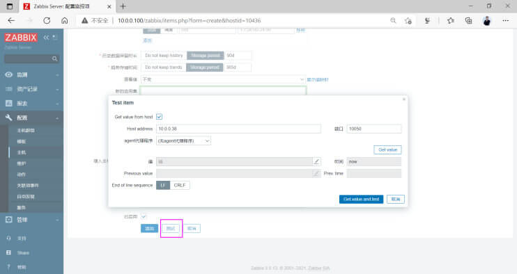</p>
<p>测试是否能获取到相关的值</p>
<p><br><br></p>
<p>验证结果</p>
<p><br><br>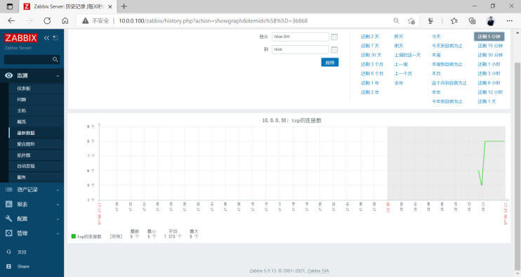</p>
<h4 id="案例2-自定义监控项实现监控TCP-状态的连接数"><a href="#案例2-自定义监控项实现监控TCP-状态的连接数" class="headerlink" title="案例2:自定义监控项实现监控TCP 状态的连接数"></a>案例2:自定义监控项实现监控TCP 状态的连接数</h4><p>修改监控项的脚本为以下形式，可以实现一个脚本实现多个自定义监控项</p>
<figure class="highlight sh"><table><tr><td class="gutter"><pre><span class="line">1</span><br><span class="line">2</span><br><span class="line">3</span><br><span class="line">4</span><br><span class="line">5</span><br><span class="line">6</span><br><span class="line">7</span><br><span class="line">8</span><br><span class="line">9</span><br><span class="line">10</span><br><span class="line">11</span><br><span class="line">12</span><br><span class="line">13</span><br><span class="line">14</span><br><span class="line">15</span><br><span class="line">16</span><br><span class="line">17</span><br><span class="line">18</span><br><span class="line">19</span><br><span class="line">20</span><br><span class="line">21</span><br><span class="line">22</span><br><span class="line">23</span><br></pre></td><td class="code"><pre><span class="line">[root@centos8 ~]<span class="comment"># yum -y install net-tools</span></span><br><span class="line">[root@centos8 ~]<span class="comment"># cat /etc/zabbix/zabbix_agentd.d/tcp_state.sh</span></span><br><span class="line"><span class="comment">#!/bin/bash</span></span><br><span class="line"><span class="function"><span class="title">tcp_state</span></span> () &#123;</span><br><span class="line">   netstat -atn|grep -c <span class="variable">$1</span></span><br><span class="line">&#125;</span><br><span class="line"></span><br><span class="line">tcp_state <span class="variable">$1</span></span><br><span class="line"></span><br><span class="line">[root@centos8 ~]<span class="comment"># chmod +x /etc/zabbix/zabbix_agentd.d/tcp_state.sh</span></span><br><span class="line"></span><br><span class="line">[root@centos8 ~]<span class="comment"># cat /etc/zabbix/zabbix_agentd.d/test.conf</span></span><br><span class="line">UserParameter=tcp_state[*],/etc/zabbix/zabbix_agentd.d/tcp_state.sh <span class="variable">$1</span></span><br><span class="line"></span><br><span class="line">[root@centos8 ~]<span class="comment"># systemctl restart zabbix-agent.service </span></span><br><span class="line">[root@zabbix-server ~]<span class="comment"># zabbix_get -s 10.0.0.38 -p 10050 -k &quot;tcp_state[LISTEN]&quot;</span></span><br><span class="line">9</span><br><span class="line"></span><br><span class="line">[root@zabbix-server ~]<span class="comment"># zabbix_get -s 10.0.0.38 -p 10050 -k  &quot;tcp_state[ESTABLISHED]&quot;</span></span><br><span class="line">3</span><br><span class="line"></span><br><span class="line">[root@zabbix-server ~]<span class="comment"># zabbix_get -s 10.0.0.38 -p 10050 -k &quot;tcp_state[TIME-WAIT]&quot;</span></span><br><span class="line">8200</span><br></pre></td></tr></table></figure>

<p></p>
<p>测试是否能取到数据</p>
<p><br><br><br><br><br><br><br></p>
<h3 id="自定义模板实现监控"><a href="#自定义模板实现监控" class="headerlink" title="自定义模板实现监控"></a>自定义模板实现监控</h3><p>对于主机和监控项众多时，直接将监控项关联至主机的方法，是比较繁琐的</p>
<p>可以通过将自定义的监控项加入到自定义的模板或已有的模板中，再将此模板关联至需要监控的主机，从而提高效率</p>
<p><br><br></p>
<p>创建应用集tcp_state</p>
<p></p>
<p>在自定义的模板中创建自定义监控项或者将已有的监控项复制到模板中</p>
<p><br><br></p>
<p>查看自定义的模板中已存在自定义的应用集和监控项</p>
<p></p>
<p>在监控主机上清空前面小节已关联的监控项</p>
<p></p>
<p>在被监控主机重新关联自定义的模板</p>
<p></p>
<p>查看关联的模板及相关的监控项</p>
<p><br><br></p>
<p>导出自定义的模板</p>
<p></p>
<p>查看文件内容</p>
<p></p>
<h3 id="创建自定义触发器"><a href="#创建自定义触发器" class="headerlink" title="创建自定义触发器"></a>创建自定义触发器</h3><h4 id="创建触发器"><a href="#创建触发器" class="headerlink" title="创建触发器"></a>创建触发器</h4><p>选择指定的模板中创建触发器</p>
<p></p>
<p>创建触发器</p>
<p><br><br><br><br><br><br></p>
<h4 id="测试触发触发器"><a href="#测试触发触发器" class="headerlink" title="测试触发触发器"></a>测试触发触发器</h4><p>默认没有触发消息</p>
<p></p>
<figure class="highlight sh"><table><tr><td class="gutter"><pre><span class="line">1</span><br><span class="line">2</span><br><span class="line">3</span><br><span class="line">4</span><br><span class="line">5</span><br></pre></td><td class="code"><pre><span class="line">[root@centos8 ~]<span class="comment"># zabbix_get -s 10.0.0.7 -p 10050 -k &quot;tcp_state[ESTAB]&quot;</span></span><br><span class="line">3</span><br><span class="line"></span><br><span class="line">[root@centos8 ~]<span class="comment"># zabbix_get -s 10.0.0.8 -p 10050 -k &quot;tcp_state[ESTAB]&quot;</span></span><br><span class="line">2</span><br></pre></td></tr></table></figure>

<p>多建立连接查看到下面提示信息</p>
<figure class="highlight sh"><table><tr><td class="gutter"><pre><span class="line">1</span><br><span class="line">2</span><br><span class="line">3</span><br><span class="line">4</span><br></pre></td><td class="code"><pre><span class="line">[root@centos8 ~]<span class="comment"># zabbix_get -s 10.0.0.8 -p 10050 -k &quot;tcp_state[ESTAB]&quot;</span></span><br><span class="line">6</span><br><span class="line">[root@centos8 ~]<span class="comment"># zabbix_get -s 10.0.0.7 -p 10050 -k &quot;tcp_state[ESTAB]&quot;</span></span><br><span class="line">7</span><br></pre></td></tr></table></figure>

<p><br></p>
<h3 id="自定义图形-1"><a href="#自定义图形-1" class="headerlink" title="自定义图形"></a>自定义图形</h3><p>选择自定义的模板，查看”图形”</p>
<p></p>
<p>创建图形</p>
<p></p>
<p>在图形中添加监控项</p>
<p></p>
<p>确定创建图形</p>
<p>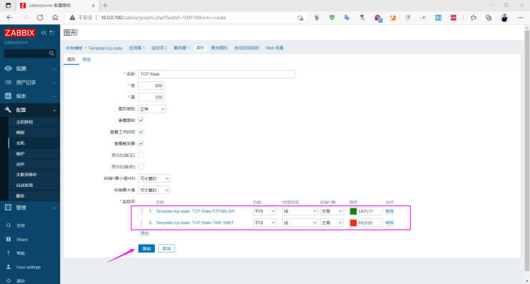</p>
<p>在模板中可以看到图形有一个</p>
<p></p>
<p>在主机中验证结果</p>
<p></p>
<p>验证图形和颜色</p>
<p></p>
<h3 id="导出模板"><a href="#导出模板" class="headerlink" title="导出模板"></a>导出模板</h3><p>将自定义的模板导出，可以在其它Zabbix Server导入进行复用</p>
<p><br></p>
<h2 id="监控-Memcached-服务"><a href="#监控-Memcached-服务" class="headerlink" title="监控 Memcached 服务"></a>监控 Memcached 服务</h2><h3 id="在-Zabbinx-Agent安装memcached-服务"><a href="#在-Zabbinx-Agent安装memcached-服务" class="headerlink" title="在 Zabbinx Agent安装memcached 服务"></a>在 Zabbinx Agent安装memcached 服务</h3><figure class="highlight sh"><table><tr><td class="gutter"><pre><span class="line">1</span><br><span class="line">2</span><br><span class="line">3</span><br><span class="line">4</span><br><span class="line">5</span><br><span class="line">6</span><br><span class="line">7</span><br><span class="line">8</span><br><span class="line">9</span><br><span class="line">10</span><br><span class="line">11</span><br><span class="line">12</span><br><span class="line">13</span><br><span class="line">14</span><br><span class="line">15</span><br><span class="line">16</span><br><span class="line">17</span><br><span class="line">18</span><br><span class="line">19</span><br></pre></td><td class="code"><pre><span class="line">[root@centos8 ~]<span class="comment"># yum -y install memcached nc</span></span><br><span class="line">[root@centos8 ~]<span class="comment"># vim /etc/sysconfig/memcached </span></span><br><span class="line">PORT=<span class="string">&quot;11211&quot;</span></span><br><span class="line">USER=<span class="string">&quot;memcached&quot;</span></span><br><span class="line">MAXCONN=<span class="string">&quot;1024&quot;</span></span><br><span class="line">CACHESIZE=<span class="string">&quot;64&quot;</span></span><br><span class="line"><span class="comment">#OPTIONS=&quot;-l 127.0.0.1,::1&quot; #注释此行</span></span><br><span class="line"></span><br><span class="line">[root@centos8 ~]<span class="comment"># systemctl enable --now memcached</span></span><br><span class="line">[root@centos8 ~]<span class="comment"># ss -ntl</span></span><br><span class="line">State   Recv-Q Send-Q   Local Address:Port Peer Address:Port</span><br><span class="line">LISTEN   0      128             0.0.0.0:11211      0.0.0.0:*</span><br><span class="line">LISTEN   0      128             0.0.0.0:22         0.0.0.0:*</span><br><span class="line">LISTEN   0      100           127.0.0.1:25         0.0.0.0:*</span><br><span class="line">LISTEN   0      128             0.0.0.0:10050      0.0.0.0:*</span><br><span class="line">LISTEN   0      128                [::]:11211         [::]:*</span><br><span class="line">LISTEN   0      128                   *:80               *:*</span><br><span class="line">LISTEN   0      128                [::]:22            [::]:*</span><br><span class="line">LISTEN   0      100               [::1]:25            [::]:*</span><br></pre></td></tr></table></figure>

<h3 id="Zabbix-Agent的监控脚本"><a href="#Zabbix-Agent的监控脚本" class="headerlink" title="Zabbix Agent的监控脚本"></a>Zabbix Agent的监控脚本</h3><figure class="highlight sh"><table><tr><td class="gutter"><pre><span class="line">1</span><br><span class="line">2</span><br><span class="line">3</span><br><span class="line">4</span><br><span class="line">5</span><br><span class="line">6</span><br><span class="line">7</span><br><span class="line">8</span><br><span class="line">9</span><br><span class="line">10</span><br><span class="line">11</span><br><span class="line">12</span><br><span class="line">13</span><br><span class="line">14</span><br><span class="line">15</span><br><span class="line">16</span><br><span class="line">17</span><br><span class="line">18</span><br><span class="line">19</span><br><span class="line">20</span><br><span class="line">21</span><br><span class="line">22</span><br><span class="line">23</span><br><span class="line">24</span><br><span class="line">25</span><br><span class="line">26</span><br><span class="line">27</span><br><span class="line">28</span><br><span class="line">29</span><br><span class="line">30</span><br></pre></td><td class="code"><pre><span class="line">[root@centos8 ~]<span class="comment"># cat /apps/zabbix_agent/etc/zabbix_agentd.conf.d/memcached_state.sh</span></span><br><span class="line"><span class="comment">#!/bin/bash</span></span><br><span class="line"><span class="function"><span class="title">memcached_state</span></span>()&#123;</span><br><span class="line">    port=<span class="variable">$1</span></span><br><span class="line">    <span class="built_in">echo</span> -e <span class="string">&#x27;stats\nquit&#x27;</span>| nc 127.0.0.1 <span class="variable">$port</span> |awk -v item=<span class="variable">$2</span>  <span class="string">&#x27;$2==item&#123;print $3&#125;&#x27;</span></span><br><span class="line">&#125;</span><br><span class="line">memcached_state <span class="variable">$1</span> <span class="variable">$2</span></span><br><span class="line"></span><br><span class="line"><span class="comment">#编译安装路径</span></span><br><span class="line">[root@centos8 ~]<span class="comment"># chmod +x /apps/zabbix_agent/etc/zabbix_agentd.conf.d/memcached_state.sh</span></span><br><span class="line"></span><br><span class="line"><span class="comment">#如果是包安装路径如下</span></span><br><span class="line">[root@centos8 ~]<span class="comment"># chmod +x /etc/zabbix/zabbix_agentd.d/memcached_state.sh</span></span><br><span class="line">[root@centos8 ~]<span class="comment"># /apps/zabbix_agent/etc/zabbix_agentd.conf.d/memcached_state.sh 11211 version</span></span><br><span class="line">1.5.9</span><br><span class="line"></span><br><span class="line"><span class="comment">#取当前连接数</span></span><br><span class="line">[root@centos8 ~]<span class="comment"># /apps/zabbix_agent/etc/zabbix_agentd.conf.d/memcached_state.sh 11211 curr_connections</span></span><br><span class="line">2</span><br><span class="line"></span><br><span class="line"></span><br><span class="line"><span class="comment">#取内存使用</span></span><br><span class="line">[root@centos8 ~]<span class="comment"># /apps/zabbix_agent/etc/zabbix_agentd.conf.d/memcached_state.sh 11211 bytes</span></span><br><span class="line">131</span><br><span class="line"></span><br><span class="line">[root@centos8 ~]<span class="comment"># /apps/zabbix_agent/etc/zabbix_agentd.conf.d/memcached_state.sh 11211 get_hits</span></span><br><span class="line">0</span><br><span class="line"></span><br><span class="line">[root@centos8 ~]<span class="comment"># /apps/zabbix_agent/etc/zabbix_agentd.conf.d/memcached_state.sh 11211 get_misses</span></span><br><span class="line">0</span><br></pre></td></tr></table></figure>

<h3 id="zabbix-Agent-添加自定义的监控项"><a href="#zabbix-Agent-添加自定义的监控项" class="headerlink" title="zabbix Agent 添加自定义的监控项"></a>zabbix Agent 添加自定义的监控项</h3><figure class="highlight sh"><table><tr><td class="gutter"><pre><span class="line">1</span><br><span class="line">2</span><br><span class="line">3</span><br><span class="line">4</span><br><span class="line">5</span><br><span class="line">6</span><br><span class="line">7</span><br><span class="line">8</span><br><span class="line">9</span><br></pre></td><td class="code"><pre><span class="line">[root@centos8 ~]<span class="comment"># vim /apps/zabbix_agent/etc/zabbix_agentd.conf</span></span><br><span class="line">UserParameter=tcp_state[*],/apps/zabbix_agent/etc/zabbix_agentd.conf.d/tcp_state.sh <span class="string">&quot;<span class="variable">$1</span>&quot;</span></span><br><span class="line">UserParameter=memcached_state[*],/apps/zabbix_agent/etc/zabbix_agentd.conf.d/memcached_state.sh <span class="string">&quot;<span class="variable">$1</span>&quot;</span> <span class="string">&quot;<span class="variable">$2</span>&quot;</span></span><br><span class="line"></span><br><span class="line"><span class="comment">#如果是包安装，配置文件如下</span></span><br><span class="line">[root@centos8 ~]<span class="comment"># cat /etc/zabbix/zabbix_agentd.d/test.conf </span></span><br><span class="line">UserParameter=memcached_state[*],/etc/zabbix/zabbix_agentd.d/memcached_state.sh <span class="string">&quot;<span class="variable">$1</span>&quot;</span> <span class="string">&quot;<span class="variable">$2</span>&quot;</span></span><br><span class="line"></span><br><span class="line">[root@centos8 ~]<span class="comment"># systemctl restart zabbix-agent.service</span></span><br></pre></td></tr></table></figure>

<h3 id="Zabbix-Server-测试监控memcached服务的监控项数据"><a href="#Zabbix-Server-测试监控memcached服务的监控项数据" class="headerlink" title="Zabbix Server 测试监控memcached服务的监控项数据"></a>Zabbix Server 测试监控memcached服务的监控项数据</h3><figure class="highlight sh"><table><tr><td class="gutter"><pre><span class="line">1</span><br><span class="line">2</span><br><span class="line">3</span><br><span class="line">4</span><br><span class="line">5</span><br></pre></td><td class="code"><pre><span class="line">[root@zabbix-server ~]<span class="comment"># zabbix_get -s 10.0.0.103 -p 10050 -k&quot;memcached_state[11211,version]&quot;</span></span><br><span class="line">1.5.9</span><br><span class="line"></span><br><span class="line">[root@zabbix-server ~]<span class="comment">#zabbix_get -s 10.0.0.103 -p 10050 -k&quot;memcached_state[11211,curr_connections]&quot;</span></span><br><span class="line">2</span><br></pre></td></tr></table></figure>

<h3 id="创建memached的监控自定义模板"><a href="#创建memached的监控自定义模板" class="headerlink" title="创建memached的监控自定义模板"></a>创建memached的监控自定义模板</h3><h4 id="创建自定义模板"><a href="#创建自定义模板" class="headerlink" title="创建自定义模板"></a>创建自定义模板</h4><p><br></p>
<h4 id="创建自定义监控项"><a href="#创建自定义监控项" class="headerlink" title="创建自定义监控项"></a>创建自定义监控项</h4><p>监控项实现监控当前连接数</p>
<p></p>
<p>键值: <code>memcached_state[11211,curr_connections]</code></p>
<p></p>
<h4 id="创建针对自定义模板的触发器"><a href="#创建针对自定义模板的触发器" class="headerlink" title="创建针对自定义模板的触发器"></a>创建针对自定义模板的触发器</h4><p>当前连接数大于1000时生成触发器事件</p>
<p><br><br></p>
<h4 id="创建自定义模板版的图形"><a href="#创建自定义模板版的图形" class="headerlink" title="创建自定义模板版的图形"></a>创建自定义模板版的图形</h4><p>自定义的模板关联图形，一个图形可以用多个监控项，不同的监控项会自动使用不同的颜色进行区分，也可以手动调整各监控项的颜色和图形类型。</p>
<p><br><br><br></p>
<h3 id="将自定义的模板关联至需要监控的主机上"><a href="#将自定义的模板关联至需要监控的主机上" class="headerlink" title="将自定义的模板关联至需要监控的主机上"></a>将自定义的模板关联至需要监控的主机上</h3><p></p>
<h3 id="验证监控结果"><a href="#验证监控结果" class="headerlink" title="验证监控结果"></a>验证监控结果</h3><p><br></p>
<h2 id="监控-Redis-服务"><a href="#监控-Redis-服务" class="headerlink" title="监控 Redis 服务"></a>监控 Redis 服务</h2><h3 id="客户端配置"><a href="#客户端配置" class="headerlink" title="客户端配置"></a>客户端配置</h3><figure class="highlight sh"><table><tr><td class="gutter"><pre><span class="line">1</span><br><span class="line">2</span><br><span class="line">3</span><br><span class="line">4</span><br><span class="line">5</span><br><span class="line">6</span><br><span class="line">7</span><br><span class="line">8</span><br><span class="line">9</span><br><span class="line">10</span><br><span class="line">11</span><br><span class="line">12</span><br><span class="line">13</span><br><span class="line">14</span><br><span class="line">15</span><br><span class="line">16</span><br><span class="line">17</span><br><span class="line">18</span><br></pre></td><td class="code"><pre><span class="line">[root@centos8 ~]<span class="comment"># key1=&quot;used_memory&quot;;redis-cli info |awk -F: -v key2=$key &#x27;$1==key2&#123;print $2&#125;&#x27;</span></span><br><span class="line">[root@centos8 ~]<span class="comment"># key1=&quot;total_system_memory&quot;;redis-cli info |awk -F: -v key2=$key &#x27;$1==key2&#123;print $2&#125;&#x27;</span></span><br><span class="line">[root@centos8 ~]<span class="comment"># key1=&quot;connected_clients&quot;;redis-cli info |awk -F: -v key2=$key &#x27;$1==key2&#123;print $2&#125;&#x27;</span></span><br><span class="line">[root@centos8 ~]<span class="comment"># cat /etc/zabbix/zabbix_agent2.d/redis.conf </span></span><br><span class="line">UserParameter=redis.status[*],/etc/zabbix/zabbix_agent2.d/redis_status.sh <span class="string">&quot;<span class="variable">$1</span>&quot;</span></span><br><span class="line">UserParameter=redis.config.maxclients,redis-cli -p 6379 config get maxclients | awk <span class="string">&quot;NR==2&quot;</span></span><br><span class="line"></span><br><span class="line">[root@centos8 ~]<span class="comment"># cat /etc/zabbix/zabbix_agent2.d/redis_status.sh</span></span><br><span class="line"><span class="comment">#!/bin/bash</span></span><br><span class="line">KEY=<span class="variable">$1</span></span><br><span class="line">redis-cli -p 6379 info | grep <span class="string">&quot;\&lt;<span class="variable">$&#123;KEY&#125;</span>\&gt;&quot;</span> | awk -F <span class="string">&#x27;:&#x27;</span> <span class="string">&#x27;&#123;print $NF&#125;&#x27;</span></span><br><span class="line"></span><br><span class="line">[root@centos8 ~]<span class="comment"># systemctl restart zabbix-agent2</span></span><br><span class="line"></span><br><span class="line"><span class="comment">#服务器测试</span></span><br><span class="line">[root@zabbix-server ~]<span class="comment"># zabbix_get -s 10.0.0.8 -k redis.status[used_memory]</span></span><br><span class="line">[root@zabbix-server ~]<span class="comment"># zabbix_get -s 10.0.0.8 -k redis.status[total_system_memory]</span></span><br><span class="line">[root@zabbix-server ~]<span class="comment"># zabbix_get -s 10.0.0.8 -k redis.status[connected_clients]</span></span><br></pre></td></tr></table></figure>

<h3 id="配置-Zabbix-Web"><a href="#配置-Zabbix-Web" class="headerlink" title="配置 Zabbix Web"></a>配置 Zabbix Web</h3><ul>
<li>创建自定义模板</li>
<li>在上面的模板中创建监控项</li>
<li>在模板上创建2个图形，连接状态和内存状态</li>
</ul>
<p><br></p>
<p>注意: total_system_memory 的类型为图形总数</p>
<p>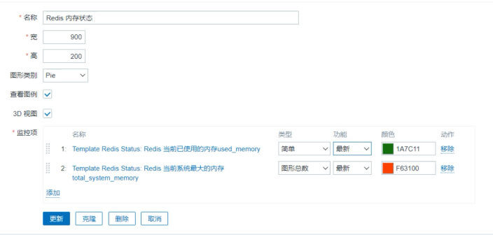<br></p>
<ul>
<li>创建触发器</li>
</ul>
<figure class="highlight sh"><table><tr><td class="gutter"><pre><span class="line">1</span><br><span class="line">2</span><br><span class="line">3</span><br><span class="line">4</span><br><span class="line">5</span><br><span class="line">6</span><br><span class="line">7</span><br><span class="line">8</span><br><span class="line">9</span><br><span class="line">10</span><br><span class="line">11</span><br><span class="line">12</span><br><span class="line">13</span><br><span class="line">14</span><br><span class="line">15</span><br><span class="line">16</span><br><span class="line">17</span><br></pre></td><td class="code"><pre><span class="line"><span class="comment">#当Redis连接数达到最大连接数的70%: 活跃连接数/最大连接数*100 &gt;70</span></span><br><span class="line"><span class="comment">#宏定义: &#123;$REDIS.CLIENTS.MAX&#125;=70</span></span><br><span class="line"><span class="comment">#名称:Redis活跃连接数达到&#123;$REDIS.CLIENTS.MAX&#125;</span></span><br><span class="line"><span class="comment">#问题形式:</span></span><br><span class="line">&#123; Template Redis status :redis.status[connected_clients].avg(1m)&#125;/&#123;Template Redis status:redis.config.maxclients.last()&#125;*100 &gt;=&#123;<span class="variable">$REDIS</span>.CLIENTS.MAX&#125;</span><br><span class="line"></span><br><span class="line"><span class="comment">#当Redis内存使用率达到50%:(used_memory/total_system_memory*100&gt; 50 )</span></span><br><span class="line"><span class="comment">#宏定义: &#123;$REDIS.MEM.MAX&#125;=50</span></span><br><span class="line"><span class="comment">#名称:Redis 已用内存达到&#123;$REDIS.MEM.MAX&#125;</span></span><br><span class="line"><span class="comment">#问题形式:</span></span><br><span class="line">&#123; Template Redis </span><br><span class="line">status:redis.status[used_memory].last()&#125;/&#123;Template Redis </span><br><span class="line">status:redis.status[total_system _memory].last()&#125;*100&gt;=&#123;<span class="variable">$REDIS</span>.MEM.MAX&#125;</span><br><span class="line"></span><br><span class="line"><span class="comment">#测试</span></span><br><span class="line">[root@rocky8 ~]<span class="comment"># redis-cli </span></span><br><span class="line">127.0.0.1:6379&gt; debug populate 5000000</span><br></pre></td></tr></table></figure>

<ul>
<li>将自定模板关联主机</li>
</ul>
<h2 id="监控-Nginx-服务-1"><a href="#监控-Nginx-服务-1" class="headerlink" title="监控 Nginx 服务"></a>监控 Nginx 服务</h2><h3 id="自定义监控项监控-nginx-状态页"><a href="#自定义监控项监控-nginx-状态页" class="headerlink" title="自定义监控项监控 nginx 状态页"></a>自定义监控项监控 nginx 状态页</h3><figure class="highlight sh"><table><tr><td class="gutter"><pre><span class="line">1</span><br><span class="line">2</span><br><span class="line">3</span><br><span class="line">4</span><br><span class="line">5</span><br><span class="line">6</span><br><span class="line">7</span><br><span class="line">8</span><br><span class="line">9</span><br><span class="line">10</span><br><span class="line">11</span><br></pre></td><td class="code"><pre><span class="line">[root@rocky8 ~]<span class="comment"># vim /etc/nginx/conf.d/default.conf</span></span><br><span class="line"><span class="comment"># 加入</span></span><br><span class="line">location /nginx_status &#123;</span><br><span class="line">   stub_status;</span><br><span class="line">   access_log off;</span><br><span class="line">   allow 127.0.0.1;</span><br><span class="line">   deny all;</span><br><span class="line">&#125;</span><br><span class="line"></span><br><span class="line"><span class="comment"># 重启服务</span></span><br><span class="line">[root@rocky8 ~]<span class="comment"># systemctl restart nginx</span></span><br></pre></td></tr></table></figure>

<h3 id="配置-agent"><a href="#配置-agent" class="headerlink" title="配置 agent"></a>配置 agent</h3><figure class="highlight sh"><table><tr><td class="gutter"><pre><span class="line">1</span><br><span class="line">2</span><br><span class="line">3</span><br><span class="line">4</span><br><span class="line">5</span><br><span class="line">6</span><br><span class="line">7</span><br><span class="line">8</span><br><span class="line">9</span><br><span class="line">10</span><br><span class="line">11</span><br><span class="line">12</span><br><span class="line">13</span><br><span class="line">14</span><br><span class="line">15</span><br><span class="line">16</span><br><span class="line">17</span><br><span class="line">18</span><br><span class="line">19</span><br><span class="line">20</span><br><span class="line">21</span><br><span class="line">22</span><br><span class="line">23</span><br><span class="line">24</span><br><span class="line">25</span><br><span class="line">26</span><br><span class="line">27</span><br><span class="line">28</span><br><span class="line">29</span><br><span class="line">30</span><br><span class="line">31</span><br><span class="line">32</span><br><span class="line">33</span><br><span class="line">34</span><br><span class="line">35</span><br><span class="line">36</span><br><span class="line">37</span><br><span class="line">38</span><br><span class="line">39</span><br><span class="line">40</span><br><span class="line">41</span><br><span class="line">42</span><br><span class="line">43</span><br><span class="line">44</span><br><span class="line">45</span><br><span class="line">46</span><br><span class="line">47</span><br><span class="line">48</span><br><span class="line">49</span><br><span class="line">50</span><br><span class="line">51</span><br><span class="line">52</span><br><span class="line">53</span><br><span class="line">54</span><br><span class="line">55</span><br><span class="line">56</span><br><span class="line">57</span><br><span class="line">58</span><br><span class="line">59</span><br><span class="line">60</span><br><span class="line">61</span><br><span class="line">62</span><br><span class="line">63</span><br><span class="line">64</span><br><span class="line">65</span><br><span class="line">66</span><br></pre></td><td class="code"><pre><span class="line">[root@rocky8 ~]<span class="comment"># vim /etc/zabbix/zabbix_agentd.d/nginx_status.sh </span></span><br><span class="line"><span class="comment">#!/bin/bash</span></span><br><span class="line"><span class="comment"># Description：zabbix监控nginx性能以及进程状态</span></span><br><span class="line">HOST=<span class="string">&quot;127.0.0.1&quot;</span></span><br><span class="line">PORT=<span class="string">&quot;80&quot;</span></span><br><span class="line">URL=nginx_status</span><br><span class="line"></span><br><span class="line"><span class="comment"># 检测nginx进程是否存在</span></span><br><span class="line"><span class="keyword">case</span> <span class="variable">$1</span> <span class="keyword">in</span></span><br><span class="line">ping)</span><br><span class="line">   pidof nginx | <span class="built_in">wc</span> -l</span><br><span class="line">   ;;</span><br><span class="line"><span class="comment"># 检测nginx性能</span></span><br><span class="line">active)</span><br><span class="line">    curl -s <span class="string">&quot;http://<span class="variable">$HOST</span>:<span class="variable">$PORT</span>/<span class="variable">$URL</span>/&quot;</span> | awk <span class="string">&#x27;NR==1&#123;print $NF&#125;&#x27;</span></span><br><span class="line">   ;;</span><br><span class="line">    </span><br><span class="line">reading)</span><br><span class="line">    curl -s <span class="string">&quot;http://<span class="variable">$HOST</span>:<span class="variable">$PORT</span>/<span class="variable">$URL</span>/&quot;</span> | awk <span class="string">&#x27;NR==4&#123;print $2&#125;&#x27;</span></span><br><span class="line">   ;;</span><br><span class="line">writing)</span><br><span class="line">    curl -s <span class="string">&quot;http://<span class="variable">$HOST</span>:<span class="variable">$PORT</span>/<span class="variable">$URL</span>/&quot;</span> | awk <span class="string">&#x27;NR==4&#123;print $4&#125;&#x27;</span></span><br><span class="line">   ;;</span><br><span class="line">   </span><br><span class="line">waiting)</span><br><span class="line">    curl -s <span class="string">&quot;http://<span class="variable">$HOST</span>:<span class="variable">$PORT</span>/<span class="variable">$URL</span>/&quot;</span> | awk <span class="string">&#x27;NR==4&#123;print $6&#125;&#x27;</span></span><br><span class="line">   ;;</span><br><span class="line">accepts)</span><br><span class="line">    curl -s <span class="string">&quot;http://<span class="variable">$HOST</span>:<span class="variable">$PORT</span>/<span class="variable">$URL</span>/&quot;</span> |awk <span class="string">&#x27;NR==3&#123;print $1&#125;&#x27;</span></span><br><span class="line">   ;;</span><br><span class="line">handled)</span><br><span class="line">    curl -s <span class="string">&quot;http://<span class="variable">$HOST</span>:<span class="variable">$PORT</span>/<span class="variable">$URL</span>/&quot;</span> | awk <span class="string">&#x27;NR==3&#123;print $2&#125;&#x27;</span></span><br><span class="line">   ;;</span><br><span class="line">    </span><br><span class="line">requests)</span><br><span class="line">    curl -s <span class="string">&quot;http://<span class="variable">$HOST</span>:<span class="variable">$PORT</span>/nginx_status/&quot;</span> | awk <span class="string">&#x27;NR==3&#123;print $3&#125;&#x27;</span></span><br><span class="line">   ;;</span><br><span class="line">*)</span><br><span class="line">    <span class="built_in">echo</span> <span class="string">&quot;Usage `basename <span class="variable">$0</span>` &#123;ping | active | reading | writing | waiting | accepts | handled | requests &#125;&quot;</span></span><br><span class="line"><span class="keyword">esac</span></span><br><span class="line"></span><br><span class="line"></span><br><span class="line">[root@rocky8 ~]<span class="comment"># chmod +x /etc/zabbix/zabbix_agent2.d/nginx_status.sh</span></span><br><span class="line">[root@rocky8 ~]<span class="comment"># /etc/zabbix/zabbix_agent2.d/nginx_status.sh active</span></span><br><span class="line"><span class="comment"># 成功</span></span><br><span class="line">1</span><br><span class="line"></span><br><span class="line"><span class="comment">#添加监控配置</span></span><br><span class="line">[root@rocky8 ~]<span class="comment">#vim /etc/zabbix/zabbix_agent2.d/nginx.conf</span></span><br><span class="line">UserParameter=nginx.status[*],/etc/zabbix/zabbix_agent2.d/nginx_status.sh <span class="variable">$1</span></span><br><span class="line"></span><br><span class="line"><span class="comment">#agent测试</span></span><br><span class="line">[root@rocky8 ~]<span class="comment"># zabbix_agent2 -t nginx.status[ping]</span></span><br><span class="line">nginx.status[ping]                           [s|1]</span><br><span class="line"></span><br><span class="line">[root@rocky8 ~]<span class="comment"># zabbix_agent2 -t nginx.status[active]</span></span><br><span class="line">nginx.status[active]                         [s|1]</span><br><span class="line"></span><br><span class="line">[root@rocky8 ~]<span class="comment"># systemctl restart zabbix-agent2.service </span></span><br><span class="line"></span><br><span class="line"><span class="comment">#服务器测试</span></span><br><span class="line">[root@zabbix-server ~]<span class="comment"># zabbix_get -s 10.0.0.8 -k nginx.status[ping]</span></span><br><span class="line">1</span><br><span class="line"></span><br><span class="line">[root@zabbix-server ~]<span class="comment"># zabbix_get -s 10.0.0.8 -k nginx.status[active]</span></span><br><span class="line">1</span><br></pre></td></tr></table></figure>

<h3 id="配置-Zabbix-Web-1"><a href="#配置-Zabbix-Web-1" class="headerlink" title="配置 Zabbix Web"></a>配置 Zabbix Web</h3><ul>
<li>创建模板</li>
<li>创建8个监控项</li>
<li>创建触发器（为ping设定监控项) </li>
<li>创建图形</li>
<li>关联对应主机</li>
</ul>
<h2 id="监控-MySQL-服务"><a href="#监控-MySQL-服务" class="headerlink" title="监控 MySQL 服务"></a>监控 MySQL 服务</h2><p>percona 提供了相关的监控MySQL的插件，不过此项目已经不再开发，官网访问链接已经从首页删除，只能直接从下面链接访问</p>
<p>注意: percona提供的最新1.1.8版本对应的模板只适配与zabbix3.0之前的版本</p>
<figure class="highlight http"><table><tr><td class="gutter"><pre><span class="line">1</span><br></pre></td><td class="code"><pre><span class="line">https://www.percona.com/downloads/percona-monitoring-plugins/</span><br></pre></td></tr></table></figure>

<p></p>
<h3 id="监控MySQL-状态"><a href="#监控MySQL-状态" class="headerlink" title="监控MySQL 状态"></a>监控MySQL 状态</h3><p>使用 MySQL 自定义模板，监控mysql性能，可以监控如下内容：OPS（增删改查）、mysql请求流量带宽，mysql响应流量带宽</p>
<figure class="highlight sh"><table><tr><td class="gutter"><pre><span class="line">1</span><br><span class="line">2</span><br><span class="line">3</span><br><span class="line">4</span><br><span class="line">5</span><br><span class="line">6</span><br><span class="line">7</span><br><span class="line">8</span><br><span class="line">9</span><br><span class="line">10</span><br><span class="line">11</span><br><span class="line">12</span><br><span class="line">13</span><br><span class="line">14</span><br><span class="line">15</span><br><span class="line">16</span><br><span class="line">17</span><br><span class="line">18</span><br><span class="line">19</span><br><span class="line">20</span><br><span class="line">21</span><br><span class="line">22</span><br><span class="line">23</span><br><span class="line">24</span><br><span class="line">25</span><br><span class="line">26</span><br><span class="line">27</span><br><span class="line">28</span><br><span class="line">29</span><br><span class="line">30</span><br><span class="line">31</span><br><span class="line">32</span><br><span class="line">33</span><br><span class="line">34</span><br><span class="line">35</span><br><span class="line">36</span><br><span class="line">37</span><br><span class="line">38</span><br><span class="line">39</span><br><span class="line">40</span><br><span class="line">41</span><br><span class="line">42</span><br><span class="line">43</span><br><span class="line">44</span><br><span class="line">45</span><br><span class="line">46</span><br><span class="line">47</span><br><span class="line">48</span><br><span class="line">49</span><br><span class="line">50</span><br><span class="line">51</span><br><span class="line">52</span><br><span class="line">53</span><br><span class="line">54</span><br><span class="line">55</span><br><span class="line">56</span><br><span class="line">57</span><br><span class="line">58</span><br><span class="line">59</span><br><span class="line">60</span><br><span class="line">61</span><br><span class="line">62</span><br><span class="line">63</span><br><span class="line">64</span><br><span class="line">65</span><br><span class="line">66</span><br><span class="line">67</span><br><span class="line">68</span><br><span class="line">69</span><br><span class="line">70</span><br><span class="line">71</span><br><span class="line">72</span><br><span class="line">73</span><br><span class="line">74</span><br><span class="line">75</span><br><span class="line">76</span><br><span class="line">77</span><br><span class="line">78</span><br><span class="line">79</span><br><span class="line">80</span><br><span class="line">81</span><br><span class="line">82</span><br><span class="line">83</span><br><span class="line">84</span><br><span class="line">85</span><br><span class="line">86</span><br><span class="line">87</span><br><span class="line">88</span><br><span class="line">89</span><br><span class="line">90</span><br><span class="line">91</span><br></pre></td><td class="code"><pre><span class="line">[root@centos8 ~]<span class="comment"># yum -y install mysql-server</span></span><br><span class="line">[root@centos8 ~]<span class="comment"># systemctl enable --now mysqld</span></span><br><span class="line">[root@centos8 ~]<span class="comment"># mysql -e &#x27;create user zabbix@&quot;localhost&quot; identified by &quot;123456&quot;&#x27;</span></span><br><span class="line">[root@centos8 ~]<span class="comment"># grep &quot;^Include&quot; /etc/zabbix/zabbix_agentd.conf </span></span><br><span class="line">Include=/etc/zabbix/zabbix_agentd.d/*.conf</span><br><span class="line"></span><br><span class="line">[root@centos8 ~]<span class="comment"># cat /etc/zabbix/zabbix_agentd.d/mysql.conf </span></span><br><span class="line">UserParameter=mysql.version,mysql -V</span><br><span class="line">UserParameter=mysql.status[*],/etc/zabbix/zabbix_agentd.d/check_mysql.sh <span class="variable">$1</span> 2&gt; /dev/null</span><br><span class="line">UserParameter=mysql.ping,mysqladmin -uzabbix -p123456 -P3306 -h127.0.0.1  ping 2&gt;/dev/null | grep -c alive</span><br><span class="line"></span><br><span class="line">[root@centos8 ~]<span class="comment"># cat /etc/zabbix/zabbix_agentd.d/check_mysql.sh</span></span><br><span class="line"><span class="comment">#!/bin/bash</span></span><br><span class="line"><span class="comment">#</span></span><br><span class="line">MYSQL_USER=<span class="string">&#x27;zabbix&#x27;</span></span><br><span class="line">MYSQL_PWD=<span class="string">&#x27;123456&#x27;</span></span><br><span class="line">MYSQL_HOST=<span class="string">&#x27;127.0.0.1&#x27;</span></span><br><span class="line">MYSQL_PORT=<span class="string">&#x27;3306&#x27;</span></span><br><span class="line">MYSQL_CONN=<span class="string">&quot;/usr/bin/mysqladmin -u<span class="variable">$&#123;MYSQL_USER&#125;</span> -p<span class="variable">$&#123;MYSQL_PWD&#125;</span> -h<span class="variable">$&#123;MYSQL_HOST&#125;</span> -P<span class="variable">$&#123;MYSQL_PORT&#125;</span>&quot;</span></span><br><span class="line"><span class="comment">#MYSQL_CONN=mysql -e &quot;show global status&quot; | awk -v s=$1 &#x27;$1 ~ &quot;^&quot;s&quot;$&quot;&#123;print $2&#125;&#x27;</span></span><br><span class="line"><span class="keyword">if</span> [ <span class="variable">$#</span> -ne <span class="string">&quot;1&quot;</span> ];<span class="keyword">then</span> </span><br><span class="line">    <span class="built_in">echo</span> <span class="string">&quot;arg error!&quot;</span></span><br><span class="line"><span class="keyword">fi</span></span><br><span class="line"><span class="keyword">case</span> <span class="variable">$1</span> <span class="keyword">in</span></span><br><span class="line">   Threads)</span><br><span class="line">        result=`<span class="variable">$&#123;MYSQL_CONN&#125;</span> status |awk <span class="string">&#x27;&#123;print $4&#125;&#x27;</span>`</span><br><span class="line">       ;;</span><br><span class="line">   Uptime) </span><br><span class="line">        result=`<span class="variable">$&#123;MYSQL_CONN&#125;</span> status|<span class="built_in">cut</span> -f2 -d<span class="string">&quot;:&quot;</span>|<span class="built_in">cut</span> -f1 -d<span class="string">&quot;T&quot;</span>`</span><br><span class="line">       ;; </span><br><span class="line">   Com_update) </span><br><span class="line">        result=`<span class="variable">$&#123;MYSQL_CONN&#125;</span> extended-status |grep -w <span class="string">&quot;Com_update&quot;</span>|<span class="built_in">cut</span> -d<span class="string">&quot;|&quot;</span> -f3`</span><br><span class="line">       ;; </span><br><span class="line">   Slow_queries) </span><br><span class="line">        result=`<span class="variable">$&#123;MYSQL_CONN&#125;</span> status |<span class="built_in">cut</span> -f5 -d<span class="string">&quot;:&quot;</span>|<span class="built_in">cut</span> -f1 -d<span class="string">&quot;O&quot;</span>`</span><br><span class="line">       ;; </span><br><span class="line">   Com_select) </span><br><span class="line">        result=`<span class="variable">$&#123;MYSQL_CONN&#125;</span> extended-status |grep -w <span class="string">&quot;Com_select&quot;</span>|<span class="built_in">cut</span> -d<span class="string">&quot;|&quot;</span> -f3`</span><br><span class="line">       ;; </span><br><span class="line">   Com_rollback) </span><br><span class="line">        result=`<span class="variable">$&#123;MYSQL_CONN&#125;</span> extended-status |grep -w <span class="string">&quot;Com_rollback&quot;</span>|<span class="built_in">cut</span> -d<span class="string">&quot;|&quot;</span> -f3`</span><br><span class="line">       ;; </span><br><span class="line">   Questions) </span><br><span class="line">        result=`<span class="variable">$&#123;MYSQL_CONN&#125;</span> status|<span class="built_in">cut</span> -f4 -d<span class="string">&quot;:&quot;</span>|<span class="built_in">cut</span> -f1 -d<span class="string">&quot;S&quot;</span>`</span><br><span class="line">       ;; </span><br><span class="line">   Com_insert) </span><br><span class="line">        result=`<span class="variable">$&#123;MYSQL_CONN&#125;</span> extended-status |grep -w <span class="string">&quot;Com_insert&quot;</span>|<span class="built_in">cut</span> -d<span class="string">&quot;|&quot;</span> -f3`</span><br><span class="line">       ;; </span><br><span class="line">   Com_delete) </span><br><span class="line">        result=`<span class="variable">$&#123;MYSQL_CONN&#125;</span> extended-status |grep -w <span class="string">&quot;Com_delete&quot;</span>|<span class="built_in">cut</span> -d<span class="string">&quot;|&quot;</span> -f3`</span><br><span class="line">       ;; </span><br><span class="line">   Com_commit) </span><br><span class="line">        result=`<span class="variable">$&#123;MYSQL_CONN&#125;</span> extended-status |grep -w <span class="string">&quot;Com_commit&quot;</span>|<span class="built_in">cut</span> -d<span class="string">&quot;|&quot;</span> -f3`</span><br><span class="line">       ;; </span><br><span class="line">   Bytes_sent) </span><br><span class="line">        result=`<span class="variable">$&#123;MYSQL_CONN&#125;</span> extended-status |grep -w <span class="string">&quot;Bytes_sent&quot;</span> |<span class="built_in">cut</span> -d<span class="string">&quot;|&quot;</span> -f3`</span><br><span class="line">       ;; </span><br><span class="line">   Bytes_received) </span><br><span class="line">        result=`<span class="variable">$&#123;MYSQL_CONN&#125;</span> extended-status |grep -w <span class="string">&quot;Bytes_received&quot;</span> |<span class="built_in">cut</span> -d<span class="string">&quot;|&quot;</span> -f3`</span><br><span class="line">       ;; </span><br><span class="line">   Com_begin) </span><br><span class="line">        result=`<span class="variable">$&#123;MYSQL_CONN&#125;</span> extended-status |grep -w <span class="string">&quot;Com_begin&quot;</span>|<span class="built_in">cut</span> -d<span class="string">&quot;|&quot;</span> -f3`</span><br><span class="line">       ;; </span><br><span class="line">   *) </span><br><span class="line">        <span class="built_in">echo</span></span><br><span class="line"><span class="string">&quot;Usage:<span class="variable">$0</span>(Threads|Uptime|Com_update|Slow_queries|Com_select|Com_rollback|Questions|Com_insert|Com_delete|Com_commit|Bytes_sent|Bytes_received|Com_begin)&quot;</span></span><br><span class="line">       ;; </span><br><span class="line"><span class="keyword">esac</span></span><br><span class="line"></span><br><span class="line"><span class="built_in">echo</span> <span class="variable">$result</span></span><br><span class="line"></span><br><span class="line"></span><br><span class="line">[root@centos8 ~]<span class="comment"># chmod +x /etc/zabbix/zabbix_agentd.d/check_mysql.sh</span></span><br><span class="line">[root@centos8 ~]<span class="comment"># systemctl restart zabbix-agent.service </span></span><br><span class="line">[root@zabbix-server ~]<span class="comment"># zabbix_get -s 10.0.0.8 -p 10050 -k &#x27;mysql.version&#x27;</span></span><br><span class="line">mysql Ver 8.0.21 <span class="keyword">for</span> Linux on x86_64 (Source distribution)</span><br><span class="line"></span><br><span class="line">[root@zabbix-server ~]<span class="comment"># zabbix_get -s 10.0.0.8 -p 10050 -k &#x27;mysql.status[Uptime]&#x27;</span></span><br><span class="line">1141</span><br><span class="line"></span><br><span class="line">[root@zabbix-server ~]<span class="comment"># zabbix_get -s 10.0.0.8 -p 10050 -k &#x27;mysql.status[Slow_queries]&#x27;</span></span><br><span class="line">0</span><br><span class="line"></span><br><span class="line">[root@zabbix-server ~]<span class="comment"># zabbix_get -s 10.0.0.8 -p 10050 -k mysql.ping&#x27;</span></span><br><span class="line">1</span><br><span class="line"></span><br><span class="line"><span class="comment">#停止MySQL服务后再测试看到下面结果</span></span><br><span class="line">[root@zabbix-server ~]<span class="comment"># zabbix_get -s 10.0.0.8 -p 10050 -k &#x27;mysql.ping&#x27;</span></span><br><span class="line">0</span><br><span class="line"></span><br><span class="line"><span class="comment">#按下面操作导入自定义模板</span></span><br></pre></td></tr></table></figure>

<p><br><br></p>
<h3 id="监控-MySQL-主从复制"><a href="#监控-MySQL-主从复制" class="headerlink" title="监控 MySQL 主从复制"></a>监控 MySQL 主从复制</h3><h4 id="Agent-端配置"><a href="#Agent-端配置" class="headerlink" title="Agent 端配置"></a>Agent 端配置</h4><figure class="highlight sh"><table><tr><td class="gutter"><pre><span class="line">1</span><br><span class="line">2</span><br><span class="line">3</span><br><span class="line">4</span><br><span class="line">5</span><br><span class="line">6</span><br><span class="line">7</span><br><span class="line">8</span><br><span class="line">9</span><br><span class="line">10</span><br><span class="line">11</span><br><span class="line">12</span><br><span class="line">13</span><br><span class="line">14</span><br></pre></td><td class="code"><pre><span class="line">[root@centos8 ~]<span class="comment"># cat/etc/zabbix/zabbix_agent2.d/mysql_repl_status.sh</span></span><br><span class="line"><span class="comment">#!/bin/bash</span></span><br><span class="line">KEY=<span class="variable">$1</span></span><br><span class="line">PASS=<span class="string">&#x27;123456&#x27;</span></span><br><span class="line">mysql -uroot -p<span class="variable">$PASS</span> -e <span class="string">&quot;show slave status\G&quot;</span>|grep <span class="string">&quot;<span class="variable">$&#123;KEY&#125;</span>&quot;</span>|awk <span class="string">&#x27;&#123;print $NF&#125;&#x27;</span></span><br><span class="line"></span><br><span class="line">[root@centos8 ~]<span class="comment"># cat /etc/zabbix/zabbix_agentd.d/mysql.conf </span></span><br><span class="line">UserParameter=mysql.repl.status[*], </span><br><span class="line">/etc/zabbix/zabbix_agent2.d/mysql_repl_status.sh <span class="string">&quot;<span class="variable">$1</span>&quot;</span></span><br><span class="line"></span><br><span class="line"><span class="comment">#服务器取值测试</span></span><br><span class="line">[root@zabbix ~]<span class="comment"># zabbix_get -s 10.0.0.8 -k mysql.repl.status[Slave_SQL_Running]</span></span><br><span class="line">[root@zabbix ~]<span class="comment"># zabbix_get -s 10.0.0.8 -k mysql.repl.status[Slave_IO_Running]</span></span><br><span class="line">[root@zabbix ~]<span class="comment"># zabbix_get -s 10.0.0.8 -k mysql.repl.status[Second_Behind_Master]</span></span><br></pre></td></tr></table></figure>

<h4 id="配置-Zabbix-Web-2"><a href="#配置-Zabbix-Web-2" class="headerlink" title="配置 Zabbix Web"></a>配置 Zabbix Web</h4><ul>
<li><p>创建模板</p>
</li>
<li><p>创建监控项（添加三个监控项)</p>
<p>注意: 线程状态的监控项的信息类型为字符，复制延时的监控项为数字</p>
</li>
<li><p>创建触发器（添加两个触发器)</p>
</li>
</ul>
<figure class="highlight sh"><table><tr><td class="gutter"><pre><span class="line">1</span><br><span class="line">2</span><br><span class="line">3</span><br><span class="line">4</span><br><span class="line">5</span><br><span class="line">6</span><br><span class="line">7</span><br><span class="line">8</span><br></pre></td><td class="code"><pre><span class="line"><span class="comment">#触发器1:名称:复制线程异常， 两个复制线程状态都要为 Yes </span></span><br><span class="line">&#123;Template MysQL slave &#123;Temp1ate MySQL repl </span><br><span class="line">status:mysql.repl.status[Slave_IO_Running].str(Yes)&#125;=0 or &#123;Template MySQL repli </span><br><span class="line">status :mysql.repl.status[Slave_SQL_Running].str(Yes)&#125;=0</span><br><span class="line"></span><br><span class="line"><span class="comment">#触发器2: 名称:复制延时不超过100s</span></span><br><span class="line">&#123;Template MysQL repl </span><br><span class="line">status:mysql.repl.status[Second_Behind_Master].last()]&#125;&gt;=100</span><br></pre></td></tr></table></figure>

<ul>
<li>关联对应主机</li>
</ul>
<h2 id="监控-Keepalived-集群的脑裂问题"><a href="#监控-Keepalived-集群的脑裂问题" class="headerlink" title="监控 Keepalived 集群的脑裂问题"></a>监控 Keepalived 集群的脑裂问题</h2><p>生产中使用的 Keepalive集群 ，偶尔会出现两台 Keepalive 上都有 VIP 的情况，即经常所说的“脑裂”问题，为避免对线上业务造成不可估量的损失，利用Zabbix 监控及时发现和解决这一问题</p>
<figure class="highlight sh"><table><tr><td class="gutter"><pre><span class="line">1</span><br><span class="line">2</span><br><span class="line">3</span><br><span class="line">4</span><br><span class="line">5</span><br><span class="line">6</span><br><span class="line">7</span><br><span class="line">8</span><br><span class="line">9</span><br><span class="line">10</span><br><span class="line">11</span><br><span class="line">12</span><br><span class="line">13</span><br><span class="line">14</span><br><span class="line">15</span><br><span class="line">16</span><br><span class="line">17</span><br><span class="line">18</span><br><span class="line">19</span><br></pre></td><td class="code"><pre><span class="line"><span class="comment">#自定义报警的key</span></span><br><span class="line">[root@ubuntu1804 ~]<span class="comment"># cat /apps/zabbix/etc/zabbix_agentd.conf.d/check_keepalived.conf</span></span><br><span class="line">UserParameter=check_keepalived[*],/bin/bash /apps/zabbix/etc/zabbix_agentd.conf.d/check_vip.sh</span><br><span class="line"></span><br><span class="line"><span class="comment">#自定义监控项脚本</span></span><br><span class="line">[root@ubuntu1804 ~]<span class="comment"># cat /apps/zabbix/etc/zabbix_agentd.conf.d/check_vip.sh</span></span><br><span class="line"><span class="comment">#!/bin/bash</span></span><br><span class="line"><span class="comment">#</span></span><br><span class="line">VIP=<span class="string">&quot;10.0.0.10&quot;</span></span><br><span class="line">NET=<span class="string">&quot;eth0&quot;</span></span><br><span class="line">CHECK_MAC=$(arping -c 1 -I <span class="variable">$NET</span> <span class="variable">$VIP</span>|awk -F<span class="string">&quot;[][]&quot;</span> <span class="string">&#x27;/Unicast/&#123;print $2&#125;&#x27;</span>|<span class="built_in">wc</span> -l)</span><br><span class="line"><span class="keyword">if</span> [[ <span class="variable">$CHECK_MAC</span> -gt 1 ]]</span><br><span class="line"><span class="keyword">then</span></span><br><span class="line">     result=1</span><br><span class="line"><span class="keyword">else</span></span><br><span class="line">     result=0</span><br><span class="line"><span class="keyword">fi</span></span><br><span class="line"></span><br><span class="line"><span class="built_in">echo</span> <span class="variable">$result</span></span><br></pre></td></tr></table></figure>

<h1 id="Zabbix-利用-Grafana-进行图形展示"><a href="#Zabbix-利用-Grafana-进行图形展示" class="headerlink" title="Zabbix 利用 Grafana 进行图形展示"></a>Zabbix 利用 Grafana 进行图形展示</h1><p></p>
<p>虽然Zabbix自身带有图形功能，但是并不美观，而利用grafana可以实现美轮美奂的 Web 图形显示</p>
<p>grafana 是一款采用 go 语言编写的开源应用，主要用于大规模指标数据的可视化展现，是网络架构和应用分析中最流行的<strong>时序数据展示</strong>工具，目前已经支持绝大部分常用的时序数据库</p>
<p>Grafana支持许多不同的数据源。每个数据源都有一个特定的查询编辑器，该编辑器定制的特性和功能是公开的特定数据来源。 官方支持以下数据源:Graphite，Elasticsearch，InfluxDB，Prometheus，Cloudwatch，MySQL和OpenTSDB等。</p>
<p>官方站点: <a target="_blank" rel="noopener" href="https://grafana.com/">https://grafana.com/</a></p>
<p>使用 grafana 显示Zabbix的监控数据过程</p>
<ul>
<li>安装grafana</li>
<li>安装 zabbix 插件</li>
<li>新建zabbix 数据源</li>
<li>导入 dashboard 模板</li>
</ul>
<p><strong>注意: 如果浏览器无法正常显示grafana的图形，可能是浏览器版本问题，建议更换浏览器再尝试</strong></p>
<h2 id="安装-Grafana-包"><a href="#安装-Grafana-包" class="headerlink" title="安装 Grafana 包"></a>安装 Grafana 包</h2><p>CentOS8 系统AppStream源带有 grafana,CentOS7 则无此包</p>
<figure class="highlight sh"><table><tr><td class="gutter"><pre><span class="line">1</span><br><span class="line">2</span><br><span class="line">3</span><br><span class="line">4</span><br><span class="line">5</span><br><span class="line">6</span><br><span class="line">7</span><br><span class="line">8</span><br><span class="line">9</span><br><span class="line">10</span><br><span class="line">11</span><br><span class="line">12</span><br><span class="line">13</span><br><span class="line">14</span><br><span class="line">15</span><br></pre></td><td class="code"><pre><span class="line">[root@zabbix-server ~]<span class="comment">#yum info grafana</span></span><br><span class="line">Last metadata expiration check: 0:58:43 ago on Tue 13 Jul 2021 08:40:31 AM CST.</span><br><span class="line">Available Packages</span><br><span class="line">Name         : grafana</span><br><span class="line">Version      : 6.7.4</span><br><span class="line">Release      : 3.el8</span><br><span class="line">Architecture : x86_64</span><br><span class="line">Size         : 28 M</span><br><span class="line">Source       : grafana-6.7.4-3.el8.src.rpm</span><br><span class="line">Repository   : AppStream</span><br><span class="line">Summary      : Metrics dashboard and graph editor</span><br><span class="line">URL          : https://grafana.org</span><br><span class="line">License      : ASL 2.0</span><br><span class="line">Description  : Grafana is an open <span class="built_in">source</span>, feature rich metrics dashboard and graph editor <span class="keyword">for</span></span><br><span class="line">             : Graphite, InfluxDB &amp; OpenTSDB.</span><br></pre></td></tr></table></figure>

<p>包下载链接:</p>
<figure class="highlight http"><table><tr><td class="gutter"><pre><span class="line">1</span><br><span class="line">2</span><br></pre></td><td class="code"><pre><span class="line">https://grafana.com/grafana/download</span><br><span class="line">https://mirrors.tuna.tsinghua.edu.cn/grafana/</span><br></pre></td></tr></table></figure>

<p></p>
<p>最新版本下载安装</p>
<figure class="highlight sh"><table><tr><td class="gutter"><pre><span class="line">1</span><br><span class="line">2</span><br><span class="line">3</span><br><span class="line">4</span><br><span class="line">5</span><br><span class="line">6</span><br><span class="line">7</span><br><span class="line">8</span><br><span class="line">9</span><br><span class="line">10</span><br><span class="line">11</span><br><span class="line">12</span><br></pre></td><td class="code"><pre><span class="line"><span class="comment">#新版</span></span><br><span class="line"><span class="comment">#Ubuntu安装</span></span><br><span class="line">[root@zabbix-server ~]<span class="comment"># wget https://mirrors.tuna.tsinghua.edu.cn/grafana/apt/pool/main/g/grafana/grafana_8.0.3_amd64.deb</span></span><br><span class="line">[root@zabbix-server ~]<span class="comment"># dpkg -i grafana_8.0.3_amd64.deb</span></span><br><span class="line"></span><br><span class="line"><span class="comment">#CentOS安装</span></span><br><span class="line">[root@zabbix-server ~]<span class="comment"># wget https://mirrors.tuna.tsinghua.edu.cn/grafana/yum/rpm/grafana-8.0.3-1.x86_64.rpm</span></span><br><span class="line">[root@zabbix-server ~]<span class="comment"># yum -y install grafana-8.0.3-1.x86_64.rpm</span></span><br><span class="line"></span><br><span class="line"><span class="comment">#旧版</span></span><br><span class="line">[root@zabbix-server ~]<span class="comment"># wget https://dl.grafana.com/oss/release/grafana-7.1.5-1.x86_64.rpm</span></span><br><span class="line">[root@zabbix-server ~]<span class="comment"># yum -y install grafana-7.1.5-1.x86_64.rpm</span></span><br></pre></td></tr></table></figure>

<h2 id="开启-Grafana-服务"><a href="#开启-Grafana-服务" class="headerlink" title="开启 Grafana 服务"></a>开启 Grafana 服务</h2><figure class="highlight sh"><table><tr><td class="gutter"><pre><span class="line">1</span><br><span class="line">2</span><br><span class="line">3</span><br><span class="line">4</span><br></pre></td><td class="code"><pre><span class="line"><span class="comment">#无需修改配置文件，即可启动，默认监听3000/tcp端口</span></span><br><span class="line">[root@zabbix-grafana ~]<span class="comment"># systemctl enable --now grafana-server.service </span></span><br><span class="line">[root@zabbix-grafana ~]<span class="comment"># ss -ntlp|grep 3000</span></span><br><span class="line">LISTEN    0         128     *:3000   *:*       <span class="built_in">users</span>:((&quot;grafana-server&quot;,pid=<span class="number">1957</span>,fd=<span class="number">8</span>))  </span><br></pre></td></tr></table></figure>

<h2 id="首次登录-Grafana-的-Web-界面"><a href="#首次登录-Grafana-的-Web-界面" class="headerlink" title="首次登录 Grafana 的 Web 界面"></a>首次登录 Grafana 的 Web 界面</h2><p>首次浏览器访问 grafana的 web 界面</p>
<figure class="highlight http"><table><tr><td class="gutter"><pre><span class="line">1</span><br></pre></td><td class="code"><pre><span class="line">http://grafana-server:3000/</span><br></pre></td></tr></table></figure>

<p>使用默认用户名和密码都是<code>admin</code>登录</p>
<p></p>
<p>首次登录修改密码，也可以选择skip仍使用原初始密码</p>
<p></p>
<p>登录成功</p>
<p></p>
<p>登录用户等信息保存在下面数据文件中</p>
<figure class="highlight sh"><table><tr><td class="gutter"><pre><span class="line">1</span><br><span class="line">2</span><br></pre></td><td class="code"><pre><span class="line">[root@zabbix-server ~]<span class="comment"># file /var/lib/grafana/grafana.db</span></span><br><span class="line">/var/lib/grafana/grafana.db: SQLite 3.x database, last written using SQLite version 3035004</span><br></pre></td></tr></table></figure>

<p>以下是grafana-7.1.5版本界面</p>
<p>初始登录界面</p>
<p></p>
<p>修改初始密码</p>
<p></p>
<p>登录成功</p>
<p></p>
<h2 id="在-Grafana-安装-Zabbix-插件"><a href="#在-Grafana-安装-Zabbix-插件" class="headerlink" title="在 Grafana 安装 Zabbix 插件"></a>在 Grafana 安装 Zabbix 插件</h2><p>关于zabbix的插件官网地址</p>
<figure class="highlight http"><table><tr><td class="gutter"><pre><span class="line">1</span><br></pre></td><td class="code"><pre><span class="line">https://grafana.com/grafana/plugins</span><br></pre></td></tr></table></figure>

<p><br></p>
<figure class="highlight sh"><table><tr><td class="gutter"><pre><span class="line">1</span><br><span class="line">2</span><br><span class="line">3</span><br><span class="line">4</span><br></pre></td><td class="code"><pre><span class="line">https://grafana.com/grafana/plugins/alexanderzobnin-zabbix-app</span><br><span class="line"></span><br><span class="line"><span class="comment">#zabbix插件官方安装说明</span></span><br><span class="line">https://alexanderzobnin.github.io/grafana-zabbix/installation/</span><br></pre></td></tr></table></figure>

<p>范例: 使用 grafana-cli 命令管理工具安装插件</p>
<figure class="highlight sh"><table><tr><td class="gutter"><pre><span class="line">1</span><br><span class="line">2</span><br><span class="line">3</span><br><span class="line">4</span><br><span class="line">5</span><br><span class="line">6</span><br><span class="line">7</span><br><span class="line">8</span><br><span class="line">9</span><br><span class="line">10</span><br><span class="line">11</span><br><span class="line">12</span><br><span class="line">13</span><br><span class="line">14</span><br><span class="line">15</span><br><span class="line">16</span><br><span class="line">17</span><br><span class="line">18</span><br><span class="line">19</span><br><span class="line">20</span><br><span class="line">21</span><br><span class="line">22</span><br><span class="line">23</span><br><span class="line">24</span><br><span class="line">25</span><br><span class="line">26</span><br><span class="line">27</span><br><span class="line">28</span><br><span class="line">29</span><br><span class="line">30</span><br><span class="line">31</span><br><span class="line">32</span><br><span class="line">33</span><br><span class="line">34</span><br><span class="line">35</span><br><span class="line">36</span><br><span class="line">37</span><br><span class="line">38</span><br><span class="line">39</span><br><span class="line">40</span><br><span class="line">41</span><br><span class="line">42</span><br><span class="line">43</span><br><span class="line">44</span><br><span class="line">45</span><br><span class="line">46</span><br><span class="line">47</span><br><span class="line">48</span><br><span class="line">49</span><br><span class="line">50</span><br><span class="line">51</span><br><span class="line">52</span><br></pre></td><td class="code"><pre><span class="line"><span class="comment">#列出远程的可用插件</span></span><br><span class="line">[root@zabbix-server ~]<span class="comment"># grafana-cli plugins list-remote</span></span><br><span class="line"><span class="built_in">id</span>: abhisant-druid-datasource version: 0.0.6</span><br><span class="line"><span class="built_in">id</span>: aceiot-svg-panel version: 0.0.10</span><br><span class="line"><span class="built_in">id</span>: ae3e-plotly-panel version: 0.4.0</span><br><span class="line"><span class="built_in">id</span>: agenty-flowcharting-panel version: 0.9.1</span><br><span class="line"><span class="built_in">id</span>: aidanmountford-html-panel version: 0.0.2</span><br><span class="line"><span class="built_in">id</span>: akumuli-datasource version: 1.3.12</span><br><span class="line">......</span><br><span class="line"></span><br><span class="line"><span class="comment">#查看zabbix相关插件</span></span><br><span class="line">[root@zabbix-server ~]<span class="comment"># grafana-cli plugins list-remote|grep zabbix</span></span><br><span class="line"><span class="built_in">id</span>: alexanderzobnin-zabbix-app version: 4.1.5</span><br><span class="line"></span><br><span class="line"><span class="comment">#列出插件的版本</span></span><br><span class="line">[root@zabbix-server ~]<span class="comment"># grafana-cli plugins list-versions   alexanderzobnin-zabbix-app</span></span><br><span class="line">4.1.5</span><br><span class="line">4.1.4</span><br><span class="line">4.1.3</span><br><span class="line">4.1.2</span><br><span class="line">4.1.1</span><br><span class="line">4.1.0</span><br><span class="line">4.0.2</span><br><span class="line">.......</span><br><span class="line"></span><br><span class="line"><span class="comment">#安装zabbix插件，可指定版本，下载安装插件至/var/lib/grafana/plugins/目录</span></span><br><span class="line"><span class="comment">#如果在线下载比较慢，可以先下载相关插件的zip文件，复制到/var/lib/grafana/plugins/目录下，再解压缩也可以</span></span><br><span class="line"><span class="comment">#下链链接https://github.com/alexanderzobnin/grafana-zabbix/releases</span></span><br><span class="line">[root@zabbix-server ~]<span class="comment"># grafana-cli plugins install   alexanderzobnin-zabbix-app 4.1.5</span></span><br><span class="line">✔ Downloaded alexanderzobnin-zabbix-app v4.1.5 zip successfully</span><br><span class="line"></span><br><span class="line">Please restart Grafana after installing plugins. Refer to Grafana documentation <span class="keyword">for</span> instructions <span class="keyword">if</span> necessary.</span><br><span class="line"></span><br><span class="line"></span><br><span class="line"><span class="comment">#查看已安装的插件</span></span><br><span class="line">[root@zabbix-server ~]<span class="comment"># grafana-cli plugins ls</span></span><br><span class="line">installed plugins:</span><br><span class="line">alexanderzobnin-zabbix-app @ 4.1.5</span><br><span class="line">Please restart Grafana after installing plugins. Refer to Grafana documentation <span class="keyword">for</span> instructions <span class="keyword">if</span> necessary.</span><br><span class="line"></span><br><span class="line"><span class="comment">#查看安装的插件的目录</span></span><br><span class="line">[root@zabbix-server ~]<span class="comment"># ls /var/lib/grafana/plugins/</span></span><br><span class="line">alexanderzobnin-zabbix-app</span><br><span class="line">[root@zabbix-server ~]<span class="comment"># ls /var/lib/grafana/plugins/alexanderzobnin-zabbix-app/</span></span><br><span class="line">app_config_ctrl   img             plugin.json                 zabbix-plugin_linux_arm64</span><br><span class="line">CHANGELOG.md       MANIFEST.txt   README.md                   zabbix-plugin_windows_amd64.exe</span><br><span class="line">css               module.js       zabbix-plugin_darwin_amd64</span><br><span class="line">dashboards         module.js.map   zabbix-plugin_linux_amd64</span><br><span class="line">datasource-zabbix panel-triggers zabbix-plugin_linux_arm</span><br><span class="line"></span><br><span class="line"><span class="comment">#重新启动服务生效</span></span><br><span class="line">[root@zabbix-server ~]<span class="comment"># systemctl restart grafana-server.service</span></span><br></pre></td></tr></table></figure>

<p>针对Zabbix4.0</p>
<figure class="highlight sh"><table><tr><td class="gutter"><pre><span class="line">1</span><br><span class="line">2</span><br><span class="line">3</span><br><span class="line">4</span><br><span class="line">5</span><br><span class="line">6</span><br><span class="line">7</span><br><span class="line">8</span><br><span class="line">9</span><br><span class="line">10</span><br><span class="line">11</span><br><span class="line">12</span><br><span class="line">13</span><br><span class="line">14</span><br><span class="line">15</span><br><span class="line">16</span><br><span class="line">17</span><br><span class="line">18</span><br><span class="line">19</span><br><span class="line">20</span><br><span class="line">21</span><br><span class="line">22</span><br><span class="line">23</span><br><span class="line">24</span><br><span class="line">25</span><br><span class="line">26</span><br><span class="line">27</span><br><span class="line">28</span><br><span class="line">29</span><br></pre></td><td class="code"><pre><span class="line"><span class="comment">#列出远程的可用插件</span></span><br><span class="line">[root@zabbix-grafana ~]<span class="comment"># grafana-cli plugins list-remote</span></span><br><span class="line"><span class="built_in">id</span>: abhisant-druid-datasource version: 0.0.5</span><br><span class="line"><span class="built_in">id</span>: aceiot-svg-panel version: 0.0.8</span><br><span class="line"><span class="built_in">id</span>: agenty-flowcharting-panel version: 0.9.0</span><br><span class="line"><span class="built_in">id</span>: aidanmountford-html-panel version: 0.0.1</span><br><span class="line"><span class="built_in">id</span>: akumuli-datasource version: 1.3.11</span><br><span class="line"><span class="built_in">id</span>: alexanderzobnin-zabbix-app version: 4.0.1</span><br><span class="line"><span class="built_in">id</span>: alexandra-trackmap-panel version: 1.2.5</span><br><span class="line"><span class="built_in">id</span>: andig-darksky-datasource version: 1.0.1</span><br><span class="line"><span class="built_in">id</span>: aquaqanalytics-kdbadaptor-datasource version: 1.0.1</span><br><span class="line"><span class="built_in">id</span>: ayoungprogrammer-finance-datasource version: 1.0.0</span><br><span class="line"></span><br><span class="line"><span class="comment">#选择安装版本3.12.4插件，4.0.1版本有问题</span></span><br><span class="line">[root@zabbix-grafana ~]<span class="comment"># grafana-cli plugins install   alexanderzobnin-zabbix-app 3.12.4</span></span><br><span class="line">installing alexanderzobnin-zabbix-app @ 3.12.4</span><br><span class="line">from: https://grafana.com/api/plugins/alexanderzobnin-zabbix-app/versions/3.12.4/download</span><br><span class="line">into: /var/lib/grafana/plugins</span><br><span class="line"></span><br><span class="line">✔ Installed alexanderzobnin-zabbix-app successfully </span><br><span class="line"></span><br><span class="line">Restart grafana after installing plugins . &lt;service grafana-server restart&gt;</span><br><span class="line"></span><br><span class="line"><span class="comment">#查看安装的插件文件</span></span><br><span class="line">[root@zabbix-grafana ~]<span class="comment"># ls /var/lib/grafana/plugins</span></span><br><span class="line">alexanderzobnin-zabbix-app</span><br><span class="line"></span><br><span class="line"><span class="comment">#重新启动脬务</span></span><br><span class="line">[root@zabbix-grafana ~]<span class="comment"># systemctl restart grafana-server.service </span></span><br></pre></td></tr></table></figure>

<h2 id="在-Grafana-中启用-Zabbix-插件"><a href="#在-Grafana-中启用-Zabbix-插件" class="headerlink" title="在 Grafana 中启用 Zabbix 插件"></a>在 Grafana 中启用 Zabbix 插件</h2><p></p>
<p>可以看到zabbix插件已安装成功，点zabbix插件</p>
<p></p>
<p>启用插件</p>
<p></p>
<p>启用插件成功</p>
<p></p>
<p><strong>以下是3.12.4版本</strong></p>
<p><br><br><br></p>
<h2 id="添加-Zabbix-数据源"><a href="#添加-Zabbix-数据源" class="headerlink" title="添加 Zabbix 数据源"></a>添加 Zabbix 数据源</h2><p><br></p>
<p>选中zabbix</p>
<p></p>
<p>在URL填写以下信息</p>
<figure class="highlight http"><table><tr><td class="gutter"><pre><span class="line">1</span><br><span class="line">2</span><br></pre></td><td class="code"><pre><span class="line">基于HTTP：http://zabbix-server/zabbix/api_jsonrpc.php</span><br><span class="line">基于NGINX：http://zabbix-server/api_jsonrpc.php</span><br></pre></td></tr></table></figure>

<p>输入Zabbix的用户和密码</p>
<p></p>
<p>测试连接</p>
<p></p>
<p>老版本界面如下</p>
<p></p>
<p>在URL填写以下信息</p>
<figure class="highlight http"><table><tr><td class="gutter"><pre><span class="line">1</span><br></pre></td><td class="code"><pre><span class="line">http://zabbix-server/zabbix/api_jsonrpc.php</span><br></pre></td></tr></table></figure>

<p><br></p>
<h2 id="导入自带的-Grafana-模板"><a href="#导入自带的-Grafana-模板" class="headerlink" title="导入自带的 Grafana 模板"></a>导入自带的 Grafana 模板</h2><p>上面界面—Dashboards</p>
<p><br><br></p>
<p>可以看到三个导入的dashboard,其中第二个Zabbix System Status 常用于观察告警信息</p>
<p></p>
<p>第一个dashboard </p>
<p>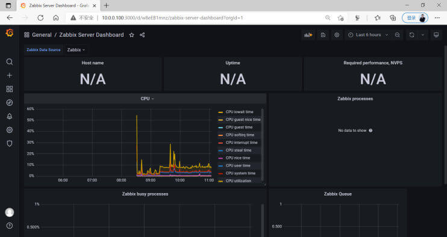</p>
<p>查看第三个dashboard</p>
<p></p>
<p>System load 无数据</p>
<p></p>
<p>编辑System load</p>
<p></p>
<p>默认的监控项有问题，修改对应的监控项的名称(注意:不是监控项的key)</p>
<p></p>
<p>查看到数据出现</p>
<p></p>
<p>模板只有CPU，system load和network，可以修改模板再加其它项目的图形显示</p>
<p><br><br><br><br><br><br></p>
<p></p>
<p>再添加一个文件系统的监控</p>
<p><br><br><br><br><br></p>
<p>拖动图形，放在合适的位置，并保存</p>
<p></p>
<h2 id="导入官网的其它-Grafana-模板"><a href="#导入官网的其它-Grafana-模板" class="headerlink" title="导入官网的其它 Grafana 模板"></a>导入官网的其它 Grafana 模板</h2><p>grafana官网提供了很多图形显示的模板，可以从下面地址查看</p>
<figure class="highlight http"><table><tr><td class="gutter"><pre><span class="line">1</span><br></pre></td><td class="code"><pre><span class="line">https://grafana.com/grafana/dashboards</span><br></pre></td></tr></table></figure>

<p></p>
<p>搜索合适的模板， 一般推荐使用下载量较大的模板</p>
<p></p>
<p>查看模板信息和ID</p>
<p></p>
<p><strong>导入5363模板</strong></p>
<p><br></p>
<p>导入模板</p>
<p></p>
<p>可以选择其它模板 <strong>7877</strong></p>
<p><br></p>
<h2 id="调整模板显示信息"><a href="#调整模板显示信息" class="headerlink" title="调整模板显示信息"></a>调整模板显示信息</h2><p>当前导入的模板不一定都符合要求，可以进一步调整显示信息</p>
<p>默认导入的dashboard无法编辑</p>
<p>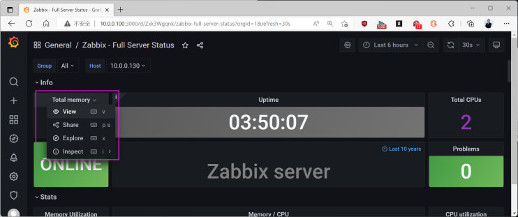</p>
<p>先将此dashboard设为允许编辑</p>
<p><br><br><br><br>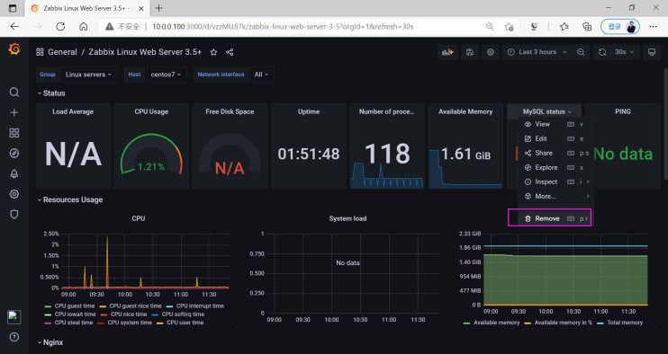<br><br></p>
<p>保存修改后模板</p>
<p><br></p>
<p>查看生成的 Dashboard</p>
<p><br></p>
<h2 id="删除不需要的模板"><a href="#删除不需要的模板" class="headerlink" title="删除不需要的模板"></a>删除不需要的模板</h2><p>如果导入的模板不适合，可以删除</p>
<p></p>
<p>选择不需要的模板</p>
<p><br><br><br><br></p>
<h2 id="自定义-Dashboard"><a href="#自定义-Dashboard" class="headerlink" title="自定义 Dashboard"></a>自定义 Dashboard</h2><p>先创建文件夹，然后在文件夹中创建各种图形</p>
<p>创建后记得save，否则刷新页面会导致数据丢失</p>
<h3 id="创建文件夹"><a href="#创建文件夹" class="headerlink" title="创建文件夹"></a>创建文件夹</h3><p>Dashboards -&gt; Manage -&gt; New folder -&gt;填写名称（Zabbix） -&gt; Create Dashboard</p>
<h3 id="创建CPU图形"><a href="#创建CPU图形" class="headerlink" title="创建CPU图形"></a>创建CPU图形</h3><p>Add an empty panel -&gt; Data source -&gt; 选择 zabbix</p>
<p>Query （数据查询）</p>
<ul>
<li>Group: Zabbix servers</li>
<li>Host: Zabbix server</li>
<li>Application: CPU</li>
<li>Item: 获取负载的监控项，写入正则表达式 /Load/ ，注意大小写敏感</li>
<li>Item: 获取时间的监控项 (/time/)，再创建另一个Panel 取时间的监控项</li>
</ul>
<p>图形美化</p>
<ul>
<li>Title：CPU 平均负载</li>
<li>Tooltip mode：ALL(展示所有指标的数据)、Single（展示选中的单个指标数据）</li>
<li>Unit：CPU负载图形不需要单位（Misc-none）、CPU时间要显示为百分比（Misc-Percent 0-100）</li>
</ul>
<p></p>
<h3 id="创建内存图形"><a href="#创建内存图形" class="headerlink" title="创建内存图形"></a>创建内存图形</h3><p>Query A</p>
<ul>
<li>Group: Zabbix servers</li>
<li>Host: Zabbix server</li>
<li>Application: Memory</li>
<li>Item: Total memory</li>
</ul>
<p>Query B</p>
<ul>
<li>Group: Zabbix servers</li>
<li>Host: Zabbix server</li>
<li>Application: Memory</li>
<li>Item: Available memory</li>
</ul>
<p>图形美化</p>
<ul>
<li>选择 Pie chart 图形</li>
<li>Title：内存使用百分比</li>
<li>unit：单位选择：data -&gt; bytes(IEC)</li>
<li>Lable： 标签选择（Name、Value）</li>
<li>Legend values：数据使用展示选择（Value、Percent）</li>
</ul>
<h3 id="创建流量图形"><a href="#创建流量图形" class="headerlink" title="创建流量图形"></a>创建流量图形</h3><p>Query A</p>
<ul>
<li>Group: Zabbix servers Host: Zabbix server Application: Interface eth0 Item: /Bits/</li>
</ul>
<p>图形美化</p>
<ul>
<li>Title：网卡eth0流量</li>
<li>unit：单位选择：data -&gt; Unit/sec(SI)</li>
<li>Legend values：数据使用展示选择（Last、Min、Max）</li>
</ul>
<p></p>
<h3 id="创建告警面板"><a href="#创建告警面板" class="headerlink" title="创建告警面板"></a>创建告警面板</h3><p>将Zabbix的 Web 仪表板的告警加加入Grafana进行展示</p>
<p>Query Mode：Problems</p>
<p>Visualizations：Zabbix Problems</p>
<p>Title：Zabbix 告警信息</p>
<p></p>
<h3 id="导出-Dashboard"><a href="#导出-Dashboard" class="headerlink" title="导出 Dashboard"></a>导出 Dashboard</h3><p>导出上面自定义的dashboard 为Json文件， 以方便以后使用</p>
<p><br><br>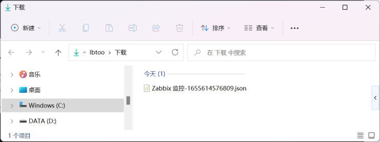</p>
<h2 id="自定义变量实现自定义-Dashboard"><a href="#自定义变量实现自定义-Dashboard" class="headerlink" title="自定义变量实现自定义 Dashboard"></a>自定义变量实现自定义 Dashboard</h2><p>以上都是单台Zabbix Server 服务器的图形比较容易展现，但需要展示多台服务器的图形就需要在从头到尾创建一次，过程比较繁琐</p>
<p>可以使用变量的方式获取对应的主机组，以及主机，然后基于变量来完成图形创建</p>
<h3 id="创建变量"><a href="#创建变量" class="headerlink" title="创建变量"></a>创建变量</h3><p>打开指定Dashboard –&gt; Dashboard Settings –&gt; Variables</p>
<p></p>
<p>设置主机组变量：</p>
<p></p>
<figure class="highlight sh"><table><tr><td class="gutter"><pre><span class="line">1</span><br><span class="line">2</span><br><span class="line">3</span><br><span class="line">4</span><br><span class="line">5</span><br><span class="line">6</span><br><span class="line">7</span><br></pre></td><td class="code"><pre><span class="line">Name：定义名称Group</span><br><span class="line">Data <span class="built_in">source</span>：选择zabbix</span><br><span class="line">Refresh： 跟随时间而变化 on time range</span><br><span class="line">Query Type：选择Group</span><br><span class="line">Group： 提取所有组的正则表达式：/.*/</span><br><span class="line">Selection Options：全部打开</span><br><span class="line">Preview of values：会自动显示当前所有的主机组</span><br></pre></td></tr></table></figure>

<p>设置主机变量：</p>
<p></p>
<figure class="highlight sh"><table><tr><td class="gutter"><pre><span class="line">1</span><br><span class="line">2</span><br><span class="line">3</span><br><span class="line">4</span><br><span class="line">5</span><br><span class="line">6</span><br><span class="line">7</span><br><span class="line">8</span><br></pre></td><td class="code"><pre><span class="line">Name：定义名称Host</span><br><span class="line">Data <span class="built_in">source</span>：选择zabbix</span><br><span class="line">Refresh： 跟随时间而变化 on time range</span><br><span class="line">Query Type：选择Host</span><br><span class="line">Group： 提取所有组的正则表达式：/.*/</span><br><span class="line">Host： 提取所有主机的正则表达式：/.*/</span><br><span class="line">Selection Options：全部打开</span><br><span class="line">Preview of values：会自动显示当前所有的主机</span><br></pre></td></tr></table></figure>

<p>设置完成后记得Save保存</p>
<h3 id="使用变量"><a href="#使用变量" class="headerlink" title="使用变量"></a>使用变量</h3><p>将此前创建的CPU负载图形，修改为变量方式，这样就会更加灵活</p>
<p></p>
<p>Query A</p>
<figure class="highlight sh"><table><tr><td class="gutter"><pre><span class="line">1</span><br><span class="line">2</span><br><span class="line">3</span><br><span class="line">4</span><br></pre></td><td class="code"><pre><span class="line">Group: <span class="variable">$Group</span></span><br><span class="line">Host： <span class="variable">$Host</span></span><br><span class="line">Application：CPU</span><br><span class="line">Item: /Load/</span><br></pre></td></tr></table></figure>

<p>Title：</p>
<figure class="highlight sh"><table><tr><td class="gutter"><pre><span class="line">1</span><br></pre></td><td class="code"><pre><span class="line"><span class="variable">$Group</span> <span class="variable">$Host</span> CPU 平均负载</span><br></pre></td></tr></table></figure>

<p>参考上面的，将CPU时间，内存使用百分比，网卡eth0流量都改为使用变量</p>
<p>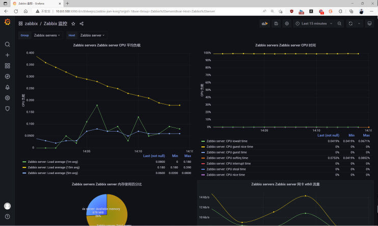<br></p>
<h3 id="将上面自定义的-Dashborad-导出至文件"><a href="#将上面自定义的-Dashborad-导出至文件" class="headerlink" title="将上面自定义的 Dashborad 导出至文件"></a>将上面自定义的 Dashborad 导出至文件</h3><p>导出为json文件</p>
<p></p>
<h3 id="将上面自定义的-Dashborad-文件导入"><a href="#将上面自定义的-Dashborad-文件导入" class="headerlink" title="将上面自定义的 Dashborad 文件导入"></a>将上面自定义的 Dashborad 文件导入</h3><p>将来在另一台主机上导入上面的json文件即可</p>
<p><br><br><br></p>
<h1 id="Zabbix-分布式实现-Proxy"><a href="#Zabbix-分布式实现-Proxy" class="headerlink" title="Zabbix 分布式实现 Proxy"></a>Zabbix 分布式实现 Proxy</h1><h2 id="Zabbix-Proxy-工作原理"><a href="#Zabbix-Proxy-工作原理" class="headerlink" title="Zabbix Proxy 工作原理"></a>Zabbix Proxy 工作原理</h2><h3 id="Zabbix-Proxy-概述"><a href="#Zabbix-Proxy-概述" class="headerlink" title="Zabbix Proxy 概述"></a>Zabbix Proxy 概述</h3><p>zabbix作为一个分布式监控系统(分布式监控解决方案)，支持通过代理(proxy)收集zabbix agent的监控数据，然后由zabbix proxy再把数据发送给zabbix server，也就是zabbix proxy 可以代替zabbix server收集监控数据，然后把数据汇报给zabbix server，所以zabbix proxy可以在一定程度上分担了zabbix server的数据收集压力，从而降低了数据的采集时间、也相应的增加了zabbix server的监控能力。</p>
<p>官方文档: </p>
<figure class="highlight http"><table><tr><td class="gutter"><pre><span class="line">1</span><br><span class="line">2</span><br></pre></td><td class="code"><pre><span class="line">https://www.zabbix.com/documentation/5.0/zh/manual/distributed_monitoring</span><br><span class="line">https://www.zabbix.com/documentation/4.0/zh/manual/distributed_monitoring</span><br></pre></td></tr></table></figure>

<h3 id="Zabbix-Proxy-使用场景"><a href="#Zabbix-Proxy-使用场景" class="headerlink" title="Zabbix Proxy 使用场景"></a>Zabbix Proxy 使用场景</h3><ul>
<li>监控远程区域设备，尤其是多机房和多个云环境时</li>
<li>监控网络不稳定区域，避免跨网段监控的告警不及时</li>
<li>当需要监控设备众多时，使用它来减轻 Zabbix Server 的压力</li>
<li>简化分布式监控的维护，无需各位创建 Zabbix Server,统一管理策略</li>
</ul>
<h3 id="Zabbix-Proxy-架构"><a href="#Zabbix-Proxy-架构" class="headerlink" title="Zabbix Proxy 架构"></a>Zabbix Proxy 架构</h3><p></p>
<h3 id="Zabbix-proxy-功能列表"><a href="#Zabbix-proxy-功能列表" class="headerlink" title="Zabbix proxy 功能列表"></a>Zabbix proxy 功能列表</h3><p>官方文档: </p>
<figure class="highlight http"><table><tr><td class="gutter"><pre><span class="line">1</span><br><span class="line">2</span><br></pre></td><td class="code"><pre><span class="line">https://www.zabbix.com/documentation/5.0/zh/manual/distributed_monitoring/proxies</span><br><span class="line">https://www.zabbix.com/documentation/4.0/zh/manual/distributed_monitoring/proxies</span><br></pre></td></tr></table></figure>

<p>zabbix proxy 是一个数据收集器，它不计算触发器、不处理事件、不发送报警。有关proxy功能的概述，</p>
<p>如下表:</p>
<table>
<thead>
<tr>
<th align="left">功能</th>
<th align="left">proxy支持列表</th>
<th></th>
</tr>
</thead>
<tbody><tr>
<td align="left">Items</td>
<td align="left"></td>
<td></td>
</tr>
<tr>
<td align="left">Zabbix agent checks</td>
<td align="left"><strong>Yes</strong></td>
<td></td>
</tr>
<tr>
<td align="left"><em>Zabbix agent checks (active)</em></td>
<td align="left"><strong>Yes</strong></td>
<td></td>
</tr>
<tr>
<td align="left"><em>Simple checks</em></td>
<td align="left"><strong>Yes</strong></td>
<td></td>
</tr>
<tr>
<td align="left"><em>Trapper items</em></td>
<td align="left"><strong>Yes</strong></td>
<td></td>
</tr>
<tr>
<td align="left"><em>SNMP checks</em></td>
<td align="left"><strong>Yes</strong></td>
<td></td>
</tr>
<tr>
<td align="left"><em>SNMP traps</em></td>
<td align="left"><strong>Yes</strong></td>
<td></td>
</tr>
<tr>
<td align="left"><em>IPMI checks</em></td>
<td align="left"><strong>Yes</strong></td>
<td></td>
</tr>
<tr>
<td align="left"><em>JMX checks</em></td>
<td align="left"><strong>Yes</strong></td>
<td></td>
</tr>
<tr>
<td align="left">日志文件监控<em>Log file monitoring</em></td>
<td align="left"><strong>Yes</strong></td>
<td></td>
</tr>
<tr>
<td align="left">内部检查<em>Internal checks</em></td>
<td align="left"><strong>Yes</strong></td>
<td></td>
</tr>
<tr>
<td align="left"><em>SSH checks</em></td>
<td align="left"><strong>Yes</strong></td>
<td></td>
</tr>
<tr>
<td align="left"><em>Telnet checks</em></td>
<td align="left"><strong>Yes</strong></td>
<td></td>
</tr>
<tr>
<td align="left">外部检查<em>External checks</em></td>
<td align="left"><strong>Yes</strong></td>
<td></td>
</tr>
<tr>
<td align="left"><em>Dependent items</em></td>
<td align="left"><strong>Yes</strong></td>
<td></td>
</tr>
<tr>
<td align="left"><em>Script items</em></td>
<td align="left"><strong>Yes</strong></td>
<td></td>
</tr>
<tr>
<td align="left">内置web监控Built-in web monitoring</td>
<td align="left"><strong>Yes</strong></td>
<td></td>
</tr>
<tr>
<td align="left">Item value preprocessing</td>
<td align="left"><strong>Yes</strong></td>
<td></td>
</tr>
<tr>
<td align="left">网络发现Network discovery</td>
<td align="left"><strong>Yes</strong></td>
<td></td>
</tr>
<tr>
<td align="left">Active agent autoregistration</td>
<td align="left"><strong>Yes</strong></td>
<td></td>
</tr>
<tr>
<td align="left">自动发现Low-level discovery</td>
<td align="left"><strong>Yes</strong></td>
<td></td>
</tr>
<tr>
<td align="left">远程命令Remote commands</td>
<td align="left"><strong>Yes</strong></td>
<td></td>
</tr>
<tr>
<td align="left">触发器计算Calculating triggers</td>
<td align="left"><em>No</em></td>
<td></td>
</tr>
<tr>
<td align="left">处理事件Processing events</td>
<td align="left"><em>No</em></td>
<td></td>
</tr>
<tr>
<td align="left">Event correlation</td>
<td align="left"><em>No</em></td>
<td></td>
</tr>
<tr>
<td align="left">发送报警Sending alerts</td>
<td align="left"><em>No</em></td>
<td></td>
</tr>
</tbody></table>
<h3 id="Zabbix-Server-和-Zabbix-Proxy-区别"><a href="#Zabbix-Server-和-Zabbix-Proxy-区别" class="headerlink" title="Zabbix Server 和 Zabbix Proxy 区别"></a>Zabbix Server 和 Zabbix Proxy 区别</h3><p><strong>Zabbix Proxy 只执行数据收集，不运行触发器，无处理事件，也不发送告警，无Web管理界面</strong></p>
<p><strong>所以最终导致告警延时可能会比较长</strong></p>
<table>
<thead>
<tr>
<th></th>
<th>zabbix server</th>
<th>zabbix proxy</th>
</tr>
</thead>
<tbody><tr>
<td>轻量级</td>
<td>否</td>
<td>是</td>
</tr>
<tr>
<td>图形化</td>
<td>有</td>
<td>无</td>
</tr>
<tr>
<td>独立工作</td>
<td>是，可实现数据采集，存储，分析，展示</td>
<td>是，可实现数据采集和存储</td>
</tr>
<tr>
<td>维护</td>
<td>容易</td>
<td>很容易，配置完成后基本无需管理</td>
</tr>
<tr>
<td>独立数据库</td>
<td>有独立数据库，保留指定时间内的所有数据</td>
<td>每个Proxy都有独立数据库，保留部分数据</td>
</tr>
<tr>
<td>告警通知</td>
<td>支持邮件，短信，微信等告警机制</td>
<td>不支持</td>
</tr>
</tbody></table>
<h2 id="Zabbix-Proxy-安装和配置"><a href="#Zabbix-Proxy-安装和配置" class="headerlink" title="Zabbix Proxy 安装和配置"></a>Zabbix Proxy 安装和配置</h2><p>Zabbix Proxy 也分主动模式和被动模式，通信方式与zabbix server主动模式和被动模式一样</p>
<p>Zabbix Proxy的模式 是从Zabbix Proxy 角度来说的</p>
<p>zabbix proxy在主动模式下要主动地向zabbix server周期性的申请获取zabbix agent的监控项信息，此模式可以大幅降低Zabbix Server的压力，生产推荐使用</p>
<p>Zabbix Proxy在被动模式下要被动地等待zabbix server的连接，并接受zabbix server发送的监控项指令，然后再由zabbix proxy向zabbix agent发起请求获取数据。</p>
<p>注意: Zabbix Proxy的大版本必须要和zabbix server版本相同，否则很可能会导致出现zabbix server与zabbix proxy不兼容问题</p>
<p><strong>安装环境准备</strong></p>
<p></p>
<table>
<thead>
<tr>
<th>地址</th>
<th>角色</th>
<th>安装方法</th>
<th>系统</th>
</tr>
</thead>
<tbody><tr>
<td>10.0.0.100</td>
<td>Zabbix Server,MySQL</td>
<td></td>
<td>CentOS 8,Ubuntu18.04</td>
</tr>
<tr>
<td>10.0.0.101</td>
<td>Zabbix Proxy主动模式,MySQL</td>
<td>包安装</td>
<td>CentOS 8,Ubuntu18.04</td>
</tr>
<tr>
<td>10.0.0.102</td>
<td>Zabbix Proxy 被动模式,MySQL</td>
<td>编译安装</td>
<td>CentOS 8,Ubuntu18.04</td>
</tr>
</tbody></table>
<p>官方安装文档</p>
<figure class="highlight http"><table><tr><td class="gutter"><pre><span class="line">1</span><br><span class="line">2</span><br></pre></td><td class="code"><pre><span class="line">https://www.zabbix.com/documentation/5.0/zh/manual/installation/install_from_packages/debian_ubuntu</span><br><span class="line">https://www.zabbix.com/documentation/5.0/zh/manual/installation/install_from_packages/rhel_centos</span><br></pre></td></tr></table></figure>

<h3 id="安装-Zabbix-Proxy"><a href="#安装-Zabbix-Proxy" class="headerlink" title="安装 Zabbix Proxy"></a>安装 Zabbix Proxy</h3><p>可以通过包和编译两种方式进行安装</p>
<h4 id="二进制包安装"><a href="#二进制包安装" class="headerlink" title="二进制包安装"></a>二进制包安装</h4><p>范例: Ubuntu 安装 Zabbix Proxy</p>
<figure class="highlight sh"><table><tr><td class="gutter"><pre><span class="line">1</span><br><span class="line">2</span><br><span class="line">3</span><br><span class="line">4</span><br><span class="line">5</span><br><span class="line">6</span><br><span class="line">7</span><br><span class="line">8</span><br><span class="line">9</span><br><span class="line">10</span><br><span class="line">11</span><br><span class="line">12</span><br></pre></td><td class="code"><pre><span class="line"><span class="comment">#Ubuntu20.04</span></span><br><span class="line">[root@zabbix-proxy]<span class="comment"># wget https://repo.zabbix.com/zabbix/5.0/ubuntu/pool/main/z/zabbix-release/zabbix-release_5.0-1%2Bfocal_all.deb</span></span><br><span class="line"></span><br><span class="line"><span class="comment">#Ubuntu18.04</span></span><br><span class="line">[root@zabbix-proxy]<span class="comment"># wget https://repo.zabbix.com/zabbix/5.0/ubuntu/pool/main/z/zabbix-release/zabbix-release_5.0-1+bionic_all.deb</span></span><br><span class="line"></span><br><span class="line">[root@zabbix-proxy]<span class="comment"># dpkg -i zabbix-release_5.0-1+bionic_all.deb</span></span><br><span class="line">[root@zabbix-proxy]<span class="comment"># sed -i &#x27;s#http://repo.zabbix.com#https://mirrors.aliyun.com/zabbix#&#x27; /etc/apt/sources.list.d/zabbix.list</span></span><br><span class="line"></span><br><span class="line">[root@zabbix-proxy]<span class="comment"># apt update</span></span><br><span class="line">[root@zabbix-proxy]<span class="comment"># apt -y install zabbix-proxy-mysql zabbix-agent</span></span><br><span class="line">[root@zabbix-proxy]<span class="comment"># systemctl enable zabbix-proxy.service zabbix-agent.service</span></span><br></pre></td></tr></table></figure>

<p>范例: CentOS 安装 Zabbix Proxy</p>
<figure class="highlight sh"><table><tr><td class="gutter"><pre><span class="line">1</span><br><span class="line">2</span><br><span class="line">3</span><br><span class="line">4</span><br><span class="line">5</span><br><span class="line">6</span><br><span class="line">7</span><br><span class="line">8</span><br><span class="line">9</span><br><span class="line">10</span><br><span class="line">11</span><br><span class="line">12</span><br><span class="line">13</span><br><span class="line">14</span><br><span class="line">15</span><br><span class="line">16</span><br><span class="line">17</span><br><span class="line">18</span><br><span class="line">19</span><br><span class="line">20</span><br><span class="line">21</span><br><span class="line">22</span><br><span class="line">23</span><br><span class="line">24</span><br><span class="line">25</span><br><span class="line">26</span><br><span class="line">27</span><br><span class="line">28</span><br><span class="line">29</span><br><span class="line">30</span><br><span class="line">31</span><br><span class="line">32</span><br><span class="line">33</span><br><span class="line">34</span><br><span class="line">35</span><br><span class="line">36</span><br><span class="line">37</span><br></pre></td><td class="code"><pre><span class="line">[root@zabbix-proxy-active ~]<span class="comment"># rpm -Uvh https://repo.zabbix.com/zabbix/5.0/rhel/8/x86_64/zabbix-release-5.0-1.el8.noarch.rpm</span></span><br><span class="line">[root@zabbix-proxy-active ~]<span class="comment"># rpm -Uvh https://repo.zabbix.com/zabbix/4.0/rhel/8/x86_64/zabbix-release-4.0-2.el8.noarch.rpm</span></span><br><span class="line"></span><br><span class="line"><span class="comment">#修改为阿里云源</span></span><br><span class="line">[root@zabbix-proxy-active ~]<span class="comment"># vim /etc/yum.repos.d/zabbix.repo</span></span><br><span class="line">[zabbix]</span><br><span class="line">name=Zabbix Official Repository - <span class="variable">$basearch</span></span><br><span class="line">baseurl=https://mirrors.aliyun.com/zabbix/zabbix/4.0/rhel/8/x86_64/        </span><br><span class="line">enabled=1</span><br><span class="line">gpgcheck=1</span><br><span class="line">gpgkey=file:///etc/pki/rpm-gpg/RPM-GPG-KEY-ZABBIX-A14FE591</span><br><span class="line"></span><br><span class="line"><span class="comment">#或者sed修改</span></span><br><span class="line">[root@zabbix-proxy-active ~]<span class="comment"># sed -i.bak &#x27;s/repo.zabbix.com/mirrors.aliyun.com\/zabbix/&#x27; /etc/yum.repos.d/zabbix.repo</span></span><br><span class="line"></span><br><span class="line">[root@zabbix-proxy-active ~]<span class="comment"># yum -y install zabbix-proxy-mysql zabbix-agent</span></span><br><span class="line"></span><br><span class="line">[root@zabbix-proxy-active ~]<span class="comment"># rpm -ql zabbix-proxy-mysql</span></span><br><span class="line">/etc/logrotate.d/zabbix-proxy</span><br><span class="line">/etc/zabbix/zabbix_proxy.conf</span><br><span class="line">/usr/lib/.build-id</span><br><span class="line">/usr/lib/.build-id/a1</span><br><span class="line">/usr/lib/.build-id/a1/03f07446a72d32dcfc88cbff0f5d8317b65fac</span><br><span class="line">/usr/lib/systemd/system/zabbix-proxy.service</span><br><span class="line">/usr/lib/tmpfiles.d/zabbix-proxy.conf</span><br><span class="line">/usr/lib/zabbix/externalscripts</span><br><span class="line">/usr/sbin/zabbix_proxy_mysql</span><br><span class="line">/usr/share/doc/zabbix-proxy-mysql</span><br><span class="line">/usr/share/doc/zabbix-proxy-mysql/AUTHORS</span><br><span class="line">/usr/share/doc/zabbix-proxy-mysql/COPYING</span><br><span class="line">/usr/share/doc/zabbix-proxy-mysql/ChangeLog</span><br><span class="line">/usr/share/doc/zabbix-proxy-mysql/NEWS</span><br><span class="line">/usr/share/doc/zabbix-proxy-mysql/README</span><br><span class="line">/usr/share/doc/zabbix-proxy-mysql/schema.sql.gz</span><br><span class="line">/usr/share/man/man8/zabbix_proxy.8.gz</span><br><span class="line">/var/log/zabbix</span><br><span class="line">/var/run/zabbix</span><br></pre></td></tr></table></figure>

<h4 id="源码编译安装"><a href="#源码编译安装" class="headerlink" title="源码编译安装"></a>源码编译安装</h4><figure class="highlight sh"><table><tr><td class="gutter"><pre><span class="line">1</span><br><span class="line">2</span><br><span class="line">3</span><br><span class="line">4</span><br><span class="line">5</span><br><span class="line">6</span><br><span class="line">7</span><br><span class="line">8</span><br><span class="line">9</span><br><span class="line">10</span><br><span class="line">11</span><br><span class="line">12</span><br><span class="line">13</span><br><span class="line">14</span><br><span class="line">15</span><br><span class="line">16</span><br><span class="line">17</span><br><span class="line">18</span><br><span class="line">19</span><br><span class="line">20</span><br><span class="line">21</span><br><span class="line">22</span><br><span class="line">23</span><br><span class="line">24</span><br><span class="line">25</span><br><span class="line">26</span><br><span class="line">27</span><br><span class="line">28</span><br><span class="line">29</span><br><span class="line">30</span><br><span class="line">31</span><br><span class="line">32</span><br><span class="line">33</span><br><span class="line">34</span><br><span class="line">35</span><br><span class="line">36</span><br><span class="line">37</span><br><span class="line">38</span><br><span class="line">39</span><br><span class="line">40</span><br><span class="line">41</span><br><span class="line">42</span><br><span class="line">43</span><br><span class="line">44</span><br><span class="line">45</span><br><span class="line">46</span><br><span class="line">47</span><br><span class="line">48</span><br></pre></td><td class="code"><pre><span class="line"><span class="comment">#CentOS8安装</span></span><br><span class="line">[root@zabbix-proxy-passive ~]<span class="comment"># yum -y install gcc mysql-devel libxml2-devel net-snmp-devel libssh2-devel curl-devel pcre-devel libevent-devel</span></span><br><span class="line"></span><br><span class="line"><span class="comment">#Ubuntu18.04安装</span></span><br><span class="line">[root@zabbix-proxy-passive ~]<span class="comment"># apt -y install gcc make libxml2-dev libevent-dev libmysqlclient-dev libsnmp-dev libssh2-1-dev libcurl4-openssl-dev</span></span><br><span class="line"></span><br><span class="line">[root@zabbix-proxy-passive ~]<span class="comment"># useradd zabbix</span></span><br><span class="line">[root@zabbix-proxy-passive ~]<span class="comment"># wget https://cdn.zabbix.com/zabbix/sources/stable/5.0/zabbix-5.0.13.tar.gz</span></span><br><span class="line"></span><br><span class="line"><span class="comment">#旧版</span></span><br><span class="line">[root@zabbix-proxy-passive ~]<span class="comment"># wget https://cdn.zabbix.com/zabbix/sources/stable/4.0/zabbix-4.0.24.tar.gz</span></span><br><span class="line">[root@zabbix-proxy-passive ~]<span class="comment"># tar xf zabbix-5.0.13.tar.gz</span></span><br><span class="line">[root@zabbix-proxy-passive ~]<span class="comment"># tar xf zabbix-4.0.24.tar.gz</span></span><br><span class="line">[root@zabbix-proxy-passive ~]<span class="comment"># cd zabbix-5.0.13/</span></span><br><span class="line">[root@zabbix-proxy-passive ~]<span class="comment"># cd zabbix-4.0.24/</span></span><br><span class="line">[root@zabbix-proxy-passive zabbix-5.0.13]<span class="comment"># ./configure --prefix=/apps/zabbix_proxy \</span></span><br><span class="line">--enable-proxy --with-agent --with-net-snmp --with-mysql --with-ssh2 --with-libcurl \</span><br><span class="line">--with-libxml2</span><br><span class="line"></span><br><span class="line">[root@zabbix-proxy-passive zabbix-4.0.24]<span class="comment"># ./configure --prefix=/apps/zabbix_proxy \</span></span><br><span class="line">--enable-proxy --with-agent --with-net-snmp --with-mysql --with-ssh2 --with-libcurl \</span><br><span class="line">--with-libxml2</span><br><span class="line"></span><br><span class="line">[root@zabbix-proxy-passive zabbix-4.0.24]<span class="comment"># make &amp;&amp; make install</span></span><br><span class="line"></span><br><span class="line"><span class="comment">#创建service文件</span></span><br><span class="line">[root@zabbix-proxy-passive ~]<span class="comment"># cat /lib/systemd/system/zabbix-proxy.service </span></span><br><span class="line">[Unit]</span><br><span class="line">Description=Zabbix Proxy</span><br><span class="line">After=syslog.target</span><br><span class="line">After=network.target</span><br><span class="line"></span><br><span class="line">[Service]</span><br><span class="line">Environment=<span class="string">&quot;CONFFILE=/apps/zabbix_proxy/etc/zabbix_proxy.conf&quot;</span></span><br><span class="line">EnvironmentFile=-/etc/sysconfig/zabbix-proxy</span><br><span class="line">Type=forking</span><br><span class="line">Restart=on-failure</span><br><span class="line">PIDFile=/tmp/zabbix_proxy.pid</span><br><span class="line">KillMode=control-group</span><br><span class="line">ExecStart=/apps/zabbix_proxy/sbin/zabbix_proxy  -c <span class="variable">$CONFFILE</span></span><br><span class="line">ExecStop=/bin/kill -SIGTERM <span class="variable">$MAINPID</span></span><br><span class="line">RestartSec=10s</span><br><span class="line">TimeoutSec=0</span><br><span class="line"></span><br><span class="line">[Install]</span><br><span class="line">WantedBy=multi-user.target</span><br><span class="line"></span><br><span class="line">[root@zabbix-proxy-passive ~]<span class="comment"># systemctl daemon-reload </span></span><br></pre></td></tr></table></figure>

<h3 id="准备数据库-1"><a href="#准备数据库-1" class="headerlink" title="准备数据库"></a>准备数据库</h3><p>为Zabbix Proxy 创建一个单独的数据库</p>
<p>注意：Zabbix server和Zabbix proxy不能使用相同的数据库。 如果它们安装在同一主机上，则proxy数据库必须具有不同的名称</p>
<h4 id="为主动模式的-Proxy-准备独立的数据库"><a href="#为主动模式的-Proxy-准备独立的数据库" class="headerlink" title="为主动模式的 Proxy 准备独立的数据库"></a>为主动模式的 Proxy 准备独立的数据库</h4><p>在MySQL 服务器上创建数据库和用户授权</p>
<figure class="highlight plaintext"><table><tr><td class="gutter"><pre><span class="line">1</span><br><span class="line">2</span><br><span class="line">3</span><br><span class="line">4</span><br><span class="line">5</span><br><span class="line">6</span><br><span class="line">7</span><br><span class="line">8</span><br><span class="line">9</span><br><span class="line">10</span><br><span class="line">11</span><br><span class="line">12</span><br><span class="line">13</span><br><span class="line">14</span><br><span class="line">15</span><br><span class="line">16</span><br><span class="line">17</span><br><span class="line">18</span><br><span class="line">19</span><br><span class="line">20</span><br></pre></td><td class="code"><pre><span class="line">[root@zabbix-proxy-active ~]# apt -y install mysql-server</span><br><span class="line">[root@zabbix-proxy-active ~]# mysql</span><br><span class="line">mysql&gt; select version();</span><br><span class="line">+-----------+</span><br><span class="line">| version() |</span><br><span class="line">+-----------+</span><br><span class="line">| 8.0.17    |</span><br><span class="line">+-----------+</span><br><span class="line">1 row in set (0.00 sec)</span><br><span class="line"></span><br><span class="line">mysql&gt; create database zabbix_proxy_active character set utf8 collate utf8_bin;</span><br><span class="line">mysql&gt; create user proxy@&#x27;localhost&#x27; identified by &#x27;123456&#x27;;</span><br><span class="line">mysql&gt; grant all on zabbix_proxy_active.* to proxy@&#x27;localhost&#x27; ;</span><br><span class="line"></span><br><span class="line">#从Proxy主机导入和zabbix Server不同的数据库和表</span><br><span class="line">[root@zabbix-proxy-active ~]# yum -y install mysql</span><br><span class="line">[root@zabbix-proxy-active ~]# apt -y install mysql</span><br><span class="line"></span><br><span class="line">#包安装的路径</span><br><span class="line">[root@zabbix-proxy-active ~]# zcat /usr/share/doc/zabbix-proxy-mysql/schema.sql.gz | mysql -uproxy -p123456 -h10.0.0.101 zabbix_proxy_active </span><br></pre></td></tr></table></figure>

<h4 id="为被动模式的-proxy-准备独立的数据库"><a href="#为被动模式的-proxy-准备独立的数据库" class="headerlink" title="为被动模式的 proxy 准备独立的数据库"></a>为被动模式的 proxy 准备独立的数据库</h4><figure class="highlight sh"><table><tr><td class="gutter"><pre><span class="line">1</span><br><span class="line">2</span><br><span class="line">3</span><br><span class="line">4</span><br><span class="line">5</span><br><span class="line">6</span><br><span class="line">7</span><br><span class="line">8</span><br><span class="line">9</span><br><span class="line">10</span><br><span class="line">11</span><br></pre></td><td class="code"><pre><span class="line">[root@zabbix-proxy-passive ~]<span class="comment"># apt -y install mysql-server</span></span><br><span class="line">[root@zabbix-proxy-passive ~]<span class="comment"># mysql</span></span><br><span class="line">mysql&gt; create database zabbix_proxy_passive character <span class="built_in">set</span> utf8 collate utf8_bin;</span><br><span class="line">mysql&gt; grant all on zabbix_proxy_passive.* to proxy@<span class="string">&#x27;10.0.0.%&#x27;</span> identified by <span class="string">&#x27;123456&#x27;</span> ;</span><br><span class="line"></span><br><span class="line"><span class="comment">#创建被动模式使用的数据库和表</span></span><br><span class="line">[root@zabbix-proxy-passive zabbix-5.0.13]<span class="comment"># pwd</span></span><br><span class="line">/root/zabbix-5.0.13</span><br><span class="line"></span><br><span class="line"><span class="comment">#源码编译的路径</span></span><br><span class="line">[root@zabbix-proxy-passive zabbix-5.0.13]<span class="comment"># mysql -uproxy -p123456 zabbix_proxy_passive &lt; database/mysql/schema.sql</span></span><br></pre></td></tr></table></figure>

<h4 id="MySQL-8-0-特殊配置"><a href="#MySQL-8-0-特殊配置" class="headerlink" title="MySQL 8.0 特殊配置"></a>MySQL 8.0 特殊配置</h4><p>MySQL 8.0 出现下面错误</p>
<figure class="highlight sh"><table><tr><td class="gutter"><pre><span class="line">1</span><br><span class="line">2</span><br><span class="line">3</span><br><span class="line">4</span><br><span class="line">5</span><br><span class="line">6</span><br><span class="line">7</span><br></pre></td><td class="code"><pre><span class="line">[root@zabbix-proxy-active ~]<span class="comment"># tail /var/log/zabbix/zabbix_proxy.log</span></span><br><span class="line"> 6606:20200830:223952.519 using configuration file: /etc/zabbix/zabbix_proxy.conf</span><br><span class="line"> 6606:20200830:223952.520 [Z3001] connection to database <span class="string">&#x27;zabbix_proxy_active&#x27;</span></span><br><span class="line">      failed: [2059] Plugin caching_sha2_password could not be loaded: </span><br><span class="line">      lib64/mariadb/plugin/caching_sha2_password.so: cannot open shared object file: No </span><br><span class="line">      such file or directory</span><br><span class="line"> 6606:20200830:223952.520 Cannot connect to the database. Exiting...</span><br></pre></td></tr></table></figure>

<p>错误原因:</p>
<figure class="highlight http"><table><tr><td class="gutter"><pre><span class="line">1</span><br><span class="line">2</span><br></pre></td><td class="code"><pre><span class="line">MySQL8.0 默认使用caching_sha2_password作为身份验证插件，而旧版是使用mysql_native_password。</span><br><span class="line">当连接MySQL时报错“plugin caching_sha2_password could not be loaded”时，可换回旧版插件。</span><br></pre></td></tr></table></figure>

<p>解决方法: </p>
<figure class="highlight sh"><table><tr><td class="gutter"><pre><span class="line">1</span><br><span class="line">2</span><br><span class="line">3</span><br><span class="line">4</span><br><span class="line">5</span><br><span class="line">6</span><br><span class="line">7</span><br><span class="line">8</span><br><span class="line">9</span><br><span class="line">10</span><br><span class="line">11</span><br><span class="line">12</span><br><span class="line">13</span><br><span class="line">14</span><br><span class="line">15</span><br><span class="line">16</span><br><span class="line">17</span><br></pre></td><td class="code"><pre><span class="line"><span class="comment">#方法1</span></span><br><span class="line">[root@zabbix-mysql-master ~]<span class="comment"># mysql</span></span><br><span class="line">mysql&gt;ALTER USER <span class="string">&#x27;proxy&#x27;</span>@<span class="string">&#x27;localhost&#x27;</span> IDENTIFIED WITH mysql_native_password BY <span class="string">&#x27;123456&#x27;</span>; <span class="comment">#修改密码加密策略</span></span><br><span class="line">mysql&gt;FLUSH PRIVILEGES;</span><br><span class="line"></span><br><span class="line"><span class="comment">#下面步骤可选</span></span><br><span class="line">mysql&gt;grant SUPER on *.* to proxy@<span class="string">&#x27;localhost&#x27;</span> ;</span><br><span class="line">mysql&gt;ALTER USER <span class="string">&#x27;proxy&#x27;</span>@<span class="string">&#x27;localhost&#x27;</span> IDENTIFIED BY <span class="string">&#x27;123456&#x27;</span> PASSWORD EXPIRE NEVER;</span><br><span class="line"></span><br><span class="line"><span class="comment">#方法2</span></span><br><span class="line"><span class="comment">#Ubuntu20.04</span></span><br><span class="line">[root@ubuntu2004 ~]<span class="comment"># echo &#x27;default-authentication-plugin=mysql_native_password&#x27; &gt;&gt; /etc/mysql/mysql.conf.d/mysqld.cnf</span></span><br><span class="line">[root@ubuntu2004 ~]<span class="comment"># systemctl restart mysql</span></span><br><span class="line"></span><br><span class="line"><span class="comment">#Rocky和CentOS</span></span><br><span class="line">[root@zabbix-mysql-master ~]<span class="comment"># echo &#x27;default-authentication-plugin=mysql_native_password&#x27; &gt;&gt; /etc/my.cnf.d/mysql-server.cnf</span></span><br><span class="line">[root@zabbix-mysql-master ~]<span class="comment"># systemctl restart mysqld</span></span><br></pre></td></tr></table></figure>

<h3 id="主动模式配置"><a href="#主动模式配置" class="headerlink" title="主动模式配置"></a>主动模式配置</h3><h4 id="修改proxy配置文件"><a href="#修改proxy配置文件" class="headerlink" title="修改proxy配置文件"></a>修改proxy配置文件</h4><figure class="highlight sh"><table><tr><td class="gutter"><pre><span class="line">1</span><br><span class="line">2</span><br><span class="line">3</span><br><span class="line">4</span><br><span class="line">5</span><br><span class="line">6</span><br><span class="line">7</span><br><span class="line">8</span><br><span class="line">9</span><br><span class="line">10</span><br><span class="line">11</span><br><span class="line">12</span><br><span class="line">13</span><br><span class="line">14</span><br><span class="line">15</span><br><span class="line">16</span><br><span class="line">17</span><br><span class="line">18</span><br><span class="line">19</span><br><span class="line">20</span><br><span class="line">21</span><br><span class="line">22</span><br><span class="line">23</span><br><span class="line">24</span><br><span class="line">25</span><br><span class="line">26</span><br><span class="line">27</span><br><span class="line">28</span><br><span class="line">29</span><br><span class="line">30</span><br><span class="line">31</span><br><span class="line">32</span><br><span class="line">33</span><br><span class="line">34</span><br><span class="line">35</span><br><span class="line">36</span><br><span class="line">37</span><br><span class="line">38</span><br><span class="line">39</span><br><span class="line">40</span><br><span class="line">41</span><br><span class="line">42</span><br><span class="line">43</span><br><span class="line">44</span><br><span class="line">45</span><br><span class="line">46</span><br><span class="line">47</span><br><span class="line">48</span><br><span class="line">49</span><br><span class="line">50</span><br><span class="line">51</span><br><span class="line">52</span><br><span class="line">53</span><br><span class="line">54</span><br><span class="line">55</span><br><span class="line">56</span><br><span class="line">57</span><br><span class="line">58</span><br><span class="line">59</span><br><span class="line">60</span><br><span class="line">61</span><br><span class="line">62</span><br><span class="line">63</span><br><span class="line">64</span><br><span class="line">65</span><br><span class="line">66</span><br><span class="line">67</span><br><span class="line">68</span><br><span class="line">69</span><br><span class="line">70</span><br><span class="line">71</span><br><span class="line">72</span><br><span class="line">73</span><br><span class="line">74</span><br><span class="line">75</span><br><span class="line">76</span><br><span class="line">77</span><br><span class="line">78</span><br><span class="line">79</span><br><span class="line">80</span><br><span class="line">81</span><br><span class="line">82</span><br><span class="line">83</span><br><span class="line">84</span><br><span class="line">85</span><br><span class="line">86</span><br><span class="line">87</span><br><span class="line">88</span><br><span class="line">89</span><br><span class="line">90</span><br><span class="line">91</span><br><span class="line">92</span><br><span class="line">93</span><br><span class="line">94</span><br><span class="line">95</span><br><span class="line">96</span><br><span class="line">97</span><br><span class="line">98</span><br><span class="line">99</span><br><span class="line">100</span><br><span class="line">101</span><br></pre></td><td class="code"><pre><span class="line">[root@zabbix-proxy-active ~]<span class="comment"># grep &#x27;^[^#]&#x27; /etc/zabbix/zabbix_proxy.conf </span></span><br><span class="line">ProxyMode=0                         <span class="comment">#主动模式为0，被动模式为1,默认为0即主动模式</span></span><br><span class="line">Server=10.0.0.100                   <span class="comment">#指向Zabbix Server</span></span><br><span class="line">Hostname=zabbix-proxy-active        <span class="comment">#此名称必须和后面Web管理页的agent代理程序名称相同</span></span><br><span class="line">DBHost=localhost                    <span class="comment">#MySQL服务器地址</span></span><br><span class="line">DBName=zabbix_proxy_active          <span class="comment">#MySQL 数据库名</span></span><br><span class="line">DBUser=proxy                        <span class="comment">#连接MySQL的用户</span></span><br><span class="line">DBPassword=123456                   <span class="comment">#连接MySQL的用户密码</span></span><br><span class="line">LogFile=/var/log/zabbix/zabbix_proxy.log</span><br><span class="line">LogFileSize=0</span><br><span class="line">DebugLevel=4                        <span class="comment">#指定日志级别，默认为3，值越大日志越详细</span></span><br><span class="line">EnableRemoteCommands=1              <span class="comment">#开启远程命令，允许server到proxy上执行命令，在故障自愈时使用</span></span><br><span class="line">PidFile=/var/run/zabbix/zabbix_proxy.pid</span><br><span class="line">SocketDir=/var/run/zabbix</span><br><span class="line">ProxyLocalBuffer=360             <span class="comment">#当proxy将数据发送给server后将数据仍在本地保存多少时间，默认不保留</span></span><br><span class="line">ProxyOfflineBuffer=720           <span class="comment">#当proxy和server无法连接时将数据在本地保存多长时间，默认1小时</span></span><br><span class="line">HeartbeatFrequency=60            <span class="comment">#server端用来检测proxy可用性的心跳信息的时间间隔，被动模式无效</span></span><br><span class="line">ConfigFrequency=60               <span class="comment">#每间隔多少时间到server获取监控项，在agent更新端监控项，只在主动模式有效，默认3600s</span></span><br><span class="line">DataSenderFrequency=60           <span class="comment">#数据发送的间隔时间，只在主动模式有效，默认1s,建议加长</span></span><br><span class="line">JavaGateway=10.0.0.101           <span class="comment">#指向JAVA gateway主机</span></span><br><span class="line">StartJavaPollers=10              <span class="comment">#指定开启的进程数，默认为0，即不开启</span></span><br><span class="line">SNMPTrapperFile=/var/log/snmptrap/snmptrap.log</span><br><span class="line">CacheSize=8M                      <span class="comment">#当主机数量很多时，会将获取的监控项存放在缓存中，生产中设置2G</span></span><br><span class="line">StartDBSyncers=4                  <span class="comment">#启动多少个线程和数据库连接</span></span><br><span class="line">HistoryCacheSize=16M              <span class="comment">#保存agent发送过来的监控数据的内存空间大小，生产中设置2G </span></span><br><span class="line">HistoryIndexCacheSize=4M          <span class="comment">#历史数据的索引</span></span><br><span class="line">Timeout=30                        <span class="comment">#获取数据的最长等待时间</span></span><br><span class="line">ExternalScripts=/usr/lib/zabbix/externalscripts</span><br><span class="line">LogSlowQueries=3000               <span class="comment">#慢查询时长</span></span><br><span class="line"></span><br><span class="line">[root@zabbix-proxy-active ~]<span class="comment"># systemctl restart zabbix-proxy.service</span></span><br><span class="line"></span><br><span class="line"><span class="comment">#Zabbix Proxy 监听10051/tcp端口</span></span><br><span class="line">[root@zabbix-proxy-active ~]<span class="comment"># ss -ntl</span></span><br><span class="line">State               Recv-Q Send-Q     Local Address:Port     Peer Address:Port </span><br><span class="line">LISTEN               0      128              0.0.0.0:22             0.0.0.0:* </span><br><span class="line">LISTEN               0      100            127.0.0.1:25             0.0.0.0:* </span><br><span class="line">LISTEN               0      128              0.0.0.0:10050          0.0.0.0:*</span><br><span class="line">LISTEN               0      128              0.0.0.0:10051          0.0.0.0:* </span><br><span class="line">LISTEN               0      128                 [::]:22                [::]:* </span><br><span class="line">LISTEN               0      100                [::1]:25                [::]:*</span><br><span class="line">LISTEN               0      128                 [::]:10050             [::]:*</span><br><span class="line">LISTEN               0      128                 [::]:10051             [::]:*</span><br><span class="line">LISTEN               0      70                     *:33060                *:*</span><br><span class="line">LISTEN               0      128                   *:3306                  *:*</span><br><span class="line">  </span><br><span class="line">[root@zabbix-proxy-active ~]<span class="comment"># tail /var/log/zabbix/zabbix_proxy.log -f</span></span><br><span class="line">  6832:20200830:225242.864 cannot send proxy data to server at <span class="string">&quot;10.0.0.100&quot;</span>: proxy <span class="string">&quot;zabbix-proxy-active&quot;</span> not found</span><br><span class="line">  6832:20200830:225243.867 cannot send proxy data to server at <span class="string">&quot;10.0.0.100&quot;</span>: proxy <span class="string">&quot;zabbix-proxy-active&quot;</span> not found</span><br><span class="line">  6832:20200830:225244.870 cannot send proxy data to server at <span class="string">&quot;10.0.0.100&quot;</span>: proxy <span class="string">&quot;zabbix-proxy-active&quot;</span> not found</span><br><span class="line">  6832:20200830:225245.875 cannot send proxy data to server at <span class="string">&quot;10.0.0.100&quot;</span>: proxy <span class="string">&quot;zabbix-proxy-active&quot;</span> not found</span><br><span class="line">  </span><br><span class="line">[root@zabbix-proxy-active ~]<span class="comment"># pstree -p|grep zabbix</span></span><br><span class="line">           |-zabbix_agentd(5530)-+-zabbix_agentd(5532)</span><br><span class="line">           |                     |-zabbix_agentd(5533)</span><br><span class="line">           |                     |-zabbix_agentd(5534)</span><br><span class="line">           |                     |-zabbix_agentd(5535)</span><br><span class="line">           |                     `-zabbix_agentd(5536)</span><br><span class="line">           `-zabbix_proxy(6822)-+-zabbix_proxy(6825)</span><br><span class="line">                               |-zabbix_proxy(6826)</span><br><span class="line">                               |-zabbix_proxy(6827)</span><br><span class="line">                               |-zabbix_proxy(6828)</span><br><span class="line">                               |-zabbix_proxy(6829)</span><br><span class="line">                               |-zabbix_proxy(6830)</span><br><span class="line">                               |-zabbix_proxy(6831)</span><br><span class="line">                               |-zabbix_proxy(6832)</span><br><span class="line">                               |-zabbix_proxy(6833)</span><br><span class="line">                               |-zabbix_proxy(6834)</span><br><span class="line">                               |-zabbix_proxy(6835)</span><br><span class="line">                               |-zabbix_proxy(6836)</span><br><span class="line">                               |-zabbix_proxy(6837)</span><br><span class="line">                               |-zabbix_proxy(6838)</span><br><span class="line">                               |-zabbix_proxy(6839)</span><br><span class="line">                               |-zabbix_proxy(6840)</span><br><span class="line">                               |-zabbix_proxy(6841)</span><br><span class="line">                               |-zabbix_proxy(6842)</span><br><span class="line">                               |-zabbix_proxy(6843)</span><br><span class="line">                               |-zabbix_proxy(6844)</span><br><span class="line">                               |-zabbix_proxy(6845)</span><br><span class="line">                               |-zabbix_proxy(6846)</span><br><span class="line">                               |-zabbix_proxy(6847)</span><br><span class="line">                               |-zabbix_proxy(6848)</span><br><span class="line">                               |-zabbix_proxy(6849)</span><br><span class="line">                               |-zabbix_proxy(6850)</span><br><span class="line">                               |-zabbix_proxy(6851)</span><br><span class="line">                               |-zabbix_proxy(6852)</span><br><span class="line">                               |-zabbix_proxy(6853)</span><br><span class="line">                               |-zabbix_proxy(6854)</span><br><span class="line">                               |-zabbix_proxy(6855)</span><br><span class="line">                               |-zabbix_proxy(6856)</span><br><span class="line">                               |-zabbix_proxy(6857)</span><br><span class="line">                                `-zabbix_proxy(6858)</span><br><span class="line">                                </span><br><span class="line">[root@zabbix-proxy-active ~]<span class="comment"># ps -ef|grep zabbix</span></span><br><span class="line">zabbix      5530       1  0 22:07 ?        00:00:00 /usr/sbin/zabbix_agentd -c /etc/zabbix/zabbix_agentd.conf</span><br><span class="line">zabbix      5532    5530  0 22:07 ?        00:00:00 /usr/sbin/zabbix_agentd: collector [idle 1 sec]</span><br><span class="line">zabbix      5533    5530  0 22:07 ?        00:00:00 /usr/sbin/zabbix_agentd: listener <span class="comment">#1 [waiting for connection]</span></span><br><span class="line">zabbix      5534    5530  0 22:07 ?        00:00:00 /usr/sbin/zabbix_agentd: listener <span class="comment">#2 [waiting for connection]</span></span><br><span class="line">zabbix      5535    5530  0 22:07 ?        00:00:00 /usr/sbin/zabbix_agentd: listener <span class="comment">#3 [waiting for connection]</span></span><br><span class="line">zabbix      5536    5530  0 22:07 ?        00:00:00 /usr/sbin/zabbix_agentd: active checks <span class="comment">#1 [idle 1 sec]</span></span><br><span class="line">......</span><br></pre></td></tr></table></figure>

<h4 id="修改Zabbix-Agent-配置文件为主动模式的-Zabbix-Proxy"><a href="#修改Zabbix-Agent-配置文件为主动模式的-Zabbix-Proxy" class="headerlink" title="修改Zabbix Agent 配置文件为主动模式的 Zabbix Proxy"></a>修改Zabbix Agent 配置文件为主动模式的 Zabbix Proxy</h4><figure class="highlight sh"><table><tr><td class="gutter"><pre><span class="line">1</span><br><span class="line">2</span><br><span class="line">3</span><br><span class="line">4</span><br><span class="line">5</span><br><span class="line">6</span><br><span class="line">7</span><br><span class="line">8</span><br><span class="line">9</span><br><span class="line">10</span><br><span class="line">11</span><br><span class="line">12</span><br><span class="line">13</span><br><span class="line">14</span><br><span class="line">15</span><br><span class="line">16</span><br><span class="line">17</span><br><span class="line">18</span><br><span class="line">19</span><br><span class="line">20</span><br><span class="line">21</span><br><span class="line">22</span><br><span class="line">23</span><br><span class="line">24</span><br><span class="line">25</span><br><span class="line">26</span><br><span class="line">27</span><br><span class="line">28</span><br><span class="line">29</span><br><span class="line">30</span><br><span class="line">31</span><br><span class="line">32</span><br><span class="line">33</span><br><span class="line">34</span><br><span class="line">35</span><br></pre></td><td class="code"><pre><span class="line">[root@centos8 ~]<span class="comment"># vim /apps/zabbix_agent/etc/zabbix_agentd.conf</span></span><br><span class="line">[root@centos8 ~]<span class="comment"># grep &#x27;^[^#]&#x27; /apps/zabbix_agent/etc/zabbix_agentd.conf</span></span><br><span class="line">LogFile=/tmp/zabbix_agentd.log</span><br><span class="line">Server=10.0.0.100,10.0.0.101         <span class="comment">#指向Zabbix Server（可选）和Zabbix Proxy（必选）</span></span><br><span class="line">ServerActive=10.0.0.101              <span class="comment">#指向Zabbix Proxy</span></span><br><span class="line">Hostname=10.0.0.103</span><br><span class="line"></span><br><span class="line">[root@centos8 ~]<span class="comment"># systemctl restart zabbix-agent.service </span></span><br><span class="line">[root@centos8 ~]<span class="comment"># tail /tmp/zabbix_agentd.log </span></span><br><span class="line">24239:20200830:233105.235 IPv6 support:           NO</span><br><span class="line">24239:20200830:233105.235 TLS support:            NO</span><br><span class="line">24239:20200830:233105.235 **************************</span><br><span class="line">24239:20200830:233105.235 using configuration file: </span><br><span class="line">/apps/zabbix_agent/etc/zabbix_agentd.conf</span><br><span class="line">24239:20200830:233105.235 agent <span class="comment">#0 started [main process]</span></span><br><span class="line">24241:20200830:233105.236 agent <span class="comment">#2 started [listener #1]</span></span><br><span class="line">24242:20200830:233105.236 agent <span class="comment">#3 started [listener #2]</span></span><br><span class="line">24244:20200830:233105.236 agent <span class="comment">#5 started [active checks #1]</span></span><br><span class="line">24240:20200830:233105.239 agent <span class="comment">#1 started [collector]</span></span><br><span class="line">24243:20200830:233105.239 agent <span class="comment">#4 started [listener #3]</span></span><br><span class="line"><span class="comment">#查看proxy的日志</span></span><br><span class="line"> [root@zabbix-proxy-active ~]<span class="comment"># tail /var/log/zabbix/zabbix_proxy.log -f</span></span><br><span class="line">  6825:20200830:232931.970 received configuration data from server at <span class="string">&quot;10.0.0.100&quot;</span>, datalen 13700</span><br><span class="line">  6830:20200830:233014.074 cannot send list of active checks to <span class="string">&quot;127.0.0.1&quot;</span>: host [Zabbix server] not found</span><br><span class="line">  6825:20200830:233032.035 received configuration data from server at <span class="string">&quot;10.0.0.100&quot;</span>, datalen 13700</span><br><span class="line">  6857:20200830:233117.070 enabling Zabbix agent checks on host <span class="string">&quot;10.0.0.103&quot;</span>: host became available</span><br><span class="line">  6825:20200830:233132.101 received configuration data from server at <span class="string">&quot;10.0.0.100&quot;</span>, datalen 13700</span><br><span class="line">  6826:20200830:233214.152 cannot send list of active checks to <span class="string">&quot;127.0.0.1&quot;</span>: host [Zabbix server] not found</span><br><span class="line">  6825:20200830:233232.159 received configuration data from server at <span class="string">&quot;10.0.0.100&quot;</span>, datalen 13700</span><br><span class="line">  6825:20200830:233332.231 received configuration data from server at <span class="string">&quot;10.0.0.100&quot;</span>, datalen 13700</span><br><span class="line">  6828:20200830:233414.228 cannot send list of active checks to <span class="string">&quot;127.0.0.1&quot;</span>: host [Zabbix server] not found</span><br><span class="line">  6825:20200830:233432.291 received configuration data from server at <span class="string">&quot;10.0.0.100&quot;</span>, datalen 13700</span><br><span class="line">  6825:20200830:233532.356 received configuration data from server at <span class="string">&quot;10.0.0.100&quot;</span>, datalen 13700</span><br><span class="line">  6828:20200830:233614.299 cannot send list of active checks to <span class="string">&quot;127.0.0.1&quot;</span>: host [Zabbix server] not found</span><br><span class="line">  6825:20200830:233632.412 received configuration data from server at <span class="string">&quot;10.0.0.100&quot;</span>, datalen 13700</span><br></pre></td></tr></table></figure>

<h4 id="在-Zabbix-Server-上添加代理-Proxies"><a href="#在-Zabbix-Server-上添加代理-Proxies" class="headerlink" title="在 Zabbix Server 上添加代理 Proxies"></a>在 Zabbix Server 上添加代理 Proxies</h4><p>管理– agent 代理程序(英文环境为Proxies,汉化翻译不准确)</p>
<p>注意：agent代理程序名称要和proxy 配置文件中Hostname指定的名称相同，否则会现 proxy “zabbix-proxy-active” not found的日志提</p>
<p>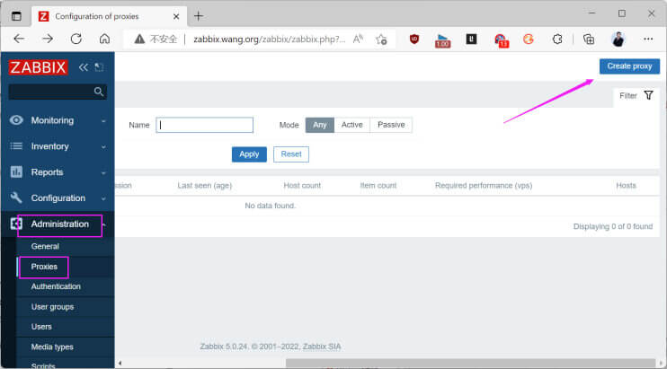<br></p>
<p>中文界面</p>
<p><br><br></p>
<h4 id="在Zabbix-Server-上配置-Zabbix-Agent-使用主动代理"><a href="#在Zabbix-Server-上配置-Zabbix-Agent-使用主动代理" class="headerlink" title="在Zabbix Server 上配置 Zabbix Agent 使用主动代理"></a>在Zabbix Server 上配置 Zabbix Agent 使用主动代理</h4><p><br></p>
<h4 id="验证主机状态"><a href="#验证主机状态" class="headerlink" title="验证主机状态"></a>验证主机状态</h4><p><strong>注意: 如果不成功，可以删除后再重新添加监控的主机或者重启动 proxy 服务</strong></p>
<p><br></p>
<h3 id="被动模式配置"><a href="#被动模式配置" class="headerlink" title="被动模式配置"></a>被动模式配置</h3><p>配置文件说明</p>
<figure class="highlight sh"><table><tr><td class="gutter"><pre><span class="line">1</span><br><span class="line">2</span><br><span class="line">3</span><br><span class="line">4</span><br><span class="line">5</span><br><span class="line">6</span><br><span class="line">7</span><br><span class="line">8</span><br><span class="line">9</span><br><span class="line">10</span><br><span class="line">11</span><br><span class="line">12</span><br><span class="line">13</span><br><span class="line">14</span><br><span class="line">15</span><br><span class="line">16</span><br><span class="line">17</span><br><span class="line">18</span><br><span class="line">19</span><br><span class="line">20</span><br><span class="line">21</span><br><span class="line">22</span><br><span class="line">23</span><br><span class="line">24</span><br><span class="line">25</span><br><span class="line">26</span><br><span class="line">27</span><br></pre></td><td class="code"><pre><span class="line"><span class="comment"># vim /apps/zabbix_proxy/etc/zabbix_proxy.conf</span></span><br><span class="line">ProxyMode=1                         <span class="comment">#0为主动，1为被动，此为默认</span></span><br><span class="line">server=10.0.0.100                   <span class="comment">#zabbix server服务器的地址</span></span><br><span class="line">Hostname=zabbix-proxy-passive-wang  <span class="comment">#代理服务器名称，需要与zabbix server添加代理时候的</span></span><br><span class="line">proxy</span><br><span class="line">DBHost=10.0.0.101                   <span class="comment">#数据库服务器地址</span></span><br><span class="line">DBName=zabbix_proxy_passive         <span class="comment">#数据库库名称</span></span><br><span class="line">DBUser=proxy                        <span class="comment">#连接数据库的用户名称</span></span><br><span class="line">DBPassword=123456                   <span class="comment">#数据库用户密码</span></span><br><span class="line">DBPort=3306                         <span class="comment">#数据库端口</span></span><br><span class="line">ListenPort=10051                    <span class="comment">#zabbix proxy监听端口</span></span><br><span class="line">LogFile=/tmp/zabbix_proxy.log</span><br><span class="line">Enab1eRemoteCommands=1              <span class="comment">#允许zabbix server执行远程命令</span></span><br><span class="line">ProxyLocalBuffer=720                <span class="comment">#已经提交到zabbix server的数据保留时间</span></span><br><span class="line">ProxyofflineBuffer=720              <span class="comment">#未提交到zabbix server的时间保留时间</span></span><br><span class="line">ConfigFrequency=5                   <span class="comment">#间隔多少秒从zabbix server获取监控项信息，此横在被动模式无效</span></span><br><span class="line">startPo1lers=20                     <span class="comment">#启动的数据采集器数量</span></span><br><span class="line">javaGatewayPort=10052               <span class="comment">#Java gateway服务端口</span></span><br><span class="line">startJavaPollers=20                 <span class="comment">#启动多少个线程采集数据</span></span><br><span class="line">cachesize=2G                        <span class="comment">#保存监控项而占用的最大内存</span></span><br><span class="line">Historycachesize=2G                 <span class="comment">#保存监控历史数据占用的最大内存</span></span><br><span class="line">HistoryIndexcachesize=128M          <span class="comment">#历史索引缓存的大小</span></span><br><span class="line">Timeout=30                          <span class="comment">#监控项超时时间，单位为秒</span></span><br><span class="line">LogslowQueries=3000                 <span class="comment">#毫秒，多久的数据库查询会被记录到日志</span></span><br><span class="line">HeartbeatFrequency=60               <span class="comment">#心跳间隔检测时间，默认60秒，范围0-3600秒，被动模式不使用</span></span><br><span class="line">DatasenderFrequency=5               <span class="comment">#数据发送时间间隔，默认为1秒，范围为1-3600秒，被动模式不使用</span></span><br><span class="line">JavaGateway=10.0.0.102              <span class="comment">#java gateway服务器地址，当需要监控java的时候必须配置否则监控不到数据</span></span><br></pre></td></tr></table></figure>

<h4 id="修改proxy配置文件-1"><a href="#修改proxy配置文件-1" class="headerlink" title="修改proxy配置文件"></a>修改proxy配置文件</h4><p>范例: </p>
<figure class="highlight sh"><table><tr><td class="gutter"><pre><span class="line">1</span><br><span class="line">2</span><br><span class="line">3</span><br><span class="line">4</span><br><span class="line">5</span><br><span class="line">6</span><br><span class="line">7</span><br><span class="line">8</span><br><span class="line">9</span><br><span class="line">10</span><br><span class="line">11</span><br><span class="line">12</span><br><span class="line">13</span><br><span class="line">14</span><br><span class="line">15</span><br><span class="line">16</span><br><span class="line">17</span><br><span class="line">18</span><br><span class="line">19</span><br><span class="line">20</span><br><span class="line">21</span><br><span class="line">22</span><br><span class="line">23</span><br><span class="line">24</span><br><span class="line">25</span><br><span class="line">26</span><br><span class="line">27</span><br><span class="line">28</span><br><span class="line">29</span><br><span class="line">30</span><br><span class="line">31</span><br><span class="line">32</span><br><span class="line">33</span><br><span class="line">34</span><br><span class="line">35</span><br><span class="line">36</span><br><span class="line">37</span><br><span class="line">38</span><br><span class="line">39</span><br><span class="line">40</span><br><span class="line">41</span><br><span class="line">42</span><br><span class="line">43</span><br><span class="line">44</span><br><span class="line">45</span><br><span class="line">46</span><br><span class="line">47</span><br><span class="line">48</span><br><span class="line">49</span><br><span class="line">50</span><br><span class="line">51</span><br><span class="line">52</span><br><span class="line">53</span><br><span class="line">54</span><br><span class="line">55</span><br><span class="line">56</span><br><span class="line">57</span><br><span class="line">58</span><br><span class="line">59</span><br><span class="line">60</span><br><span class="line">61</span><br><span class="line">62</span><br><span class="line">63</span><br><span class="line">64</span><br><span class="line">65</span><br><span class="line">66</span><br><span class="line">67</span><br><span class="line">68</span><br><span class="line">69</span><br><span class="line">70</span><br><span class="line">71</span><br><span class="line">72</span><br><span class="line">73</span><br><span class="line">74</span><br><span class="line">75</span><br><span class="line">76</span><br><span class="line">77</span><br><span class="line">78</span><br><span class="line">79</span><br><span class="line">80</span><br><span class="line">81</span><br><span class="line">82</span><br></pre></td><td class="code"><pre><span class="line">[root@zabbix-proxy-passive ~]<span class="comment"># grep &#x27;^[^#]&#x27; /apps/zabbix_proxy/etc/zabbix_proxy.conf</span></span><br><span class="line">ProxyMode=1                          <span class="comment">#被动模式为1</span></span><br><span class="line">Server=10.0.0.100                    <span class="comment">#指向zabbix server的地址</span></span><br><span class="line">Hostname=zabbix-proxy-passvie-wang</span><br><span class="line">LogFile=/tmp/zabbix_proxy.log </span><br><span class="line">DBHost=localhost                     <span class="comment">#指定MySQL的地址</span></span><br><span class="line">DBName=zabbix_proxy_passive          <span class="comment">#指定MySQL数据库名称</span></span><br><span class="line">DBUser=proxy                         <span class="comment">#指定MySQL的用户</span></span><br><span class="line">DBPassword=123456                    <span class="comment">#指定MySQL的用户密码</span></span><br><span class="line">ProxyLocalBuffer=360</span><br><span class="line">ProxyOfflineBuffer=720</span><br><span class="line">JavaGateway=10.0.0.102</span><br><span class="line">StartJavaPollers=10</span><br><span class="line">CacheSize=8M</span><br><span class="line">StartDBSyncers=4</span><br><span class="line">HistoryCacheSize=16M</span><br><span class="line">HistoryIndexCacheSize=4M</span><br><span class="line">Timeout=30</span><br><span class="line">LogSlowQueries=3000</span><br><span class="line"></span><br><span class="line">[root@zabbix-proxy-passive zabbix-5.0.14]<span class="comment"># grep -Ev &#x27;^$|#&#x27; /apps/zabbix_proxy/etc/zabbix_proxy.conf</span></span><br><span class="line">ProxyMode=1</span><br><span class="line">Server=10.0.0.100</span><br><span class="line">Hostname=Zabbix proxy passive</span><br><span class="line">LogFile=/tmp/zabbix_proxy.log</span><br><span class="line">DBName=zabbix_proxy_passive</span><br><span class="line">DBUser=proxy</span><br><span class="line">DBPassword=123456</span><br><span class="line">HeartbeatFrequency=10</span><br><span class="line">ConfigFrequency=10</span><br><span class="line">DataSenderFrequency=1</span><br><span class="line">Timeout=4</span><br><span class="line">LogSlowQueries=3000</span><br><span class="line">StatsAllowedIP=127.0.0.1</span><br><span class="line"></span><br><span class="line">[root@zabbix-proxy-passive ~]<span class="comment"># systemctl enable --now zabbix-proxy.service</span></span><br><span class="line"></span><br><span class="line"><span class="comment">#查看是否打开10051/tcp端口，如果没有打开检查是否能连接MySQL</span></span><br><span class="line">[root@zabbix-proxy-passive ~]<span class="comment"># ss -ntl</span></span><br><span class="line">State               Recv-Q Send-Q Local Address:Port   Peer Address:Port</span><br><span class="line">LISTEN               0       128           0.0.0.0:22          0.0.0.0:*</span><br><span class="line">LISTEN               0       100         127.0.0.1:25          0.0.0.0:*</span><br><span class="line">LISTEN               0       128           0.0.0.0:10051       0.0.0.0:*</span><br><span class="line">LISTEN               0       128              [::]:22             [::]:*</span><br><span class="line">LISTEN               0       100             [::1]:25             [::]:*</span><br><span class="line"></span><br><span class="line"><span class="comment">#查看日志</span></span><br><span class="line">[root@zabbix-proxy-passive ~]<span class="comment"># tail -f /tmp/zabbix_proxy.log </span></span><br><span class="line">44417:20200830:225813.637 proxy <span class="comment">#19 started [java poller #7]</span></span><br><span class="line">44419:20200830:225813.637 proxy <span class="comment">#21 started [java poller #9]</span></span><br><span class="line">44429:20200830:225813.638 proxy <span class="comment">#31 started [icmp pinger #1]</span></span><br><span class="line">44421:20200830:225813.639 proxy <span class="comment">#23 started [self-monitoring #1]</span></span><br><span class="line">44427:20200830:225813.640 proxy <span class="comment">#29 started [poller #5]</span></span><br><span class="line">44423:20200830:225813.644 proxy <span class="comment">#25 started [poller #1]</span></span><br><span class="line">44426:20200830:225813.651 proxy <span class="comment">#28 started [poller #4]</span></span><br><span class="line">44425:20200830:225813.655 proxy <span class="comment">#27 started [poller #3]</span></span><br><span class="line">44424:20200830:225813.662 proxy <span class="comment">#26 started [poller #2]</span></span><br><span class="line">44428:20200830:225813.666 proxy <span class="comment">#30 started [unreachable poller #1]</span></span><br><span class="line">44398:20200830:225926.043 Got signal [signal:15(SIGTERM),sender_pid:44446,sender_uid:0,reason:0]. Exiting ...</span><br><span class="line">44407:20200830:225926.043 syncing <span class="built_in">history</span> data <span class="keyword">in</span> progress... </span><br><span class="line">44407:20200830:225926.043 syncing <span class="built_in">history</span> data <span class="keyword">done</span></span><br><span class="line">44398:20200830:225926.055 Zabbix Proxy stopped. Zabbix 4.0.24 (revision </span><br><span class="line">5d83af7935).</span><br><span class="line">44450:20200830:225926.067 Starting Zabbix Proxy (passive) [zabbix-proxy-passvie-wang]. Zabbix 4.0.24 (revision 5d83af7935).</span><br><span class="line">44450:20200830:225926.067 **** Enabled features ****</span><br><span class="line">44450:20200830:225926.067 SNMP monitoring:       YES</span><br><span class="line">44450:20200830:225926.067 IPMI monitoring:       NO</span><br><span class="line">44450:20200830:225926.067 Web monitoring:        YES</span><br><span class="line">44450:20200830:225926.068 VMware monitoring:     YES</span><br><span class="line">44450:20200830:225926.068 ODBC:                  NO</span><br><span class="line">44450:20200830:225926.068 SSH support:           YES</span><br><span class="line">44450:20200830:225926.068 IPv6 support:          NO</span><br><span class="line">44450:20200830:225926.068 TLS support:           NO</span><br><span class="line">44450:20200830:225926.068 **************************</span><br><span class="line">44450:20200830:225926.068 using configuration file: /apps/zabbix_proxy/etc/zabbix_proxy.conf</span><br><span class="line">44450:20200830:225926.078 current database version (mandatory/optional): </span><br><span class="line">04000000/04000006</span><br><span class="line">44450:20200830:225926.079 required mandatory version: 04000000</span><br><span class="line">44450:20200830:225926.087 proxy <span class="comment">#0 started [main process]</span></span><br><span class="line">44452:20200830:225926.087 proxy <span class="comment">#1 started [trapper #1]</span></span><br><span class="line">44454:20200830:225926.189 proxy <span class="comment">#3 started [trapper #3]</span></span><br><span class="line">44456:20200830:225926.190 proxy <span class="comment">#5 started [trapper #5]</span></span><br></pre></td></tr></table></figure>

<h4 id="在-Zabbix-Server-上添加代理-Proxies-1"><a href="#在-Zabbix-Server-上添加代理-Proxies-1" class="headerlink" title="在 Zabbix Server 上添加代理 Proxies"></a>在 Zabbix Server 上添加代理 Proxies</h4><p><strong>注意：选中被动模式和端口10051</strong></p>
<p>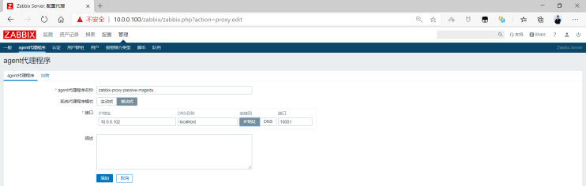<br></p>
<p><strong>注意: 模板也要使用被动模板</strong></p>
<p></p>
<h4 id="在Zabbix-Server-上配置Zabbix-Agent-使用被动代理"><a href="#在Zabbix-Server-上配置Zabbix-Agent-使用被动代理" class="headerlink" title="在Zabbix Server 上配置Zabbix Agent 使用被动代理"></a>在Zabbix Server 上配置Zabbix Agent 使用被动代理</h4><p><br><br></p>
<h4 id="修改Zabbix-Agent-配置文件为被动模式的-Zabbix-Proxy"><a href="#修改Zabbix-Agent-配置文件为被动模式的-Zabbix-Proxy" class="headerlink" title="修改Zabbix Agent 配置文件为被动模式的 Zabbix Proxy"></a>修改Zabbix Agent 配置文件为被动模式的 Zabbix Proxy</h4><figure class="highlight sh"><table><tr><td class="gutter"><pre><span class="line">1</span><br><span class="line">2</span><br><span class="line">3</span><br><span class="line">4</span><br><span class="line">5</span><br><span class="line">6</span><br><span class="line">7</span><br><span class="line">8</span><br><span class="line">9</span><br><span class="line">10</span><br><span class="line">11</span><br></pre></td><td class="code"><pre><span class="line">[root@centos8 ~]<span class="comment"># grep &#x27;^[^#]&#x27; /etc/zabbix/zabbix_agentd.conf</span></span><br><span class="line">PidFile=/var/run/zabbix/zabbix_agentd.pid</span><br><span class="line">LogFile=/var/log/zabbix/zabbix_agentd.log</span><br><span class="line">LogFileSize=0</span><br><span class="line">Server=10.0.0.100,10.0.0.102<span class="comment">#必须指向Proxy代理地址，否则Proxy无法监控，Zabbix Server地址则是可选项</span></span><br><span class="line"><span class="comment">#ServerActive=10.0.0.100 #注释此行</span></span><br><span class="line">Hostname=10.0.0.104</span><br><span class="line">Timeout=30</span><br><span class="line">Include=/etc/zabbix/zabbix_agentd.d/*.conf</span><br><span class="line"></span><br><span class="line">[root@centos8 ~]<span class="comment"># systemctl restart zabbix-agent.service</span></span><br></pre></td></tr></table></figure>

<h4 id="验证主机状态-1"><a href="#验证主机状态-1" class="headerlink" title="验证主机状态"></a>验证主机状态</h4><p><strong>注意: 被动模式下变成绿色比较慢，有时需要等30分钟才能看到结果，但是最新数据可能比较快就能采集到</strong></p>
<p><strong>如果不成功，可以删除后再重新添加监控的主机</strong></p>
<p>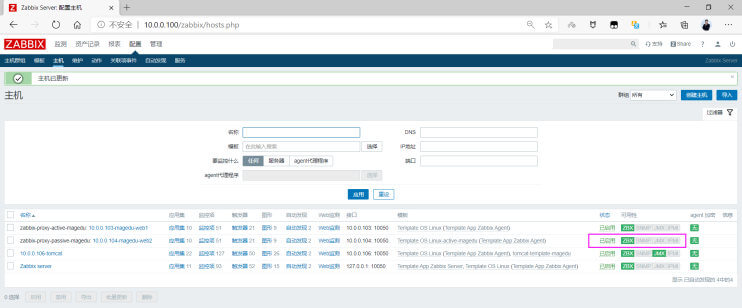<br></p>
<h1 id="Zabbix-实现自动化运维"><a href="#Zabbix-实现自动化运维" class="headerlink" title="Zabbix 实现自动化运维"></a>Zabbix 实现自动化运维</h1><h2 id="Zabbix-网络发现"><a href="#Zabbix-网络发现" class="headerlink" title="Zabbix 网络发现"></a>Zabbix 网络发现</h2><h3 id="Zabbix-网络发现介绍"><a href="#Zabbix-网络发现介绍" class="headerlink" title="Zabbix 网络发现介绍"></a>Zabbix 网络发现介绍</h3><p>之前都是手动一台一台主机的添加到 Zabbix 中进行监控，很是繁琐，可以利用自动发现功能，自动添加被监控的主机</p>
<p>当众多的服务器都已经安装了agent或者snmp后，利用自动发现功能,Zabbix server 可以自动扫描预先配置好的ip段，自动添加主机，自动关联模板，自动加到主机组里等等。</p>
<p>网络发现功能更快速的部署zabbix、简化zabbix管理、并且在经常变动的环境里面也不需要花太多的精力，毕竟网络发现也能随时发现变化。</p>
<p>当然网络发现也不是万能的，虽然网络发现能干很多事情，但是它无法发现网络拓扑的变化。</p>
<p>由于自动发现效率比较低，严重消耗Zabbix Server资源和网络带宽，大规模环境中较少使用</p>
<p>自动发现虽然能自动完成发现并添加主机，但仍然存在一些问题</p>
<ul>
<li>发现时间长，效率较低</li>
<li>扫描过程中容易漏扫</li>
<li>当IP地址不固定难以实现</li>
<li>无法实现不同类型主机关联不同模板</li>
</ul>
<p>官方帮助</p>
<figure class="highlight http"><table><tr><td class="gutter"><pre><span class="line">1</span><br></pre></td><td class="code"><pre><span class="line">https://www.zabbix.com/documentation/5.0/zh/manual/discovery/network_discovery</span><br></pre></td></tr></table></figure>

<h3 id="实现-Zabbix-网络发现"><a href="#实现-Zabbix-网络发现" class="headerlink" title="实现 Zabbix 网络发现"></a>实现 Zabbix 网络发现</h3><p>自动发现由两个步骤组成:</p>
<ul>
<li>发现discovery: Zabbix周期性地扫描在”网络发现规则”中定义的IP段，发现满足规则的主机</li>
<li>动作action: 对这些主机完成动作，包括添加主机、添加模板、发送通知等等。</li>
</ul>
<p>案例: 自动发现需求</p>
<figure class="highlight http"><table><tr><td class="gutter"><pre><span class="line">1</span><br><span class="line">2</span><br><span class="line">3</span><br><span class="line">4</span><br><span class="line">5</span><br><span class="line">6</span><br></pre></td><td class="code"><pre><span class="line">发现有Zabbix agent运行的主机</span><br><span class="line">每10分钟执行一次</span><br><span class="line">如果主机正常运行时间超过2分钟，添加主机</span><br><span class="line">将Linux主机添加到“Linux servers”组</span><br><span class="line">链接模板Template OS Linux 到Linux主机</span><br><span class="line">如果主机停机时间超过24小时，删除主机</span><br></pre></td></tr></table></figure>

<h4 id="创建自动发现指定需要监控的网段"><a href="#创建自动发现指定需要监控的网段" class="headerlink" title="创建自动发现指定需要监控的网段"></a>创建自动发现指定需要监控的网段</h4><p>配置– 自动发现– 创建发现规则</p>
<p></p>
<p>指定名称,IP范围和逢动发现检查等信息</p>
<p></p>
<p>可见名称为IP地址</p>
<p><br></p>
<h4 id="创建添加主机的自动发现动作"><a href="#创建添加主机的自动发现动作" class="headerlink" title="创建添加主机的自动发现动作"></a>创建添加主机的自动发现动作</h4><p>创建新的动作</p>
<p><br><br></p>
<p>系统默认内置动作，也可以修改已有的被禁用自动发现动作</p>
<p></p>
<p><strong>启用此动作</strong></p>
<p></p>
<p>操作增加三个操作: 添加主机，添加群组，添加模板</p>
<p>也可以添加发送消息给Admin等操作</p>
<p></p>
<h4 id="创建删除主机的自动发现动作"><a href="#创建删除主机的自动发现动作" class="headerlink" title="创建删除主机的自动发现动作"></a>创建删除主机的自动发现动作</h4><p><br></p>
<h4 id="验证自动发现的结果"><a href="#验证自动发现的结果" class="headerlink" title="验证自动发现的结果"></a>验证自动发现的结果</h4><p>一段时间后，可以观察到下面结果，自动添加两台主机并关联相应的模板</p>
<p></p>
<p>将客户端关机后，过一天后，再观察是否自动删除此主机</p>
<p></p>
<p>监测 – 自动发现， 可以看到下面的删除的主机</p>
<p></p>
<h2 id="Zabbix-自动注册"><a href="#Zabbix-自动注册" class="headerlink" title="Zabbix 自动注册"></a>Zabbix 自动注册</h2><h3 id="Zabbix-自动注册介绍"><a href="#Zabbix-自动注册介绍" class="headerlink" title="Zabbix 自动注册介绍"></a>Zabbix 自动注册介绍</h3><p>当客户端众多时，将每台主机手动添加到Zabbix,还手动添加关联模板，无疑是低效的. </p>
<p>但是利用网络发现实现,Zabbix Server 资源消耗又比较严重</p>
<p>利用Zabbix的自动注册功能，实现添加主机的自动化，可以大幅减少运维的工作量，减少Zabbix Server 的资源消耗</p>
<p>此方式和自动发现不同，是由Active agent主动发起请求zabbix server将这些agent加到主机里。</p>
<p>注意: Agent 必须使用主动模式才支持自动注册</p>
<p>自动注册由于比自动发现效率更好,Zabbix Server资源消耗更少，更适合大规模及云环境IP地址不固定的场景使用</p>
<p>官方帮助</p>
<figure class="highlight http"><table><tr><td class="gutter"><pre><span class="line">1</span><br></pre></td><td class="code"><pre><span class="line">https://www.zabbix.com/documentation/5.0/zh/manual/discovery/auto_registration</span><br></pre></td></tr></table></figure>

<p>在Zabbix agent 端的配置文件修改以下项目</p>
<figure class="highlight http"><table><tr><td class="gutter"><pre><span class="line">1</span><br><span class="line">2</span><br><span class="line">3</span><br><span class="line">4</span><br><span class="line">5</span><br><span class="line">6</span><br></pre></td><td class="code"><pre><span class="line">Server=&lt;Zabbix Server IP&gt;</span><br><span class="line">ServerActive=&lt;Zabbix Server IP&gt;  #客户端主动模式是实现自动注册的前提条件</span><br><span class="line">Hostname=&lt;agent IP&gt;</span><br><span class="line">#HostnameItem=system.hostname    </span><br><span class="line">HostMetadata==&lt;key&gt;              #非必须项，可以做为添加主机的验证标识和分类，或者实现加入主机的验证功能</span><br><span class="line">HostMetadataItem=&lt;监控项Item&gt;     #非必须项，监控项的值可以做为添加主机的验证标识和分类</span><br></pre></td></tr></table></figure>

<h3 id="案例-实现-Linux-主机自动注册"><a href="#案例-实现-Linux-主机自动注册" class="headerlink" title="案例: 实现 Linux 主机自动注册"></a>案例: 实现 Linux 主机自动注册</h3><h4 id="修改-Zabbix-agent-的配置"><a href="#修改-Zabbix-agent-的配置" class="headerlink" title="修改 Zabbix agent 的配置"></a>修改 Zabbix agent 的配置</h4><p>范例:</p>
<figure class="highlight sh"><table><tr><td class="gutter"><pre><span class="line">1</span><br><span class="line">2</span><br><span class="line">3</span><br><span class="line">4</span><br><span class="line">5</span><br><span class="line">6</span><br><span class="line">7</span><br><span class="line">8</span><br><span class="line">9</span><br><span class="line">10</span><br><span class="line">11</span><br><span class="line">12</span><br><span class="line">13</span><br><span class="line">14</span><br><span class="line">15</span><br></pre></td><td class="code"><pre><span class="line">[root@centos8 ~]<span class="comment"># vim /etc/zabbix/zabbix_agentd.conf</span></span><br><span class="line">Server=zabbix.wang.org</span><br><span class="line">ServerActive=zabbix.wang.org</span><br><span class="line">Hostname=web-10.0.0.18          <span class="comment">#指定主机名，如果不指定，则服务器将使用agent的系统主机名</span></span><br><span class="line"><span class="comment">#HostnameItem=system.hostname   #指定主机名</span></span><br><span class="line">HostMetadata=123456</span><br><span class="line"><span class="comment">#HostMetadataItem=system.uname</span></span><br><span class="line"></span><br><span class="line">[root@centos8 ~]<span class="comment"># systemctl restart zabbix-agent.service </span></span><br><span class="line">[root@zabbix-server ~]<span class="comment"># zabbix_get -s 10.0.0.8 -k system.uname</span></span><br><span class="line">Linux rocky8.wang.org 4.18.0-348.el8.0.2.x86_64 <span class="comment">#1 SMP Sun Nov 14 00:51:12 UTC </span></span><br><span class="line">2021 x86_64</span><br><span class="line"></span><br><span class="line">[root@zabbix-server ~]<span class="comment"># zabbix_get -s 10.0.0.8 -k system.hostname</span></span><br><span class="line">rocky8.wang.org</span><br></pre></td></tr></table></figure>

<h4 id="在-Zabbix-Server-配置动作"><a href="#在-Zabbix-Server-配置动作" class="headerlink" title="在 Zabbix Server 配置动作"></a>在 Zabbix Server 配置动作</h4><p>在配置—动作—选择自动注册动作</p>
<p></p>
<p>创建新动作</p>
<p><br></p>
<p>指定动作中条件的主机名的值</p>
<p><br></p>
<p>或者使用元数据添加</p>
<p></p>
<p>指定操作</p>
<p></p>
<p>指定操作，添加主机，添加主机到主机群组，关系相关模板</p>
<p></p>
<p>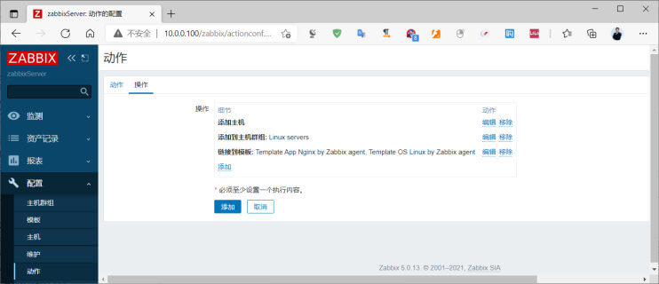<br></p>
<h4 id="验证结果-2"><a href="#验证结果-2" class="headerlink" title="验证结果"></a>验证结果</h4><p>稍过一会儿，再观察可以看到下面显示添加主机成功</p>
<p><br>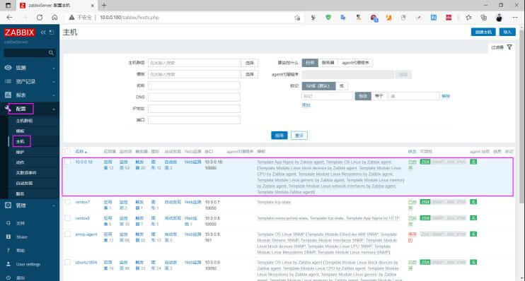</p>
<h3 id="案例-将-Windows-主动自动注册"><a href="#案例-将-Windows-主动自动注册" class="headerlink" title="案例: 将 Windows 主动自动注册"></a>案例: 将 Windows 主动自动注册</h3><h4 id="修改Agent-配置"><a href="#修改Agent-配置" class="headerlink" title="修改Agent 配置"></a>修改Agent 配置</h4><p></p>
<p>重启服务</p>
<p></p>
<h4 id="创建自动注册动作"><a href="#创建自动注册动作" class="headerlink" title="创建自动注册动作"></a>创建自动注册动作</h4><p>配置–动作– 自动创建动作 – 创建动作</p>
<p><br><br>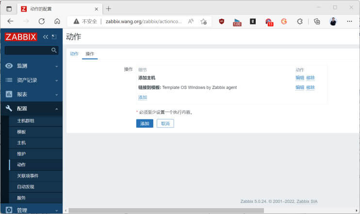<br></p>
<h4 id="验证结果-3"><a href="#验证结果-3" class="headerlink" title="验证结果"></a>验证结果</h4><p><br>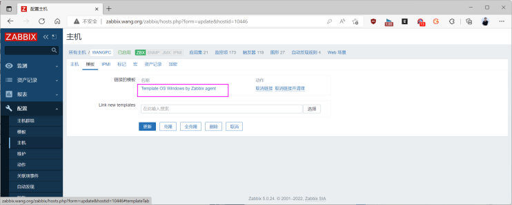</p>
<h3 id="基于-Ansible-实现批量的自动注册"><a href="#基于-Ansible-实现批量的自动注册" class="headerlink" title="基于 Ansible 实现批量的自动注册"></a>基于 Ansible 实现批量的自动注册</h3><p><del>略</del></p>
<p></p>
<p></p>
<h2 id="Zabbix-API-实现自动化运维"><a href="#Zabbix-API-实现自动化运维" class="headerlink" title="Zabbix API 实现自动化运维"></a>Zabbix API 实现自动化运维</h2><h3 id="Zabbix-API-介绍"><a href="#Zabbix-API-介绍" class="headerlink" title="Zabbix API 介绍"></a>Zabbix API 介绍</h3><p>API（Application Programming Interface，应用程序编程接口）是一些预先定义的函数，目的是提供应用程序与开发人员基于某软件或硬件得以访问一组功能的能力，而又无需直接使用源代码，或理解内部工作机制的细节。</p>
<p>Zabbix API允许你以编程方式检索和修改Zabbix的配置，并提供对历史数据的访问。它广泛用于: </p>
<ul>
<li>创建新的应用程序以使用Zabbix</li>
<li>将Zabbix与第三方软件集成</li>
<li>自动执行常规任务 </li>
</ul>
<p>Zabbix API是基于Web的API，作为Web前端的一部分提供。它使用JSON-RPC 2.0协议，这意味着: </p>
<ul>
<li>该API包含一组独立的方法</li>
<li>客户端和API之间的请求和响应使用JSON格式进行编码</li>
</ul>
<p>官方参考文档:</p>
<figure class="highlight http"><table><tr><td class="gutter"><pre><span class="line">1</span><br><span class="line">2</span><br><span class="line">3</span><br><span class="line">4</span><br></pre></td><td class="code"><pre><span class="line">https://www.zabbix.com/documentation/5.0/zh/manual/api</span><br><span class="line">https://www.zabbix.com/documentation/4.0/zh/manual/api</span><br><span class="line">https://www.zabbix.com/documentation/5.0/zh/manual/api/reference</span><br><span class="line">https://www.zabbix.com/documentation/4.0/zh/manual/api/reference</span><br></pre></td></tr></table></figure>

<p>Zabbix 支持各种语言的开发库</p>
<figure class="highlight http"><table><tr><td class="gutter"><pre><span class="line">1</span><br></pre></td><td class="code"><pre><span class="line">https://zabbix.org/wiki/Docs/api/libraries</span><br></pre></td></tr></table></figure>

<p>Zabbix API 开始扮演着越来越重要的角色，尤其是在集成第三方软件和自动化日常任务时。很难想象管理数千台服务器而没有自动化是多么的困难。Zabbix API 为批量操作、第三方软件集成以及其他作用提供可编程接口。Zabbix API 是在 1.8 版本中开始引进并且已经被广泛应用。所有的 Zabbix 移动客户端都是基于 API，甚至原生的 WEB 前端部分也是建立在它之上。Zabbix API 中间件使得架构更加模块化也避免直接对数据库进行操作。</p>
<p>API 采用 JSON-RPC 实现。这意味着调用任何函数，都需要发送 POST 请求，输入输出数据都是以 JSON 格式。</p>
<p>Zabbix API由许多名义上分组的独立API方法组成。每个方法执行一个特定任务。 </p>
<p>例如，方法 host.create 隶属于 host 这个API分组 ，用于创建新主机。API分组有时被称为“类”。</p>
<p>大多数API至少包含四种方法: get， create， update 和 delete ，分别是检索，创建，更新和删除数据，但是某些API提供一套完全不同的一组方法。 </p>
<p><strong>Zabbix 常用API</strong></p>
<figure class="highlight sh"><table><tr><td class="gutter"><pre><span class="line">1</span><br><span class="line">2</span><br><span class="line">3</span><br><span class="line">4</span><br><span class="line">5</span><br><span class="line">6</span><br><span class="line">7</span><br></pre></td><td class="code"><pre><span class="line">user.login                              <span class="comment">#用户登录</span></span><br><span class="line">host.get(create|delete|update)          <span class="comment">#主机操作</span></span><br><span class="line">hostgroup.get(create|delete|update)     <span class="comment">#主机组操作</span></span><br><span class="line">item.get(create|delete|update)          <span class="comment">#监控项目操作</span></span><br><span class="line">history.get                             <span class="comment">#历史数据查询</span></span><br><span class="line">event.get                               <span class="comment">#事件查询</span></span><br><span class="line">trigger.get                             <span class="comment">#触发器查询</span></span><br></pre></td></tr></table></figure>

<h3 id="API-使用案例"><a href="#API-使用案例" class="headerlink" title="API 使用案例"></a>API 使用案例</h3><h4 id="获取-Token"><a href="#获取-Token" class="headerlink" title="获取 Token"></a>获取 Token</h4><p>在访问Zabbix内部的任何数据之前，需要登录并获得身份验证令牌。这可以使用user.login方法来完成。</p>
<p>假设以Zabbix的Admin用户登录。那么JSON请求将是这样的:</p>
<figure class="highlight sh"><table><tr><td class="gutter"><pre><span class="line">1</span><br><span class="line">2</span><br><span class="line">3</span><br><span class="line">4</span><br><span class="line">5</span><br><span class="line">6</span><br><span class="line">7</span><br><span class="line">8</span><br><span class="line">9</span><br><span class="line">10</span><br><span class="line">11</span><br><span class="line">12</span><br><span class="line">13</span><br><span class="line">14</span><br><span class="line">15</span><br><span class="line">16</span><br><span class="line">17</span><br><span class="line">18</span><br><span class="line">19</span><br><span class="line">20</span><br><span class="line">21</span><br><span class="line">22</span><br><span class="line">23</span><br><span class="line">24</span><br><span class="line">25</span><br><span class="line">26</span><br><span class="line">27</span><br><span class="line">28</span><br><span class="line">29</span><br><span class="line">30</span><br><span class="line">31</span><br><span class="line">32</span><br><span class="line">33</span><br></pre></td><td class="code"><pre><span class="line">[root@zabbix-server ~]<span class="comment"># cat zabbix-api-token.sh</span></span><br><span class="line"><span class="comment">#!/bin/bash</span></span><br><span class="line">ZABBIX_SERVER=zabbix.wang.org</span><br><span class="line">curl -s -XPOST -H <span class="string">&quot;Content-Type: application/json-rpc&quot;</span> -d <span class="string">&#x27;</span></span><br><span class="line"><span class="string">&#123;</span></span><br><span class="line"><span class="string">    &quot;jsonrpc&quot;: &quot;2.0&quot;,</span></span><br><span class="line"><span class="string">    &quot;method&quot;: &quot;user.login&quot;,</span></span><br><span class="line"><span class="string">    &quot;params&quot;: &#123;</span></span><br><span class="line"><span class="string">    &quot;user&quot;: &quot;Admin&quot;,</span></span><br><span class="line"><span class="string">    &quot;password&quot;: &quot;zabbix&quot;</span></span><br><span class="line"><span class="string">    &#125;,</span></span><br><span class="line"><span class="string">    &quot;id&quot;: 1,</span></span><br><span class="line"><span class="string">    &quot;auth&quot;: null</span></span><br><span class="line"><span class="string">&#125;&#x27;</span> http://<span class="variable">$&#123;ZABBIX_SERVER&#125;</span>/zabbix/api_jsonrpc.php</span><br><span class="line"></span><br><span class="line"><span class="comment"># HTTP: http://$&#123;ZABBIX_SERVER&#125;/zabbix/api_jsonrpc.php</span></span><br><span class="line"><span class="comment"># NGINX: http://$&#123;ZABBIX_SERVER&#125;/api_jsonrpc.php</span></span><br><span class="line"></span><br><span class="line">[root@zabbix-server ~]<span class="comment"># yum -y install jq </span></span><br><span class="line">[root@zabbix-server ~]<span class="comment"># ./zabbix-api-token.sh | jq </span></span><br><span class="line">&#123;</span><br><span class="line">    <span class="string">&quot;jsonrpc&quot;</span>: <span class="string">&quot;2.0&quot;</span>,</span><br><span class="line">    <span class="string">&quot;result&quot;</span>: <span class="string">&quot;6e936114704269310d372a19c409e93d&quot;</span>,  <span class="comment">#此为获取的Token</span></span><br><span class="line">    <span class="string">&quot;id&quot;</span>: 1</span><br><span class="line">&#125;</span><br><span class="line"></span><br><span class="line">[root@zabbix-server ~]<span class="comment"># yum -y install python3</span></span><br><span class="line">[root@zabbix-server ~]<span class="comment"># ./zabbix-api-token.sh | python3 -m json.tool</span></span><br><span class="line">&#123;</span><br><span class="line">    <span class="string">&quot;jsonrpc&quot;</span>: <span class="string">&quot;2.0&quot;</span>,</span><br><span class="line">    <span class="string">&quot;result&quot;</span>: <span class="string">&quot;6e936114704269310d372a19c409e93d&quot;</span>,  <span class="comment">#此为获取的Token</span></span><br><span class="line">    <span class="string">&quot;id&quot;</span>: 1</span><br><span class="line">&#125;</span><br></pre></td></tr></table></figure>

<h4 id="使用以上令牌获取所有主机列表"><a href="#使用以上令牌获取所有主机列表" class="headerlink" title="使用以上令牌获取所有主机列表"></a>使用以上令牌获取所有主机列表</h4><figure class="highlight sh"><table><tr><td class="gutter"><pre><span class="line">1</span><br><span class="line">2</span><br><span class="line">3</span><br><span class="line">4</span><br><span class="line">5</span><br><span class="line">6</span><br><span class="line">7</span><br><span class="line">8</span><br><span class="line">9</span><br><span class="line">10</span><br><span class="line">11</span><br><span class="line">12</span><br><span class="line">13</span><br><span class="line">14</span><br><span class="line">15</span><br><span class="line">16</span><br><span class="line">17</span><br><span class="line">18</span><br><span class="line">19</span><br><span class="line">20</span><br><span class="line">21</span><br><span class="line">22</span><br><span class="line">23</span><br><span class="line">24</span><br><span class="line">25</span><br><span class="line">26</span><br><span class="line">27</span><br><span class="line">28</span><br><span class="line">29</span><br><span class="line">30</span><br><span class="line">31</span><br><span class="line">32</span><br><span class="line">33</span><br><span class="line">34</span><br><span class="line">35</span><br></pre></td><td class="code"><pre><span class="line">[root@zabbix-server ~]<span class="comment"># cat zabbix-api-gethostlist.sh</span></span><br><span class="line"><span class="comment">#!/bin/bash</span></span><br><span class="line">ZABBIX_SERVER=10.0.0.100</span><br><span class="line">TOKEN=$(./zabbix-api-token.sh| awk -F<span class="string">&#x27;&quot;&#x27;</span> <span class="string">&#x27;&#123;print $8&#125;&#x27;</span>)</span><br><span class="line">curl -s -XPOST -H <span class="string">&quot;Content-Type: application/json-rpc&quot;</span> -d <span class="string">&#x27;</span></span><br><span class="line"><span class="string">&#123;</span></span><br><span class="line"><span class="string">    &quot;jsonrpc&quot;: &quot;2.0&quot;,</span></span><br><span class="line"><span class="string">    &quot;method&quot;: &quot;host.get&quot;,</span></span><br><span class="line"><span class="string">    &quot;params&quot;: &#123;</span></span><br><span class="line"><span class="string">    &quot;output&quot;: [ &quot;host&quot; ]</span></span><br><span class="line"><span class="string">    &#125;,</span></span><br><span class="line"><span class="string">    &quot;id&quot;: 1,</span></span><br><span class="line"><span class="string">    &quot;auth&quot;: &quot;&#x27;</span><span class="variable">$TOKEN</span><span class="string">&#x27;&quot;</span></span><br><span class="line"><span class="string">&#125;&#x27;</span> http://<span class="variable">$&#123;ZABBIX_SERVER&#125;</span>/zabbix/api_jsonrpc.php | python3 -m json.tool</span><br><span class="line"></span><br><span class="line"></span><br><span class="line">[root@zabbix-server ~]<span class="comment"># ./zabbix-api-gethostlist.sh</span></span><br><span class="line">&#123;</span><br><span class="line">    <span class="string">&quot;jsonrpc&quot;</span>: <span class="string">&quot;2.0&quot;</span>,</span><br><span class="line">    <span class="string">&quot;result&quot;</span>: [</span><br><span class="line">       &#123;</span><br><span class="line">            <span class="string">&quot;hostid&quot;</span>: <span class="string">&quot;10084&quot;</span>,</span><br><span class="line">            <span class="string">&quot;host&quot;</span>: <span class="string">&quot;Zabbix server&quot;</span></span><br><span class="line">       &#125;,</span><br><span class="line">       &#123;</span><br><span class="line">            <span class="string">&quot;hostid&quot;</span>: <span class="string">&quot;10270&quot;</span>,</span><br><span class="line">            <span class="string">&quot;host&quot;</span>: <span class="string">&quot;10.0.0.105&quot;</span></span><br><span class="line">       &#125;,</span><br><span class="line">       &#123;</span><br><span class="line">            <span class="string">&quot;hostid&quot;</span>: <span class="string">&quot;10272&quot;</span>,</span><br><span class="line">            <span class="string">&quot;host&quot;</span>: <span class="string">&quot;10.0.0.106&quot;</span></span><br><span class="line">       &#125;</span><br><span class="line">   ],</span><br><span class="line">    <span class="string">&quot;id&quot;</span>: 1</span><br><span class="line">&#125;</span><br></pre></td></tr></table></figure>

<h4 id="使用以上令牌获取所有主机信息"><a href="#使用以上令牌获取所有主机信息" class="headerlink" title="使用以上令牌获取所有主机信息"></a>使用以上令牌获取所有主机信息</h4><figure class="highlight sh"><table><tr><td class="gutter"><pre><span class="line">1</span><br><span class="line">2</span><br><span class="line">3</span><br><span class="line">4</span><br><span class="line">5</span><br><span class="line">6</span><br><span class="line">7</span><br><span class="line">8</span><br><span class="line">9</span><br><span class="line">10</span><br><span class="line">11</span><br><span class="line">12</span><br><span class="line">13</span><br><span class="line">14</span><br><span class="line">15</span><br><span class="line">16</span><br><span class="line">17</span><br><span class="line">18</span><br><span class="line">19</span><br><span class="line">20</span><br><span class="line">21</span><br><span class="line">22</span><br><span class="line">23</span><br><span class="line">24</span><br><span class="line">25</span><br><span class="line">26</span><br><span class="line">27</span><br><span class="line">28</span><br><span class="line">29</span><br><span class="line">30</span><br><span class="line">31</span><br><span class="line">32</span><br><span class="line">33</span><br><span class="line">34</span><br><span class="line">35</span><br><span class="line">36</span><br><span class="line">37</span><br><span class="line">38</span><br><span class="line">39</span><br><span class="line">40</span><br><span class="line">41</span><br><span class="line">42</span><br><span class="line">43</span><br><span class="line">44</span><br><span class="line">45</span><br><span class="line">46</span><br><span class="line">47</span><br><span class="line">48</span><br><span class="line">49</span><br><span class="line">50</span><br><span class="line">51</span><br><span class="line">52</span><br><span class="line">53</span><br><span class="line">54</span><br><span class="line">55</span><br></pre></td><td class="code"><pre><span class="line">[root@zabbix-server ~]<span class="comment"># cat zabbix-api-gethostinfo.sh</span></span><br><span class="line"><span class="comment">#!/bin/bash</span></span><br><span class="line">ZABBIX_SERVER=10.0.0.100</span><br><span class="line">TOKEN=$(./zabbix-api-token.sh| awk -F<span class="string">&#x27;&quot;&#x27;</span> <span class="string">&#x27;&#123;print $8&#125;&#x27;</span>)</span><br><span class="line">curl -s -XPOST -H <span class="string">&quot;Content-Type: application/json-rpc&quot;</span> -d <span class="string">&#x27;</span></span><br><span class="line"><span class="string">&#123;</span></span><br><span class="line"><span class="string">    &quot;jsonrpc&quot;: &quot;2.0&quot;,</span></span><br><span class="line"><span class="string">    &quot;method&quot;: &quot;host.get&quot;,</span></span><br><span class="line"><span class="string">    &quot;params&quot;: &#123;</span></span><br><span class="line"><span class="string">        &quot;output&quot;: [ &quot;hostid&quot;, &quot;host&quot; ],</span></span><br><span class="line"><span class="string">        &quot;selectInterfaces&quot;: [ &quot;interfaceid&quot;, &quot;ip&quot; ]</span></span><br><span class="line"><span class="string">    &#125;,</span></span><br><span class="line"><span class="string">    &quot;id&quot;: 1,</span></span><br><span class="line"><span class="string">    &quot;auth&quot;: &quot;&#x27;</span><span class="variable">$TOKEN</span><span class="string">&#x27;&quot;</span></span><br><span class="line"><span class="string">&#125;&#x27;</span> http://<span class="variable">$&#123;ZABBIX_SERVER&#125;</span>/zabbix/api_jsonrpc.php | python3 -m json.tool</span><br><span class="line"></span><br><span class="line"></span><br><span class="line">[root@zabbix-server ~]<span class="comment"># chmod +x zabbix-api-gethostinfo.sh</span></span><br><span class="line">[root@zabbix-server ~]<span class="comment"># ./zabbix-api-gethostinfo.sh</span></span><br><span class="line">&#123;</span><br><span class="line">    <span class="string">&quot;jsonrpc&quot;</span>: <span class="string">&quot;2.0&quot;</span>,</span><br><span class="line">    <span class="string">&quot;result&quot;</span>: [</span><br><span class="line">       &#123;</span><br><span class="line">            <span class="string">&quot;hostid&quot;</span>: <span class="string">&quot;10084&quot;</span>,</span><br><span class="line">            <span class="string">&quot;host&quot;</span>: <span class="string">&quot;Zabbix server&quot;</span>,</span><br><span class="line">            <span class="string">&quot;interfaces&quot;</span>: [</span><br><span class="line">               &#123;</span><br><span class="line">                    <span class="string">&quot;interfaceid&quot;</span>: <span class="string">&quot;1&quot;</span>,</span><br><span class="line">                    <span class="string">&quot;ip&quot;</span>: <span class="string">&quot;127.0.0.1&quot;</span></span><br><span class="line">               &#125;</span><br><span class="line">           ]</span><br><span class="line">       &#125;,</span><br><span class="line">       &#123;</span><br><span class="line">            <span class="string">&quot;hostid&quot;</span>: <span class="string">&quot;10270&quot;</span>,</span><br><span class="line">            <span class="string">&quot;host&quot;</span>: <span class="string">&quot;10.0.0.105&quot;</span>,</span><br><span class="line">            <span class="string">&quot;interfaces&quot;</span>: [</span><br><span class="line">               &#123;</span><br><span class="line">                    <span class="string">&quot;interfaceid&quot;</span>: <span class="string">&quot;2&quot;</span>,</span><br><span class="line">                    <span class="string">&quot;ip&quot;</span>: <span class="string">&quot;10.0.0.105&quot;</span></span><br><span class="line">               &#125;</span><br><span class="line">           ]</span><br><span class="line">       &#125;,</span><br><span class="line">       &#123;</span><br><span class="line">            <span class="string">&quot;hostid&quot;</span>: <span class="string">&quot;10272&quot;</span>,</span><br><span class="line">            <span class="string">&quot;host&quot;</span>: <span class="string">&quot;10.0.0.106&quot;</span>,</span><br><span class="line">            <span class="string">&quot;interfaces&quot;</span>: [</span><br><span class="line">               &#123;</span><br><span class="line">                    <span class="string">&quot;interfaceid&quot;</span>: <span class="string">&quot;3&quot;</span>,</span><br><span class="line">                    <span class="string">&quot;ip&quot;</span>: <span class="string">&quot;10.0.0.106&quot;</span></span><br><span class="line">               &#125;</span><br><span class="line">           ]</span><br><span class="line">       &#125;</span><br><span class="line">   ],</span><br><span class="line">    <span class="string">&quot;id&quot;</span>: 1</span><br><span class="line">&#125;</span><br></pre></td></tr></table></figure>

<h4 id="获取指定主机信息"><a href="#获取指定主机信息" class="headerlink" title="获取指定主机信息"></a>获取指定主机信息</h4><figure class="highlight sh"><table><tr><td class="gutter"><pre><span class="line">1</span><br><span class="line">2</span><br><span class="line">3</span><br><span class="line">4</span><br><span class="line">5</span><br><span class="line">6</span><br><span class="line">7</span><br><span class="line">8</span><br><span class="line">9</span><br><span class="line">10</span><br><span class="line">11</span><br><span class="line">12</span><br><span class="line">13</span><br><span class="line">14</span><br><span class="line">15</span><br><span class="line">16</span><br><span class="line">17</span><br><span class="line">18</span><br><span class="line">19</span><br><span class="line">20</span><br><span class="line">21</span><br><span class="line">22</span><br><span class="line">23</span><br><span class="line">24</span><br><span class="line">25</span><br><span class="line">26</span><br><span class="line">27</span><br><span class="line">28</span><br><span class="line">29</span><br><span class="line">30</span><br><span class="line">31</span><br><span class="line">32</span><br><span class="line">33</span><br><span class="line">34</span><br><span class="line">35</span><br><span class="line">36</span><br><span class="line">37</span><br><span class="line">38</span><br><span class="line">39</span><br><span class="line">40</span><br><span class="line">41</span><br><span class="line">42</span><br><span class="line">43</span><br><span class="line">44</span><br><span class="line">45</span><br><span class="line">46</span><br><span class="line">47</span><br><span class="line">48</span><br><span class="line">49</span><br><span class="line">50</span><br><span class="line">51</span><br><span class="line">52</span><br><span class="line">53</span><br><span class="line">54</span><br><span class="line">55</span><br><span class="line">56</span><br><span class="line">57</span><br><span class="line">58</span><br><span class="line">59</span><br><span class="line">60</span><br><span class="line">61</span><br><span class="line">62</span><br><span class="line">63</span><br><span class="line">64</span><br><span class="line">65</span><br><span class="line">66</span><br><span class="line">67</span><br><span class="line">68</span><br><span class="line">69</span><br></pre></td><td class="code"><pre><span class="line">[root@zabbix-server ~]<span class="comment"># cat ./zabbix-api-gethost.sh</span></span><br><span class="line"><span class="comment">#!/bin/bash</span></span><br><span class="line">ZABBIX_SERVER=10.0.0.100</span><br><span class="line">TOKEN=$(./zabbix-api-token.sh| awk -F<span class="string">&#x27;&quot;&#x27;</span> <span class="string">&#x27;&#123;print $8&#125;&#x27;</span>)</span><br><span class="line">HOST=10.0.0.105</span><br><span class="line">curl -s -XPOST -H <span class="string">&quot;Content-Type: application/json-rpc&quot;</span> -d <span class="string">&#x27;</span></span><br><span class="line"><span class="string">&#123;</span></span><br><span class="line"><span class="string">    &quot;jsonrpc&quot;: &quot;2.0&quot;,</span></span><br><span class="line"><span class="string">    &quot;method&quot;: &quot;host.get&quot;,</span></span><br><span class="line"><span class="string">    &quot;params&quot;: &#123;</span></span><br><span class="line"><span class="string">        &quot;filter&quot;: &#123;</span></span><br><span class="line"><span class="string">           &quot;host&quot;: [ &quot;&#x27;</span><span class="variable">$HOST</span><span class="string">&#x27;&quot; ]</span></span><br><span class="line"><span class="string">        &#125;</span></span><br><span class="line"><span class="string">    &#125;,</span></span><br><span class="line"><span class="string">    &quot;id&quot;: 1,</span></span><br><span class="line"><span class="string">    &quot;auth&quot;: &quot;&#x27;</span><span class="variable">$TOKEN</span><span class="string">&#x27;&quot;</span></span><br><span class="line"><span class="string">&#125;&#x27;</span> http://<span class="variable">$&#123;ZABBIX_SERVER&#125;</span>/zabbix/api_jsonrpc.php | python3 -m json.tool</span><br><span class="line"></span><br><span class="line"></span><br><span class="line">[root@zabbix-server ~]<span class="comment"># ./zabbix-api-gethost.sh</span></span><br><span class="line">&#123;</span><br><span class="line">    <span class="string">&quot;jsonrpc&quot;</span>: <span class="string">&quot;2.0&quot;</span>,</span><br><span class="line">    <span class="string">&quot;result&quot;</span>: [</span><br><span class="line">       &#123;</span><br><span class="line">            <span class="string">&quot;hostid&quot;</span>: <span class="string">&quot;10270&quot;</span>,</span><br><span class="line">            <span class="string">&quot;proxy_hostid&quot;</span>: <span class="string">&quot;0&quot;</span>,</span><br><span class="line">            <span class="string">&quot;host&quot;</span>: <span class="string">&quot;10.0.0.105&quot;</span>,</span><br><span class="line">            <span class="string">&quot;status&quot;</span>: <span class="string">&quot;0&quot;</span>,</span><br><span class="line">            <span class="string">&quot;disable_until&quot;</span>: <span class="string">&quot;0&quot;</span>,</span><br><span class="line">            <span class="string">&quot;error&quot;</span>: <span class="string">&quot;&quot;</span>,</span><br><span class="line">            <span class="string">&quot;available&quot;</span>: <span class="string">&quot;1&quot;</span>,</span><br><span class="line">            <span class="string">&quot;errors_from&quot;</span>: <span class="string">&quot;0&quot;</span>,</span><br><span class="line">            <span class="string">&quot;lastaccess&quot;</span>: <span class="string">&quot;0&quot;</span>,</span><br><span class="line">            <span class="string">&quot;ipmi_authtype&quot;</span>: <span class="string">&quot;-1&quot;</span>,</span><br><span class="line">            <span class="string">&quot;ipmi_privilege&quot;</span>: <span class="string">&quot;2&quot;</span>,</span><br><span class="line">            <span class="string">&quot;ipmi_username&quot;</span>: <span class="string">&quot;&quot;</span>,</span><br><span class="line">            <span class="string">&quot;ipmi_password&quot;</span>: <span class="string">&quot;&quot;</span>,</span><br><span class="line">            <span class="string">&quot;ipmi_disable_until&quot;</span>: <span class="string">&quot;0&quot;</span>,</span><br><span class="line">            <span class="string">&quot;ipmi_available&quot;</span>: <span class="string">&quot;0&quot;</span>,</span><br><span class="line">            <span class="string">&quot;snmp_disable_until&quot;</span>: <span class="string">&quot;0&quot;</span>,</span><br><span class="line">            <span class="string">&quot;snmp_available&quot;</span>: <span class="string">&quot;0&quot;</span>,</span><br><span class="line">            <span class="string">&quot;maintenanceid&quot;</span>: <span class="string">&quot;0&quot;</span>,</span><br><span class="line">            <span class="string">&quot;maintenance_status&quot;</span>: <span class="string">&quot;0&quot;</span>,</span><br><span class="line">            <span class="string">&quot;maintenance_type&quot;</span>: <span class="string">&quot;0&quot;</span>,</span><br><span class="line">            <span class="string">&quot;maintenance_from&quot;</span>: <span class="string">&quot;0&quot;</span>,</span><br><span class="line">            <span class="string">&quot;ipmi_errors_from&quot;</span>: <span class="string">&quot;0&quot;</span>,</span><br><span class="line">            <span class="string">&quot;snmp_errors_from&quot;</span>: <span class="string">&quot;0&quot;</span>,</span><br><span class="line">            <span class="string">&quot;ipmi_error&quot;</span>: <span class="string">&quot;&quot;</span>,</span><br><span class="line">            <span class="string">&quot;snmp_error&quot;</span>: <span class="string">&quot;&quot;</span>,</span><br><span class="line">            <span class="string">&quot;jmx_disable_until&quot;</span>: <span class="string">&quot;0&quot;</span>,</span><br><span class="line">            <span class="string">&quot;jmx_available&quot;</span>: <span class="string">&quot;0&quot;</span>,</span><br><span class="line">            <span class="string">&quot;jmx_errors_from&quot;</span>: <span class="string">&quot;0&quot;</span>,</span><br><span class="line">            <span class="string">&quot;jmx_error&quot;</span>: <span class="string">&quot;&quot;</span>,</span><br><span class="line">            <span class="string">&quot;name&quot;</span>: <span class="string">&quot;10.0.0.105-wang-web5&quot;</span>,</span><br><span class="line">            <span class="string">&quot;flags&quot;</span>: <span class="string">&quot;0&quot;</span>,</span><br><span class="line">            <span class="string">&quot;templateid&quot;</span>: <span class="string">&quot;0&quot;</span>,</span><br><span class="line">            <span class="string">&quot;description&quot;</span>: <span class="string">&quot;&quot;</span>,</span><br><span class="line">            <span class="string">&quot;tls_connect&quot;</span>: <span class="string">&quot;1&quot;</span>,</span><br><span class="line">            <span class="string">&quot;tls_accept&quot;</span>: <span class="string">&quot;1&quot;</span>,</span><br><span class="line">            <span class="string">&quot;tls_issuer&quot;</span>: <span class="string">&quot;&quot;</span>,</span><br><span class="line">            <span class="string">&quot;tls_subject&quot;</span>: <span class="string">&quot;&quot;</span>,</span><br><span class="line">            <span class="string">&quot;tls_psk_identity&quot;</span>: <span class="string">&quot;&quot;</span>,</span><br><span class="line">            <span class="string">&quot;tls_psk&quot;</span>: <span class="string">&quot;&quot;</span>,</span><br><span class="line">            <span class="string">&quot;proxy_address&quot;</span>: <span class="string">&quot;&quot;</span>,</span><br><span class="line">            <span class="string">&quot;auto_compress&quot;</span>: <span class="string">&quot;1&quot;</span></span><br><span class="line">       &#125;</span><br><span class="line">   ],</span><br><span class="line">    <span class="string">&quot;id&quot;</span>: 1</span><br><span class="line">&#125;</span><br></pre></td></tr></table></figure>

<h4 id="获取所有用户信息"><a href="#获取所有用户信息" class="headerlink" title="获取所有用户信息"></a>获取所有用户信息</h4><figure class="highlight sh"><table><tr><td class="gutter"><pre><span class="line">1</span><br><span class="line">2</span><br><span class="line">3</span><br><span class="line">4</span><br><span class="line">5</span><br><span class="line">6</span><br><span class="line">7</span><br><span class="line">8</span><br><span class="line">9</span><br><span class="line">10</span><br><span class="line">11</span><br><span class="line">12</span><br><span class="line">13</span><br><span class="line">14</span><br><span class="line">15</span><br><span class="line">16</span><br><span class="line">17</span><br><span class="line">18</span><br><span class="line">19</span><br><span class="line">20</span><br><span class="line">21</span><br><span class="line">22</span><br><span class="line">23</span><br><span class="line">24</span><br><span class="line">25</span><br><span class="line">26</span><br><span class="line">27</span><br><span class="line">28</span><br><span class="line">29</span><br><span class="line">30</span><br><span class="line">31</span><br><span class="line">32</span><br><span class="line">33</span><br><span class="line">34</span><br><span class="line">35</span><br><span class="line">36</span><br><span class="line">37</span><br><span class="line">38</span><br><span class="line">39</span><br><span class="line">40</span><br><span class="line">41</span><br><span class="line">42</span><br><span class="line">43</span><br><span class="line">44</span><br><span class="line">45</span><br><span class="line">46</span><br><span class="line">47</span><br><span class="line">48</span><br><span class="line">49</span><br><span class="line">50</span><br><span class="line">51</span><br><span class="line">52</span><br><span class="line">53</span><br><span class="line">54</span><br><span class="line">55</span><br><span class="line">56</span><br><span class="line">57</span><br><span class="line">58</span><br><span class="line">59</span><br><span class="line">60</span><br><span class="line">61</span><br><span class="line">62</span><br><span class="line">63</span><br><span class="line">64</span><br><span class="line">65</span><br><span class="line">66</span><br><span class="line">67</span><br><span class="line">68</span><br><span class="line">69</span><br><span class="line">70</span><br><span class="line">71</span><br><span class="line">72</span><br><span class="line">73</span><br></pre></td><td class="code"><pre><span class="line">[root@zabbix-server ~]<span class="comment"># cat ./zabbix-api-getusers.sh</span></span><br><span class="line"><span class="comment">#!/bin/bash</span></span><br><span class="line">ZABBIX_SERVER=10.0.0.100</span><br><span class="line">TOKEN=$(./zabbix-api-token.sh| awk -F<span class="string">&#x27;&quot;&#x27;</span> <span class="string">&#x27;&#123;print $8&#125;&#x27;</span>)</span><br><span class="line">curl -s -XPOST -H <span class="string">&quot;Content-Type: application/json-rpc&quot;</span> -d <span class="string">&#x27;</span></span><br><span class="line"><span class="string">&#123;</span></span><br><span class="line"><span class="string">    &quot;jsonrpc&quot;: &quot;2.0&quot;,</span></span><br><span class="line"><span class="string">    &quot;method&quot;: &quot;user.get&quot;,</span></span><br><span class="line"><span class="string">    &quot;params&quot;: &#123;</span></span><br><span class="line"><span class="string">        &quot;output&quot;:  &quot;extend&quot;</span></span><br><span class="line"><span class="string">    &#125;,</span></span><br><span class="line"><span class="string">    &quot;id&quot;: 1,</span></span><br><span class="line"><span class="string">    &quot;auth&quot;: &quot;&#x27;</span><span class="variable">$TOKEN</span><span class="string">&#x27;&quot;</span></span><br><span class="line"><span class="string">&#125;&#x27;</span> http://<span class="variable">$&#123;ZABBIX_SERVER&#125;</span>/zabbix/api_jsonrpc.php | python3 -m json.tool</span><br><span class="line"></span><br><span class="line">[root@zabbix-server ~]<span class="comment"># ./zabbix-api-getusers.sh </span></span><br><span class="line">&#123;</span><br><span class="line">    <span class="string">&quot;jsonrpc&quot;</span>: <span class="string">&quot;2.0&quot;</span>,</span><br><span class="line">    <span class="string">&quot;result&quot;</span>: [</span><br><span class="line">       &#123;</span><br><span class="line">            <span class="string">&quot;userid&quot;</span>: <span class="string">&quot;1&quot;</span>,</span><br><span class="line">            <span class="string">&quot;alias&quot;</span>: <span class="string">&quot;Admin&quot;</span>,</span><br><span class="line">            <span class="string">&quot;name&quot;</span>: <span class="string">&quot;Zabbix&quot;</span>,</span><br><span class="line">            <span class="string">&quot;surname&quot;</span>: <span class="string">&quot;Administrator&quot;</span>,</span><br><span class="line">            <span class="string">&quot;url&quot;</span>: <span class="string">&quot;&quot;</span>,</span><br><span class="line">            <span class="string">&quot;autologin&quot;</span>: <span class="string">&quot;1&quot;</span>,</span><br><span class="line">            <span class="string">&quot;autologout&quot;</span>: <span class="string">&quot;0&quot;</span>,</span><br><span class="line">            <span class="string">&quot;lang&quot;</span>: <span class="string">&quot;zh_CN&quot;</span>,</span><br><span class="line">            <span class="string">&quot;refresh&quot;</span>: <span class="string">&quot;30s&quot;</span>,</span><br><span class="line">            <span class="string">&quot;type&quot;</span>: <span class="string">&quot;3&quot;</span>,</span><br><span class="line">            <span class="string">&quot;theme&quot;</span>: <span class="string">&quot;default&quot;</span>,</span><br><span class="line">            <span class="string">&quot;attempt_failed&quot;</span>: <span class="string">&quot;0&quot;</span>,</span><br><span class="line">            <span class="string">&quot;attempt_ip&quot;</span>: <span class="string">&quot;&quot;</span>,</span><br><span class="line">            <span class="string">&quot;attempt_clock&quot;</span>: <span class="string">&quot;0&quot;</span>,</span><br><span class="line">            <span class="string">&quot;rows_per_page&quot;</span>: <span class="string">&quot;50&quot;</span></span><br><span class="line">       &#125;,</span><br><span class="line">       &#123;</span><br><span class="line">            <span class="string">&quot;userid&quot;</span>: <span class="string">&quot;2&quot;</span>,</span><br><span class="line">            <span class="string">&quot;alias&quot;</span>: <span class="string">&quot;guest&quot;</span>,</span><br><span class="line">            <span class="string">&quot;name&quot;</span>: <span class="string">&quot;&quot;</span>,</span><br><span class="line">            <span class="string">&quot;surname&quot;</span>: <span class="string">&quot;&quot;</span>,</span><br><span class="line">            <span class="string">&quot;url&quot;</span>: <span class="string">&quot;&quot;</span>,</span><br><span class="line">            <span class="string">&quot;autologin&quot;</span>: <span class="string">&quot;0&quot;</span>,</span><br><span class="line">            <span class="string">&quot;autologout&quot;</span>: <span class="string">&quot;15m&quot;</span>,</span><br><span class="line">            <span class="string">&quot;lang&quot;</span>: <span class="string">&quot;en_GB&quot;</span>,</span><br><span class="line">            <span class="string">&quot;refresh&quot;</span>: <span class="string">&quot;30s&quot;</span>,</span><br><span class="line">            <span class="string">&quot;type&quot;</span>: <span class="string">&quot;1&quot;</span>,</span><br><span class="line">            <span class="string">&quot;theme&quot;</span>: <span class="string">&quot;default&quot;</span>,</span><br><span class="line">            <span class="string">&quot;attempt_failed&quot;</span>: <span class="string">&quot;0&quot;</span>,</span><br><span class="line">            <span class="string">&quot;attempt_ip&quot;</span>: <span class="string">&quot;&quot;</span>,</span><br><span class="line">            <span class="string">&quot;attempt_clock&quot;</span>: <span class="string">&quot;0&quot;</span>,</span><br><span class="line">            <span class="string">&quot;rows_per_page&quot;</span>: <span class="string">&quot;50&quot;</span></span><br><span class="line">       &#125;,</span><br><span class="line">       &#123;</span><br><span class="line">            <span class="string">&quot;userid&quot;</span>: <span class="string">&quot;3&quot;</span>,</span><br><span class="line">            <span class="string">&quot;alias&quot;</span>: <span class="string">&quot;wangxiaochun&quot;</span>,</span><br><span class="line">            <span class="string">&quot;name&quot;</span>: <span class="string">&quot;xiaochun&quot;</span>,</span><br><span class="line">            <span class="string">&quot;surname&quot;</span>: <span class="string">&quot;wang&quot;</span>,</span><br><span class="line">            <span class="string">&quot;url&quot;</span>: <span class="string">&quot;&quot;</span>,</span><br><span class="line">            <span class="string">&quot;autologin&quot;</span>: <span class="string">&quot;0&quot;</span>,</span><br><span class="line">            <span class="string">&quot;autologout&quot;</span>: <span class="string">&quot;0&quot;</span>,</span><br><span class="line">            <span class="string">&quot;lang&quot;</span>: <span class="string">&quot;zh_CN&quot;</span>,</span><br><span class="line">            <span class="string">&quot;refresh&quot;</span>: <span class="string">&quot;30s&quot;</span>,</span><br><span class="line">            <span class="string">&quot;type&quot;</span>: <span class="string">&quot;2&quot;</span>,</span><br><span class="line">            <span class="string">&quot;theme&quot;</span>: <span class="string">&quot;default&quot;</span>,</span><br><span class="line">            <span class="string">&quot;attempt_failed&quot;</span>: <span class="string">&quot;0&quot;</span>,</span><br><span class="line">            <span class="string">&quot;attempt_ip&quot;</span>: <span class="string">&quot;&quot;</span>,</span><br><span class="line">            <span class="string">&quot;attempt_clock&quot;</span>: <span class="string">&quot;0&quot;</span>,</span><br><span class="line">            <span class="string">&quot;rows_per_page&quot;</span>: <span class="string">&quot;50&quot;</span></span><br><span class="line">       &#125;</span><br><span class="line">   ],</span><br><span class="line">    <span class="string">&quot;id&quot;</span>: 1</span><br><span class="line">&#125;</span><br></pre></td></tr></table></figure>

<h4 id="获取所有模板"><a href="#获取所有模板" class="headerlink" title="获取所有模板"></a>获取所有模板</h4><figure class="highlight sh"><table><tr><td class="gutter"><pre><span class="line">1</span><br><span class="line">2</span><br><span class="line">3</span><br><span class="line">4</span><br><span class="line">5</span><br><span class="line">6</span><br><span class="line">7</span><br><span class="line">8</span><br><span class="line">9</span><br><span class="line">10</span><br><span class="line">11</span><br><span class="line">12</span><br><span class="line">13</span><br><span class="line">14</span><br><span class="line">15</span><br><span class="line">16</span><br><span class="line">17</span><br><span class="line">18</span><br><span class="line">19</span><br><span class="line">20</span><br><span class="line">21</span><br><span class="line">22</span><br><span class="line">23</span><br><span class="line">24</span><br><span class="line">25</span><br><span class="line">26</span><br><span class="line">27</span><br><span class="line">28</span><br><span class="line">29</span><br><span class="line">30</span><br><span class="line">31</span><br><span class="line">32</span><br><span class="line">33</span><br><span class="line">34</span><br><span class="line">35</span><br><span class="line">36</span><br><span class="line">37</span><br><span class="line">38</span><br><span class="line">39</span><br><span class="line">40</span><br><span class="line">41</span><br><span class="line">42</span><br><span class="line">43</span><br><span class="line">44</span><br><span class="line">45</span><br><span class="line">46</span><br><span class="line">47</span><br><span class="line">48</span><br><span class="line">49</span><br><span class="line">50</span><br><span class="line">51</span><br><span class="line">52</span><br><span class="line">53</span><br><span class="line">54</span><br><span class="line">55</span><br><span class="line">56</span><br><span class="line">57</span><br><span class="line">58</span><br><span class="line">59</span><br><span class="line">60</span><br><span class="line">61</span><br><span class="line">62</span><br><span class="line">63</span><br><span class="line">64</span><br><span class="line">65</span><br><span class="line">66</span><br><span class="line">67</span><br><span class="line">68</span><br><span class="line">69</span><br><span class="line">70</span><br><span class="line">71</span><br><span class="line">72</span><br><span class="line">73</span><br><span class="line">74</span><br><span class="line">75</span><br><span class="line">76</span><br><span class="line">77</span><br><span class="line">78</span><br><span class="line">79</span><br><span class="line">80</span><br><span class="line">81</span><br><span class="line">82</span><br><span class="line">83</span><br><span class="line">84</span><br><span class="line">85</span><br><span class="line">86</span><br><span class="line">87</span><br><span class="line">88</span><br><span class="line">89</span><br><span class="line">90</span><br><span class="line">91</span><br><span class="line">92</span><br><span class="line">93</span><br><span class="line">94</span><br><span class="line">95</span><br><span class="line">96</span><br><span class="line">97</span><br><span class="line">98</span><br><span class="line">99</span><br><span class="line">100</span><br><span class="line">101</span><br><span class="line">102</span><br><span class="line">103</span><br><span class="line">104</span><br><span class="line">105</span><br><span class="line">106</span><br><span class="line">107</span><br><span class="line">108</span><br><span class="line">109</span><br></pre></td><td class="code"><pre><span class="line">[root@zabbix-server ~]<span class="comment"># cat ./zabbix-api-gettemplates.sh</span></span><br><span class="line"><span class="comment">#!/bin/bash</span></span><br><span class="line">ZABBIX_SERVER=10.0.0.100</span><br><span class="line">TOKEN=$(./zabbix-api-token.sh| awk -F<span class="string">&#x27;&quot;&#x27;</span> <span class="string">&#x27;&#123;print $8&#125;&#x27;</span>)</span><br><span class="line">curl -s -XPOST -H <span class="string">&quot;Content-Type: application/json-rpc&quot;</span> -d <span class="string">&#x27;</span></span><br><span class="line"><span class="string">&#123;</span></span><br><span class="line"><span class="string">    &quot;jsonrpc&quot;: &quot;2.0&quot;,</span></span><br><span class="line"><span class="string">    &quot;method&quot;: &quot;template.get&quot;,</span></span><br><span class="line"><span class="string">    &quot;params&quot;: &#123;</span></span><br><span class="line"><span class="string">        &quot;output&quot;:  &quot;extend&quot;</span></span><br><span class="line"><span class="string">    &#125;,</span></span><br><span class="line"><span class="string">    &quot;id&quot;: 1,</span></span><br><span class="line"><span class="string">    &quot;auth&quot;: &quot;&#x27;</span><span class="variable">$TOKEN</span><span class="string">&#x27;&quot;</span></span><br><span class="line"><span class="string">&#125;&#x27;</span> http://<span class="variable">$&#123;ZABBIX_SERVER&#125;</span>/zabbix/api_jsonrpc.php | python3 -m json.tool</span><br><span class="line"></span><br><span class="line"></span><br><span class="line">[root@zabbix-server ~]<span class="comment"># ./zabbix-api-gettemplates.sh </span></span><br><span class="line">&#123;</span><br><span class="line">    <span class="string">&quot;jsonrpc&quot;</span>: <span class="string">&quot;2.0&quot;</span>,</span><br><span class="line">    <span class="string">&quot;result&quot;</span>: [</span><br><span class="line">       &#123;</span><br><span class="line">            <span class="string">&quot;proxy_hostid&quot;</span>: <span class="string">&quot;0&quot;</span>,</span><br><span class="line">            <span class="string">&quot;host&quot;</span>: <span class="string">&quot;Template OS Linux&quot;</span>,</span><br><span class="line">            <span class="string">&quot;status&quot;</span>: <span class="string">&quot;3&quot;</span>,</span><br><span class="line">            <span class="string">&quot;disable_until&quot;</span>: <span class="string">&quot;0&quot;</span>,</span><br><span class="line">            <span class="string">&quot;error&quot;</span>: <span class="string">&quot;&quot;</span>,</span><br><span class="line">            <span class="string">&quot;available&quot;</span>: <span class="string">&quot;0&quot;</span>,</span><br><span class="line">            <span class="string">&quot;errors_from&quot;</span>: <span class="string">&quot;0&quot;</span>,</span><br><span class="line">            <span class="string">&quot;lastaccess&quot;</span>: <span class="string">&quot;0&quot;</span>,</span><br><span class="line">            <span class="string">&quot;ipmi_authtype&quot;</span>: <span class="string">&quot;-1&quot;</span>,</span><br><span class="line">            <span class="string">&quot;ipmi_privilege&quot;</span>: <span class="string">&quot;2&quot;</span>,</span><br><span class="line">            <span class="string">&quot;ipmi_username&quot;</span>: <span class="string">&quot;&quot;</span>,</span><br><span class="line">            <span class="string">&quot;ipmi_password&quot;</span>: <span class="string">&quot;&quot;</span>,</span><br><span class="line">            <span class="string">&quot;ipmi_disable_until&quot;</span>: <span class="string">&quot;0&quot;</span>,</span><br><span class="line">            <span class="string">&quot;ipmi_available&quot;</span>: <span class="string">&quot;0&quot;</span>,</span><br><span class="line">            <span class="string">&quot;snmp_disable_until&quot;</span>: <span class="string">&quot;0&quot;</span>,</span><br><span class="line">            <span class="string">&quot;snmp_available&quot;</span>: <span class="string">&quot;0&quot;</span>,</span><br><span class="line">            <span class="string">&quot;maintenanceid&quot;</span>: <span class="string">&quot;0&quot;</span>,</span><br><span class="line">            <span class="string">&quot;maintenance_status&quot;</span>: <span class="string">&quot;0&quot;</span>,</span><br><span class="line">            <span class="string">&quot;maintenance_type&quot;</span>: <span class="string">&quot;0&quot;</span>,</span><br><span class="line">            <span class="string">&quot;maintenance_from&quot;</span>: <span class="string">&quot;0&quot;</span>,</span><br><span class="line">            <span class="string">&quot;ipmi_errors_from&quot;</span>: <span class="string">&quot;0&quot;</span>,</span><br><span class="line">            <span class="string">&quot;snmp_errors_from&quot;</span>: <span class="string">&quot;0&quot;</span>,</span><br><span class="line">            <span class="string">&quot;ipmi_error&quot;</span>: <span class="string">&quot;&quot;</span>,</span><br><span class="line">            <span class="string">&quot;snmp_error&quot;</span>: <span class="string">&quot;&quot;</span>,</span><br><span class="line">            <span class="string">&quot;jmx_disable_until&quot;</span>: <span class="string">&quot;0&quot;</span>,</span><br><span class="line">            <span class="string">&quot;jmx_available&quot;</span>: <span class="string">&quot;0&quot;</span>,</span><br><span class="line">            <span class="string">&quot;jmx_errors_from&quot;</span>: <span class="string">&quot;0&quot;</span>,</span><br><span class="line">            <span class="string">&quot;jmx_error&quot;</span>: <span class="string">&quot;&quot;</span>,</span><br><span class="line">            <span class="string">&quot;name&quot;</span>: <span class="string">&quot;Template OS Linux&quot;</span>,</span><br><span class="line">            <span class="string">&quot;flags&quot;</span>: <span class="string">&quot;0&quot;</span>,</span><br><span class="line">            <span class="string">&quot;templateid&quot;</span>: <span class="string">&quot;10001&quot;</span>,</span><br><span class="line">            <span class="string">&quot;description&quot;</span>: <span class="string">&quot;&quot;</span>,</span><br><span class="line">            <span class="string">&quot;tls_connect&quot;</span>: <span class="string">&quot;1&quot;</span>,</span><br><span class="line">            <span class="string">&quot;tls_accept&quot;</span>: <span class="string">&quot;1&quot;</span>,</span><br><span class="line">            <span class="string">&quot;tls_issuer&quot;</span>: <span class="string">&quot;&quot;</span>,</span><br><span class="line">            <span class="string">&quot;tls_subject&quot;</span>: <span class="string">&quot;&quot;</span>,</span><br><span class="line">            <span class="string">&quot;tls_psk_identity&quot;</span>: <span class="string">&quot;&quot;</span>,</span><br><span class="line">            <span class="string">&quot;tls_psk&quot;</span>: <span class="string">&quot;&quot;</span>,</span><br><span class="line">            <span class="string">&quot;proxy_address&quot;</span>: <span class="string">&quot;&quot;</span>,</span><br><span class="line">            <span class="string">&quot;auto_compress&quot;</span>: <span class="string">&quot;1&quot;</span></span><br><span class="line">       &#125;,</span><br><span class="line">       &#123;</span><br><span class="line">            <span class="string">&quot;proxy_hostid&quot;</span>: <span class="string">&quot;0&quot;</span>,</span><br><span class="line">            <span class="string">&quot;host&quot;</span>: <span class="string">&quot;Template App Zabbix Server&quot;</span>,</span><br><span class="line">            <span class="string">&quot;status&quot;</span>: <span class="string">&quot;3&quot;</span>,</span><br><span class="line">            <span class="string">&quot;disable_until&quot;</span>: <span class="string">&quot;0&quot;</span>,</span><br><span class="line">            <span class="string">&quot;error&quot;</span>: <span class="string">&quot;&quot;</span>,</span><br><span class="line">            <span class="string">&quot;available&quot;</span>: <span class="string">&quot;0&quot;</span>,</span><br><span class="line">            <span class="string">&quot;errors_from&quot;</span>: <span class="string">&quot;0&quot;</span>,</span><br><span class="line">            <span class="string">&quot;lastaccess&quot;</span>: <span class="string">&quot;0&quot;</span>,</span><br><span class="line">            <span class="string">&quot;ipmi_authtype&quot;</span>: <span class="string">&quot;-1&quot;</span>,</span><br><span class="line">            <span class="string">&quot;ipmi_privilege&quot;</span>: <span class="string">&quot;2&quot;</span>,</span><br><span class="line">            <span class="string">&quot;ipmi_username&quot;</span>: <span class="string">&quot;&quot;</span>,</span><br><span class="line">            <span class="string">&quot;ipmi_password&quot;</span>: <span class="string">&quot;&quot;</span>,</span><br><span class="line">            <span class="string">&quot;ipmi_disable_until&quot;</span>: <span class="string">&quot;0&quot;</span>,</span><br><span class="line">            <span class="string">&quot;ipmi_available&quot;</span>: <span class="string">&quot;0&quot;</span>,</span><br><span class="line">            <span class="string">&quot;snmp_disable_until&quot;</span>: <span class="string">&quot;0&quot;</span>,</span><br><span class="line">            <span class="string">&quot;snmp_available&quot;</span>: <span class="string">&quot;0&quot;</span>,</span><br><span class="line">            <span class="string">&quot;maintenanceid&quot;</span>: <span class="string">&quot;0&quot;</span>,</span><br><span class="line">            <span class="string">&quot;maintenance_status&quot;</span>: <span class="string">&quot;0&quot;</span>,</span><br><span class="line">            <span class="string">&quot;maintenance_type&quot;</span>: <span class="string">&quot;0&quot;</span>,</span><br><span class="line">            <span class="string">&quot;maintenance_from&quot;</span>: <span class="string">&quot;0&quot;</span>,</span><br><span class="line">            <span class="string">&quot;ipmi_errors_from&quot;</span>: <span class="string">&quot;0&quot;</span>,</span><br><span class="line">            <span class="string">&quot;snmp_errors_from&quot;</span>: <span class="string">&quot;0&quot;</span>,</span><br><span class="line">            <span class="string">&quot;ipmi_error&quot;</span>: <span class="string">&quot;&quot;</span>,</span><br><span class="line">            <span class="string">&quot;snmp_error&quot;</span>: <span class="string">&quot;&quot;</span>,</span><br><span class="line">            <span class="string">&quot;jmx_disable_until&quot;</span>: <span class="string">&quot;0&quot;</span>,</span><br><span class="line">            <span class="string">&quot;jmx_available&quot;</span>: <span class="string">&quot;0&quot;</span>,</span><br><span class="line">            <span class="string">&quot;jmx_errors_from&quot;</span>: <span class="string">&quot;0&quot;</span>,</span><br><span class="line">            <span class="string">&quot;jmx_error&quot;</span>: <span class="string">&quot;&quot;</span>,</span><br><span class="line">            <span class="string">&quot;name&quot;</span>: <span class="string">&quot;Template App Zabbix Server&quot;</span>,</span><br><span class="line">            <span class="string">&quot;flags&quot;</span>: <span class="string">&quot;0&quot;</span>,</span><br><span class="line">            <span class="string">&quot;templateid&quot;</span>: <span class="string">&quot;10047&quot;</span>,</span><br><span class="line">            <span class="string">&quot;description&quot;</span>: <span class="string">&quot;&quot;</span>,</span><br><span class="line">            <span class="string">&quot;tls_connect&quot;</span>: <span class="string">&quot;1&quot;</span>,</span><br><span class="line">            <span class="string">&quot;tls_accept&quot;</span>: <span class="string">&quot;1&quot;</span>,</span><br><span class="line">            <span class="string">&quot;tls_issuer&quot;</span>: <span class="string">&quot;&quot;</span>,</span><br><span class="line">            <span class="string">&quot;tls_subject&quot;</span>: <span class="string">&quot;&quot;</span>,</span><br><span class="line">            <span class="string">&quot;tls_psk_identity&quot;</span>: <span class="string">&quot;&quot;</span>,</span><br><span class="line">            <span class="string">&quot;tls_psk&quot;</span>: <span class="string">&quot;&quot;</span>,</span><br><span class="line">            <span class="string">&quot;proxy_address&quot;</span>: <span class="string">&quot;&quot;</span>,</span><br><span class="line">            <span class="string">&quot;auto_compress&quot;</span>: <span class="string">&quot;1&quot;</span></span><br><span class="line">       &#125;,</span><br><span class="line">       &#123;</span><br><span class="line">            <span class="string">&quot;proxy_hostid&quot;</span>: <span class="string">&quot;0&quot;</span>,</span><br><span class="line">            <span class="string">&quot;host&quot;</span>: <span class="string">&quot;Template App Zabbix Proxy&quot;</span>,</span><br><span class="line">            <span class="string">&quot;status&quot;</span>: <span class="string">&quot;3&quot;</span>,</span><br><span class="line">......</span><br></pre></td></tr></table></figure>

<h4 id="获取指定的模板"><a href="#获取指定的模板" class="headerlink" title="获取指定的模板"></a>获取指定的模板</h4><figure class="highlight sh"><table><tr><td class="gutter"><pre><span class="line">1</span><br><span class="line">2</span><br><span class="line">3</span><br><span class="line">4</span><br><span class="line">5</span><br><span class="line">6</span><br><span class="line">7</span><br><span class="line">8</span><br><span class="line">9</span><br><span class="line">10</span><br><span class="line">11</span><br><span class="line">12</span><br><span class="line">13</span><br><span class="line">14</span><br><span class="line">15</span><br><span class="line">16</span><br><span class="line">17</span><br><span class="line">18</span><br><span class="line">19</span><br><span class="line">20</span><br><span class="line">21</span><br><span class="line">22</span><br><span class="line">23</span><br><span class="line">24</span><br><span class="line">25</span><br><span class="line">26</span><br><span class="line">27</span><br><span class="line">28</span><br><span class="line">29</span><br><span class="line">30</span><br><span class="line">31</span><br><span class="line">32</span><br><span class="line">33</span><br><span class="line">34</span><br><span class="line">35</span><br><span class="line">36</span><br><span class="line">37</span><br><span class="line">38</span><br><span class="line">39</span><br><span class="line">40</span><br><span class="line">41</span><br><span class="line">42</span><br><span class="line">43</span><br><span class="line">44</span><br><span class="line">45</span><br><span class="line">46</span><br><span class="line">47</span><br><span class="line">48</span><br><span class="line">49</span><br><span class="line">50</span><br><span class="line">51</span><br><span class="line">52</span><br><span class="line">53</span><br><span class="line">54</span><br><span class="line">55</span><br><span class="line">56</span><br><span class="line">57</span><br><span class="line">58</span><br><span class="line">59</span><br><span class="line">60</span><br><span class="line">61</span><br><span class="line">62</span><br><span class="line">63</span><br><span class="line">64</span><br><span class="line">65</span><br><span class="line">66</span><br><span class="line">67</span><br><span class="line">68</span><br><span class="line">69</span><br><span class="line">70</span><br><span class="line">71</span><br><span class="line">72</span><br><span class="line">73</span><br><span class="line">74</span><br><span class="line">75</span><br><span class="line">76</span><br><span class="line">77</span><br><span class="line">78</span><br><span class="line">79</span><br><span class="line">80</span><br><span class="line">81</span><br><span class="line">82</span><br><span class="line">83</span><br><span class="line">84</span><br><span class="line">85</span><br><span class="line">86</span><br><span class="line">87</span><br><span class="line">88</span><br><span class="line">89</span><br><span class="line">90</span><br><span class="line">91</span><br><span class="line">92</span><br><span class="line">93</span><br><span class="line">94</span><br><span class="line">95</span><br><span class="line">96</span><br><span class="line">97</span><br><span class="line">98</span><br><span class="line">99</span><br><span class="line">100</span><br><span class="line">101</span><br><span class="line">102</span><br><span class="line">103</span><br><span class="line">104</span><br><span class="line">105</span><br><span class="line">106</span><br><span class="line">107</span><br><span class="line">108</span><br><span class="line">109</span><br><span class="line">110</span><br></pre></td><td class="code"><pre><span class="line">[root@zabbix-server ~]<span class="comment"># cat zabbix-api-gettemplate.sh</span></span><br><span class="line"><span class="comment">#!/bin/bash</span></span><br><span class="line">ZABBIX_SERVER=10.0.0.100</span><br><span class="line">TOKEN=$(./zabbix-api-token.sh| awk -F<span class="string">&#x27;&quot;&#x27;</span> <span class="string">&#x27;&#123;print $8&#125;&#x27;</span>)</span><br><span class="line">curl -s -XPOST -H <span class="string">&quot;Content-Type: application/json-rpc&quot;</span> -d <span class="string">&#x27;</span></span><br><span class="line"><span class="string">&#123;</span></span><br><span class="line"><span class="string">    &quot;jsonrpc&quot;: &quot;2.0&quot;,</span></span><br><span class="line"><span class="string">    &quot;method&quot;: &quot;template.get&quot;,</span></span><br><span class="line"><span class="string">    &quot;params&quot;: &#123;</span></span><br><span class="line"><span class="string">        &quot;output&quot;:  &quot;extend&quot;,</span></span><br><span class="line"><span class="string">        &quot;filter&quot;: &#123;</span></span><br><span class="line"><span class="string">            &quot;host&quot;: [ &quot;Template OS Linux SNMP&quot;, &quot;Template OS Linux by Zabbix agent&quot; ]  #指定模板名称</span></span><br><span class="line"><span class="string">        &#125;</span></span><br><span class="line"><span class="string">    &#125;,</span></span><br><span class="line"><span class="string">    &quot;id&quot;: 1,</span></span><br><span class="line"><span class="string">    &quot;auth&quot;: &quot;&#x27;</span><span class="variable">$TOKEN</span><span class="string">&#x27;&quot;</span></span><br><span class="line"><span class="string">&#125;&#x27;</span> http://<span class="variable">$&#123;ZABBIX_SERVER&#125;</span>/zabbix/api_jsonrpc.php | python3 -m json.tool</span><br><span class="line"></span><br><span class="line"></span><br><span class="line">[root@zabbix-server ~]<span class="comment"># ./zabbix-api-gettemplate.sh</span></span><br><span class="line">&#123;</span><br><span class="line">    <span class="string">&quot;jsonrpc&quot;</span>: <span class="string">&quot;2.0&quot;</span>,</span><br><span class="line">    <span class="string">&quot;result&quot;</span>: [</span><br><span class="line">       &#123;</span><br><span class="line">            <span class="string">&quot;proxy_hostid&quot;</span>: <span class="string">&quot;0&quot;</span>,</span><br><span class="line">            <span class="string">&quot;host&quot;</span>: <span class="string">&quot;Template OS Linux&quot;</span>,</span><br><span class="line">            <span class="string">&quot;status&quot;</span>: <span class="string">&quot;3&quot;</span>,</span><br><span class="line">            <span class="string">&quot;disable_until&quot;</span>: <span class="string">&quot;0&quot;</span>,</span><br><span class="line">            <span class="string">&quot;error&quot;</span>: <span class="string">&quot;&quot;</span>,</span><br><span class="line">            <span class="string">&quot;available&quot;</span>: <span class="string">&quot;0&quot;</span>,</span><br><span class="line">            <span class="string">&quot;errors_from&quot;</span>: <span class="string">&quot;0&quot;</span>,</span><br><span class="line">            <span class="string">&quot;lastaccess&quot;</span>: <span class="string">&quot;0&quot;</span>,</span><br><span class="line">            <span class="string">&quot;ipmi_authtype&quot;</span>: <span class="string">&quot;-1&quot;</span>,</span><br><span class="line">            <span class="string">&quot;ipmi_privilege&quot;</span>: <span class="string">&quot;2&quot;</span>,</span><br><span class="line">            <span class="string">&quot;ipmi_username&quot;</span>: <span class="string">&quot;&quot;</span>,</span><br><span class="line">            <span class="string">&quot;ipmi_password&quot;</span>: <span class="string">&quot;&quot;</span>,</span><br><span class="line">            <span class="string">&quot;ipmi_disable_until&quot;</span>: <span class="string">&quot;0&quot;</span>,</span><br><span class="line">            <span class="string">&quot;ipmi_available&quot;</span>: <span class="string">&quot;0&quot;</span>,</span><br><span class="line">            <span class="string">&quot;snmp_disable_until&quot;</span>: <span class="string">&quot;0&quot;</span>,</span><br><span class="line">            <span class="string">&quot;snmp_available&quot;</span>: <span class="string">&quot;0&quot;</span>,</span><br><span class="line">            <span class="string">&quot;maintenanceid&quot;</span>: <span class="string">&quot;0&quot;</span>,</span><br><span class="line">            <span class="string">&quot;maintenance_status&quot;</span>: <span class="string">&quot;0&quot;</span>,</span><br><span class="line">            <span class="string">&quot;maintenance_type&quot;</span>: <span class="string">&quot;0&quot;</span>,</span><br><span class="line">            <span class="string">&quot;maintenance_from&quot;</span>: <span class="string">&quot;0&quot;</span>,</span><br><span class="line">            <span class="string">&quot;ipmi_errors_from&quot;</span>: <span class="string">&quot;0&quot;</span>,</span><br><span class="line">            <span class="string">&quot;snmp_errors_from&quot;</span>: <span class="string">&quot;0&quot;</span>,</span><br><span class="line">            <span class="string">&quot;ipmi_error&quot;</span>: <span class="string">&quot;&quot;</span>,</span><br><span class="line">            <span class="string">&quot;snmp_error&quot;</span>: <span class="string">&quot;&quot;</span>,</span><br><span class="line">            <span class="string">&quot;jmx_disable_until&quot;</span>: <span class="string">&quot;0&quot;</span>,</span><br><span class="line">            <span class="string">&quot;jmx_available&quot;</span>: <span class="string">&quot;0&quot;</span>,</span><br><span class="line">            <span class="string">&quot;jmx_errors_from&quot;</span>: <span class="string">&quot;0&quot;</span>,</span><br><span class="line">            <span class="string">&quot;jmx_error&quot;</span>: <span class="string">&quot;&quot;</span>,</span><br><span class="line">            <span class="string">&quot;name&quot;</span>: <span class="string">&quot;Template OS Linux&quot;</span>,</span><br><span class="line">            <span class="string">&quot;flags&quot;</span>: <span class="string">&quot;0&quot;</span>,</span><br><span class="line">            <span class="string">&quot;templateid&quot;</span>: <span class="string">&quot;10001&quot;</span>,</span><br><span class="line">            <span class="string">&quot;description&quot;</span>: <span class="string">&quot;&quot;</span>,</span><br><span class="line">            <span class="string">&quot;tls_connect&quot;</span>: <span class="string">&quot;1&quot;</span>,</span><br><span class="line">            <span class="string">&quot;tls_accept&quot;</span>: <span class="string">&quot;1&quot;</span>,</span><br><span class="line">            <span class="string">&quot;tls_issuer&quot;</span>: <span class="string">&quot;&quot;</span>,</span><br><span class="line">            <span class="string">&quot;tls_subject&quot;</span>: <span class="string">&quot;&quot;</span>,</span><br><span class="line">            <span class="string">&quot;tls_psk_identity&quot;</span>: <span class="string">&quot;&quot;</span>,</span><br><span class="line">            <span class="string">&quot;tls_psk&quot;</span>: <span class="string">&quot;&quot;</span>,</span><br><span class="line">            <span class="string">&quot;proxy_address&quot;</span>: <span class="string">&quot;&quot;</span>,</span><br><span class="line">            <span class="string">&quot;auto_compress&quot;</span>: <span class="string">&quot;1&quot;</span></span><br><span class="line">       &#125;,</span><br><span class="line">       &#123;</span><br><span class="line">            <span class="string">&quot;proxy_hostid&quot;</span>: <span class="string">&quot;0&quot;</span>,</span><br><span class="line">            <span class="string">&quot;host&quot;</span>: <span class="string">&quot;Template OS Linux SNMPv2&quot;</span>,</span><br><span class="line">            <span class="string">&quot;status&quot;</span>: <span class="string">&quot;3&quot;</span>,</span><br><span class="line">            <span class="string">&quot;disable_until&quot;</span>: <span class="string">&quot;0&quot;</span>,</span><br><span class="line">            <span class="string">&quot;error&quot;</span>: <span class="string">&quot;&quot;</span>,</span><br><span class="line">            <span class="string">&quot;available&quot;</span>: <span class="string">&quot;0&quot;</span>,</span><br><span class="line">            <span class="string">&quot;errors_from&quot;</span>: <span class="string">&quot;0&quot;</span>,</span><br><span class="line">            <span class="string">&quot;lastaccess&quot;</span>: <span class="string">&quot;0&quot;</span>,</span><br><span class="line">            <span class="string">&quot;ipmi_authtype&quot;</span>: <span class="string">&quot;-1&quot;</span>,</span><br><span class="line">            <span class="string">&quot;ipmi_privilege&quot;</span>: <span class="string">&quot;2&quot;</span>,</span><br><span class="line">            <span class="string">&quot;ipmi_username&quot;</span>: <span class="string">&quot;&quot;</span>,</span><br><span class="line">            <span class="string">&quot;ipmi_password&quot;</span>: <span class="string">&quot;&quot;</span>,</span><br><span class="line">            <span class="string">&quot;ipmi_disable_until&quot;</span>: <span class="string">&quot;0&quot;</span>,</span><br><span class="line">            <span class="string">&quot;ipmi_available&quot;</span>: <span class="string">&quot;0&quot;</span>,</span><br><span class="line">            <span class="string">&quot;snmp_disable_until&quot;</span>: <span class="string">&quot;0&quot;</span>,</span><br><span class="line">            <span class="string">&quot;snmp_available&quot;</span>: <span class="string">&quot;0&quot;</span>,</span><br><span class="line">            <span class="string">&quot;maintenanceid&quot;</span>: <span class="string">&quot;0&quot;</span>,</span><br><span class="line">            <span class="string">&quot;maintenance_status&quot;</span>: <span class="string">&quot;0&quot;</span>,</span><br><span class="line">            <span class="string">&quot;maintenance_type&quot;</span>: <span class="string">&quot;0&quot;</span>,</span><br><span class="line">            <span class="string">&quot;maintenance_from&quot;</span>: <span class="string">&quot;0&quot;</span>,</span><br><span class="line">            <span class="string">&quot;ipmi_errors_from&quot;</span>: <span class="string">&quot;0&quot;</span>,</span><br><span class="line">            <span class="string">&quot;snmp_errors_from&quot;</span>: <span class="string">&quot;0&quot;</span>,</span><br><span class="line">            <span class="string">&quot;ipmi_error&quot;</span>: <span class="string">&quot;&quot;</span>,</span><br><span class="line">            <span class="string">&quot;snmp_error&quot;</span>: <span class="string">&quot;&quot;</span>,</span><br><span class="line">            <span class="string">&quot;jmx_disable_until&quot;</span>: <span class="string">&quot;0&quot;</span>,</span><br><span class="line">            <span class="string">&quot;jmx_available&quot;</span>: <span class="string">&quot;0&quot;</span>,</span><br><span class="line">            <span class="string">&quot;jmx_errors_from&quot;</span>: <span class="string">&quot;0&quot;</span>,</span><br><span class="line">            <span class="string">&quot;jmx_error&quot;</span>: <span class="string">&quot;&quot;</span>,</span><br><span class="line">            <span class="string">&quot;name&quot;</span>: <span class="string">&quot;Template OS Linux SNMPv2&quot;</span>,</span><br><span class="line">            <span class="string">&quot;flags&quot;</span>: <span class="string">&quot;0&quot;</span>,</span><br><span class="line">            <span class="string">&quot;templateid&quot;</span>: <span class="string">&quot;10248&quot;</span>,</span><br><span class="line">            <span class="string">&quot;description&quot;</span>: <span class="string">&quot;Template OS Linux version: 0.15&quot;</span>,</span><br><span class="line">            <span class="string">&quot;tls_connect&quot;</span>: <span class="string">&quot;1&quot;</span>,</span><br><span class="line">            <span class="string">&quot;tls_accept&quot;</span>: <span class="string">&quot;1&quot;</span>,</span><br><span class="line">            <span class="string">&quot;tls_issuer&quot;</span>: <span class="string">&quot;&quot;</span>,</span><br><span class="line">            <span class="string">&quot;tls_subject&quot;</span>: <span class="string">&quot;&quot;</span>,</span><br><span class="line">            <span class="string">&quot;tls_psk_identity&quot;</span>: <span class="string">&quot;&quot;</span>,</span><br><span class="line">            <span class="string">&quot;tls_psk&quot;</span>: <span class="string">&quot;&quot;</span>,</span><br><span class="line">            <span class="string">&quot;proxy_address&quot;</span>: <span class="string">&quot;&quot;</span>,</span><br><span class="line">            <span class="string">&quot;auto_compress&quot;</span>: <span class="string">&quot;1&quot;</span></span><br><span class="line">       &#125;</span><br><span class="line">   ],</span><br><span class="line">    <span class="string">&quot;id&quot;</span>: 1</span><br><span class="line">&#125;</span><br></pre></td></tr></table></figure>

<h4 id="更新指定主机"><a href="#更新指定主机" class="headerlink" title="更新指定主机"></a>更新指定主机</h4><figure class="highlight sh"><table><tr><td class="gutter"><pre><span class="line">1</span><br><span class="line">2</span><br><span class="line">3</span><br><span class="line">4</span><br><span class="line">5</span><br><span class="line">6</span><br><span class="line">7</span><br><span class="line">8</span><br><span class="line">9</span><br><span class="line">10</span><br><span class="line">11</span><br><span class="line">12</span><br><span class="line">13</span><br><span class="line">14</span><br><span class="line">15</span><br></pre></td><td class="code"><pre><span class="line">[root@zabbix-server ~]<span class="comment"># cat zabbix-api-disablehost.sh</span></span><br><span class="line"><span class="comment">#!/bin/bash</span></span><br><span class="line">ZABBIX_SERVER=10.0.0.100</span><br><span class="line">TOKEN=$(./zabbix-api-token.sh| awk -F<span class="string">&#x27;&quot;&#x27;</span> <span class="string">&#x27;&#123;print $8&#125;&#x27;</span>)</span><br><span class="line">curl -s -XPOST -H <span class="string">&quot;Content-Type: application/json-rpc&quot;</span> -d <span class="string">&#x27;</span></span><br><span class="line"><span class="string">&#123;</span></span><br><span class="line"><span class="string">    &quot;jsonrpc&quot;: &quot;2.0&quot;,</span></span><br><span class="line"><span class="string">    &quot;method&quot;: &quot;host.update&quot;,</span></span><br><span class="line"><span class="string">    &quot;params&quot;: &#123;</span></span><br><span class="line"><span class="string">    &quot;hostid&quot;: &quot;10272&quot;,               #指定要禁用的主机ID</span></span><br><span class="line"><span class="string">    &quot;status&quot;: 1                      #0表示启用，1表示禁用</span></span><br><span class="line"><span class="string">    &#125;,</span></span><br><span class="line"><span class="string">    &quot;id&quot;: 1,</span></span><br><span class="line"><span class="string">    &quot;auth&quot;: &quot;&#x27;</span><span class="variable">$TOKEN</span><span class="string">&#x27;&quot;</span></span><br><span class="line"><span class="string">&#125;&#x27;</span> http://<span class="variable">$&#123;ZABBIX_SERVER&#125;</span>/zabbix/api_jsonrpc.php | python3 -m json.tool</span><br></pre></td></tr></table></figure>

<h4 id="删除指定主机"><a href="#删除指定主机" class="headerlink" title="删除指定主机"></a>删除指定主机</h4><figure class="highlight sh"><table><tr><td class="gutter"><pre><span class="line">1</span><br><span class="line">2</span><br><span class="line">3</span><br><span class="line">4</span><br><span class="line">5</span><br><span class="line">6</span><br><span class="line">7</span><br><span class="line">8</span><br><span class="line">9</span><br><span class="line">10</span><br><span class="line">11</span><br><span class="line">12</span><br><span class="line">13</span><br><span class="line">14</span><br><span class="line">15</span><br><span class="line">16</span><br><span class="line">17</span><br><span class="line">18</span><br><span class="line">19</span><br><span class="line">20</span><br><span class="line">21</span><br><span class="line">22</span><br><span class="line">23</span><br><span class="line">24</span><br><span class="line">25</span><br><span class="line">26</span><br><span class="line">27</span><br><span class="line">28</span><br><span class="line">29</span><br><span class="line">30</span><br><span class="line">31</span><br><span class="line">32</span><br><span class="line">33</span><br><span class="line">34</span><br><span class="line">35</span><br><span class="line">36</span><br><span class="line">37</span><br><span class="line">38</span><br><span class="line">39</span><br><span class="line">40</span><br><span class="line">41</span><br></pre></td><td class="code"><pre><span class="line">[root@zabbix-server ~]<span class="comment"># cat zabbix-api-delhost.sh</span></span><br><span class="line"><span class="comment">#!/bin/bash</span></span><br><span class="line">ZABBIX_SERVER=10.0.0.100</span><br><span class="line">TOKEN=$(./zabbix-api-token.sh| awk -F<span class="string">&#x27;&quot;&#x27;</span> <span class="string">&#x27;&#123;print $8&#125;&#x27;</span>)</span><br><span class="line">curl -s -XPOST -H <span class="string">&quot;Content-Type: application/json-rpc&quot;</span> -d <span class="string">&#x27;</span></span><br><span class="line"><span class="string">&#123;</span></span><br><span class="line"><span class="string">    &quot;jsonrpc&quot;: &quot;2.0&quot;,</span></span><br><span class="line"><span class="string">    &quot;method&quot;: &quot;host.delete&quot;,</span></span><br><span class="line"><span class="string">    &quot;params&quot;: [&quot;10272&quot;],             #指定要删除的主机ID</span></span><br><span class="line"><span class="string">    &quot;id&quot;: 1,</span></span><br><span class="line"><span class="string">    &quot;auth&quot;: &quot;&#x27;</span><span class="variable">$TOKEN</span><span class="string">&#x27;&quot;</span></span><br><span class="line"><span class="string">&#125;&#x27;</span> http://<span class="variable">$&#123;ZABBIX_SERVER&#125;</span>/zabbix/api_jsonrpc.php | python3 -m json.tool</span><br><span class="line"></span><br><span class="line"></span><br><span class="line">[root@zabbix-server ~]<span class="comment"># ./zabbix-api-delhost.sh</span></span><br><span class="line">&#123;</span><br><span class="line">    <span class="string">&quot;jsonrpc&quot;</span>: <span class="string">&quot;2.0&quot;</span>,</span><br><span class="line">    <span class="string">&quot;result&quot;</span>: &#123;</span><br><span class="line">        <span class="string">&quot;hostids&quot;</span>: [</span><br><span class="line">            <span class="string">&quot;10272&quot;</span></span><br><span class="line">       ]</span><br><span class="line">   &#125;,</span><br><span class="line">    <span class="string">&quot;id&quot;</span>: 1</span><br><span class="line">&#125;</span><br><span class="line"></span><br><span class="line"><span class="comment">#验证是否删除</span></span><br><span class="line">[root@zabbix-server ~]<span class="comment"># ./zabbix-api-gethostlist.sh </span></span><br><span class="line">&#123;</span><br><span class="line">    <span class="string">&quot;jsonrpc&quot;</span>: <span class="string">&quot;2.0&quot;</span>,</span><br><span class="line">    <span class="string">&quot;result&quot;</span>: [</span><br><span class="line">       &#123;</span><br><span class="line">            <span class="string">&quot;hostid&quot;</span>: <span class="string">&quot;10084&quot;</span>,</span><br><span class="line">            <span class="string">&quot;host&quot;</span>: <span class="string">&quot;Zabbix server&quot;</span></span><br><span class="line">       &#125;,</span><br><span class="line">       &#123;</span><br><span class="line">            <span class="string">&quot;hostid&quot;</span>: <span class="string">&quot;10270&quot;</span>,</span><br><span class="line">            <span class="string">&quot;host&quot;</span>: <span class="string">&quot;10.0.0.105&quot;</span></span><br><span class="line">       &#125;</span><br><span class="line">   ],</span><br><span class="line">    <span class="string">&quot;id&quot;</span>: 1</span><br><span class="line">&#125;</span><br></pre></td></tr></table></figure>

<h4 id="批量创建新主机"><a href="#批量创建新主机" class="headerlink" title="批量创建新主机"></a>批量创建新主机</h4><p>API添加主机前，需要预先知道要添加的主机IP、此主机预先安装并配置好zabbix agent、预先知道要关联的模板ID/组ID等信息，然后同API提交请求添加</p>
<p>参考链接</p>
<figure class="highlight http"><table><tr><td class="gutter"><pre><span class="line">1</span><br></pre></td><td class="code"><pre><span class="line">https://www.zabbix.com/documentation/5.0/zh/manual/api/reference/hostinterface/object#host-interface</span><br></pre></td></tr></table></figure>

<p>范例:</p>
<figure class="highlight sh"><table><tr><td class="gutter"><pre><span class="line">1</span><br><span class="line">2</span><br><span class="line">3</span><br><span class="line">4</span><br><span class="line">5</span><br><span class="line">6</span><br><span class="line">7</span><br><span class="line">8</span><br><span class="line">9</span><br><span class="line">10</span><br><span class="line">11</span><br><span class="line">12</span><br><span class="line">13</span><br><span class="line">14</span><br><span class="line">15</span><br><span class="line">16</span><br><span class="line">17</span><br><span class="line">18</span><br><span class="line">19</span><br><span class="line">20</span><br><span class="line">21</span><br><span class="line">22</span><br><span class="line">23</span><br><span class="line">24</span><br><span class="line">25</span><br><span class="line">26</span><br><span class="line">27</span><br><span class="line">28</span><br><span class="line">29</span><br><span class="line">30</span><br><span class="line">31</span><br><span class="line">32</span><br><span class="line">33</span><br><span class="line">34</span><br><span class="line">35</span><br><span class="line">36</span><br><span class="line">37</span><br><span class="line">38</span><br><span class="line">39</span><br><span class="line">40</span><br><span class="line">41</span><br><span class="line">42</span><br><span class="line">43</span><br><span class="line">44</span><br><span class="line">45</span><br><span class="line">46</span><br><span class="line">47</span><br><span class="line">48</span><br><span class="line">49</span><br><span class="line">50</span><br><span class="line">51</span><br><span class="line">52</span><br><span class="line">53</span><br><span class="line">54</span><br><span class="line">55</span><br><span class="line">56</span><br><span class="line">57</span><br><span class="line">58</span><br><span class="line">59</span><br><span class="line">60</span><br><span class="line">61</span><br><span class="line">62</span><br><span class="line">63</span><br><span class="line">64</span><br><span class="line">65</span><br><span class="line">66</span><br><span class="line">67</span><br><span class="line">68</span><br></pre></td><td class="code"><pre><span class="line">[root@zabbix-server ~]<span class="comment"># cat ./zabbix-api-addhost.sh</span></span><br><span class="line"><span class="comment">#!/bin/bash</span></span><br><span class="line">ZABBIX_SERVER=10.0.0.100</span><br><span class="line">TOKEN=$(./zabbix-api-token.sh| awk -F<span class="string">&#x27;&quot;&#x27;</span> <span class="string">&#x27;&#123;print $8&#125;&#x27;</span>)</span><br><span class="line">HOST=10.0.0.106</span><br><span class="line">curl -s -XPOST -H <span class="string">&quot;Content-Type: application/json-rpc&quot;</span> -d <span class="string">&#x27;</span></span><br><span class="line"><span class="string">&#123;</span></span><br><span class="line"><span class="string">    &quot;jsonrpc&quot;: &quot;2.0&quot;，</span></span><br><span class="line"><span class="string">    &quot;method&quot;: &quot;host.create&quot;,</span></span><br><span class="line"><span class="string">    &quot;params&quot;: &#123;</span></span><br><span class="line"><span class="string">        &quot;host&quot;: &quot;&#x27;</span>web-api-<span class="variable">$HOST</span><span class="string">&#x27;&quot;,   #创建主机名称</span></span><br><span class="line"><span class="string">        &quot;name&quot;: &quot;&#x27;</span>web-api-<span class="variable">$HOST</span><span class="string">&#x27;&quot;,    #可见的名称</span></span><br><span class="line"><span class="string">        &quot;interfaces&quot;: [</span></span><br><span class="line"><span class="string">            &#123;</span></span><br><span class="line"><span class="string">                &quot;type&quot;: 1,   #类型为1表示agent，2是SNMP，3是IPMI，4是JMX</span></span><br><span class="line"><span class="string">                &quot;main&quot;: 1,   #主要接口</span></span><br><span class="line"><span class="string">                &quot;useip&quot;: 1,   #0是使用DNS，1是使用IP地址</span></span><br><span class="line"><span class="string">                &quot;ip&quot;: &quot;&#x27;</span><span class="variable">$HOST</span><span class="string">&#x27;&quot;,   #添加的zabbix agent的IP地址</span></span><br><span class="line"><span class="string">                &quot;dns&quot;: &quot;&quot;,</span></span><br><span class="line"><span class="string">                &quot;port&quot;: &quot;10050&quot;     #agent使用的端口</span></span><br><span class="line"><span class="string">            &#125;</span></span><br><span class="line"><span class="string">        ],</span></span><br><span class="line"><span class="string">        &quot;groups&quot;: [ </span></span><br><span class="line"><span class="string">            &#123;</span></span><br><span class="line"><span class="string">                &quot;groupid&quot;: &quot;2&quot;    #添加到的组的ID</span></span><br><span class="line"><span class="string">            &#125;</span></span><br><span class="line"><span class="string">        ],</span></span><br><span class="line"><span class="string">        &quot;templates&quot;: [ </span></span><br><span class="line"><span class="string">            &#123;</span></span><br><span class="line"><span class="string">                &quot;templateid&quot;: &quot;10001&quot;  #关联的模板的ID</span></span><br><span class="line"><span class="string">            &#125; </span></span><br><span class="line"><span class="string">        ]</span></span><br><span class="line"><span class="string">    &#125;,</span></span><br><span class="line"><span class="string">    &quot;id&quot;: 1,</span></span><br><span class="line"><span class="string">    &quot;auth&quot;: &quot;&#x27;</span><span class="variable">$TOKEN</span><span class="string">&#x27;&quot;</span></span><br><span class="line"><span class="string">&#125;&#x27;</span> http://<span class="variable">$&#123;ZABBIX_SERVER&#125;</span>/zabbix/api_jsonrpc.php | python3 -m json.tool</span><br><span class="line"></span><br><span class="line"></span><br><span class="line">[root@zabbix-server ~]<span class="comment"># ./zabbix-api-addhost.sh</span></span><br><span class="line">&#123;</span><br><span class="line">    <span class="string">&quot;jsonrpc&quot;</span>: <span class="string">&quot;2.0&quot;</span>,</span><br><span class="line">    <span class="string">&quot;result&quot;</span>: &#123;</span><br><span class="line">        <span class="string">&quot;hostids&quot;</span>: [</span><br><span class="line">            <span class="string">&quot;10273&quot;</span></span><br><span class="line">       ]</span><br><span class="line">   &#125;,</span><br><span class="line">    <span class="string">&quot;id&quot;</span>: 1</span><br><span class="line">&#125;</span><br><span class="line"></span><br><span class="line">[root@zabbix-server ~]<span class="comment"># ./zabbix-api-gethostlist.sh </span></span><br><span class="line">&#123;</span><br><span class="line">    <span class="string">&quot;jsonrpc&quot;</span>: <span class="string">&quot;2.0&quot;</span>,</span><br><span class="line">    <span class="string">&quot;result&quot;</span>: [</span><br><span class="line">       &#123;</span><br><span class="line">            <span class="string">&quot;hostid&quot;</span>: <span class="string">&quot;10084&quot;</span>,</span><br><span class="line">            <span class="string">&quot;host&quot;</span>: <span class="string">&quot;Zabbix server&quot;</span></span><br><span class="line">       &#125;,</span><br><span class="line">       &#123;</span><br><span class="line">            <span class="string">&quot;hostid&quot;</span>: <span class="string">&quot;10270&quot;</span>,</span><br><span class="line">            <span class="string">&quot;host&quot;</span>: <span class="string">&quot;10.0.0.105&quot;</span></span><br><span class="line">       &#125;,</span><br><span class="line">       &#123;</span><br><span class="line">            <span class="string">&quot;hostid&quot;</span>: <span class="string">&quot;10273&quot;</span>,</span><br><span class="line">            <span class="string">&quot;host&quot;</span>: <span class="string">&quot;10.0.0.106&quot;</span></span><br><span class="line">       &#125;</span><br><span class="line">   ],</span><br><span class="line">    <span class="string">&quot;id&quot;</span>: 1</span><br><span class="line">&#125;</span><br></pre></td></tr></table></figure>

<p>Zabbix WEB管理页面验证结果</p>
<p></p>
<p>范例: 批量添加主机</p>
<figure class="highlight sh"><table><tr><td class="gutter"><pre><span class="line">1</span><br><span class="line">2</span><br><span class="line">3</span><br><span class="line">4</span><br><span class="line">5</span><br><span class="line">6</span><br><span class="line">7</span><br><span class="line">8</span><br><span class="line">9</span><br><span class="line">10</span><br><span class="line">11</span><br><span class="line">12</span><br><span class="line">13</span><br><span class="line">14</span><br><span class="line">15</span><br><span class="line">16</span><br><span class="line">17</span><br><span class="line">18</span><br><span class="line">19</span><br><span class="line">20</span><br><span class="line">21</span><br><span class="line">22</span><br><span class="line">23</span><br><span class="line">24</span><br><span class="line">25</span><br><span class="line">26</span><br><span class="line">27</span><br><span class="line">28</span><br><span class="line">29</span><br><span class="line">30</span><br><span class="line">31</span><br><span class="line">32</span><br><span class="line">33</span><br><span class="line">34</span><br><span class="line">35</span><br><span class="line">36</span><br><span class="line">37</span><br><span class="line">38</span><br><span class="line">39</span><br><span class="line">40</span><br><span class="line">41</span><br></pre></td><td class="code"><pre><span class="line">[root@zabbix-server ~]<span class="comment"># cat ./zabbix-api-addhosts.sh</span></span><br><span class="line"><span class="comment">#!/bin/bash</span></span><br><span class="line">ZABBIX_SERVER=10.0.0.100</span><br><span class="line">TOKEN=$(./zabbix-api-token.sh| awk -F<span class="string">&#x27;&quot;&#x27;</span> <span class="string">&#x27;&#123;print $8&#125;&#x27;</span>)</span><br><span class="line">NET=10.0.0</span><br><span class="line"><span class="keyword">for</span> HOST <span class="keyword">in</span> <span class="variable">$NET</span>.&#123;200..210&#125;;<span class="keyword">do</span></span><br><span class="line">curl -s -XPOST -H <span class="string">&quot;Content-Type: application/json-rpc&quot;</span> -d <span class="string">&#x27;</span></span><br><span class="line"><span class="string">&#123;</span></span><br><span class="line"><span class="string">    &quot;jsonrpc&quot;: &quot;2.0&quot;,</span></span><br><span class="line"><span class="string">    &quot;method&quot;: &quot;host.create&quot;,</span></span><br><span class="line"><span class="string">    &quot;params&quot;: &#123;</span></span><br><span class="line"><span class="string">        &quot;host&quot;: &quot;&#x27;</span><span class="variable">$HOST</span><span class="string">&#x27;&quot;,</span></span><br><span class="line"><span class="string">        &quot;name&quot;: &quot;&#x27;</span>web-<span class="variable">$HOST</span><span class="string">&#x27;&quot;,</span></span><br><span class="line"><span class="string">        &quot;interfaces&quot;: [</span></span><br><span class="line"><span class="string">            &#123;</span></span><br><span class="line"><span class="string">                &quot;type&quot;: 1,</span></span><br><span class="line"><span class="string">                &quot;main&quot;: 1,</span></span><br><span class="line"><span class="string">                &quot;useip&quot;: 1,</span></span><br><span class="line"><span class="string">                &quot;ip&quot;: &quot;&#x27;</span><span class="variable">$HOST</span><span class="string">&#x27;&quot;,</span></span><br><span class="line"><span class="string">                &quot;dns&quot;: &quot;&quot;,</span></span><br><span class="line"><span class="string">                &quot;port&quot;: &quot;10050&quot;</span></span><br><span class="line"><span class="string">            &#125;</span></span><br><span class="line"><span class="string">        ],</span></span><br><span class="line"><span class="string">        &quot;groups&quot;: [ </span></span><br><span class="line"><span class="string">            &#123;</span></span><br><span class="line"><span class="string">                &quot;groupid&quot;: &quot;2&quot;</span></span><br><span class="line"><span class="string">            &#125;</span></span><br><span class="line"><span class="string">        ],</span></span><br><span class="line"><span class="string">        &quot;templates&quot;: [ </span></span><br><span class="line"><span class="string">            &#123;</span></span><br><span class="line"><span class="string">                &quot;templateid&quot;: &quot;10001&quot;</span></span><br><span class="line"><span class="string">            &#125;</span></span><br><span class="line"><span class="string">        ]</span></span><br><span class="line"><span class="string">    &#125;,</span></span><br><span class="line"><span class="string">    &quot;id&quot;: 1,</span></span><br><span class="line"><span class="string">    &quot;auth&quot;: &quot;&#x27;</span><span class="variable">$TOKEN</span><span class="string">&#x27;&quot;</span></span><br><span class="line"><span class="string">&#125;&#x27;</span> http://<span class="variable">$&#123;ZABBIX_SERVER&#125;</span>/zabbix/api_jsonrpc.php</span><br><span class="line"><span class="keyword">done</span></span><br><span class="line"></span><br><span class="line"></span><br><span class="line">[root@zabbix-server ~]<span class="comment"># bash ./zabbix-api-addhosts.sh</span></span><br></pre></td></tr></table></figure>

<p></p>
<h4 id="查看代理proxy主机"><a href="#查看代理proxy主机" class="headerlink" title="查看代理proxy主机"></a>查看代理proxy主机</h4><figure class="highlight sh"><table><tr><td class="gutter"><pre><span class="line">1</span><br><span class="line">2</span><br><span class="line">3</span><br><span class="line">4</span><br><span class="line">5</span><br><span class="line">6</span><br><span class="line">7</span><br><span class="line">8</span><br><span class="line">9</span><br><span class="line">10</span><br><span class="line">11</span><br><span class="line">12</span><br><span class="line">13</span><br><span class="line">14</span><br><span class="line">15</span><br><span class="line">16</span><br><span class="line">17</span><br><span class="line">18</span><br><span class="line">19</span><br><span class="line">20</span><br><span class="line">21</span><br><span class="line">22</span><br><span class="line">23</span><br><span class="line">24</span><br><span class="line">25</span><br><span class="line">26</span><br><span class="line">27</span><br><span class="line">28</span><br><span class="line">29</span><br><span class="line">30</span><br><span class="line">31</span><br><span class="line">32</span><br><span class="line">33</span><br><span class="line">34</span><br><span class="line">35</span><br><span class="line">36</span><br><span class="line">37</span><br><span class="line">38</span><br><span class="line">39</span><br><span class="line">40</span><br><span class="line">41</span><br><span class="line">42</span><br><span class="line">43</span><br><span class="line">44</span><br><span class="line">45</span><br><span class="line">46</span><br><span class="line">47</span><br><span class="line">48</span><br><span class="line">49</span><br><span class="line">50</span><br><span class="line">51</span><br><span class="line">52</span><br><span class="line">53</span><br><span class="line">54</span><br><span class="line">55</span><br><span class="line">56</span><br><span class="line">57</span><br><span class="line">58</span><br><span class="line">59</span><br><span class="line">60</span><br><span class="line">61</span><br><span class="line">62</span><br><span class="line">63</span><br><span class="line">64</span><br><span class="line">65</span><br><span class="line">66</span><br><span class="line">67</span><br><span class="line">68</span><br></pre></td><td class="code"><pre><span class="line">[root@zabbix-server ~]<span class="comment"># cat ./zabbix-api-getproxy.sh</span></span><br><span class="line"><span class="comment">#!/bin/bash</span></span><br><span class="line">ZABBIX_SERVER=10.0.0.100</span><br><span class="line">TOKEN=$(./zabbix-api-token.sh| awk -F<span class="string">&#x27;&quot;&#x27;</span> <span class="string">&#x27;&#123;print $8&#125;&#x27;</span>)</span><br><span class="line">curl -s -XPOST -H <span class="string">&quot;Content-Type: application/json-rpc&quot;</span> -d <span class="string">&#x27;</span></span><br><span class="line"><span class="string">&#123;</span></span><br><span class="line"><span class="string">    &quot;jsonrpc&quot;: &quot;2.0&quot;,</span></span><br><span class="line"><span class="string">    &quot;method&quot;: &quot;proxy.get&quot;,</span></span><br><span class="line"><span class="string">    &quot;params&quot;: &#123;</span></span><br><span class="line"><span class="string">        &quot;output&quot;:  &quot;extend&quot;</span></span><br><span class="line"><span class="string">    &#125;,</span></span><br><span class="line"><span class="string">    &quot;id&quot;: 1,</span></span><br><span class="line"><span class="string">    &quot;auth&quot;: &quot;&#x27;</span><span class="variable">$TOKEN</span><span class="string">&#x27;&quot;</span></span><br><span class="line"><span class="string">&#125;&#x27;</span> http://<span class="variable">$&#123;ZABBIX_SERVER&#125;</span>/zabbix/api_jsonrpc.php | python3 -m json.tool</span><br><span class="line"></span><br><span class="line"></span><br><span class="line"></span><br><span class="line"></span><br><span class="line">[root@zabbix-server ~]<span class="comment">#./zabbix-api-getproxy.sh</span></span><br><span class="line">&#123;</span><br><span class="line">    <span class="string">&quot;jsonrpc&quot;</span>: <span class="string">&quot;2.0&quot;</span>,</span><br><span class="line">    <span class="string">&quot;result&quot;</span>: [</span><br><span class="line">       &#123;</span><br><span class="line">            <span class="string">&quot;proxy_hostid&quot;</span>: <span class="string">&quot;0&quot;</span>,</span><br><span class="line">            <span class="string">&quot;host&quot;</span>: <span class="string">&quot;10.0.0.101&quot;</span>,</span><br><span class="line">            <span class="string">&quot;status&quot;</span>: <span class="string">&quot;5&quot;</span>,</span><br><span class="line">            <span class="string">&quot;disable_until&quot;</span>: <span class="string">&quot;0&quot;</span>,</span><br><span class="line">            <span class="string">&quot;error&quot;</span>: <span class="string">&quot;&quot;</span>,</span><br><span class="line">            <span class="string">&quot;available&quot;</span>: <span class="string">&quot;0&quot;</span>,</span><br><span class="line">            <span class="string">&quot;errors_from&quot;</span>: <span class="string">&quot;0&quot;</span>,</span><br><span class="line">            <span class="string">&quot;lastaccess&quot;</span>: <span class="string">&quot;0&quot;</span>,</span><br><span class="line">            <span class="string">&quot;ipmi_authtype&quot;</span>: <span class="string">&quot;-1&quot;</span>,</span><br><span class="line">            <span class="string">&quot;ipmi_privilege&quot;</span>: <span class="string">&quot;2&quot;</span>,</span><br><span class="line">            <span class="string">&quot;ipmi_username&quot;</span>: <span class="string">&quot;&quot;</span>,</span><br><span class="line">            <span class="string">&quot;ipmi_password&quot;</span>: <span class="string">&quot;&quot;</span>,</span><br><span class="line">            <span class="string">&quot;ipmi_disable_until&quot;</span>: <span class="string">&quot;0&quot;</span>,</span><br><span class="line">            <span class="string">&quot;ipmi_available&quot;</span>: <span class="string">&quot;0&quot;</span>,</span><br><span class="line">            <span class="string">&quot;snmp_disable_until&quot;</span>: <span class="string">&quot;0&quot;</span>,</span><br><span class="line">            <span class="string">&quot;snmp_available&quot;</span>: <span class="string">&quot;0&quot;</span>,</span><br><span class="line">            <span class="string">&quot;maintenanceid&quot;</span>: <span class="string">&quot;0&quot;</span>,</span><br><span class="line">            <span class="string">&quot;maintenance_status&quot;</span>: <span class="string">&quot;0&quot;</span>,</span><br><span class="line">            <span class="string">&quot;maintenance_type&quot;</span>: <span class="string">&quot;0&quot;</span>,</span><br><span class="line">            <span class="string">&quot;maintenance_from&quot;</span>: <span class="string">&quot;0&quot;</span>,</span><br><span class="line">            <span class="string">&quot;ipmi_errors_from&quot;</span>: <span class="string">&quot;0&quot;</span>,</span><br><span class="line">            <span class="string">&quot;snmp_errors_from&quot;</span>: <span class="string">&quot;0&quot;</span>,</span><br><span class="line">            <span class="string">&quot;ipmi_error&quot;</span>: <span class="string">&quot;&quot;</span>,</span><br><span class="line">            <span class="string">&quot;snmp_error&quot;</span>: <span class="string">&quot;&quot;</span>,</span><br><span class="line">            <span class="string">&quot;jmx_disable_until&quot;</span>: <span class="string">&quot;0&quot;</span>,</span><br><span class="line">            <span class="string">&quot;jmx_available&quot;</span>: <span class="string">&quot;0&quot;</span>,</span><br><span class="line">            <span class="string">&quot;jmx_errors_from&quot;</span>: <span class="string">&quot;0&quot;</span>,</span><br><span class="line">            <span class="string">&quot;jmx_error&quot;</span>: <span class="string">&quot;&quot;</span>,</span><br><span class="line">            <span class="string">&quot;name&quot;</span>: <span class="string">&quot;&quot;</span>,</span><br><span class="line">            <span class="string">&quot;flags&quot;</span>: <span class="string">&quot;0&quot;</span>,</span><br><span class="line">            <span class="string">&quot;templateid&quot;</span>: <span class="string">&quot;0&quot;</span>,</span><br><span class="line">            <span class="string">&quot;description&quot;</span>: <span class="string">&quot;&quot;</span>,</span><br><span class="line">            <span class="string">&quot;tls_connect&quot;</span>: <span class="string">&quot;1&quot;</span>,</span><br><span class="line">            <span class="string">&quot;tls_accept&quot;</span>: <span class="string">&quot;1&quot;</span>,</span><br><span class="line">            <span class="string">&quot;tls_issuer&quot;</span>: <span class="string">&quot;&quot;</span>,</span><br><span class="line">            <span class="string">&quot;tls_subject&quot;</span>: <span class="string">&quot;&quot;</span>,</span><br><span class="line">            <span class="string">&quot;tls_psk_identity&quot;</span>: <span class="string">&quot;&quot;</span>,</span><br><span class="line">            <span class="string">&quot;tls_psk&quot;</span>: <span class="string">&quot;&quot;</span>,</span><br><span class="line">            <span class="string">&quot;proxy_address&quot;</span>: <span class="string">&quot;10.0.0.101&quot;</span>,</span><br><span class="line">            <span class="string">&quot;auto_compress&quot;</span>: <span class="string">&quot;1&quot;</span>,</span><br><span class="line">            <span class="string">&quot;proxyid&quot;</span>: <span class="string">&quot;10276&quot;</span></span><br><span class="line">       &#125;</span><br><span class="line">   ],</span><br><span class="line">    <span class="string">&quot;id&quot;</span>: 1</span><br><span class="line">&#125;</span><br></pre></td></tr></table></figure>

<h4 id="添加指定代理的主机"><a href="#添加指定代理的主机" class="headerlink" title="添加指定代理的主机"></a>添加指定代理的主机</h4><figure class="highlight sh"><table><tr><td class="gutter"><pre><span class="line">1</span><br><span class="line">2</span><br><span class="line">3</span><br><span class="line">4</span><br><span class="line">5</span><br><span class="line">6</span><br><span class="line">7</span><br><span class="line">8</span><br><span class="line">9</span><br><span class="line">10</span><br><span class="line">11</span><br><span class="line">12</span><br><span class="line">13</span><br><span class="line">14</span><br><span class="line">15</span><br><span class="line">16</span><br><span class="line">17</span><br><span class="line">18</span><br><span class="line">19</span><br><span class="line">20</span><br><span class="line">21</span><br><span class="line">22</span><br><span class="line">23</span><br><span class="line">24</span><br><span class="line">25</span><br><span class="line">26</span><br><span class="line">27</span><br><span class="line">28</span><br><span class="line">29</span><br><span class="line">30</span><br><span class="line">31</span><br><span class="line">32</span><br><span class="line">33</span><br><span class="line">34</span><br><span class="line">35</span><br><span class="line">36</span><br><span class="line">37</span><br><span class="line">38</span><br><span class="line">39</span><br><span class="line">40</span><br><span class="line">41</span><br><span class="line">42</span><br><span class="line">43</span><br><span class="line">44</span><br><span class="line">45</span><br><span class="line">46</span><br><span class="line">47</span><br><span class="line">48</span><br><span class="line">49</span><br></pre></td><td class="code"><pre><span class="line">[root@zabbix-server ~]<span class="comment"># cat zabbix-api-addhost_proxy.sh</span></span><br><span class="line"><span class="comment">#!/bin/bash</span></span><br><span class="line">ZABBIX_SERVER=10.0.0.100</span><br><span class="line">TOKEN=$(./zabbix-api-token.sh| awk -F<span class="string">&#x27;&quot;&#x27;</span> <span class="string">&#x27;&#123;print $8&#125;&#x27;</span>)</span><br><span class="line">HOST=10.0.0.107</span><br><span class="line">curl -s -XPOST -H <span class="string">&quot;Content-Type: application/json-rpc&quot;</span> -d <span class="string">&#x27;</span></span><br><span class="line"><span class="string">&#123;</span></span><br><span class="line"><span class="string">    &quot;jsonrpc&quot;: &quot;2.0&quot;,</span></span><br><span class="line"><span class="string">    &quot;method&quot;: &quot;host.create&quot;,</span></span><br><span class="line"><span class="string">    &quot;params&quot;: &#123;</span></span><br><span class="line"><span class="string">        &quot;host&quot;: &quot;&#x27;</span>web-api-<span class="variable">$HOST</span><span class="string">&#x27;&quot;,</span></span><br><span class="line"><span class="string">        &quot;name&quot;: &quot;&#x27;</span>web-api-<span class="variable">$HOST</span><span class="string">&#x27;&quot;,</span></span><br><span class="line"><span class="string">        &quot;proxy_hostid&quot;: &quot;10276&quot;, #指定代理的ID</span></span><br><span class="line"><span class="string">        &quot;interfaces&quot;: [</span></span><br><span class="line"><span class="string">            &#123;</span></span><br><span class="line"><span class="string">                &quot;type&quot;: 1,</span></span><br><span class="line"><span class="string">                &quot;main&quot;: 1,</span></span><br><span class="line"><span class="string">                &quot;useip&quot;: 1,</span></span><br><span class="line"><span class="string">                &quot;ip&quot;: &quot;&#x27;</span><span class="variable">$HOST</span><span class="string">&#x27;&quot;,</span></span><br><span class="line"><span class="string">                &quot;dns&quot;: &quot;&quot;,</span></span><br><span class="line"><span class="string">                &quot;port&quot;: &quot;10050&quot;</span></span><br><span class="line"><span class="string">            &#125;</span></span><br><span class="line"><span class="string">        ],</span></span><br><span class="line"><span class="string">        &quot;groups&quot;: [ </span></span><br><span class="line"><span class="string">            &#123;</span></span><br><span class="line"><span class="string">                &quot;groupid&quot;: &quot;2&quot;</span></span><br><span class="line"><span class="string">            &#125;</span></span><br><span class="line"><span class="string">        ],</span></span><br><span class="line"><span class="string">        &quot;templates&quot;: [ </span></span><br><span class="line"><span class="string">            &#123;</span></span><br><span class="line"><span class="string">                &quot;templateid&quot;: &quot;10001&quot;</span></span><br><span class="line"><span class="string">            &#125; </span></span><br><span class="line"><span class="string">        ]</span></span><br><span class="line"><span class="string">    &#125;,</span></span><br><span class="line"><span class="string">    &quot;id&quot;: 1,</span></span><br><span class="line"><span class="string">    &quot;auth&quot;: &quot;&#x27;</span><span class="variable">$TOKEN</span><span class="string">&#x27;&quot;</span></span><br><span class="line"><span class="string">&#125;&#x27;</span> http://<span class="variable">$&#123;ZABBIX_SERVER&#125;</span>/zabbix/api_jsonrpc.php | python3 -m json.tool</span><br><span class="line"></span><br><span class="line"></span><br><span class="line">[root@zabbix-server ~]<span class="comment"># ./zabbix-api-addhost_proxy.sh</span></span><br><span class="line">&#123;</span><br><span class="line">    <span class="string">&quot;jsonrpc&quot;</span>: <span class="string">&quot;2.0&quot;</span>,</span><br><span class="line">    <span class="string">&quot;result&quot;</span>: &#123;</span><br><span class="line">        <span class="string">&quot;hostids&quot;</span>: [</span><br><span class="line">            <span class="string">&quot;10277&quot;</span></span><br><span class="line">       ]</span><br><span class="line">   &#125;,</span><br><span class="line">    <span class="string">&quot;id&quot;</span>: 1</span><br><span class="line">&#125;</span><br></pre></td></tr></table></figure>

<h4 id="批量添加指定代理的主机"><a href="#批量添加指定代理的主机" class="headerlink" title="批量添加指定代理的主机"></a>批量添加指定代理的主机</h4><figure class="highlight sh"><table><tr><td class="gutter"><pre><span class="line">1</span><br><span class="line">2</span><br><span class="line">3</span><br><span class="line">4</span><br><span class="line">5</span><br><span class="line">6</span><br><span class="line">7</span><br><span class="line">8</span><br><span class="line">9</span><br><span class="line">10</span><br><span class="line">11</span><br><span class="line">12</span><br><span class="line">13</span><br><span class="line">14</span><br><span class="line">15</span><br><span class="line">16</span><br><span class="line">17</span><br><span class="line">18</span><br><span class="line">19</span><br><span class="line">20</span><br><span class="line">21</span><br><span class="line">22</span><br><span class="line">23</span><br><span class="line">24</span><br><span class="line">25</span><br><span class="line">26</span><br><span class="line">27</span><br><span class="line">28</span><br><span class="line">29</span><br><span class="line">30</span><br><span class="line">31</span><br><span class="line">32</span><br><span class="line">33</span><br><span class="line">34</span><br><span class="line">35</span><br><span class="line">36</span><br><span class="line">37</span><br><span class="line">38</span><br><span class="line">39</span><br><span class="line">40</span><br><span class="line">41</span><br><span class="line">42</span><br><span class="line">43</span><br><span class="line">44</span><br><span class="line">45</span><br><span class="line">46</span><br><span class="line">47</span><br><span class="line">48</span><br><span class="line">49</span><br><span class="line">50</span><br><span class="line">51</span><br><span class="line">52</span><br><span class="line">53</span><br><span class="line">54</span><br><span class="line">55</span><br><span class="line">56</span><br><span class="line">57</span><br><span class="line">58</span><br><span class="line">59</span><br><span class="line">60</span><br><span class="line">61</span><br><span class="line">62</span><br><span class="line">63</span><br><span class="line">64</span><br><span class="line">65</span><br><span class="line">66</span><br><span class="line">67</span><br><span class="line">68</span><br><span class="line">69</span><br><span class="line">70</span><br><span class="line">71</span><br><span class="line">72</span><br><span class="line">73</span><br><span class="line">74</span><br><span class="line">75</span><br></pre></td><td class="code"><pre><span class="line">[root@zabbix-server ~]<span class="comment"># cat ./zabbix-api-addhosts_proxy.sh</span></span><br><span class="line"><span class="comment">#!/bin/bash</span></span><br><span class="line">ZABBIX_SERVER=10.0.0.100</span><br><span class="line">TOKEN=$(./zabbix-api-token.sh| awk -F<span class="string">&#x27;&quot;&#x27;</span> <span class="string">&#x27;&#123;print $8&#125;&#x27;</span>)</span><br><span class="line">IPLIST=<span class="string">&quot;</span></span><br><span class="line"><span class="string">10.0.0.1</span></span><br><span class="line"><span class="string">10.0.0.3</span></span><br><span class="line"><span class="string">10.0.0.5</span></span><br><span class="line"><span class="string">&quot;</span></span><br><span class="line"><span class="keyword">for</span> i <span class="keyword">in</span> <span class="variable">$IPLIST</span> ;<span class="keyword">do</span></span><br><span class="line">curl -s -XPOST -H <span class="string">&quot;Content-Type: application/json-rpc&quot;</span> -d <span class="string">&#x27;</span></span><br><span class="line"><span class="string">&#123;</span></span><br><span class="line"><span class="string">    &quot;jsonrpc&quot;: &quot;2.0&quot;,</span></span><br><span class="line"><span class="string">    &quot;method&quot;: &quot;host.create&quot;,</span></span><br><span class="line"><span class="string">    &quot;params&quot;: &#123;</span></span><br><span class="line"><span class="string">        &quot;host&quot;: &quot;&#x27;</span><span class="variable">$&#123;i&#125;</span><span class="string">&#x27;&quot;,</span></span><br><span class="line"><span class="string">        &quot;name&quot;: &quot;&#x27;</span>web-proxy-api-<span class="variable">$&#123;i&#125;</span><span class="string">&#x27;&quot;,</span></span><br><span class="line"><span class="string">        &quot;proxy_hostid&quot;: &quot;10276&quot;,</span></span><br><span class="line"><span class="string">        &quot;interfaces&quot;: [</span></span><br><span class="line"><span class="string">            &#123;</span></span><br><span class="line"><span class="string">                &quot;type&quot;: 1,</span></span><br><span class="line"><span class="string">                &quot;main&quot;: 1,</span></span><br><span class="line"><span class="string">                &quot;useip&quot;: 1,</span></span><br><span class="line"><span class="string">                &quot;ip&quot;: &quot;&#x27;</span><span class="variable">$&#123;i&#125;</span><span class="string">&#x27;&quot;,</span></span><br><span class="line"><span class="string">                &quot;dns&quot;: &quot;&quot;,</span></span><br><span class="line"><span class="string">                &quot;port&quot;: &quot;10050&quot;</span></span><br><span class="line"><span class="string">            &#125;</span></span><br><span class="line"><span class="string">        ],</span></span><br><span class="line"><span class="string">        &quot;groups&quot;: [ </span></span><br><span class="line"><span class="string">            &#123;</span></span><br><span class="line"><span class="string">                &quot;groupid&quot;: &quot;2&quot;</span></span><br><span class="line"><span class="string">            &#125;</span></span><br><span class="line"><span class="string">        ],</span></span><br><span class="line"><span class="string">        &quot;templates&quot;: [ </span></span><br><span class="line"><span class="string">            &#123;</span></span><br><span class="line"><span class="string">                &quot;templateid&quot;: &quot;10001&quot;</span></span><br><span class="line"><span class="string">            &#125; </span></span><br><span class="line"><span class="string">        ]</span></span><br><span class="line"><span class="string">    &#125;,</span></span><br><span class="line"><span class="string">    &quot;id&quot;: 1,</span></span><br><span class="line"><span class="string">    &quot;auth&quot;: &quot;&#x27;</span><span class="variable">$TOKEN</span><span class="string">&#x27;&quot;</span></span><br><span class="line"><span class="string">&#125;&#x27;</span> http://<span class="variable">$&#123;ZABBIX_SERVER&#125;</span>/zabbix/api_jsonrpc.php | python3 -m json.tool</span><br><span class="line"><span class="keyword">done</span></span><br><span class="line"></span><br><span class="line"></span><br><span class="line"></span><br><span class="line"></span><br><span class="line">[root@zabbix-server ~]<span class="comment"># ./zabbix-api-addhosts_proxy.sh</span></span><br><span class="line">&#123;</span><br><span class="line">    <span class="string">&quot;jsonrpc&quot;</span>: <span class="string">&quot;2.0&quot;</span>,</span><br><span class="line">    <span class="string">&quot;result&quot;</span>: &#123;</span><br><span class="line">        <span class="string">&quot;hostids&quot;</span>: [</span><br><span class="line">            <span class="string">&quot;10279&quot;</span></span><br><span class="line">       ]</span><br><span class="line">   &#125;,</span><br><span class="line">    <span class="string">&quot;id&quot;</span>: 1</span><br><span class="line">&#125;</span><br><span class="line">&#123;</span><br><span class="line">    <span class="string">&quot;jsonrpc&quot;</span>: <span class="string">&quot;2.0&quot;</span>,</span><br><span class="line">    <span class="string">&quot;result&quot;</span>: &#123;</span><br><span class="line">        <span class="string">&quot;hostids&quot;</span>: [</span><br><span class="line">            <span class="string">&quot;10280&quot;</span></span><br><span class="line">       ]</span><br><span class="line">   &#125;,</span><br><span class="line">    <span class="string">&quot;id&quot;</span>: 1</span><br><span class="line">&#125;</span><br><span class="line">&#123;</span><br><span class="line">    <span class="string">&quot;jsonrpc&quot;</span>: <span class="string">&quot;2.0&quot;</span>,</span><br><span class="line">    <span class="string">&quot;result&quot;</span>: &#123;</span><br><span class="line">        <span class="string">&quot;hostids&quot;</span>: [</span><br><span class="line">            <span class="string">&quot;10281&quot;</span></span><br><span class="line">       ]</span><br><span class="line">   &#125;,</span><br><span class="line">    <span class="string">&quot;id&quot;</span>: 1</span><br><span class="line">&#125;</span><br></pre></td></tr></table></figure>

<p>Zabbix WEB管理页面验证结果</p>
<p></p>
<h1 id="Zabbix-优化"><a href="#Zabbix-优化" class="headerlink" title="Zabbix 优化"></a>Zabbix 优化</h1><p>zabbix 监控主机和监控项比较少的时候，无需过度优化!</p>
<h2 id="优化方法"><a href="#优化方法" class="headerlink" title="优化方法"></a>优化方法</h2><figure class="highlight http"><table><tr><td class="gutter"><pre><span class="line">1</span><br><span class="line">2</span><br></pre></td><td class="code"><pre><span class="line">https://www.zabbix.com/documentation/5.0/zh/manual/appendix/performance_tuning</span><br><span class="line">https://blog.zabbix.com/monitoring-how-busy-zabbix-processes-are/457/</span><br></pre></td></tr></table></figure>

<p>如果主机和监控项众多， Zabbix Server 有可能会出现的性能问题，主要表现如下: </p>
<ul>
<li>Web操作很卡，容易出现502错误</li>
<li>监控图形中图层断裂</li>
<li>监控告警不及时</li>
</ul>
<p>可以查看队列了解 Zabbix 性能状态</p>
<p>管理– 队列</p>
<p><br><br></p>
<p><strong>优化方法</strong></p>
<ul>
<li>数据库: 写多读少，数据采集比较频繁，可以考虑 PostgreSQL</li>
<li>使用主动模式，减轻Zabbix Server压力</li>
<li>如果需要监控远程主机，使用 Zabbix Proxy</li>
<li>删除无用监控项，建议使用自定义的模板和监控项</li>
<li>适当增加监控项的取值间隔，减少历史数据保存周期，此工作由housekeeper进程定时清理</li>
<li>针对zabbix历史数据和趋势图的数据表，进行周期性分表保存</li>
<li>对 Zabbix Server 进程调优，发现性能瓶颈的进程，加大它的进程数量</li>
<li>对 Zabbix Server 缓存调优，发现哪种缓存的剩余内存少，就加大它的缓存值</li>
</ul>
<h2 id="数据库空间估算"><a href="#数据库空间估算" class="headerlink" title="数据库空间估算"></a>数据库空间估算</h2><p>监控项的保留时长，历史数据默认90天，趋势数据1年</p>
<p></p>
<p>占用的数据库磁盘空间可能会很大，如何估算空间占用?官方给出相关的公式</p>
<p>官方公式:</p>
<figure class="highlight http"><table><tr><td class="gutter"><pre><span class="line">1</span><br><span class="line">2</span><br></pre></td><td class="code"><pre><span class="line">https://www.zabbix.com/documentation/6.0/zh/manual/installation/requirements</span><br><span class="line">https://www.zabbix.com/documentation/5.0/zh/manual/installation/requirements</span><br></pre></td></tr></table></figure>

<p>下表包含可用于计算 Zabbix 系统所需磁盘空间的公式：</p>
<table>
<thead>
<tr>
<th align="left">参数 所</th>
<th align="left">磁盘空间的计算公式 （单位：字节）</th>
</tr>
</thead>
<tbody><tr>
<td align="left"><em>Zabbix 配置文件</em> 固定大小</td>
<td align="left">通常为 10MB 或更少。</td>
</tr>
<tr>
<td align="left"><em>History</em></td>
<td align="left">days*(items/refresh rate)*24*3600*bytes<br />items：监控项数量。<br />days：保留历史数据的天数。<br />refresh rate：监控项的更新间隔。<br />bytes：保留单个值所需要占用的字节数，依赖于数据库引擎，通常为 ~90 字节。</td>
</tr>
<tr>
<td align="left"><em>Trends</em></td>
<td align="left">days*(items/3600)*24*3600*bytes<br />items：监控项数量。<br />days：保留历史数据的天数。<br />bytes：保留单个趋势数据所需要占用的字节数，依赖于数据库引擎，通常为 ~90 字节。</td>
</tr>
<tr>
<td align="left"><em>Events</em></td>
<td align="left">days*events*24*3600*bytes<br />events：每秒产生的事件数量。假设最糟糕的情况下，每秒产生 1 个事件。<br />days：保留历史数据的天数。 bytes：保留单个趋势数据所需的字节数，取决于数据库引擎，通常为 ~170 字节。</td>
</tr>
</tbody></table>
<p>根据使用 MySQL 后端数据库的实际统计数据中收集到的平均值，例如监控项为数值类型的值约 90 个字节，事件约 170 个字节。</p>
<p>因此，所需要的磁盘总空间按下列方法计算：</p>
<p><strong>配置文件数据+ 历史数据+ 趋势数据+ 事件数据</strong></p>
<p>范例: 假设 100台主机，每个主机约有100个监控项，每个监控项每间隔60s获取一次数值</p>
<figure class="highlight sh"><table><tr><td class="gutter"><pre><span class="line">1</span><br><span class="line">2</span><br><span class="line">3</span><br><span class="line">4</span><br><span class="line">5</span><br><span class="line">6</span><br><span class="line">7</span><br><span class="line">8</span><br><span class="line">9</span><br><span class="line">10</span><br><span class="line">11</span><br><span class="line">12</span><br><span class="line">13</span><br></pre></td><td class="code"><pre><span class="line"><span class="comment">#历史数据：</span></span><br><span class="line">days*(items/refresh rate)*24*3600*bytes</span><br><span class="line">90*(10000/60)*24*3600*90=116173440000 字节 约共116GB</span><br><span class="line"></span><br><span class="line"><span class="comment">#趋势：</span></span><br><span class="line">days*(items/3600)*24*3600*bytes</span><br><span class="line">365*(10000/3600)*24*3600*90=5676480000 字节 约共5G</span><br><span class="line"></span><br><span class="line"><span class="comment">#事件：</span></span><br><span class="line">days*events*24*3600*bytes</span><br><span class="line">365*1*24*3600*170=5361120000 约5G</span><br><span class="line"></span><br><span class="line"><span class="comment">#合计：126GB</span></span><br></pre></td></tr></table></figure>

<h2 id="Zabbix-Server-配置文件解析"><a href="#Zabbix-Server-配置文件解析" class="headerlink" title="Zabbix Server 配置文件解析"></a>Zabbix Server 配置文件解析</h2><figure class="highlight sh"><table><tr><td class="gutter"><pre><span class="line">1</span><br><span class="line">2</span><br><span class="line">3</span><br><span class="line">4</span><br><span class="line">5</span><br><span class="line">6</span><br><span class="line">7</span><br><span class="line">8</span><br><span class="line">9</span><br><span class="line">10</span><br><span class="line">11</span><br><span class="line">12</span><br><span class="line">13</span><br><span class="line">14</span><br><span class="line">15</span><br><span class="line">16</span><br><span class="line">17</span><br><span class="line">18</span><br><span class="line">19</span><br><span class="line">20</span><br><span class="line">21</span><br><span class="line">22</span><br><span class="line">23</span><br><span class="line">24</span><br><span class="line">25</span><br><span class="line">26</span><br><span class="line">27</span><br><span class="line">28</span><br><span class="line">29</span><br><span class="line">30</span><br><span class="line">31</span><br><span class="line">32</span><br><span class="line">33</span><br><span class="line">34</span><br><span class="line">35</span><br><span class="line">36</span><br><span class="line">37</span><br><span class="line">38</span><br><span class="line">39</span><br><span class="line">40</span><br><span class="line">41</span><br><span class="line">42</span><br><span class="line">43</span><br><span class="line">44</span><br><span class="line">45</span><br><span class="line">46</span><br><span class="line">47</span><br><span class="line">48</span><br><span class="line">49</span><br><span class="line">50</span><br><span class="line">51</span><br><span class="line">52</span><br><span class="line">53</span><br><span class="line">54</span><br><span class="line">55</span><br><span class="line">56</span><br><span class="line">57</span><br><span class="line">58</span><br><span class="line">59</span><br><span class="line">60</span><br><span class="line">61</span><br><span class="line">62</span><br><span class="line">63</span><br><span class="line">64</span><br><span class="line">65</span><br><span class="line">66</span><br><span class="line">67</span><br><span class="line">68</span><br><span class="line">69</span><br><span class="line">70</span><br><span class="line">71</span><br><span class="line">72</span><br><span class="line">73</span><br><span class="line">74</span><br><span class="line">75</span><br><span class="line">76</span><br><span class="line">77</span><br><span class="line">78</span><br><span class="line">79</span><br><span class="line">80</span><br><span class="line">81</span><br><span class="line">82</span><br><span class="line">83</span><br><span class="line">84</span><br><span class="line">85</span><br><span class="line">86</span><br><span class="line">87</span><br><span class="line">88</span><br><span class="line">89</span><br><span class="line">90</span><br><span class="line">91</span><br><span class="line">92</span><br><span class="line">93</span><br><span class="line">94</span><br><span class="line">95</span><br><span class="line">96</span><br><span class="line">97</span><br><span class="line">98</span><br><span class="line">99</span><br><span class="line">100</span><br><span class="line">101</span><br><span class="line">102</span><br><span class="line">103</span><br><span class="line">104</span><br><span class="line">105</span><br><span class="line">106</span><br><span class="line">107</span><br><span class="line">108</span><br><span class="line">109</span><br><span class="line">110</span><br><span class="line">111</span><br><span class="line">112</span><br><span class="line">113</span><br><span class="line">114</span><br><span class="line">115</span><br><span class="line">116</span><br><span class="line">117</span><br><span class="line">118</span><br><span class="line">119</span><br><span class="line">120</span><br><span class="line">121</span><br><span class="line">122</span><br><span class="line">123</span><br><span class="line">124</span><br><span class="line">125</span><br><span class="line">126</span><br><span class="line">127</span><br><span class="line">128</span><br><span class="line">129</span><br><span class="line">130</span><br><span class="line">131</span><br><span class="line">132</span><br><span class="line">133</span><br><span class="line">134</span><br><span class="line">135</span><br><span class="line">136</span><br><span class="line">137</span><br><span class="line">138</span><br><span class="line">139</span><br><span class="line">140</span><br><span class="line">141</span><br><span class="line">142</span><br><span class="line">143</span><br><span class="line">144</span><br><span class="line">145</span><br><span class="line">146</span><br><span class="line">147</span><br><span class="line">148</span><br><span class="line">149</span><br><span class="line">150</span><br><span class="line">151</span><br><span class="line">152</span><br><span class="line">153</span><br><span class="line">154</span><br><span class="line">155</span><br><span class="line">156</span><br><span class="line">157</span><br><span class="line">158</span><br><span class="line">159</span><br><span class="line">160</span><br><span class="line">161</span><br><span class="line">162</span><br><span class="line">163</span><br><span class="line">164</span><br><span class="line">165</span><br><span class="line">166</span><br><span class="line">167</span><br><span class="line">168</span><br><span class="line">169</span><br><span class="line">170</span><br><span class="line">171</span><br><span class="line">172</span><br><span class="line">173</span><br><span class="line">174</span><br><span class="line">175</span><br><span class="line">176</span><br><span class="line">177</span><br><span class="line">178</span><br><span class="line">179</span><br><span class="line">180</span><br><span class="line">181</span><br><span class="line">182</span><br><span class="line">183</span><br><span class="line">184</span><br><span class="line">185</span><br><span class="line">186</span><br><span class="line">187</span><br><span class="line">188</span><br><span class="line">189</span><br><span class="line">190</span><br><span class="line">191</span><br><span class="line">192</span><br><span class="line">193</span><br><span class="line">194</span><br><span class="line">195</span><br><span class="line">196</span><br><span class="line">197</span><br><span class="line">198</span><br><span class="line">199</span><br><span class="line">200</span><br><span class="line">201</span><br><span class="line">202</span><br><span class="line">203</span><br><span class="line">204</span><br><span class="line">205</span><br><span class="line">206</span><br><span class="line">207</span><br><span class="line">208</span><br><span class="line">209</span><br><span class="line">210</span><br><span class="line">211</span><br><span class="line">212</span><br><span class="line">213</span><br><span class="line">214</span><br><span class="line">215</span><br><span class="line">216</span><br><span class="line">217</span><br><span class="line">218</span><br><span class="line">219</span><br><span class="line">220</span><br><span class="line">221</span><br><span class="line">222</span><br><span class="line">223</span><br><span class="line">224</span><br><span class="line">225</span><br><span class="line">226</span><br><span class="line">227</span><br><span class="line">228</span><br><span class="line">229</span><br><span class="line">230</span><br><span class="line">231</span><br><span class="line">232</span><br><span class="line">233</span><br></pre></td><td class="code"><pre><span class="line">AlertScriptsPath</span><br><span class="line">默认值：/usr/local/share/zabbix/alertscripts</span><br><span class="line">说明：告警脚本目录</span><br><span class="line"></span><br><span class="line">AllowRoot</span><br><span class="line">默认值：0 说明：是否允许使用root启动，0:不允许，1:允许，默认情况下她会使用zabbix用户来启动zabbix进程，不推荐使用root</span><br><span class="line"></span><br><span class="line">CacheSize</span><br><span class="line">取值范围： 128K-8G</span><br><span class="line">默认值：8M</span><br><span class="line">说明：配置缓存，用于存储host，item，trigger数据，2.2.3版本之前最大支持2G，目前最大支持8G,zabbix5.0最大支持64G</span><br><span class="line"></span><br><span class="line">CacheUpdateFrequency</span><br><span class="line">取值范围：1-3600</span><br><span class="line">默认值：60</span><br><span class="line">说明：多少秒更新一次配置缓存</span><br><span class="line"></span><br><span class="line">DBHost</span><br><span class="line">默认值：localhost</span><br><span class="line">说明：数据库主机地址</span><br><span class="line"></span><br><span class="line">DBName</span><br><span class="line">默认值：无</span><br><span class="line">必填：是</span><br><span class="line"></span><br><span class="line">DBPassword：</span><br><span class="line">默认值：无</span><br><span class="line">说明：数据库密码</span><br><span class="line"></span><br><span class="line">DBPort</span><br><span class="line">取值范围：1024-65535</span><br><span class="line">默认值:3306</span><br><span class="line">说明：SQLite作为DB，这个选项请忽略，如果使用socket链接，也请忽略。</span><br><span class="line"></span><br><span class="line">DBSchema</span><br><span class="line">说明：Schema名称. 用于 IBM DB2 、 PostgreSQL.</span><br><span class="line"></span><br><span class="line">DBSocket</span><br><span class="line">默认值：/tmp/mysql.sock</span><br><span class="line">说明：mysql sock文件路径</span><br><span class="line"></span><br><span class="line">DebugLevel</span><br><span class="line">取值范围：0-5</span><br><span class="line">默认值：3</span><br><span class="line">说明: 指定debug级别</span><br><span class="line">0 - 基本信息</span><br><span class="line">1 - critical信息</span><br><span class="line">2 - error信息</span><br><span class="line">3 - warnings信息</span><br><span class="line">4 - 调试日志，日志内容很多，慎重使用</span><br><span class="line">5 - 用于调试web和vmware监控</span><br><span class="line"></span><br><span class="line">ExternalScripts</span><br><span class="line">默认值： /usr/local/share/zabbix/externalscripts</span><br><span class="line">说明： 外部脚本目录</span><br><span class="line"></span><br><span class="line">Fping6Location</span><br><span class="line">默认值：/usr/sbin/fping6</span><br><span class="line">说明：fping6路径，如果zabbix非root启动，请给fping6 SUID</span><br><span class="line"></span><br><span class="line">FpingLocation</span><br><span class="line">默认值：/usr/sbin/fping</span><br><span class="line">说明:和上面的一样</span><br><span class="line"></span><br><span class="line">HistoryCacheSize</span><br><span class="line">取值范围：128K-2G</span><br><span class="line">默认值：8M</span><br><span class="line">说明：</span><br><span class="line">历史记录缓存大小，用于存储历史记录</span><br><span class="line"></span><br><span class="line">HistoryTextCacheSize</span><br><span class="line">取值范围：128K-2G</span><br><span class="line">默认值：16M</span><br><span class="line">说明：文本类型历史记录的缓存大小，存储character, text 、<span class="built_in">log</span>历史记录.</span><br><span class="line"></span><br><span class="line">HousekeepingFrequency</span><br><span class="line">取值范围：0-24</span><br><span class="line">默认值：1</span><br><span class="line">说明：housekeep执行频率，默认每小时回去删除一些过期数据。如果server重启，那么30分钟之后才执行一次，接下来，每隔一小时在执行一次。</span><br><span class="line"></span><br><span class="line">Include</span><br><span class="line">说明：include配置文件，可以使用正则表达式，例如：/usr/local/zabbix-2.4.4/conf/ttlsa.com/*.conf</span><br><span class="line"></span><br><span class="line">JavaGateway</span><br><span class="line">说明：Zabbix Java gateway的主机名，需要启动Java pollers</span><br><span class="line"></span><br><span class="line">JavaGatewayPort</span><br><span class="line">取值范围：1024-32767</span><br><span class="line">默认值：10052</span><br><span class="line">Zabbix Java gateway监听端口</span><br><span class="line"></span><br><span class="line">ListenIP</span><br><span class="line">默认值：0.0.0.0</span><br><span class="line">说明：监听地址，留空则会在所有的地址上监听，可以监听多个IP地址，ip之间使用逗号分隔，例如：127.0.0.1,10.10.0.2</span><br><span class="line"></span><br><span class="line">ListenPort</span><br><span class="line">取值范围：1024-32767</span><br><span class="line">默认值：10051</span><br><span class="line">说明：监听端口</span><br><span class="line"></span><br><span class="line">LoadModule</span><br><span class="line">说明：加载模块，格式: LoadModule=，文件必须在指定的LoadModulePath目录下，如果需要加载多个模块，那么写多个即可。</span><br><span class="line"></span><br><span class="line">LoadModulePath</span><br><span class="line">模块目录，参考上面</span><br><span class="line"></span><br><span class="line">LogFile</span><br><span class="line">日志文件，例如：/data/logs/zabbix/zabbix-server.log</span><br><span class="line"></span><br><span class="line">LogFileSize</span><br><span class="line">取值范围：0-1024</span><br><span class="line">默认值：1</span><br><span class="line">0表示禁用日志自动rotation，如果日志达到了限制，并且rotation失败，老日志文件将会被清空掉，重新生成一个新日志。</span><br><span class="line">LogSlowQueries</span><br><span class="line">取值范围：0-3600000</span><br><span class="line">默认值：0</span><br><span class="line">多慢的数据库查询将会被记录，单位：毫秒，0表示不记录慢查询。只有在DebugLevel=3时，这个配置才有效。</span><br><span class="line"></span><br><span class="line">MaxHousekeeperDelete</span><br><span class="line">取值范围： 0-1000000</span><br><span class="line">默认值：5000</span><br><span class="line">housekeeping一次删除的数据不能大于MaxHousekeeperDelete</span><br><span class="line"></span><br><span class="line">PidFile</span><br><span class="line">默认值：/tmp/zabbix_server.pid</span><br><span class="line">PID文件</span><br><span class="line"></span><br><span class="line">ProxyConfigFrequency</span><br><span class="line">取值范围：1-604800</span><br><span class="line">默认值：3600</span><br><span class="line">proxy被动模式下，server多少秒同步配置文件至proxy。</span><br><span class="line"></span><br><span class="line">ProxyDataFrequency</span><br><span class="line">取值范围：1-3600</span><br><span class="line">默认值:1</span><br><span class="line">被动模式下，zabbix server间隔多少秒向proxy请求历史数据</span><br><span class="line"></span><br><span class="line">SenderFrequency</span><br><span class="line">取值范围：5-3600</span><br><span class="line">默认值：30</span><br><span class="line">间隔多少秒，再尝试发送为发送的报警</span><br><span class="line"></span><br><span class="line">SNMPTrapperFile</span><br><span class="line">默认值：/tmp/zabbix_traps.tmp</span><br><span class="line">SNMP <span class="built_in">trap</span>发送到server的数据临时存放文件。</span><br><span class="line"></span><br><span class="line">SourceIP</span><br><span class="line">出口IP地址</span><br><span class="line"></span><br><span class="line">SSHKeyLocation</span><br><span class="line">SSH公钥私钥路径</span><br><span class="line"></span><br><span class="line">SSLCertLocation</span><br><span class="line">SSL证书目录，用于web监控</span><br><span class="line"></span><br><span class="line">SSLKeyLocation</span><br><span class="line">SSL认证私钥路径、用于web监控</span><br><span class="line"></span><br><span class="line">SSLCALocation</span><br><span class="line">SSL认证,CA路径，如果为空，将会使用系统默认的CA</span><br><span class="line"></span><br><span class="line">StartDBSyncers</span><br><span class="line">取值范围：1-100</span><br><span class="line">默认值：4</span><br><span class="line">预先foke DB Syncers的数量，1.8.5以前最大值为64</span><br><span class="line"></span><br><span class="line">StartDiscoverers</span><br><span class="line">取值范围：0-250</span><br><span class="line">默认值：1</span><br><span class="line">pre-forked discoverers的数量，1.8.5版本以前最大可为255</span><br><span class="line"></span><br><span class="line">StartPollers</span><br><span class="line"><span class="comment"># Mandatory: no</span></span><br><span class="line">取值范围：0-1000</span><br><span class="line">默认值：5</span><br><span class="line">Number of pre-forked instances of pollers.</span><br><span class="line"></span><br><span class="line">StartHTTPPollers</span><br><span class="line">取值范围：0-1000</span><br><span class="line">默认值：1</span><br><span class="line">pre-forked HTTP pollers的数量，1.8.5以前最大255</span><br><span class="line"></span><br><span class="line">StartIPMIPollers</span><br><span class="line">取值范围：0-1000</span><br><span class="line">默认值：0</span><br><span class="line">pre-forked IPMI pollers的数量，1.8.5之前，最大为255</span><br><span class="line"></span><br><span class="line">StartPollersUnreachable</span><br><span class="line">取值范围：0-1000</span><br><span class="line">默认值：1</span><br><span class="line">pre-forked instances of pollers <span class="keyword">for</span> unreachable hosts (including IPMI and Java)</span><br><span class="line"></span><br><span class="line">Timeout</span><br><span class="line">取值范围：1-30</span><br><span class="line">默认值：3</span><br><span class="line">agent，snmp，external check的超时时间，单位为秒</span><br><span class="line"></span><br><span class="line">TmpDir</span><br><span class="line">默认值：/tmp</span><br><span class="line"></span><br><span class="line">TrapperTimeout</span><br><span class="line">取值范围：1-300</span><br><span class="line">默认值：300</span><br><span class="line">处理trapper数据的超时时间</span><br><span class="line"></span><br><span class="line">TrendCacheSize</span><br><span class="line">取值范围：128K-2G</span><br><span class="line">默认值：4M</span><br><span class="line">历史数据缓存大小</span><br><span class="line"></span><br><span class="line">UnavailableDelay</span><br><span class="line">取值范围：1-3600</span><br><span class="line">默认值：60</span><br><span class="line">间隔多少秒再次检测主机是否可用</span><br><span class="line"></span><br><span class="line">UnreachableDelay</span><br><span class="line">取值范围：1-3600</span><br><span class="line">默认值：15</span><br><span class="line">间隔多少秒再次检测主机是否可达。</span><br><span class="line"></span><br><span class="line">UnreachablePeriod</span><br><span class="line">取值范围：1-3600</span><br><span class="line">默认值：45</span><br><span class="line">检测到主机不可用，多久将它置为不可达</span><br><span class="line"></span><br><span class="line">User</span><br><span class="line">默认值：zabbix</span><br><span class="line">启动zabbix server的用户，在配置禁止root启动，并且当前shell用户是root得情况下有效。如果当前用户是ttlsa，那么zabbix server的运行用户是ttlsa</span><br><span class="line"></span><br><span class="line">ValueCacheSize</span><br><span class="line">取值范围：0,128K-64G</span><br><span class="line">默认值：8M</span><br><span class="line">0表示禁用，<span class="built_in">history</span> value缓存大小，当缓存超标了，将会每隔5分钟往server日志里面记录。养成看日志的好习惯。</span><br></pre></td></tr></table></figure>

<h2 id="实战优化案例"><a href="#实战优化案例" class="headerlink" title="实战优化案例"></a>实战优化案例</h2><h3 id="案例-1"><a href="#案例-1" class="headerlink" title="案例"></a>案例</h3><p>下图为 Zabbix 数据采集进程的繁忙度</p>
<p></p>
<p>修改自动发现规则</p>
<p></p>
<p>再次观察监控项，可以看到繁忙度大幅提高</p>
<p></p>
<p>修改 Zabbix Server 配置</p>
<figure class="highlight sh"><table><tr><td class="gutter"><pre><span class="line">1</span><br><span class="line">2</span><br><span class="line">3</span><br></pre></td><td class="code"><pre><span class="line">[root@zabbix-server ~]<span class="comment"># vim /etc/zabbix/zabbix_server.conf</span></span><br><span class="line">StartDiscoverers=100    <span class="comment"># StartDiscoverers=1 默认值为1,加大此值</span></span><br><span class="line">[root@zabbix-server ~]<span class="comment"># systemctl restart zabbix-agent.service</span></span><br></pre></td></tr></table></figure>

<p></p>
<p>Zabbix Server 还有其它相关进程</p>
<p><br><br><br></p>
<h3 id="案例-2"><a href="#案例-2" class="headerlink" title="案例"></a>案例</h3><p>缓存使用情况如下图</p>
<p></p>
<p>Zabbix Server 相关缓存的配置项</p>
<figure class="highlight sh"><table><tr><td class="gutter"><pre><span class="line">1</span><br><span class="line">2</span><br><span class="line">3</span><br><span class="line">4</span><br><span class="line">5</span><br><span class="line">6</span><br><span class="line">7</span><br><span class="line">8</span><br><span class="line">9</span><br><span class="line">10</span><br><span class="line">11</span><br><span class="line">12</span><br><span class="line">13</span><br><span class="line">14</span><br><span class="line">15</span><br><span class="line">16</span><br><span class="line">17</span><br><span class="line">18</span><br><span class="line">19</span><br><span class="line">20</span><br><span class="line">21</span><br><span class="line">22</span><br><span class="line">23</span><br><span class="line">24</span><br><span class="line">25</span><br></pre></td><td class="code"><pre><span class="line">[root@zabbix-server ~]<span class="comment"># grep -i cache /etc/zabbix/zabbix_server.conf</span></span><br><span class="line"></span><br><span class="line"><span class="comment">### Option: VMwareCacheSize</span></span><br><span class="line"><span class="comment"># Size of VMware cache, in bytes.</span></span><br><span class="line"><span class="comment"># VMwareCacheSize=8M</span></span><br><span class="line"><span class="comment">### Option: CacheSize</span></span><br><span class="line"><span class="comment"># Size of configuration cache, in bytes.</span></span><br><span class="line"><span class="comment"># CacheSize=8M   #此值不能太小，否则Zabbix Server 可能无法启动</span></span><br><span class="line"><span class="comment">### Option: CacheUpdateFrequency</span></span><br><span class="line"><span class="comment"># How often Zabbix will perform update of configuration cache, in seconds.</span></span><br><span class="line"><span class="comment"># CacheUpdateFrequency=60</span></span><br><span class="line"><span class="comment">### Option: HistoryCacheSize</span></span><br><span class="line"><span class="comment"># Size of history cache, in bytes.</span></span><br><span class="line"><span class="comment"># HistoryCacheSize=16M</span></span><br><span class="line"><span class="comment">### Option: HistoryIndexCacheSize</span></span><br><span class="line"><span class="comment"># Size of history index cache, in bytes.</span></span><br><span class="line"><span class="comment"># Shared memory size for indexing history cache.</span></span><br><span class="line"><span class="comment"># HistoryIndexCacheSize=4M</span></span><br><span class="line"><span class="comment">### Option: TrendCacheSize</span></span><br><span class="line"><span class="comment"># Size of trend cache, in bytes.</span></span><br><span class="line"><span class="comment"># TrendCacheSize=4M</span></span><br><span class="line"><span class="comment">### Option: ValueCacheSize</span></span><br><span class="line"><span class="comment"># Size of history value cache, in bytes.</span></span><br><span class="line"><span class="comment"># Setting to 0 disables value cache.</span></span><br><span class="line"><span class="comment"># ValueCacheSize=8M</span></span><br></pre></td></tr></table></figure>

<h3 id="案例-3"><a href="#案例-3" class="headerlink" title="案例"></a>案例</h3><p>利用API添加几百台监控的主机，因为默认值8M太小 ，会造成Zabbix Server 不断的重启，可以看到如下日志信息</p>
<figure class="highlight sh"><table><tr><td class="gutter"><pre><span class="line">1</span><br><span class="line">2</span><br><span class="line">3</span><br><span class="line">4</span><br><span class="line">5</span><br><span class="line">6</span><br><span class="line">7</span><br><span class="line">8</span><br><span class="line">9</span><br><span class="line">10</span><br><span class="line">11</span><br><span class="line">12</span><br><span class="line">13</span><br><span class="line">14</span><br><span class="line">15</span><br><span class="line">16</span><br><span class="line">17</span><br><span class="line">18</span><br><span class="line">19</span><br><span class="line">20</span><br><span class="line">21</span><br><span class="line">22</span><br><span class="line">23</span><br><span class="line">24</span><br><span class="line">25</span><br><span class="line">26</span><br><span class="line">27</span><br><span class="line">28</span><br><span class="line">29</span><br><span class="line">30</span><br><span class="line">31</span><br><span class="line">32</span><br><span class="line">33</span><br><span class="line">34</span><br><span class="line">35</span><br><span class="line">36</span><br><span class="line">37</span><br><span class="line">38</span><br><span class="line">39</span><br><span class="line">40</span><br><span class="line">41</span><br><span class="line">42</span><br><span class="line">43</span><br><span class="line">44</span><br><span class="line">45</span><br><span class="line">46</span><br><span class="line">47</span><br><span class="line">48</span><br><span class="line">49</span><br><span class="line">50</span><br><span class="line">51</span><br><span class="line">52</span><br><span class="line">53</span><br><span class="line">54</span><br><span class="line">55</span><br><span class="line">56</span><br><span class="line">57</span><br><span class="line">58</span><br><span class="line">59</span><br><span class="line">60</span><br><span class="line">61</span><br><span class="line">62</span><br><span class="line">63</span><br><span class="line">64</span><br><span class="line">65</span><br><span class="line">66</span><br><span class="line">67</span><br><span class="line">68</span><br><span class="line">69</span><br><span class="line">70</span><br><span class="line">71</span><br><span class="line">72</span><br><span class="line">73</span><br><span class="line">74</span><br><span class="line">75</span><br></pre></td><td class="code"><pre><span class="line">root@zabbix-server ~]<span class="comment"># tail -f /var/log/zabbix/zabbix_server.log</span></span><br><span class="line">......</span><br><span class="line">  8588:20220617:213218.764 syncing trend data <span class="keyword">done</span></span><br><span class="line">  8588:20220617:213218.764 Zabbix Server stopped. Zabbix 5.0.24 (revision 313ff6504e3).</span><br><span class="line">  8611:20220617:213228.800 Starting Zabbix Server. Zabbix 5.0.24 (revision 313ff6504e3).</span><br><span class="line">  8611:20220617:213228.800 ****** Enabled features ******</span><br><span class="line">  8611:20220617:213228.800 SNMP monitoring:           YES</span><br><span class="line">  8611:20220617:213228.800 IPMI monitoring:           YES</span><br><span class="line">  8611:20220617:213228.800 Web monitoring:            YES</span><br><span class="line">  8611:20220617:213228.800 VMware monitoring:         YES</span><br><span class="line">  8611:20220617:213228.800 SMTP authentication:       YES</span><br><span class="line">  8611:20220617:213228.800 ODBC:                      YES</span><br><span class="line">  8611:20220617:213228.800 SSH support:               YES</span><br><span class="line">  8611:20220617:213228.800 IPv6 support:              YES</span><br><span class="line">  8611:20220617:213228.800 TLS support:               YES</span><br><span class="line">  8636:20220617:213239.302 ******************************</span><br><span class="line">  8636:20220617:213239.302 using configuration file: /etc/zabbix/zabbix_server.conf</span><br><span class="line">  8636:20220617:213239.306 current database version (mandatory/optional): 05000000/05000005</span><br><span class="line">  8636:20220617:213239.306 required mandatory version: 05000000</span><br><span class="line">  8636:20220617:213239.315 server <span class="comment">#0 started [main process]</span></span><br><span class="line">  8637:20220617:213239.316 server <span class="comment">#1 started [configuration syncer #1]</span></span><br><span class="line">  8637:20220617:213239.535 __mem_malloc: skipped 0 asked 72 skip_min 18446744073709551615 skip_max 0</span><br><span class="line">  8637:20220617:213239.535 [file:dbconfig.c,line:96] __zbx_mem_malloc(): out of memory (requested 72 bytes)</span><br><span class="line">  8637:20220617:213239.535 [file:dbconfig.c,line:96] __zbx_mem_malloc(): please increase CacheSize configuration parameter</span><br><span class="line">  8637:20220617:213239.535 === memory statistics <span class="keyword">for</span> configuration cache ===</span><br><span class="line">  8637:20220617:213239.535 free chunks of size     24 bytes:       55</span><br><span class="line">  8637:20220617:213239.535 free chunks of size     32 bytes:       11</span><br><span class="line">  8637:20220617:213239.535 free chunks of size     40 bytes:        6</span><br><span class="line">  8637:20220617:213239.535 free chunks of size     48 bytes:        5</span><br><span class="line">  8637:20220617:213239.535 free chunks of size     56 bytes:        3</span><br><span class="line">  8637:20220617:213239.535 min chunk size:         24 bytes</span><br><span class="line">  8637:20220617:213239.535 max chunk size:         56 bytes</span><br><span class="line">  8637:20220617:213239.535 memory of total size 7264040 bytes fragmented into 70263 chunks</span><br><span class="line">  8637:20220617:213239.535 of those,       2320 bytes are <span class="keyword">in</span>       80 free chunks</span><br><span class="line">  8637:20220617:213239.535 of those,    7261720 bytes are <span class="keyword">in</span>    70183 used chunks</span><br><span class="line">  8637:20220617:213239.535 of those,    1124192 bytes are used by allocation overhead</span><br><span class="line">  8637:20220617:213239.535 ================================</span><br><span class="line">  </span><br><span class="line">[root@zabbix-server ~]<span class="comment"># cat /var/log/syslog</span></span><br><span class="line">Jun 17 21:37:18 zabbix-server systemd[1]: zabbix-server.service: Scheduled restart job, restart counter is at 31.</span><br><span class="line">Jun 17 21:37:18 zabbix-server systemd[1]: Stopped Zabbix Server.</span><br><span class="line">Jun 17 21:37:18 zabbix-server systemd[1]: Starting Zabbix Server...</span><br><span class="line">Jun 17 21:37:18 zabbix-server systemd[1]: Started Zabbix Server.</span><br><span class="line">Jun 17 21:37:18 zabbix-server <span class="built_in">kill</span>[9306]: 用法：</span><br><span class="line">Jun 17 21:37:18 zabbix-server <span class="built_in">kill</span>[9306]: <span class="built_in">kill</span> [options] &lt;pid&gt; [...]</span><br><span class="line">Jun 17 21:37:18 zabbix-server <span class="built_in">kill</span>[9306]: 选项：</span><br><span class="line">Jun 17 21:37:18 zabbix-server <span class="built_in">kill</span>[9306]: &lt;pid&gt; [...] send signal to every &lt;pid&gt; listed</span><br><span class="line">Jun 17 21:37:18 zabbix-server <span class="built_in">kill</span>[9306]: -&lt;signal&gt;, -s, --signal &lt;signal&gt;</span><br><span class="line">Jun 17 21:37:18 zabbix-server <span class="built_in">kill</span>[9306]: specify the &lt;signal&gt; to be sent</span><br><span class="line">Jun 17 21:37:18 zabbix-server <span class="built_in">kill</span>[9306]:  -l, --list=[&lt;signal&gt;] list all signal names, or convert one to a name</span><br><span class="line">Jun 17 21:37:18 zabbix-server <span class="built_in">kill</span>[9306]:  -L, --table  list all signal names <span class="keyword">in</span> a <span class="built_in">nice</span> table</span><br><span class="line">Jun 17 21:37:18 zabbix-server <span class="built_in">kill</span>[9306]:  -h, --<span class="built_in">help</span>    显示此帮助然后离开</span><br><span class="line">Jun 17 21:37:18 zabbix-server <span class="built_in">kill</span>[9306]:  -V, --version 显示程序版本然后离开</span><br><span class="line">Jun 17 21:37:18 zabbix-server <span class="built_in">kill</span>[9306]: 欲了解更多详细信息，请参见 <span class="built_in">kill</span>(1)。</span><br><span class="line">Jun 17 21:37:18 zabbix-server systemd[1]: zabbix-server.service: Control process exited, code=exited, status=1/FAILURE</span><br><span class="line">Jun 17 21:37:18 zabbix-server systemd[1]: zabbix-server.service: Failed with result <span class="string">&#x27;exit-code&#x27;</span>.</span><br><span class="line"></span><br><span class="line">[root@zabbix-server ~]<span class="comment"># systemctl status zabbix-server.service </span></span><br><span class="line">● zabbix-server.service - Zabbix Server</span><br><span class="line">     Loaded: loaded (/lib/systemd/system/zabbix-server.service; enabled; vendor preset: enabled)</span><br><span class="line">     Active: activating (auto-restart) (Result: exit-code) since Fri 2021-06-17 21:38:51 CST; 8s ago</span><br><span class="line">   Process: 9509 ExecStart=/usr/sbin/zabbix_server -c <span class="variable">$CONFFILE</span> (code=exited, status=0/SUCCESS)</span><br><span class="line">   Process: 9528 ExecStop=/bin/kill -SIGTERM <span class="variable">$MAINPID</span> (code=exited, status=1/FAILURE)</span><br><span class="line">   Main PID: 9526 (code=exited, status=0/SUCCESS)</span><br><span class="line">6月 17 21:38:51 zabbix-server.wang.org systemd[1]: zabbix-server.service: Control process exited, code=exited, status=1/FAILURE</span><br><span class="line">6月 17 21:38:51 zabbix-server.wang.org systemd[1]: zabbix-server.service: Failed with result <span class="string">&#x27;exit-code&#x27;</span>.</span><br><span class="line"></span><br><span class="line"><span class="comment">#加大缓存</span></span><br><span class="line">[root@zabbix-server ~]<span class="comment"># vim /etc/zabbix/zabbix_server.conf</span></span><br><span class="line"><span class="comment"># CacheSize=8M</span></span><br><span class="line">CacheSize=256M</span><br><span class="line"></span><br><span class="line"><span class="comment">#观察结果，发现Zabbix Server 服务启动成功</span></span><br><span class="line">[root@zabbix-server ~]<span class="comment"># systemctl is-active zabbix-server.service </span></span><br><span class="line">active</span><br></pre></td></tr></table></figure>

<h3 id="案例-4"><a href="#案例-4" class="headerlink" title="案例"></a>案例</h3><p>由于添加了很多不可访问的主机，会出现unreachable poller进程繁忙的情况，原因是此进程只有一个</p>
<figure class="highlight sh"><table><tr><td class="gutter"><pre><span class="line">1</span><br><span class="line">2</span><br><span class="line">3</span><br></pre></td><td class="code"><pre><span class="line">[root@zabbix-server ~]<span class="comment">#ps aux|grep unreachable </span></span><br><span class="line">zabbix      9820  0.0  0.6 365768 12308 ?       S    21:40   0:00 /usr/sbin/zabbix_server: unreachable poller <span class="comment">#1 [got 2 values in 8.005057 sec, getting values]</span></span><br><span class="line">root       11642  0.0  0.0   9524   720 pts/3   S+   22:06   0:00 grep --color=auto unreachable</span><br></pre></td></tr></table></figure>

<p>告警</p>
<p><br><br></p>
<p>修改配置，加大进程数</p>
<figure class="highlight sh"><table><tr><td class="gutter"><pre><span class="line">1</span><br><span class="line">2</span><br><span class="line">3</span><br><span class="line">4</span><br><span class="line">5</span><br><span class="line">6</span><br><span class="line">7</span><br></pre></td><td class="code"><pre><span class="line">[root@zabbix-server ~]<span class="comment"># vi /etc/zabbix/zabbix_server.conf</span></span><br><span class="line"><span class="comment"># StartPollersUnreachable=1</span></span><br><span class="line">StartPollersUnreachable=100</span><br><span class="line"></span><br><span class="line">[root@zabbix-server ~]<span class="comment"># systemctl restart zabbix-server.service</span></span><br><span class="line">[root@zabbix-server ~]<span class="comment"># ps aux|grep unreachable |wc -l</span></span><br><span class="line">101</span><br></pre></td></tr></table></figure>

<p>再次观察数据和图形，可以看到繁忙度大幅下降</p>
<p></p>
<h3 id="案例-5"><a href="#案例-5" class="headerlink" title="案例"></a>案例</h3><p>自动发现的进程只有一个</p>
<figure class="highlight sh"><table><tr><td class="gutter"><pre><span class="line">1</span><br><span class="line">2</span><br><span class="line">3</span><br><span class="line">4</span><br></pre></td><td class="code"><pre><span class="line"><span class="comment">#默认进程是一个</span></span><br><span class="line">[root@zabbix-server ~]<span class="comment"># ps aux|grep discoverer</span></span><br><span class="line">zabbix     12141  0.0  0.5 366096 10876 ?       S    22:09   0:00 /usr/sbin/zabbix_server: discoverer <span class="comment">#1 [processed 2 rules in 251.928169 sec, performing discovery]</span></span><br><span class="line">root       13553  0.0  0.1   9524  2620 pts/3   S+   22:25   0:00 grep --color=auto discoverer</span><br></pre></td></tr></table></figure>

<p>多创建几个自动发现场景，缩短发现时间，配置如下</p>
<p></p>
<p>观察进程繁忙程度</p>
<p><br></p>
<p>出现告警</p>
<p></p>
<p>修改配置，加大进程数</p>
<figure class="highlight sh"><table><tr><td class="gutter"><pre><span class="line">1</span><br><span class="line">2</span><br><span class="line">3</span><br><span class="line">4</span><br><span class="line">5</span><br><span class="line">6</span><br><span class="line">7</span><br></pre></td><td class="code"><pre><span class="line">[root@zabbix-server ~]<span class="comment"># vi /etc/zabbix/zabbix_server.conf</span></span><br><span class="line"><span class="comment"># StartDiscoverers=1</span></span><br><span class="line">StartDiscoverers=100</span><br><span class="line"></span><br><span class="line">[root@zabbix-server ~]<span class="comment"># systemctl restart zabbix-server.service</span></span><br><span class="line">[root@zabbix-server ~]<span class="comment"># ps aux|grep discoverer|wc -l</span></span><br><span class="line">101</span><br></pre></td></tr></table></figure>

<p>观察进程状态繁忙度大幅下降</p>
<p></p>
<h3 id="案例-6"><a href="#案例-6" class="headerlink" title="案例"></a>案例</h3><p>进程数加大，可能会导致数据库连接过多，超过最大值，导致Zabbix 无法启动，解决方案，加大数据库的连接数</p>
<figure class="highlight sh"><table><tr><td class="gutter"><pre><span class="line">1</span><br><span class="line">2</span><br><span class="line">3</span><br><span class="line">4</span><br><span class="line">5</span><br><span class="line">6</span><br><span class="line">7</span><br><span class="line">8</span><br><span class="line">9</span><br><span class="line">10</span><br><span class="line">11</span><br><span class="line">12</span><br><span class="line">13</span><br><span class="line">14</span><br><span class="line">15</span><br></pre></td><td class="code"><pre><span class="line"><span class="comment">#注意:如果无法启动，可能是数据库连接数不足</span></span><br><span class="line">[root@zabbix-server ~]<span class="comment"># tail /var/log/zabbix/zabbix_server.log</span></span><br><span class="line">......</span><br><span class="line">  20383:20220617:223102.021 server <span class="comment">#162 started [unreachable poller #34]</span></span><br><span class="line">  20386:20220617:223102.022 server <span class="comment">#163 started [unreachable poller #35]</span></span><br><span class="line">  20386:20220617:223102.023 [Z3001] connection to database <span class="string">&#x27;zabbix&#x27;</span> failed: [1040] Too many connections</span><br><span class="line">  20386:20220617:223102.023 Cannot connect to the database. Exiting...</span><br><span class="line">  20081:20220617:223102.024 One child process died (PID:20386,exitcode/signal:1). </span><br><span class="line">Exiting ......</span><br><span class="line"></span><br><span class="line">[root@zabbix-server ~]<span class="comment"># vim /etc/mysql/mysql.conf.d/mysqld.cnf</span></span><br><span class="line">[mysqld]</span><br><span class="line">max_connections=1000</span><br><span class="line"></span><br><span class="line">[root@zabbix-server ~]<span class="comment"># systemctl restart mysql</span></span><br></pre></td></tr></table></figure>

<h1 id="Zabbix-高可用"><a href="#Zabbix-高可用" class="headerlink" title="Zabbix 高可用"></a>Zabbix 高可用</h1><h2 id="Zabbix-高可用性实现"><a href="#Zabbix-高可用性实现" class="headerlink" title="Zabbix 高可用性实现"></a>Zabbix 高可用性实现</h2><p>在前面的部署架构中，Zabbix Server 和MySQL都有只有一台主机，存在单点问题 </p>
<p>可以使用Keepalived 实现 Zabbix Server的高可用</p>
<p>基础架构为LAMP或LNMP环境，采用keepalived实现zabbix服务器高可用，保证主服务器或者Httpd宕掉后能切换到从服务器</p>
<p>MySQL数据库做主主同步，保证两边服务器数据的一致性，实现数据库的高可用。</p>
<p>注意: 从 Zabbix 6.0 官方提供了高可用解决方案</p>
<p>官方链接</p>
<figure class="highlight http"><table><tr><td class="gutter"><pre><span class="line">1</span><br></pre></td><td class="code"><pre><span class="line">https://www.zabbix.com/documentation/6.0/zh/manual/concepts/server/ha#implementation-details</span><br></pre></td></tr></table></figure>

<p></p>
<h2 id="实战案例：实现-Zabbix-Server-的高可用"><a href="#实战案例：实现-Zabbix-Server-的高可用" class="headerlink" title="实战案例：实现 Zabbix Server 的高可用"></a>实战案例：实现 Zabbix Server 的高可用</h2><p></p>
<figure class="highlight sh"><table><tr><td class="gutter"><pre><span class="line">1</span><br><span class="line">2</span><br><span class="line">3</span><br><span class="line">4</span><br><span class="line">5</span><br><span class="line">6</span><br><span class="line">7</span><br><span class="line">8</span><br><span class="line">9</span><br><span class="line">10</span><br><span class="line">11</span><br><span class="line">12</span><br><span class="line">13</span><br><span class="line">14</span><br><span class="line">15</span><br><span class="line">16</span><br><span class="line">17</span><br><span class="line">18</span><br><span class="line">19</span><br><span class="line">20</span><br><span class="line">21</span><br><span class="line">22</span><br><span class="line">23</span><br><span class="line">24</span><br><span class="line">25</span><br><span class="line">26</span><br><span class="line">27</span><br><span class="line">28</span><br><span class="line">29</span><br><span class="line">30</span><br><span class="line">31</span><br><span class="line">32</span><br><span class="line">33</span><br><span class="line">34</span><br><span class="line">35</span><br><span class="line">36</span><br><span class="line">37</span><br><span class="line">38</span><br><span class="line">39</span><br><span class="line">40</span><br><span class="line">41</span><br><span class="line">42</span><br><span class="line">43</span><br><span class="line">44</span><br><span class="line">45</span><br><span class="line">46</span><br><span class="line">47</span><br><span class="line">48</span><br><span class="line">49</span><br><span class="line">50</span><br><span class="line">51</span><br><span class="line">52</span><br><span class="line">53</span><br><span class="line">54</span><br><span class="line">55</span><br><span class="line">56</span><br><span class="line">57</span><br><span class="line">58</span><br><span class="line">59</span><br><span class="line">60</span><br><span class="line">61</span><br><span class="line">62</span><br><span class="line">63</span><br><span class="line">64</span><br><span class="line">65</span><br><span class="line">66</span><br><span class="line">67</span><br><span class="line">68</span><br><span class="line">69</span><br><span class="line">70</span><br><span class="line">71</span><br><span class="line">72</span><br><span class="line">73</span><br><span class="line">74</span><br><span class="line">75</span><br><span class="line">76</span><br><span class="line">77</span><br><span class="line">78</span><br><span class="line">79</span><br><span class="line">80</span><br><span class="line">81</span><br><span class="line">82</span><br><span class="line">83</span><br></pre></td><td class="code"><pre><span class="line"><span class="comment">#在两个 Zabbix Server 使用下面相同的配置</span></span><br><span class="line">[root@ka1 ~]<span class="comment"># grep -i SourceIP= /etc/zabbix/zabbix_server.conf </span></span><br><span class="line">SourceIP=10.0.0.10</span><br><span class="line"></span><br><span class="line">[root@ka1 ~]<span class="comment"># grep -i &#x27;^server=&#x27; /etc/zabbix/zabbix_agentd.conf </span></span><br><span class="line">Server=127.0.0.1,10.0.0.10</span><br><span class="line"></span><br><span class="line">[root@ka1 ~]<span class="comment"># systemctl enable zabbix-server.service</span></span><br><span class="line">[root@ka2 ~]<span class="comment"># systemctl disable zabbix-server.service</span></span><br><span class="line"></span><br><span class="line"><span class="comment">#keepalived相关配置</span></span><br><span class="line"><span class="comment">#ka1节点配置</span></span><br><span class="line">[root@ka1 ~]<span class="comment">#cat /etc/keepalived/keepalived.conf</span></span><br><span class="line">! Configuration File <span class="keyword">for</span> keepalived</span><br><span class="line">global_defs &#123;</span><br><span class="line">   notification_email &#123;</span><br><span class="line">       root@wangxiaochun.com</span><br><span class="line">   &#125;</span><br><span class="line">   notification_email_from 29308620@qq.com</span><br><span class="line">   smtp_server 127.0.0.1</span><br><span class="line">   smtp_connect_timeout 30</span><br><span class="line">   router_id ka1.wang.org</span><br><span class="line">   vrrp_skip_check_adv_addr</span><br><span class="line">   <span class="comment">#vrrp_strict</span></span><br><span class="line">   vrrp_garp_interval 0</span><br><span class="line">   vrrp_gna_interval 0</span><br><span class="line">   vrrp_mcast_group4 230.6.6.6</span><br><span class="line">&#125;</span><br><span class="line"></span><br><span class="line"><span class="comment">#指定检测脚本</span></span><br><span class="line">vrrp_script check_zabbix_server&#123;</span><br><span class="line">   script <span class="string">&quot;/usr/bin/killall -0 zabbix_server&quot;</span></span><br><span class="line">   interval 1</span><br><span class="line">   weight -30</span><br><span class="line">   fall 2</span><br><span class="line">   rise 2</span><br><span class="line">   <span class="built_in">timeout</span> 2</span><br><span class="line">&#125;</span><br><span class="line"></span><br><span class="line">include /etc/keepalived/conf.d/*.conf</span><br><span class="line"></span><br><span class="line">[root@ka1 ~]<span class="comment"># cat /etc/keepalived/conf.d/vip_zabbix.conf </span></span><br><span class="line">vrrp_instance VI_1 &#123;</span><br><span class="line">   state MASTER</span><br><span class="line">   interface eth0</span><br><span class="line">   virtual_router_id 66</span><br><span class="line">   priority 100</span><br><span class="line">   advert_int 1</span><br><span class="line">   authentication &#123;</span><br><span class="line">       auth_type PASS</span><br><span class="line">       auth_pass 123456</span><br><span class="line">   &#125;</span><br><span class="line">   virtual_ipaddress &#123;</span><br><span class="line">        10.0.0.10/24 dev eth0 label eth0:1</span><br><span class="line">   &#125;</span><br><span class="line">    <span class="comment">#notify_master &quot;systemctl start zabbix-server&quot;</span></span><br><span class="line">    <span class="comment">#notify_backup &quot;systemctl stop zabbix-server&quot;</span></span><br><span class="line">   track_script &#123;</span><br><span class="line">       check_zabbix_server</span><br><span class="line">   &#125;</span><br><span class="line">&#125;</span><br><span class="line"></span><br><span class="line"><span class="comment">#ka2节点框配置</span></span><br><span class="line">[root@ka2 ~]<span class="comment"># cat /etc/keepalived/conf.d/vip_zabbix.conf </span></span><br><span class="line">vrrp_instance VI_1 &#123;</span><br><span class="line">   state BACKUP</span><br><span class="line">   interface eth0</span><br><span class="line">   virtual_router_id 66</span><br><span class="line">   priority 80</span><br><span class="line">   advert_int 1</span><br><span class="line">   authentication &#123;</span><br><span class="line">       auth_type PASS</span><br><span class="line">       auth_pass 123456</span><br><span class="line">   &#125;</span><br><span class="line">   virtual_ipaddress &#123;</span><br><span class="line">        10.0.0.10/24 dev eth0 label eth0:1</span><br><span class="line">   &#125;</span><br><span class="line">   notify_master <span class="string">&quot;systemctl start zabbix-server&quot;</span></span><br><span class="line">   notify_backup <span class="string">&quot;systemctl stop zabbix-server&quot;</span></span><br><span class="line">   track_script &#123;</span><br><span class="line">    <span class="comment">#   check_zabbix_server #在ka2节点不能启用脚本,否则会导致ka2节点也降低优先级,从而切换失败</span></span><br><span class="line">   &#125;</span><br><span class="line">&#125;</span><br></pre></td></tr></table></figure>
</article><div class="post-copyright"><div class="post-copyright__author"><span class="post-copyright-meta">文章作者: </span><span class="post-copyright-info"><a href="http://example.com">૮(˶ᵔ ᵕ ᵔ˶)ა</a></span></div><div class="post-copyright__type"><span class="post-copyright-meta">文章链接: </span><span class="post-copyright-info"><a href="http://example.com/2025/03/26/SRE-zabbix/">http://example.com/2025/03/26/SRE-zabbix/</a></span></div><div class="post-copyright__notice"><span class="post-copyright-meta">版权声明: </span><span class="post-copyright-info">本博客所有文章除特别声明外，均采用 <a href="https://creativecommons.org/licenses/by-nc-sa/4.0/" target="_blank">CC BY-NC-SA 4.0</a> 许可协议。转载请注明来自 <a href="http://example.com" target="_blank">૮(˶ᵔ ᵕ ᵔ˶)ა</a>！</span></div></div><div class="tag_share"><div class="post-meta__tag-list"><a class="post-meta__tags" href="/tags/SRE/">SRE</a><a class="post-meta__tags" href="/tags/zabbix/">zabbix</a></div><div class="post_share"><div class="social-share" data-image="/../images/SRE/day38/9.jpg" data-sites="wechat,weibo,qq"></div><link rel="stylesheet" href="https://cdn.jsdelivr.net/npm/butterfly-extsrc/sharejs/dist/css/share.min.css" media="print" onload="this.media='all'"><script src="https://cdn.jsdelivr.net/npm/butterfly-extsrc/sharejs/dist/js/social-share.min.js" defer></script></div></div><nav class="pagination-post" id="pagination"><div class="prev-post pull-left"><a href="/2025/03/17/SRE-Tomcat/" title="企业级Web应用服务器TOMCAT"><div class="pagination-info"><div class="label">上一篇</div><div class="prev_info">企业级Web应用服务器TOMCAT</div></div></a></div><div class="next-post pull-right"><a href="/2025/04/01/SRE-kvm/" title="企业级Linux虚拟化KVM"><div class="pagination-info"><div class="label">下一篇</div><div class="next_info">企业级Linux虚拟化KVM</div></div></a></div></nav><div class="relatedPosts"><div class="headline"><i class="fas fa-thumbs-up fa-fw"></i><span>相关推荐</span></div><div class="relatedPosts-list"><div><a href="/2025/04/16/SRE-Keepalived/" title="高可用性集群Keepalived"><div class="content is-center"><div class="date"><i class="far fa-calendar-alt fa-fw"></i> 2025-04-16</div><div class="title">高可用性集群Keepalived</div></div></a></div><div><a href="/2025/02/21/SRE-LVS/" title="企业级调度器LVS"><div class="content is-center"><div class="date"><i class="far fa-calendar-alt fa-fw"></i> 2025-02-21</div><div class="title">企业级调度器LVS</div></div></a></div><div><a href="/2025/04/15/SRE-HAProxy/" title="高可用性集群HAProxy"><div class="content is-center"><div class="date"><i class="far fa-calendar-alt fa-fw"></i> 2025-04-15</div><div class="title">高可用性集群HAProxy</div></div></a></div><div><a href="/2024/04/24/SRE-Linux%E5%9F%BA%E6%9C%AC%E6%93%8D%E4%BD%9C%E5%92%8C%E5%B8%AE%E5%8A%A9/" title="Linux基本操作和帮助"><div class="content is-center"><div class="date"><i class="far fa-calendar-alt fa-fw"></i> 2024-04-24</div><div class="title">Linux基本操作和帮助</div></div></a></div><div><a href="/2024/08/27/SRE-Linux%E6%96%87%E4%BB%B6%E7%AE%A1%E7%90%86%E5%92%8CIO%E9%87%8D%E5%AE%9A%E5%90%91/" title="Linux文件管理和IO重定向"><div class="content is-center"><div class="date"><i class="far fa-calendar-alt fa-fw"></i> 2024-08-27</div><div class="title">Linux文件管理和IO重定向</div></div></a></div><div><a href="/2024/12/08/SRE-Linux%E9%98%B2%E7%81%AB%E5%A2%99/" title="Linux防火墙"><div class="content is-center"><div class="date"><i class="far fa-calendar-alt fa-fw"></i> 2024-12-08</div><div class="title">Linux防火墙</div></div></a></div></div></div></div><div class="aside-content" id="aside-content"><div class="card-widget card-info"><div class="is-center"><div class="avatar-img"></div><div class="author-info__name">૮(˶ᵔ ᵕ ᵔ˶)ა</div><div class="author-info__description">这家伙很勤奋，什么都留下了</div></div><div class="card-info-data site-data is-center"><a href="/archives/"><div class="headline">文章</div><div class="length-num">99</div></a><a href="/tags/"><div class="headline">标签</div><div class="length-num">41</div></a><a href="/categories/"><div class="headline">分类</div><div class="length-num">34</div></a></div></div><div class="sticky_layout"><div class="card-widget" id="card-toc"><div class="item-headline"><i class="fas fa-stream"></i><span>目录</span><span class="toc-percentage"></span></div><div class="toc-content is-expand"><ol class="toc"><li class="toc-item toc-level-1"><a class="toc-link" href="#Zabbix-%E4%BB%8B%E7%BB%8D%E5%92%8C%E6%9E%B6%E6%9E%84"><span class="toc-number">1.</span> <span class="toc-text">Zabbix 介绍和架构</span></a><ol class="toc-child"><li class="toc-item toc-level-2"><a class="toc-link" href="#%E4%B8%BA%E4%BB%80%E4%B9%88%E9%9C%80%E8%A6%81%E7%9B%91%E6%8E%A7"><span class="toc-number">1.1.</span> <span class="toc-text">为什么需要监控</span></a></li><li class="toc-item toc-level-2"><a class="toc-link" href="#%E9%9C%80%E8%A6%81%E7%9B%91%E6%8E%A7%E4%BB%80%E4%B9%88"><span class="toc-number">1.2.</span> <span class="toc-text">需要监控什么</span></a></li><li class="toc-item toc-level-2"><a class="toc-link" href="#%E7%9B%91%E6%8E%A7%E5%B7%A5%E5%85%B7"><span class="toc-number">1.3.</span> <span class="toc-text">监控工具</span></a><ol class="toc-child"><li class="toc-item toc-level-3"><a class="toc-link" href="#Cacti"><span class="toc-number">1.3.1.</span> <span class="toc-text">Cacti</span></a></li><li class="toc-item toc-level-3"><a class="toc-link" href="#Nagios"><span class="toc-number">1.3.2.</span> <span class="toc-text">Nagios</span></a></li><li class="toc-item toc-level-3"><a class="toc-link" href="#%E7%8C%8E%E9%B9%B0-Open-falcon"><span class="toc-number">1.3.3.</span> <span class="toc-text">猎鹰 Open-falcon</span></a></li><li class="toc-item toc-level-3"><a class="toc-link" href="#%E5%A4%9C%E8%8E%BA-Nightingale"><span class="toc-number">1.3.4.</span> <span class="toc-text">夜莺 Nightingale</span></a></li><li class="toc-item toc-level-3"><a class="toc-link" href="#Zabbix"><span class="toc-number">1.3.5.</span> <span class="toc-text">Zabbix</span></a></li><li class="toc-item toc-level-3"><a class="toc-link" href="#Prometheus"><span class="toc-number">1.3.6.</span> <span class="toc-text">Prometheus</span></a></li><li class="toc-item toc-level-3"><a class="toc-link" href="#%E5%95%86%E4%B8%9A%E7%9B%91%E6%8E%A7%E6%96%B9%E6%A1%88"><span class="toc-number">1.3.7.</span> <span class="toc-text">商业监控方案</span></a></li><li class="toc-item toc-level-3"><a class="toc-link" href="#%E4%BA%91%E7%9B%91%E6%8E%A7"><span class="toc-number">1.3.8.</span> <span class="toc-text">云监控</span></a></li></ol></li><li class="toc-item toc-level-2"><a class="toc-link" href="#Zabbix-%E6%A6%82%E8%BF%B0%E5%92%8C%E6%9E%B6%E6%9E%84"><span class="toc-number">1.4.</span> <span class="toc-text">Zabbix 概述和架构</span></a><ol class="toc-child"><li class="toc-item toc-level-3"><a class="toc-link" href="#Zabbix-%E4%BB%8B%E7%BB%8D"><span class="toc-number">1.4.1.</span> <span class="toc-text">Zabbix 介绍</span></a></li><li class="toc-item toc-level-3"><a class="toc-link" href="#Zabbix-%E5%8A%9F%E8%83%BD"><span class="toc-number">1.4.2.</span> <span class="toc-text">Zabbix 功能</span></a></li><li class="toc-item toc-level-3"><a class="toc-link" href="#Zabbix-%E6%9E%B6%E6%9E%84"><span class="toc-number">1.4.3.</span> <span class="toc-text">Zabbix 架构</span></a></li><li class="toc-item toc-level-3"><a class="toc-link" href="#Zabbix-Server-%E5%90%AF%E5%8A%A8%E8%BF%9B%E7%A8%8B"><span class="toc-number">1.4.4.</span> <span class="toc-text">Zabbix Server 启动进程</span></a></li><li class="toc-item toc-level-3"><a class="toc-link" href="#Zabbix-%E6%9C%AF%E8%AF%AD"><span class="toc-number">1.4.5.</span> <span class="toc-text">Zabbix 术语</span></a></li><li class="toc-item toc-level-3"><a class="toc-link" href="#Zabbix-%E5%90%84%E7%A7%8D%E7%BB%84%E4%BB%B6%E7%9A%84%E5%85%B3%E7%B3%BB"><span class="toc-number">1.4.6.</span> <span class="toc-text">Zabbix 各种组件的关系</span></a></li></ol></li></ol></li><li class="toc-item toc-level-1"><a class="toc-link" href="#Zabbix-%E9%83%A8%E7%BD%B2"><span class="toc-number">2.</span> <span class="toc-text">Zabbix 部署</span></a><ol class="toc-child"><li class="toc-item toc-level-2"><a class="toc-link" href="#Zabbix-%E9%83%A8%E7%BD%B2%E7%8E%AF%E5%A2%83%E5%87%86%E5%A4%87"><span class="toc-number">2.1.</span> <span class="toc-text">Zabbix 部署环境准备</span></a><ol class="toc-child"><li class="toc-item toc-level-3"><a class="toc-link" href="#Zabbix-%E7%89%88%E6%9C%AC%E9%80%89%E6%8B%A9"><span class="toc-number">2.1.1.</span> <span class="toc-text">Zabbix 版本选择</span></a></li><li class="toc-item toc-level-3"><a class="toc-link" href="#Zabbix-%E9%83%A8%E7%BD%B2%E6%9E%B6%E6%9E%84"><span class="toc-number">2.1.2.</span> <span class="toc-text">Zabbix 部署架构</span></a></li><li class="toc-item toc-level-3"><a class="toc-link" href="#Zabbix-%E5%AE%89%E8%A3%85%E8%A6%81%E6%B1%82"><span class="toc-number">2.1.3.</span> <span class="toc-text">Zabbix 安装要求</span></a></li></ol></li><li class="toc-item toc-level-2"><a class="toc-link" href="#%E5%AE%89%E8%A3%85-Zabbix-Server"><span class="toc-number">2.2.</span> <span class="toc-text">安装 Zabbix Server</span></a><ol class="toc-child"><li class="toc-item toc-level-3"><a class="toc-link" href="#Zabbix-Server-%E5%AE%89%E8%A3%85%E6%96%B9%E6%B3%95%E4%BB%8B%E7%BB%8D"><span class="toc-number">2.2.1.</span> <span class="toc-text">Zabbix Server 安装方法介绍</span></a></li><li class="toc-item toc-level-3"><a class="toc-link" href="#%E4%BA%8C%E8%BF%9B%E5%88%B6%E5%8C%85%E5%AE%89%E8%A3%85-Zabbix-Server"><span class="toc-number">2.2.2.</span> <span class="toc-text">二进制包安装 Zabbix Server</span></a><ol class="toc-child"><li class="toc-item toc-level-4"><a class="toc-link" href="#%E5%AE%89%E8%A3%85-Zabbix-Server-%E5%8C%85"><span class="toc-number">2.2.2.1.</span> <span class="toc-text">安装 Zabbix Server 包</span></a></li><li class="toc-item toc-level-4"><a class="toc-link" href="#%E5%87%86%E5%A4%87%E6%95%B0%E6%8D%AE%E5%BA%93%E5%92%8C%E6%95%B0%E6%8D%AE%E8%A1%A8"><span class="toc-number">2.2.2.2.</span> <span class="toc-text">准备数据库和数据表</span></a><ol class="toc-child"><li class="toc-item toc-level-5"><a class="toc-link" href="#%E5%87%86%E5%A4%87%E6%95%B0%E6%8D%AE%E5%BA%93"><span class="toc-number">2.2.2.2.1.</span> <span class="toc-text">准备数据库</span></a></li><li class="toc-item toc-level-5"><a class="toc-link" href="#%E5%AF%BC%E5%85%A5%E6%95%B0%E6%8D%AE%E8%A1%A8"><span class="toc-number">2.2.2.2.2.</span> <span class="toc-text">导入数据表</span></a></li></ol></li><li class="toc-item toc-level-4"><a class="toc-link" href="#%E4%BF%AE%E6%94%B9-zabbix-%E7%9A%84%E9%85%8D%E7%BD%AE%E6%96%87%E4%BB%B6"><span class="toc-number">2.2.2.3.</span> <span class="toc-text">修改 zabbix 的配置文件</span></a></li><li class="toc-item toc-level-4"><a class="toc-link" href="#%E4%BF%AE%E6%94%B9-php-%E7%9B%B8%E5%85%B3%E9%85%8D%E7%BD%AE%E6%96%87%E4%BB%B6"><span class="toc-number">2.2.2.4.</span> <span class="toc-text">修改 php 相关配置文件</span></a></li><li class="toc-item toc-level-4"><a class="toc-link" href="#%E5%90%AF%E5%8A%A8-Zabbix-%E7%9B%B8%E5%85%B3%E6%9C%8D%E5%8A%A1"><span class="toc-number">2.2.2.5.</span> <span class="toc-text">启动 Zabbix 相关服务</span></a></li><li class="toc-item toc-level-4"><a class="toc-link" href="#%E8%AE%BF%E9%97%AE-Zabbix-%E7%9A%84-Web-%E7%AE%A1%E7%90%86%E9%A1%B5%E9%9D%A2%E5%AE%8C%E6%88%90%E9%85%8D%E7%BD%AE%E5%90%91%E5%AF%BC"><span class="toc-number">2.2.2.6.</span> <span class="toc-text">访问 Zabbix 的 Web 管理页面完成配置向导</span></a></li><li class="toc-item toc-level-4"><a class="toc-link" href="#%E4%B8%AD%E6%96%87%E5%8F%8A%E4%B9%B1%E7%A0%81"><span class="toc-number">2.2.2.7.</span> <span class="toc-text">中文及乱码</span></a></li><li class="toc-item toc-level-4"><a class="toc-link" href="#%E6%A1%88%E4%BE%8B-%E5%9C%A8Ubuntu20-04-%E5%AE%89%E8%A3%85-Zabbix-Server-6-0"><span class="toc-number">2.2.2.8.</span> <span class="toc-text">案例: 在Ubuntu20.04 安装 Zabbix Server 6.0</span></a></li></ol></li><li class="toc-item toc-level-3"><a class="toc-link" href="#%E7%BC%96%E8%AF%91%E5%AE%89%E8%A3%85-Zabbix-Server"><span class="toc-number">2.2.3.</span> <span class="toc-text">编译安装 Zabbix Server</span></a><ol class="toc-child"><li class="toc-item toc-level-4"><a class="toc-link" href="#%E5%AE%89%E8%A3%85%E7%9B%B8%E5%85%B3%E5%8C%85"><span class="toc-number">2.2.3.1.</span> <span class="toc-text">安装相关包</span></a></li><li class="toc-item toc-level-4"><a class="toc-link" href="#%E5%88%9B%E5%BB%BA%E7%94%A8%E6%88%B7%E5%92%8C%E7%BB%84"><span class="toc-number">2.2.3.2.</span> <span class="toc-text">创建用户和组</span></a></li><li class="toc-item toc-level-4"><a class="toc-link" href="#%E4%B8%8B%E8%BD%BD%E6%BA%90%E7%A0%81%E5%8C%85"><span class="toc-number">2.2.3.3.</span> <span class="toc-text">下载源码包</span></a></li><li class="toc-item toc-level-4"><a class="toc-link" href="#%E7%BC%96%E8%AF%91%E5%AE%89%E8%A3%85"><span class="toc-number">2.2.3.4.</span> <span class="toc-text">编译安装</span></a></li><li class="toc-item toc-level-4"><a class="toc-link" href="#%E5%87%86%E5%A4%87%E6%95%B0%E6%8D%AE%E5%BA%93%E5%92%8C%E7%9B%B8%E5%85%B3%E8%A1%A8"><span class="toc-number">2.2.3.5.</span> <span class="toc-text">准备数据库和相关表</span></a><ol class="toc-child"><li class="toc-item toc-level-5"><a class="toc-link" href="#%E5%AE%89%E8%A3%85MySQL"><span class="toc-number">2.2.3.5.1.</span> <span class="toc-text">安装MySQL</span></a></li><li class="toc-item toc-level-5"><a class="toc-link" href="#%E5%88%9D%E5%A7%8B%E5%8C%96%E6%95%B0%E6%8D%AE%E5%BA%93"><span class="toc-number">2.2.3.5.2.</span> <span class="toc-text">初始化数据库</span></a></li><li class="toc-item toc-level-5"><a class="toc-link" href="#%E9%AA%8C%E8%AF%81%E6%95%B0%E6%8D%AE%E5%BA%93%E5%92%8C%E7%9B%B8%E5%85%B3%E8%A1%A8"><span class="toc-number">2.2.3.5.3.</span> <span class="toc-text">验证数据库和相关表</span></a></li></ol></li><li class="toc-item toc-level-4"><a class="toc-link" href="#%E4%BF%AE%E6%94%B9-Zabbix-Server-%E9%85%8D%E7%BD%AE%E6%96%87%E4%BB%B6"><span class="toc-number">2.2.3.6.</span> <span class="toc-text">修改 Zabbix Server 配置文件</span></a></li><li class="toc-item toc-level-4"><a class="toc-link" href="#%E5%90%AF%E5%8A%A8%E7%9B%B8%E5%85%B3%E6%9C%8D%E5%8A%A1"><span class="toc-number">2.2.3.7.</span> <span class="toc-text">启动相关服务</span></a></li><li class="toc-item toc-level-4"><a class="toc-link" href="#%E9%85%8D%E7%BD%AEphp%E5%92%8C%E5%88%9D%E5%A7%8B%E5%8C%96%E7%99%BB%E5%BD%95WEB%E9%A1%B5%E9%9D%A2"><span class="toc-number">2.2.3.8.</span> <span class="toc-text">配置php和初始化登录WEB页面</span></a></li><li class="toc-item toc-level-4"><a class="toc-link" href="#%E5%90%AF%E5%8A%A8zabbix-agent"><span class="toc-number">2.2.3.9.</span> <span class="toc-text">启动zabbix agent</span></a></li><li class="toc-item toc-level-4"><a class="toc-link" href="#%E9%AA%8C%E8%AF%81%E7%9B%91%E6%8E%A7%E6%95%B0%E6%8D%AE"><span class="toc-number">2.2.3.10.</span> <span class="toc-text">验证监控数据</span></a></li><li class="toc-item toc-level-4"><a class="toc-link" href="#%E5%88%9B%E5%BB%BA-service-%E6%96%87%E4%BB%B6"><span class="toc-number">2.2.3.11.</span> <span class="toc-text">创建 service 文件</span></a><ol class="toc-child"><li class="toc-item toc-level-5"><a class="toc-link" href="#Zabbix-Server-%E7%9A%84-service-%E6%96%87%E4%BB%B6"><span class="toc-number">2.2.3.11.1.</span> <span class="toc-text">Zabbix Server 的 service 文件</span></a></li><li class="toc-item toc-level-5"><a class="toc-link" href="#Zabbix-agent-%E7%9A%84-service-%E6%96%87%E4%BB%B6"><span class="toc-number">2.2.3.11.2.</span> <span class="toc-text">Zabbix agent 的 service 文件</span></a></li></ol></li><li class="toc-item toc-level-4"><a class="toc-link" href="#%E5%AE%9E%E7%8E%B0%E4%B8%AD%E6%96%87%E7%95%8C%E9%9D%A2"><span class="toc-number">2.2.3.12.</span> <span class="toc-text">实现中文界面</span></a></li><li class="toc-item toc-level-4"><a class="toc-link" href="#%E8%A7%A3%E5%86%B3%E4%B9%B1%E7%A0%81%E9%97%AE%E9%A2%98"><span class="toc-number">2.2.3.13.</span> <span class="toc-text">解决乱码问题</span></a></li></ol></li><li class="toc-item toc-level-3"><a class="toc-link" href="#%E5%AE%B9%E5%99%A8%E5%AE%89%E8%A3%85-Zabbix-Server"><span class="toc-number">2.2.4.</span> <span class="toc-text">容器安装 Zabbix Server</span></a></li></ol></li><li class="toc-item toc-level-2"><a class="toc-link" href="#%E5%AE%89%E8%A3%85-Zabbix-Agent"><span class="toc-number">2.3.</span> <span class="toc-text">安装 Zabbix Agent</span></a><ol class="toc-child"><li class="toc-item toc-level-3"><a class="toc-link" href="#%E5%8C%85%E5%AE%89%E8%A3%85-Zabbix-Agent"><span class="toc-number">2.3.1.</span> <span class="toc-text">包安装 Zabbix Agent</span></a><ol class="toc-child"><li class="toc-item toc-level-4"><a class="toc-link" href="#Linux-%E5%AE%89%E8%A3%85-Zabbix-Agent"><span class="toc-number">2.3.1.1.</span> <span class="toc-text">Linux 安装 Zabbix Agent</span></a></li><li class="toc-item toc-level-4"><a class="toc-link" href="#Windows-%E4%B8%8A%E5%AE%89%E8%A3%85-Agent2"><span class="toc-number">2.3.1.2.</span> <span class="toc-text">Windows 上安装 Agent2</span></a></li></ol></li><li class="toc-item toc-level-3"><a class="toc-link" href="#%E4%BA%8C%E8%BF%9B%E5%88%B6%E5%AE%89%E8%A3%85-Zabbix-Agent"><span class="toc-number">2.3.2.</span> <span class="toc-text">二进制安装 Zabbix Agent</span></a></li><li class="toc-item toc-level-3"><a class="toc-link" href="#%E7%BC%96%E8%AF%91%E5%AE%89%E8%A3%85-Zabbix-Agent"><span class="toc-number">2.3.3.</span> <span class="toc-text">编译安装 Zabbix Agent</span></a></li><li class="toc-item toc-level-3"><a class="toc-link" href="#%E4%B8%80%E9%94%AE%E7%BC%96%E8%AF%91%E5%AE%89%E8%A3%85-Zabbix-Agent-%E8%84%9A%E6%9C%AC"><span class="toc-number">2.3.4.</span> <span class="toc-text">一键编译安装 Zabbix Agent 脚本</span></a></li><li class="toc-item toc-level-3"><a class="toc-link" href="#%E5%88%A9%E7%94%A8-Ansible-%E6%89%B9%E9%87%8F%E9%83%A8%E7%BD%B2-Zabbix-Agent"><span class="toc-number">2.3.5.</span> <span class="toc-text">利用 Ansible 批量部署 Zabbix Agent</span></a></li><li class="toc-item toc-level-3"><a class="toc-link" href="#%E5%88%A9%E7%94%A8-zabbix-get-%E5%B7%A5%E5%85%B7%E6%B5%8B%E8%AF%95-Zabbix-Agent-%E6%98%AF%E5%90%A6%E6%AD%A3%E5%B8%B8"><span class="toc-number">2.3.6.</span> <span class="toc-text">利用 zabbix_get 工具测试 Zabbix Agent 是否正常</span></a></li><li class="toc-item toc-level-3"><a class="toc-link" href="#Zabbix-Agent2-%E5%AE%89%E8%A3%85%E5%92%8C%E9%85%8D%E7%BD%AE"><span class="toc-number">2.3.7.</span> <span class="toc-text">Zabbix Agent2 安装和配置</span></a></li></ol></li><li class="toc-item toc-level-2"><a class="toc-link" href="#%E6%A1%88%E4%BE%8B-%E5%B0%86Zabbix-Server%E7%9A%84MySQL-%E6%95%B0%E6%8D%AE%E5%BA%93%E8%BF%81%E7%A7%BB%E5%88%B0%E7%8B%AC%E7%AB%8B%E7%9A%84MySQL%E6%9C%8D%E5%8A%A1%E5%99%A8"><span class="toc-number">2.4.</span> <span class="toc-text">案例: 将Zabbix Server的MySQL 数据库迁移到独立的MySQL服务器</span></a></li></ol></li><li class="toc-item toc-level-1"><a class="toc-link" href="#Zabbix-%E6%A0%B8%E5%BF%83%E5%8A%9F%E8%83%BD"><span class="toc-number">3.</span> <span class="toc-text">Zabbix 核心功能</span></a><ol class="toc-child"><li class="toc-item toc-level-2"><a class="toc-link" href="#%E4%BD%BF%E7%94%A8%E7%8E%B0%E6%9C%89%E6%A8%A1%E6%9D%BF%E5%92%8C%E7%9B%91%E6%8E%A7%E9%A1%B9%E7%9B%91%E6%8E%A7%E4%B8%BB%E6%9C%BA%E5%92%8C%E5%BA%94%E7%94%A8"><span class="toc-number">3.1.</span> <span class="toc-text">使用现有模板和监控项监控主机和应用</span></a><ol class="toc-child"><li class="toc-item toc-level-3"><a class="toc-link" href="#%E7%9B%91%E6%8E%A7-Linux-%E4%B8%BB%E6%9C%BA"><span class="toc-number">3.1.1.</span> <span class="toc-text">监控 Linux 主机</span></a><ol class="toc-child"><li class="toc-item toc-level-4"><a class="toc-link" href="#%E6%B7%BB%E5%8A%A0%E4%B8%BB%E6%9C%BA"><span class="toc-number">3.1.1.1.</span> <span class="toc-text">添加主机</span></a></li><li class="toc-item toc-level-4"><a class="toc-link" href="#%E5%85%B3%E8%81%94%E5%86%85%E7%BD%AE%E6%A8%A1%E6%9D%BF"><span class="toc-number">3.1.1.2.</span> <span class="toc-text">关联内置模板</span></a></li><li class="toc-item toc-level-4"><a class="toc-link" href="#%E7%A1%AE%E8%AE%A4%E6%88%90%E5%8A%9F"><span class="toc-number">3.1.1.3.</span> <span class="toc-text">确认成功</span></a></li><li class="toc-item toc-level-4"><a class="toc-link" href="#%E6%9F%A5%E7%9C%8B%E7%9B%91%E6%8E%A7%E6%95%B0%E6%8D%AE"><span class="toc-number">3.1.1.4.</span> <span class="toc-text">查看监控数据</span></a></li><li class="toc-item toc-level-4"><a class="toc-link" href="#%E4%BF%AE%E6%94%B9%E8%87%AA%E5%8A%A8%E5%8F%91%E7%8E%B0%E7%9A%84%E6%97%B6%E9%97%B4%E9%97%B4%E9%9A%94"><span class="toc-number">3.1.1.5.</span> <span class="toc-text">修改自动发现的时间间隔</span></a></li></ol></li><li class="toc-item toc-level-3"><a class="toc-link" href="#%E7%9B%91%E6%8E%A7-Windows-%E4%B8%BB%E6%9C%BA"><span class="toc-number">3.1.2.</span> <span class="toc-text">监控 Windows 主机</span></a><ol class="toc-child"><li class="toc-item toc-level-4"><a class="toc-link" href="#%E5%AE%89%E8%A3%85-Zabbix-Agent2"><span class="toc-number">3.1.2.1.</span> <span class="toc-text">安装 Zabbix Agent2</span></a></li><li class="toc-item toc-level-4"><a class="toc-link" href="#%E9%80%9A%E8%BF%87Web-%E9%85%8D%E7%BD%AE-Zabbix-Server-%E7%9B%91%E6%8E%A7-Windows-%E4%B8%BB%E6%9C%BA"><span class="toc-number">3.1.2.2.</span> <span class="toc-text">通过Web 配置 Zabbix Server 监控 Windows 主机</span></a></li></ol></li><li class="toc-item toc-level-3"><a class="toc-link" href="#%E7%9B%91%E6%8E%A7-Nginx-%E6%9C%8D%E5%8A%A1"><span class="toc-number">3.1.3.</span> <span class="toc-text">监控 Nginx 服务</span></a><ol class="toc-child"><li class="toc-item toc-level-4"><a class="toc-link" href="#%E6%9F%A5%E7%9C%8B-nginx-%E5%86%85%E7%BD%AE%E6%A8%A1%E6%9D%BF%E5%92%8C%E4%BF%AE%E6%94%B9%E5%AE%8F%E5%AE%9A%E4%B9%89"><span class="toc-number">3.1.3.1.</span> <span class="toc-text">查看 nginx 内置模板和修改宏定义</span></a></li><li class="toc-item toc-level-4"><a class="toc-link" href="#%E4%BF%AE%E6%94%B9%E6%A8%A1%E6%9D%BF%E7%9A%84%E6%97%B6%E9%97%B4%E9%97%B4%E9%9A%94"><span class="toc-number">3.1.3.2.</span> <span class="toc-text">修改模板的时间间隔</span></a></li><li class="toc-item toc-level-4"><a class="toc-link" href="#%E5%AE%89%E8%A3%85%E5%92%8C%E9%85%8D%E7%BD%AEnginx%E6%9C%8D%E5%8A%A1"><span class="toc-number">3.1.3.3.</span> <span class="toc-text">安装和配置nginx服务</span></a></li><li class="toc-item toc-level-4"><a class="toc-link" href="#%E6%B7%BB%E5%8A%A0%E7%9B%91%E6%8E%A7%E7%9A%84%E4%B8%BB%E6%9C%BA%E5%B9%B6%E5%85%B3%E8%81%94%E6%A8%A1%E6%9D%BF"><span class="toc-number">3.1.3.4.</span> <span class="toc-text">添加监控的主机并关联模板</span></a></li><li class="toc-item toc-level-4"><a class="toc-link" href="#%E6%9F%A5%E7%9C%8B%E7%9B%91%E6%8E%A7%E6%95%B0%E6%8D%AE-1"><span class="toc-number">3.1.3.5.</span> <span class="toc-text">查看监控数据</span></a></li></ol></li><li class="toc-item toc-level-3"><a class="toc-link" href="#%E7%9B%91%E6%8E%A7-Php-fpm-%E6%9C%8D%E5%8A%A1"><span class="toc-number">3.1.4.</span> <span class="toc-text">监控 Php-fpm 服务</span></a><ol class="toc-child"><li class="toc-item toc-level-4"><a class="toc-link" href="#%E5%9C%A8%E5%89%8D%E9%9D%A2nginx%E5%9F%BA%E7%A1%80%E4%B8%8A%E5%AE%9E%E7%8E%B0php-fpm%E6%9C%8D%E5%8A%A1"><span class="toc-number">3.1.4.1.</span> <span class="toc-text">在前面nginx基础上实现php-fpm服务</span></a></li><li class="toc-item toc-level-4"><a class="toc-link" href="#%E4%BF%AE%E6%94%B9%E5%86%85%E7%BD%AE%E6%A8%A1%E6%9D%BF"><span class="toc-number">3.1.4.2.</span> <span class="toc-text">修改内置模板</span></a></li><li class="toc-item toc-level-4"><a class="toc-link" href="#%E5%85%B3%E8%81%94%E5%86%85%E7%BD%AE%E6%A8%A1%E6%9D%BF%E5%88%B0%E7%9B%91%E6%8E%A7%E7%9A%84%E4%B8%BB%E6%9C%BA"><span class="toc-number">3.1.4.3.</span> <span class="toc-text">关联内置模板到监控的主机</span></a></li><li class="toc-item toc-level-4"><a class="toc-link" href="#%E6%9F%A5%E7%9C%8B%E7%9B%91%E6%8E%A7%E7%BB%93%E6%9E%9C"><span class="toc-number">3.1.4.4.</span> <span class="toc-text">查看监控结果</span></a></li></ol></li></ol></li><li class="toc-item toc-level-2"><a class="toc-link" href="#%E8%87%AA%E5%AE%9A%E4%B9%89%E6%A8%A1%E6%9D%BF-Templates-%E5%92%8C%E7%9B%91%E6%8E%A7%E9%A1%B9-Items"><span class="toc-number">3.2.</span> <span class="toc-text">自定义模板 Templates 和监控项 Items</span></a><ol class="toc-child"><li class="toc-item toc-level-3"><a class="toc-link" href="#%E8%87%AA%E5%AE%9A%E4%B9%89%E7%9B%91%E6%8E%A7%E9%A1%B9"><span class="toc-number">3.2.1.</span> <span class="toc-text">自定义监控项</span></a><ol class="toc-child"><li class="toc-item toc-level-4"><a class="toc-link" href="#%E8%87%AA%E5%AE%9A%E4%B9%89%E7%9B%91%E6%8E%A7%E9%A1%B9%E9%85%8D%E7%BD%AE"><span class="toc-number">3.2.1.1.</span> <span class="toc-text">自定义监控项配置</span></a></li><li class="toc-item toc-level-4"><a class="toc-link" href="#%E5%AE%8FMacros"><span class="toc-number">3.2.1.2.</span> <span class="toc-text">宏Macros</span></a></li><li class="toc-item toc-level-4"><a class="toc-link" href="#%E8%87%AA%E5%AE%9A%E4%B9%89%E7%9B%91%E6%8E%A7%E9%A1%B9%E9%85%8D%E7%BD%AE%E6%A1%88%E4%BE%8B"><span class="toc-number">3.2.1.3.</span> <span class="toc-text">自定义监控项配置案例</span></a></li></ol></li><li class="toc-item toc-level-3"><a class="toc-link" href="#%E8%87%AA%E5%AE%9A%E4%B9%89%E6%A8%A1%E6%9D%BF"><span class="toc-number">3.2.2.</span> <span class="toc-text">自定义模板</span></a><ol class="toc-child"><li class="toc-item toc-level-4"><a class="toc-link" href="#%E4%BB%80%E4%B9%88%E6%98%AF%E6%A8%A1%E6%9D%BF"><span class="toc-number">3.2.2.1.</span> <span class="toc-text">什么是模板</span></a></li><li class="toc-item toc-level-4"><a class="toc-link" href="#%E8%87%AA%E5%AE%9A%E4%B9%89%E6%A8%A1%E6%9D%BF%E4%BD%BF%E7%94%A8%E6%B5%81%E7%A8%8B"><span class="toc-number">3.2.2.2.</span> <span class="toc-text">自定义模板使用流程</span></a></li></ol></li></ol></li><li class="toc-item toc-level-2"><a class="toc-link" href="#%E7%9B%91%E6%8E%A7%E9%A1%B9%E7%9A%84%E5%80%BC%E6%98%A0%E5%B0%84-Value-mapping"><span class="toc-number">3.3.</span> <span class="toc-text">监控项的值映射 Value mapping</span></a><ol class="toc-child"><li class="toc-item toc-level-3"><a class="toc-link" href="#%E4%BB%80%E4%B9%88%E6%98%AF%E5%80%BC%E6%98%A0%E5%B0%84"><span class="toc-number">3.3.1.</span> <span class="toc-text">什么是值映射</span></a></li><li class="toc-item toc-level-3"><a class="toc-link" href="#%E5%88%9B%E5%BB%BA%E5%80%BC%E6%98%A0%E5%B0%84"><span class="toc-number">3.3.2.</span> <span class="toc-text">创建值映射</span></a></li><li class="toc-item toc-level-3"><a class="toc-link" href="#%E4%BD%BF%E7%94%A8%E5%80%BC%E6%98%A0%E5%B0%84"><span class="toc-number">3.3.3.</span> <span class="toc-text">使用值映射</span></a></li></ol></li><li class="toc-item toc-level-2"><a class="toc-link" href="#%E8%A7%A6%E5%8F%91%E5%99%A8-Triggers"><span class="toc-number">3.4.</span> <span class="toc-text">触发器 Triggers</span></a><ol class="toc-child"><li class="toc-item toc-level-3"><a class="toc-link" href="#%E8%A7%A6%E5%8F%91%E5%99%A8%E4%BB%8B%E7%BB%8D"><span class="toc-number">3.4.1.</span> <span class="toc-text">触发器介绍</span></a></li><li class="toc-item toc-level-3"><a class="toc-link" href="#%E8%A7%A6%E5%8F%91%E5%99%A8%E4%B8%A5%E9%87%8D%E6%80%A7"><span class="toc-number">3.4.2.</span> <span class="toc-text">触发器严重性</span></a></li><li class="toc-item toc-level-3"><a class="toc-link" href="#%E8%A7%A6%E5%8F%91%E5%99%A8%E8%A1%A8%E8%BE%BE%E5%BC%8F%E6%A0%BC%E5%BC%8F"><span class="toc-number">3.4.3.</span> <span class="toc-text">触发器表达式格式</span></a></li><li class="toc-item toc-level-3"><a class="toc-link" href="#%E6%BB%9E%E5%90%8E"><span class="toc-number">3.4.4.</span> <span class="toc-text">滞后</span></a></li><li class="toc-item toc-level-3"><a class="toc-link" href="#%E5%BC%80%E5%90%AF-Zabbix-Server%E7%9A%84%E5%A3%B0%E9%9F%B3%E6%8F%90%E7%A4%BA"><span class="toc-number">3.4.5.</span> <span class="toc-text">开启 Zabbix Server的声音提示</span></a></li><li class="toc-item toc-level-3"><a class="toc-link" href="#%E8%87%AA%E5%AE%9A%E4%B9%89%E8%A7%A6%E5%8F%91%E5%99%A8"><span class="toc-number">3.4.6.</span> <span class="toc-text">自定义触发器</span></a><ol class="toc-child"><li class="toc-item toc-level-4"><a class="toc-link" href="#%E9%85%8D%E7%BD%AE%E5%8D%95%E6%9D%A1%E4%BB%B6%E8%A7%A6%E5%8F%91%E5%99%A8"><span class="toc-number">3.4.6.1.</span> <span class="toc-text">配置单条件触发器</span></a></li><li class="toc-item toc-level-4"><a class="toc-link" href="#%E9%85%8D%E7%BD%AE%E5%A4%9A%E6%9D%A1%E4%BB%B6%E8%A7%A6%E5%8F%91%E5%99%A8"><span class="toc-number">3.4.6.2.</span> <span class="toc-text">配置多条件触发器</span></a></li></ol></li><li class="toc-item toc-level-3"><a class="toc-link" href="#%E8%A7%A6%E5%8F%91%E5%99%A8%E4%BE%9D%E8%B5%96%E5%85%B3%E7%B3%BB"><span class="toc-number">3.4.7.</span> <span class="toc-text">触发器依赖关系</span></a><ol class="toc-child"><li class="toc-item toc-level-4"><a class="toc-link" href="#%E4%BB%80%E4%B9%88%E6%98%AF%E8%A7%A6%E5%8F%91%E5%99%A8%E4%BE%9D%E8%B5%96"><span class="toc-number">3.4.7.1.</span> <span class="toc-text">什么是触发器依赖</span></a></li><li class="toc-item toc-level-4"><a class="toc-link" href="#%E8%A7%A6%E5%8F%91%E5%99%A8%E4%BE%9D%E8%B5%96%E6%A1%88%E4%BE%8B"><span class="toc-number">3.4.7.2.</span> <span class="toc-text">触发器依赖案例</span></a><ol class="toc-child"><li class="toc-item toc-level-5"><a class="toc-link" href="#%E4%BE%9D%E8%B5%96%E5%9C%BA%E6%99%AF%E7%8E%AF%E5%A2%83%E8%AF%B4%E6%98%8E"><span class="toc-number">3.4.7.2.1.</span> <span class="toc-text">依赖场景环境说明</span></a></li><li class="toc-item toc-level-5"><a class="toc-link" href="#%E5%AE%9A%E4%B9%89%E8%A7%A6%E5%8F%91%E5%99%A8%E8%A1%A8%E8%BE%BE%E5%BC%8F"><span class="toc-number">3.4.7.2.2.</span> <span class="toc-text">定义触发器表达式</span></a></li><li class="toc-item toc-level-5"><a class="toc-link" href="#%E6%A8%A1%E6%8B%9F%E8%B7%AF%E7%94%B1%E4%B8%8E%E4%B8%BB%E6%9C%BA%E6%95%85%E9%9A%9C"><span class="toc-number">3.4.7.2.3.</span> <span class="toc-text">模拟路由与主机故障</span></a></li><li class="toc-item toc-level-5"><a class="toc-link" href="#%E9%85%8D%E7%BD%AE%E8%A7%A6%E5%8F%91%E5%99%A8%E4%BE%9D%E8%B5%96%E5%85%B3%E7%B3%BB"><span class="toc-number">3.4.7.2.4.</span> <span class="toc-text">配置触发器依赖关系</span></a></li><li class="toc-item toc-level-5"><a class="toc-link" href="#%E5%86%8D%E6%AC%A1%E6%A8%A1%E6%8B%9F%E8%B7%AF%E7%94%B1%E4%B8%8E%E8%8A%82%E7%82%B9%E6%95%85%E9%9A%9C"><span class="toc-number">3.4.7.2.5.</span> <span class="toc-text">再次模拟路由与节点故障</span></a></li></ol></li></ol></li></ol></li><li class="toc-item toc-level-2"><a class="toc-link" href="#%E5%9B%BE%E5%BD%A2-Graphs"><span class="toc-number">3.5.</span> <span class="toc-text">图形 Graphs</span></a><ol class="toc-child"><li class="toc-item toc-level-3"><a class="toc-link" href="#%E4%BB%80%E4%B9%88%E6%98%AF%E5%9B%BE%E5%BD%A2"><span class="toc-number">3.5.1.</span> <span class="toc-text">什么是图形</span></a></li><li class="toc-item toc-level-3"><a class="toc-link" href="#%E8%87%AA%E5%AE%9A%E4%B9%89%E5%9B%BE%E5%BD%A2"><span class="toc-number">3.5.2.</span> <span class="toc-text">自定义图形</span></a></li><li class="toc-item toc-level-3"><a class="toc-link" href="#%E6%A1%88%E4%BE%8B"><span class="toc-number">3.5.3.</span> <span class="toc-text">案例</span></a><ol class="toc-child"><li class="toc-item toc-level-4"><a class="toc-link" href="#%E5%9C%A8%E6%A8%A1%E6%9D%BF%E4%B8%AD%E5%88%9B%E5%BB%BA%E5%9B%BE%E5%BD%A2"><span class="toc-number">3.5.3.1.</span> <span class="toc-text">在模板中创建图形</span></a></li><li class="toc-item toc-level-4"><a class="toc-link" href="#%E6%A8%A1%E6%9D%BF%E5%85%B3%E8%81%94%E8%87%B3%E4%B8%BB%E6%9C%BA"><span class="toc-number">3.5.3.2.</span> <span class="toc-text">模板关联至主机</span></a></li><li class="toc-item toc-level-4"><a class="toc-link" href="#%E6%9F%A5%E7%9C%8B%E5%9B%BE%E5%BD%A2"><span class="toc-number">3.5.3.3.</span> <span class="toc-text">查看图形</span></a></li></ol></li></ol></li><li class="toc-item toc-level-2"><a class="toc-link" href="#%E8%81%9A%E5%90%88%E5%9B%BE%E5%BD%A2-Screens"><span class="toc-number">3.6.</span> <span class="toc-text">聚合图形 Screens</span></a><ol class="toc-child"><li class="toc-item toc-level-3"><a class="toc-link" href="#%E5%88%9B%E5%BB%BA%E8%81%9A%E5%90%88%E5%9B%BE%E5%BD%A2"><span class="toc-number">3.6.1.</span> <span class="toc-text">创建聚合图形</span></a><ol class="toc-child"><li class="toc-item toc-level-4"><a class="toc-link" href="#%E6%96%B9%E6%B3%951"><span class="toc-number">3.6.1.1.</span> <span class="toc-text">方法1</span></a></li><li class="toc-item toc-level-4"><a class="toc-link" href="#%E6%96%B9%E6%B3%952"><span class="toc-number">3.6.1.2.</span> <span class="toc-text">方法2</span></a></li></ol></li><li class="toc-item toc-level-3"><a class="toc-link" href="#%E6%B7%BB%E5%8A%A0%E7%9B%91%E6%8E%A7%E9%A1%B9%E7%9B%B8%E5%85%B3%E7%9A%84%E5%9B%BE%E5%BD%A2"><span class="toc-number">3.6.2.</span> <span class="toc-text">添加监控项相关的图形</span></a></li><li class="toc-item toc-level-3"><a class="toc-link" href="#%E6%9F%A5%E7%9C%8B%E8%81%9A%E5%90%88%E5%9B%BE%E5%BD%A2"><span class="toc-number">3.6.3.</span> <span class="toc-text">查看聚合图形</span></a></li><li class="toc-item toc-level-3"><a class="toc-link" href="#%E5%88%9B%E5%BB%BA%E5%A4%9A%E4%B8%AA%E8%81%9A%E5%90%88%E5%9B%BE%E5%BD%A2"><span class="toc-number">3.6.4.</span> <span class="toc-text">创建多个聚合图形</span></a></li><li class="toc-item toc-level-3"><a class="toc-link" href="#%E5%88%A9%E7%94%A8%E5%A4%9A%E4%B8%AA%E8%81%9A%E5%90%88%E5%9B%BE%E5%BD%A2%E5%AE%9E%E7%8E%B0%E5%B9%BB%E7%81%AF%E7%89%87%E5%8A%9F%E8%83%BD-%E8%BD%AE%E6%92%AD%E5%9B%BE"><span class="toc-number">3.6.5.</span> <span class="toc-text">利用多个聚合图形实现幻灯片功能(轮播图)</span></a><ol class="toc-child"><li class="toc-item toc-level-4"><a class="toc-link" href="#%E5%88%9B%E5%BB%BA%E5%B9%BB%E7%81%AF%E7%89%87-Slide-shows"><span class="toc-number">3.6.5.1.</span> <span class="toc-text">创建幻灯片 Slide shows</span></a></li><li class="toc-item toc-level-4"><a class="toc-link" href="#%E6%B7%BB%E5%8A%A0%E8%81%9A%E5%90%88%E5%9B%BE%E5%BD%A2"><span class="toc-number">3.6.5.2.</span> <span class="toc-text">添加聚合图形</span></a></li><li class="toc-item toc-level-4"><a class="toc-link" href="#%E9%AA%8C%E8%AF%81%E5%B9%BB%E7%81%AF%E7%89%87"><span class="toc-number">3.6.5.3.</span> <span class="toc-text">验证幻灯片</span></a></li></ol></li></ol></li><li class="toc-item toc-level-2"><a class="toc-link" href="#%E7%94%A8%E6%88%B7-Users-%E5%92%8C%E7%BB%84-Groups-%E7%AE%A1%E7%90%86"><span class="toc-number">3.7.</span> <span class="toc-text">用户 Users 和组 Groups 管理</span></a><ol class="toc-child"><li class="toc-item toc-level-3"><a class="toc-link" href="#%E7%94%A8%E6%88%B7%E7%AE%A1%E7%90%86"><span class="toc-number">3.7.1.</span> <span class="toc-text">用户管理</span></a></li><li class="toc-item toc-level-3"><a class="toc-link" href="#%E7%BB%84%E7%AE%A1%E7%90%86"><span class="toc-number">3.7.2.</span> <span class="toc-text">组管理</span></a></li></ol></li><li class="toc-item toc-level-2"><a class="toc-link" href="#%E5%91%8A%E8%AD%A6%E9%80%9A%E7%9F%A5"><span class="toc-number">3.8.</span> <span class="toc-text">告警通知</span></a><ol class="toc-child"><li class="toc-item toc-level-3"><a class="toc-link" href="#%E9%82%AE%E4%BB%B6%E5%91%8A%E8%AD%A6"><span class="toc-number">3.8.1.</span> <span class="toc-text">邮件告警</span></a><ol class="toc-child"><li class="toc-item toc-level-4"><a class="toc-link" href="#%E9%82%AE%E7%AE%B1%E5%BC%80%E5%90%AF-SMTP-%E5%8A%9F%E8%83%BD"><span class="toc-number">3.8.1.1.</span> <span class="toc-text">邮箱开启 SMTP 功能</span></a><ol class="toc-child"><li class="toc-item toc-level-5"><a class="toc-link" href="#QQ%E9%82%AE%E7%AE%B1%E5%BC%80%E5%90%AF%E9%82%AE%E4%BB%B6%E9%80%9A%E7%9F%A5%E5%8A%9F%E8%83%BD"><span class="toc-number">3.8.1.1.1.</span> <span class="toc-text">QQ邮箱开启邮件通知功能</span></a></li><li class="toc-item toc-level-5"><a class="toc-link" href="#%E7%BD%91%E6%98%93%E9%82%AE%E7%AE%B1%E5%BC%80%E5%90%AF%E9%82%AE%E4%BB%B6%E9%80%9A%E7%9F%A5%E5%8A%9F%E8%83%BD"><span class="toc-number">3.8.1.1.2.</span> <span class="toc-text">网易邮箱开启邮件通知功能</span></a></li></ol></li><li class="toc-item toc-level-4"><a class="toc-link" href="#%E5%88%9B%E5%BB%BA%E6%8A%A5%E8%AD%A6%E5%AA%92%E4%BB%8B%E7%B1%BB%E5%9E%8B%E5%AE%9E%E7%8E%B0%E5%8F%91%E4%BF%A1%E4%BA%BA%E5%8A%9F%E8%83%BD"><span class="toc-number">3.8.1.2.</span> <span class="toc-text">创建报警媒介类型实现发信人功能</span></a><ol class="toc-child"><li class="toc-item toc-level-5"><a class="toc-link" href="#QQ-%E9%82%AE%E7%AE%B1%E9%85%8D%E7%BD%AE"><span class="toc-number">3.8.1.2.1.</span> <span class="toc-text">QQ 邮箱配置</span></a></li><li class="toc-item toc-level-5"><a class="toc-link" href="#%E7%BD%91%E6%98%93%E9%82%AE%E7%AE%B1%E9%85%8D%E7%BD%AE"><span class="toc-number">3.8.1.2.2.</span> <span class="toc-text">网易邮箱配置</span></a></li></ol></li><li class="toc-item toc-level-4"><a class="toc-link" href="#%E7%BB%99%E6%8C%87%E5%AE%9A%E7%94%A8%E6%88%B7%E6%B7%BB%E5%8A%A0%E6%8A%A5%E8%AD%A6%E5%AA%92%E4%BB%8B%E5%AE%9E%E7%8E%B0%E6%94%B6%E4%BB%B6%E4%BA%BA%E5%8A%9F%E8%83%BD"><span class="toc-number">3.8.1.3.</span> <span class="toc-text">给指定用户添加报警媒介实现收件人功能</span></a></li><li class="toc-item toc-level-4"><a class="toc-link" href="#%E5%88%9B%E5%BB%BA%E5%92%8C%E9%85%8D%E7%BD%AE%E5%8A%A8%E4%BD%9C"><span class="toc-number">3.8.1.4.</span> <span class="toc-text">创建和配置动作</span></a><ol class="toc-child"><li class="toc-item toc-level-5"><a class="toc-link" href="#%E5%88%9B%E5%BB%BA%E5%8A%A8%E4%BD%9C"><span class="toc-number">3.8.1.4.1.</span> <span class="toc-text">创建动作</span></a></li><li class="toc-item toc-level-5"><a class="toc-link" href="#%E9%85%8D%E7%BD%AE%E6%93%8D%E4%BD%9C"><span class="toc-number">3.8.1.4.2.</span> <span class="toc-text">配置操作</span></a></li><li class="toc-item toc-level-5"><a class="toc-link" href="#%E9%85%8D%E7%BD%AE%E6%95%85%E9%9A%9C%E6%81%A2%E5%A4%8D%E4%BF%A1%E6%81%AF"><span class="toc-number">3.8.1.4.3.</span> <span class="toc-text">配置故障恢复信息</span></a></li></ol></li><li class="toc-item toc-level-4"><a class="toc-link" href="#%E6%A8%A1%E6%8B%9F%E6%95%85%E9%9A%9C%E9%AA%8C%E8%AF%81%E9%82%AE%E4%BB%B6%E9%80%9A%E7%9F%A5"><span class="toc-number">3.8.1.5.</span> <span class="toc-text">模拟故障验证邮件通知</span></a></li><li class="toc-item toc-level-4"><a class="toc-link" href="#%E5%88%86%E7%BA%A7%E5%91%8A%E8%AD%A6"><span class="toc-number">3.8.1.6.</span> <span class="toc-text">分级告警</span></a><ol class="toc-child"><li class="toc-item toc-level-5"><a class="toc-link" href="#%E9%85%8D%E7%BD%AEAdmin%E7%94%A8%E6%88%B7%E7%9A%84%E9%82%AE%E7%AE%B1"><span class="toc-number">3.8.1.6.1.</span> <span class="toc-text">配置Admin用户的邮箱</span></a></li><li class="toc-item toc-level-5"><a class="toc-link" href="#%E5%8F%A6%E4%B8%80%E4%B8%AA%E7%94%A8%E6%88%B7wang%E4%BD%BF%E7%94%A8%E4%B8%8D%E5%90%8C%E7%9A%84%E9%82%AE%E7%AE%B1"><span class="toc-number">3.8.1.6.2.</span> <span class="toc-text">另一个用户wang使用不同的邮箱</span></a></li><li class="toc-item toc-level-5"><a class="toc-link" href="#%E9%85%8D%E7%BD%AE%E6%93%8D%E4%BD%9C%E6%8C%87%E5%AE%9A%E4%B8%8D%E5%90%8C%E7%9A%84%E6%AD%A5%E9%AA%A4%E5%8F%91%E9%82%AE%E4%BB%B6%E7%BB%99%E4%B8%8D%E5%90%8C%E7%9A%84%E7%94%A8%E6%88%B7"><span class="toc-number">3.8.1.6.3.</span> <span class="toc-text">配置操作指定不同的步骤发邮件给不同的用户</span></a></li><li class="toc-item toc-level-5"><a class="toc-link" href="#%E6%A8%A1%E6%8B%9F%E6%95%85%E9%9A%9C%E6%B5%8B%E8%AF%95%E9%AA%8C%E8%AF%81%E5%88%86%E7%BA%A7%E5%91%8A%E8%AD%A6"><span class="toc-number">3.8.1.6.4.</span> <span class="toc-text">模拟故障测试验证分级告警</span></a></li></ol></li><li class="toc-item toc-level-4"><a class="toc-link" href="#%E9%82%AE%E4%BB%B6%E5%91%8A%E8%AD%A6%E6%96%B9%E6%B3%952"><span class="toc-number">3.8.1.7.</span> <span class="toc-text">邮件告警方法2</span></a><ol class="toc-child"><li class="toc-item toc-level-5"><a class="toc-link" href="#%E5%AE%89%E8%A3%85%E9%82%AE%E4%BB%B6%E7%9B%B8%E5%85%B3%E8%BD%AF%E4%BB%B6%E5%92%8C%E9%85%8D%E7%BD%AE%E9%82%AE%E4%BB%B6"><span class="toc-number">3.8.1.7.1.</span> <span class="toc-text">安装邮件相关软件和配置邮件</span></a></li><li class="toc-item toc-level-5"><a class="toc-link" href="#%E5%88%9B%E5%BB%BA%E9%82%AE%E4%BB%B6%E6%8A%A5%E8%AD%A6%E5%AA%92%E4%BB%8B%E7%B1%BB%E5%9E%8B"><span class="toc-number">3.8.1.7.2.</span> <span class="toc-text">创建邮件报警媒介类型</span></a></li><li class="toc-item toc-level-5"><a class="toc-link" href="#%E5%B0%86%E6%8A%A5%E8%AD%A6%E5%AA%92%E4%BB%8B%E5%85%B3%E8%81%94%E7%94%A8%E6%88%B7"><span class="toc-number">3.8.1.7.3.</span> <span class="toc-text">将报警媒介关联用户</span></a></li><li class="toc-item toc-level-5"><a class="toc-link" href="#%E5%88%9B%E5%BB%BA%E5%8A%A8%E4%BD%9C%E5%92%8C%E6%93%8D%E4%BD%9C"><span class="toc-number">3.8.1.7.4.</span> <span class="toc-text">创建动作和操作</span></a></li><li class="toc-item toc-level-5"><a class="toc-link" href="#%E9%AA%8C%E8%AF%81%E9%82%AE%E4%BB%B6%E5%91%8A%E8%AD%A6"><span class="toc-number">3.8.1.7.5.</span> <span class="toc-text">验证邮件告警</span></a></li></ol></li></ol></li><li class="toc-item toc-level-3"><a class="toc-link" href="#%E5%BE%AE%E4%BF%A1%E5%91%8A%E8%AD%A6"><span class="toc-number">3.8.2.</span> <span class="toc-text">微信告警</span></a><ol class="toc-child"><li class="toc-item toc-level-4"><a class="toc-link" href="#%E6%B3%A8%E5%86%8C%E4%BC%81%E4%B8%9A%E5%BE%AE%E4%BF%A1"><span class="toc-number">3.8.2.1.</span> <span class="toc-text">注册企业微信</span></a></li><li class="toc-item toc-level-4"><a class="toc-link" href="#%E5%88%9B%E5%BB%BA%E9%83%A8%E9%97%A8%E5%92%8C%E4%BA%BA%E5%91%98"><span class="toc-number">3.8.2.2.</span> <span class="toc-text">创建部门和人员</span></a><ol class="toc-child"><li class="toc-item toc-level-5"><a class="toc-link" href="#%E5%88%9B%E5%BB%BA%E9%83%A8%E9%97%A8"><span class="toc-number">3.8.2.2.1.</span> <span class="toc-text">创建部门</span></a></li><li class="toc-item toc-level-5"><a class="toc-link" href="#%E5%8A%A0%E5%85%A5%E4%BA%BA%E5%91%98"><span class="toc-number">3.8.2.2.2.</span> <span class="toc-text">加入人员</span></a></li></ol></li><li class="toc-item toc-level-4"><a class="toc-link" href="#%E5%B0%86%E5%BE%AE%E4%BF%A1%E5%BA%94%E7%94%A8%E4%B8%AD%E6%B7%BB%E5%8A%A0%E7%9B%B8%E5%85%B3%E7%9A%84%E9%83%A8%E9%97%A8%E6%88%96%E4%BA%BA%E5%91%98"><span class="toc-number">3.8.2.3.</span> <span class="toc-text">将微信应用中添加相关的部门或人员</span></a></li><li class="toc-item toc-level-4"><a class="toc-link" href="#%E5%B0%86%E4%B8%AA%E4%BA%BA%E5%BE%AE%E4%BF%A1%E5%85%B3%E8%81%94%E4%BC%81%E4%B8%9A%E5%BE%AE%E4%BF%A1%E6%8F%92%E4%BB%B6"><span class="toc-number">3.8.2.4.</span> <span class="toc-text">将个人微信关联企业微信插件</span></a></li><li class="toc-item toc-level-4"><a class="toc-link" href="#%E5%88%9B%E5%BB%BA%E5%BE%AE%E4%BF%A1%E5%BA%94%E7%94%A8%E5%B9%B6%E6%8E%88%E6%9D%83%E5%8F%AF%E4%BF%A1IP"><span class="toc-number">3.8.2.5.</span> <span class="toc-text">创建微信应用并授权可信IP</span></a></li><li class="toc-item toc-level-4"><a class="toc-link" href="#%E6%B5%8B%E8%AF%95%E5%8F%91%E9%80%81%E5%BE%AE%E4%BF%A1%E6%B6%88%E6%81%AF"><span class="toc-number">3.8.2.6.</span> <span class="toc-text">测试发送微信消息</span></a></li><li class="toc-item toc-level-4"><a class="toc-link" href="#%E6%B5%8B%E8%AF%95API"><span class="toc-number">3.8.2.7.</span> <span class="toc-text">测试API</span></a></li><li class="toc-item toc-level-4"><a class="toc-link" href="#%E5%88%9B%E5%BB%BA%E5%8F%91%E9%80%81%E5%BE%AE%E4%BF%A1%E8%84%9A%E6%9C%AC"><span class="toc-number">3.8.2.8.</span> <span class="toc-text">创建发送微信脚本</span></a></li><li class="toc-item toc-level-4"><a class="toc-link" href="#%E5%88%9B%E5%BB%BA%E5%BE%AE%E4%BF%A1%E6%8A%A5%E8%AD%A6%E5%AA%92%E4%BB%8B%E7%B1%BB%E5%9E%8B"><span class="toc-number">3.8.2.9.</span> <span class="toc-text">创建微信报警媒介类型</span></a></li><li class="toc-item toc-level-4"><a class="toc-link" href="#%E7%BB%99Zabbix%E7%94%A8%E6%88%B7%E6%B7%BB%E5%8A%A0%E6%8A%A5%E8%AD%A6%E5%AA%92%E4%BB%8B"><span class="toc-number">3.8.2.10.</span> <span class="toc-text">给Zabbix用户添加报警媒介</span></a></li><li class="toc-item toc-level-4"><a class="toc-link" href="#%E5%88%9B%E5%BB%BA%E5%8A%A8%E4%BD%9C-1"><span class="toc-number">3.8.2.11.</span> <span class="toc-text">创建动作</span></a><ol class="toc-child"><li class="toc-item toc-level-5"><a class="toc-link" href="#%E7%BC%96%E8%BE%91%E5%B7%B2%E6%9C%89%E5%8A%A8%E4%BD%9C"><span class="toc-number">3.8.2.11.1.</span> <span class="toc-text">编辑已有动作</span></a></li><li class="toc-item toc-level-5"><a class="toc-link" href="#%E5%88%9B%E5%BB%BA%E5%8A%A8%E4%BD%9C-2"><span class="toc-number">3.8.2.11.2.</span> <span class="toc-text">创建动作</span></a></li></ol></li><li class="toc-item toc-level-4"><a class="toc-link" href="#%E6%B5%8B%E8%AF%95%E5%BE%AE%E4%BF%A1%E6%8A%A5%E8%AD%A6"><span class="toc-number">3.8.2.12.</span> <span class="toc-text">测试微信报警</span></a></li></ol></li><li class="toc-item toc-level-3"><a class="toc-link" href="#%E7%9F%AD%E4%BF%A1%E5%91%8A%E8%AD%A6"><span class="toc-number">3.8.3.</span> <span class="toc-text">短信告警</span></a><ol class="toc-child"><li class="toc-item toc-level-4"><a class="toc-link" href="#%E7%A1%AE%E5%AE%9A%E7%9F%AD%E4%BF%A1%E6%9C%8D%E5%8A%A1%E5%95%86%E5%92%8C%E7%9F%AD%E4%BF%A1%E6%9C%8D%E5%8A%A1%E7%9B%B8%E5%85%B3%E4%BF%A1%E6%81%AF"><span class="toc-number">3.8.3.1.</span> <span class="toc-text">确定短信服务商和短信服务相关信息</span></a><ol class="toc-child"><li class="toc-item toc-level-5"><a class="toc-link" href="#%E7%A1%AE%E5%AE%9A%E7%9F%AD%E4%BF%A1%E6%9C%8D%E5%8A%A1%E5%95%86"><span class="toc-number">3.8.3.1.1.</span> <span class="toc-text">确定短信服务商</span></a></li><li class="toc-item toc-level-5"><a class="toc-link" href="#%E8%B4%AD%E4%B9%B0%E7%9F%AD%E4%BF%A1%E6%9C%8D%E5%8A%A1"><span class="toc-number">3.8.3.1.2.</span> <span class="toc-text">购买短信服务</span></a></li><li class="toc-item toc-level-5"><a class="toc-link" href="#%E5%88%9B%E5%BB%BA-AccessKey"><span class="toc-number">3.8.3.1.3.</span> <span class="toc-text">创建 AccessKey</span></a></li><li class="toc-item toc-level-5"><a class="toc-link" href="#%E5%88%9B%E5%BB%BA%E7%9F%AD%E4%BF%A1%E7%AD%BE%E5%90%8D"><span class="toc-number">3.8.3.1.4.</span> <span class="toc-text">创建短信签名</span></a></li><li class="toc-item toc-level-5"><a class="toc-link" href="#%E5%88%9B%E5%BB%BA%E7%9F%AD%E4%BF%A1%E6%A8%A1%E6%9D%BF"><span class="toc-number">3.8.3.1.5.</span> <span class="toc-text">创建短信模板</span></a></li></ol></li><li class="toc-item toc-level-4"><a class="toc-link" href="#%E5%88%9B%E5%BB%BA%E5%8F%91%E9%80%81%E7%9F%AD%E4%BF%A1%E8%84%9A%E6%9C%AC"><span class="toc-number">3.8.3.2.</span> <span class="toc-text">创建发送短信脚本</span></a></li><li class="toc-item toc-level-4"><a class="toc-link" href="#%E5%88%9B%E5%BB%BA%E7%9F%AD%E4%BF%A1%E5%AA%92%E4%BB%8B%E7%B1%BB%E5%9E%8B"><span class="toc-number">3.8.3.3.</span> <span class="toc-text">创建短信媒介类型</span></a></li><li class="toc-item toc-level-4"><a class="toc-link" href="#%E7%BB%99Zabbix%E7%94%A8%E6%88%B7%E6%B7%BB%E5%8A%A0%E6%8A%A5%E8%AD%A6%E5%AA%92%E4%BB%8B-1"><span class="toc-number">3.8.3.4.</span> <span class="toc-text">给Zabbix用户添加报警媒介</span></a></li><li class="toc-item toc-level-4"><a class="toc-link" href="#%E9%85%8D%E7%BD%AE%E5%8A%A8%E4%BD%9C"><span class="toc-number">3.8.3.5.</span> <span class="toc-text">配置动作</span></a></li><li class="toc-item toc-level-4"><a class="toc-link" href="#%E6%B5%8B%E8%AF%95%E7%9F%AD%E4%BF%A1%E6%8A%A5%E8%AD%A6"><span class="toc-number">3.8.3.6.</span> <span class="toc-text">测试短信报警</span></a></li></ol></li></ol></li><li class="toc-item toc-level-2"><a class="toc-link" href="#%E5%AE%9E%E7%8E%B0%E6%95%85%E9%9A%9C%E8%87%AA%E6%84%88%E5%8A%9F%E8%83%BD"><span class="toc-number">3.9.</span> <span class="toc-text">实现故障自愈功能</span></a><ol class="toc-child"><li class="toc-item toc-level-3"><a class="toc-link" href="#Zabbix-Agent-%E5%BC%80%E5%90%AF%E8%BF%9C%E7%A8%8B%E5%91%BD%E4%BB%A4%E5%8A%9F%E8%83%BD"><span class="toc-number">3.9.1.</span> <span class="toc-text">Zabbix Agent 开启远程命令功能</span></a></li><li class="toc-item toc-level-3"><a class="toc-link" href="#Zabbix-Agent-%E5%AF%B9-Zabbix-%E7%94%A8%E6%88%B7%E6%8E%88%E6%9D%83%E7%AE%A1%E7%90%86%E6%9D%83%E9%99%90"><span class="toc-number">3.9.2.</span> <span class="toc-text">Zabbix Agent 对 Zabbix 用户授权管理权限</span></a></li><li class="toc-item toc-level-3"><a class="toc-link" href="#%E6%9F%A5%E7%9C%8B%E5%86%85%E7%BD%AE%E7%9A%84%E6%A8%A1%E6%9D%BF%E5%8F%8A%E7%9B%B8%E5%85%B3%E8%A7%A6%E5%8F%91%E5%99%A8"><span class="toc-number">3.9.3.</span> <span class="toc-text">查看内置的模板及相关触发器</span></a></li><li class="toc-item toc-level-3"><a class="toc-link" href="#%E4%BD%BF%E7%94%A8%E5%86%85%E7%BD%AE%E7%9A%84%E7%89%88%E6%9C%AC%E5%85%B3%E8%81%94%E9%9C%80%E8%A6%81%E7%9B%91%E6%8E%A7%E7%9A%84%E4%B8%BB%E6%9C%BA"><span class="toc-number">3.9.4.</span> <span class="toc-text">使用内置的版本关联需要监控的主机</span></a></li><li class="toc-item toc-level-3"><a class="toc-link" href="#%E5%88%9B%E5%BB%BA%E5%8A%A8%E4%BD%9C-3"><span class="toc-number">3.9.5.</span> <span class="toc-text">创建动作</span></a></li><li class="toc-item toc-level-3"><a class="toc-link" href="#%E5%81%9C%E6%AD%A2%E7%9B%91%E6%8E%A7%E4%B8%BB%E6%9C%BA%E7%9A%84%E6%9C%8D%E5%8A%A1%E6%B5%8B%E8%AF%95%E8%87%AA%E6%84%88%E5%8A%9F%E8%83%BD"><span class="toc-number">3.9.6.</span> <span class="toc-text">停止监控主机的服务测试自愈功能</span></a></li></ol></li><li class="toc-item toc-level-2"><a class="toc-link" href="#Zabbix-%E4%B8%BB%E5%8A%A8%E4%B8%8E%E8%A2%AB%E5%8A%A8%E6%A8%A1%E5%BC%8F"><span class="toc-number">3.10.</span> <span class="toc-text">Zabbix 主动与被动模式</span></a><ol class="toc-child"><li class="toc-item toc-level-3"><a class="toc-link" href="#Zabbix-%E7%9A%84%E4%B8%BB%E5%8A%A8%E5%92%8C%E8%A2%AB%E5%8A%A8%E6%A8%A1%E5%BC%8F%E5%B7%A5%E4%BD%9C%E5%8E%9F%E7%90%86"><span class="toc-number">3.10.1.</span> <span class="toc-text">Zabbix 的主动和被动模式工作原理</span></a></li><li class="toc-item toc-level-3"><a class="toc-link" href="#%E8%A2%AB%E5%8A%A8%E6%A8%A1%E5%BC%8F"><span class="toc-number">3.10.2.</span> <span class="toc-text">被动模式</span></a></li><li class="toc-item toc-level-3"><a class="toc-link" href="#%E4%B8%BB%E5%8A%A8%E6%A8%A1%E5%BC%8F"><span class="toc-number">3.10.3.</span> <span class="toc-text">主动模式</span></a><ol class="toc-child"><li class="toc-item toc-level-4"><a class="toc-link" href="#%E4%B8%BB%E5%8A%A8%E6%A8%A1%E5%BC%8F%E4%BB%8B%E7%BB%8D"><span class="toc-number">3.10.3.1.</span> <span class="toc-text">主动模式介绍</span></a></li><li class="toc-item toc-level-4"><a class="toc-link" href="#Zabbix-Agent-%E5%AE%9E%E7%8E%B0%E4%B8%BB%E5%8A%A8%E6%A8%A1%E5%BC%8F"><span class="toc-number">3.10.3.2.</span> <span class="toc-text">Zabbix Agent 实现主动模式</span></a><ol class="toc-child"><li class="toc-item toc-level-5"><a class="toc-link" href="#%E5%9C%A8-Zabbix-Agent-%E9%85%8D%E7%BD%AE%E4%B8%BB%E5%8A%A8%E6%A8%A1%E5%BC%8F"><span class="toc-number">3.10.3.2.1.</span> <span class="toc-text">在 Zabbix Agent 配置主动模式</span></a></li><li class="toc-item toc-level-5"><a class="toc-link" href="#%E5%9F%BA%E4%BA%8E%E7%8E%B0%E6%9C%89%E6%A8%A1%E6%9D%BF%E5%B0%86%E5%8C%85%E5%90%AB%E7%9A%84%E7%9B%91%E6%8E%A7%E9%A1%B9%E4%BF%AE%E6%94%B9%E4%B8%BA%E4%B8%BB%E5%8A%A8%E6%A8%A1%E5%BC%8F%E7%9A%84%E7%9B%91%E6%8E%A7%E9%A1%B9"><span class="toc-number">3.10.3.2.2.</span> <span class="toc-text">基于现有模板将包含的监控项修改为主动模式的监控项</span></a></li><li class="toc-item toc-level-5"><a class="toc-link" href="#%E5%B0%86%E4%B8%BB%E5%8A%A8%E6%A8%A1%E6%9D%BF%E5%85%B3%E8%81%94%E5%88%B0%E9%9C%80%E8%A6%81%E7%9B%91%E6%8E%A7%E7%9A%84%E4%B8%BB%E6%9C%BA"><span class="toc-number">3.10.3.2.3.</span> <span class="toc-text">将主动模板关联到需要监控的主机</span></a></li><li class="toc-item toc-level-5"><a class="toc-link" href="#%E9%AA%8C%E8%AF%81%E7%BB%93%E6%9E%9C%E5%92%8C%E6%9F%A5%E7%9C%8B%E6%97%A5%E5%BF%97"><span class="toc-number">3.10.3.2.4.</span> <span class="toc-text">验证结果和查看日志</span></a></li></ol></li></ol></li></ol></li><li class="toc-item toc-level-2"><a class="toc-link" href="#%E7%9B%91%E6%8E%A7-JAVA-%E7%A8%8B%E5%BA%8F"><span class="toc-number">3.11.</span> <span class="toc-text">监控 JAVA 程序</span></a><ol class="toc-child"><li class="toc-item toc-level-3"><a class="toc-link" href="#Zabbix-Java-Gateway-%E4%BB%8B%E7%BB%8D"><span class="toc-number">3.11.1.</span> <span class="toc-text">Zabbix Java Gateway 介绍</span></a></li><li class="toc-item toc-level-3"><a class="toc-link" href="#%E5%AE%9E%E6%88%98%E6%A1%88%E4%BE%8B-%E7%9B%91%E6%8E%A7-Java-%E5%BA%94%E7%94%A8-Tomcat-%E6%9C%8D%E5%8A%A1"><span class="toc-number">3.11.2.</span> <span class="toc-text">实战案例: 监控 Java 应用 Tomcat 服务</span></a><ol class="toc-child"><li class="toc-item toc-level-4"><a class="toc-link" href="#%E9%83%A8%E7%BD%B2-tomcat-%E6%9C%8D%E5%8A%A1%E5%B9%B6%E5%BC%80%E5%90%AF-JMX-%E5%8A%9F%E8%83%BD"><span class="toc-number">3.11.2.1.</span> <span class="toc-text">部署 tomcat 服务并开启 JMX 功能</span></a><ol class="toc-child"><li class="toc-item toc-level-5"><a class="toc-link" href="#%E5%AE%89%E8%A3%85-tomcat"><span class="toc-number">3.11.2.1.1.</span> <span class="toc-text">安装 tomcat</span></a></li><li class="toc-item toc-level-5"><a class="toc-link" href="#%E5%BC%80%E5%90%AF-JMX-%E7%9B%91%E6%8E%A7"><span class="toc-number">3.11.2.1.2.</span> <span class="toc-text">开启 JMX 监控</span></a></li><li class="toc-item toc-level-5"><a class="toc-link" href="#%E6%B5%8B%E8%AF%95%E9%80%9A%E8%BF%87java%E5%B7%A5%E5%85%B7-jconsole-%E8%BF%9B%E8%A1%8C-JMX-%E7%9B%91%E6%8E%A7"><span class="toc-number">3.11.2.1.3.</span> <span class="toc-text">测试通过java工具 jconsole 进行 JMX 监控</span></a></li><li class="toc-item toc-level-5"><a class="toc-link" href="#%E4%BD%BF%E7%94%A8-java-%E5%AE%A2%E6%88%B7%E7%AB%AF%E8%8E%B7%E5%8F%96-JMX-%E4%BF%A1%E6%81%AF"><span class="toc-number">3.11.2.1.4.</span> <span class="toc-text">使用 java 客户端获取 JMX 信息</span></a></li></ol></li><li class="toc-item toc-level-4"><a class="toc-link" href="#%E9%83%A8%E7%BD%B2-Java-gateway-%E6%9C%8D%E5%8A%A1%E5%99%A8"><span class="toc-number">3.11.2.2.</span> <span class="toc-text">部署 Java gateway 服务器</span></a><ol class="toc-child"><li class="toc-item toc-level-5"><a class="toc-link" href="#%E5%8C%85%E5%AE%89%E8%A3%85-Java-gateway"><span class="toc-number">3.11.2.2.1.</span> <span class="toc-text">包安装 Java gateway</span></a></li><li class="toc-item toc-level-5"><a class="toc-link" href="#%E7%BC%96%E8%AF%91%E5%AE%89%E8%A3%85-Java-gateway"><span class="toc-number">3.11.2.2.2.</span> <span class="toc-text">编译安装 Java gateway</span></a></li></ol></li><li class="toc-item toc-level-4"><a class="toc-link" href="#%E9%85%8D%E7%BD%AE-Zabbix-Server-%E6%94%AF%E6%8C%81-Java-gateway"><span class="toc-number">3.11.2.3.</span> <span class="toc-text">配置 Zabbix Server 支持 Java gateway</span></a><ol class="toc-child"><li class="toc-item toc-level-5"><a class="toc-link" href="#Zabbix-Server-%E5%BC%80%E5%90%AF-Java-gateway-%E5%8A%9F%E8%83%BD"><span class="toc-number">3.11.2.3.1.</span> <span class="toc-text">Zabbix Server 开启 Java gateway 功能</span></a></li><li class="toc-item toc-level-5"><a class="toc-link" href="#%E4%BD%BF%E7%94%A8%E7%B3%BB%E7%BB%9F%E5%86%85%E7%BD%AE%E6%A8%A1%E6%9D%BF%E7%9B%91%E6%8E%A7-tomcat-%E4%B8%BB%E6%9C%BA"><span class="toc-number">3.11.2.3.2.</span> <span class="toc-text">使用系统内置模板监控 tomcat 主机</span></a></li><li class="toc-item toc-level-5"><a class="toc-link" href="#%E5%AF%BC%E5%85%A5%E8%87%AA%E5%AE%9A%E4%B9%89%E6%A8%A1%E6%9D%BF"><span class="toc-number">3.11.2.3.3.</span> <span class="toc-text">导入自定义模板</span></a></li><li class="toc-item toc-level-5"><a class="toc-link" href="#%E5%B0%86%E8%87%AA%E5%AE%9A%E4%B9%89%E7%9A%84%E6%A8%A1%E6%9D%BF%E5%85%B3%E8%81%94%E5%88%B0%E7%9B%91%E6%8E%A7%E7%9A%84tomcat%E4%B8%BB%E6%9C%BA"><span class="toc-number">3.11.2.3.4.</span> <span class="toc-text">将自定义的模板关联到监控的tomcat主机</span></a></li><li class="toc-item toc-level-5"><a class="toc-link" href="#%E9%AA%8C%E8%AF%81%E4%BD%BF%E7%94%A8%E8%87%AA%E5%AE%9A%E4%B9%89%E6%A8%A1%E6%9D%BF%E7%9B%91%E6%8E%A7%E7%BB%93%E6%9E%9C"><span class="toc-number">3.11.2.3.5.</span> <span class="toc-text">验证使用自定义模板监控结果</span></a></li></ol></li></ol></li></ol></li><li class="toc-item toc-level-2"><a class="toc-link" href="#%E7%9B%91%E6%8E%A7%E7%BD%91%E7%BB%9C%E8%AE%BE%E5%A4%87-SNMP"><span class="toc-number">3.12.</span> <span class="toc-text">监控网络设备 SNMP</span></a><ol class="toc-child"><li class="toc-item toc-level-3"><a class="toc-link" href="#SNMP-%E4%BB%8B%E7%BB%8D%E5%92%8C%E7%BB%84%E6%88%90"><span class="toc-number">3.12.1.</span> <span class="toc-text">SNMP 介绍和组成</span></a><ol class="toc-child"><li class="toc-item toc-level-4"><a class="toc-link" href="#SNMP-%E4%BB%8B%E7%BB%8D"><span class="toc-number">3.12.1.1.</span> <span class="toc-text">SNMP 介绍</span></a></li><li class="toc-item toc-level-4"><a class="toc-link" href="#SNMP-%E5%B7%A5%E4%BD%9C%E5%8E%9F%E7%90%86"><span class="toc-number">3.12.1.2.</span> <span class="toc-text">SNMP 工作原理</span></a></li><li class="toc-item toc-level-4"><a class="toc-link" href="#SNMP-%E7%BB%84%E6%88%90"><span class="toc-number">3.12.1.3.</span> <span class="toc-text">SNMP 组成</span></a></li><li class="toc-item toc-level-4"><a class="toc-link" href="#MIB-%E5%92%8C-OID"><span class="toc-number">3.12.1.4.</span> <span class="toc-text">MIB 和 OID</span></a></li><li class="toc-item toc-level-4"><a class="toc-link" href="#%E5%B8%B8%E8%A7%81-OID"><span class="toc-number">3.12.1.5.</span> <span class="toc-text">常见 OID</span></a></li></ol></li><li class="toc-item toc-level-3"><a class="toc-link" href="#%E4%BD%BF%E7%94%A8-SNMP%E5%B7%A5%E5%85%B7%E7%9B%91%E6%8E%A7%E7%BD%91%E7%BB%9C%E8%AE%BE%E5%A4%87"><span class="toc-number">3.12.2.</span> <span class="toc-text">使用 SNMP工具监控网络设备</span></a><ol class="toc-child"><li class="toc-item toc-level-4"><a class="toc-link" href="#%E5%BC%80%E5%90%AF%E8%AE%BE%E5%A4%87%E7%9A%84SNMP"><span class="toc-number">3.12.2.1.</span> <span class="toc-text">开启设备的SNMP</span></a></li><li class="toc-item toc-level-4"><a class="toc-link" href="#%E9%85%8D%E7%BD%AE-Zabbix-Web-%E7%9B%91%E6%8E%A7"><span class="toc-number">3.12.2.2.</span> <span class="toc-text">配置 Zabbix Web 监控</span></a></li><li class="toc-item toc-level-4"><a class="toc-link" href="#%E6%9F%A5%E7%9C%8B%E7%BD%91%E7%BB%9C%E8%AE%BE%E5%A4%87%E7%9A%84%E7%9B%91%E6%B5%8B%E7%BB%93%E6%9E%9C"><span class="toc-number">3.12.2.3.</span> <span class="toc-text">查看网络设备的监测结果</span></a></li></ol></li><li class="toc-item toc-level-3"><a class="toc-link" href="#%E5%88%A9%E7%94%A8-Zabbix-%E7%9B%91%E6%8E%A7-Linux-%E4%B8%BB%E6%9C%BA"><span class="toc-number">3.12.3.</span> <span class="toc-text">利用 Zabbix 监控 Linux 主机</span></a><ol class="toc-child"><li class="toc-item toc-level-4"><a class="toc-link" href="#%E5%9C%A8-Zabbix-Agent-%E5%AE%89%E8%A3%85-SNMP-%E5%8D%8F%E8%AE%AE%E5%B9%B6%E9%85%8D%E7%BD%AE"><span class="toc-number">3.12.3.1.</span> <span class="toc-text">在 Zabbix Agent 安装 SNMP 协议并配置</span></a></li><li class="toc-item toc-level-4"><a class="toc-link" href="#%E6%B5%8B%E8%AF%95-SNMP-%E6%98%AF%E5%90%A6%E5%8F%AF%E4%BB%A5%E8%AE%BF%E9%97%AE"><span class="toc-number">3.12.3.2.</span> <span class="toc-text">测试 SNMP 是否可以访问</span></a></li><li class="toc-item toc-level-4"><a class="toc-link" href="#%E5%88%9B%E5%BB%BA%E4%B8%BB%E6%9C%BA"><span class="toc-number">3.12.3.3.</span> <span class="toc-text">创建主机</span></a></li><li class="toc-item toc-level-4"><a class="toc-link" href="#%E5%85%B3%E8%81%94-SNMP-%E6%A8%A1%E6%9D%BF"><span class="toc-number">3.12.3.4.</span> <span class="toc-text">关联 SNMP 模板</span></a></li><li class="toc-item toc-level-4"><a class="toc-link" href="#%E9%AA%8C%E8%AF%81%E7%BB%93%E6%9E%9C"><span class="toc-number">3.12.3.5.</span> <span class="toc-text">验证结果</span></a></li></ol></li></ol></li></ol></li><li class="toc-item toc-level-1"><a class="toc-link" href="#Zabbix-%E7%9B%91%E6%8E%A7%E5%AE%9E%E6%88%98%E6%A1%88%E4%BE%8B"><span class="toc-number">4.</span> <span class="toc-text">Zabbix 监控实战案例</span></a><ol class="toc-child"><li class="toc-item toc-level-2"><a class="toc-link" href="#%E7%9B%91%E6%8E%A7%E5%86%85%E5%AD%98%E4%BD%BF%E7%94%A8%E6%83%85%E5%86%B5"><span class="toc-number">4.1.</span> <span class="toc-text">监控内存使用情况</span></a><ol class="toc-child"><li class="toc-item toc-level-3"><a class="toc-link" href="#%E5%9C%A8%E5%AE%A2%E6%88%B7%E7%AB%AF%E5%AE%9A%E4%B9%89%E7%9B%91%E6%8E%A7%E9%A1%B9"><span class="toc-number">4.1.1.</span> <span class="toc-text">在客户端定义监控项</span></a></li><li class="toc-item toc-level-3"><a class="toc-link" href="#%E5%9C%A8-Zabbix-Server-%E6%B7%BB%E5%8A%A0%E7%9B%91%E6%8E%A7%E9%A1%B9"><span class="toc-number">4.1.2.</span> <span class="toc-text">在 Zabbix Server 添加监控项</span></a></li><li class="toc-item toc-level-3"><a class="toc-link" href="#%E9%AA%8C%E8%AF%81%E7%BB%93%E6%9E%9C-1"><span class="toc-number">4.1.3.</span> <span class="toc-text">验证结果</span></a></li></ol></li><li class="toc-item toc-level-2"><a class="toc-link" href="#%E7%9B%91%E6%8E%A7TCP-%E5%8D%81%E4%B8%80%E7%A7%8D%E6%9C%89%E9%99%90%E7%8A%B6%E6%80%81%E6%9C%BA"><span class="toc-number">4.2.</span> <span class="toc-text">监控TCP 十一种有限状态机</span></a><ol class="toc-child"><li class="toc-item toc-level-3"><a class="toc-link" href="#TCP-%E5%8D%81%E4%B8%80%E7%A7%8D%E6%9C%89%E9%99%90%E7%8A%B6%E6%80%81%E6%9C%BA"><span class="toc-number">4.2.1.</span> <span class="toc-text">TCP 十一种有限状态机</span></a></li><li class="toc-item toc-level-3"><a class="toc-link" href="#%E5%AE%9E%E7%8E%B0%E8%87%AA%E5%AE%9A%E4%B9%89%E7%9B%91%E6%8E%A7%E9%A1%B9"><span class="toc-number">4.2.2.</span> <span class="toc-text">实现自定义监控项</span></a><ol class="toc-child"><li class="toc-item toc-level-4"><a class="toc-link" href="#%E6%A1%88%E4%BE%8B1-%E8%87%AA%E5%AE%9A%E4%B9%89%E7%9B%91%E6%8E%A7%E9%A1%B9%E5%AE%9E%E7%8E%B0%E7%9B%91%E6%8E%A7TCP%E5%BD%93%E5%89%8DESTABLISHED%E7%8A%B6%E6%80%81%E7%9A%84%E8%BF%9E%E6%8E%A5%E6%95%B0"><span class="toc-number">4.2.2.1.</span> <span class="toc-text">案例1: 自定义监控项实现监控TCP当前ESTABLISHED状态的连接数</span></a></li><li class="toc-item toc-level-4"><a class="toc-link" href="#%E6%A1%88%E4%BE%8B2-%E8%87%AA%E5%AE%9A%E4%B9%89%E7%9B%91%E6%8E%A7%E9%A1%B9%E5%AE%9E%E7%8E%B0%E7%9B%91%E6%8E%A7TCP-%E7%8A%B6%E6%80%81%E7%9A%84%E8%BF%9E%E6%8E%A5%E6%95%B0"><span class="toc-number">4.2.2.2.</span> <span class="toc-text">案例2:自定义监控项实现监控TCP 状态的连接数</span></a></li></ol></li><li class="toc-item toc-level-3"><a class="toc-link" href="#%E8%87%AA%E5%AE%9A%E4%B9%89%E6%A8%A1%E6%9D%BF%E5%AE%9E%E7%8E%B0%E7%9B%91%E6%8E%A7"><span class="toc-number">4.2.3.</span> <span class="toc-text">自定义模板实现监控</span></a></li><li class="toc-item toc-level-3"><a class="toc-link" href="#%E5%88%9B%E5%BB%BA%E8%87%AA%E5%AE%9A%E4%B9%89%E8%A7%A6%E5%8F%91%E5%99%A8"><span class="toc-number">4.2.4.</span> <span class="toc-text">创建自定义触发器</span></a><ol class="toc-child"><li class="toc-item toc-level-4"><a class="toc-link" href="#%E5%88%9B%E5%BB%BA%E8%A7%A6%E5%8F%91%E5%99%A8"><span class="toc-number">4.2.4.1.</span> <span class="toc-text">创建触发器</span></a></li><li class="toc-item toc-level-4"><a class="toc-link" href="#%E6%B5%8B%E8%AF%95%E8%A7%A6%E5%8F%91%E8%A7%A6%E5%8F%91%E5%99%A8"><span class="toc-number">4.2.4.2.</span> <span class="toc-text">测试触发触发器</span></a></li></ol></li><li class="toc-item toc-level-3"><a class="toc-link" href="#%E8%87%AA%E5%AE%9A%E4%B9%89%E5%9B%BE%E5%BD%A2-1"><span class="toc-number">4.2.5.</span> <span class="toc-text">自定义图形</span></a></li><li class="toc-item toc-level-3"><a class="toc-link" href="#%E5%AF%BC%E5%87%BA%E6%A8%A1%E6%9D%BF"><span class="toc-number">4.2.6.</span> <span class="toc-text">导出模板</span></a></li></ol></li><li class="toc-item toc-level-2"><a class="toc-link" href="#%E7%9B%91%E6%8E%A7-Memcached-%E6%9C%8D%E5%8A%A1"><span class="toc-number">4.3.</span> <span class="toc-text">监控 Memcached 服务</span></a><ol class="toc-child"><li class="toc-item toc-level-3"><a class="toc-link" href="#%E5%9C%A8-Zabbinx-Agent%E5%AE%89%E8%A3%85memcached-%E6%9C%8D%E5%8A%A1"><span class="toc-number">4.3.1.</span> <span class="toc-text">在 Zabbinx Agent安装memcached 服务</span></a></li><li class="toc-item toc-level-3"><a class="toc-link" href="#Zabbix-Agent%E7%9A%84%E7%9B%91%E6%8E%A7%E8%84%9A%E6%9C%AC"><span class="toc-number">4.3.2.</span> <span class="toc-text">Zabbix Agent的监控脚本</span></a></li><li class="toc-item toc-level-3"><a class="toc-link" href="#zabbix-Agent-%E6%B7%BB%E5%8A%A0%E8%87%AA%E5%AE%9A%E4%B9%89%E7%9A%84%E7%9B%91%E6%8E%A7%E9%A1%B9"><span class="toc-number">4.3.3.</span> <span class="toc-text">zabbix Agent 添加自定义的监控项</span></a></li><li class="toc-item toc-level-3"><a class="toc-link" href="#Zabbix-Server-%E6%B5%8B%E8%AF%95%E7%9B%91%E6%8E%A7memcached%E6%9C%8D%E5%8A%A1%E7%9A%84%E7%9B%91%E6%8E%A7%E9%A1%B9%E6%95%B0%E6%8D%AE"><span class="toc-number">4.3.4.</span> <span class="toc-text">Zabbix Server 测试监控memcached服务的监控项数据</span></a></li><li class="toc-item toc-level-3"><a class="toc-link" href="#%E5%88%9B%E5%BB%BAmemached%E7%9A%84%E7%9B%91%E6%8E%A7%E8%87%AA%E5%AE%9A%E4%B9%89%E6%A8%A1%E6%9D%BF"><span class="toc-number">4.3.5.</span> <span class="toc-text">创建memached的监控自定义模板</span></a><ol class="toc-child"><li class="toc-item toc-level-4"><a class="toc-link" href="#%E5%88%9B%E5%BB%BA%E8%87%AA%E5%AE%9A%E4%B9%89%E6%A8%A1%E6%9D%BF"><span class="toc-number">4.3.5.1.</span> <span class="toc-text">创建自定义模板</span></a></li><li class="toc-item toc-level-4"><a class="toc-link" href="#%E5%88%9B%E5%BB%BA%E8%87%AA%E5%AE%9A%E4%B9%89%E7%9B%91%E6%8E%A7%E9%A1%B9"><span class="toc-number">4.3.5.2.</span> <span class="toc-text">创建自定义监控项</span></a></li><li class="toc-item toc-level-4"><a class="toc-link" href="#%E5%88%9B%E5%BB%BA%E9%92%88%E5%AF%B9%E8%87%AA%E5%AE%9A%E4%B9%89%E6%A8%A1%E6%9D%BF%E7%9A%84%E8%A7%A6%E5%8F%91%E5%99%A8"><span class="toc-number">4.3.5.3.</span> <span class="toc-text">创建针对自定义模板的触发器</span></a></li><li class="toc-item toc-level-4"><a class="toc-link" href="#%E5%88%9B%E5%BB%BA%E8%87%AA%E5%AE%9A%E4%B9%89%E6%A8%A1%E6%9D%BF%E7%89%88%E7%9A%84%E5%9B%BE%E5%BD%A2"><span class="toc-number">4.3.5.4.</span> <span class="toc-text">创建自定义模板版的图形</span></a></li></ol></li><li class="toc-item toc-level-3"><a class="toc-link" href="#%E5%B0%86%E8%87%AA%E5%AE%9A%E4%B9%89%E7%9A%84%E6%A8%A1%E6%9D%BF%E5%85%B3%E8%81%94%E8%87%B3%E9%9C%80%E8%A6%81%E7%9B%91%E6%8E%A7%E7%9A%84%E4%B8%BB%E6%9C%BA%E4%B8%8A"><span class="toc-number">4.3.6.</span> <span class="toc-text">将自定义的模板关联至需要监控的主机上</span></a></li><li class="toc-item toc-level-3"><a class="toc-link" href="#%E9%AA%8C%E8%AF%81%E7%9B%91%E6%8E%A7%E7%BB%93%E6%9E%9C"><span class="toc-number">4.3.7.</span> <span class="toc-text">验证监控结果</span></a></li></ol></li><li class="toc-item toc-level-2"><a class="toc-link" href="#%E7%9B%91%E6%8E%A7-Redis-%E6%9C%8D%E5%8A%A1"><span class="toc-number">4.4.</span> <span class="toc-text">监控 Redis 服务</span></a><ol class="toc-child"><li class="toc-item toc-level-3"><a class="toc-link" href="#%E5%AE%A2%E6%88%B7%E7%AB%AF%E9%85%8D%E7%BD%AE"><span class="toc-number">4.4.1.</span> <span class="toc-text">客户端配置</span></a></li><li class="toc-item toc-level-3"><a class="toc-link" href="#%E9%85%8D%E7%BD%AE-Zabbix-Web"><span class="toc-number">4.4.2.</span> <span class="toc-text">配置 Zabbix Web</span></a></li></ol></li><li class="toc-item toc-level-2"><a class="toc-link" href="#%E7%9B%91%E6%8E%A7-Nginx-%E6%9C%8D%E5%8A%A1-1"><span class="toc-number">4.5.</span> <span class="toc-text">监控 Nginx 服务</span></a><ol class="toc-child"><li class="toc-item toc-level-3"><a class="toc-link" href="#%E8%87%AA%E5%AE%9A%E4%B9%89%E7%9B%91%E6%8E%A7%E9%A1%B9%E7%9B%91%E6%8E%A7-nginx-%E7%8A%B6%E6%80%81%E9%A1%B5"><span class="toc-number">4.5.1.</span> <span class="toc-text">自定义监控项监控 nginx 状态页</span></a></li><li class="toc-item toc-level-3"><a class="toc-link" href="#%E9%85%8D%E7%BD%AE-agent"><span class="toc-number">4.5.2.</span> <span class="toc-text">配置 agent</span></a></li><li class="toc-item toc-level-3"><a class="toc-link" href="#%E9%85%8D%E7%BD%AE-Zabbix-Web-1"><span class="toc-number">4.5.3.</span> <span class="toc-text">配置 Zabbix Web</span></a></li></ol></li><li class="toc-item toc-level-2"><a class="toc-link" href="#%E7%9B%91%E6%8E%A7-MySQL-%E6%9C%8D%E5%8A%A1"><span class="toc-number">4.6.</span> <span class="toc-text">监控 MySQL 服务</span></a><ol class="toc-child"><li class="toc-item toc-level-3"><a class="toc-link" href="#%E7%9B%91%E6%8E%A7MySQL-%E7%8A%B6%E6%80%81"><span class="toc-number">4.6.1.</span> <span class="toc-text">监控MySQL 状态</span></a></li><li class="toc-item toc-level-3"><a class="toc-link" href="#%E7%9B%91%E6%8E%A7-MySQL-%E4%B8%BB%E4%BB%8E%E5%A4%8D%E5%88%B6"><span class="toc-number">4.6.2.</span> <span class="toc-text">监控 MySQL 主从复制</span></a><ol class="toc-child"><li class="toc-item toc-level-4"><a class="toc-link" href="#Agent-%E7%AB%AF%E9%85%8D%E7%BD%AE"><span class="toc-number">4.6.2.1.</span> <span class="toc-text">Agent 端配置</span></a></li><li class="toc-item toc-level-4"><a class="toc-link" href="#%E9%85%8D%E7%BD%AE-Zabbix-Web-2"><span class="toc-number">4.6.2.2.</span> <span class="toc-text">配置 Zabbix Web</span></a></li></ol></li></ol></li><li class="toc-item toc-level-2"><a class="toc-link" href="#%E7%9B%91%E6%8E%A7-Keepalived-%E9%9B%86%E7%BE%A4%E7%9A%84%E8%84%91%E8%A3%82%E9%97%AE%E9%A2%98"><span class="toc-number">4.7.</span> <span class="toc-text">监控 Keepalived 集群的脑裂问题</span></a></li></ol></li><li class="toc-item toc-level-1"><a class="toc-link" href="#Zabbix-%E5%88%A9%E7%94%A8-Grafana-%E8%BF%9B%E8%A1%8C%E5%9B%BE%E5%BD%A2%E5%B1%95%E7%A4%BA"><span class="toc-number">5.</span> <span class="toc-text">Zabbix 利用 Grafana 进行图形展示</span></a><ol class="toc-child"><li class="toc-item toc-level-2"><a class="toc-link" href="#%E5%AE%89%E8%A3%85-Grafana-%E5%8C%85"><span class="toc-number">5.1.</span> <span class="toc-text">安装 Grafana 包</span></a></li><li class="toc-item toc-level-2"><a class="toc-link" href="#%E5%BC%80%E5%90%AF-Grafana-%E6%9C%8D%E5%8A%A1"><span class="toc-number">5.2.</span> <span class="toc-text">开启 Grafana 服务</span></a></li><li class="toc-item toc-level-2"><a class="toc-link" href="#%E9%A6%96%E6%AC%A1%E7%99%BB%E5%BD%95-Grafana-%E7%9A%84-Web-%E7%95%8C%E9%9D%A2"><span class="toc-number">5.3.</span> <span class="toc-text">首次登录 Grafana 的 Web 界面</span></a></li><li class="toc-item toc-level-2"><a class="toc-link" href="#%E5%9C%A8-Grafana-%E5%AE%89%E8%A3%85-Zabbix-%E6%8F%92%E4%BB%B6"><span class="toc-number">5.4.</span> <span class="toc-text">在 Grafana 安装 Zabbix 插件</span></a></li><li class="toc-item toc-level-2"><a class="toc-link" href="#%E5%9C%A8-Grafana-%E4%B8%AD%E5%90%AF%E7%94%A8-Zabbix-%E6%8F%92%E4%BB%B6"><span class="toc-number">5.5.</span> <span class="toc-text">在 Grafana 中启用 Zabbix 插件</span></a></li><li class="toc-item toc-level-2"><a class="toc-link" href="#%E6%B7%BB%E5%8A%A0-Zabbix-%E6%95%B0%E6%8D%AE%E6%BA%90"><span class="toc-number">5.6.</span> <span class="toc-text">添加 Zabbix 数据源</span></a></li><li class="toc-item toc-level-2"><a class="toc-link" href="#%E5%AF%BC%E5%85%A5%E8%87%AA%E5%B8%A6%E7%9A%84-Grafana-%E6%A8%A1%E6%9D%BF"><span class="toc-number">5.7.</span> <span class="toc-text">导入自带的 Grafana 模板</span></a></li><li class="toc-item toc-level-2"><a class="toc-link" href="#%E5%AF%BC%E5%85%A5%E5%AE%98%E7%BD%91%E7%9A%84%E5%85%B6%E5%AE%83-Grafana-%E6%A8%A1%E6%9D%BF"><span class="toc-number">5.8.</span> <span class="toc-text">导入官网的其它 Grafana 模板</span></a></li><li class="toc-item toc-level-2"><a class="toc-link" href="#%E8%B0%83%E6%95%B4%E6%A8%A1%E6%9D%BF%E6%98%BE%E7%A4%BA%E4%BF%A1%E6%81%AF"><span class="toc-number">5.9.</span> <span class="toc-text">调整模板显示信息</span></a></li><li class="toc-item toc-level-2"><a class="toc-link" href="#%E5%88%A0%E9%99%A4%E4%B8%8D%E9%9C%80%E8%A6%81%E7%9A%84%E6%A8%A1%E6%9D%BF"><span class="toc-number">5.10.</span> <span class="toc-text">删除不需要的模板</span></a></li><li class="toc-item toc-level-2"><a class="toc-link" href="#%E8%87%AA%E5%AE%9A%E4%B9%89-Dashboard"><span class="toc-number">5.11.</span> <span class="toc-text">自定义 Dashboard</span></a><ol class="toc-child"><li class="toc-item toc-level-3"><a class="toc-link" href="#%E5%88%9B%E5%BB%BA%E6%96%87%E4%BB%B6%E5%A4%B9"><span class="toc-number">5.11.1.</span> <span class="toc-text">创建文件夹</span></a></li><li class="toc-item toc-level-3"><a class="toc-link" href="#%E5%88%9B%E5%BB%BACPU%E5%9B%BE%E5%BD%A2"><span class="toc-number">5.11.2.</span> <span class="toc-text">创建CPU图形</span></a></li><li class="toc-item toc-level-3"><a class="toc-link" href="#%E5%88%9B%E5%BB%BA%E5%86%85%E5%AD%98%E5%9B%BE%E5%BD%A2"><span class="toc-number">5.11.3.</span> <span class="toc-text">创建内存图形</span></a></li><li class="toc-item toc-level-3"><a class="toc-link" href="#%E5%88%9B%E5%BB%BA%E6%B5%81%E9%87%8F%E5%9B%BE%E5%BD%A2"><span class="toc-number">5.11.4.</span> <span class="toc-text">创建流量图形</span></a></li><li class="toc-item toc-level-3"><a class="toc-link" href="#%E5%88%9B%E5%BB%BA%E5%91%8A%E8%AD%A6%E9%9D%A2%E6%9D%BF"><span class="toc-number">5.11.5.</span> <span class="toc-text">创建告警面板</span></a></li><li class="toc-item toc-level-3"><a class="toc-link" href="#%E5%AF%BC%E5%87%BA-Dashboard"><span class="toc-number">5.11.6.</span> <span class="toc-text">导出 Dashboard</span></a></li></ol></li><li class="toc-item toc-level-2"><a class="toc-link" href="#%E8%87%AA%E5%AE%9A%E4%B9%89%E5%8F%98%E9%87%8F%E5%AE%9E%E7%8E%B0%E8%87%AA%E5%AE%9A%E4%B9%89-Dashboard"><span class="toc-number">5.12.</span> <span class="toc-text">自定义变量实现自定义 Dashboard</span></a><ol class="toc-child"><li class="toc-item toc-level-3"><a class="toc-link" href="#%E5%88%9B%E5%BB%BA%E5%8F%98%E9%87%8F"><span class="toc-number">5.12.1.</span> <span class="toc-text">创建变量</span></a></li><li class="toc-item toc-level-3"><a class="toc-link" href="#%E4%BD%BF%E7%94%A8%E5%8F%98%E9%87%8F"><span class="toc-number">5.12.2.</span> <span class="toc-text">使用变量</span></a></li><li class="toc-item toc-level-3"><a class="toc-link" href="#%E5%B0%86%E4%B8%8A%E9%9D%A2%E8%87%AA%E5%AE%9A%E4%B9%89%E7%9A%84-Dashborad-%E5%AF%BC%E5%87%BA%E8%87%B3%E6%96%87%E4%BB%B6"><span class="toc-number">5.12.3.</span> <span class="toc-text">将上面自定义的 Dashborad 导出至文件</span></a></li><li class="toc-item toc-level-3"><a class="toc-link" href="#%E5%B0%86%E4%B8%8A%E9%9D%A2%E8%87%AA%E5%AE%9A%E4%B9%89%E7%9A%84-Dashborad-%E6%96%87%E4%BB%B6%E5%AF%BC%E5%85%A5"><span class="toc-number">5.12.4.</span> <span class="toc-text">将上面自定义的 Dashborad 文件导入</span></a></li></ol></li></ol></li><li class="toc-item toc-level-1"><a class="toc-link" href="#Zabbix-%E5%88%86%E5%B8%83%E5%BC%8F%E5%AE%9E%E7%8E%B0-Proxy"><span class="toc-number">6.</span> <span class="toc-text">Zabbix 分布式实现 Proxy</span></a><ol class="toc-child"><li class="toc-item toc-level-2"><a class="toc-link" href="#Zabbix-Proxy-%E5%B7%A5%E4%BD%9C%E5%8E%9F%E7%90%86"><span class="toc-number">6.1.</span> <span class="toc-text">Zabbix Proxy 工作原理</span></a><ol class="toc-child"><li class="toc-item toc-level-3"><a class="toc-link" href="#Zabbix-Proxy-%E6%A6%82%E8%BF%B0"><span class="toc-number">6.1.1.</span> <span class="toc-text">Zabbix Proxy 概述</span></a></li><li class="toc-item toc-level-3"><a class="toc-link" href="#Zabbix-Proxy-%E4%BD%BF%E7%94%A8%E5%9C%BA%E6%99%AF"><span class="toc-number">6.1.2.</span> <span class="toc-text">Zabbix Proxy 使用场景</span></a></li><li class="toc-item toc-level-3"><a class="toc-link" href="#Zabbix-Proxy-%E6%9E%B6%E6%9E%84"><span class="toc-number">6.1.3.</span> <span class="toc-text">Zabbix Proxy 架构</span></a></li><li class="toc-item toc-level-3"><a class="toc-link" href="#Zabbix-proxy-%E5%8A%9F%E8%83%BD%E5%88%97%E8%A1%A8"><span class="toc-number">6.1.4.</span> <span class="toc-text">Zabbix proxy 功能列表</span></a></li><li class="toc-item toc-level-3"><a class="toc-link" href="#Zabbix-Server-%E5%92%8C-Zabbix-Proxy-%E5%8C%BA%E5%88%AB"><span class="toc-number">6.1.5.</span> <span class="toc-text">Zabbix Server 和 Zabbix Proxy 区别</span></a></li></ol></li><li class="toc-item toc-level-2"><a class="toc-link" href="#Zabbix-Proxy-%E5%AE%89%E8%A3%85%E5%92%8C%E9%85%8D%E7%BD%AE"><span class="toc-number">6.2.</span> <span class="toc-text">Zabbix Proxy 安装和配置</span></a><ol class="toc-child"><li class="toc-item toc-level-3"><a class="toc-link" href="#%E5%AE%89%E8%A3%85-Zabbix-Proxy"><span class="toc-number">6.2.1.</span> <span class="toc-text">安装 Zabbix Proxy</span></a><ol class="toc-child"><li class="toc-item toc-level-4"><a class="toc-link" href="#%E4%BA%8C%E8%BF%9B%E5%88%B6%E5%8C%85%E5%AE%89%E8%A3%85"><span class="toc-number">6.2.1.1.</span> <span class="toc-text">二进制包安装</span></a></li><li class="toc-item toc-level-4"><a class="toc-link" href="#%E6%BA%90%E7%A0%81%E7%BC%96%E8%AF%91%E5%AE%89%E8%A3%85"><span class="toc-number">6.2.1.2.</span> <span class="toc-text">源码编译安装</span></a></li></ol></li><li class="toc-item toc-level-3"><a class="toc-link" href="#%E5%87%86%E5%A4%87%E6%95%B0%E6%8D%AE%E5%BA%93-1"><span class="toc-number">6.2.2.</span> <span class="toc-text">准备数据库</span></a><ol class="toc-child"><li class="toc-item toc-level-4"><a class="toc-link" href="#%E4%B8%BA%E4%B8%BB%E5%8A%A8%E6%A8%A1%E5%BC%8F%E7%9A%84-Proxy-%E5%87%86%E5%A4%87%E7%8B%AC%E7%AB%8B%E7%9A%84%E6%95%B0%E6%8D%AE%E5%BA%93"><span class="toc-number">6.2.2.1.</span> <span class="toc-text">为主动模式的 Proxy 准备独立的数据库</span></a></li><li class="toc-item toc-level-4"><a class="toc-link" href="#%E4%B8%BA%E8%A2%AB%E5%8A%A8%E6%A8%A1%E5%BC%8F%E7%9A%84-proxy-%E5%87%86%E5%A4%87%E7%8B%AC%E7%AB%8B%E7%9A%84%E6%95%B0%E6%8D%AE%E5%BA%93"><span class="toc-number">6.2.2.2.</span> <span class="toc-text">为被动模式的 proxy 准备独立的数据库</span></a></li><li class="toc-item toc-level-4"><a class="toc-link" href="#MySQL-8-0-%E7%89%B9%E6%AE%8A%E9%85%8D%E7%BD%AE"><span class="toc-number">6.2.2.3.</span> <span class="toc-text">MySQL 8.0 特殊配置</span></a></li></ol></li><li class="toc-item toc-level-3"><a class="toc-link" href="#%E4%B8%BB%E5%8A%A8%E6%A8%A1%E5%BC%8F%E9%85%8D%E7%BD%AE"><span class="toc-number">6.2.3.</span> <span class="toc-text">主动模式配置</span></a><ol class="toc-child"><li class="toc-item toc-level-4"><a class="toc-link" href="#%E4%BF%AE%E6%94%B9proxy%E9%85%8D%E7%BD%AE%E6%96%87%E4%BB%B6"><span class="toc-number">6.2.3.1.</span> <span class="toc-text">修改proxy配置文件</span></a></li><li class="toc-item toc-level-4"><a class="toc-link" href="#%E4%BF%AE%E6%94%B9Zabbix-Agent-%E9%85%8D%E7%BD%AE%E6%96%87%E4%BB%B6%E4%B8%BA%E4%B8%BB%E5%8A%A8%E6%A8%A1%E5%BC%8F%E7%9A%84-Zabbix-Proxy"><span class="toc-number">6.2.3.2.</span> <span class="toc-text">修改Zabbix Agent 配置文件为主动模式的 Zabbix Proxy</span></a></li><li class="toc-item toc-level-4"><a class="toc-link" href="#%E5%9C%A8-Zabbix-Server-%E4%B8%8A%E6%B7%BB%E5%8A%A0%E4%BB%A3%E7%90%86-Proxies"><span class="toc-number">6.2.3.3.</span> <span class="toc-text">在 Zabbix Server 上添加代理 Proxies</span></a></li><li class="toc-item toc-level-4"><a class="toc-link" href="#%E5%9C%A8Zabbix-Server-%E4%B8%8A%E9%85%8D%E7%BD%AE-Zabbix-Agent-%E4%BD%BF%E7%94%A8%E4%B8%BB%E5%8A%A8%E4%BB%A3%E7%90%86"><span class="toc-number">6.2.3.4.</span> <span class="toc-text">在Zabbix Server 上配置 Zabbix Agent 使用主动代理</span></a></li><li class="toc-item toc-level-4"><a class="toc-link" href="#%E9%AA%8C%E8%AF%81%E4%B8%BB%E6%9C%BA%E7%8A%B6%E6%80%81"><span class="toc-number">6.2.3.5.</span> <span class="toc-text">验证主机状态</span></a></li></ol></li><li class="toc-item toc-level-3"><a class="toc-link" href="#%E8%A2%AB%E5%8A%A8%E6%A8%A1%E5%BC%8F%E9%85%8D%E7%BD%AE"><span class="toc-number">6.2.4.</span> <span class="toc-text">被动模式配置</span></a><ol class="toc-child"><li class="toc-item toc-level-4"><a class="toc-link" href="#%E4%BF%AE%E6%94%B9proxy%E9%85%8D%E7%BD%AE%E6%96%87%E4%BB%B6-1"><span class="toc-number">6.2.4.1.</span> <span class="toc-text">修改proxy配置文件</span></a></li><li class="toc-item toc-level-4"><a class="toc-link" href="#%E5%9C%A8-Zabbix-Server-%E4%B8%8A%E6%B7%BB%E5%8A%A0%E4%BB%A3%E7%90%86-Proxies-1"><span class="toc-number">6.2.4.2.</span> <span class="toc-text">在 Zabbix Server 上添加代理 Proxies</span></a></li><li class="toc-item toc-level-4"><a class="toc-link" href="#%E5%9C%A8Zabbix-Server-%E4%B8%8A%E9%85%8D%E7%BD%AEZabbix-Agent-%E4%BD%BF%E7%94%A8%E8%A2%AB%E5%8A%A8%E4%BB%A3%E7%90%86"><span class="toc-number">6.2.4.3.</span> <span class="toc-text">在Zabbix Server 上配置Zabbix Agent 使用被动代理</span></a></li><li class="toc-item toc-level-4"><a class="toc-link" href="#%E4%BF%AE%E6%94%B9Zabbix-Agent-%E9%85%8D%E7%BD%AE%E6%96%87%E4%BB%B6%E4%B8%BA%E8%A2%AB%E5%8A%A8%E6%A8%A1%E5%BC%8F%E7%9A%84-Zabbix-Proxy"><span class="toc-number">6.2.4.4.</span> <span class="toc-text">修改Zabbix Agent 配置文件为被动模式的 Zabbix Proxy</span></a></li><li class="toc-item toc-level-4"><a class="toc-link" href="#%E9%AA%8C%E8%AF%81%E4%B8%BB%E6%9C%BA%E7%8A%B6%E6%80%81-1"><span class="toc-number">6.2.4.5.</span> <span class="toc-text">验证主机状态</span></a></li></ol></li></ol></li></ol></li><li class="toc-item toc-level-1"><a class="toc-link" href="#Zabbix-%E5%AE%9E%E7%8E%B0%E8%87%AA%E5%8A%A8%E5%8C%96%E8%BF%90%E7%BB%B4"><span class="toc-number">7.</span> <span class="toc-text">Zabbix 实现自动化运维</span></a><ol class="toc-child"><li class="toc-item toc-level-2"><a class="toc-link" href="#Zabbix-%E7%BD%91%E7%BB%9C%E5%8F%91%E7%8E%B0"><span class="toc-number">7.1.</span> <span class="toc-text">Zabbix 网络发现</span></a><ol class="toc-child"><li class="toc-item toc-level-3"><a class="toc-link" href="#Zabbix-%E7%BD%91%E7%BB%9C%E5%8F%91%E7%8E%B0%E4%BB%8B%E7%BB%8D"><span class="toc-number">7.1.1.</span> <span class="toc-text">Zabbix 网络发现介绍</span></a></li><li class="toc-item toc-level-3"><a class="toc-link" href="#%E5%AE%9E%E7%8E%B0-Zabbix-%E7%BD%91%E7%BB%9C%E5%8F%91%E7%8E%B0"><span class="toc-number">7.1.2.</span> <span class="toc-text">实现 Zabbix 网络发现</span></a><ol class="toc-child"><li class="toc-item toc-level-4"><a class="toc-link" href="#%E5%88%9B%E5%BB%BA%E8%87%AA%E5%8A%A8%E5%8F%91%E7%8E%B0%E6%8C%87%E5%AE%9A%E9%9C%80%E8%A6%81%E7%9B%91%E6%8E%A7%E7%9A%84%E7%BD%91%E6%AE%B5"><span class="toc-number">7.1.2.1.</span> <span class="toc-text">创建自动发现指定需要监控的网段</span></a></li><li class="toc-item toc-level-4"><a class="toc-link" href="#%E5%88%9B%E5%BB%BA%E6%B7%BB%E5%8A%A0%E4%B8%BB%E6%9C%BA%E7%9A%84%E8%87%AA%E5%8A%A8%E5%8F%91%E7%8E%B0%E5%8A%A8%E4%BD%9C"><span class="toc-number">7.1.2.2.</span> <span class="toc-text">创建添加主机的自动发现动作</span></a></li><li class="toc-item toc-level-4"><a class="toc-link" href="#%E5%88%9B%E5%BB%BA%E5%88%A0%E9%99%A4%E4%B8%BB%E6%9C%BA%E7%9A%84%E8%87%AA%E5%8A%A8%E5%8F%91%E7%8E%B0%E5%8A%A8%E4%BD%9C"><span class="toc-number">7.1.2.3.</span> <span class="toc-text">创建删除主机的自动发现动作</span></a></li><li class="toc-item toc-level-4"><a class="toc-link" href="#%E9%AA%8C%E8%AF%81%E8%87%AA%E5%8A%A8%E5%8F%91%E7%8E%B0%E7%9A%84%E7%BB%93%E6%9E%9C"><span class="toc-number">7.1.2.4.</span> <span class="toc-text">验证自动发现的结果</span></a></li></ol></li></ol></li><li class="toc-item toc-level-2"><a class="toc-link" href="#Zabbix-%E8%87%AA%E5%8A%A8%E6%B3%A8%E5%86%8C"><span class="toc-number">7.2.</span> <span class="toc-text">Zabbix 自动注册</span></a><ol class="toc-child"><li class="toc-item toc-level-3"><a class="toc-link" href="#Zabbix-%E8%87%AA%E5%8A%A8%E6%B3%A8%E5%86%8C%E4%BB%8B%E7%BB%8D"><span class="toc-number">7.2.1.</span> <span class="toc-text">Zabbix 自动注册介绍</span></a></li><li class="toc-item toc-level-3"><a class="toc-link" href="#%E6%A1%88%E4%BE%8B-%E5%AE%9E%E7%8E%B0-Linux-%E4%B8%BB%E6%9C%BA%E8%87%AA%E5%8A%A8%E6%B3%A8%E5%86%8C"><span class="toc-number">7.2.2.</span> <span class="toc-text">案例: 实现 Linux 主机自动注册</span></a><ol class="toc-child"><li class="toc-item toc-level-4"><a class="toc-link" href="#%E4%BF%AE%E6%94%B9-Zabbix-agent-%E7%9A%84%E9%85%8D%E7%BD%AE"><span class="toc-number">7.2.2.1.</span> <span class="toc-text">修改 Zabbix agent 的配置</span></a></li><li class="toc-item toc-level-4"><a class="toc-link" href="#%E5%9C%A8-Zabbix-Server-%E9%85%8D%E7%BD%AE%E5%8A%A8%E4%BD%9C"><span class="toc-number">7.2.2.2.</span> <span class="toc-text">在 Zabbix Server 配置动作</span></a></li><li class="toc-item toc-level-4"><a class="toc-link" href="#%E9%AA%8C%E8%AF%81%E7%BB%93%E6%9E%9C-2"><span class="toc-number">7.2.2.3.</span> <span class="toc-text">验证结果</span></a></li></ol></li><li class="toc-item toc-level-3"><a class="toc-link" href="#%E6%A1%88%E4%BE%8B-%E5%B0%86-Windows-%E4%B8%BB%E5%8A%A8%E8%87%AA%E5%8A%A8%E6%B3%A8%E5%86%8C"><span class="toc-number">7.2.3.</span> <span class="toc-text">案例: 将 Windows 主动自动注册</span></a><ol class="toc-child"><li class="toc-item toc-level-4"><a class="toc-link" href="#%E4%BF%AE%E6%94%B9Agent-%E9%85%8D%E7%BD%AE"><span class="toc-number">7.2.3.1.</span> <span class="toc-text">修改Agent 配置</span></a></li><li class="toc-item toc-level-4"><a class="toc-link" href="#%E5%88%9B%E5%BB%BA%E8%87%AA%E5%8A%A8%E6%B3%A8%E5%86%8C%E5%8A%A8%E4%BD%9C"><span class="toc-number">7.2.3.2.</span> <span class="toc-text">创建自动注册动作</span></a></li><li class="toc-item toc-level-4"><a class="toc-link" href="#%E9%AA%8C%E8%AF%81%E7%BB%93%E6%9E%9C-3"><span class="toc-number">7.2.3.3.</span> <span class="toc-text">验证结果</span></a></li></ol></li><li class="toc-item toc-level-3"><a class="toc-link" href="#%E5%9F%BA%E4%BA%8E-Ansible-%E5%AE%9E%E7%8E%B0%E6%89%B9%E9%87%8F%E7%9A%84%E8%87%AA%E5%8A%A8%E6%B3%A8%E5%86%8C"><span class="toc-number">7.2.4.</span> <span class="toc-text">基于 Ansible 实现批量的自动注册</span></a></li></ol></li><li class="toc-item toc-level-2"><a class="toc-link" href="#Zabbix-API-%E5%AE%9E%E7%8E%B0%E8%87%AA%E5%8A%A8%E5%8C%96%E8%BF%90%E7%BB%B4"><span class="toc-number">7.3.</span> <span class="toc-text">Zabbix API 实现自动化运维</span></a><ol class="toc-child"><li class="toc-item toc-level-3"><a class="toc-link" href="#Zabbix-API-%E4%BB%8B%E7%BB%8D"><span class="toc-number">7.3.1.</span> <span class="toc-text">Zabbix API 介绍</span></a></li><li class="toc-item toc-level-3"><a class="toc-link" href="#API-%E4%BD%BF%E7%94%A8%E6%A1%88%E4%BE%8B"><span class="toc-number">7.3.2.</span> <span class="toc-text">API 使用案例</span></a><ol class="toc-child"><li class="toc-item toc-level-4"><a class="toc-link" href="#%E8%8E%B7%E5%8F%96-Token"><span class="toc-number">7.3.2.1.</span> <span class="toc-text">获取 Token</span></a></li><li class="toc-item toc-level-4"><a class="toc-link" href="#%E4%BD%BF%E7%94%A8%E4%BB%A5%E4%B8%8A%E4%BB%A4%E7%89%8C%E8%8E%B7%E5%8F%96%E6%89%80%E6%9C%89%E4%B8%BB%E6%9C%BA%E5%88%97%E8%A1%A8"><span class="toc-number">7.3.2.2.</span> <span class="toc-text">使用以上令牌获取所有主机列表</span></a></li><li class="toc-item toc-level-4"><a class="toc-link" href="#%E4%BD%BF%E7%94%A8%E4%BB%A5%E4%B8%8A%E4%BB%A4%E7%89%8C%E8%8E%B7%E5%8F%96%E6%89%80%E6%9C%89%E4%B8%BB%E6%9C%BA%E4%BF%A1%E6%81%AF"><span class="toc-number">7.3.2.3.</span> <span class="toc-text">使用以上令牌获取所有主机信息</span></a></li><li class="toc-item toc-level-4"><a class="toc-link" href="#%E8%8E%B7%E5%8F%96%E6%8C%87%E5%AE%9A%E4%B8%BB%E6%9C%BA%E4%BF%A1%E6%81%AF"><span class="toc-number">7.3.2.4.</span> <span class="toc-text">获取指定主机信息</span></a></li><li class="toc-item toc-level-4"><a class="toc-link" href="#%E8%8E%B7%E5%8F%96%E6%89%80%E6%9C%89%E7%94%A8%E6%88%B7%E4%BF%A1%E6%81%AF"><span class="toc-number">7.3.2.5.</span> <span class="toc-text">获取所有用户信息</span></a></li><li class="toc-item toc-level-4"><a class="toc-link" href="#%E8%8E%B7%E5%8F%96%E6%89%80%E6%9C%89%E6%A8%A1%E6%9D%BF"><span class="toc-number">7.3.2.6.</span> <span class="toc-text">获取所有模板</span></a></li><li class="toc-item toc-level-4"><a class="toc-link" href="#%E8%8E%B7%E5%8F%96%E6%8C%87%E5%AE%9A%E7%9A%84%E6%A8%A1%E6%9D%BF"><span class="toc-number">7.3.2.7.</span> <span class="toc-text">获取指定的模板</span></a></li><li class="toc-item toc-level-4"><a class="toc-link" href="#%E6%9B%B4%E6%96%B0%E6%8C%87%E5%AE%9A%E4%B8%BB%E6%9C%BA"><span class="toc-number">7.3.2.8.</span> <span class="toc-text">更新指定主机</span></a></li><li class="toc-item toc-level-4"><a class="toc-link" href="#%E5%88%A0%E9%99%A4%E6%8C%87%E5%AE%9A%E4%B8%BB%E6%9C%BA"><span class="toc-number">7.3.2.9.</span> <span class="toc-text">删除指定主机</span></a></li><li class="toc-item toc-level-4"><a class="toc-link" href="#%E6%89%B9%E9%87%8F%E5%88%9B%E5%BB%BA%E6%96%B0%E4%B8%BB%E6%9C%BA"><span class="toc-number">7.3.2.10.</span> <span class="toc-text">批量创建新主机</span></a></li><li class="toc-item toc-level-4"><a class="toc-link" href="#%E6%9F%A5%E7%9C%8B%E4%BB%A3%E7%90%86proxy%E4%B8%BB%E6%9C%BA"><span class="toc-number">7.3.2.11.</span> <span class="toc-text">查看代理proxy主机</span></a></li><li class="toc-item toc-level-4"><a class="toc-link" href="#%E6%B7%BB%E5%8A%A0%E6%8C%87%E5%AE%9A%E4%BB%A3%E7%90%86%E7%9A%84%E4%B8%BB%E6%9C%BA"><span class="toc-number">7.3.2.12.</span> <span class="toc-text">添加指定代理的主机</span></a></li><li class="toc-item toc-level-4"><a class="toc-link" href="#%E6%89%B9%E9%87%8F%E6%B7%BB%E5%8A%A0%E6%8C%87%E5%AE%9A%E4%BB%A3%E7%90%86%E7%9A%84%E4%B8%BB%E6%9C%BA"><span class="toc-number">7.3.2.13.</span> <span class="toc-text">批量添加指定代理的主机</span></a></li></ol></li></ol></li></ol></li><li class="toc-item toc-level-1"><a class="toc-link" href="#Zabbix-%E4%BC%98%E5%8C%96"><span class="toc-number">8.</span> <span class="toc-text">Zabbix 优化</span></a><ol class="toc-child"><li class="toc-item toc-level-2"><a class="toc-link" href="#%E4%BC%98%E5%8C%96%E6%96%B9%E6%B3%95"><span class="toc-number">8.1.</span> <span class="toc-text">优化方法</span></a></li><li class="toc-item toc-level-2"><a class="toc-link" href="#%E6%95%B0%E6%8D%AE%E5%BA%93%E7%A9%BA%E9%97%B4%E4%BC%B0%E7%AE%97"><span class="toc-number">8.2.</span> <span class="toc-text">数据库空间估算</span></a></li><li class="toc-item toc-level-2"><a class="toc-link" href="#Zabbix-Server-%E9%85%8D%E7%BD%AE%E6%96%87%E4%BB%B6%E8%A7%A3%E6%9E%90"><span class="toc-number">8.3.</span> <span class="toc-text">Zabbix Server 配置文件解析</span></a></li><li class="toc-item toc-level-2"><a class="toc-link" href="#%E5%AE%9E%E6%88%98%E4%BC%98%E5%8C%96%E6%A1%88%E4%BE%8B"><span class="toc-number">8.4.</span> <span class="toc-text">实战优化案例</span></a><ol class="toc-child"><li class="toc-item toc-level-3"><a class="toc-link" href="#%E6%A1%88%E4%BE%8B-1"><span class="toc-number">8.4.1.</span> <span class="toc-text">案例</span></a></li><li class="toc-item toc-level-3"><a class="toc-link" href="#%E6%A1%88%E4%BE%8B-2"><span class="toc-number">8.4.2.</span> <span class="toc-text">案例</span></a></li><li class="toc-item toc-level-3"><a class="toc-link" href="#%E6%A1%88%E4%BE%8B-3"><span class="toc-number">8.4.3.</span> <span class="toc-text">案例</span></a></li><li class="toc-item toc-level-3"><a class="toc-link" href="#%E6%A1%88%E4%BE%8B-4"><span class="toc-number">8.4.4.</span> <span class="toc-text">案例</span></a></li><li class="toc-item toc-level-3"><a class="toc-link" href="#%E6%A1%88%E4%BE%8B-5"><span class="toc-number">8.4.5.</span> <span class="toc-text">案例</span></a></li><li class="toc-item toc-level-3"><a class="toc-link" href="#%E6%A1%88%E4%BE%8B-6"><span class="toc-number">8.4.6.</span> <span class="toc-text">案例</span></a></li></ol></li></ol></li><li class="toc-item toc-level-1"><a class="toc-link" href="#Zabbix-%E9%AB%98%E5%8F%AF%E7%94%A8"><span class="toc-number">9.</span> <span class="toc-text">Zabbix 高可用</span></a><ol class="toc-child"><li class="toc-item toc-level-2"><a class="toc-link" href="#Zabbix-%E9%AB%98%E5%8F%AF%E7%94%A8%E6%80%A7%E5%AE%9E%E7%8E%B0"><span class="toc-number">9.1.</span> <span class="toc-text">Zabbix 高可用性实现</span></a></li><li class="toc-item toc-level-2"><a class="toc-link" href="#%E5%AE%9E%E6%88%98%E6%A1%88%E4%BE%8B%EF%BC%9A%E5%AE%9E%E7%8E%B0-Zabbix-Server-%E7%9A%84%E9%AB%98%E5%8F%AF%E7%94%A8"><span class="toc-number">9.2.</span> <span class="toc-text">实战案例：实现 Zabbix Server 的高可用</span></a></li></ol></li></ol></div></div><div class="card-widget card-recent-post"><div class="item-headline"><i class="fas fa-history"></i><span>最新文章</span></div><div class="aside-list"><div class="aside-list-item"><a class="thumbnail" href="/2025/04/21/SRE-kafka/" title="消息队列和微服务"></a><div class="content"><a class="title" href="/2025/04/21/SRE-kafka/" title="消息队列和微服务">消息队列和微服务</a><time datetime="2025-04-21T15:34:02.000Z" title="发表于 2025-04-21 23:34:02">2025-04-21</time></div></div><div class="aside-list-item"><a class="thumbnail" href="/2025/04/19/SRE-redis/" title="企业级NoSQL数据库Redis"></a><div class="content"><a class="title" href="/2025/04/19/SRE-redis/" title="企业级NoSQL数据库Redis">企业级NoSQL数据库Redis</a><time datetime="2025-04-19T15:34:02.000Z" title="发表于 2025-04-19 23:34:02">2025-04-19</time></div></div><div class="aside-list-item"><a class="thumbnail" href="/2025/04/16/SRE-Keepalived/" title="高可用性集群Keepalived"></a><div class="content"><a class="title" href="/2025/04/16/SRE-Keepalived/" title="高可用性集群Keepalived">高可用性集群Keepalived</a><time datetime="2025-04-16T09:15:13.000Z" title="发表于 2025-04-16 17:15:13">2025-04-16</time></div></div><div class="aside-list-item"><a class="thumbnail" href="/2025/04/15/SRE-HAProxy/" title="高可用性集群HAProxy"></a><div class="content"><a class="title" href="/2025/04/15/SRE-HAProxy/" title="高可用性集群HAProxy">高可用性集群HAProxy</a><time datetime="2025-04-15T15:51:45.000Z" title="发表于 2025-04-15 23:51:45">2025-04-15</time></div></div></div></div></div></div></main><footer id="footer"><div id="footer-wrap"><div class="copyright">&copy;2023 - 2025 By ૮(˶ᵔ ᵕ ᵔ˶)ა</div><div class="framework-info"><span>框架 </span><a target="_blank" rel="noopener" href="https://hexo.io">Hexo</a><span class="footer-separator">|</span><span>主题 </span><a target="_blank" rel="noopener" href="https://github.com/jerryc127/hexo-theme-butterfly">Butterfly</a></div><div class="footer_custom_text"><a target="_blank" rel="noopener" href="https://beian.miit.gov.cn/#/Integrated/index">豫ICP备2023009931号</a></br><a href="http://www.beian.gov.cn/portal/registerSystemInfo?recordcode=41162702000178" target="_blank">豫公网安备 41162702000178号</a></div></div></footer></div><div id="rightside"><div id="rightside-config-hide"><button id="readmode" type="button" title="阅读模式"><i class="fas fa-book-open"></i></button><button id="darkmode" type="button" title="浅色和深色模式转换"><i class="fas fa-adjust"></i></button><button id="hide-aside-btn" type="button" title="单栏和双栏切换"><i class="fas fa-arrows-alt-h"></i></button></div><div id="rightside-config-show"><button id="rightside_config" type="button" title="设置"><i class="fas fa-cog fa-spin"></i></button><button class="close" id="mobile-toc-button" type="button" title="目录"><i class="fas fa-list-ul"></i></button><button id="go-up" type="button" title="回到顶部"><span class="scroll-percent"></span><i class="fas fa-arrow-up"></i></button></div></div><div><script src="/js/utils.js"></script><script src="/js/main.js"></script><script src="https://cdn.jsdelivr.net/npm/@fancyapps/ui/dist/fancybox/fancybox.umd.min.js"></script><script src="https://cdn.jsdelivr.net/npm/node-snackbar/dist/snackbar.min.js"></script><script>function panguFn () {
  if (typeof pangu === 'object') pangu.autoSpacingPage()
  else {
    getScript('https://cdn.jsdelivr.net/npm/pangu/dist/browser/pangu.min.js')
      .then(() => {
        pangu.autoSpacingPage()
      })
  }
}

function panguInit () {
  if (true){
    GLOBAL_CONFIG_SITE.isPost && panguFn()
  } else {
    panguFn()
  }
}

document.addEventListener('DOMContentLoaded', panguInit)</script><div class="js-pjax"></div><canvas id="universe"></canvas><script src="/js/universe.js"></script><canvas class="fireworks" mobile="true"></canvas><script src="https://cdn.jsdelivr.net/npm/butterfly-extsrc/dist/fireworks.min.js"></script><script src="https://cdn.jsdelivr.net/npm/butterfly-extsrc/dist/activate-power-mode.min.js"></script><script>POWERMODE.colorful = true;
POWERMODE.shake = false;
POWERMODE.mobile = false;
document.body.addEventListener('input', POWERMODE);
</script><script async data-pjax src="//busuanzi.ibruce.info/busuanzi/2.3/busuanzi.pure.mini.js"></script></div></body></html>